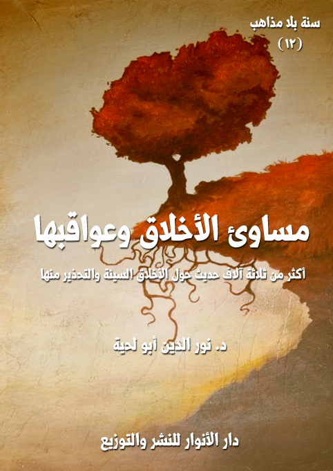

الكتاب: مساوئ الأخلاق وعواقبها
الوصف: أكثر من 3500 حديث حول الأخلاق السيئة والتحذير منها
السلسلة: سنة بلا مذاهب
المؤلف: د. نور الدين أبو لحية
الناشر: دار الأنوار للنشر والتوزيع
الطبعة: الأولى، 1442 هـ
الكتاب موافق للمطبوع
ISBN: 978-620-3-85891-4
لمطالعة الكتاب من تطبيق مؤلفاتي المجاني وهو أحسن وأيسر: هنا

يجمع هذا الكتاب أكثر من 3500 حديث من المصادر السنية والشيعية حول [مساوئ الأخلاق وعواقبها]، ونقصد بها ما ورد من الأحاديث في الأخلاق السيئة، أو الصفات النفسية الراسخة التي تصدر عنها المواقف السلبية، والأعمال الفاسدة، سواء تلك التي بين العبد ونفسه، أو بين العبد وكل ما يربطه مع غيره من علاقات، ابتداء من علاقته بربه.
وسر ترتيبه بعد الكتاب السابق المرتبط بالأخلاق الحسنة هو أن الساعي لتحلية نفسه بتلك الأخلاق ساع في الحقيقة لتخلية نفسه من كل ما يتناقض معها من الأخلاق السيئة، لأن التحلية هي عين التخلية.
ولكن مع ذلك؛ فإن العلم بالأخلاق السيئة، وردع النفس عنها ضروري، حتى تكتمل التزكية بمعانيها المختلفة، بما فيها تلك الشوائب التي قد تعتري الأخلاق الحسنة؛ فتفسدها، وتضر بها.
ولهذا نرى القرآن الكريم يشير إلى تلك الأخلاق السيئة، بل كيف طبعت أكثر النفوس عليها، ويبين أن فلاح الإنسان لا يكون إلا بتطهير نفسه منها، كما قال تعالى: ﴿وَنَفْسٍ وَمَا سَوَّاهَا فَأَلْهَمَهَا فُجُورَهَا وَتَقْوَاهَا قَدْ أَفْلَحَ مَنْ زَكَّاهَا وَقَدْ خَابَ مَنْ دَسَّاهَا﴾ [الشمس: 7-10]
مساوئ الأخلاق وعواقبها (9)
يجمع هذا الكتاب أكثر من 3500 حديث من المصادر السنية والشيعية حول [مساوئ الأخلاق وعواقبها]، ونقصد بها ما ورد من الأحاديث في الأخلاق السيئة، أو الصفات النفسية الراسخة التي تصدر عنها المواقف السلبية، والأعمال الفاسدة، سواء تلك التي بين العبد ونفسه، أو بين العبد وكل ما يربطه مع غيره من علاقات، ابتداء من علاقته بربه.
وسر ترتيبه بعد الكتاب السابق المرتبط بالأخلاق الحسنة هو أن الساعي لتحلية نفسه بتلك الأخلاق ساع في الحقيقة لتخلية نفسه من كل ما يتناقض معها من الأخلاق السيئة، لأن التحلية هي عين التخلية.
ولكن مع ذلك؛ فإن العلم بالأخلاق السيئة، وردع النفس عنها ضروري، حتى تكتمل التزكية بمعانيها المختلفة، بما فيها تلك الشوائب التي قد تعتري الأخلاق الحسنة؛ فتفسدها، وتضر بها.
ولهذا نرى القرآن الكريم يشير إلى تلك الأخلاق السيئة، بل كيف طبعت أكثر النفوس عليها، ويبين أن فلاح الإنسان لا يكون إلا بتطهير نفسه منها، كما قال تعالى: {وَنَفْسٍ وَمَا سَوَّاهَا فَأَلْهَمَهَا فُجُورَهَا وَتَقْوَاهَا قَدْ أَفْلَحَ مَنْ زَكَّاهَا وَقَدْ خَابَ مَنْ دَسَّاهَا} [الشمس: 7 - 10]
ومع تشعب الأخلاق السيئة وكثرتها إلا أنا رأينا أنه يمكن تصنيف الحديث عنها إلى عشرة فصول، كل فصل يذكر الأحاديث الواردة في ناحية من نواحيها، وذلك حتى نتجنب التكرار الكثير للأحاديث، لأن معظم الأحاديث الواردة في هذا الباب تحمل معاني شتى لا يمكن وضعها في محل واحد، وهذه الفصول هي:
مساوئ الأخلاق وعواقبها (10)
1. الذنوب والمعاصي: وقد جمعنا فيه الأحاديث الواردة حول أنواع الذنوب والمعاصي والعقوبات المرتبطة بها، باعتبار أن كل خلق سيء ليس سوى ذنب من الذنوب ومعصية من المعاصي، بل أكثرها من الكبائر.
2. الغفلة والجحود: وقد جمعنا فيه الأحاديث الواردة حول الذنوب التي لها علاقة بالله تعالى من الغفلة والجحود والرياء وغيرها، ذلك أنه إذا كان جحود الإنسان ذنبا وخطيئة وخلقا سيئا؛ فكيف بالله تعالى وهو المنعم الأعظم، بل لا إنعام إلا منه.
3. الأهواء والضلالات: وقد جمعنا فيه الأحاديث الواردة حول خطر اتباع الهوى والبدع والضلالات التي تنحرف بالمؤمن عن الصراط المستقيم، ذلك أنها ـ بالإضافة إلى كونها من الأخلاق السيئة ـ سبب لكل الانحرافات الخلقية وغيرها.
4. الأنا والاستعلاء: وقد جمعنا فيه الأحاديث الواردة حول العجب والغرور والكبر وكل الأخلاق المرتبطة بتضخم الأناء واستعلائها على غيرها، وهي من أمهات الأخلاق السيئة.
5. اللؤم والسفه: وقد جمعنا فيه الأحاديث الواردة حول اللؤم والسفه والأخلاق المرتبطة بنذالة النفس ودناءة همتها، والتي ينتج عنها الكسل والجبن والخلاعة والفحش وعدم الحياء وغيرها من الصفات الذميمة.
6. التقتير والتبذير: وقد جمعنا فيه الأحاديث الواردة حول التقتير والتبذير وكل الصفات التي تنحرف بالإنسان عن الاعتدال والوسطية، ذلك أن الأخلاق الحسنة ليست سوى تعبير عن توازن النفس، بخلاف غيرها، والتي تنحرف بها النفس إلى الإفراط أو التفريط..
7. الكذب والخيانة: وقد جمعنا فيه الأحاديث الواردة حول الكذب والخيانة والغدر
مساوئ الأخلاق وعواقبها (11)
والخداع والأخلاق المرتبطة بها، وهي كثيرة جدا، ذلك أنها من أكبر المنابع التي تنحرف بالإنسان عن حقيقته ووظائفه.
8. الظلم والأذى: وقد جمعنا فيه الأحاديث الواردة حول الظلم والأذى والعدوان وما ارتبط بها من أخلاق ومظاهر.
9. الهمز واللمز: وقد جمعنا فيه الأحاديث الواردة حول الهمز واللمز والسخرية والغيبة والنميمة وغيرها من أنواع الأذى التي يمكن أن تجتمع جميعا في [الهمز واللمز]، والتي ذكرت ـ مع ذكر العقوبة الشديدة ـ المرتبطة بها في سورة الهمزة.
10. الغضب والعجلة: وقد جمعنا فيه الأحاديث الواردة حول الغضب والعجلة والحدة، وكل ما يرتبط بها من الأخلاق السيئة.
مساوئ الأخلاق وعواقبها (12)
جمعنا في هذا الفصل ما نراه متوافقا مع القرآن الكريم من الأحاديث الواردة حول أنواع الذنوب والمعاصي والعقوبات المرتبطة بها، باعتبار أن كل خلق سيء ليس سوى ذنب من الذنوب ومعصية من المعاصي، بل أكثرها من الكبائر.
وهي متوافقة مع القرآن الكريم، ذلك أنه ذكر تصنيفات مختلفة للذنوب، ومنها تقسيمها إلى ذنوب ظاهرة وذنوب باطنة، كما في قوله تعالى: {وَذَرُوا ظَاهِرَ الْأِثْمِ وَبَاطِنَهُ إِنَّ الَّذِينَ يَكْسِبُونَ الْأِثْمَ سَيُجْزَوْنَ بِمَا كَانُوا يَقْتَرِفُونَ} [الأنعام: 120]، فقد قسم الذنوب في هذه الآية إلى ذنوب ظاهرة وذنوب باطنة، وأمر بترك جميعها، حتى لا يكتفي المؤمن بتزكية ظاهره أو باطنه أو العكس.
وقريب منه ما ورد في قوله تعالى: {قُلْ إِنَّمَا حَرَّمَ رَبِّيَ الْفَوَاحِشَ مَا ظَهَرَ مِنْهَا وَمَا بَطَنَ وَالْأِثْمَ وَالْبَغْيَ بِغَيْرِ الْحَقِّ وَأَنْ تُشْرِكُوا بِاللَّهِ مَا لَمْ يُنَزِّلْ بِهِ سُلْطَاناً وَأَنْ تَقُولُوا عَلَى اللَّهِ مَا لا تَعْلَمُونَ} [لأعراف: 33]
ومنها تصنيف الذنوب إلى كبائر وصغائر، كما أشار إلى ذلك قوله تعالى: {وَالَّذِينَ يَجْتَنِبُونَ كَبَائِرَ الْأِثْمِ وَالْفَوَاحِشَ وَإِذَا مَا غَضِبُوا هُمْ يَغْفِرُونَ} [الشورى: 37]
ومنها تصنيف الذنوب إلى إثم وفواحش، ثم كبائر ولمم، كما في قوله تعالى: {الَّذِينَ يَجْتَنِبُونَ كَبَائِرَ الْأِثْمِ وَالْفَوَاحِشَ إِلَّا اللَّمَمَ إِنَّ رَبَّكَ وَاسِعُ الْمَغْفِرَةِ هُوَ أَعْلَمُ بِكُمْ إِذْ أَنْشَأَكُمْ مِنَ الْأَرْضِ وَإِذْ أَنْتُمْ أَجِنَّةٌ فِي بُطُونِ أُمَّهَاتِكُمْ فَلا تُزَكُّوا أَنْفُسَكُمْ هُوَ أَعْلَمُ بِمَنِ اتَّقَى} [لنجم: 32]
ومنها تصنيف الذنوب إلى صنفي الإثم والعدوان، وقد ورد ذلك في خمسة مواضع من القرآن الكريم، قال تعالى: {ثُمَّ أَنْتُمْ هَؤُلاءِ تَقْتُلُونَ أَنْفُسَكُمْ وَتُخْرِجُونَ فَرِيقاً مِنْكُمْ مِنْ
مساوئ الأخلاق وعواقبها (13)
دِيَارِهِمْ تَظَاهَرُونَ عَلَيْهِمْ بِالْأِثْمِ وَالْعُدْوَانِ} [البقرة: 85]، وقال: {وَتَعَاوَنُوا عَلَى الْبِرِّ وَالتَّقْوَى وَلا تَعَاوَنُوا عَلَى الْأِثْمِ وَالْعُدْوَانِ} [المائدة: 2]، وقال: {وَتَرَى كَثِيراً مِنْهُمْ يُسَارِعُونَ فِي الْأِثْمِ وَالْعُدْوَانِ} [المائدة: 62]، وقال: {وَيَتَنَاجَوْنَ بِالْأِثْمِ وَالْعُدْوَانِ وَمَعْصِيَتِ الرَّسُولِ} [المجادلة: 8]، وقال: {يَا أَيُّهَا الَّذِينَ آمَنُوا إِذَا تَنَاجَيْتُمْ فَلا تَتَنَاجَوْا بِالْأِثْمِ وَالْعُدْوَانِ وَمَعْصِيَتِ الرَّسُولِ} [المجادلة: 9]
كما أن القرآن الكريم أشار، بل صرح في مواضع كثيرة بخطر الذنوب والمعاصي، وكونها السبب الأكبر في كل أنواع البلاء والفتن التي يتعرض لها البشر، وكونها السبب في كل حرمان يحصل لهم، كما قال تعالى: {وَلَوأَنَّ أَهْلَ الْقُرَى آمَنُوا وَاتَّقَوْا لَفَتَحْنَا عَلَيْهِمْ بَرَكَاتٍ مِنَ السَّمَاءِ وَالْأَرْضِ} [الأعراف: 96]
ويضرب الأمثلة الكثيرة على ذلك، ومنها ما ذكره عن قوم سبأ، فقد كانت لها من الجنات ما تنبهر له الأبصار، كما قال تعالى يصفها: {لَقَدْ كَانَ لِسَبَأٍ فِي مَسْكَنِهِمْ آيَةٌ جَنَّتَانِ عَنْ يَمِينٍ وَشِمَالٍ كُلُوا مِنْ رِزْقِ رَبِّكُمْ وَاشْكُرُوا لَهُ بَلْدَةٌ طَيِّبَةٌ وَرَبٌّ غَفُورٌ} [سبأ: 15]، لكنهم بإعراضهم عن الله وانحرافهم عن سبيله أدركتهم سنة الله فيمن حاد عن الله، قال تعالى يبين الحال التي انتقلوا إليها، وسببها: {فَأَعْرَضُوا فَأَرْسَلْنَا عَلَيْهِمْ سَيْلَ الْعَرِمِ وَبَدَّلْنَاهُمْ بِجَنَّتَيْهِمْ جَنَّتَيْنِ ذَوَاتَيْ أُكُلٍ خَمْطٍ وَأَثْلٍ وَشَيْءٍ مِنْ سِدْرٍ قَلِيلٍ} [سبأ: 16]، فهذا الذي صار إليه أمر تينك الجنتين إليه بعد كفرهم وشركهم باللّه وتكذيبهم الحق وعدولهم عنه إلى الباطل، فبعد الثمار النضيجة والمناظر الحسنة والظلال العميقة والأنهار الجارية تبدلت إلى شجر الأراك والطرفاء والسدر ذي الشوك الكثير والثمر القليل.
ويعمم القرآن الكريم هذا النموذج على كثير من القرى التي انحرفت عن سبيل الله، قال تعالى يبين سنته في ذلك: {وَكَمْ أَهْلَكْنَا مِنْ قَرْيَةٍ بَطِرَتْ مَعِيشَتَهَا فَتِلْكَ مَسَاكِنُهُمْ لَمْ تُسْكَنْ مِنْ
مساوئ الأخلاق وعواقبها (14)
بَعْدِهِمْ إِلَّا قَلِيلاً وَكُنَّا نَحْنُ الْوَارِثِينَ} [القصص: 58]، وقال: {أَفَلَمْ يَهْدِ لَهُمْ كَمْ أَهْلَكْنَا قَبْلَهُمْ مِنَ الْقُرُونِ يَمْشُونَ فِي مَسَاكِنِهِمْ إِنَّ فِي ذَلِكَ لَآياتٍ لِأُولِي النُّهَى} [طه: 128]، وقال: {وَعَاداً وَثَمُودَ وَقَدْ تَبَيَّنَ لَكُمْ مِنْ مَسَاكِنِهِمْ وَزَيَّنَ لَهُمُ الشَّيْطَانُ أَعْمَالَهُمْ فَصَدَّهُمْ عَنِ السَّبِيلِ وَكَانُوا مُسْتَبْصِرِينَ} [العنكبوت: 38]، وقال: {أو لَمْ يَهْدِ لَهُمْ كَمْ أَهْلَكْنَا مِنْ قَبْلِهِمْ مِنَ الْقُرُونِ يَمْشُونَ فِي مَسَاكِنِهِمْ إِنَّ فِي ذَلِكَ لَآياتٍ أَفَلا يَسْمَعُونَ} [السجدة: 26]
والقرآن الكريم يذكر أن الله بحكمته يشرع للعاصين من التشريعات ما يعاقبهم به جزاء وفاقا على معاصيهم، ومن الأمثلة على ذلك أنه حرم بعض الطيبات على اليهود بسبب بغيهم، قال تعالى: {وَعَلَى الَّذِينَ هَادُوا حَرَّمْنَا كُلَّ ذِي ظُفُرٍ وَمِنَ الْبَقَرِ وَالْغَنَمِ حَرَّمْنَا عَلَيْهِمْ شُحُومَهُمَا إِلَّا مَا حَمَلَتْ ظُهُورُهُمَا أو الْحَوَايَا أو مَا اخْتَلَطَ بِعَظْمٍ ذَلِكَ جَزَيْنَاهُمْ بِبَغْيِهِمْ وَإِنَّا لَصَادِقُونَ} [الأنعام: 146]، أي إنما حرمنا عليهم ذلك لأنهم يستحقون ذلك بسبب بغيهم وطغيانهم، ومخالفتهم رسولهم واختلافهم عليه.
وقد صرح القرآن الكريم بالغرض من تحريم هذه الطيبات وغيرها، فقال: {فَبِظُلْمٍ مِنَ الَّذِينَ هَادُوا حَرَّمْنَا عَلَيْهِمْ طَيِّبَاتٍ أُحِلَّتْ لَهُمْ وَبِصَدِّهِمْ عَنْ سَبِيلِ اللَّهِ كَثِيراً وَأَخْذِهِمُ الرِّبا وَقَدْ نُهُوا عَنْهُ وَأَكْلِهِمْ أَمْوَالَ النَّاسِ بِالْبَاطِلِ وَأَعْتَدْنَا لِلْكَافِرِينَ مِنْهُمْ عَذَاباً أَلِيماً} [النساء: 160 ـ 161]
ومثل ذلك ما أمر به بنوإسرائيل من قتل أنفسهم مع أن الشريعة في الأصل تحرم قتل النفس مطلقا، قال تعالى: {وَإِذْ قَالَ مُوسَى لِقَوْمِهِ يَا قَوْمِ إِنَّكُمْ ظَلَمْتُمْ أَنْفُسَكُمْ بِاتِّخَاذِكُمُ الْعِجْلَ فَتُوبُوا إِلَى بَارِئِكُمْ فَاقْتُلُوا أَنْفُسَكُمْ ذَلِكُمْ خَيْرٌ لَكُمْ عِنْدَ بَارِئِكُمْ فَتَابَ عَلَيْكُمْ إِنَّهُ هو التَّوَّابُ الرَّحِيمُ} [البقرة: 54]
بناء على هذا، سنذكر هنا ما ورد من الأحاديث الواردة عن رسول الله صلى الله عليه وآله وسلم وأئمة الهدى في أنواع الذنوب والمعاصي وخطرها وما يرتبط بذلك من المعاني.
مساوئ الأخلاق وعواقبها (15)
أولا ـ ما ورد في الأحاديث النبوية
من الأحاديث الواردة في هذا الباب في المصادر السنية والشيعية:
[الحديث: 1] قال رسول الله صلى الله عليه وآله وسلم: (إنّ الله لم يحرّم حرمة إلّا وقد علم أنّه سيطّلعها منكم مطّلع (1)، ألا وإنّي آخذ بحجزكم أن تهافتوا في النّار كتهافت الفراش أو الذّباب) (2)
[الحديث: 2] قال رسول الله صلى الله عليه وآله وسلم: (أيّها النّاس، إنّ الله طيّب لا يقبل إلّا طيّبا، وإنّ الله أمر المؤمنين بما أمر به المرسلين فقال: {يَا أَيُّهَا الرُّسُلُ كُلُوا مِنَ الطَّيِّبَاتِ وَاعْمَلُوا صَالِحًا إِنِّي بِمَا تَعْمَلُونَ عَلِيمٌ} [المؤمنون: 51]، وقال: {يَا أَيُّهَا الَّذِينَ آمَنُوا كُلُوا مِنْ طَيِّبَاتِ مَا رَزَقْنَاكُمْ} [البقرة: 172]، ثمّ ذكر الرّجل يطيل السّفر أشعث أغبر يمدّ يديه إلى السّماء. يا ربّ يا ربّ، ومطعمه حرام، ومشربه حرام، وملبسه حرام، وغذي بالحرام، فأنّى يستجاب لذلك؟) (3)
[الحديث: 3] قال رسول الله صلى الله عليه وآله وسلم: (الحلال بيّن والحرام بيّن، وبينهما أمور مشبّهات لا يعلمها كثير من النّاس، فمن اتّقى المشبّهات استبرأ لدينه وعرضه، ومن وقع في الشّبهات كراع يرعى حول الحمى يوشك أن يواقعه، ألا وإنّ لكلّ ملك حمى، ألا إنّ حمى الله في أرضه محارمه، ألا وإنّ في الجسد مضغة إذا صلحت صلح الجسد كلّه، وإذا فسدت فسد الجسد كلّه، ألا وهي القلب) (4)
[الحديث: 4] قال رسول الله صلى الله عليه وآله وسلم: (ضرب الله مثلا صراطا مستقيما، وعلى جنبتي الصّراط سوران فيهما أبواب مفتّحة وعلى الأبواب ستور مرخاة وعلى باب الصّراط داع
__________
(1) سيطلعها منكم مطلع: يعني سيرتكبها وينتهكها بعضكم.
(2) أحمد (1/ 390)
(3) مسلم (1015)
(4) البخاري، (52) ومسلم (1599)
مساوئ الأخلاق وعواقبها (16)
يقول: أيّها النّاس، ادخلوا الصّراط جميعا ولا تتفرّجوا، وداع يدعو من جوف الصّراط فإذا أراد أن يفتح شيئا من تلك الأبواب قال: ويحك! لا تفتحه، فإنّك إن تفتحه تلجه) (1)
[الحديث: 5] قال رسول الله صلى الله عليه وآله وسلم: (ما نقض قوم العهد قطّ إلّا كان القتل بينهم، ولا ظهرت الفاحشة في قوم قطّ الّا سلّط الله عزّ وجلّ عليهم الموت، ولا منع قوم الزّكاة إلّا حبس الله عنهم القطر) (2)
[الحديث: 6] قال رسول الله صلى الله عليه وآله وسلم: (يا معشر المهاجرين، خمس إذا ابتليتم بهنّ وأعوذ بالله أن تدركوهنّ: لم تظهر الفاحشة في قوم قطّ، حتّى يعلنوا بها، إلّا فشا فيهم الطّاعون والأوجاع الّتي لم تكن مضت في أسلافهم الّذين مضوا، ولم ينقصوا المكيال والميزان، إلّا أخذوا بالسّنين وشدّة المئونة وجور السّلطان عليهم، ولم يمنعوا زكاة أموالهم إلّا منعوا القطر من السّماء، ولو لا البهائم لم يمطروا، ولم ينقضوا عهد الله وعهد رسوله، إلّا سلّط الله عليهم عدوّا من غيرهم، فأخذوا بعض ما في أيديهم، وما لم تحكم أئمّتهم بكتاب الله، ويتخيّروا ممّا أنزل الله، إلّا جعل الله بأسهم بينهم) (3)
[الحديث: 7] قال رسول الله صلى الله عليه وآله وسلم: (من نذر أن يطيع الله فليطعه، ومن نذر أن يعصيه فلا يعصه) (4)
[الحديث: 8] قال رسول الله صلى الله عليه وآله وسلم: (أ رأيتم لو أنّ نهرا بباب أحدكم يغتسل فيه كلّ يوم خمسا ما تقول ذلك يبقي من درنه؟) قالوا: لا يبقي من درنه شيئا، قال: (فذلك مثل الصّلوات الخمس يمحو الله به الخطايا) (5)
[الحديث: 9] قال رسول الله صلى الله عليه وآله وسلم: (إنّه أتاني اللّيلة آتيان، وإنّهما ابتعثاني، وإنّهما قالا
__________
(1) أحمد (4/ 182، 183) النسائي (2/ 192)
(2) سنن البيهقي (3/ 346) والحاكم (2/ 126)
(3) ابن ماجة (4019)
(4) البخاري، 1 (6696)
(5) البخاري (2/ 528)، ومسلم (667)
مساوئ الأخلاق وعواقبها (17)
لي: انطلق، وإنّي انطلقت معهما، وإنّا أتينا على رجل مضطجع، وإذا آخر قائم عليه بصخرة، وإذا هو يهوي بالصّخرة لرأسه فيثلغ رأسه (1) فيتدهده (2) الحجر هاهنا، فيتبع الحجر فيأخذه فلا يرجع إليه حتّى يصحّ رأسه كما كان، ثمّ يعود عليه فيفعل به مثل ما فعل به المرّة الأولى. قلت لهما: سبحان الله! ما هذان؟ قالا لي: انطلق. انطلق، فانطلقنا فأتينا على رجل مستلق لقفاه، وإذا آخر قائم عليه بكلّوب من حديد وإذا هو يأتي أحد شقّي وجهه ليشرشر شدقه إلى قفاه، ومنخره إلى قفاه، وعينه إلى قفاه، ثمّ يتحوّل إلى الجانب الآخر فيفعل به مثل ما فعل بالجانب الأوّل فما يفرغ من ذلك الجانب حتّى يصحّ ذلك الجانب كما كان، ثمّ يعود عليه فيفعل مثل ما فعل المرّة الأولى. قلت: سبحان الله! ما هذان؟ قالا لي: انطلق انطلق، فانطلقنا فأتينا على مثل التنّور، فإذا فيه لغط وأصوات. فاطّلعنا فيه فإذا فيه رجال ونساء عراة، وإذا هم يأتيهم لهب من أسفل منهم، فإذا أتاهم ذلك اللهب ضوضوا (3) قلت لهما: ما هؤلاء؟ قالا لي: انطلق انطلق، فانطلقنا، فأتينا على نهر أحمر مثل الدّم، وإذا في النهر رجل سابح يسبح، وإذا على شطّ النّهر رجل قد جمع عنده حجارة كثيرة، وإذا ذلك السّابح يسبح ما يسبح، ثمّ يأتي ذلك الّذي قد جمع عنده الحجارة فيفغر (4) له فاه فيلقمه حجرا فينطلق يسبح ثمّ يرجع إليه. كلّما رجع إليه فغر له فاه فألقمه حجرا. قلت لهما: ما هذان؟ قالا لي: انطلق انطلق، فانطلقنا فأتينا على رجل كريه المرآة كأكره ما أنت راء رجلا مرآة، وإذا عنده نار يحشّها (5) ويسعى حولها. قلت لهما: ما هذا؟ قالا لي: انطلق انطلق. فانطلقنا فأتينا على روضة معتمة فيها من كلّ لون الرّبيع، وإذا بين ظهري الرّوضة رجل طويل لا أكاد أرى رأسه طولا في السّماء، وإذا حول الرّجل من أكثر ولدان رأيتهم قطّ. قلت لهما: ما هذا؟ ما هؤلاء؟
__________
(1) يثلغ رأسه: يشجها أي يكسرها.
(2) يتدهده الحجر: يتدحرج.
(3) ضوضوا: الجلبة وأصوات الناس.
(4) يفغر فاه: يفتحه.
(5) يحشّها: يوقدها.
مساوئ الأخلاق وعواقبها (18)
قالا لي: انطلق انطلق. فانطلقنا فانتهينا إلى روضة عظيمة لم أر روضة قطّ أعظم منها ولا أحسن. قالا لي: ارق. فارتقيت فيها قال: فارتقينا فيها فانتهينا إلى مدينة مبنيّة بلبن ذهب ولبن فضّة، فأتينا باب المدينة فاستفتحنا ففتح لنا، فدخلناها فتلقّانا فيها رجال شطر من خلقهم كأحسن ما أنت راء وشطر كأقبح ما أنت راء. قال لهم: اذهبوا فقعوا في ذلك النّهر. وإذا نهر معترض يجري كأنّ ماءه المحض من البياض فذهبوا فوقعوا فيه، ثمّ رجعوا إلينا قد ذهب ذلك السّوء عنهم فساروا في أحسن صورة. قالا لي: هذه جنّة عدن، وهذاك منزلك. فسما بصري صعدا. فإذا قصر مثل الرّبابة البيضاء. قالا لي هذاك منزلك، قلت لهما: بارك الله فيكما. ذراني فأدخله. قالا: أمّا الآن فلا وأنت داخله. قال: قلت لهما: فإنّي قد رأيت منذ اللّيلة عجبا فما هذا الّذي رأيت؟ قالا لي: أما إنّا سنخبرك: أمّا الرّجل الأوّل الّذي أتيت عليه يثلغ رأسه بالحجر فإنّه الرّجل يأخذ بالقرآن فيرفضه، وينام عن الصّلاة المكتوبة، وأمّا الرّجل الّذي أتيت عليه يشرشر شدقه إلى قفاه ومنخره إلى قفاه وعينه إلى قفاه فإنّه الرّجل يغدو من بيته فيكذب الكذبة تبلغ الآفاق، وأمّا الرّجال والنّساء العراة الّذين في مثل بناء التّنّور فهم الزّناة والزّواني، وأمّا الرّجل الّذي أتيت عليه يسبح في النّهر ويلقم الحجر فإنّه آكل الرّبا، وأمّا الرّجل الكرية المرآة الّذي عند النّار يحشّها ويسعى حولها فإنّه مالك خازن جهنّم. وأمّا الرّجل الطّويل الّذي في الرّوضة فإنّه إبراهيم عليه السلام، وأمّا الولدان الّذين حوله فكلّ مولود مات على الفطرة، وأمّا القوم الّذين كانوا شطرا منهم حسن وشطرا قبيح فإنّهم قوم خلطوا عملا صالحا وآخر سيّئا، تجاوز الله عنهم) (1)
[الحديث: 10] قال رسول الله صلى الله عليه وآله وسلم: (اجتنبوا السّبع الموبقات)، قيل: يا رسول الله، وما هنّ؟ قال: (الشّرك بالله، والسّحر، وقتل النفس الّتي حرّم الله إلّا بالحقّ، وأكل مال
__________
(1) البخاري، 1 (7047)، مسلم (2275)
مساوئ الأخلاق وعواقبها (19)
اليتيم، وأكل الرّبا، والتّولّي يوم الزّحف، وقذف المحصنات الغافلات المؤمنات) (1)
[الحديث: 11] سئل رسول الله صلى الله عليه وآله وسلم عن الكبائر قال: (الإشراك بالله، وعقوق الوالدين، وقتل النّفس، وشهادة الزّور) (2)
[الحديث: 12] عن ابن عبّاس أنّ رسول الله صلى الله عليه وآله وسلم كان متّكئا فدخل عليه رجل، فقال: ما الكبائر؟ فقال: الشّرك بالله، والقنوط من رحمة الله عزّ وجلّ والأمن من مكر الله، وهذا أكبر الكبائر) (3)
[الحديث: 13] عن عبادة بن الصّامت أنّ رسول الله صلى الله عليه وآله وسلم قال وحوله عصابة من أصحابه: (بايعوني على أن لا تشركوا بالله شيئا ولا تسرقوا، ولا تزنوا، ولا تقتلوا أولادكم، ولا تأتوا ببهتان تفترونه بين أيديكم وأرجلكم، ولا تعصوا في معروف فمن وفّى منكم فأجره على الله، ومن أصاب من ذلك شيئا فعوقب في الدّنيا فهو كفّارة له، ومن أصاب من ذلك شيئا ثمّ ستره الله فهو إلى الله: إن شاء عفا عنه، وإن شاء عاقبه) (4)
[الحديث: 14] قال رسول الله صلى الله عليه وآله وسلم: (كلّ أمّتي معافى إلّا المجاهرين، وإنّ من المجاهرة أن يعمل الرّجل باللّيل عملا، ثمّ يصبح وقد ستره الله، فيقول: يا فلان عملت البارحة كذا وكذا، وقد بات يستره ربّه ويصبح يكشف ستر الله عنه) (5)
[الحديث: 15] قال رسول الله صلى الله عليه وآله وسلم: (ثلاثة يدعون فلا يستجاب لهم: رجل عنده امرأة سيّئة الخلق فلا يطلّقها ورجل دفع ماله إلى سفيه، وقد قال الله عزّ وجلّ: {وَلَا تُؤْتُوا السُّفَهَاءَ أَمْوَالَكُمُ} [النساء: 5] ورجل باع ولم يشهد) (6)
[الحديث: 16] قال رسول الله صلى الله عليه وآله وسلم: (ما من شيء أثقل في ميزان المؤمن يوم القيامة
__________
(1) البخاري، (2766)، ومسلم (89)
(2) البخاري، (2653)، ومسلم (88)
(3) المصنف (10/ 460)
(4) البخاري، (18) مسلم (1709)
(5) البخاري، 1 (6069) ومسلم (2990)
(6) الحاكم (2/ 302)
مساوئ الأخلاق وعواقبها (20)
من خلق حسن، وإنّ الله يبغض الفاحش البذيء) (1)
[الحديث: 17] عن أبي هريرة قال: قال رجل: يا رسول الله، إنّ فلانة تكثر من صلاتها وصدقتها وصيامها غير أنّها تؤذي جيرانها بلسانها. قال: (هي في النّار) قال: يا رسول الله، فإنّ فلانة يذكر من قلّة صيامها وصلاتها وأنّها تتصدّق بالأثوار من الأقط، ولا تؤذي جيرانها. قال: (هي في الجنّة) (2)
[الحديث: 18] قال رسول الله صلى الله عليه وآله وسلم: (ألا لا تحقرنّ شيئا وإن صغر في أعينكم، فإنّه لا صغيرة بصغيرة مع الإصرار، ولا كبيرة بكبيرة مع الاستغفار، ألا وإنّ الله سائلكم عن أعمالكم حتّى عن مسّ أحدكم ثوب أخيه بين إصبعيه) (3)
[الحديث: 19] قال رسول الله صلى الله عليه وآله وسلم: (إنّ المؤمن ليرى ذنبه كأنّه تحت صخرة يخاف أن تقع عليه، وإنّ الكافر ليرى ذنبه كأنّه ذباب مرّ على أنفه) (4)
[الحديث: 20] قال رسول الله صلى الله عليه وآله وسلم: (إنّ إبليس رضي منكم بالمحقّرات، والذنب الّذي لا يغفر، قول الرجل: (لا أؤاخذ بهذا الذنب، استصغارا له) (5)
[الحديث: 21] قال رسول الله صلى الله عليه وآله وسلم: (إنّ الله عزّ وجلّ كتم ثلاثة في ثلاثة: رضاه في طاعته، وكتم سخطه في معصيته، وكتم وليّه في خلقه، ولا يستخفّ أحدكم شيئا من الطاعات فإنّه لا يدري في أيّها رضا الله تعالى، ولا يستقلّنّ أحدكم شيئا من المعاصي فإنّه لا يدري في أيّها سخط الله، ولا يزرينّ أحدكم بأحد من خلقه فإنّه لا يدري أيّهم وليّ الله) (6)
[الحديث: 22] قال رسول الله صلى الله عليه وآله وسلم: (لا تحقّرن ذنبا ولا تصغرنّه، واجتنب الكبائر،
__________
(1) الترمذي (2002)
(2) أحمد والبزار وابن حبان، الترغيب (3/ 356)
(3) عقاب الأعمال ص 346.
(4) أمالي الطوسي ج 2 ص 140.
(5) نوادر الراوندي ص 17.
(6) كنز الفوائد للكراجكي ج 1 ص 55.
مساوئ الأخلاق وعواقبها (21)
فإنّ العبد إذا نظر يوم القيامة إلى ذنوبه دمعت عيناه قيحا ودما يقول الله تعالى: {يَوْمَ تَجِدُ كُلُّ نَفْسٍ مَا عَمِلَتْ مِنْ خَيْرٍ مُحْضَرًا وَمَا عَمِلَتْ مِنْ سُوءٍ تَوَدُّ لَوْ أَنَّ بَيْنَهَا وَبَيْنَهُ أَمَدًا بَعِيدًا وَيُحَذِّرُكُمُ الله نَفْسَهُ وَالله رَءُوفٌ بِالْعِبَادِ} [آل عمران: 30]) (1)
[الحديث: 23] قال رسول الله صلى الله عليه وآله وسلم: (أربعة في الذّنب شرّ من الذنب: الاستحقار والافتخار والاستبشار والإصرار) (2)
[الحديث: 24] قال رسول الله صلى الله عليه وآله وسلم: (انّ الشيطان قد يئس أن يعبد في جزيرة العرب غير أنّه رضي منكم بالمحقّرات) (3)
[الحديث: 25] قال رسول الله صلى الله عليه وآله وسلم: (إياكم ومحقّرات الذنوب، فإنّ لها من الله طالبا وأنها لتجمع على المرء حتّى تهلكه) (4)
[الحديث: 26] عن الإمام الصادق: أنّ رسول الله صلى الله عليه وآله وسلم نزل بأرض قرعاء فقال لأصحابه: ايتوا بحطب فقالوا: يا رسول الله نحن بأرض قرعاء ما بها من حطب، فقال رسول الله صلى الله عليه وآله وسلم: فليأت كلّ إنسان بما قدر عليه فجاؤوا به حتّى رموا بين يديه بعضه على بعض، فقال رسول الله صلى الله عليه وآله وسلم: هكذا تجتمع الذّنوب، ثمّ قال: (إيّاكم والمحقّرات من الذّنوب، فانّ لكلّ شيء طالبا ألا وإنّ طالبها يكتب ما قدّموا وآثارهم وكلّ شيء أحصيناه في إمام مبين) (5)
[الحديث: 27] قال رسول الله صلى الله عليه وآله وسلم: (الكبائر تسع: أعظمهنّ الإشراك بالله عزّ وجلّ، وقتل النفس المؤمنة، وأكل الربا، وأكل مال اليتيم، وقذف المحصنة، والفرار من الزحف، وعقوق الوالدين، واستحلال البيت الحرام، والسحر فمن لقي الله عزّ وجلّ وهو بريء
__________
(1) مكارم الأخلاق ص 452.
(2) مستدرك الوسائل ج 2 ص 315 عن لبّ اللباب.
(3) مستدرك الوسائل ج 2 ص 315 عن لبّ اللباب.
(4) إرشاد القلوب ص 33.
(5) اصول الكافي ج 2 ص 288.
مساوئ الأخلاق وعواقبها (22)
منهنّ كان معي في جنّة مصاريعها من ذهب) (1)
[الحديث: 28] قال رسول الله صلى الله عليه وآله وسلم: (إن الرجل ليحرم رزقه بالذّنب يصيبه) (2)
[الحديث: 29] قال رسول الله صلى الله عليه وآله وسلم: (بادروا بعمل الخير قبل أن تشغلوا عنه، واحذروا الذّنوب فإنّ العبد يذنب الذّنب فيحبس عنه الرّزق) (3)
[الحديث: 30] قال رسول الله صلى الله عليه وآله وسلم: (قال الله جلّ جلاله: أيّما عبد أطاعني لم أكله إلى غيري، وأيّما عبد عصاني وكّلته إلى نفسه ثمّ لم أبال في أيّ واد هلك) (4)
[الحديث: 31] قال رسول الله صلى الله عليه وآله وسلم: (اتقوا الذنوب فإنّها ممحقة للخيرات، إنّ العبد ليذنب الذنب فينسى به العلم الّذي كان قد علمه، وإنّ العبد ليذنب الذنب فيمتنع به من قيام الليل، وإنّ العبد ليذنب الذنب فيحرم به الرزق وقد كان هينا له)، ثمّ تلا: {إِنَّا بَلَوْنَاهُمْ كَمَا بَلَوْنَا أَصْحَابَ الْجَنَّةِ إِذْ أَقْسَمُوا لَيَصْرِمُنَّهَا مُصْبِحِينَ وَلَا يَسْتَثْنُونَ فَطَافَ عَلَيْهَا طَائِفٌ مِنْ رَبِّكَ وَهُمْ نَائِمُونَ فَأَصْبَحَتْ كَالصَّرِيمِ فَتَنَادَوْا مُصْبِحِينَ أَنِ اغْدُوا عَلَى حَرْثِكُمْ إِنْ كُنْتُمْ صَارِمِينَ فَانْطَلَقُوا وَهُمْ يَتَخَافَتُونَ أَنْ لَا يَدْخُلَنَّهَا الْيَوْمَ عَلَيْكُمْ مِسْكِينٌ وَغَدَوْا عَلَى حَرْدٍ قَادِرِينَ فَلَمَّا رَأَوْهَا قَالُوا إِنَّا لَضَالُّونَ بَلْ نَحْنُ مَحْرُومُونَ قَالَ أَوْسَطُهُمْ أَلَمْ أَقُلْ لَكُمْ لَوْلَا تُسَبِّحُونَ قَالُوا سُبْحَانَ رَبِّنَا إِنَّا كُنَّا ظَالِمِينَ فَأَقْبَلَ بَعْضُهُمْ عَلَى بَعْضٍ يَتَلَاوَمُونَ قَالُوا يَا وَيْلَنَا إِنَّا كُنَّا طَاغِينَ عَسَى رَبُّنَا أَنْ يُبْدِلَنَا خَيْرًا مِنْهَا إِنَّا إِلَى رَبِّنَا رَاغِبُونَ كَذَلِكَ الْعَذَابُ وَلَعَذَابُ الْآخِرَةِ أَكْبَرُ لَوْ كَانُوا يَعْلَمُونَ} [القلم: 17 - 33]) (5)
[الحديث: 32] عن البراء بن عازب قال: كان معاذ بن جبل جالسا قريبا من رسول الله صلى الله عليه وآله وسلم في منزل أبي أيّوب الأنصاريّ فقال معاذ: يا رسول الله أرأيت قول الله تعالى: {يَوْمَ
__________
(1) كنز الفوائد للكراجكي ج 2 ص 11.
(2) أمالي الطوسي ج 2 ص 141.
(3) كنز الكراجكي ج 1 ص 352.
(4) من لا يحضره الفقيه ج 4 ص 289.
(5) عدّة الداعي ص 211.
مساوئ الأخلاق وعواقبها (23)
يُنْفَخُ فِي الصُّورِ فَتَأْتُونَ أَفْوَاجًا وَفُتِحَتِ السَّمَاءُ فَكَانَتْ أَبْوَابًا} [النبأ: 18 - 19]؟ فقال: (يا معاذ سألت عن عظيم من الأمر) ثمّ أرسل عينيه ثمّ قال: (تحشر عشرة أصناف من أمّتي أشتاتا قد ميّزهم الله تعالى من المسلمين وبدّل صورهم، فبعضهم على صورة القردة، وبعضهم على صورة الخنازير، وبعضهم منكّسون أرجلهم من فوق ووجوههم من تحت ثمّ يسحبون عليها، وبعضهم عمي يتردّدون، وبعضهم بكم لا يعقلون، وبعضهم يمضغون ألسنتهم يسيل القيح من أفواههم لعابا يتقذّرهم أهل الجمع، وبعضهم مقطّعة أيديهم وأرجلهم، وبعضهم مصلّبون على جذوع من نار، وبعضهم أشدّ نتنا من الجيف، وبعضهم يلبسون جبابا سابغة من قطران لازقة بجلودهم، فأمّا الّذين على صورة القردة فالقتّات من الناس، وأمّا الّذين على صورة الخنازير فأهل السحت، وأمّا المنكّسون على رؤوسهم فآكلة الربا، والعمي: الجائرون في الحكم، والصمّ البكم: المعجبون بأعمالهم، والّذين يمضغون بألسنتهم فالعلماء والقضاة الّذين خالفت أعمالهم أقوالهم، والمقطّعة أيديهم وأرجلهم الّذين يؤذون الجيران، والمصلّبون على جذوع من نار فالسعاة بالناس إلى السلطان، والّذين هم أشدّنتنا من الجيف فالّذين يتمتّعون بالشهوات واللّذّات ويمنعون حقّ الله في أموالهم، والّذين يلبسون الجباب فأهل الفخر والخيلاء) (1)
[الحديث: 33] قال رسول الله صلى الله عليه وآله وسلم: (اقطع لسانك عن إخوانك، وعن حملة القرآن، ولتكن ذنوبك عليك ولا تحملها على إخوانك، ولا تزكّ نفسك بتذميم إخوانك، ولا ترائي بعملك، ولا تدخل كذا من الدنيا في الاخرة، ولا تفحش في مجلسك لكي يحذروك بسوء خلقك، ولا تناج مع رجل وعندك آخر ولا تتعظّم على الناس فينقطع عنك خيرات الدنيا، ولا تمزق الناس فيمرّقك كلاب النار قال الله تعالى: {وَالنَّاشِطَاتِ نَشْطًا} [النازعات: 2] أتدري ما
__________
(1) مجمع البيان ج 10 ص 424.
مساوئ الأخلاق وعواقبها (24)
الناشطات؟ كلاب أهل النار، تنشط العظم واللحم) قيل: من يطيق هذه الخصال؟ قال: (أما إنّه يسير على من يسّر الله عليه) (1)
[الحديث: 34] قال رسول الله صلى الله عليه وآله وسلم: (لا تزال أمتي بخير ما تحابّوا وتهادوا، وأدّوا الأمانة، واجتنبوا الحرام، وقروا الضيف، وأقاموا الصلاة، وآتوا الزكاة، فإذا لم يفعلوا ذلك ابتلوا بالقحط والسنين) (2)
[الحديث: 35] قال رسول الله صلى الله عليه وآله وسلم: (قال الله عزّ وجلّ، إذا عصاني من خلقي من يعرفني سلّطت عليه من خلقي من لا يعرفني) (3)
[الحديث: 36] قال رسول الله صلى الله عليه وآله وسلم: (للمؤمن اثنان وسبعون سترا فإذا أذنب ذنبا انهتك عنه ستر، فإن تاب ردّه الله عليه وسبعين معه، فإن أبي إلّا قدما قدما في المعاصي تهتك عنه أستاره، فإن تاب ردّها الله ومع كلّ ستر منها سبعة أستار، فإن أبي إلّا قدما قدما في المعاصي تهتكّت أستاره وبقى بلا ستر، وأوحى الله عزّ وجلّ إلى الملائكة أن استروا عبدي بأجنحتكم فإنّ بني آدم يعيرون ولا يغيّرون وأنا أغير ولا اعيّر، فإن أبى إلّا قدما في المعاصي شكت الملائكة إلى ربّها ورفعت أجنحتها وقالت أي ربّ إن عبدك هذا قد آذانا ممّا يأتي من الفواحش ما ظهر منها وما بطن قال: فيقال لهم: كفّوا عنه أجنحتكم فلو عمل بخطيئة في سواد اللّيل أو في وضح النهار أو في مفازة أو في قعر بحر لأجراه على ألسنة الناس فاسألوا الله أن لا يهتك أستاركم) (4)
[الحديث: 37] قال رسول الله صلى الله عليه وآله وسلم: (قال الله تبارك وتعالى: من أذنب ذنبا فعلم أنّ لي أن اعذّبه، وأنّ لي أن أعفو عنه، عفوت عنه) (5)
__________
(1) فلاح السائل ص 124.
(2) عيون الأخبار ج 2 ص 29.
(3) من لا يحضره الفقيه ج 4 ص 289.
(4) الأشعثيّات ص 195.
(5) المحاسن ص 26.
مساوئ الأخلاق وعواقبها (25)
[الحديث: 38] قال رسول الله صلى الله عليه وآله وسلم: (لا تحقّروا شيئا من الشرّ وإن صغر في أعينكم، ولا تستكثروا شيئا من الخير وإن كثر في أعينكم، فإنّه لا كبير مع الاستغفار ولا صغير مع الإصرار) (1)
[الحديث: 39] قال رسول الله صلى الله عليه وآله وسلم: (إنّ إبليس رضى منكم بالمحقّرات، والذّنب الّذي لا يغفر قول الرجل لا اؤاخذ بهذا الذّنب استصغارا له) (2)
[الحديث: 40] قال رسول الله صلى الله عليه وآله وسلم يوصي بعض أصحابه: (انظر ان تدع الذنب سرّا وعلانية صغيرا وكبيرا فإنّ الله تعالى حيث ما كنت يراك وهو معك فاجتنبها) (3)
[الحديث: 41] قال رسول الله صلى الله عليه وآله وسلم: (يا أبا ذر لا تنظر إلى صغر الخطيئة ولكن انظر إلى من عصيت، يا أبا ذرّ إنّ نفس المؤمن أشدّ تقلّبا وخيفة من العصفور حين يقذف به في شركه ـ إلى أن قال ـ: يا أبا ذرّ إنّ الرجل ليعمل الحسنة فيتّكل عليها ويعمل المحقّرات حتّى يأتي الله وهو عليه غضبان، وإنّ الرجل ليعمل فيفرق منها فيأتي الله عزّ وجلّ آمنا يوم القيامة) (4)
[الحديث: 42] قال رسول الله صلى الله عليه وآله وسلم: (إذا أذنب العبد كان نقطة سوداء على قلبه، فإن هو تاب وأقلع واستغفر صفا قلبه منها، وإن هو لم يتب ولم يستغفر كان الذّنب على الذّنب والسواد على السواد حتّى يغمر القلب فيموت بكثرة غطاء الذنوب عليه وذلك قوله تعالى: {بَلْ رانَ عَلى قُلُوبِهِمْ ما كانُوا يَكْسِبُونَ}) (5)
[الحديث: 43] قال رسول الله صلى الله عليه وآله وسلم: (إنّ المؤمن إذا أذنب كانت نكتة سوداء في قلبه، فإن تاب ونزع واستغفر صقل قلبه منه، وإن زاد زادت فذلك الرين الّذي ذكره الله في كتابه:
__________
(1) من لا يحضره الفقيه ج 4 ص 11.
(2) الأشعثيّات ص 237.
(3) مكارم الأخلاق ص 454.
(4) أمالي الطوسي ج 2 ص 143.
(5) إرشاد القلوب ص 46.
مساوئ الأخلاق وعواقبها (26)
{كَلَّا بَلْ رَانَ عَلَى قُلُوبِهِمْ مَا كَانُوا يَكْسِبُونَ} [المطففين: 14]) (1)
[الحديث: 44] قال رسول الله صلى الله عليه وآله وسلم: (يقول الله عزّ وجلّ: يا بن آدم أما تنصفني، أتحبّب إليك بالنّعمة وتتمقت إليّ بالمعاصي، خيري إليك منزل وشرك إليّ صاعد، ولا يزال ملك كريم يأتيني عنكَ في كلّ يوم وليلة بعمل قبيح، يا بن آدم لو سمعت وصفك من غيرك وأنت لا تعلم من الموصوف لسارعت إلى مقته) (2)
[الحديث: 45] قال رسول الله صلى الله عليه وآله وسلم: (قال الله تعالى: أيّما عبد أطاعني لم أكله إلى غيري، وأيّما عبد عصاني وكّلته إلى نفسه، ثمّ لم أبال بأيّ واد هلك) (3)
[الحديث: 46] قال رسول الله صلى الله عليه وآله وسلم: (من حاول أمرا بمعصية الله كان أفوت لما يرجو، وأسرع لما يحذر) (4)
[الحديث: 47] قال رسول الله صلى الله عليه وآله وسلم: (إذا أراد الله بعبد سوءا أمسك عليه ذنوبه حتّى يوافي بها يوم القيامة، وإذا أراد بعبد خيرا عجّل عقوبته في الدنيا) (5)
[الحديث: 48] قال رسول الله صلى الله عليه وآله وسلم: (ما من حمى ولا صداع ولا عرق يضرب إلّا بذنب، وما يعفو الله أكثر) (6)
[الحديث: 49] قال رسول الله صلى الله عليه وآله وسلم: (ما اختلج عرق ولا عثرت قدم إلّا بما قدّمت أيديكم، وما يعفو الله عنه أكثر) (7)
[الحديث: 50] قال رسول الله صلى الله عليه وآله وسلم: (قال الله تبارك وتعالى: وعزّتي وجلالي لا أخرج عبدا من الدنيا وأنا اريد أن أرحمه حتّى استوفي منه كلّ خطيئة عملها إمّا بسقم في جسده أو بضيق في رزقه وإمّا بخوف في دنياه، فإن بقيت عليه بقيّة شدّدت عليه عند الموت) (8)
__________
(1) روضة الواعظين ج 2 ص 414.
(2) صحيفة الإمام الرضا ص 52.
(3) الجواهر السنية ص 145.
(4) تحف العقول ص 248.
(5) إرشاد القلوب ص 182.
(6) مشكاة الأنوار ص 278.
(7) أمالي الطوسي ج 2 ص 183.
(8) مشكاة الأنوار ص 156.
مساوئ الأخلاق وعواقبها (27)
[الحديث: 51] قال رسول الله صلى الله عليه وآله وسلم: (من ترك معصية لله مخافة الله تبارك وتعالى أرضاه يوم القيامة) (1)
[الحديث: 52] قال رسول الله صلى الله عليه وآله وسلم: (اتّق المحارم تكن أعبد الناس، وارض بما قسّم الله لك تكن أغنى الناس، وأحسن إلى جارك تكن مؤمنا، وأحبّ للناس ما تحبّ لنفسك تكن مسلما، ولا تكثر الضحك، فانّ كثرة الضحك تميت القلب) (2)
[الحديث: 53] قال رسول الله صلى الله عليه وآله وسلم: (أعبد الناس من أقام الفرائض، وأزهد الناس من اجتنب المحارم، وأسخى الناس من أدّى زكاة ماله، وأتقى الناس من قال الحق فيما له وعليه) (3)
[الحديث: 54] عن أبي سعيد الخدري أنّ عمارا قال لرسول الله صلى الله عليه وآله وسلم: ووددت أنك عمرت فينا عمر نوح عليه السّلام فقال رسول الله صلى الله عليه وآله وسلم: (يا عمّار حياتي خير لكم ووفاتي ليس بشر لكم، أمّا في حياتي فتحدّثون وأستغفر الله لكم، وامّا بعد وفاتي فاتّقوا الله وأحسنوا الصلاة عليّ وعلى أهل بيتي فإنكم تعرضون عليّ وعلى أهل بيتي وأسمائكم وأسماء آبائكم وقبائلكم، فإن يكن خيرا حمدت الله وإن يكن سوى ذلك أستغفر الله لذنوبكم) فقال المنافقون والشكاك والذين في قلوبهم مرض: يزعم أنّ الأعمال تعرض عليه بعد وفاته بأسماء الرجال، وأسماء آبائهم وأنسابهم إلى قبائلهم إنّ هذا لهو الإفك فأنزل الله جلّ جلاله {وَقُلِ اعْمَلُوا فَسَيَرَى الله عَمَلَكُمْ وَرَسُولُهُ وَالْمُؤْمِنُونَ} [التوبة: 105]) (4)
[الحديث: 55] قال رسول الله صلى الله عليه وآله وسلم: (إنّ العبد ليحبس على ذنب من ذنوبه مائة عام وإنّه لينظر إلى أزواجه في الجنّة يتنعّمن) (5)
__________
(1) اصول الكافي ج 2 ص 81.
(2) نزهة الناظر ص 21.
(3) كنز الفوائد للكراجكي ج 1 ص 299.
(4) محاسبة النفس ص 18.
(5) اصول الكافي ج 2 ص 272.
مساوئ الأخلاق وعواقبها (28)
[الحديث: 56] قال رسول الله صلى الله عليه وآله وسلم: (إنّ الرجل ليحبس على باب الجنة مقدار عام بذنب واحد وإنّه لينظر إلى أكوابه وأزواجه) (1)
[الحديث: 57] قال رسول الله صلى الله عليه وآله وسلم: (إن الله جلّ جلاله ينوّم العبد عن خدمته عقوبة له بطريق الذنوب) (2)
[الحديث: 58] قال رسول الله صلى الله عليه وآله وسلم: (الكبائر أربع الإشراك بالله، والقنوط من رحمة الله، واليأس من روح الله، والأمن من مكر الله) (3)
[الحديث: 59] عن الإمام الصادق قال: (كان رسول الله صلى الله عليه وآله وسلم يتعوّذ في كلّ يوم من ستّ: من الشكّ، والشرك، والحميّة، والغضب، والبغي، والحسد) (4)
[الحديث: 60] سئل رسول الله صلى الله عليه وآله وسلم عن الكبائر، فقال: (هن تسع: أعظمهن الشرك بالله، وقتل النفس بغير حق، وفرار من الزحف، والسحر، وأكل مال اليتيم، وأكل الربا، وقذف المحصنة، وعقوق الوالدين، واستحلال البيت الحرام قبلتكم أحياء وأمواتا) ثمّ قال: (من لا يعمل هذه الكبائر، ويقيم الصلاة، ويؤتي الزكاة، ويقيم على ذلك، إلّا رافق محمّدا) (5)
[الحديث: 61] قال رسول الله صلى الله عليه وآله وسلم: (ان الكبائر أحد عشر: أربع في الرأس، الشرك بالله عزّ وجلّ، وقذف المحصنة، واليمين الفاجرة، وشهادة الزور. وثلاث في البطن، أكل مال الربا، وشرب الخمر، وأكل مال اليتيم. وواحدة في الرجل، وهي الفرار من الزحف. وواحدة في الفرج، وهي الزنا وواحدة في اليدين، وهي قتل النفس، وواحدة في جميع البدن وهي عقوق الوالدين) (6)
__________
(1) نوادر الراوندي ص 4.
(2) فلاح السائل ص 270.
(3) نوادر الراوندي ص 16.
(4) الخصال ج 1 ص 329.
(5) عوالي اللّئالي ج 1 ص 88.
(6) عوالي اللّئالي ج 1 ص 88.
مساوئ الأخلاق وعواقبها (29)
[الحديث: 62] قال رسول الله صلى الله عليه وآله وسلم: (من قال عليّ ما لم أقل فليتبوأ مقعده من النار) (1)
[الحديث: 63] قال رسول الله صلى الله عليه وآله وسلم: (اكبر الكبائر أن تجعل لله ندّا وهو خلقك، ثمّ أن تقتل ولدك خشية أن يأكل معك، ثم ان تزني بحليلة جارك) (2)
[الحديث: 64] قال رسول الله صلى الله عليه وآله وسلم: (من العصمة تعذر المعاصي) (3)
[الحديث: 65] قال رسول الله صلى الله عليه وآله وسلم: (من أذنب ذنبا وهو ضاحك دخل النار وهو باك) (4)
[الحديث: 66] قال رسول الله صلى الله عليه وآله وسلم: (الخلق السيء يفسد العمل كما يفسد الخلّ العسل) (5)
[الحديث: 67] قال رسول الله صلى الله عليه وآله وسلم: (ما شيء أبغض إلى الله عزّ وجلّ من البخل، وسوء الخلق، وإنّه ليفسد العمل كما يفسد الخلّ العسل) (6)
[الحديث: 68] قال رسول الله صلى الله عليه وآله وسلم: (لا يزال العبد يزداد من الله بعدا ما ساء خلقه) (7)
[الحديث: 69] قال رسول الله صلى الله عليه وآله وسلم: (خلقان يحبّهما الله السخاء وحسن الخلق، وخلقان يبغضهما الله البخل وسوء الخلق، ولقد جمع الله تعالى ذلك في قوله: {وَمَنْ يُوقَ شُحَّ نَفْسِهِ فَأُولَئِكَ هُمُ الْمُفْلِحُونَ} [التغابن: 16]) (8)
[الحديث: 70] قال رسول الله صلى الله عليه وآله وسلم: (خصلتان لا تجتمعان في مسلم: البخل، وسوء
__________
(1) من لا يحضره الفقيه ج 3 ص 374.
(2) مستدرك الوسائل ج 2 ص 317، الشيخ أبو الفتوح الرازي في تفسيره.
(3) نهج البلاغة ص 1248.
(4) عقاب الأعمال ص 266.
(5) عيون الأخبار ج 2 ص 37.
(6) مكارم الأخلاق ص 17.
(7) مكارم الأخلاق ص 467.
(8) إرشاد القلوب ص 137.
مساوئ الأخلاق وعواقبها (30)
الخلق) (1)
[الحديث: 71] قال رسول الله صلى الله عليه وآله وسلم: (لا يجتمع الشحّ والإيمان في قلب عبد أبدا) (2)
[الحديث: 72] قال رسول الله صلى الله عليه وآله وسلم: (الأخلاق منائح من الله عزّ وجلّ، فإذا أحبّ عبدا منحه خلقا حسنا، وإذا أبغض عبدا منحه خلقا سيّئا) (3)
[الحديث: 73] قال رسول الله صلى الله عليه وآله وسلم: (سوء الخلق شؤم) (4)
[الحديث: 74] سئل رسول الله صلى الله عليه وآله وسلم عن الشؤم، فقال: (سوء الخلق) (5)
[الحديث: 75] قال رسول الله صلى الله عليه وآله وسلم: (عليكم بحسن الخلق فإنّ حسن الخلق في الجنّة لا محالة، وإيّاكم وسوء الخلق، فإنّ سوء الخلق في النار لا محالة) (6)
[الحديث: 76] قال الإمام الصادق: أتي رسول الله صلى الله عليه وآله وسلم فقيل له إنّ سعد بن معاذ قد مات، فقام رسول الله صلى الله عليه وآله وسلم وقام أصحابه معه فأمر بغسل سعد وهو قائم على عضادة الباب فلما أن حنط وكفن وحمل على سريره تبعه رسول الله صلى الله عليه وآله وسلم بلا حذاء ولا رداء، ثمّ كان يأخذ يمنة السرير مرّة ويسرة السرير مرّة حتّى انته به إلى القبر، فنزل رسول الله صلى الله عليه وآله وسلم حتّى لحده وسوى اللبن عليه، وجعل يقول: ناولوني حجرا ناولوني ترابا رطبا يسدّ به ما بين اللبن، فلمّا أن فرغ وحثا التراب عليه وسوّى قبره، قال رسول الله صلى الله عليه وآله وسلم: إنّي لأعلم إنه سيبلى ويصل البلى إليه، ولكن الله يحبّ عبدا إذا عمل عملا أحكمه فلمّا أن سوّى التربة عليه، قالت امّ سعد: يا سعد هنيئا لك الجنّة، فقال رسول الله صلى الله عليه وآله وسلم: يا امّ سعد مه لا تجزمي على ربّك، فإنّ سعدا قد أصابته ضمّة، فرجع رسول الله صلى الله عليه وآله وسلم ورجع الناس، فقالوا له: يا رسول الله لقد رأيناك صنعت على سعد ما لم تصنعه على أحد إنّك تبعت جنازته بلا رداء ولا حذاء، فقال
__________
(1) الخصال ج 1 ص 75.
(2) مشكاة الأنوار ص 231.
(3) الاختصاص ص 225.
(4) تحف العقول ص 44.
(5) إرشاد القلوب ص 134.
(6) عيون الأخبار ج 2 ص 31.
مساوئ الأخلاق وعواقبها (31)
رسول الله صلى الله عليه وآله وسلم: إنّ الملائكة كانت بلا رداء ولا حذاء فتأسّيت بها، قالوا: وكنت تأخذ يمنة السرير مرّة ويسرة السرير مرّة، قال: كانت يدي في يد جبريل آخذ حيث يأخذ، قالوا: أمرت بغسله وصلّيت على جنازته ولحدته في قبره، ثمّ قلت إنّ سعدا قد أصابته ضمّة، قال: فقال: نعم إنّه كان في خلقه مع أهله سوء) (1)
[الحديث: 77] قال رسول الله صلى الله عليه وآله وسلم: (ليس منّا من غشّ مسلما، وليس منّا من خان مسلما) (2)
[الحديث: 78] قال رسول الله صلى الله عليه وآله وسلم: (إنّ جبريل الروح الأمين نزل عليّ من عند ربّ العالمين، فقال: يا محمّد عليك بحسن الخلق فإنّ سوء الخلق يذهب بخير الدنيا والآخرة) (3)
[الحديث: 79] قال رسول الله صلى الله عليه وآله وسلم: (سوء الخلق زمام من عذاب الله في أنف صاحبه، والزمام بيد الشيطان يجّره إلى الشرّ، والشرّ يجّره إلى النار) (4)
[الحديث: 80] قيل لرسول الله صلى الله عليه وآله وسلم: إن فلانة تصوم النهار، وتقوم الليل، وهي سيّئة الخلق تؤذي جيرانها بلسانها، فقال: (لا خير فيها هي من أهل النار) (5)
[الحديث: 81] قال رسول الله صلى الله عليه وآله وسلم يوصي بعض أصحابه: (عليك بمحاسن الأخلاق فاركبها، عليك بمساوئ الأخلاق فاجتنبها، فإن لم تفعل فلا تلومنّ إلّا نفسك) (6)
[الحديث: 82] قال رسول الله صلى الله عليه وآله وسلم: (من ساء خلقه عذّب نفسه) (7)
[الحديث: 83] قال رسول الله صلى الله عليه وآله وسلم: (ربّ عزيز أذلّه خلقه، وذليل أعزّه خلقه) (8)
__________
(1) أمالي الصدوق ص 384.
(2) عيون الأخبار ج 2 ص 50.
(3) عيون الأخبار ج 2 ص 50.
(4) جامع الأخبار ص 107.
(5) تنبيه الخواطر ونزهة النواظر ج 1 ص 90.
(6) من لا يحضره الفقيه ج 4 ص 139.
(7) أمالي الطوسي ج 2 ص 125.
(8) كنز الفوائد ج 1 ص 320.
مساوئ الأخلاق وعواقبها (32)
[الحديث: 84] قال رسول الله صلى الله عليه وآله وسلم: (من لانت كلمته وجبت محبّته) (1)
[الحديث: 85] قال رسول الله صلى الله عليه وآله وسلم: (لكلّ ذنب توبة إلّا سوء الخلق، فإنّ صاحبه كلمّا خرج من ذنب دخل في ذنب) (2)
[الحديث: 86] قال رسول الله صلى الله عليه وآله وسلم: (أبى الله لصاحب البدعة بالتوبة، وأبى الله لصاحب الخلق السيء بالتوبة)، قيل: يا رسول الله وكيف ذلك؟ قال: (أمّا صاحب البدعة فقد أشرب قلبه حبّا، وأمّا صاحب الخلق السيء فإنّه إذا تاب من ذنب وقع في ذنب أعظم من الذنب الّذي تاب منه) (3)
[الحديث: 87] قال رسول الله صلى الله عليه وآله وسلم: (لا كبيرة مع استغفار، ولا صغيرة مع إصرار) (4)
[الحديث: 88] قال رسول الله صلى الله عليه وآله وسلم: (ثلاث يمتن القلب: الذنب على الذنب، ومماراة الأحمق تقول ويقول ولا يرجع إلى خير أبدا، ومجالسة الموتى) فقيل له: يا رسول الله، وما مجالسة الموتى؟ قال: (كلّ غنيّ مترف) (5)
[الحديث: 89] قال رسول الله صلى الله عليه وآله وسلم: (أربعة في الذنب شرّ من الذنب: الاستحقار، والافتخار، والاستبشار، والإصرار) (6)
[الحديث: 90] قال رسول الله صلى الله عليه وآله وسلم: (ما آمن بالقرآن من استحلّ محارمه) (7)
وهي أحاديث كثيرة، وقد قسمناها بحسب من وردت عنهم إلى الأقسام التالية:
__________
(1) كنز الفوائد ج 1 ص 320.
(2) من لا يحضره الفقيه ج 4 ص 254.
(3) نوادر الراوندي ص 18.
(4) (المستدرك): ج 2 ص 319 عن القاضي أبو عبد اللّه محمّد بن سلامة القضاعي في كتاب (الشهاب).
(5) روضة الواعظين ج 2 ص 414.
(6) مستدرك الوسائل ج 2 ص 319، القطب الراوندي في (لبّ اللباب).
(7) إرشاد القلوب ص 66.
مساوئ الأخلاق وعواقبها (33)
[الحديث: 91] قال الإمام عليّ: (إذا عظّمت الذّنب فقد عظّمت الله، فإذا صغّرته فقد صغّرت حقّ الله تعالى، لأنّ حقّه في الصغير والكبير، وما من ذنب عظيم عظّمته إلّا صغر عند الله تعالى، ولا من صغير صغّرته إلّا عظم عند الله عزّ وجلّ) (1)
[الحديث: 92] قال الإمام علي: (لا يصغر ما ينفع يوم القيامة ولا يصغر ما يضر يوم القيامة، فكونوا فيما أخبركم الله عزّ وجلّ كمن عاين) (2)
[الحديث: 93] قال الإمام علي: (اشدّ الذّنوب عند الله ذنب استهان به راكبه) (3)
[الحديث: 94] قال الإمام علي: (اعظم الذنوب عند الله ذنب صغر عند صاحبه) (4)
[الحديث: 95] قال الإمام علي في كلام له في تسويل الشياطين: (إنهم يخدعوك بأنفسهم فإذا لم تجبهم مكروا بك وبنفسك بتحبيبهم إليك شهواتك وإعطائك أمانيك وإرادتك ويسوّلون لك وينسونك وينهونك ويأمرونك ويحسنون ظنّك بالله حتّى ترجوه فتغتر بذلك فتعصيه وجزاء المعاصي بطي ء) (5)
[الحديث: 96] قال الإمام عليّ في قول الله تبارك وتعالى: {وَمَا أَصَابَكُمْ مِنْ مُصِيبَةٍ فَبِمَا كَسَبَتْ أَيْدِيكُمْ وَيَعْفُو عَنْ كَثِيرٍ} [الشورى: 30]: (ليس من المؤمن عرق ولا نكبة حجر ولا عثرة قدم ولا خدش عود إلّا بذنب، ولما يعفو الله تبارك وتعالى عنه أكثر، فمن عجّل الله تبارك وتعالى غفر ذنبه في دار الدّنيا، فإنّ الله تبارك وتعالى أجلّ وأعظم من أن يعود في عفو في الآخرة) (6)
[الحديث: 97] قال الإمام علي: (لو لم يتوعّد الله على معصيته لكان يجب أن لا يعصي
__________
(1) الأشعثيّات ص 237.
(2) اصول الكافي ج 2 ص 456.
(3) غرر الحكم ص 192.
(4) غرر الحكم ص 193.
(5) مستدرك الوسائل ج 2 ص 313، عماد الدين الطبرسي في بشارة المصطفى.
(6) الأشعثيّات ص 179.
مساوئ الأخلاق وعواقبها (34)
شكرا لنعمه) (1)
[الحديث: 98] قال الإمام علي: (ما زالت عنكم نعمة ولا غضارة عيش إلّا بذنوب اجترحتموها وما الله بظلام للعبيد) (2)
[الحديث: 99] قال الإمام علي: (مداومة المعاصي تقطع الرزق) (3)
[الحديث: 100] قال الإمام علي: (مجاهرة الله سبحانه بالمعاصي تعجل النقم) (4)
[الحديث: 101] قال الإمام علي: (مدمن الشّهوات صريع الآفات، مقارن السيّئات موقن بالتّبعات) (5)
[الحديث: 102] قال الإمام علي: (لا وجع أوجع للقلوب من الذّنوب، ولا خوف أشد من الموت، وكفى بما سلف تفكّرا، وكفى بالموت واعظا) (6)
[الحديث: 103] قال الإمام علي: (لا تبدينّ عن واضحة وقد عملت الأعمال الفاضحة، ولا تأمن البيات وقد عملت السيّئات) (7)
[الحديث: 104] قال الإمام علي: (إنّما هو عيد لمن قبل الله صيامه وشكر قيامه، وكلّ يوم لا تعصي الله فيه فهو يوم عيد) (8)
[الحديث: 105] عن عمّار بن ياسر قال: بينا أنا أمشي بأرض الكوفة إذ رأيت أمير المؤمنين عليّا جالسا وعنده جماعة من الناس وهو يصف لكلّ إنسان ما يصلح له فقلت: يا أمير المؤمنين أيوجد عندك دواء الذّنوب فقال: (نعم اجلس) فحثوت على ركبتي حتّى تفرّق عنه الناس، ثمّ أقبل عليّ فقال: (خذ دواء أقول لك) قلت: قل يا أمير المؤمنين قال: (عليك بورق الفقر وعروق الصبر وهليج الكتمان وبليج الرضا وغاريقون الفكر
__________
(1) نهج البلاغة ص 1227.
(2) غرر الحكم ص 100.
(3) غرر الحكم ص 100.
(4) غرر الحكم ص 100.
(5) غرر الحكم ص 100.
(6) اصول الكافي ج 2 ص 275.
(7) اصول الكافي ج 2 ص 273.
(8) نهج البلاغة ص 1286.
مساوئ الأخلاق وعواقبها (35)
وسقمونيا الأحزان واشربه بماء الأجفان واغله في طبخير) (1)
[الحديث: 106] قال الإمام علي: (والّذي نفس ابن أبي طالب بيده لألف ضربة بالسيف أهون عليّ من ميتة على الفراش في غير طاعة الله) (2)
[الحديث: 107] قال الإمام علي: (لا أحسب أحدكم ينسى شيئا من أمر دينه إلّا بخطيئة أخطأها) (3)
[الحديث: 108] قال الإمام علي: (عجبت لمن يحتمي الطعام لأذيّته ولا يحتمى الذّنب لأليم عقوبته) (4)
[الحديث: 109] قال الإمام علي: (من الكبائر قتل المؤمن متعمدا والفرار يوم الزّحف واكل الربا بعد البيّنة وأكل مال اليتيم ظلما والتعرب بعد الهجرة ورمي المحصنات الغافلات المؤمنات) (5)
[الحديث: 110] قال الإمام علي: (قذف المحصنات من الكبائر، لأنّ الله يقول: {إِنَّ الَّذِينَ يَرْمُونَ الْمُحْصَنَاتِ الْغَافِلَاتِ الْمُؤْمِنَاتِ لُعِنُوا فِي الدُّنْيَا وَالْآخِرَةِ وَلَهُمْ عَذَابٌ عَظِيمٌ} [النور: 23]) (6)
[الحديث: 111] قال الإمام عليّ: (السكر من الكبائر والحيف في الوصية من الكبائر) (7)
[الحديث: 112] قال الإمام قال: (غالبوا انفسكم على ترك المعاصي تسهل عليكم مقادتها إلى الطاعات) (8)
__________
(1) مستدرك الوسائل ج 2 ص 356.
(2) نهج البلاغة، كلام 122 ص 380.
(3) الأشعثيّات ص 172.
(4) غرر الحكم ص 494.
(5) دعائم الإسلام ج 2 ص 457.
(6) علل الشرائع ص 478.
(7) تفسير العيّاشي ج 1 ص 238.
(8) غرر الحكم ص 508.
مساوئ الأخلاق وعواقبها (36)
[الحديث: 113] قال الإمام علي: (التنزه عن المعاصي عبادة التوابين) (1)
[الحديث: 114] قال الإمام علي: (المعصية تجلب العقوبة) (2)
[الحديث: 115] قال الإمام علي: (التهجّم على المعاصي يوجب عذاب النار) (3)
[الحديث: 116] قال الإمام علي: (إيّاك والمعصية فإنّ اللئيم من باع جنة المأوى بمعصية دنيّة من معاصي الدنيا) (4)
[الحديث: 117] قال الإمام علي: (إياك أن تستسهل ركوب المعاصي فإنها تكسوك في الدنيا ذلّة وتكسبك في الآخرة سخط الله) (5)
[الحديث: 118] قال الإمام علي: (إنّما الورع التطهر عن المعاصي) (6)
[الحديث: 119] قال الإمام علي: (توقّوا المعاصي واحبسوا أنفسكم عنها فإنّ الشقي من اطلق فيها عنانه) (7)
[الحديث: 120] قال الإمام علي: (راكب المعصية مثواه النار) (8)
[الحديث: 121] قال الإمام علي: (لو لم يتوعد الله سبحانه على معصية لوجب أن لا يعصى شكرا لنعمته) (9)
[الحديث: 122] قال الإمام علي: (من كرمت عليه نفسه لم يهنها بالمعصية) (10)
[الحديث: 123] قال الإمام علي: (مداومة المعاصي تقطع الرزق) (11)
[الحديث: 124] قال الإمام علي: (ترك الخطيئة أيسر من طلب التوبة وكم من شهوة
__________
(1) غرر الحكم ص 70.
(2) غرر الحكم ص 36.
(3) غرر الحكم ص 99.
(4) غرر الحكم ص 154.
(5) غرر الحكم ص 156.
(6) غرر الحكم ص 297.
(7) غرر الحكم ص 348.
(8) غرر الحكم ص 420.
(9) غرر الحكم ص 605.
(10) غرر الحكم ص 677.
(11) غرر الحكم ص 760.
مساوئ الأخلاق وعواقبها (37)
ساعة أورثت حزنا طويلا والموت فضح الدّنيا، فلم يترك لذي لبّ فرحا) (1)
[الحديث: 125] قال الإمام علي: (ما من عبد إلّا وعليه أربعون جنّة حتّى يعمل أربعين كبيرة فإذا عمل أربعين كبيرة انكشفت عنه الجنن) (2)
[الحديث: 126] قال الإمام علي: (سوء الخلق شؤم والإساءة إلى المحسن لؤم) (3)
[الحديث: 127] قال الإمام علي: (الخلق المذموم من ثمار الجهل) (4)
[الحديث: 128] قال الإمام علي: (والله لا يعذّب الله سبحانه مؤمنا بعد الإيمان؛ إلّا بسوء ظنّه وسوء خلقه) (5)
[الحديث: 129] قال الإمام علي: (سوء الخلق شرّ قرين) (6)
[الحديث: 130] قال الإمام علي: (الخلق السيء أحد العذابين) (7)
[الحديث: 131] قال الإمام علي: (سوء الخلق نكد العيش وعذاب النفس) (8)
[الحديث: 132] قال الإمام علي: (سوء الخلق يوحش النّفس ويرفع الانس) (9)
[الحديث: 133] قال الإمام علي: (من أساء خلقه عذّب نفسه) (10)
[الحديث: 134] قال الإمام علي: (من ضاقت ساحته قلّت راحته) (11)
[الحديث: 135] قال الإمام علي: (لا عيش لسيّء الخلق) (12)
[الحديث: 136] قال الإمام علي: (السيء الخلق كثير الطيش منغصّ العيش) (13)
[الحديث: 137] قال الإمام علي: (سوء الخلق يوحش القريب، وينفّر البعيد) (14)
__________
(1) اصول الكافي ج 2 ص 451.
(2) اصول الكافي ج 2 ص 279.
(3) غرر الحكم ص 264.
(4) غرر الحكم ص 264.
(5) غرر الحكم ص 264.
(6) جامع الأخبار ص 107.
(7) جامع الأخبار ص 107.
(8) جامع الأخبار ص 107.
(9) جامع الأخبار ص 107.
(10) جامع الأخبار ص 107.
(11) جامع الأخبار ص 107.
(12) جامع الأخبار ص 107.
(13) جامع الأخبار ص 107.
(14) جامع الأخبار ص 107.
مساوئ الأخلاق وعواقبها (38)
[الحديث: 138] قال الإمام علي: (من كثر خرقه استذلّ) (1)
[الحديث: 139] قال الإمام علي: (من ساء خلقه ضاق رزقه) (2)
[الحديث: 140] قال الإمام علي: (من ضاق خلقه ملّه أهله) (3)
[الحديث: 141] قال الإمام علي: (من ساءت سجيّته سرّت منيّته) (4)
[الحديث: 142] قال الإمام علي: (من خشنت عريكته افتقرت حاشيته) (5)
[الحديث: 143] قال الإمام علي: (من ساء خلقه ملّه أهله) (6)
[الحديث: 144] قال الإمام علي: (من ساء خلقه قلاه مصاحبه ورفيقه) (7)
[الحديث: 145] قال الإمام علي: (من ساء خلقه أعوزه الصديق والرفيق) (8)
[الحديث: 146] قال الإمام علي: (من لم تحسن خلائقه لم تحمد طرايقه) (9)
[الحديث: 147] قال الإمام علي: (من اللؤم سوء الخلق) (10)
[الحديث: 148] قال الإمام علي: (لا سؤدد لسيّء الخلق) (11)
[الحديث: 149] قال الإمام علي: (لا وحشة أوحش من سوء الخلق) (12)
[الحديث: 150] قال الإمام عليّ لأبي أيّوب الأنصاريّ: (يا أبا أيّوب ما بلغ من كريم أخلاقك؟) قال: لا أوذي جارا فمن دونه، ولا أمنعه معروفا أقدر عليه، ثمّ قال: (ما من ذنب إلّا وله توبة، وما من تائب إلّا وقد تسلّم له توبته ما خلا سيء الخلق لا يكاد يتوب من ذنب إلّا وقع في غيره أشرّ منه) (13)
__________
(1) جامع الأخبار ص 107.
(2) جامع الأخبار ص 107.
(3) جامع الأخبار ص 107.
(4) جامع الأخبار ص 107.
(5) جامع الأخبار ص 107.
(6) جامع الأخبار ص 107.
(7) جامع الأخبار ص 107.
(8) جامع الأخبار ص 107.
(9) جامع الأخبار ص 107.
(10) جامع الأخبار ص 107.
(11) جامع الأخبار ص 107.
(12) جامع الأخبار ص 107.
(13) قرب الإسناد ص 22.
مساوئ الأخلاق وعواقبها (39)
[الحديث: 151] قال الإمام علي: (كلّ داء يداوى إلّا سوء الخلق) (1)
[الحديث: 152] قال الإمام علي: (الإصرار يوجب النار) (2)
[الحديث: 153] قال الإمام علي: (الإصرار أعظم حوبة) (3)
[الحديث: 154] قال الإمام علي: (الإصرار يجلب النقمة) (4)
[الحديث: 155] قال الإمام علي: (المعاودة للذنب إصرار) (5)
[الحديث: 156] قال الإمام علي: (الإصرار أعظم حوبة، وأسرع عقوبة) (6)
[الحديث: 157] قال الإمام علي: (التهجّم على المعاصي يوجب عقاب النار) (7)
[الحديث: 158] قال الإمام علي: (إيّاك والإصرار، فإنّه من أكبر الكبائر، وأعظم الجرائم) (8)
[الحديث: 159] قال الإمام علي: (أعظم الذنوب عند الله ذنب أصرّ عليه عامله) (9)
[الحديث: 160] قال الإمام علي: (أعظم الذنوب ذنب أصرّ عليه صاحبه) (10)
[الحديث: 161] قال الإمام علي: (إنّ الله سبحانه ليبغض الوقح المتجرّي على المعاصي) (11)
[الحديث: 162] قال الإمام علي: (من أصرّ على ذنبه اجترى على سخط ربّه) (12)
[الحديث: 163] قال الإمام علي: (من الغرّة بالله سبحانه أن يصرّ المرء على المعصية ويتمنّى المغفرة) (13)
__________
(1) غرر الحكم ص 264.
(2) غرر الحكم ص 187.
(3) غرر الحكم ص 187.
(4) غرر الحكم ص 187.
(5) غرر الحكم ص 187.
(6) غرر الحكم ص 187.
(7) غرر الحكم ص 187.
(8) غرر الحكم ص 187.
(9) غرر الحكم ص 187.
(10) غرر الحكم ص 187.
(11) غرر الحكم ص 187.
(12) غرر الحكم ص 187.
(13) غرر الحكم ص 187.
مساوئ الأخلاق وعواقبها (40)
[الحديث: 164] قال الإمام علي: (لا تصرّ على ما يعقب الإثم) (1)
[الحديث: 165] قال الإمام علي: (لا وزر أعظم من الإصرار) (2)
[الحديث: 166] قال الإمام علي: (عجبت لمن علم شدّة انتقام الله وهو مقيم على الإصرار) (3)
[الحديث: 167] قال الإمام علي: (أشدّ الذنوب ما استخفّ به صاحبه) (4)
[الحديث: 168] قال الإمام علي: (لا تحقّرنّ صغائر الآثام فإنّها الموبقات، ومن أحاطت به محقّراته أهلكته) (5)
[الحديث: 169] قال الإمام علي: (أشدّ الذنوب عند الله سبحانه ذنب استهان به راكبه) (6)
[الحديث: 170] قال الإمام علي: (تهوين الذنب أعظم من ركوب الذنب) (7)
[الحديث: 171] قال الإمام علي: (ربّ كبير من ذنبك تستصغره) (8)
[الحديث: 172] قال الإمام الحسن يوصي بعض أصحابه: (اعمل لدنياك كأنّك تعيش أبدا، واعمل لآخرتك كأنّك تموت غدا، وإذا أردت عزّا بلا عشيرة، وهيبة بلا سلطان، فاخرج من ذلّ معصية الله إلى عزّ طاعة الله عز وجلّ، وإذا نازعتك إلى صحبة الرّجال حاجة فاصحب من إذا صحبته زانك، وإذا خدمته صانك، وإذا أردت منه معونة أعانك، وإن قلت صدّق قولك، وإن صلت شدّ صولك، وإن مددت يدك بفضل مدّها، وإن بدت عنك ثلمة سدّها، وإن رأى منك حسنة عدّها، وإن سألته أعطاك، وإن سكتّ
__________
(1) غرر الحكم ص 187.
(2) غرر الحكم ص 187.
(3) غرر الحكم ج 2 ص 494.
(4) نهج البلاغة حكمة و469 ص و1304.
(5) غرر الحكم ص 186.
(6) غرر الحكم ص 186.
(7) غرر الحكم ص 186.
(8) غرر الحكم ص 186.
مساوئ الأخلاق وعواقبها (41)
عنه ابتدأك، وإن نزلت إحدى الملمّات به ساءك) (1)
[الحديث: 173] قال الإمام السجاد: (احذروا أيّها الناس من المعاصي والذنوب، فقد نهاكم الله عنها وحذركموها في الكتاب الصادق والبيان الناطق ولا تأمنوا مكر الله وشدّة أخذه عندما يدعوكم إليه الشيطان اللّعين عن عاجل الشهوات واللّذات في هذه الدنيا) (2)
[الحديث: 174] قال الإمام السجاد في قوله تعالى: {وَلَئِنْ مَسَّتْهُمْ نَفْحَةٌ مِنْ عَذَابِ رَبِّكَ لَيَقُولُنَّ يَا وَيْلَنَا إِنَّا كُنَّا ظَالِمِينَ} [الأنبياء: 46]: (إن قلتم أيها الناس إنّ الله إنما عنى بهذا أهل الشرك فكيف ذلك وهو يقول: {وَنَضَعُ الْمَوَازِينَ الْقِسْطَ لِيَوْمِ الْقِيَامَةِ فَلَا تُظْلَمُ نَفْسٌ شَيْئًا وَإِنْ كَانَ مِثْقَالَ حَبَّةٍ مِنْ خَرْدَلٍ أَتَيْنَا بِهَا وَكَفَى بِنَا حَاسِبِينَ} [الأنبياء: 47]، اعلموا عباد الله أنّ أهل الشرك لا تنصب لهم الموازين ولا تنشر لهم الدّواوين وانّما تنشر الدّواوين لأهل الإسلام) (3)
[الحديث: 175] قال الإمام السجاد: (من عمل بما افترض الله عليه فهو من خير الناس، ومن اجتنب ما حرّم الله عليه فهو من أعبد الناس، ومن قنع بما قسم الله له فهو من أغنى الناس) (4)
[الحديث: 176] قال الإمام السجاد في دعائه إذا استقال من ذنوبه: (يا إلهي لو بكيت إليك حتّى تسقط أشفار عيني وانتحبت حتّى ينقطع صوتي وقمت لك حتّى تتنشر قدماي وركعت لك حتّى ينخلع صلبي وسجدت لك حتّى تتفقّا حدقتاي وأكلت تراب الأرض طول عمري وشربت ماء الرماد آخر دهري وذكرتك في خلال ذلك حتّى يكلّ
__________
(1) كفاية الأثر ص 228.
(2) أمالي الصدوق ص 505.
(3) أمالي الصدوق ص 505.
(4) كتاب الزهد ص 19.
مساوئ الأخلاق وعواقبها (42)
لساني ثمّ لم أرفع طرفي إلى آفاق السّماء استحياء منك ما استوجبت بذلك محو سيّئة واحدة من سيّئاتي) (1)
[الحديث: 177] قال الإمام السجاد: (الذنوب الّتي تغيّر النعم: البغي على الناس، والزوال عن العادة في الخير، واصطناع المعروف، وكفران النعم، وترك الشكر، قال الله عزّ وجلّ: {إِنَّ الله لَا يُغَيِّرُ مَا بِقَوْمٍ حَتَّى يُغَيِّرُوا مَا بِأَنْفُسِهِمْ} [الرعد: 11]، والذنوب التي تورث الندم: قتل النفس الّتي حرّم الله، قال الله تعالى: {وَلَا تَقْتُلُوا النَّفْسَ الَّتِي حَرَّمَ الله إِلَّا بِالْحَقِّ} [الإسراء: 33]، وقال عزّ وجلّ في قصّة قابيل حين قتل أخاه هابيل فعجز عن دفنه: {فَطَوَّعَتْ لَهُ نَفْسُهُ قَتْلَ أَخِيهِ فَقَتَلَهُ فَأَصْبَحَ مِنَ الْخَاسِرِينَ فَبَعَثَ الله غُرَابًا يَبْحَثُ فِي الْأَرْضِ لِيُرِيَهُ كَيْفَ يُوَارِي سَوْءَةَ أَخِيهِ قَالَ يَا وَيْلَتَا أَعَجَزْتُ أَنْ أَكُونَ مِثْلَ هَذَا الْغُرَابِ فَأُوَارِيَ سَوْءَةَ أَخِي فَأَصْبَحَ مِنَ النَّادِمِينَ} [المائدة: 30 - 31]، وترك صلة القرابة حتّى يستغنوا، وترك الصلاة حتّى يخرج وقتها، وترك الوصيّة وردّ المظالم، ومنع الزكاة حتّى يحضر الموت وينغلق اللّسان؛ والذّنوب الّتي تنزل النقم: عصيان العارف بالبغي والتطاول على الناس والاستهزاء بهم. والسخريّة منهم. والذنوب التي تدفع القسم: إظهار الافتقار، والنوم عن العتمة، وعن صلاة الغداة، واستحقار النعم، وشكوى المعبود عزّ وجلّ؛ والذنوب الّتي تهتك العصم: شرب الخمر، واللّعب بالقمار، وتعاطي ما يضحك الناس من اللّغو والمزاح، وذكر عيوب الناس، ومجالسة أهل الريب. والذنوب الّتي تنزل البلاء: ترك إغاثة الملهوف، وترك معاونة المظلوم، وتضييع الأمر بالمعروف والنهي عن المنكر؛ والذنوب الّتي تديل الأعداء: المجاهرة بالظلم، وإعلان الفجور، وإباحة المحظور، وعصيان الأخيار، والانطباع للأشرار؛ والذنوب التي تعجّل الفناء: قطيعة الرحم، واليمين الفاجرة، والأقوال الكاذبة، والزّنا،
__________
(1) الصحيفة السجاديّة ص 204.
مساوئ الأخلاق وعواقبها (43)
وسدّ طريق المسلمين، وادّعاء الإمامة بغير حقّ، والذنوب الّتي تقطع الرجاء: اليأس من روح الله، والقنوط من رحمة الله، والثقة بغير الله، والتكذيب بوعد الله عزّ وجلّ؛ والذنوب الّتي تظلم الهواء: السحر، والكهانة، والإيمان بالنجوم، والتكذيب بالقدر، وعقوق الوالدين. والذنوب الّتي تكشف الغطاء: الاستدانة بغير نيّة الأداء، والإسراف في النفقة على الباطل، والبخل على الأهل والولد وذوي الأرحام وسوء الخلق، وقلّة الصبر، واستعمال الضجر، والكسل، والاستهانة بأهل الدّين، والذنوب الّتي تردّ الدّعاء: سوء النيّة، وخبث السريرة، والنفاق مع الإخوان، وترك التصديق بالإجابة، وتأخير الصلوات المفروضات حتّى تذهب أوقاتها، وترك التقرّب إلى الله عزّ وجلّ بالبرّ والصدقة، واستعمال البذاء والفحش في القول. والذنوب الّتي تحبس غيث السماء: جور الحكام في القضاء، وشهادة الزور، وكتمان الشهادة، ومنع الزكاة والقرض والماعون، وقساوة القلوب على أهل الفقر والفاقة، وظلم اليتيم والأرملة، وانتهار السائل ورده باللّيل) (1)
[الحديث: 178] قال الإمام السجاد في دعاء السحر: (أو لعلّك رأيتني مستخفّا بحقّك فأقصيتني)
[الحديث: 179] قال الإمام الباقر: (إنّ الرجل ليذنب الذّنب فيدرأ عنه الرزق)، وتلا: {إِنَّا بَلَوْنَاهُمْ كَمَا بَلَوْنَا أَصْحَابَ الْجَنَّةِ إِذْ أَقْسَمُوا لَيَصْرِمُنَّهَا مُصْبِحِينَ وَلَا يَسْتَثْنُونَ فَطَافَ عَلَيْهَا طَائِفٌ مِنْ رَبِّكَ وَهُمْ نَائِمُونَ فَأَصْبَحَتْ كَالصَّرِيمِ} [القلم: 17 - 20]) (2)
[الحديث: 180] قال الإمام الباقر: (إنّه ما من سنة أقلّ مطرا من سنة، ولكنّ الله يضعه حيث يشاء، إنّ الله عزّ وجلّ إذا عمل قوم بالمعاصي صرف عنهم ما كان قدّر لهم من
__________
(1) معاني الأخبار ص 269.
(2) اصول الكافي ج 2 ص 271.
مساوئ الأخلاق وعواقبها (44)
المطر في تلك السّنة إلى غيرهم وإلى الفيافي والبحار والجبال، وإنّ الله ليعذّب الجعل في جحرها بحبس المطر عن الأرض الّتي هي بمحلّها بخطايا من بحضرتها وقد جعل الله لها السّبيل في مسلك سوى محلّة أهل المعاصي) ثمّ قال: (فاعتبروا يا أولي الأبصار) (1)
[الحديث: 181] قال الإمام الباقر: (ما من نكبة تصيب العبد إلّا بذنب وما يعفو الله عنه أكثر) (2)
[الحديث: 182] قال الإمام الباقر: (عجبا لمن يحتمي عن الطعام مخافة الدّاء كيف لا يحتمي عن المعاصي خشية النار) (3)
[الحديث: 183] قال الإمام الباقر: (إنّ العبد يسأل الله الحاجة فيكون من شأنه قضاؤها إلى أجل قريب أو إلى وقت بطيء، فيذنب العبد ذنبا فيقول الله تبارك وتعالى للملك: لا تقض حاجته واحرمه إيّاها، فإنّه تعرّض لسخطي واستوجب الحرمان منّي) (4)
[الحديث: 184] قال الإمام الباقر: (اتقوا المحقّرات من الذّنوب فإنّ لها طالبا، يقول أحدكم: أذنب وأستغفر، إن الله عزّ وجلّ يقول: {إِنَّا نَحْنُ نُحْيِي الْمَوْتَى وَنَكْتُبُ مَا قَدَّمُوا وَآثَارَهُمْ وَكُلَّ شَيْءٍ أَحْصَيْنَاهُ فِي إِمَامٍ مُبِينٍ} [يس: 12]، وقال عزّ وجلّ: {إِنَّهَا إِنْ تَكُ مِثْقَالَ حَبَّةٍ مِنْ خَرْدَلٍ فَتَكُنْ فِي صَخْرَةٍ أَوْ فِي السَّمَاوَاتِ أَوْ فِي الْأَرْضِ يَأْتِ بِهَا الله إِنَّ الله لَطِيفٌ خَبِيرٌ} [لقمان: 16]) (5)
[الحديث: 185] قال الإمام الباقر: (لا تستصغرنّ حسنة أن تعملها، فإنّك تراها حيث يسرّك، ولا تستصغرنّ سيّئة تعملها، فإنّك تراها حيث تسوؤك) (6)
[الحديث: 186] قال الإمام الباقر: (من الذّنوب الّتي لا تغفر قول الرجل: ليتني لا
__________
(1) اصول الكافي ج 2 ص 272.
(2) اصول الكافي ج 2 ص 269.
(3) مستدرك الوسائل ج 2 ص 313، الرواندي في لبّ اللّباب.
(4) اصول الكافي ج 2 ص 271.
(5) اصول الكافي ج 2 ص 270.
(6) علل الشرائع ص 599.
مساوئ الأخلاق وعواقبها (45)
أؤاخذ إلّا بهذا) (1)
[الحديث: 187] قال الإمام الباقر: (إذا غدا العبد في معصية الله وكان راكبا فهو من خيل إبليس، وإذا كان راجلا فهو من رجّالته) (2)
[الحديث: 188] قال الإمام الباقر: (ما من عبد إلّا وفي قلبه نكتة بيضاء، فإذا أذنب ذنبا خرج في النّكتة نكتة سوداء، فإن تاب ذهب ذلك السواد وإن تمادى في الذّنوب زاد ذلك السّواد حتّى يغطّي البياض فإذا غطّي البياض لم يرجع صاحبه إلى خير أبدا وهو قول الله عزّ وجلّ: {كَلَّا بَلْ رَانَ عَلَى قُلُوبِهِمْ مَا كَانُوا يَكْسِبُونَ} [المطففين: 14]) (3)
[الحديث: 189] قال الإمام الباقر: (قال الله عزّ وجلّ: أيّ قوم عصوني جعلت الملوك عليهم نقمة، ألا لا تولّعوا بسبّ الملوك، توبوا إلى الله عزّ وجلّ يعطف بقلوبهم عليكم) (4)
[الحديث: 190] قال الإمام الباقر: (أما إنّه ليست من سنة أمطر من سنة ولكن يضعه حيث يشاء الله، إنّ الله عزّ وجلّ إذا عمل قوم بالمعاصي صرف عنهم ما كان قدّر لهم من المطر في تلك السنة إلى غيرها من الفيافي والبحار والجبال، وإنّ الله عزّ وجلّ ليعذّب الجعل في جحرها بحبس المطر عن الأرض بخطايا من بحضرته، وقد جعل الله له السبيل والمسلك إلى سوا محلّة أهل المعاصي) ثمّ قال: (فاعتبروا يا اولي الأبصار) (5)
[الحديث: 191] قال الإمام الباقر: (إنّ الله تبارك وتعالى إذا كان من أمره أن يكرم عبدا وله عنده ذنب ابتلاه بالسّقم، فإن لم يفعل ابتلاه بالحاجة، فإن هو لم يفعل شدّد عليه عند الموت) (6)
__________
(1) الخصال ص 24.
(2) كتاب جعفر بن شريح الحضرمي ص 72.
(3) اصول الكافي ج 2 ص 273.
(4) أمالي الصدوق ص 505.
(5) عقاب الأعمال ص 301.
(6) المؤمن ص 18.
مساوئ الأخلاق وعواقبها (46)
[الحديث: 192] قال الإمام الباقر: (من كثرت ذنوبه لم يجد ما يكفّرها به ابتلاه الله عزّ وجلّ بالحزن في الدنيا ليكفّرها به، فإن فعل ذلك به وإلّا عذبه في قبره فيلقى الله عزّ وجلّ يوم يلقاه وليس شيء يشهد عليه بشيء من ذنوبه) (1)
[الحديث: 193] قال الإمام الباقر: (يقول الله: ابن آدم: اجتنب ما حرّمت عليك تكن من أورع الناس) (2)
[الحديث: 194] قال الإمام الباقر: (الأعمال تعرض كلّ خميس على رسول الله صلى الله عليه وآله وسلم) (3)
[الحديث: 195] قال الإمام الباقر: (كلّ عين باكية يوم القيامة غير ثلاث: عين سهرت في سبيل الله، وعين فاضت من خشية الله، وعين غضت عن محارم الله) (4)
[الحديث: 196] عن ميسر، قال: كنت أنا وعلقمة الحضرمي وأبو حسان العجلي وعبد الله بن عجلان ننتظر الإمام الباقر فخرج علينا فقال: (مرحبا وأهلا، والله إنّي لأحبّ ريحكم وأرواحكم وإنّكم لعلى دين الله) فقال علقمة: فمن كان على دين الله تشهد أنّه من أهل الجنة؟ فمكث هنيهة قال: (نوّروا أنفسكم فإن لم تكونوا اقترفتم الكبائر فأنا أشهد) قلنا: وما الكبائر؟ قال: (هي في كتاب الله على سبع) قلنا: فعُدّها علينا جعلنا الله فداك قال: الشرك بالله العظيم، وأكل مال اليتيم، وأكل الربا بعد البيّنة، وعقوق الوالدين، والفرار من الزحف، وقتل المؤمن، وقذف المحصنة) قلنا: ما منّا أحد أصاب من هذه شيئا قال: (فأنتم اذا) (5)
[الحديث: 197] سئل الإمام الباقر عن الكبائر فقال: (كلّ ما أوعد الله عليه
__________
(1) مشكاة الأنوار ص 281.
(2) تحف العقول ص 296.
(3) بصائر الدرجات ص 425.
(4) اصول الكافي ج 2 ص 80.
(5) تفسير العيّاشي ج 1 ص 237.
مساوئ الأخلاق وعواقبها (47)
النار) (1)
[الحديث: 198] سئل الإمام الباقر عن الكبائر الّتي قال الله عزّ وجلّ: {إِنْ تَجْتَنِبُوا كَبَائِرَ مَا تُنْهَوْنَ عَنْهُ نُكَفِّرْ عَنْكُمْ سَيِّئَاتِكُمْ وَنُدْخِلْكُمْ مُدْخَلًا كَرِيمًا} [النساء: 31] فقال: (الّتي أوجب الله عليها النار) (2)
[الحديث: 199] قال الإمام الباقر: (الذنوب كلّها شديدة، وأشّدها ما نبت عليه اللّحم والدّم لأنه إمّا مرحوم، وإمّا معذب، والجنّة لا يدخلها إلّا طيّب) (3)
[الحديث: 200] قال الإمام الباقر: (ما من عبد يعمل عملا لا يرضاه الله إلّا ستره الله عليه أولا، فإذا ثنى ستره الله عليه، فإذا ثلث أهبط الله ملكا في صورة آدمي يقول للناس: فعل كذا وكذا) (4)
[الحديث: 201] قال الإمام الباقر: (لا عذر للمستعلي على ربّه، ولا توبة للمصرّ على ذنبه) (5)
[الحديث: 202] قال الإمام الباقر: (إنّ الله قضى قضاء حتما ألّا ينعم على العبد بنعمة فيسلبها إيّاه حتّى يحدث العبد ذنبا يستحقّ بذلك النقمة) (6)
[الحديث: 203] قال الإمام الصادق: (إنّ الذّنب يحرم العبد الرزق) (7)
[الحديث: 204] سئل الإمام الصادق عن قول الله عز وجلّ: {فَقَالُوا رَبَّنَا بَاعِدْ بَيْنَ أَسْفَارِنَا وَظَلَمُوا أَنْفُسَهُمْ فَجَعَلْنَاهُمْ أَحَادِيثَ وَمَزَّقْنَاهُمْ كُلَّ مُمَزَّقٍ إِنَّ فِي ذَلِكَ لَآيَاتٍ لِكُلِّ صَبَّارٍ شَكُورٍ} [سبأ: 19]، فقال: (هؤلاء قوم كانت لهم قرى متصلة ينظر بعضهم إلى بعض
__________
(1) من لا يحضره الفقيه ج 3 ص 373.
(2) مسائل عليّ بن جعفر ص 149.
(3) اصول الكافي ج 2 ص 269.
(4) بحار الأنوار ج 7 ص 89.
(5) نزهة الناظر ص 100.
(6) اصول الكافي ج 2 ص 273.
(7) اصول الكافي ج 2 ص 271.
مساوئ الأخلاق وعواقبها (48)
وأنهار جارية وأموال ظاهرة فكفروا نعم الله عز وجلّ وغيّروا ما بأنفسهم من عافية الله فغيّر الله ما بهم من نعمة {إِنَّ الله لَا يُغَيِّرُ مَا بِقَوْمٍ حَتَّى يُغَيِّرُوا مَا بِأَنْفُسِهِمْ} [الرعد: 11]؛ فأرسل الله عليهم سيل العرم فغرّق قراهم وخرّب ديارهم وأذهب أموالهم، وأبدلهم مكان جنّاتهم {جَنَّتَيْنِ ذَوَاتَيْ أُكُلٍ خَمْطٍ وَأَثْلٍ وَشَيْءٍ مِنْ سِدْرٍ قَلِيلٍ} [سبأ: 16]، ثمّ قال: {ذَلِكَ جَزَيْنَاهُمْ بِمَا كَفَرُوا وَهَلْ نُجَازِي إِلَّا الْكَفُورَ} [سبأ: 17]) (1)
[الحديث: 205] قال الإمام الصادق: (يقول الله عزّ وجلّ: إذا عصاني من عرفني سلّطت عليه من لا يعرفني) (2)
[الحديث: 206] قال الإمام الصادق: (من أخرجه الله من ذلّ المعصية إلى عزّ التقوى أغناه بلا مال، وأعزّه بلا عشيرة، وآنسه بلا بشر، ومن خاف الله أخاف منه كلّ شيء ومن لم يخف الله أخافه الله من كل شيء) (3)
[الحديث: 207] قال الإمام الصادق: (ما أنعم الله على عبد نعمة فسلبها إيّاه حتّى يذنب ذنبا يستحقّ بذلك السّلب) (4)
[الحديث: 208] قال الإمام الصادق: (إنّ الله تعالى لم يجعل للمؤمن أجلا في الموت يبقيه ما أحبّ البقاء، فإذا علم أنّه سيأتي بما فيه بوار دينه قبضه الله إليه مكرها) (5)
[الحديث: 209] قال الإمام الصادق: (إنّ أحدكم ليكثر به الخوف من السّلطان وما ذلك إلّا بالذّنوب فتوقّوها ما استطعتم ولا تمادوا فيها) (6)
[الحديث: 210] قال الإمام الصادق: (أما إنّه ليس من عرق يضرب ولا نكبة ولا صداع ولا مرض إلّا بذنب؛ وذلك قول الله عزّ وجلّ في كتابه: {وَمَا أَصَابَكُمْ مِنْ مُصِيبَةٍ
__________
(1) اصول الكافي ج 2 ص 274.
(2) اصول الكافي ج 2 ص 276.
(3) أمالي الطوسي ج 1 ص 204.
(4) اصول الكافي ج 2 ص 274.
(5) أمالي الطوسي ج 1 ص 311.
(6) اصول الكافي ج 2 ص 275.
مساوئ الأخلاق وعواقبها (49)
فَبِمَا كَسَبَتْ أَيْدِيكُمْ} [الشورى: 30]، ثمّ قال: (وما يعفو الله أكثر مما يؤاخذ به) (1)
[الحديث: 211] قال الإمام الصادق: (ولا يضرب على أحدكم عرق ولا ينكت أصبعه الأرض نكبة إلّا بذنب وما يعفو الله اكثر) (2)
[الحديث: 212] قال الإمام الصادق: (كان أبي يقول: ما من شيء أفسد للقلب من خطيئة، إنّ القلب ليواقع الخطيئة، فما تزال به حتّى تغلب عليه فيصير أعلاه أسفله) (3)
[الحديث: 213] قال الإمام الصادق: (اتقوا المحقّرات من الذنوب فإنّها لا تغفر) قلت: وما المحقّرات؟ قال: (الرجل يذنب الذنب فيقول: طوبى لي إن لم يكن لي غير ذلك) (4)
[الحديث: 214] قال الإمام الصادق: (لا تنظروا إلى صغير الذنب، ولكن انظروا إلى ما اجترأتم) (5)
[الحديث: 215] قال الإمام الصادق: (إذا أخذ القوم في معصية الله، فإن كانوا ركبانا كانوا من خيل إبليس، وإن كانوا رجّالة كانوا من رجّالته) (6)
[الحديث: 216] قال الإمام الصادق: (ما أحبّ الله من عصاه) ثمّ تمثّل (7):
تعصي الإله وأنت تظهر حبّه... هذا محال في الفعال بديع
لو كان حبّك صادقا لأطعته... إنّ المحبّ لمن يحبّ مطيع
[الحديث: 217] قال الإمام الصادق في رسالته إلى أصحابه: (إياكم أن تشره أنفسكم إلى شيء حرّم الله عليكم فإنّ من انتهك ما حرّم الله عليه هاهنا في الدنيا حال الله
__________
(1) اصول الكافي ج 2 ص 269.
(2) كتاب درست بن أبي منصور ص 162.
(3) اصول الكافي ج 2 ص 268.
(4) اصول الكافي ج 2 ص 287.
(5) كنز الكراجكي ج 1 ص 55.
(6) المحاسن ص 116.
(7) أمالي الصدوق ص 489.
مساوئ الأخلاق وعواقبها (50)
بينه وبين الجنة ونعيمها ولذّتها وكرامتها القائمة الدائمة لأهل الجنة أبد الآبدين.. وإياكم والإصرار على شيء ممّا حرّم الله في القرآن ظهره وبطنه، وقد قال: {وَلَمْ يُصِرُّوا عَلَى مَا فَعَلُوا وَهُمْ يَعْلَمُونَ} [آل عمران: 135]) (1)
[الحديث: 218] قال الإمام الصادق: (من همّ بسيّئة فلا يعملها، فإنّه ربّما عمل العبد السيّئة فيراه الرب تبارك وتعالى فيقول: وعزّتي وجلالي لا أغفر لك بعد ذلك أبدا) (2)
[الحديث: 219] قال الإمام الصادق: (إذا أذنب الرّجل خرج في قلبه نكتة سوداء، فإن تاب انمحت وإن زاد زادت حتّى تغلب على قلبه فلا يفلح بعدها أبدا) (3)
[الحديث: 220] قال الإمام الصادق: (انّ الله عزّ وجلّ بعث نبيّا إلى قومه، فأوحى الله إليه أن قل لقومك: إنّه ليس من أهل قرية ولا أهل بيت كانوا على طاعتي فأصابهم فيهما سوء فانتقلوا عمّا أحبّ إلى ما أكره إلّا تحوّلت لهم عمّا يحبّون إلى ما يكرهون) (4)
[الحديث: 221] قال الإمام الصادق في رسالته إلى أصحابه: (وإيّاكم ومعاصي الله أن تركبوها، فإنّه من انتهك في معاصي الله فركبها فقد أبلغ في الإساءة إلى نفسه، وليس بين الإحسان والاساءة منزلة، فلأهل الإحسان عند ربّهم الجنّة ولأهل الإساءة عند ربّهم النار) (5)
[الحديث: 222] قال الإمام الصادق: (احذروا سطوات الله بالليل والنهار) قيل: وما سطوات الله؟ قال: (أخذه على المعاصي) (6)
[الحديث: 223] قال الإمام الصادق في قول الله عزّ وجلّ: {فَمَا أَصْبَرَهُمْ عَلَى النَّارِ} [البقرة: 175]: (ما أصبرهم على فعل ما يعلمون أنّه يصيرهم إلى النار) (7)
__________
(1) روضة الكافي ج 1 ص 13.
(2) اصول الكافي ج 2 ص 272.
(3) اصول الكافي ج 2 ص 271.
(4) أمالي الصدوق ص 505.
(5) روضة الكافي ج 1 ص 15.
(6) كتاب الزهد ص 18.
(7) اصول الكافي ج 2 ص 268.
مساوئ الأخلاق وعواقبها (51)
[الحديث: 224] سئل الإمام الصادق عن قول الله عز وجلّ: {وَقَدِمْنَا إِلَى مَا عَمِلُوا مِنْ عَمَلٍ فَجَعَلْنَاهُ هَبَاءً مَنْثُورًا} [الفرقان: 23] فقال: (أما والله إن كانت أعمالهم أشدّ بياضا من القباطي، ولكن كانوا إذا عرض لهم الحرام لم يدعوه) (1)
[الحديث: 225] قال الإمام الصادق: (لا تزال الهموم والغموم بالمؤمن حتّى لا تدع له ذنبا) (2)
[الحديث: 226] قال الإمام الصادق: (إنّ الرّجل يذنب الذّنب فيحرم صلاة اللّيل، وإنّ العمل السّيّئ أسرع في صاحبه من السّكّين في اللّحم) (3)
[الحديث: 227] أتى رجل الإمام الصادق فقال له: يا ابن رسول الله أوصني فقال: (لا يفقدك الله حيث أمرك، ولا يراك حيث نهاك) قال: زدني، قال: (لا أجد) (4)
[الحديث: 228] قال الإمام الصادق يوصي بعض أصحابه: (إيّاك والذنوب وحذّرها شيعتنا، فو الله ما هي إلى أحد أسرع منها إليكم، إنّ أحدكم لتصيبه المعرّة من السلطان وما ذلك إلّا بذنوبه، وأنه ليصيبه السّقم وما ذلك إلّا بذنوبه، وأنّه ليحبس عنه الرزق وما هو إلّا بذنوبه، وأنّه ليشدد عليه عند الموت وما ذاك إلّا بذنوبه حتّى يقول من حضره: لقد غمّ بالموت) (5)
[الحديث: 229] قال الإمام الصادق يوصي بعض أصحابه: (لا يغرّنك الناس من نفسك فإنّ الأمر يصل إليك من دونهم، ولا تقطع نهارك بكذا وكذا فإنّ معك من يحفظ عليك، ولا تستقل قليل الخير فإنّك تراه غدا بحيث يسرّك، ولا تستقل قليل الشرّ فإنّك تراه غدا بحيث يسوؤك، وأحسن فإني لم أر شيئا أشدّ طلبا ولا أحسن دركا من حسنة محدثة
__________
(1) اصول الكافي ج 2 ص 81.
(2) كتاب التمحيص ص 44.
(3) اصول الكافي ج 2 ص 272.
(4) السرائر ص 494، نقلا من كتاب العيون والمحاسن للمفيد.
(5) علل الشرائع ص 297.
مساوئ الأخلاق وعواقبها (52)
لذنب قديم، إن الله عزّ وجلّ يقول: {إِنَّ الْحَسَنَاتِ يُذْهِبْنَ السَّيِّئَاتِ ذَلِكَ ذِكْرَى لِلذَّاكِرِينَ} [هود: 114]) (1)
[الحديث: 230] سئل الإمام الصادق عن الرّجل يرتكب الكبيرة من الكبائر فيموت، هل يخرجه ذلك من الإسلام؟ وإن عذّب كان عذابه كعذاب المشركين أم له مدّة وانقطاع؟ فقال: (من ارتكب كبيرة من الكبائر فزعم أنّها حلال أخرجه ذلك من الإسلام وعذّب أشدّ العذاب، وإن كان معترفا أنّه أذنب ومات عليه أخرجه من الإيمان ولم يخرجه من الإسلام وكان عذابه أهون من عذاب الأوّل) (2)
[الحديث: 231] قال الإمام الصادق: (وجدنا في كتاب الإمام علي: الكبائر خمسة: الشرك، وعقوق الوالدين، وأكل الربا بعد البينة، والفرار من الزحف، والتعرّب بعد الهجرة) (3)
[الحديث: 232] قال الإمام الصادق: (إنّ من الكبائر: عقوق الوالدين، واليأس من روح الله، والأمن لمكر الله) (4)
[الحديث: 233] قيل للإمام الصادق: أخبرني عن الكبائر؟ قال: (هي خمس وهنّ ممّا أوجب الله عزّ وجلّ عليهنّ النار: قال الله عز وجلّ: {إِنَّ الله لَا يَغْفِرُ أَنْ يُشْرَكَ بِهِ وَيَغْفِرُ مَا دُونَ ذَلِكَ لِمَنْ يَشَاءُ وَمَنْ يُشْرِكْ بِالله فَقَدِ افْتَرَى إِثْمًا عَظِيمًا} [النساء: 48] وقال: {إِنَّ الَّذِينَ يَأْكُلُونَ أَمْوَالَ الْيَتَامَى ظُلْمًا إِنَّمَا يَأْكُلُونَ فِي بُطُونِهِمْ نَارًا وَسَيَصْلَوْنَ سَعِيرًا} [النساء: 10]، وقال: {يَا أَيُّهَا الَّذِينَ آمَنُوا إِذَا لَقِيتُمُ الَّذِينَ كَفَرُوا زَحْفًا فَلَا تُوَلُّوهُمُ الْأَدْبَارَ وَمَنْ يُوَلِّهِمْ يَوْمَئِذٍ دُبُرَهُ إِلَّا مُتَحَرِّفًا لِقِتَالٍ أَوْ مُتَحَيِّزًا إِلَى فِئَةٍ فَقَدْ بَاءَ بِغَضَبٍ مِنَ الله وَمَأْوَاهُ جَهَنَّمُ وَبِئْسَ الْمَصِيرُ}
__________
(1) مشكاة الأنوار ص 71.
(2) اصول الكافي ج 2 ص 285.
(3) علل الشرائع ص 475.
(4) اصول الكافي ج 2 ص 278.
مساوئ الأخلاق وعواقبها (53)
[الأنفال: 15 - 16]، ورمي المحصنات الغافلات، وقتل مؤمن متعمّدا على دينه) (1)
[الحديث: 234] قال الإمام الصادق: (الكبائر سبعة: منها قتل النفس متعمّدا، والشرك بالله العظيم؛ وقذف المحصنة، وأكل الرّبا بعد البيّنة، والفرار من الزّحف، والتعرّب بعد الهجرة، وعقوق الوالدين، وأكل مال اليتيم ظلما) قال: (والتعرّب والشرك واحد) (2)، وقال: (والّذي إذا دعاه أبوه لعن أباه، والّذي إذا أجابه ابنه يضربه) (3)
[الحديث: 235] سئل الإمام الصادق عن الكبائر، فقال: (هنّ في كتاب الإمام عليّ سبع: الكفر بالله، وقتل النفس، وعقوق الوالدين، وأكل الرّبا بعد البينة، وأكل مال اليتيم ظلما، والفرار من الزّحف، والتعرّب بعد الهجرة) قيل: فهذا أكبر المعاصي؟ قال: (نعم) قيل: فأكل درهم من مال اليتيم ظلما أكبر أم ترك الصّلاة؟ قال: (ترك الصلاة) قيل: فما عددت ترك الصلاة في الكبائر؟ فقال: (أيّ شيء أوّل ما قلت لك؟) قيل: الكفر، قال: (فإنّ تارك الصّلاة كافر) (4)
[الحديث: 236] قال الإمام الصادق: (أكبر الكبائر، سبع: الشرك بالله العظيم، وقتل النفس الّتي حرّم الله إلّا بالحقّ، وأكل أموال اليتامى، وعقوق الوالدين، وقذف المحصنات، والفرار من الزّحف، وإنكار ما أنزل الله عز وجلّ) (5)
[الحديث: 237] سئل الإمام الصادق عن قول الله عزّ وجلّ {إِنْ تَجْتَنِبُوا كَبَائِرَ مَا تُنْهَوْنَ عَنْهُ نُكَفِّرْ عَنْكُمْ سَيِّئَاتِكُمْ وَنُدْخِلْكُمْ مُدْخَلًا كَرِيمًا} [النساء: 31] فقال: (من اجتنب ما وعد الله عليه النار إذا كان مؤمنا كفّر الله عنه سيّئاته ويدخله مدخلا كريما. والكبائر السبع الموجبات: قتل النفس الحرام، وعقوق الوالدين، وأكل الرّبا والتعرّب بعد الهجرة، وقذف
__________
(1) عقاب الأعمال ص 277.
(2) اصول الكافي ج 2 ص 281.
(3) اصول الكافي ج 2 ص 281.
(4) اصول الكافي ج 2 ص 278.
(5) التهذيب ج 4 ص 150.
مساوئ الأخلاق وعواقبها (54)
المحصنة، وأكل مال اليتيم، والفرار من الزّحف) (1)
[الحديث: 238] دخل عمرو بن عبيد على الإمام الصادق فلما سلّم وجلس تلا هذه الآية {الَّذِينَ يَجْتَنِبُونَ كَبَائِرَ الْإِثْمِ وَالْفَوَاحِشَ إِلَّا اللَّمَمَ} [النجم: 32] 239 ثمّ أمسك فقال الإمام الصادق: ما أسكتك؟ قال: أحب أن أعرف الكبائر من كتاب الله عزّ وجلّ فقال: نعم يا عمرو أكبر الكبائر الشرك بالله يقول الله تبارك وتعالى: {إِنَّ الله لَا يَغْفِرُ أَنْ يُشْرَكَ بِهِ وَيَغْفِرُ مَا دُونَ ذَلِكَ لِمَنْ يَشَاءُ وَمَنْ يُشْرِكْ بِالله فَقَدِ افْتَرَى إِثْمًا عَظِيمًا} [النساء: 48]، ويقول الله عزّ وجلّ: {إِنَّهُ مَنْ يُشْرِكْ بِالله فَقَدْ حَرَّمَ الله عَلَيْهِ الْجَنَّةَ وَمَأْوَاهُ النَّارُ وَمَا لِلظَّالِمِينَ مِنْ أَنْصَارٍ} [المائدة: 72]، وبعده اليأس من روح الله لأن الله عزّ وجلّ يقول: {إِنَّهُ لَا يَيْأَسُ مِنْ رَوْحِ الله إِلَّا الْقَوْمُ الْكَافِرُونَ} [يوسف: 87]، ثم الأمن من مكر الله لأن الله تعالى يقول: {أَفَأَمِنُوا مَكْرَ الله فَلَا يَأْمَنُ مَكْرَ الله إِلَّا الْقَوْمُ الْخَاسِرُونَ} [الأعراف: 99]، ومنها عقوق الوالدين لأن الله عزّ وجلّ جعل العاق جبارا شقيا في قوله تعالى: {وَبَرًّا بِوَالِدَتِي وَلَمْ يَجْعَلْنِي جَبَّارًا شَقِيًّا} [مريم: 32]، وقتل النفس الّتي حرّم الله تعالى إلّا بالحق لأن الله عزّ وجلّ يقول: {وَمَنْ يَقْتُلْ مُؤْمِنًا مُتَعَمِّدًا فَجَزَاؤُهُ جَهَنَّمُ خَالِدًا فِيهَا وَغَضِبَ الله عَلَيْهِ وَلَعَنَهُ وَأَعَدَّ لَهُ عَذَابًا عَظِيمًا} [النساء: 93]، وقذف المحصنات لأن الله عزّ وجلّ يقول: {إِنَّ الَّذِينَ يَرْمُونَ الْمُحْصَنَاتِ الْغَافِلَاتِ الْمُؤْمِنَاتِ لُعِنُوا فِي الدُّنْيَا وَالْآخِرَةِ وَلَهُمْ عَذَابٌ عَظِيمٌ} [النور: 23]، وأكل مال اليتيم ظلما لقول الله عزّ وجلّ: {إِنَّ الَّذِينَ يَأْكُلُونَ أَمْوَالَ الْيَتَامَى ظُلْمًا إِنَّمَا يَأْكُلُونَ فِي بُطُونِهِمْ نَارًا وَسَيَصْلَوْنَ سَعِيرًا} [النساء: 10]، والفرار من الزحف لأن الله عزّ وجلّ يقول: {وَمَنْ يُوَلِّهِمْ يَوْمَئِذٍ دُبُرَهُ إِلَّا مُتَحَرِّفًا لِقِتَالٍ أَوْ مُتَحَيِّزًا إِلَى فِئَةٍ فَقَدْ بَاءَ بِغَضَبٍ مِنَ الله وَمَأْوَاهُ جَهَنَّمُ وَبِئْسَ الْمَصِيرُ} [الأنفال: 16]، وأكل الربا لأن الله تعالى يقول: {الَّذِينَ يَأْكُلُونَ الرِّبَا لَا يَقُومُونَ إِلَّا كَمَا يَقُومُ
__________
(1) ثواب الأعمال ص 158.
مساوئ الأخلاق وعواقبها (55)
الَّذِي يَتَخَبَّطُهُ الشَّيْطَانُ مِنَ الْمَسِّ ذَلِكَ بِأَنَّهُمْ قَالُوا إِنَّمَا الْبَيْعُ مِثْلُ الرِّبَا وَأَحَلَّ الله الْبَيْعَ وَحَرَّمَ الرِّبَا فَمَنْ جَاءَهُ مَوْعِظَةٌ مِنْ رَبِّهِ فَانْتَهَى فَلَهُ مَا سَلَفَ وَأَمْرُهُ إِلَى الله وَمَنْ عَادَ فَأُولَئِكَ أَصْحَابُ النَّارِ هُمْ فِيهَا خَالِدُونَ} [البقرة: 275]، ويقول الله عزّ وجلّ: {يَا أَيُّهَا الَّذِينَ آمَنُوا اتَّقُوا الله وَذَرُوا مَا بَقِيَ مِنَ الرِّبَا إِنْ كُنْتُمْ مُؤْمِنِينَ فَإِنْ لَمْ تَفْعَلُوا فَأْذَنُوا بِحَرْبٍ مِنَ الله وَرَسُولِهِ وَإِنْ تُبْتُمْ فَلَكُمْ رُءُوسُ أَمْوَالِكُمْ لَا تَظْلِمُونَ وَلَا تُظْلَمُونَ} [البقرة: 278 - 279]، والسحر لأن الله عزّ وجلّ يقول: {وَلَقَدْ عَلِمُوا لَمَنِ اشْتَرَاهُ مَا لَهُ فِي الْآخِرَةِ مِنْ خَلَاقٍ وَلَبِئْسَ مَا شَرَوْا بِهِ أَنْفُسَهُمْ لَوْ كَانُوا يَعْلَمُونَ} [البقرة: 102]، والزنا لأن الله عزّ وجلّ يقول: وَالَّذِينَ لَا يَدْعُونَ مَعَ الله إِلَهًا آخَرَ وَلَا يَقْتُلُونَ النَّفْسَ الَّتِي حَرَّمَ الله إِلَّا بِالْحَقِّ وَلَا يَزْنُونَ وَمَنْ يَفْعَلْ ذَلِكَ يَلْقَ أَثَامًا يُضَاعَفْ لَهُ الْعَذَابُ يَوْمَ الْقِيَامَةِ وَيَخْلُدْ فِيهِ مُهَانًا} [الفرقان: 68 - 69]، واليمين الغموس لأن الله عزّ وجلّ يقول: {إِنَّ الَّذِينَ يَشْتَرُونَ بِعَهْدِ الله وَأَيْمَانِهِمْ ثَمَنًا قَلِيلًا أُولَئِكَ لَا خَلَاقَ لَهُمْ فِي الْآخِرَةِ وَلَا يُكَلِّمُهُمُ الله وَلَا يَنْظُرُ إِلَيْهِمْ يَوْمَ الْقِيَامَةِ وَلَا يُزَكِّيهِمْ وَلَهُمْ عَذَابٌ أَلِيمٌ} [آل عمران: 77]، والغلول قال الله تعالى: {وَمَنْ يَغْلُلْ يَأْتِ بِمَا غَلَّ يَوْمَ الْقِيَامَةِ ثُمَّ تُوَفَّى كُلُّ نَفْسٍ مَا كَسَبَتْ وَهُمْ لَا يُظْلَمُونَ} [آل عمران: 161]، ومنع الزكاة المفروضة لأن الله عزّ وجلّ يقول: {يَوْمَ يُحْمَى عَلَيْهَا فِي نَارِ جَهَنَّمَ فَتُكْوَى بِهَا جِبَاهُهُمْ وَجُنُوبُهُمْ وَظُهُورُهُمْ هَذَا مَا كَنَزْتُمْ لِأَنْفُسِكُمْ فَذُوقُوا مَا كُنْتُمْ تَكْنِزُونَ} [التوبة: 35]، وشهادة الزور، وكتمان الشهادة لأن الله عزّ وجلّ يقول: {وَلَا تَكْتُمُوا الشَّهَادَةَ وَمَنْ يَكْتُمْهَا فَإِنَّهُ آثِمٌ قَلْبُهُ وَالله بِمَا تَعْمَلُونَ عَلِيمٌ} [البقرة: 283]، وشرب الخمر لأن الله عزّ وجلّ عدل بها عبادة الأوثان، وترك الصلاة متعمدا أو شيئا مما فرض الله عزّ وجلّ لأن رسول الله صلى الله عليه وآله وسلم قال: (من ترك الصلاة متعمدا فقد برئ من ذمة الله وذمة رسوله)، ونقض العهد، وقطيعة الرحم لأن الله عزّ وجلّ يقول: {وَالَّذِينَ يَنْقُضُونَ عَهْدَ الله مِنْ بَعْدِ مِيثَاقِهِ وَيَقْطَعُونَ مَا أَمَرَ الله بِهِ أَنْ يُوصَلَ وَيُفْسِدُونَ فِي الْأَرْضِ
مساوئ الأخلاق وعواقبها (56)
أُولَئِكَ لَهُمُ اللَّعْنَةُ وَلَهُمْ سُوءُ الدَّارِ} [الرعد: 25]، فخرج عمرو بن عبيد وله صراخ من بكائه وهو يقول: هلك من قال برأيه ونازعكم في الفضل والعلم) (1)
[الحديث: 240] قال الإمام الصادق: (الكبائر: القنوط من رحمة الله، واليأس من روح الله، والأمن من مكر الله وقتل النفس التي حرّم الله، وعقوق الوالدين، وأكل مال اليتيم ظلما، وأكل الربا بعد البينة، والتعرب بعد الهجرة، وقذف المحصنة، والفرار من الزّحف) فقيل له: أرأيت، المرتكب للكبيرة يموت عليها، أ تخرجه من الايمان؟ وإن عذّب بها فيكون عذابه كعذاب المشركين، أوله انقطاع؟ قال: (يخرج من الإسلام إذا زعم أنّها حلال ولذلك يعذّب أشدّ العذاب، وإن كان معترفا بأنّها كبيرة وهي عليه حرام وأنّه يعذّب عليها وأنّها غير حلال، فإنّه معذب عليها وهو أهون عذابا من الأول ويخرجه من الإيمان ولا يخرجه من الإسلام) (2)
[الحديث: 241] قال الإمام الصادق: (الكبائر محرّمة وهي الشرك بالله عز وجلّ، وقتل النفس الّتي حرّم الله، وعقوق الوالدين، والفرار من الزّحف، وأكل مال اليتيم ظلما، وأكل الرّبا بعد البينة، وقذف المحصنات وبعد ذلك الزّنا واللّواط والسّرقة، وأكل الميتة والدّم ولحم الخنزير وما أهلّ لغير الله به من غير ضرورة، وأكل السّحت، والبخس من المكيال والميزان، والميسر، وشهادة الزّور، واليأس من روح الله، والأمن من مكر الله، والقنوط من رحمة الله، وترك معاونة المظلومين والرّكون إلى الظالمين، واليمين الغموس وحبس الحقوق من غير عسر، واستعمال الكبر والتجبّر والكذب والاسراف والتبذير، والخيانة، والاستخفاف بالحجّ، والمحاربة لأولياء الله عزّ وجلّ، والملاهي الّتي تصدّ عن ذكر الله تبارك وتعالى مكروهة كالغناء وضرب الأوتار، والإصرار على صغائر الذّنوب) ثمّ
__________
(1) من لا يحضره الفقيه ج 3 ص 367.
(2) اصول الكافي ج 2 ص 280.
مساوئ الأخلاق وعواقبها (57)
قال: (إنّ في هذا لبلاغا لقوم عابدين) (1)
[الحديث: 242] قال الإمام الصادق: (الكذب على الله وعلى رسوله وعلى الأوصياء من الكبائر) (2)
[الحديث: 243] قال الإمام الصادق في قول الله عزّ وجلّ: {الَّذِينَ يَجْتَنِبُونَ كَبَائِرَ الْإِثْمِ وَالْفَوَاحِشَ إِلَّا اللَّمَمَ} [النجم: 32]، فقال: (الفواحش الزنا والسرقة، واللّمم الرجل يلمّ بالذنب فيستغفر الله منه) (3)
[الحديث: 244] قال الإمام الصادق: (عقوق الوالدين من الكبائر لأنّ الله جعل العاق عصيا شقيا) (4)
[الحديث: 245] سئل الإمام الصادق عن الأعمال تعرض على رسول الله صلى الله عليه وآله وسلم، فقال: (ما فيه شكّ)، ثمّ تلا هذه الآية: {وَقُلِ اعْمَلُوا فَسَيَرَى الله عَمَلَكُمْ وَرَسُولُهُ وَالْمُؤْمِنُونَ وَسَتُرَدُّونَ إِلَى عَالِمِ الْغَيْبِ وَالشَّهَادَةِ فَيُنَبِّئُكُمْ بِمَا كُنْتُمْ تَعْمَلُونَ} [التوبة: 105]، ثم قال: (إنّ لله شهداء في أرضه) (5)
[الحديث: 246] قال الإمام الصادق: (يسلب منه روح الإيمان ما دام زانيا، فإذا كف عاد الإيمان)، قيل: أ رأيت إن همّ، قال: (لا أرأيت إن همّ أن يسرق أ تقطع يده) (6)
[الحديث: 247] قال الإمام الصادق: (من زنى خرج من الإيمان، ومن شرب الخمر خرج من الإيمان، ومن أفطر يوما من شهر رمضان متعمّدا خرج من الإيمان) (7)
[الحديث: 248] قال الإمام الصادق: (قد سمّى الله المؤمنين بالعمل الصالح مؤمنين، ولم يسم من ركب الكبائر، وما وعد الله عز وجلّ عليه النار مؤمنين في قرآن ولا
__________
(1) الخصال ج 2 ص 610.
(2) من لا يحضره الفقيه ج 3 ص 374.
(3) اصول الكافي ج 2 ص 278.
(4) علل الشرائع ص 479.
(5) بصائر الدرجات ص 430.
(6) اصول الكافي ج 2 ص 281.
(7) اصول الكافي ج 2 ص 279.
مساوئ الأخلاق وعواقبها (58)
أثر، ولا تسمّهم بالإيمان بعد ذلك الفعل) (1)
[الحديث: 249] قال الإمام الصادق: (ما من مؤمن إلّا وله ذنب يهجره زمانا ثمّ يلمّ به وذلك قول الله عزّ وجلّ:: {الَّذِينَ يَجْتَنِبُونَ كَبَائِرَ الْإِثْمِ وَالْفَوَاحِشَ إِلَّا اللَّمَمَ} [النجم: 32]) (2)
[الحديث: 250] قال الإمام الصادق: (من قال: أستغفر الله مائة مرّة في يوم غفر الله له سبعمائة ذنب، ولا خير في عبد يذنب في يوم سبعمائة ذنب) (3)
[الحديث: 251] قال الإمام الصادق: (لكلّ داء دواء ودواء الذنوب الاستغفار) (4)
[الحديث: 252] قال الإمام الصادق: (الذنوب الّتي تغيّر النعم: البغي، والذنوب الّتي تورث الندم: القتل، والذنوب الّتي تنزل النقم: الظلم، والذنوب الّتي تهتك العصم ـ وهي الستور ـ شرب الخمر، والّتي تحبس الرزق: الزنا، والّتي تعجّل الفناء: قطيعة الرحم، والّتي تردّ الدّعاء وتظلم الهواء: عقوق الوالدين) (5)
[الحديث: 253] قيل للإمام الصادق: الكبائر فيها استثناء أن يغفر لمن يشاء؟ قال: (نعم) (6)
[الحديث: 254] قال الإمام الصادق: (إنّ الله عزّ وجلّ بعث نبيّا من أنبيائه إلى قومه وأوحى إليه أن قل لقومك: إنّه ليس من أهل قرية ولا أناس كانوا على طاعتي فأصابهم فيها سرّاء فتحوّلوا عما أحبّ إلى ما أكره إلّا تحولت لهم عما يحبّون إلى ما يكرهون، وليس من أهل قرية ولا أهل بيت كانوا على معصيتي فأصابهم فيها ضرّاء فتحولوا عما أكره إلى ما أحبّ إلّا تحولت لهم عما يكرهون إلى ما يحبّون، وقل لهم: إنّ رحمتي سبقت غضبي فلا
__________
(1) معاني الأخبار ص 413.
(2) اصول الكافي ج 2 ص 442.
(3) اصول الكافي ج 2 ص 439.
(4) اصول الكافي ج 2 ص 439.
(5) معاني الأخبار ص 269.
(6) اصول الكافي ج 2 ص 284.
مساوئ الأخلاق وعواقبها (59)
تقنطوا من رحمتي فإنّه لا يتعاظم عندي ذنب أغفره وقل لهم: لا يتعرّضوا معاندين لسخطي ولا يستخفّوا بأوليائي فإنّ لي سطوات عند غضبي، لا يقوم لها شيء من خلقي) (1)
[الحديث: 255] قال الإمام الصادق: (لا صغيرة مع الإصرار، ولا كبيرة مع الاستغفار) (2)
[الحديث: 256] قال الإمام الصادق: (إنّ العبد لفي فسحة من أمره ما بينه وبين أربعين سنة فإذا بلغ أربعين سنة أوحى الله عزّ وجلّ إلى ملكيه إني قد عمرت عبدي عمرا فاغلظا وشددا وتحفظا واكتبا عليه قليل عمله وكثيره وصغيره وكبيره) (3)
[الحديث: 257] سئل الإمام الصادق عن قول الله عزّ وجلّ: {أَوَلَمْ نُعَمِّرْكُمْ مَا يَتَذَكَّرُ فِيهِ مَنْ تَذَكَّرَ وَجَاءَكُمُ النَّذِيرُ فَذُوقُوا فَمَا لِلظَّالِمِينَ مِن نَّصِيرٍ} [فاطر: 37]، فقال: (توبيخ لابن ثماني عشرة سنة) (4)
[الحديث: 258] قال الإمام الصادق: (يغفر للجاهل سبعون ذنبا قبل أن يغفر للعالم ذنب واحد) (5)
[الحديث: 259] قال الإمام الصادق: (قال عيسى بن مريم على نبيّنا وآله وعليه السّلام: ويل للعلماء السوء كيف تلظّى عليهم النار؟!) (6)
[الحديث: 260] قال الإمام الصادق: (إذا بلغت النفس هاهنا ـ وأشار بيده إلى حلقه ـ لم يكن للعالم توبة)، ثمّ قرأ: {إِنَّمَا التَّوْبَةُ عَلَى الله لِلَّذِينَ يَعْمَلُونَ السُّوءَ بِجَهَالَةٍ} [النساء: 17]) (7)
[الحديث: 261] قال الإمام الصادق يوصي بعض أصحابه: (ما منزلة الدنيا من
__________
(1) اصول الكافي ج 2 ص 274.
(2) جامع السعادات ج 3 ص 78.
(3) أمالي الصدوق ص 36 و37.
(4) أمالي الصدوق ص 36 و37.
(5) اصول الكافي ج 1 ص 47.
(6) اصول الكافي ج 1 ص 47.
(7) اصول الكافي ج 1 ص 47.
مساوئ الأخلاق وعواقبها (60)
نفسي إلّا بمنزلة الميتة إذا اضطررت إليها أكلت منها.. إن الله تبارك وتعالى علم ما العباد عاملون وإلى ما هم صايرون فحلم عنهم عند أعمالهم السيئة لعلمه السابق فيهم فلا يغرنك حسن الطلب ممن لا يخاف الفوت)، ثمّ تلا قوله تعالى: {تِلْكَ الدَّارُ الْآخِرَةُ نَجْعَلُهَا لِلَّذِينَ لَا يُرِيدُونَ عُلُوًّا فِي الْأَرْضِ وَلَا فَسَادًا وَالْعَاقِبَةُ لِلْمُتَّقِينَ} [القصص: 83]، وجعل يبكي ويقول: ذهبت والله الأماني عند هذه الآية، ثمّ قال: فاز والله الأبرار أتدري من هم؟ هم الذين لا يؤذون الذر كفى بخشية الله علما وكفى بالاغترار بالله جهلا.. إنه يغفر للجاهل سبعون ذنبا قبل أن يغفر للعالم ذنب واحد، من تعلم وعلم وعمل بما علم دعي في ملكوت السماوات عظيما، من تعلم لله وعمل لله وعلم لله)، قيل: جعلت فداك فما حد الزهد في الدنيا؟ فقال: (قد حد الله في كتابه فقال عزّ وجلّ: {لِكَيْلَا تَأْسَوْا عَلَى مَا فَاتَكُمْ وَلَا تَفْرَحُوا بِمَا آتَاكُمْ وَالله لَا يُحِبُّ كُلَّ مُخْتَالٍ فَخُورٍ} [الحديد: 23] إن اعلم الناس بالله أخوفهم لله وأخوفهم له أعلمهم به وأعلمهم به أزهدهم فيها)، فقال له رجل: يا ابن رسول الله أوصني. فقال: (اتق الله حيث كنت فإنك لا تستوحش) (1)
[الحديث: 262] قال الإمام الصادق: (أوحى الله عزّ وجلّ إلى بعض أنبيائه: الخلق السيء يفسد العمل كما يفسد الخلّ العسل) (2)
[الحديث: 263] قال الإمام الصادق: (لو علم سيء الخلق أنّه يعذّب نفسه لتسمح في خلقه) (3)
[الحديث: 264] قال الإمام الصادق: (من ساء خلقه عذّب نفسه) (4)
[الحديث: 265] قال الإمام الصادق: (لا سؤدد لسيء الخلق) (5)
__________
(1) تفسير القمّي ج 2 ص 146.
(2) اصول الكافي ج 2 ص 322.
(3) نزهة الناظر ص 106.
(4) اصول الكافي ج 2 ص 321.
(5) الخصال ج 1 ص 169.
مساوئ الأخلاق وعواقبها (61)
[الحديث: 266] قال الإمام الصادق: (لا والله، لا يقبل الله شيئا من طاعته على الإصرار على شي ء من معاصيه) (1)
[الحديث: 267] قال الإمام الصادق: (تأخير التوبة اغترار، وطول التسويف حيرة، والاعتلال على الله هلكة، والإصرار على الذنب أمن به لمكر الله، ولا يأمن مكر الله إلّا القوم الخاسرون) (2)
[الحديث: 268] قال الإمام الصادق: (أربع من علامات النفاق: قساوة القلب، وجمود العين، والإصرار على الذنب، والحرص على الدنيا) (3)
[الحديث: 269] قال الإمام الصادق: (إنّ الله يحبّ العبد أن يطلب إليه في الجرم العظيم، ويبغض العبد أن يستخفّ بالجرم اليسير) (4)
[الحديث: 270] قال الإمام الكاظم: (حقّ على الله أن لا يعصى في دار إلّا أضحاها للشّمس حتّى تطهرها) (5)
[الحديث: 271] قال الإمام الكاظم: (لا تستكثروا كثير الخير، ولا تستقلّوا قليل الذنوب، فإنّ قليل الذّنوب تجتمع حتّى يكون كثيرا، وخافوا الله في السّرّ حتّى تعطوا من أنفسكم النصف) (6)
[الحديث: 272] قال الإمام الكاظم: (إنّ لله عز وجلّ في كلّ يوم وليلة مناديا ينادي: مهلا مهلا عباد الله عن معاصي الله، فلو لا بهائم رتّع، وصبية رضّع، وشيوخ ركّع، لصبّ عليكم العذاب صبّا، ترضّون به رضّا) (7)
__________
(1) اصول الكافي ج 2 ص 288.
(2) كنز الكراجكي ج 2 ص 33.
(3) الاختصاص ص 228.
(4) اصول الكافي ج 2 ص 427.
(5) اصول الكافي ج 2 ص 272.
(6) اصول الكافي ج 2 ص 287.
(7) اصول الكافي ج 2 ص 276.
مساوئ الأخلاق وعواقبها (62)
[الحديث: 273] قال الإمام الكاظم: (الكبائر: من اجتنب ما وعد الله عليه النار كفّر عنه سيئاته إذا كان مؤمنا، والسّبع الموجبات: قتل النفس الحرام وعقوق الوالدين، وأكل الربا، والتّعرّب بعد الهجرة، وقذف المحصنات، وأكل مال اليتيم، والفرار من الزّحف) (1)
[الحديث: 274] سئل الإمام الكاظم عن الملكين هل يعلمان بالذّنب إذا أراد العبد أن يفعله أو الحسنة؟ فقال: (ريح الكنيف والطيب سواء؟!) قيل: لا، قال: (إنّ العبد إذا همّ بالحسنة خرج نفسه طيب الرّيح، فقال صاحب اليمين لصاحب الشمال: قم فإنّه قد همّ بالحسنة، فإذا فعلها كان لسانه قلمه وريقه مداده فأثبتها له؛ وإذا همّ بالسيّئة خرج نفسه منتن الريح، فيقول صاحب الشمال لصاحب اليمين قف فإنّه قد همّ بالسيّئة، فإذا هو فعلها كان لسانه قلمه وريقه مداده فأثبتها عليه) (2)
[الحديث: 275] قال الإمام الرضا: (كلما أحدث العباد من الذنوب ما لم يكونوا يعملون، أحدث الله لهم من البلاء ما لم يكونوا يعرفون) (3)
[الحديث: 276] قال الإمام الرضا: (أوحى الله عزّ وجلّ إلى نبيّ من الأنبياء: إذا أطعت رضيت وإذا رضيت باركت وليس لبركتي نهاية، وإذا عصيت غضبت وإذا غضبت لعنت) (4)
[الحديث: 277] قال الإمام الرضا: (الصغائر من الذنوب طرق إلى الكبائر، ومن لم يخف الله في القليل لم تخفه في الكثير، ولو لم يخوّف الله الناس بجنة ونار لكان الواجب أن يطيعوه ولا يعصوه لتفضّله عليهم وإحسانه إليهم وما بدأهم به من إنعامه الّذي ما
__________
(1) اصول الكافي ج 2 ص 276.
(2) اصول الكافي ج 2 ص 429.
(3) اصول الكافي ج 2 ص 275.
(4) اصول الكافي ج 2 ص 275.
مساوئ الأخلاق وعواقبها (63)
استحقّوه) (1)
[الحديث: 278] قال الإمام الرضا: (الإيمان هو أداء الأمانة، واجتناب جميع الكبائر، وهو معرفة بالقلب، وإقرار باللّسان، وعمل بالأركان.. واجتناب الكبائر وهي قتل النفس الّتي حرم الله تعالى، والزنا، والسرقة، وشرب الخمر، وعقوق الوالدين، والفرار من الزحف، وأكل مال اليتيم ظلما، وأكل الميتة والدم ولحم الخنزير وما أهل لغير الله به من غير ضرورة، وأكل الربا بعد البينة، والسحت، والميسر وهو القمار، والبخس في المكيال والميزان، وقذف المحصنات، والزنا، واللّواط، واليأس من روح الله، والأمن من مكر الله، والقنوط من رحمة الله، ومعونة الظالمين، والركون إليهم، واليمين الغموس، وحبس الحقوق من غير عسر، والكذب والكبر، والاسراف، والتبذير، والخيانة، والاستخفاف بالحج، والمحاربة لأولياء الله، والاشتغال بالملاهي، والإصرار على الذنوب) (2)
[الحديث: 279] سئل الإمام الرضا: ما تقول في أعمال السلطان؟ فقال: (يا سليمان الدخول في أعمالهم والعون لهم والسعي في حوائجهم عديل الكفر، والنظر إليهم على العمد من الكبائر الّتي يستحقّ به النار) (3)
[الحديث: 280] قال الإمام الرضا: (من الذنوب الّتي لا تغفر: قول الرجل: ليتني لا أؤاخذ إلّا بهذا)، فقيل له: إنّ هذا لهو الدقيق، ينبغي للرجل أن يتفقّد من أمره ومن نفسه كلّ شي ء، فقال: (إنّ الإشراك في الناس أخفى من دبيب الذرّ على الصفا في الليلة الظلماء، ومن دبيب الذرّ على المسح الأسود) (4)
__________
(1) عيون الأخبار ج 2 ص 180.
(2) عيون الأخبار ج 2 ص 125.
(3) تفسير العيّاشي ج 1 ص 238.
(4) الغيبة للشيخ الطوسي ص 123.
مساوئ الأخلاق وعواقبها (64)
جمعنا في هذا الفصل ما نراه متوافقا مع القرآن الكريم من الأحاديث الواردة حول سوء العلاقة مع الله تعالى، والتي تجتمع في إحدى خصلتين: الغفلة عنه، أو جحوده.. وعلاقتها بالأخلاق كبيرة جدا، ذلك أن الله تعالى هو المنعم الأعظم، بل لا نعمة إلا منه؛ فلذلك كان الغافل عنه أو جاحده سيء الخلق، حتى لو حسن خلقه مع الخلق جميعا.
أما الغفلة؛ فهي تشبه ذلك المخدر الذي يوضع على مراكز الشعور، لتعدمه الإحساس بأي شيء، وحينها يمكن التحكم في العضو المخدر، ليصبح لينا سهلا يسهل التحكم فيه بكل سهولة، ولهذا، فإن أول ما يبدأ به الشيطان إغواءه للإنسان تسليط الغفلة عليه، بحيث يصبح مخدرا لا يهتم لشيء، ولا يلقي باله ولا سمعه، لا لناصح ولا لمذكر.. فإذا وصل الإنسان إلى تلك الدرجة، سهل على الوساوس أن تتسرب، وسهل على ما بعدها أن يتمكن من النفس.
ولهذا اعتبر الله تعالى الغفلة السبب في هلاك كل القرى وأصحابها الذين لم يعطوا رسلهم ما يستحقون من الاهتمام، قال تعالى ـ مبينا السبب الأكبر لهلاك قوم فرعون ـ: {فَانْتَقَمْنَا مِنْهُمْ فَأَغْرَقْنَاهُمْ فِي الْيَمِّ بِأَنهُمْ كَذَّبُوا بِآيَاتِنَا وَكَانُوا عَنْهَا غَافِلِينَ} [الأعراف: 136]
واعتبر الغفلة السبب الأكبر لذلك الران الذي طغى على القلوب؛ فملأها بالكبر، وصرفها عن تدبر الحقائق، فقال: {سَأَصْرِفُ عَنْ آيَاتِيَ الَّذِينَ يَتَكَبَّرُونَ فِي الْأَرْضِ بِغَيْرِ الْحَقِّ وَإِنْ يَرَوْا كُلَّ آيَةٍ لَا يُؤْمِنُوا بِهَا وَإِنْ يَرَوْا سَبِيلَ الرُّشْدِ لَا يَتَّخِذُوهُ سَبِيلًا وَإِنْ يَرَوْا سَبِيلَ الْغَيِّ يَتَّخِذُوهُ سَبِيلًا ذَلِكَ بِأَنهُمْ كَذَّبُوا بِآيَاتِنَا وَكَانُوا عَنْهَا غَافِلِينَ} [الأعراف: 146]
وبذلك؛ فإن الغفلة أخطر من الكبر، ذلك أن المتكبر المستيقظ قد يسمع من الآيات، أو يرى من الحجج، ما يجعله متواضعا يستمع للحق، لكن الغافل المخدر يصم آذانه فلا
مساوئ الأخلاق وعواقبها (65)
يسمع حقا، ولا يقبل عليه في حال سماعه.
ولهذا أخبرنا الله تعالى أن الغفلة هي سبب الإعراض عن الحق، لعدم الاهتمام به، واللامبالاة تجاهه، قال تعالى: {اقْتَرَبَ لِلناسِ حِسَابُهُمْ وَهُمْ فِي غَفْلَةٍ مُعْرِضُونَ} [الأنبياء: 1]
وأخبر عن أدراك الغافلين للآثار التي جنوها من غفلتهم، فقال: {وَاقْتَرَبَ الْوَعْدُ الْحَقُّ فَإِذَا هِيَ شَاخِصَةٌ أَبْصَارُ الَّذِينَ كَفَرُوا يَا وَيْلَنَا قَدْ كُنا فِي غَفْلَةٍ مِنْ هَذَا بَلْ كُنا ظَالِمِينَ} [الأنبياء: 97]
وأخبر عن قول الملائكة وتأنيبها للغافلين، فقال: {وَجَاءَتْ كُلُّ نَفْسٍ مَعَهَا سَائِقٌ وَشَهِيدٌ لَقَدْ كُنْتَ فِي غَفْلَةٍ مِنْ هَذَا فَكَشَفْنَا عَنْكَ غِطَاءَكَ فَبَصَرُكَ الْيَوْمَ حَدِيدٌ} [ق: 21، 22]
وأخبر عن أول تحذير إلهي للبشر من عالم الذر، وهو تحذيرهم من الغفلة، فقال: {وَإِذْ أَخَذَ رَبُّكَ مِنْ بَنِي آدَمَ مِنْ ظُهُورِهِمْ ذُرِّيَّتَهُمْ وَأَشْهَدَهُمْ عَلَى أَنْفُسِهِمْ أَلَسْتُ بِرَبِّكُمْ قَالُوا بَلَى شَهِدْنَا أَنْ تَقُولُوا يَوْمَ الْقِيَامَةِ إِنا كُنا عَنْ هَذَا غَافِلِينَ} [الأعراف: 172]
ومثل ذلك الجحود؛ فهو من الأخلاق السيئة سواء تعلق بالله أم بخلقه، بل إن تعلقه بالله أعظم نكرا وسواء؛ فالله هو مصدر كل خير ورحمة وبركة.
وقد ذكر القرآن الكريم هذا الخلق، وما يرتبط به من الأخلاق مبينا عواقبه في مواضع كثيرة من القرآن الكريم، ومنها قوله تعالى: {وَإِذَا مَسَّ الْأِنْسَانَ الضُّرُّ دَعَانَا لِجَنْبِهِ أَوْ قَاعِداً أَوْ قَائِماً فَلَمَّا كَشَفْنَا عَنْهُ ضُرَّهُ مَرَّ كَأَنْ لَمْ يَدْعُنَا إِلَى ضُرٍّ مَسَّهُ كَذَلِكَ زُيِّنَ لِلْمُسْرِفِينَ مَا كَانُوا يَعْمَلُونَ} [يونس: 12].. وقال: {وَإِذَا مَسَّ الْأِنْسَانَ ضُرٌّ دَعَا رَبَّهُ مُنِيباً إِلَيْهِ ثُمَّ إِذَا خَوَّلَهُ نِعْمَةً مِنْهُ نَسِيَ مَا كَانَ يَدْعُو إِلَيْهِ مِنْ قَبْلُ وَجَعَلَ لِلَّهِ أَنْدَاداً لِيُضِلَّ عَنْ سَبِيلِهِ قُلْ تَمَتَّعْ بِكُفْرِكَ قَلِيلاً إِنَّكَ مِنْ أَصْحَابِ النَّارِ} [الزمر: 8].. وقال: {فَإِذَا مَسَّ الْأِنْسَانَ ضُرٌّ دَعَانَا ثُمَّ إِذَا خَوَّلْنَاهُ نِعْمَةً مِنَّا قَالَ إِنَّمَا أُوتِيتُهُ عَلَى عِلْمٍ بَلْ هِيَ فِتْنَةٌ وَلَكِنَّ أَكْثَرَهُمْ لا يَعْلَمُونَ} [الزمر: 49]..
مساوئ الأخلاق وعواقبها (66)
وقال: {وَإِذَا أَنْعَمْنَا عَلَى الْأِنْسَانِ أَعْرَضَ وَنَأَى بِجَانِبِهِ وَإِذَا مَسَّهُ الشَّرُّ فَذُو دُعَاءٍ عَرِيضٍ} [فصلت: 51].. وقال: {وَإِذَا مَسَّكُمُ الضُّرُّ فِي الْبَحْرِ ضَلَّ مَنْ تَدْعُونَ إلا إِيَّاهُ فَلَمَّا نَجَّاكُمْ إِلَى الْبَرِّ أَعْرَضْتُمْ وَكَانَ الْأِنْسَانُ كَفُوراً} [الاسراء: 67]
وهكذا ذكر القرآن الكريم يأس الإنسان وكفره في حال الضرر، فقال: {وَلَئِنْ أَذَقْنَا الْأِنْسَانَ مِنَّا رَحْمَةً ثُمَّ نَزَعْنَاهَا مِنْهُ إِنَّهُ لَيَؤُوسٌ كَفُورٌ} [هود: 9].. وقال: {وَإِذَا أَنْعَمْنَا عَلَى الْأِنْسَانِ أَعْرَضَ وَنَأَى بِجَانِبِهِ وَإِذَا مَسَّهُ الشَّرُّ كَانَ يَؤُوساً} [الاسراء: 83].. وقال: {فَإِنْ أَعْرَضُوا فَمَا أَرْسَلْنَاكَ عَلَيْهِمْ حَفِيظاً إِنْ عَلَيْكَ إلا الْبَلاغُ وَإِنَّا إِذَا أَذَقْنَا الْأِنْسَانَ مِنَّا رَحْمَةً فَرِحَ بِهَا وَإِنْ تُصِبْهُمْ سَيِّئَةٌ بِمَا قَدَّمَتْ أَيْدِيهِمْ فَإِنَّ الْأِنْسَانَ كَفُورٌ} [الشورى: 48]
وهكذا ذكر جحود الإنسان وغفلته عن فضل ربه عليه، فقال ـ وهو يستعرض نعم الله على عباده ـ: {اللَّهُ الَّذِي خَلَقَ السَّمَاوَاتِ وَالْأَرْضَ وَأَنْزَلَ مِنَ السَّمَاءِ مَاءً فَأَخْرَجَ بِهِ مِنَ الثَّمَرَاتِ رِزْقًا لَكُمْ وَسَخَّرَ لَكُمُ الْفُلْكَ لِتَجْرِيَ فِي الْبَحْرِ بِأَمْرِهِ وَسَخَّرَ لَكُمُ الْأَنْهَارَ عنه، فقال: {وَإِذَا مَسَّ الْأِنْسَانَ الضُّرُّ دَعَانَا لِجَنْبِهِ أَوْ قَاعِداً أَوْ قَائِماً فَلَمَّا كَشَفْنَا عَنْهُ ضُرَّهُ مَرَّ كَأَنْ لَمْ يَدْعُنَا إِلَى ضُرٍّ مَسَّهُ كَذَلِكَ زُيِّنَ لِلْمُسْرِفِينَ مَا كَانُوا يَعْمَلُونَ} [يونس: 12].. وقال: {وَإِذَا مَسَّ الْأِنْسَانَ ضُرٌّ دَعَا رَبَّهُ مُنِيباً إِلَيْهِ ثُمَّ إِذَا خَوَّلَهُ نِعْمَةً مِنْهُ نَسِيَ مَا كَانَ يَدْعُو إِلَيْهِ مِنْ قَبْلُ وَجَعَلَ لِلَّهِ أَنْدَاداً لِيُضِلَّ عَنْ سَبِيلِهِ قُلْ تَمَتَّعْ بِكُفْرِكَ قَلِيلاً إِنَّكَ مِنْ أَصْحَابِ النَّارِ} [الزمر: 8].. وقال: {فَإِذَا مَسَّ الْأِنْسَانَ ضُرٌّ دَعَانَا ثُمَّ إِذَا خَوَّلْنَاهُ نِعْمَةً مِنَّا قَالَ إِنَّمَا أُوتِيتُهُ عَلَى عِلْمٍ بَلْ هِيَ فِتْنَةٌ وَلَكِنَّ أَكْثَرَهُمْ لا يَعْلَمُونَ} [الزمر: 49].. وقال: {وَإِذَا أَنْعَمْنَا عَلَى الْأِنْسَانِ أَعْرَضَ وَنَأَى بِجَانِبِهِ وَإِذَا مَسَّهُ الشَّرُّ فَذُو دُعَاءٍ عَرِيضٍ} [فصلت: 51].. وقال: {وَإِذَا مَسَّكُمُ الضُّرُّ فِي الْبَحْرِ ضَلَّ مَنْ تَدْعُونَ إلا إِيَّاهُ فَلَمَّا نَجَّاكُمْ إِلَى الْبَرِّ أَعْرَضْتُمْ وَكَانَ الْأِنْسَانُ كَفُوراً} [الاسراء: 67]
ولهذا كله، فإن الله يصف الإنسان بالكفر الشديد المبين الذي لا فوقه كفر ولا مثله
مساوئ الأخلاق وعواقبها (67)
جحود، قال تعالى: {قُتِلَ الْأِنْسَانُ مَا أَكْفَرَهُ} [عبس: 17]
بناء على هذا، سنذكر هنا ما ورد من الأحاديث الواردة عن رسول الله صلى الله عليه وآله وسلم وأئمة الهدى في خطر الغفلة والجحود وكل الذنوب التي يسيء فيها العبد الأدب مع ربه.
أولا ـ ما ورد في الأحاديث النبوية
من الأحاديث الواردة في هذا الباب في المصادر السنية والشيعية:
[الحديث: 281] قال رسول الله صلى الله عليه وآله وسلم: (القلوب أوعية وبعضها أوعى من بعض فإذا سألتم الله عزّ وجلّ أيّها النّاس، فسلوه وأنتم موقنون بالإجابة فإن الله لا يستجيب لعبد دعاه عن ظهر قلب غافل) (1)
[الحديث: 282] عن يسيرة وكانت من المهاجرات؛ قالت: قال لنا رسول الله صلى الله عليه وآله وسلم: (عليكنّ بالتّسبيح والتّهليل والتّقديس، واعقدن بالأنامل، فإنهنّ مسؤولات مستنطقات، ولا تغفلن، فتنسين الرّحمة) (2)
[الحديث: 283] قال رسول الله صلى الله عليه وآله وسلم: (لينتهينّ أقوام عن ودعهم الجمعات أو ليختمنّ الله على قلوبهم. ثمّ ليكوننّ من الغافلين) (3)
[الحديث: 284] قال رسول الله صلى الله عليه وآله وسلم: (من سكن البادية جفا، ومن اتّبع الصّيد غفل، ومن أتى السّلطان افتتن) (4)
[الحديث: 285] قال رسول الله صلى الله عليه وآله وسلم: (من قرأ عشر آيات في ليلة لم يكتب من الغافلين، ومن قرأ مائة آية كتب من القانتين) (5)
__________
(1) أحمد (2/ 177)
(2) الترمذي (3583)
(3) مسلم (865)
(4) الترمذي (2256)
(5) الدارمي (2/ 555) والحاكم (1/ 556)
مساوئ الأخلاق وعواقبها (68)
[الحديث: 286] قال رسول الله صلى الله عليه وآله وسلم (اقرؤوا القرآن، فإذا قرأتموه فلا تستكبروا به، ولا تغلوا فيه، ولا تجفوا عنه، ولا تأكلوا به) (1)
[الحديث: 287] قال رسول الله صلى الله عليه وآله وسلم: (إنّ من إجلال الله إكرام ذي الشّيبة المسلم، وحامل القرآن غير الغالي فيه والجافي عنه، وإكرام ذي السّلطان المقسط) (2)
[الحديث: 288] قال رسول الله صلى الله عليه وآله وسلم: (من سمّع سمّع الله به، ومن يرائي يرائي الله به) (3)
[الحديث: 289] عن أبي موسى أنّ أعرابيّا أتى النّبيّ صلى الله عليه وآله وسلم فقال: يا رسول الله، الرّجل يقاتل للمغنم، والرّجل يقاتل ليذكر، والرّجل يقاتل ليرى مكانه، فمن في سبيل الله؟ فقال رسول الله صلى الله عليه وآله وسلم: (من قاتل لتكون كلمة الله أعلى فهو في سبيل الله) (4)
[الحديث: 290] قال رسول الله صلى الله عليه وآله وسلم: (من أكل برجل مسلم أكلة فإنّ الله يطعمه مثلها من جهنّم، ومن كسي ثوبا برجل مسلم فإنّ الله يكسوه مثله من جهنّم، ومن قام برجل مقام سمعة ورياء فإنّ الله يقوم به مقام سمعة ورياء يوم القيامة) (5)
[الحديث: 291] سئل رسول الله صلى الله عليه وآله وسلم عن الجهاد والغزو، فقال: (إن قاتلت صابرا محتسبا بعثك الله صابرا محتسبا، وإن قاتلت مرائيا مكابرا بعثك الله مرائيا مكابرا، على أيّ حال قاتلت أو قتلت بعثك الله على تيك الحال) (6)
[الحديث: 292] قال رسول الله صلى الله عليه وآله وسلم: (تعوّذوا بالله من جبّ الحزن)، قالوا: يا رسول الله، وما جبّ الحزن؟ قال: (واد في جهنّم يتعوّذ منه جهنّم كلّ يوم أربعمائة مرّة) قالوا: يا رسول الله، ومن يدخله؟ قال: (أعدّ للقرّاء المرائين بأعمالهم، وإنّ من أبغض القرّاء إلى الله
__________
(1) أحمد (3/ 428)
(2) أبو داود (4843)
(3) البخاري (6499)، ومسلم (2986)
(4) البخاري (2810)، ومسلم (1904)
(5) أبو داود (4881)
(6) أبو داود (2519)، والحاكم (2/ 85 ـ 86)
مساوئ الأخلاق وعواقبها (69)
تعالى الّذين يزورون الأمراء) (1)
[الحديث: 293] قال رسول الله صلى الله عليه وآله وسلم: (إنّ أخوف ما أخاف عليكم الشّرك الأصغر)، قالوا: يا رسول الله، وما الشّرك الأصغر؟ قال: (الرّياء، إنّ الله تبارك وتعالى يقول يوم تجازى العباد بأعمالهم: اذهبوا إلى الّذين كنتم تراءون بأعمالكم في الدّنيا فانظروا، هل تجدون عندهم جزاء؟) (2)
[الحديث: 294] قال رسول الله صلى الله عليه وآله وسلم: (أتخوّف على أمّتي الشّرك، والشّهوة الخفيّة) قيل: يا رسول الله، أتشرك أمّتك من بعدك؟ قال: (نعم، أما إنّهم لا يعبدون شمسا ولا قمرا، ولا حجرا ولا وثنا، ولكن يراءون بأعمالهم) (3)
[الحديث: 295] قال رسول الله صلى الله عليه وآله وسلم: (من صلّى يرائي فقد أشرك ومن صام يرائي فقد أشرك، ومن تصدّق يرائي فقد أشرك) (4)
[الحديث: 296] قال رسول الله صلى الله عليه وآله وسلم: (إنّما الأعمال بالنّيّة، وإنّما لامرئ ما نوى فمن كانت هجرته إلى الله ورسوله، فهجرته إلى الله ورسوله، ومن كانت هجرته لدنيا يصيبها أو امرأة يتزّوجها، فهجرته إلى ما هاجر إليه) (5)
[الحديث: 297] قال رسول الله صلى الله عليه وآله وسلم: (قال الله تعالى: أنا أغنى الشّركاء عن الشّرك، من عمل عملا أشرك فيه معي غيري تركته وشركه) (6)
[الحديث: 298] قال رسول الله صلى الله عليه وآله وسلم: (لا تعلّموا العلم لتباهوا به العلماء، ولا لتماروا به السّفهاء، ولا تخيّروا به المجالس؛ فمن فعل ذلك فالنّار النّار) (7)
__________
(1) سنن ابن ماجه (256) والترمذي (2383)
(2) أحمد، 5/ 429.
(3) أحمد، 4/ 124.
(4) أحمد، 4/ 126.
(5) البخاري (1)، ومسلم (1907)
(6) مسلم (2985)
(7) ابن ماجة (مقدمة: 254)
مساوئ الأخلاق وعواقبها (70)
[الحديث: 299] قال رسول الله صلى الله عليه وآله وسلم: (إذا أحبّ الله قوما ابتلاهم؛ فمن صبر فله الصّبر ومن جزع فله الجزع) (1)
[الحديث: 300] عن بشير بن الخصاصية قال: أتيت رسول الله صلى الله عليه وآله وسلم لأبايعه على الإسلام، فاشترط عليّ: (تشهد أن لا إله إلّا الله، وأنّ محمّدا عبده ورسوله، وتصلّي الخمس، وتصوم رمضان، وتؤدّي الزّكاة، وتحجّ البيت، وتجاهد في سبيل الله)، قلت: يا رسول الله أمّا اثنتان فلا أطيقهما، أمّا الزّكاة فما لي إلّا عشر ذود هنّ رسل أهلي وحمولتهم، وأمّا الجهاد فيزعمون أنّه من ولّى فقد باء بغضب من الله، فأخاف إذا حضرني قتال كرهت الموت وخشعت نفسي؛ فقبض رسول الله صلى الله عليه وآله وسلم يده ثمّ حرّكها ثمّ قال: (لا صدقة ولا جهاد، فبم تدخلون الجنّة؟)؛ قلت: يا رسول الله أبايعك، فبايعني عليهنّ كلّهنّ) (2)
[الحديث: 301] قال رسول الله صلى الله عليه وآله وسلم: (إنّ أحدكم إذا قام في صلاته فإنّما يناجي ربّه ـ أو ربّه بينه وبين قبلته ـ فلا يبزقنّ في قبلته) (3)
[الحديث: 302] عن عبد الله بن مسعود قال: قال رجل يا رسول الله، أيّ الذّنب أكبر عند الله؟ قال: (أن تدعو لله ندّا وهو خلقك) قال: ثمّ أيّ؟ قال: (ثمّ أن تقتل ولدك خشية أن يطعم معك) قال: ثمّ أيّ؟ قال: (ثمّ أن تزاني حليلة جارك)، فأنزل الله عزّ وجلّ تصديقها {وَالَّذِينَ لَا يَدْعُونَ مَعَ الله إِلَهًا آخَرَ وَلَا يَقْتُلُونَ النَّفْسَ الَّتِي حَرَّمَ الله إِلَّا بِالْحَقِّ وَلَا يَزْنُونَ وَمَنْ يَفْعَلْ ذَلِكَ يَلْقَ أَثَامًا} [الفرقان: 68]) (4)
[الحديث: 303] قال رسول الله صلى الله عليه وآله وسلم: (ثلاثة لا تسأل عنهم: رجل فارق الجماعة وعصى إمامه ومات عاصيا، وأمة أو عبد أبق فمات، وامرأة غاب عنها زوجها قد كفاها
__________
(1) أحمد، الترغيب والترهيب (4/ 283)
(2) أحمد (5/ 224) والحاكم (2/ 79، 80)
(3) البخاري، (417)
(4) البخاري، (6861)، ومسلم (86)
مساوئ الأخلاق وعواقبها (71)
مؤونة الدّنيا فتبرّجت بعده. فلا تسأل عنهم. وثلاثة لا تسأل عنهم: رجل نازع الله عزّ وجلّ رداءه، فإنّ رداءه الكبرياء وإزاره العزّة، ورجل شكّ في أمر الله، والقنوط من رحمة الله) (1)
[الحديث: 304] عن زيد بن ثابت: أنّ رسول الله صلى الله عليه وآله وسلم علّمه دعاء وأمره أن يتعاهد به أهله كلّ يوم قال: (قل كلّ يوم حين تصبح: لبّيك اللهمّ لبّيك وسعديك والخير في يديك ومنك وبك وإليك، اللهم ما قلت من قول أو نذرت من نذر أو حلفت من حلف فمشيئتك بين يديه ما شئت كان وما لم تشأ لم يكن ولا حول ولا قوّة إلّا بك إنّك على كلّ شيء قدير، اللهمّ وما صلّيت من صلاة فعلى من صلّيت وما لعنت من لعنة فعلى من لعنت إنّك أنت وليّي في الدّنيا والآخرة توفّني مسلما وألحقني بالصّالحين، أسألك اللهمّ الرّضا بعد القضاء وبرد العيش بعد الموت ولذّة النّظر إلى وجهك وشوقا إلى لقائك من غير ضرّاء مضرّة، ولا فتنة مضلّة، أعوذ بك اللهمّ أنّ أظلم أو أظلم أو أعتدي أو يعتدى عليّ أو أكتسب خطيئة محيطة أو ذنبا لا يغفر، اللهمّ فاطر السّماوات والأرض عالم الغيب والشّهادة ذا الجلال والإكرام، فإنّي أعهد إليك في هذه الحياة الدّنيا وأشهدك وكفى بك شهيدا أنّي أشهد أن لا إله إلّا الله، أنت وحدك لا شريك لك، لك الملك ولك الحمد، وأنت على كلّ شيء قدير وأشهد أنّ محمّدا عبدك ورسولك، وأشهد أنّ وعدك حق، ولقاءك حق، والجنّة حق، والسّاعة آتية لا ريب فيها، وأنت تبعث من في القبور، وأشهد أنّك إن تكلني إلى نفسي تكلني إلى ضيعة وعورة وذنب وخطيئة، وإنّي لا أثق إلّا برحمتك، فاغفر لي ذنبي كلّه، إنّه لا يغفر الذّنوب إلّا أنت، وتب عليّ إنّك أنت التوّاب الرّحيم) (2)
[الحديث: 305] قال رسول الله صلى الله عليه وآله وسلم: (إذا دخل الرّجل بيته، فذكر الله عند دخوله وعند طعامه، قال الشّيطان: لا مبيت لكم ولا عشاء، وإذا دخل فلم يذكر الله عند دخوله،
__________
(1) أحمد (6/ 19)
(2) أحمد (5/ 191)
مساوئ الأخلاق وعواقبها (72)
قال الشّيطان: أدركتم المبيت، وإذا لم يذكر الله عند طعامه، قال: أدركتم المبيت والعشاء) (1)
[الحديث: 306] عن حذيفة قال: كنّا إذا حضرنا مع النّبيّ صلى الله عليه وآله وسلم طعاما لم نضع أيدينا، حتّى يبدأ رسول الله صلى الله عليه وآله وسلم، فيضع يده، وإنّا حضرنا معه، مرّة، طعاما؛ فجاءت جارية كأنّها تدفع؛ فذهبت لتضع يدها في الطّعام، فأخذ رسول الله صلى الله عليه وآله وسلم بيدها، ثمّ جاء أعرابيّ كأنّما يدفع. فأخذ بيده. فقال رسول الله صلى الله عليه وآله وسلم: (إنّ الشّيطان يستحلّ الطّعام أن لا يذكر اسم الله عليه. وإنّه جاء بهذه الجارية ليستحلّ بها. فأخذت بيدها. فجاء بهذا الأعرابيّ ليستحلّ به. فأخذت بيده. والّذي نفسي بيده إنّ يده في يدي مع يدها) (2)
[الحديث: 307] قال رسول الله صلى الله عليه وآله وسلم: (ما اجتمع قوم فتفرّقوا عن غير ذكر الله إلّا كأنّما تفرّقوا عن جيفة حمار وكان ذلك المجلس عليهم حسرة) (3)
[الحديث: 308] قال رسول الله صلى الله عليه وآله وسلم: (مثل الّذي يذكر ربّه والّذي لا يذكر ربّه مثل الحيّ والميّت) (4)
[الحديث: 309] عن أبي واقد اللّيثيّ أنّ رسول الله صلى الله عليه وآله وسلم بينما هو جالس في المسجد والنّاس معه ـ إذ أقبل نفر ثلاثة فأقبل اثنان إلى رسول الله صلى الله عليه وآله وسلم، وذهب واحد؛ فوقفا على رسول الله صلى الله عليه وآله وسلم فأمّا أحدهما فرأى فرجة في الحلقة فجلس فيها؛ وأمّا الآخر فجلس خلفهم، وأمّا الثّالث فأدبر ذاهبا. فلمّا فرغ رسول الله صلى الله عليه وآله وسلم قال: (ألا أخبركم عن النّفر الثّلاثة؟ أمّا أحدهم فأوى إلى الله فآواه الله، وأمّا الآخر فاستحيا، فاستحيا الله منه، وأمّا الآخر فأعرض فأعرض الله عنه) (5)
__________
(1) مسلم (2018)
(2) مسلم (2017)
(3) أحمد (2/ 389)، أبو داود (4855)
(4) البخاري، (6407)، ومسلم (779)
(5) البخاري، (143، 144)، ومسلم (2176)
مساوئ الأخلاق وعواقبها (73)
[الحديث: 310] قال رسول الله صلى الله عليه وآله وسلم: (تفرّغوا من هموم الدنيا ما استطعتم، فانّه من أقبل على الله عزّ وجلّ بقلبه جعل الله قلوب العباد منقادة إليه بالودّ والرحمة، وكان إليه بكلّ خير أسرع) (1)
[الحديث: 311] قال رسول الله صلى الله عليه وآله وسلم: (من أصبح من أمّتي وهمّه غير الله فليس من الله) (2)
[الحديث: 312] قال رسول الله صلى الله عليه وآله وسلم: (خير الناس من انتفع به الناس، وشرّ الناس من تأذّى به الناس، وشرّ من ذلك من أكرمه الناس اتقاء شرّه، وشرّ من ذلك من باع دينه بدنيا غيره) (3)
[الحديث: 313] قال رسول الله صلى الله عليه وآله وسلم: (شرّ الناس من باع آخرته بدنياه، وشرّ من ذلك من باع آخرته بدنيا غيره) (4)
[الحديث: 314] قال رسول الله صلى الله عليه وآله وسلم: (ويل للّذين يجتلبون الدنيا بالدين، يلبسون للناس جلود الضأن من لين ألسنتهم، كلامهم أحلى من العسل، وقلوبهم قلوب الذئاب، يقول الله تعالى: أبي يغترّون أم عليّ يجترؤون، فو عزّتي وجلالي لأبعثنّ عليهم فتنة تذر الحليم منهم حيران) (5)
[الحديث: 315] قال رسول الله صلى الله عليه وآله وسلم: (ألا ومن عرضت له دنيا وآخرة فاختار الدنيا على الآخرة لقي الله يوم القيامة وليست له حسنة يتّقي بها النار، ومن اختار الآخرة وترك الدنيا رضي الله عنه وغفر له مساوئ عمله، ومن ملأ عينه من حرام ملأ الله عينه يوم القيامة
__________
(1) نزهة الناظر ص 16.
(2) المحاسن ص 204.
(3) الاختصاص ص 243.
(4) من لا يحضره الفقيه ج 4 ص 254.
(5) بحار الأنوار ج 74 ص 173 عن (الدرّة الباهرة).
مساوئ الأخلاق وعواقبها (74)
من النار إلّا أن يتوب ويرجع) (1)
[الحديث: 316] قال رسول الله صلى الله عليه وآله وسلم: (إنّ الله عزّ وجلّ يقول: ويل للذين يختلون الدنيا بالدين، وويل للذين يقتلون الّذين يأمرون بالقسط من الناس، وويل للذين يسير المؤمن فيهم بالتقيّة، أبي يغترّون؟ أم عليّ يجترون؟ فبي حلفت لا تيحنّ لهم فتنة تترك الحليم منهم حيرانا) (2)
[الحديث: 317] قال رسول الله صلى الله عليه وآله وسلم: (ومن عرضت له دنيا وآخرة فاختار الدنيا وترك الآخرة لقي الله وليست له حسنة يتّقي بها النار، ومن أخذ الآخرة وترك الدّنيا لقي الله يوم القيامة وهو عنه راض) (3)
[الحديث: 318] قال رسول الله صلى الله عليه وآله وسلم: (شرار الناس من باع آخرته بدنياه، وشرّ من ذلك من باع آخرته بدنيا غيره) (4)
[الحديث: 319] قال رسول الله صلى الله عليه وآله وسلم: (من تعلم القرآن ثمّ نسيه متعمدا لقى الله يوم القيامة مغلولا يسلّط الله عليه بكلّ آية منها حيّة تكون قرينه إلى النار إلّا أن يغفر الله له) (5)
[الحديث: 320] قال رسول الله صلى الله عليه وآله وسلم: (أربع خصال من الشقاء: جمود العين، وقسوة القلب، وبعد الأمل وحبّ البقاء) (6)
[الحديث: 321] قال رسول الله صلى الله عليه وآله وسلم: (إنّ أبعد الناس من الله القاسي القلب) (7)
[الحديث: 322] قال رسول الله صلى الله عليه وآله وسلم: (إنّ القلب القاسي بعيد من الله ولكن لا يشعرون) (8)
__________
(1) مكارم الأخلاق ص 430.
(2) اصول الكافي ج 2 ص 299.
(3) عقاب الأعمال ص 430.
(4) المستدرك ج 2 ص 325.
(5) أمالي الصدوق ص 422.
(6) من لا يحضره الفقيه ج 4 ص 260.
(7) مجمع البيان ج 1 ص 139.
(8) أمالي الطوسي ج 2 ص 143.
مساوئ الأخلاق وعواقبها (75)
[الحديث: 323] قال رسول الله صلى الله عليه وآله وسلم: (من استطاع أن يبكي فليبك، ومن لم يستطع فليشعر قلبه الحزن وليتباك، انّ القلب القاسي بعيد من الله) (1)
[الحديث: 324] قال رسول الله صلى الله عليه وآله وسلم: (أذيبوا طعامكم بذكر الله والصلاة ولا تناموا عليها فتقسوا قلوبكم) (2)
[الحديث: 325] قال رسول الله صلى الله عليه وآله وسلم: (من كثر طعامه سقم بدنه وقسا قلبه) (3)
[الحديث: 326] قال رسول الله صلى الله عليه وآله وسلم: (قال الله تبارك وتعالى: يا بن آدم لا يغرّنك ذنب الناس عن ذنبك، ولا نعمة الناس عن نعمة الله عليك، ولا تقنط الناس من رحمة الله وأنت ترجوها لنفسك) (4)
[الحديث: 327] قال رسول الله صلى الله عليه وآله وسلم: (يبعث الله المقنّطين يوم القيامة مغلبة وجوههم ـ يعني غلبة السواد على البياض ـ فيقال لهم: هؤلاء المقنّطون من رحمة الله تعالى) (5)
[الحديث: 328] عن الإمام علي قال: قيل: يا رسول الله أيّ أهل عرفات أعظم جرما؟ قال: (الّذي ينصرف من عرفات وهو يظنّ أنّه لم يغفر له) قال الإمام الصادق: يعني الّذي يقنط من رحمة الله عزّ وجلّ (6).
[الحديث: 329] قال رسول الله صلى الله عليه وآله وسلم: (يقول الله عزّ وجلّ: ما من مخلوق يعتصم بمخلوق دوني إلّا قطعت أسباب السماوات والأرض من دونه، فإن سألني لم أعطه، وإن دعاني لم أجبه، وما من مخلوق يعتصم بي من دون خلقي إلّا ضمنت السماوات والأرض برزقه، فإن سألني أعطيته، وإن دعاني أجبته، وإن استغفرني غفرت له) (7)
__________
(1) أمالي الطوسي ج 2 ص 14.
(2) دعوات الراوندي ص 72.
(3) دعوات الراوندي ص 72.
(4) عيون الأخبار ج 2 ص 29.
(5) نوادر الراوندي ص 18.
(6) الأشعثيّات ص 64.
(7) صحيفة الإمام الرضا ص 82.
مساوئ الأخلاق وعواقبها (76)
[الحديث: 330] عن الإمام الصادق قال: (كان رسول الله صلى الله عليه وآله وسلم في بيت امّ سلمة في ليلتها، ففقدته من الفراش، فدخلها في ذلك ما يدخل النساء، فقامت تطلبه في جوانب البيت حتّى انتهت إليه وهو في جانب من البيت قائم رافع يديه يبكي وهو يقول: (اللهمّ لا تنزع منّي صالح ما أعطيتني أبدا، اللهمّ لا تشمت بي عدوّا ولا حاسدا أبدا، اللهمّ ولا تردّني في سوء استنقذتني منه أبدا، اللهمّ ولا تكلني إلى نفسي طرفة عين أبدا)؛ فانصرفت امّ سلمة تبكي حتّى انصرف رسول الله صلى الله عليه وآله وسلم لبكائها، فقال لها: ما يبكيك يا امّ سلمة؟ فقالت: بأبي أنت وامّي يا رسول الله، ولم لا أبكي وأنت بالمكان الّذي أنت به من الله، قد غفر الله لك ما تقدّم من ذنبك وما تأخّر، تسأله أن لا يشمت بك عدوّا أبدا، وأن لا يردّك في سوء استنقذك منه أبدا، وأن لا ينزع منك صالحا أعطاك أبدا، وأن لا يكلك إلى نفسك طرفة عين أبدا، فقال: (يا امّ سلمة وما يؤمنني؟ وإنّما وكل الله يونس بن متّى إلى نفسه طرفة عين وكان منه ما كان) (1)
[الحديث: 331] قال رسول الله صلى الله عليه وآله وسلم: (لا تحقّروا شيئا من الشرّ وإن صغر في أعينكم، ولا تستكثروا الخير وإن كثر في أعينكم، فإنّه لا كبير مع الاستغفار، ولا صغير مع الإصرار) (2)
[الحديث: 332] قال رسول الله صلى الله عليه وآله وسلم: (لم يعبد الله عزّ وجلّ بشي ء أفضل من العقل، ولا يكون المؤمن عاقلا حتّى يجتمع فيه خصال: الخير منه مأمول، والشرّ منه مأمون، يستكثر قليل الخير من غيره، ويستقلّ كثير الخير من نفسه) (3)
[الحديث: 333] قال رسول الله صلى الله عليه وآله وسلم: (إنّ الله تعالى ليعجب من يأس العبد من رحمته
__________
(1) تفسير القمّي ج 2 ص 75.
(2) أمالي الصدوق 352.
(3) الخصال ج 2 ص 433.
مساوئ الأخلاق وعواقبها (77)
وقنوطه من عفوه مع عظيم سعة رحمته) (1)
[الحديث: 334] قال رسول الله صلى الله عليه وآله وسلم: (إن الجزع على المصيبة أن يعمل شيئا لم يكن يعمله أو يترك شيئا كان يعمله) (2)
[الحديث: 335] قال رسول الله صلى الله عليه وآله وسلم: (ما من بيت إلّا وملك الموت يقف على بابه كلّ يوم خمس مرّات فإذا وجد الإنسان قد نفد أجله وانقطع أكله ألقى عليه الموت فغشيته كرباته وغمرته غمراته، فمن أهل بيته الناشرة شعرها والضاربة وجهها الصارخة بويلها الباكية بشجوها، فيقول ملك الموت: ويلكم ممّ الفزع وفيم الجزع؟ والله ما أذهبت منكم مالا، ولا قرّبت له أجلا ولا أتيته حتّى أمرت، ولا قبضت روحه حتّى استأمرت وإنّ لي إليكم عودة ثمّ عودة حتّى لا ابقي منكم أحدا) (3)
[الحديث: 336] قال رسول الله صلى الله عليه وآله وسلم: (لعن الله الخامشة وجهها، والشاقّة جيبها، والداعية بالويل والثبور) (4)
[الحديث: 337] قال رسول الله صلى الله عليه وآله وسلم: (ليس منّا من ضرب الخدود، وشقّ الجيوب) (5)
[الحديث: 338] عن الإمام الصادق قال: (لمّا فتح رسول الله صلى الله عليه وآله وسلم مكّة بايع الرّجال، ثمّ جاء النساء يبايعنه فأنزل الله عزّ وجلّ: {يَا أَيُّهَا النَّبِيُّ إِذَا جَاءَكَ الْمُؤْمِنَاتُ يُبَايِعْنَكَ عَلَى أَنْ لَا يُشْرِكْنَ بِالله شَيْئًا وَلَا يَسْرِقْنَ وَلَا يَزْنِينَ وَلَا يَقْتُلْنَ أَوْلَادَهُنَّ وَلَا يَأْتِينَ بِبُهْتَانٍ يَفْتَرِينَهُ بَيْنَ أَيْدِيهِنَّ وَأَرْجُلِهِنَّ وَلَا يَعْصِينَكَ فِي مَعْرُوفٍ فَبَايِعْهُنَّ وَاسْتَغْفِرْ لَهُنَّ الله إِنَّ الله غَفُورٌ رَحِيمٌ} [الممتحنة: 12]، فقالت هند: أمّا الولد فقد ربّينا صغارا وقتلتهم كبارا، وقالت امّ حكيم بنت
__________
(1) إرشاد القلوب ص 109.
(2) تنبيه الخواطر ونزهة النواظر ج 1 ص 16.
(3) أعلام الدين ص 345.
(4) مسكّن الفؤاد ص 99.
(5) مسكّن الفؤاد ص 99.
مساوئ الأخلاق وعواقبها (78)
الحارث بن هشام، وكانت عند عكرمة بن أبي جهل: يا رسول الله ما ذلك المعروف الّذي أمرنا الله أن لا نعصينك فيه؟ قال: لا تلطمن خدّا ولا تخمشن وجها ولا تنتفن شعرا ولا تشققن جيبا ولا تسوّدن ثوبا ولا تدعين بويل، فبايعهنّ رسول الله صلى الله عليه وآله وسلم على هذا، فقالت: يا رسول الله كيف نبايعك؟ قال: إنّني لا أصافح النساء، فدعا بقدح من ماء فأدخل يده ثمّ أخرجها، فقال: (أدخلن أيديكنّ في هذا الماء فهي البيعة) (1)
[الحديث: 339] قال رسول الله صلى الله عليه وآله وسلم: (من علامات الشقاء: جمود العين، وقسوة القلب، وشدّة الحرص في طلب الدنيا، والإصرار على الذنب) (2)
[الحديث: 340] قال رسول الله صلى الله عليه وآله وسلم: (احذروا المال فإنه كان فيما مضى رجل قد جمع مالا وولدا وأقبل على نفسه وجمع لهم فأوعى، فأتاه ملك الموت فقرع بابه وهو في زيّ مسكين فخرج إليه الحجّاب فقال لهم: ادعوا اليّ سيّدكم، قالوا: أيخرج سيّدنا إلى مثلك ودفعوه حتّى نحّوه عن الباب، ثمّ عاد إليهم في مثل تلك الهيئة وقال: ادعوا اليّ سيّدكم وأخبروه أنّي ملك الموت فلمّا سمع سيّدهم هذا الكلام قعد فرقا وقال لأصحابه: ليّنوا له في المقال وقولوا له لعلّك تطلب غير سيّدنا بارك الله فيك قال لهم: لا، ودخل عليه وقال له: قم فأوص ما كنت موصيا فإني قابض روحك قبل أن أخرج فصاح أهله وبكوا فقال: افتحوا الصناديق واكتبوا ما فيها من الذهب والفضّة، ثمّ أقبل على المال يسبّه ويقول له: لعنك الله يا مال أنت أنسيتني ذكر ربّي وأغفلتني عن أمر آخرتي حتّى بغتني من أمر الله ما قد بغتني، فأنطق الله تعالى المال فقال: لم تسبّني وأنت ألأم منّي؟ ألم تكن في أعين الناس حقيرا فرفعوك لما رأوا عليك من أثري؟ ألم تحضر أبواب الملوك والسادة ويحضرهما الصالحون فتدخل قبلهم ويؤخّرون؟ ألم تخطب بنات الملوك والسادة ويخطبهنّ الصالحون
__________
(1) الكافي ج 5 ص 527.
(2) اصول الكافي ج 2 ص 290.
مساوئ الأخلاق وعواقبها (79)
فتنكح ويردّون؟ فلو كنت تنفقني في سبيل الخيرات لم أمتنع عليك ولو كنت تنفقني في سبيل الله لم أنقص عليك فلم تسبّني وأنت ألأم منّي؟ وإنما خلقت أنا وأنت من تراب فأنطلق ترابا بريئا ومنطلق أنت بإثمي، هكذا يقول المال لصاحبه) (1)
[الحديث: 341] قال رسول الله صلى الله عليه وآله وسلم: (منهومان لا يشبعان: منهوم دنيا، ومنهوم علم، فمن اقتصر من الدنيا على ما أحل الله عزّ وجلّ له سلم، ومن تناولها من غير حلّها هلك إلّا أن يتوب ويراجع ومن أخذ العلم من أهله وعمل به نجا، ومن أراد به الدنيا فهي حظّه) (2)
[الحديث: 342] قال رسول الله صلى الله عليه وآله وسلم: (تكون امّتي في الدنيا على ثلاثة أطباق: أمّا الطبق الأوّل: فلا يحبّون جمع المال وادّخاره ولا يسعون في اقتنائه واحتكاره وإنّما رضاهم من الدنيا سدّ جوعة وستر عورة، وغناهم منها ما بلغ بهم الآخرة فاولئك الآمنون الذين لا خوف عليهم ولا هم يحزنون.. وأمّا الطبق الثاني: فإنّهم يحبّون جمع المال من أطيب وجوهه وأحسن سبله، يصلون به أرحامهم ويبرّون به إخوانهم ويواسون به فقراءهم ولعضّ أحدهم على الرصف أيسر عليه من أن يكتسب درهما من غير حلّه، أو يمنعه من حقّه، أو يكون له خازنا إلى يوم موته، فاولئك الّذين إن نوقشوا عذّبوا وإن عفي عنهم سلموا.. وأمّا الطبق الثالث: فإنهم يحبون جمع المال مما حلّ وحرم، ومنعه ممّا افترض ووجب، إن أنفقوه أنفقوا إسرافا وبذرا وإن أمسكوه بخلا واحتكارا اولئك الّذين ملكت الدنيا زمام قلوبهم حتّى أوردتهم النار بذنوبهم) (3)
[الحديث: 343] قال رسول الله صلى الله عليه وآله وسلم: (قال الله عزّ وجلّ: لأقطّعنّ أمل كلّ مؤمن
__________
(1) عدّة الداعي ص 105.
(2) التهذيب ج 6 ص 328.
(3) عدّة الداعي ص 102.
مساوئ الأخلاق وعواقبها (80)
أمّل دوني بالإياس، ولألبسنّه ثوب مذلّة بين الناس، ولأنحّينّه من وصلي، ولأبعدنّه من قربي، من ذا الّذي أمّلني لقضاء حوائجه فقطعت به دونها أم من ذا الّذي رجاني بعظيم جرمه فقطعت رجاءه منّي أيأمل أحد غيري في الشدائد وأنا الحيّ الكريم وبابي مفتوح لمن دعاني؟ يا بؤسا للقانطين من رحمتي، ويا شقوة لمن عصاني ولم يراقبني) (1)
[الحديث: 344] قال رسول الله صلى الله عليه وآله وسلم: (ملعون ملعون من أكمه أعمى، ملعون ملعون من عبد الدّينار والدّرهم) (2)
[الحديث: 345] قال رسول الله صلى الله عليه وآله وسلم: (ما أقبح الفقر بعد الغنى، وأقبح الخطيئة بعد المسكنة، وأقبح من ذلك العابد لله ثمّ يدع عبادته) (3)
[الحديث: 346] قال رسول الله صلى الله عليه وآله وسلم: (من عظم صغار المصائب ابتلاه الله بكبارها) (4)
[الحديث: 347] قال رسول الله صلى الله عليه وآله وسلم: (حبّذا نوم الأكياس وفطرهم، كيف يغبنون سهر الحمقى واجتهادهم، ولمثقال ذرّة من صاحب تقوى ويقين أفضل من ملء الأرض من المغترّين) (5)
[الحديث: 348] قال رسول الله صلى الله عليه وآله وسلم: (من يبتغ السمعة يسمع الله به، ومن يعرف البلاء يصبر عليه، ومن لا يعرفه ينكره والريب كفر) (6)
[الحديث: 349] قال رسول الله صلى الله عليه وآله وسلم: (من يتبع السمعة يسمع الله به، ومن يصم يضاعف الله له، ومن يعص الله يعذبه، اللهمّ اغفر لي ولامّتي اللهمّ اغفر لي ولامّتي استغفر
__________
(1) صحيفة الإمام الرضا كما في المستدرك ج 2 ص 289.
(2) معاني الأخبار ص 402.
(3) اصول الكافي ج 2 ص 84.
(4) إرشاد القلوب ص 193.
(5) جامع السعادات ج 3 ص 4.
(6) أمالي الصدوق ص 487.
مساوئ الأخلاق وعواقبها (81)
الله لي ولكم) (1)
[الحديث: 350] قال رسول الله صلى الله عليه وآله وسلم: (انّما الأعمال بالنيّات، ولكلّ امرئ ما نوى، فمن غزا ابتغاء ما عند الله فقد وقع أجره على الله عزّ وجلّ، ومن غزا يريد عرض الدنيا أو نوى عقالا لم يكن له إلّا ما نوى) (2)
[الحديث: 351] قال رسول الله صلى الله عليه وآله وسلم: (من تزين للناس بما يحبّ الله، وبارز الله في السرّ بما يكره الله، لقى الله وهو عليه غضبان، له ماقت) (3)
[الحديث: 352] سئل صلى الله عليه وآله وسلم فيم النجاة؟ فقال: (أن لا يعمل العبد بطاعة الله يريد بها الناس) (4)
[الحديث: 353] قال رسول الله صلى الله عليه وآله وسلم: (اتّق الله، ولا تري الناس أنّك تخشى الله، فيكرموك وقلبك فاجر) (5)
[الحديث: 354] سئل النبي صلى الله عليه وآله وسلم: ما القلب السليم فقال: (دين بلا شكّ وهوى وعمل بلا سمعة ورياء) (6)
[الحديث: 355] قال رسول الله صلى الله عليه وآله وسلم: (من أحسن صلاته حتّى يراها الناس، وأساءها حين يخلو، فتلك استهانة استهان بها ربّه) (7)
[الحديث: 356] قال رسول الله صلى الله عليه وآله وسلم: (ما زاد خشوع الجسد على ما في القلب فهو عندنا نفاق) (8)
[الحديث: 357] عن الإمام الباقر: أنّ رسول الله صلى الله عليه وآله وسلم سئل فبم النجاة غدا؟ قال:
__________
(1) تفسير القمي ج 1 ص 290.
(2) أمالي الطوسي ج 2 ص 231.
(3) أصول الكافي ج 2 ص 295.
(4) عدّة الداعي ص 228.
(5) أمالي الطوسي ص 532.
(6) مستدرك الوسائل ج 1 ص 12،، لبّ اللباب.
(7) مستدرك الوسائل ج 1 ص 12،، لبّ اللباب.
(8) أصول الكافي ج 2 ص 396.
مساوئ الأخلاق وعواقبها (82)
(إنّما النجاة في أن لا تخادعوا الله فيخدعكم، فإنّه من يخادع الله يخدعه، وينزع منه الإيمان، ونفسه يخدع لو يشعر)، قيل له: فكيف يخادع الله؟ قال: (يعمل بما أمر الله عزّ وجلّ، ثمّ يريد به غيره، فاتّقوا الله في الرياء فإنّه شرك بالله، إنّ المرائي يدعى يوم القيامة بأربعة أسماء: يا كافر، يا فاجر، يا غادر، يا خاسر! حبط عملك، وبطل أجرك، ولا خلاق لك اليوم، فالتمس أجرك ممّن كنت تعمل له) (1)
[الحديث: 358] عن الإمام الباقر قال: سئل رسول الله صلى الله عليه وآله وسلم عن تفسير قول الله {فَمَنْ كانَ يَرْجُوا لِقاءَ رَبِّهِ فَلْيَعْمَلْ عَمَلًا صالِحاً ولا يُشْرِكْ بِعِبادَةِ رَبِّهِ أَحَداً} فقال: (من صلّى مراءاة الناس فهو مشرك، ومن عمل عملا ممّا أمر الله به مراءاة الناس فهو مشرك، ولا يقبل الله عمل مراء) (2)
[الحديث: 359] قال رسول الله صلى الله عليه وآله وسلم: (من صلّى صلاة يرائي بها فقد أشرك)، ثمّ قرأ: {قُلْ إِنَّمَا أَنَا بَشَرٌ مِثْلُكُمْ يُوحَى إِلَيَّ أَنَّمَا إِلَهُكُمْ إِلَهٌ وَاحِدٌ فَمَنْ كَانَ يَرْجُو لِقَاءَ رَبِّهِ فَلْيَعْمَلْ عَمَلًا صَالِحًا وَلَا يُشْرِكْ بِعِبَادَةِ رَبِّهِ أَحَدًا} [الكهف: 110] (3)
[الحديث: 360] قال رسول الله صلى الله عليه وآله وسلم: (إنّ أخوف ما أخاف عليكم الشرك الأصغر) قالوا: وما الشرك الأصغر يا رسول الله؟ قال: (الرياء يقول الله عزّ وجلّ يوم القيامة إذا جازى العباد بأعمالهم: اذهبوا إلى الذين كنتم تراؤون في الدنيا، هل تجدون عندهم ثواب أعمالكم؟) (4)
[الحديث: 361] عن شدّاد بن أوس قال: دخلت على رسول الله صلى الله عليه وآله وسلم فرأيت في وجهه ما ساءني فقلت: ما الّذي أرى بك؟ فقال: (أخاف على أمّتي الشرك) فقلت: أيشركون من بعدك؟ فقال: (أما إنّهم لا يعبدون شمسا ولا قمرا ولا وثنا ولا حجرا،
__________
(1) عقاب الأعمال ص 304.
(2) تفسير القمّي ج 2 ص 47.
(3) عدّة الداعي ص 217.
(4) عدّة الداعي ص 228.
مساوئ الأخلاق وعواقبها (83)
ولكنّهم يراؤون بأعمالهم، والرياء هو الشرك، كلّا {فَمَنْ كَانَ يَرْجُو لِقَاءَ رَبِّهِ فَلْيَعْمَلْ عَمَلًا صَالِحًا وَلَا يُشْرِكْ بِعِبَادَةِ رَبِّهِ أَحَدًا} [الكهف: 110]) (1)
[الحديث: 362] قال رسول الله صلى الله عليه وآله وسلم: (الشّرك أخفى في أمّتي من دبيب النمل على الصفا) (2)
[الحديث: 363] رؤي بعضهم يبكي عند قبر رسول الله صلى الله عليه وآله وسلم فقيل له: ما يبكيك؟ فقال: سمعت رسول الله صلى الله عليه وآله وسلم يقول: (إنّ اليسير من الرياء شرك، وإنّ الله يحب الأتقياء الأخفياء الذين إذا غابوا لم يفقدوا، وإن حضروا لم يعرفوا، قلوبهم مصابيح الهدى) (3)
[الحديث: 364] قال رسول الله صلى الله عليه وآله وسلم: (تصعد الحفظة بعمل العبد اعمالا بفقه واجتهاد وورع، له صوت كالرعد، وضوء كضوء البرق، ومعه ثلاثة ألف ملك، فيمر به إلى ملك السماء السابعة فيقول: قف واضرب بهذا العمل وجه صاحبه، أنا ملك الحجاب، احجب كل عمل ليس لله، أنّه أراد رفعة عند القوّاد، وذكرا في المجالس، وصوتا في المدائن، أمرني ربّي أن لا أدع عمله يجاوزني إلى غيري ما لم يكن خالصا) (4)
[الحديث: 365] قال رسول الله صلى الله عليه وآله وسلم: (إنّ المرائي ينادى يوم القيامة: يا فاجر! يا غادر! يا مرائي! ضلّ عملك، وبطل أجرك، اذهب فخذ أجرك ممّن كنت تعمل له) (5)
[الحديث: 366] قال رسول الله صلى الله عليه وآله وسلم: (يؤمر برجال إلى النار، فيقول لهم خازن النار: يا أشقياء! ما حالكم؟ قالوا كنّا نعمل لغير الله فقيل: لتأخذوا ثوابكم ممّن عملتم له) (6)
[الحديث: 367] قال رسول الله صلى الله عليه وآله وسلم: (إذا كان يوم القيامة، نادى مناد يسمع أهل الجمع: أين الذين كانوا يعبدون الناس، قوموا خذوا اجوركم ممّن عملتم له، فإنّي لا أقبل
__________
(1) تنبيه الخواطر ونزهة النواظر ج 2 ص 233.
(2) لبّ اللباب كما في المستدرك ج 1 ص 12.
(3) تنبيه الخواطر ونزهة النواظر ج 1 ص 182.
(4) فلاح السائل ص 123.
(5) منية المريد ص 159.
(6) عقاب الأعمال ص 266.
مساوئ الأخلاق وعواقبها (84)
عملا خالطه شيء من الدنيا وأهلها) (1)
[الحديث: 368] قال رسول الله صلى الله عليه وآله وسلم: (ويقول الله يوم القيامة، إذا جازى العباد بأعمالهم: اذهبوا إلى الذين كنتم تراؤون في الدنيا، هل تجدون عندهم ثواب أعمالكم) (2)
[الحديث: 369] قال رسول الله صلى الله عليه وآله وسلم: (لا يقبل الله دعاء المرائي، ولا اللاعب، ولا يقبل إلّا الدعاء من الدعاء) (3)
[الحديث: 370] قال رسول الله صلى الله عليه وآله وسلم: (سيأتي على الناس زمان تخبث فيه سرائرهم وتحسن فيه علانيتهم، طمعا في الدنيا، لا يريدون به ما عند ربّهم، يكون دينهم رياء لا يخالطهم خوف، يعمّهم الله بعقاب، فيدعونه دعاء الغريق فلا يستجيب لهم) (4)
[الحديث: 371] قال رسول الله صلى الله عليه وآله وسلم: (من آثر محامد الله على محامد الناس كفاه الله مؤنة الناس) (5)
[الحديث: 372] قال رسول الله صلى الله عليه وآله وسلم: (إنّ الملك ليصعد بعمل العبد مبتهجا به، فإذا صعد بحسناته يقول الله عزّ وجلّ: اجعلوها في سجّين، إنّه ليس إيّاي أراد بها) (6)
[الحديث: 373] قال رسول الله صلى الله عليه وآله وسلم: (استعيذوا بالله من جبّ الخزي) قيل: وما هو يا رسول الله؟ قال: (واد في جهنّم اعدّ للمرائين) (7)
[الحديث: 374] قال رسول الله صلى الله عليه وآله وسلم: (إنّ الله حرّم الجنّة على كلّ مراء ومرائية، وليس البرّ في حسن الزيّ، ولكنّ البرّ في السكينة والوقار) (8)
[الحديث: 375] قال رسول الله صلى الله عليه وآله وسلم: (إنّ الجنّة تكلّمت وقالت: إنّي حرام على كلّ
__________
(1) المشكاة ص 312، من كتاب (روضة الواعظين).
(2) الجواهر السنية ص 164.
(3) الأشعثيّات ص 170.
(4) أصول الكافي ج 2 ص 296.
(5) عدّة الداعي ص 230.
(6) أصول الكافي ج 2 ص 294.
(7) منية المريد ص 159.
(8) مستدرك الوسائل ج 1 ص 12، كتاب المانعات من الجنّة.
مساوئ الأخلاق وعواقبها (85)
بخيل ومراء) (1)
[الحديث: 376] قال رسول الله صلى الله عليه وآله وسلم: (إنّ النار وأهلها يعجّون من أهل الرياء)، قيل: يا رسول الله كيف تعجّ النار؟ قال: (من حرّ النار الّتي يعذّبون بها) (2)
[الحديث: 377] قال رسول الله صلى الله عليه وآله وسلم: (رأيت على باب الجنّة مكتوب: أنت محرّمة على كلّ بخيل ومرائي وعاق ونمّام) (3)
[الحديث: 378] قال رسول الله صلى الله عليه وآله وسلم: (إنّ أوّل الناس يقضى يوم القيامة عليه رجل استشهد، فأتي به فعرّفه نعمه فعرفها قال: فما عملت فيها؟ قال: قاتلت فيك حتّى استشهدت قال: كذبت، ولكنّك قاتلت ليقال: جريء، فقد قيل ذلك، ثمّ أمر به فسحب على وجهه حتّى القي في النار، ورجل تعلّم العلم وعلّمه، وقرأ القرآن فأتي به فعرّفه نعمه فعرفها قال: فما عملت فيها؟ قال: تعلّمت العلم وعلّمته، وقرأت فيك القرآن، قال: كذبت ولكنّك تعلّمت ليقال: عالم، وقرأت القرآن ليقال: قارئ القرآن، فقد قيل ذلك، ثمّ امر به فسحب على وجهه حتّى القي في النار) (4)
[الحديث: 379] قال رسول الله صلى الله عليه وآله وسلم: (إنّما الأعمال بالنيّات، وإنّما لكلّ امرئ ما نوى، فمن كان هجرته إلى الله ورسوله فهجرته إلى الله ورسوله، ومن كان هجرته إلى أمر دنيا يصيبها أو امرأة ينكحها فهجرته إلى ما هاجر إليه) (5)
[الحديث: 380] قال رسول الله صلى الله عليه وآله وسلم: (إنّ أوّل من يدعى يوم القيامة رجل جمع القرآن، ورجل قتل في سبيل الله، ورجل كثير المال، فيقول الله عزّ وجلّ للقارئ: ألم أعلّمك ما أنزلت على رسولي؟ فيقول: بلى يا ربّ فيقول: ما عملت فيما علمت فيقول: يا ربّ قمت
__________
(1) المستدرك ج 1 ص 11 عن أسرار الصلاة.
(2) الأنوار ج 69 ص 305 عن أسرار الصلاة.
(3) إرشاد القلوب ص 139.
(4) منية المريد ص 43.
(5) منية المريد ص 43.
مساوئ الأخلاق وعواقبها (86)
به في آناء الليل وأطراف النهار، فيقول الله: كذبت وتقول الملائكة: كذبت، ويقول الله تعالى: إنّما أردت أن يقال: فلان قارئ، فقد قيل ذلك، ويؤتى بصاحب المال فيقول الله تعالى: ألم اوسّع عليك المال حتّى لم أدعك تحتاج إلى أحد؟ فيقول: بلى يا ربّ فيقول: فما عملت بما آتيتك؟ قال: كنت أصل الرحم وأتصدّق فيقول الله: كذبت، وتقول الملائكة: كذبت، ويقول الله سبحانه: بل أردت أن يقال: فلان جواد، وقد قيل ذلك، ويؤتى بالّذي قتل في سبيل الله فيقول الله: ما فعلت؟ فيقول: أمرت بالجهاد في سبيلك فقاتلت حتّى قتلت، فيقول الله: كذبت، وتقول الملائكة: كذبت، ويقول الله سبحانه: بل أردت أن يقال: فلان شجاع جريء فقد قيل ذلك)، ثمّ قال رسول الله صلى الله عليه وآله وسلم: (أولئك خلق الله تسعر بهم نار جهنّم) (1)
[الحديث: 381] قال رسول الله صلى الله عليه وآله وسلم: (للمرائي ثلاث علامات: ينشط اذا كان عند الناس، ويكسل إذا كان وحده، ويحبّ أن يحمد في جميع اموره) (2)
[الحديث: 382] جاء رجل إلى رسول الله صلى الله عليه وآله وسلم فقال: إنّي أتصدّق وأصل الرحم، ولا أصنع ذلك إلّا لله، فيذكر منّي وأحمد عليه فيسرّني ذلك وأعجب به، فسكت رسول الله صلى الله عليه وآله وسلم ولم يقل شيئا فنزل قوله تعالى: {قُلْ إِنَّمَا أَنَا بَشَرٌ مِثْلُكُمْ يُوحَى إِلَيَّ أَنَّمَا إِلَهُكُمْ إِلَهٌ وَاحِدٌ فَمَنْ كَانَ يَرْجُو لِقَاءَ رَبِّهِ فَلْيَعْمَلْ عَمَلًا صَالِحًا وَلَا يُشْرِكْ بِعِبَادَةِ رَبِّهِ أَحَدًا} [الكهف: 110] (3)
[الحديث: 383] قيل لرسول الله صلى الله عليه وآله وسلم: إنّي أسرّ العمل لا أحبّ أن يطّلع عليه أحد، فيطّلع عليه فيسرّني! قال: (لك أجران: أجر السرّ وأجر العلانية) (4)
[الحديث: 384] قال رسول الله صلى الله عليه وآله وسلم: (لا حسب إلّا بالتواضع، ولا كرم إلّا بالتّقوى، ولا عمل إلّا بنيّة) (5)
__________
(1) بحار الأنوار ج 69 ص 305 عن أسرار الصلاة.
(2) من لا يحضره الفقيه ج 4 ص 261.
(3) عدّة الداعي ص 223.
(4) جامع السعادات ج 2 ص 382.
(5) أمالي الطوسي ج 2 ص 202.
مساوئ الأخلاق وعواقبها (87)
[الحديث: 385] قال رسول الله صلى الله عليه وآله وسلم: (الدّنيا ملعونة وملعون ما فيها إلّا ما ابتغى به وجه الله، وما من شيء أبغض إلى الله تعالى من الدنيا خلقها ثمّ أعرض عنها فلم ينظر إليها ولا ينظر إليها حتّى تقوم الساعة، وما من شيء أحبّ إلى الله عزّ وجلّ من إيمان به وترك ما أمر أن يترك) (1)
[الحديث: 386] قال رسول الله صلى الله عليه وآله وسلم: (لا قول إلّا بعمل، ولا قول ولا عمل إلّا بنيّة، ولا قول وعمل ونيّة إلّا بإصابة السنّة) (2)
[الحديث: 387] قال رسول الله صلى الله عليه وآله وسلم: (يجيء الملك من الغد ومعه عمل صالح فيمرّ به ويزكّيه ويكثره حتّى يبلغ السماء الثانية فيقول الملك الّذي في السماء الثانية: قف، فاضرب بهذا العمل على وجه صاحبه إنّما أراد بهذا العمل عرض الدنيا أنا صاحب الدنيا لا أدع عمله يتجاوز إلى غيري) (3)
[الحديث: 388] قال رسول الله صلى الله عليه وآله وسلم: (إنّما الأعمال بالنيّة وإنّما لامرئ ما نوى فمن كانت هجرته إلى الله ورسوله فهجرته إلى الله ورسوله، ومن كانت هجرته لامرأة يتزوّجها أو لدنيا يصيبها فهجرته إلى ما هاجر إليه) (4)
[الحديث: 389] قال رسول الله صلى الله عليه وآله وسلم: (إنّ الله عزّ وجلّ يقول: ليس كلّ كلام الحكيم أتقبّل ولكن أتقبّل هواه وهمّه، فمن كان هواه وهمّه لي جعلت سمعه وبصره عبادة وذكرا لي وإن لم يتكلّم) (5)
[الحديث: 390] قال رسول الله صلى الله عليه وآله وسلم: (تصعد الحفظة بعمل العبد من صلاة وزكاة وحجّ وعمرة فيتجاوزون به إلى السماء السادسة، فيقول الملك: قفوا أنا صاحب الرحمة
__________
(1) أمالي الطوسي ج 2 ص 144.
(2) اصول الكافي ج 1 ص 70.
(3) فلاح السائل ص 122.
(4) دعائم الإسلام ج 1 ص 4.
(5) مشكاة الأنوار ص 144.
مساوئ الأخلاق وعواقبها (88)
واضربوا بهذا العمل وجه صاحبه، واطمسوا عينيه لأنّ صاحبه لم يرحم شيئا إذا أصاب عبدا من عباد الله ذنب للآخرة أو ضرّ في الدنيا شمت به، أمرني به ربّي أن لا أدع عمله يجاوزني.. وتصعد الحفظة بعمل العبد بفقه واجتهاد وورع وله صوت كالرعد، وضوء كضوء البرق، ومعه ثلاثة آلاف ملك، فتمرّ به إلى ملك السماء السابعة، فيقول الملك: قفوا واضربوا بهذا العمل وجه صاحبه أنا ملك الحجاب أحجب كلّ عمل ليس لله إنّه أراد رفعة عند القواد، وذكرا في المجالس، وصيتا في المدائن، أمرني ربّي أن لا أدع عمله يتجاوزني، إلى غيري ما لم يكن لله خالصا) (1)
[الحديث: 391] قال رسول الله صلى الله عليه وآله وسلم: (يؤمر برجال إلى النار فيقول الله عزّ وجلّ جلاله لمالك: قل للنار لا تحرقي لهم أقداما فقد كانوا يمشون إلى المساجد، ولا تحرقي لهم أوجها فقد كانوا يسبغون الوضوء، ولا تحرقي لهم أيديا فقد كانوا يرفعوها بالدعاء، ولا تحرقي لهم ألسنا فقد كانوا يكثرون تلاوة القرآن؛ فيقول لهم خازن النار يا أشقياء ما كان حالكم؟ قالوا: كنا نعمل لغير الله تعالى، فقيل لنا: خذوا ثوابكم ممن عملتم له) (2)
[الحديث: 392] قال رسول الله صلى الله عليه وآله وسلم: (من أطعم طعاما رياء وسمعة أطعمه الله مثله من صديد جهنّم، وجعل ذلك الطعام نارا في بطنه حتّى يقضي بين الناس) (3)
وهي أحاديث كثيرة، وقد قسمناها بحسب من وردت عنهم إلى الأقسام التالية:
[الحديث: 393] قال الإمام علي: (لا تجعل أكبر همّك بأهلك وولدك، فإنّهم ان
__________
(1) عدّة الداعي ص 244.
(2) علل الشرائع ص 465.
(3) ثواب الأعمال ص 330.
مساوئ الأخلاق وعواقبها (89)
يكونوا أولياء لله سبحانه فإنّ الله لا يضيّع وليّه، وإن يكونوا أعداء لله فما همّك بأعداء الله) (1)
[الحديث: 394] قال الإمام علي: (من نسي الله أنساه نفسه) (2)
[الحديث: 395] قال الإمام علي: (من اشتغل بذكر الناس قطعه الله سبحانه عن ذكره) (3)
[الحديث: 396] قال الإمام علي: (من نسى الله سبحانه أنساه الله نفسه وأعمى قلبه) (4)
[الحديث: 397] قال الإمام علي: (صن دينك بدنياك تربحهما، ولا تصن دنياك بدينك فتخسرهما) (5)
[الحديث: 398] قال الإمام علي: (صن الدين بالدنيا ينجيك، ولا تصن الدنيا بالدين فترديك) (6)
[الحديث: 399] قال الإمام علي: (ضادّوا القسوة بالرقّة) (7)
[الحديث: 400] قال الإمام علي: (من أعظم الشقاوة القساوة) (8)
[الحديث: 401] قال الإمام علي: (لمّتان: لمّة من الشّيطان ولمّة من الملك، فلمّة الملك: الرّقّة والفهم، ولمّة الشيطان: السّهو والقسوة) (9)
[الحديث: 402] قال الإمام علي: (ما جفت الدموع إلّا لقسوة القلوب، وما قست القلوب إلّا لكثرة الذنوب) (10)
__________
(1) غرر الحكم ص 405.
(2) غرر الحكم ص 190.
(3) غرر الحكم ص 190.
(4) غرر الحكم ص 190.
(5) غرر الحكم ص 457.
(6) غرر الحكم ص 457.
(7) غرر الحكم ص 462.
(8) غرر الحكم ص 462.
(9) اصول الكافي ج 4 ص 330.
(10) علل الشرايع ص 81.
مساوئ الأخلاق وعواقبها (90)
[الحديث: 403] قال الإمام عليّ: (من يأمل أن يعيش غدا فإنّه يأمل ان يعيش أبدا، ومن يأمل أن يعيش ابدا يقسو قلبه ويرغب في دنياه) (1)
[الحديث: 404] قال الإمام علي: (إنّ كثرة المال مفسدة للدين مقساة للقلب) (2)
[الحديث: 405] قال الإمام علي: (ألا أخبركم بالفقيه حقّا؟) قالوا: بلى يا أمير المؤمنين قال: (من لم يقنّط الناس من رحمة الله، ولم يؤمنهم من عذاب الله، ولم يرخّص لهم في معاصي الله، ولم يترك القرآن رغبة عنه إلى غيره.. ألا لا خير في علم ليس فيه تفهّم، ألا لا خير في قراءة ليس فيها تدبّر، ألا لا خير في عبادة ليس فيها تفقّه) (3)
[الحديث: 406] قال الإمام علي يوصي بعض أهله: (لا يقنطك إبطاء إجابته فإنّ العطيّة على قدر النيّة، وربّما أخّرت عنك الإجابة ليكون ذلك أعظم لأجر السائل وأجزل لعطاء الآمل، وربّما سألته الشيء فلا تؤتاه وأوتيت خيرا منه عاجلا وآجلا أو صرف عنك لما هو خير لك، فلربّ أمر قد طلبته فيه هلاك دينك لو أوتيته) (4)
[الحديث: 407] قال الإمام علي: (اعلموا أنّه لا يصغر ما ضرّ يوم القيامة، ولا يصغر ما ينفع يوم القيامة، فكونوا فيما أخبركم الله كمن عاين) (5)
[الحديث: 408] قال الإمام علي: (افعلوا الخير ولا تحقّروا منه شيئا، فإنّ صغيره كبير، وقليله كثير، ولا يقولنّ أحدكم: إن أحدا أولى بفعل الخير منّي فيكون والله كذلك، إنّ للخير وللشرّ أهلا، فمهما تركتموه منهما كفاكموه أهله) (6)
[الحديث: 409] قال الإمام علي: (قليل مدوم عليه خير من كثير مملول منه) (7)
__________
(1) الأشعثيّات ص 240.
(2) تحف العقول ص 199.
(3) معاني الأخبار ص 226.
(4) نهج البلاغة ص 924.
(5) المحاسن ص 249.
(6) نهج البلاغة كلمات القصار، رقم 414 ص 1284.
(7) نهج البلاغة رقم 436 ص 1292.
مساوئ الأخلاق وعواقبها (91)
[الحديث: 410] قال الإمام علي: (قتل القنوط صاحبه) (1)
[الحديث: 411] قال الإمام علي: (كلّ قانط آيس) (2)
[الحديث: 412] قال الإمام علي: (لا تؤيسنّ مذنبا، فكم عاكف على ذنبه ختم له بالمغفرة، وكم مقبل على عمل هو مفسد له ختم له في آخر عمره بالنار) (3)
[الحديث: 413] قال الإمام علي: (للخائب الآيس مضض الهلاك) (4)
[الحديث: 414] قال الإمام علي: (لا تعمل شيئا من الخير رياء، ولا تتركه حياء) (5)
[الحديث: 415] سئل الإمام علي عن عظيم الشقاق قال: (رجل ترك الدنيا للدنيا ففاتته الدنيا وخسر الآخرة، ورجل تعبّد واجتهد وصام رئاء الناس، فذلك الّذي حرم لذّات الدنيا، ولحقه التعب الّذي لو كان به مخلصا لاستحقّ ثوابه، فورد الآخرة وهو يظنّ أنّه قد عمل ما يثقل به ميزانه، فيجده هباء منثورا) (6)
[الحديث: 416] قال الإمام علي: (إنّ أدنى الرياء شرك) (7)
[الحديث: 417] سئل الإمام علي عن أعظم الناس شقاء، فقال: (رجل ترك الدنيا للدنيا ففاتته الدنيا وخسر الآخرة، ورجل تعبد واجتهد وصام رياء الناس، فذلك الذي حرم لذات الدنيا من دناياه ولحقه التعب الذي لو كان به مخلصا لاستحقّ ثوابه، فورد الآخرة وهو يظنّ أنّه قد عمل ما يثقل به ميزانه، فيجده هباء منثورا) قيل: فمن أعظم الناس حسرة؟ قال: (من رأى ماله في ميزان غيره، فأدخله الله به النار، وأدخل وارثه به الجنّة) (8)
__________
(1) غرر الحكم ص 267.
(2) غرر الحكم ص 267.
(3) غرر الحكم ص 267.
(4) غرر الحكم ص 267.
(5) غرر الحكم.
(6) مصباح الشريعة كما في (البحار) ج 69 ص 300.
(7) غرر الحكم ص 311.
(8) عدّة الداعي ص 103.
مساوئ الأخلاق وعواقبها (92)
[الحديث: 418] قال الإمام علي: (آفة العبادة الرياء) (1)
[الحديث: 419] قال الإمام علي: (اخشوا الله خشية ليست بتعذير، واعملوا لله في غير رياء ولا سمعة، فإنّه من عمل لغير الله وكله الله إلى عمله) (2)
[الحديث: 420] قال الإمام علي: (اعملوا في غير رياء ولا سمعة، فإنّه من يعمل لغير الله يكله الله سبحانه إلى من عمل له) (3)
[الحديث: 421] قال الإمام علي: (يؤتى بناس يوم القيامة في أعظم نكال فيقول الله تعالى: إنّكم كنتم إذا خلوتم بارزتموني بالعظائم، وإذا لقيتم الناس لقيتموهم مخبتين) (4)
[الحديث: 422] قال الإمام علي: (ثلاث علامات للمرائي: ينشط إذا رأى الناس، ويكسل إذا كان وحده، ويحبّ أن يحمد في جميع أموره) (5)
[الحديث: 423] قال الإمام علي: (الجزع أتعب من الصبر) (6)
[الحديث: 424] قال الإمام علي على قبر رسول الله صلى الله عليه وآله وسلم ساعة دفن: (إنّ الصبر لجميل إلّا عنك وإنّ الجزع لقبيح إلّا عليك) (7)
[الحديث: 425] قال الإمام علي وهو يلي غسل رسول الله صلى الله عليه وآله وسلم وتجهيزه: (لولا أنّك أمرت بالصبر، ونهيت عن الجزع لأنفذنا عليك ماء الشؤون) (8)
[الحديث: 426] قال الإمام علي: (إيّاك والجزع فإنّه يقطع الأمل ويضعّف العمل) (9)
__________
(1) غرر الحكم ص 312.
(2) أصول الكافي ج 2 ص 297.
(3) غرر الحكم ص 311.
(4) تنبيه الخواطر ونزهة النواظر ج 2 ص 234.
(5) أصول الكافي ج 3 ص 401.
(6) دعوات الراوندي ص 167.
(7) نهج البلاغة ص 1228.
(8) نهج البلاغة ص 732.
(9) دعائم الإسلام ج 1 ص 223.
مساوئ الأخلاق وعواقبها (93)
[الحديث: 427] قال الإمام عليّ: (إنّ السبب الّذي أدرك به الفاجر هو الّذي حال بين الحازم وبين طلبته فإيّاك والجزع فإنّه يقطع الأمل ويضعف العمل ويورث الهمّ) (1)
[الحديث: 428] قال الإمام علي: (الجزع هلاك) (2)
[الحديث: 429] قال الإمام علي: (الجزع منقصة) (3)
[الحديث: 430] قال الإمام علي: (الجزع من أعوان الزمان) (4)
[الحديث: 431] قال الإمام علي: (الجزع يعظّم المحنة) (5)
[الحديث: 432] قال الإمام علي: (الجزع أتعب من الصبر) (6)
[الحديث: 433] قال الإمام علي: (الحزن والجزع لا يردّان الفائت) (7)
[الحديث: 434] قال الإمام علي: (الجزع عند البلاء من تمام المحنة) (8)
[الحديث: 435] قال الإمام علي: (الجزع عند المصيبة أشدّ من المصيبة) (9)
[الحديث: 436] قال الإمام علي: (المصيبة واحدة، وإن جزعت صارت اثنتين) (10)
[الحديث: 437] قال الإمام علي: (الجزع لا يدفع القدر ولكن يحبط الأجر) (11)
[الحديث: 438] قال الإمام علي: (الجزع عند المصيبة يزيدها، والصبر عليها يبيدها) (12)
[الحديث: 439] قال الإمام علي: (اغلبوا الجزع بالصبر، فإنّ الجزع يحبط الأجر
__________
(1) الأشعثيّات ص 234.
(2) غرر الحكم ص 262.
(3) غرر الحكم ص 262.
(4) غرر الحكم ص 262.
(5) غرر الحكم ص 262.
(6) غرر الحكم ص 262.
(7) غرر الحكم ص 262.
(8) غرر الحكم ص 262.
(9) غرر الحكم ص 262.
(10) غرر الحكم ص 262.
(11) غرر الحكم ص 262.
(12) غرر الحكم ص 262.
مساوئ الأخلاق وعواقبها (94)
ويعظّم الفجيعة) (1)
[الحديث: 440] قال الإمام علي: (من جزع عظمت مصيبته) (2)
[الحديث: 441] قال الإمام علي: (من ملكه الجزع حرم فضيلة الصبر) (3)
[الحديث: 442] قال الإمام علي: (من ضرب يده على فخذه عند مصيبة فقد أحبط أجره) (4)
[الحديث: 443] قال الإمام علي: (من جزع فنفسه عذّب، وأمر الله سبحانه أضاع، وثوابه باع) (5)
[الحديث: 444] قال الإمام علي: (لا تجزعوا من قليل ما أكرهكم، فيوقعكم ذلك في كثير مما تكرهون) (6)
[الحديث: 445] قال الإمام علي: (لا يجتمع الصبر والجزع) (7)
[الحديث: 446] قال الإمام علي: (إن كنت جازعا على كلّ ما يفلت من يديك، فاجزع على ما لم يصل إليك) (8)
[الحديث: 447] قال الإمام علي: (بكثرة الجزع تعظم الفجيعة، ليس مع الجزع مثوبة) (9)
[الحديث: 448] قال الإمام علي: (هلك خزّان الأموال وهم أحياء، والعلماء باقون ما بقي اللّيل والنهار، أعيانهم مفقودة وأمثالهم في القلوب موجودة) (10)
__________
(1) غرر الحكم ص 262.
(2) غرر الحكم ص 262.
(3) غرر الحكم ص 262.
(4) غرر الحكم ص 262.
(5) غرر الحكم ص 262.
(6) غرر الحكم ص 262.
(7) غرر الحكم ص 262.
(8) غرر الحكم ص 262.
(9) غرر الحكم ص 262.
(10) نهج البلاغة، ص 1156.
مساوئ الأخلاق وعواقبها (95)
[الحديث: 449] سئل الإمام علي عن عظيم الشقاء، فقال: (رجل ترك الدنيا للدنيا ففاتته الدنيا وخسر الآخرة، ورجل تعبّد واجتهد وصام رياء الناس فذلك الّذي حرم لذات الدنيا من دنياه ولحقه التعب الّذي لو كان به مخلصا لاستحقّ ثوابه، فورد الآخرة وهو يظنّ أنه قد عمل ما يثقل به ميزانه فيجده هباء منثورا) قيل: فمن أعظم الناس حسرة؟ قال: (من رأى ماله في ميزان غيره فأدخله الله به النار وأدخل وارثه به الجنّة) قيل: فكيف يكون هذا؟ قال: (كما حدّثني بعض إخواننا عن رجل دخل إليه وهو يسوق فقال له: يا فلان ما تقول في مائة ألف في هذا الصندوق؟ ما أدّيت منها زكاة قط قال: قلت: فعلام جمعتها؟ قال: لخوف السلطان ومكاثرة العشيرة ولخوف الفقر على العيال ولروعة الزمان، ثمّ لم يخرج من عنده حتّى فاضت نفسه) (1)
[الحديث: 450] قال الإمام علي: (في المال ثلاث آفات، أن يأخذه من غير حله)، فقيل: إن أخذه من حله؟ قال: (يضعه في غير حقّه)، فقيل: إن وضعه في حقّه؟ فقال: (يشغله اصلاحه عن الله) (2)
[الحديث: 451] قال الإمام علي: (أهلك الناس اثنان، خوف الفقر، وطلب الفخر) (3)
[الحديث: 452] قال الإمام علي: (اوصيكم بخمس لو ضربتم إليها آباط الإبل لكانت لذلك أهلا: لا يرجونّ أحد مّنكم إلّا ربّه، ولا يخافنّ إلّا ذنبه، ولا يستحينّ أحد منكم إذا سئل عمّا لا يعلم أن يقول لا أعلم، ولا يستحينّ أحد إذا لم يعلم الشيء أن يتعلّمه، وعليكم بالصبر فإنّ الصبر من الإيمان كالرّأس من الجسد، ولا خير في جسد لا رأس معه،
__________
(1) عدّة الداعي ص 103.
(2) جامع السعادات ج 2 ص 53.
(3) الخصال ج 1 ص 68.
مساوئ الأخلاق وعواقبها (96)
ولا في إيمان لا صبر معه) (1)
[الحديث: 453] قال الإمام علي: (إنّ الله العليّ العظيم قال: وعزّتي وجلالي لا قطّعنّ أمل كلّ من يؤمّل غيري باليأس، ولا كسونّه ثوب المذلّة في الناس، ولابعّدنه من قربي، ولاقطّعنه عن وصلي، ولأخلين ذكره حين يرعى غيري.. أيؤمّل ويله لشدائده غيري؟ وكشف الشدائد بيدي ويرجو سواي وأنا الحيّ الباقي، ويطرق أبواب عبادي وهي مغلقة ويترك بابي وهو مفتوح. فمن ذا الّذي رجاني لكثير جرمه فخيّبت رجاءه، جعلت آمال عبادي متّصلة بي، وجعلت رجائهم مذخورا لهم عندي، وملأت سمواتي ممّن لا يملّ تسبيحي، وأمرت ملائكتي أن لا يغلقوا الأبواب بيني وبين عبادي، ألم يعلم من فدحته نائبة من نوائبي أن لا يملك أحد كشفها إلّا بإذني؟ فلم يعرض العبد بعمله عنّي وقد أعطيته ما لم يسألني فلم يسألني وسأل غيري، أفتراني أبتدئ خلقي من غير مسألة ثمّ أسأل فلا أجيب سائلي؟ أبخيل أنا فيبخلني عبدي؟ أو ليس الدّنيا والآخرة لي أو ليس الكرم والجود صفتي؟ أو ليس الفضل والرّحمة بيدي؟ أو ليس الآمال لا ينتهي إلّا إليّ؟ فمن يقطعها دوني وما عسى أن يؤمّل المؤمّلون من سواي.. وعزّتي وجلالي لو جمعت آمال الأرض والسماء ثمّ أعطيت كلّ واحد منهم ما نقص من ملكي بعض عضو الذّرة، وكيف ينقص نائل أنا أفضته، يا بؤسا للقانطين من رحمتي، يا بؤسا لمن عصاني وتوثّب على محارمي ولم يراقبني واجترأ عليّ) (2)
[الحديث: 454] قال الإمام علي: (لا تكن عبد غيرك وقد جعلك الله حرّا) (3)
[الحديث: 455] قال الإمام علي: (المتعبّد على غير فقه كحمار الطاحونة يدور ولا
__________
(1) نهج البلاغة، حكمة 79 ص 1123.
(2) مجموع الدعوات المنسوب إلى التلعكبري كما في المستدرك ج 2 ص 289.
(3) نهج البلاغة، وصيّة 31 ص 929.
مساوئ الأخلاق وعواقبها (97)
يبرح، وركعتان من عالم خير من سبعين ركعة من جاهل لأنّ العالم تأتيه الفتنة فيخرج منها بعلمه وتأتي الجاهل فينسفه نسفا، وقليل العمل مع كثير العلم خير من كثير العمل مع قليل العلم والشك والشبهة) (1)
[الحديث: 456] قال الإمام علي: (من عبد الله بغير علم كفر من حيث لا يعلم، ألا وإنّ الأدب حجّة العقل، والعلم حجّة القلب، والتلطّف مفتاح الرزق) (2)
[الحديث: 457] قال الإمام علي: (يسبق إلى جنّات عدن أقوام كانوا أكثر الناس صلاة وصياما فإذا وصلوا إلى الباب ردّوهم عن الدخول، فقيل بماذا ردوا؟ ألم يكونوا في دار الدنيا قد صلّوا وصاموا وحجّوا؟ فإذا بالنداء من قبل الملك الأعلى جلّ وعلّا: بلى قد كانوا ليس لأحد أكثر منهم صياما ولا صلاة ولا حجّا ولا اعتمارا ولكنّهم غفلوا عن الله مواعظه) (3)
[الحديث: 458] قال الإمام علي: (الغفلة أضرّ الأعداء) (4)
[الحديث: 459] قال الإمام علي: (الغفلة شيمة الحمقى) (5)
[الحديث: 460] قال الإمام علي: (الغفلة ضلال النفوس وعنوان النّحوس) (6)
[الحديث: 461] قال الإمام علي: (احذروا الغفلة فإنّها من فساد الحسّ) (7)
[الحديث: 462] قال الإمام علي: (احذر منازل الغفلة والجفاء وقلّة الأعوان على طاعة الله) (8)
[الحديث: 463] قال الإمام علي: (إن كنتم للنّجاة طالبين فارفضوا الغفلة واللهو
__________
(1) الاختصاص ص 245.
(2) أعلام الدّين ص 96.
(3) إرشاد القلوب ص 13.
(4) غرر الحكم ص 265.
(5) غرر الحكم ص 265.
(6) غرر الحكم ص 265.
(7) غرر الحكم ص 265.
(8) غرر الحكم ص 265.
مساوئ الأخلاق وعواقبها (98)
والزموا الإجتهاد والجدّ) (1)
[الحديث: 464] قال الإمام علي: (سكر الغفلة والغرور أبعد إفاقة من سكر الخمور) (2)
[الحديث: 465] قال الإمام علي: (شيمة العقلاء قلّة الشّهوة وقلّة الغفلة) (3)
[الحديث: 466] قال الإمام علي: (في السكون الى الغفلة اغترار) (4)
[الحديث: 467] قال الإمام علي: (أفق ايّها السامع من غفلتك، واختصر من عجلتك، واشدد أزرك، وخذ حذرك، واذكر قبرك، فانّ عليه ممرّك) (5)
[الحديث: 468] قال الإمام علي: (ويح ابن آدم ما أغفله، وعن رشده ما أذهله) (6)
[الحديث: 469] قال الإمام علي: (ويح النائم ما أخسره، قصر عمله وقلّ أجره) (7)
[الحديث: 470] قال الإمام علي: (لا غرّة كالثّقة بالأيّام) (8)
[الحديث: 471] قال الإمام علي: (دوام الغفلة يعمي البصيرة) (9)
[الحديث: 472] قال الإمام علي: (كفى بالغفلة ضلالا) (10)
[الحديث: 473] قال الإمام علي: (من طالت غفلته تعجّلت هلكته) (11)
[الحديث: 474] قال الإمام علي: (من غلبت عليه الغفلة مات قلبه) (12)
[الحديث: 475] قال الإمام علي: (من غفل عن حوادث الأيّام أيقظه الحمام) (13)
__________
(1) غرر الحكم ص 265.
(2) غرر الحكم ص 265.
(3) غرر الحكم ص 265.
(4) غرر الحكم ص 265.
(5) غرر الحكم ص 265.
(6) غرر الحكم ص 265.
(7) غرر الحكم ص 265.
(8) غرر الحكم ص 265.
(9) غرر الحكم ص 265.
(10) غرر الحكم ص 265.
(11) غرر الحكم ص 265.
(12) غرر الحكم ص 265.
(13) غرر الحكم ص 265.
مساوئ الأخلاق وعواقبها (99)
[الحديث: 476] قال الإمام علي: (لا عمل لغافل) (1)
[الحديث: 477] قال الإمام علي: (لا حزم مع غرّة) (2)
[الحديث: 478] قال الإمام علي: (الغفلة طرب) (3)
[الحديث: 479] قال الإمام علي: (الغفلة ضدّ الحزم) (4)
[الحديث: 480] قال الإمام علي: (الغفلة تكسب الاغترار وتدني من البوار) (5)
[الحديث: 481] قال الإمام علي: (إيّاك والغفلة والاغترار بالمهلة، فانّ الغفلة تفسد الأعمال، والآجال تقطع الآمال) (6)
[الحديث: 482] قال الإمام علي: (بينكم وبين الموعظة حجاب من الغفلة والغرّة) (7)
[الحديث: 483] قال الإمام علي: (آفة الدين سوء الظنّ) (8)
[الحديث: 484] قال الإمام عليّ: (من ضيّق عليه في ذات يده فلم يظنّ أنّ ذلك حسن نظر من الله له فقد ضيّع مأمولا، من وسّع عليه في ذات يده فلم يظنّ أنّ ذلك استدراج من الله فقد أمن مخوفا) (9)
[الحديث: 485] قال الإمام علي: (لا دين لمسيء الظنّ) (10)
[الحديث: 486] قال الإمام علي: (لا إيمان مع سوء ظنّ) (11)
[الحديث: 487] قال الإمام علي عند تلاوته: {يَا أَيُّهَا الْإِنْسَانُ مَا غَرَّكَ بِرَبِّكَ
__________
(1) غرر الحكم ص 265.
(2) غرر الحكم ص 265.
(3) غرر الحكم ص 265.
(4) غرر الحكم ص 265.
(5) غرر الحكم ص 265.
(6) غرر الحكم ص 265.
(7) غرر الحكم ص 265.
(8) غرر الحكم، الفصل 16 رقم 9.
(9) تحف العقول ص 206.
(10) غرر الحكم ص 263.
(11) غرر الحكم ص 263.
مساوئ الأخلاق وعواقبها (100)
الْكَرِيمِ} [الانفطار: 6]: (أدحض مسؤول حجّة، وأقطع مغترّ معذرة، لقد أبرح جهالة بنفسه) (1)
[الحديث: 488] قال الإمام عليّ: (اخشوا الله خشية ليست بتغدير، واعملوا لله في غير رياء ولا سمعة، فإنّه من عمل لغير الله وكله الله إلى عمله يوم القيامة) (2)
[الحديث: 489] قال الإمام السجاد: (الذنوب الّتي تحبس غيث السماء: جور الحكام في القضاء، وشهادة الزور، وكتمان الشهادة، ومنع الزكاة والقرض والماعون، وقساوة القلب على أهل الفقر والفاقة، وظلم اليتيم والأرملة، وانتهار السائل وردّه باللّيل) (3)
[الحديث: 490] قال الإمام السجاد: (إنّ لله عقوبات في القلوب والأبدان: ضنك في المعيشة، ووهن في العبادة، وما ضرب عبد بعقوبة أعظم من قسوة القلب) (4)
[الحديث: 491] قال الإمام السجاد في المناجاة الخمسة عشر: (إلهي إليك أشكو نفسا بالسوء أمّارة، وإلى الخطيئة مبادرة، وبمعاصيك مولقة، ولسخطك متعرّضة، تسلك بي مسالك المهالك، وتجعلني عندك أهون هالك، كثيرة العلل، طويلة الأمل، إن مسّها الشرّ تجزع، وإن مسّها الخير تمنع، ميّالة إلى اللعب واللهو، مملوءة بالغفلة والسهو، تسرع بي إلى الحوبة، وتسوّفني بالتوبة.. لا نجاة لي من مكاره الدنيا إلّا بعصمتك.. وكن لي عن المعاصي عاصما، برأفتك ورحمتك يا أرحم الراحمين) (5)
[الحديث: 492] عن هشام بن سالم قال: كان الإمام السجاد في الطواف فنظر في
__________
(1) نهج البلاغة كلام 214.
(2) المحاسن ص 254.
(3) معاني الأخبار ص 270.
(4) تحف العقول ص 296.
(5) تفسير العيّاشي ج 2 ص 201.
مساوئ الأخلاق وعواقبها (101)
ناحية المسجد إلى جماعة فقال: (ما هذه الجماعة؟) فقالوا: هذا محمّد بن شهاب الزهري اختلط عقله فليس يتكلّم فأخرجه أهله لعلّه إذا رأى الناس أن يتكلّم، فلمّا قضى طوافه خرج حتّى دنا منه فلمّا رآه محمّد بن شهاب عرفه فقال له الإمام: (مالك؟) فقال: ولّيت ولاية فأصبت دما قتلت رجلا فدخلني ما ترى، فقال له الإمام: (لأنا عليك من يأسك من رحمة الله أشدّ خوفا منّي عليك ممّا أتيت) ثمّ قال له: (أعطهم الدية) قال: قد فعلت فأبوا فقال: (اجعلها صررا ثمّ انظر مواقيت الصلاة، فألقها في دارهم) (1)
[الحديث: 493] قال الإمام السجاد: (رأيت الخير كلّه قد اجتمع في قطع الطمع عمّا في أيدي الناس، ومن لم يرج الناس في شيء، وردّ أمره إلى الله عزّ وجلّ في جميع اموره استجاب الله عزّ وجلّ له في كلّ شيء) (2)
[الحديث: 494] قال الإمام السجاد: (لا عمل إلّا بنيّة) (3)
[الحديث: 495] قال الإمام السجاد: (لا حسب لقرشي ولا عربيّ إلّا بتواضع، ولا كرم إلّا بتقوى، ولا عمل إلّا بنيّة) (4)
[الحديث: 496] ذكر للإمام السجاد فضله فقال: (حسبنا أن نكون من صالحي قومنا) (5)
[الحديث: 497] قال الإمام الباقر: (إنّ موسى ناجاه الله تبارك وتعالى وكان فيما قال في مناجاته: يا موسى لا تنسني على كلّ حال ولا تفرح بكثرة المال؛ فإنّ نسياني يقسي القلوب) (6)
__________
(1) التهذيب ج 10 ص 163.
(2) اصول الكافي ج 2 ص 148.
(3) اصول الكافي ج 2 ص 84.
(4) الخصال ص 18.
(5) الإرشاد ص 256.
(6) روضة الكافي ج 1 ص 64.
مساوئ الأخلاق وعواقبها (102)
[الحديث: 498] قال الإمام الباقر: (إنّ الله تبارك وتعالى أنزل كتابا من كتبه على نبيّ من أنبيائه، وفيه: إنّه سيكون خلق من خلقي يلحسون الدنيا بالدين، ويلبسون مسوك الضأن على قلوب كقلوب الذئاب، أشدّ مرارة من الصبر، وألسنتهم أحلى من العسل، وأعمالهم الباطنة أنتن من الجيف، أفبي يغترّون؟ أم إيّاي يخادعون؟ أم عليّ يجترون؟ فبعزّتي حلفت لأُتيحنّ لهم فتنة تطأ في خطامها حتّى تبلغ أطراف الأرض، تترك الحليم منهم حيرانا) (1)
[الحديث: 499] قال الإمام الباقر: (ثلاث قاصمات الظهر: رجل استكثر عمله، ونسي ذنوبه، واعجب برأيه) (2)
[الحديث: 500] قال الإمام الباقر: (ما ضرب عبد بعقوبة أعظم من قسوة القلب) (3)
[الحديث: 501] قال الإمام الباقر: (إيّاكم وفضول المطعم فإنّه يسم القلب بالقسوة) (4)
[الحديث: 502] قال الإمام الباقر: (فيما ناجى الله عزّ وجلّ به موسى عليه السّلام: يا موسى لا تطوّل في الدّنيا أملك فيقسو قلبك، والقاسي القلب منّي بعيد) (5)
[الحديث: 503] قال الإمام الباقر يوصي بعض أصحابه: (إيّاك والغفلة، ففيها تكون قساوة القلب) (6)
[الحديث: 504] قال الإمام الباقر: (من اجترأ على الله في المعصية، وارتكاب الكبائر
__________
(1) قرب الإسناد ص 15.
(2) الخصال ج 1 ص 111.
(3) تحف العقول ص 296.
(4) عدّة الداعي ص 114.
(5) اصول الكافي ج 2 ص 329.
(6) تحف العقول ص 285.
مساوئ الأخلاق وعواقبها (103)
فهو كافر، ومن نصب دينا غير دين الله فهو مشرك) (1)
[الحديث: 505] قال الإمام الباقر: (قد كان في بني إسرائيل عابد فأعجب به داود عليه السّلام، فأوحى الله إليه لا يعجبك شيء من أمره فإنّه مرائي) (2)
[الحديث: 506] قال الإمام الباقر يوصي بعض أصحابه: (يا معشر شيعتنا، اسمعوا وافهموا وصايانا وعهدنا إلى أوليائنا، اصدقوا في قولكم وبرّوا في أيمانكم لأوليائكم وأعدائكم، وتواسوا بأموالكم، وتحابوا بقلوبكم، وتصدّقوا على فقرائكم، واجتمعوا على أمركم، ولا تدخلوا غشّا ولا خيانة على أحد، ولا تشكّوا بعد اليقين، ولا ترجعوا بعد الإقدام جبنا، ولا يولّ أحد منكم أهل مودّته قفاه، ولا تكوننّ شهوتكم في مودّة غيركم، ولا مودّتكم فيما سواكم، ولا عملكم لغير ربّكم، ولا إيمانكم وقصدكم لغير نبيّكم) (3)
[الحديث: 507] قال الإمام الباقر: (لو أنّ عبدا عمل عملا يطلب به وجه الله والدّار الآخرة، وأدخل فيه رضى أحد من الناس كان مشركا) (4)
[الحديث: 508] قال الإمام الباقر: (لو أنّ عبدا عمل عملا يطلب به رحمة الله والدار الآخرة، ثمّ أدخل فيه رضا أحد من الناس كان مشركا) (5)
[الحديث: 509] قال الإمام الباقر: (من كان ظاهره أرجح من باطنه خف ميزانه) (6)
[الحديث: 510] سئل الإمام الباقر عن الرجل يعمل الشيء من الخير فيراه إنسان فيسرّه ذلك، قال: (لا بأس، ما من أحد إلّا وهو يحبّ أن يظهر الله له في الناس الخير إذا لم
__________
(1) المحاسن ص 209 كتاب مصابيح الظلم.
(2) الكافي ج 7 ص 405.
(3) دعائم الإسلام ج 1 ص 64.
(4) المحاسن ص 122.
(5) تفسير العيّاشي ج 2 ص 353.
(6) من لا يحضره الفقيه ج 4 ص 289.
مساوئ الأخلاق وعواقبها (104)
يكن صنع ذلك لذلك) (1)
[الحديث: 511] قال الإمام الباقر: (أشدّ الجزع الصراخ بالويل والعويل، ولطم الوجه والصدر، وجزّ الشعر، ومن أقام النواح فقد ترك الصبر، ومن صبر واسترجع وحمد الله جلّ ذكره فقد رضي بما صنع الله، ووقع أجره على الله عزّ وجلّ، ومن لم يفعل ذلك جرى عليه القضاء وهو ذميم، وأحبط الله عزّ وجلّ أجره) (2)
[الحديث: 512] روي أنّه حمل للإمام الباقر حمل بزّ له قيمة كثيرة، فسل في الطريق، فكتب إليه الّذي حمله يعرّفه الخبر، فوقّع بخطّه: (إنّ أنفسنا وأموالنا من مواهب الله الهنيئة، وعواريه المستودعة يمتّع بما متّع منها في سرور وغبطة، ويأخذ ما أخذ منها في أجر وحسبة فمن غلب جزعه على صبره حبط أجره ونعوذ بالله من ذلك) (3)
[الحديث: 513] قال الإمام الباقر: (من عمل بما يعلم، علّمه الله ما لا يعلم) (4)
[الحديث: 514] قال الإمام الباقر: (مرّ موسى بن عمران عليه السّلام برجل رافع يده إلى السماء يدعو، فانطلق موسى في حاجته، فغاب عنه سبعة أيّام، ثمّ رجع اليه وهو رافع يده يدعو ويتضرّع ويسأل حاجته، فأوحى الله إليه يا موسى لو دعاني حتّى تسقط لسانه ما استجبت له حتّى يأتيني من الباب الّذي أمرته به) (5)
[الحديث: 515] قال الإمام الباقر: (لا ينبغي لرجل أن يدخل في صلاة حتّى ينويها، ومن صلّى فكانت نيّته الصّلاة، ولم يدخل فيها غيرها قبلت منه إذا كانت ظاهرة وباطنة) (6)
[الحديث: 516] قال الإمام الباقر: (لا يكون العابد عابدا لله حقّ عبادته حتّى
__________
(1) جامع السعادات ج 2 ص 382.
(2) مسكّن الفؤاد ص 99.
(3) تحف العقول ص 456.
(4) أعلام الدين ص 301.
(5) قصص الأنبياء ص 164.
(6) دعائم الاسلام ج 1 ص 156.
مساوئ الأخلاق وعواقبها (105)
ينقطع عن الخلق كلّه إليه فحينئذ يقول: هذا خالص لي، فيتقبّله بكرمه) (1)
[الحديث: 517] قال الإمام الباقر لبعض أصحابه: (يكتب للمؤمن في سقمه من العمل الصالح ما كان يكتب في صحّته، ويكتب للكافر في سقمه من العمل السيّئ ما كان يكتب في صحّته)، ثمّ قال: (يا جابر! ما أشدّ هذا من حديث!) (2)
[الحديث: 518] قال الإمام الباقر: (من كان ظاهره أرجح من باطنه خفّ ميزانه) (3)
[الحديث: 519] قال الإمام الباقر: (دخل رجلان المسجد، أحدهما عابد والآخر فاسق؛ فخرجا من المسجد والفاسق صدّيق؛ والعابد فاسق؛ وذلك أنّه يدخل العابد المسجد مدلّا بعبادته يدلّ بها فتكون فكرته في ذلك، وتكون فكرة الفاسق في التندّم على فسقه، ويستغفر الله عزّ وجلّ ممّا صنع من الذنوب) (4)
[الحديث: 520] قال الإمام الصادق: (إيّاكم والغفلة فإنّه من غفل فإنّما يغفل على نفسه، وإيّاكم والتهاون بأمر الله عزّ وجلّ، فإنّه من تهاون بأمر الله أهانه الله يوم القيامة) (5)
[الحديث: 521] قال الإمام الصادق: (قال إبليس ـ لعنة الله عليه ـ لجنوده: إذا استمكنت من ابن آدم في ثلاث لم ابال ما عمل فإنّه غير مقبول منه: إذا استكثر عمله، ونسي ذنبه، ودخله العجب) (6)
[الحديث: 522] عن يعقوب الأحمر قال: قلت للإمام الصادق: جعلت فداك إنه قد أصابني هموم وأشياء لم يبق شيء من الخير إلّا وقد تفلت مني طائفة منه حتّى القرآن لقد
__________
(1) التفسير المنسوب إلى العسكري ص 328.
(2) المحاسن ص 260.
(3) الدرة الباهرة كما في (البحار) ج 75 ص 188.
(4) اصول الكافي ج 2 ص 314.
(5) عقاب الأعمال ص 242.
(6) الخصال ج 1 ص 112.
مساوئ الأخلاق وعواقبها (106)
تفلت مني طائفة منه؛ ففزع عند ذلك حين ذكرت القرآن، ثمّ قال: (إن الرجل لينسى السورة من القرآن فتأتيه يوم القيامة حتّى تشرف عليه من درجة من بعض الدرجات، فتقول: السّلام عليك فيقول: وعليك السّلام من أنت؟ فتقول: أنا سورة كذا وكذا ضيعتني وتركتني أما لو تمسكت بي بلغت بك هذه الدرجة، ثمّ أشار بإصبعه. ثمّ قال: عليكم بالقرآن فتعلّموه. فإنّ من الناس من يتعلّم ليقال: فلان قارئ، ومنهم من يتعلّمه ويطلب به الصوت ليقال: فلان حسن الصوت وليس في ذلك خير، ومنهم من يتعلّمه فيقوم به في ليله ونهاره، ولا يبالي من علم ذلك ومن لم يعلمه) (1)
[الحديث: 523] قال الإمام الصادق: (من نسى سورة من القرآن مثّلت له في صورة حسنة ودرجة رفيعة في الجنّة فإذا رآها قال: من أنت؟ ما أحسنك! ليتك لي، فتقول: أما تعرفني؟ أنا سورة كذا وكذا، لو لم تنسني لرفعتك إلى هذا المكان) (2)
[الحديث: 524] قال الإمام الصادق: (إنّ الله جعل الرحمة في قلوب رحماء خلقه، فاطلبوا الحوائج منهم، ولا تطلبوها من القاسية قلوبهم، فإنّ الله تبارك وتعالى أحلّ غضبه بهم) (3)
[الحديث: 525] قال الإمام الصادق: (إنّ الله لا يستجيب دعاء بظهر قلب قاس) (4)
[الحديث: 526] قيل للإمام الصادق: يستجاب للرجل الدعاء ثمّ يؤخّر؟ قال: (نعم عشرين سنة) (5)
[الحديث: 527] قال الإمام الصادق: (أوحى الله عزّ وجلّ إلى داود عليه السّلام:
__________
(1) عدّة الداعي ص 290.
(2) المحاسن ص 96.
(3) الاختصاص ص 240.
(4) عدّة الداعي ص 138.
(5) اصول الكافي ج 2 ص 489.
مساوئ الأخلاق وعواقبها (107)
ما اعتصم بي عبد من عبادي دون أحد من خلقي، عرفت ذلك من نيّته، ثمّ تكيده السماوات والأرض ومن فيهنّ، إلّا جعلت له المخرج من بينهنّ، وما اعتصم عبد من عبادي بأحد من خلقي، عرفت ذلك من نيّته، إلّا قطعت أسباب السماوات والأرض من يديه، وأسخت الأرض من تحته، ولم أبال بأيّ واد هلك) (1)
[الحديث: 528] قال الإمام الصادق يوصي بعض أصحابه: (لا تستقلّ ما يتقرّب به إلى الله عزّ وجلّ ولو شقّ تمرة) (2)
[الحديث: 529] قيل للإمام الصادق: حديث روي لنا، أنّك قلت: إذا عرفت فاعمل ما شئت، فقال: (قد قلت ذلك)، قيل: وإن زنوا أو سرقوا، أو شربوا الخمر، فقال: (إنّا لله وإنّا إليه راجعون! والله ما أنصفونا أن نكون أخذنا بالعمل، ووضع عنهم، إنّما قلت: إذا عرفت فاعمل ما شئت من قليل الخير وكثيره، فإنّه يقبل منك) (3)
[الحديث: 530] عن محمّد بن العجلان قال: نزلت بي فاقة عظيمة، ولزمني دين لغريم ملحّ وليس لمضيقي صديق، فتوجّهت فيه إلى الحسن بن زيد ـ وكان أمير المدينة ـ لمعرفة كانت بيني وبينه، فلقيني في طريقي محمّد بن عبد الله بن الإمام الباقر فقال: قد بلغني ما أنت فيه من الضيق، فمن أمّلت لمضيقك؟ قلت: الحسن بن زيد، فقال: إذا لا تقضى حاجتك، فعليك بمن هو أقدر الأقدرين وأكرم الأكرمين، فإنّي سمعت عمّي الإمام الصادق يقول: (أوحى الله إلى بعض أنبيائه في بعض وحيه: وعزّتي وجلالي وعظمتي لأقطّعنّ رجاء أمل كلّ مؤمّل يأمل غيري باليأس، ولأكسونّه ثوب المذلّة في الناس ولأبعّدنه من فرجي وفضلي، أيؤمّل عبدي في الشدائد غيري؟ والشدائد بيدي، ويرجو سواي وأنا
__________
(1) اصول الكافي ج 2 ص 63.
(2) اصول الكافي ج 2 ص 142.
(3) اصول الكافي ج 2 ص 464.
مساوئ الأخلاق وعواقبها (108)
الغنيّ الجواد. أبواب الحوائج عندي، وبيدي مفاتيحها وهي مغلقة، فما لي أرى عبدي معرضا عني؟ وقد أعطيته بجودي وكرمي ما لم يسألني فأعرض عني وسأل في حوائجه غيري، وأنا الله لا إله إلّا أنا، أبتدئ بالعطيّة من غير مسألة، أفأسأل ولا أجود؟ كلّا كلّا، أليس الجود والكرم لي؟ أليس الدنيا والآخرة بيدي؟ فلو أنّ كلّ واحد من أهل السموات والأرض سألني مثل ملك السموات والأرض فأعطيته، ما نقص ذلك من ملكي مثل جناح بعوضة.. فيا بؤسا لمن أعرض عنّي وسأل في حوائجه وشدائده غيري) فقلت له: أعد عليّ الكلام، فأعاده ثلاث مرّات فحفظته، فقلت في نفسي: لا والله لا أسأل أحدا حاجة، ثمّ لزمت بيتي، فما لبثت أيّاما إلّا وأتاني الله برزق قضيت منه ديني، وأصلحت به أمر عيالي، والحمد لله ربّ العالمين (1).
[الحديث: 531] قال الإمام الصادق: (إيّاكم والكسل، إنّ ربّكم رحيم يشكر القليل، إنّ الرجل يصلّي الركعتين تطوّعا يريد بهما وجه الله فيدخله الله بهما الجنّة؛ وإنّه ليتصدّق بالدرهم تطوّعا يريد به وجه الله فيدخله الله به الجنّة، وإنّه ليصوم اليوم تطوّعا يريد به وجه الله فيدخله الله به الجنّة) (2)
[الحديث: 532] سئل الإمام الصادق عمّا روي عن أبيه: إذا عرفت فاعمل ما شئت، وأنّهم يستحلّون بعد ذلك كلّ محرم، فقال: (ما لهم لعنهم الله؟! إنّما قال أبي: إذا عرفت الحقّ فاعمل ما شئت من خير يقبل منك) (3)
[الحديث: 533] قال الإمام الصادق: (لا يغرّك الناس من نفسك فإنّ الأمر يصل إليك من دونهم، ولا تقطع النهار بكذا وكذا فإنّ معك من يحفظ عليك، ولم أر شيئا قط
__________
(1) إرشاد القلوب ص 121.
(2) التهذيب ج 2 ص 238.
(3) معاني الأخبار ص 181.
مساوئ الأخلاق وعواقبها (109)
أشدّ طلبا ولا أسرع دركا من الحسنة للذنب القديم، ولا تصغّر شيئا من الخير فإنّك تراه غدا حيث يسرّك، ولا تصغّر شيئا من الشرّ فإنّك تراه غدا حيث يسوؤك، إنّ الله عزّ وجلّ يقول: {إِنَّ الْحَسَنَاتِ يُذْهِبْنَ السَّيِّئَاتِ ذَلِكَ ذِكْرَى لِلذَّاكِرِينَ} [هود: 114]
[الحديث: 534] قال الإمام الصادق: (إذا أحسن العبد المؤمن ضاعف الله عمله بكلّ حسنة سبعمائة ضعف، وذلك قول الله عزّ وجلّ: {وَالله يُضَاعِفُ لِمَنْ يَشَاءُ} [البقرة: 261]) (1)
[الحديث: 535] قال الإمام الصادق: (لمّا أمر الملك بحبس يوسف في السجن ألهمه الله علم تأويل الرؤيا، فكان يعبّر لأهل السجن رؤياهم، وإنّ فتيين أدخلا معه السجن يوم حبسه، فلمّا باتا أصبحا، فقالا له: إنّا رأينا رؤيا فعبّرها لنا، فقال: وما رأيتما؟ فقال أحدهما: {إِنِّي أَرَانِي أَحْمِلُ فَوْقَ رَأْسِي خُبْزًا تَأْكُلُ الطَّيْرُ مِنْهُ} [يوسف: 36]، وقال الآخر: إنّي رأيت أن أسقي الملك خمرا، ففسّر لهما رؤياهما على ما في الكتاب، ثمّ قال للّذي ظنّ أنّه ناج منهما: اذكرني عند ربّك)، وقال: (ولم يفزع يوسف في حاله إلى الله فيدعوه، فلذلك قال الله: {فَأَنْسَاهُ الشَّيْطَانُ ذِكْرَ رَبِّهِ فَلَبِثَ فِي السِّجْنِ بِضْعَ سِنِينَ} [يوسف: 42]؛ فأوحى الله إلى يوسف في ساعته تلك: يا يوسف من أراك الرؤيا الّتي رأيتها؟ فقال: أنت يا ربّي، قال: فمن حبّبك إلى أبيك؟ قال: أنت يا ربّي، قال: فمن وجّه السيّارة إليك؟ فقال: أنت يا ربّي، قال: فمن علّمك الدعاء الّذي دعوت به حتّى جعل لك من الجبّ فرجا؟ قال: أنت يا ربّي، قال: فمن جعل لك من كيد المرأة مخرجا؟ قال: أنت يا ربّي، قال: فمن أطلق لسان الصبيّ بعذرك؟ قال: أنت يا ربّي، قال: فمن صرف عنك كيد امرأة العزيز والنسوة؟ قال: أنت يا ربّي، قال: فمن ألهمك تأويل الرؤيا؟ قال: أنت يا ربّي، قال: فكيف استغثت بغيري ولم تستغث بي
__________
(1) أمالي الشيخ الطوسي ج 1 ص 227.
مساوئ الأخلاق وعواقبها (110)
وتسألني أن أخرجك من السجن، واستغثت وأمّلت عبدا من عبادي ليذكرك إلى مخلوق من خلقي في قبضتي ولم تفزع إليّ؟ البث في السجن بذنبك بضع سنين بإرسالك عبدا إلى عبد) (1)
[الحديث: 536] قال الإمام الصادق: (إنّ من الكبائر عقوق الوالدين، واليأس من روح الله، والأمن لمكر الله) (2)
[الحديث: 537] قال الإمام الصادق: (تبع حكيم حكيما سبع مائة فرسخ في سبع كلمات، فلمّا لحق به قال له: يا هذا، ما أرفع من السماء، وأوسع من الأرض، وأغنى من البحر، وأقسى من الحجر، وأشدّ حرارة من النار، وأشدّ بردا من الزمهرير، وأثقل من الجبال الراسيات؟ فقال له: يا هذا، الحقّ أرفع من السماء، والعدل أوسع من الأرض، وغنى النفس أغنى من البحر، وقلب الكافر أقسى من الحجر، والحريص الجشع أشدّ حرارة من النار، واليأس من روح الله أشدّ بردا من الزمهرير، والبهتان على البريء أثقل من الجبال الراسيات) (3)
[الحديث: 538] قال الإمام الصادق: (إنّ قوما أذنبوا ذنوبا كثيرة فأشفقوا منها وخافوا خوفا شديدا، فجاء آخرون وقالوا: ذنوبكم علينا، فأنزل الله عزّ وجلّ عليهم العذاب، ثمّ قال تبارك وتعالى: خافوني واجترأتم) (4)
[الحديث: 539] قال الإمام الصادق في قول الله عزّ وجلّ: {فَمَنْ كَانَ يَرْجُو لِقَاءَ رَبِّهِ فَلْيَعْمَلْ عَمَلًا صَالِحًا وَلَا يُشْرِكْ بِعِبَادَةِ رَبِّهِ أَحَدًا} [الكهف: 110]: (الرجل يعمل شيئا من الثواب لا يطلب به وجه الله، إنّما يطلب تزكية الناس، يشتهي أن يسمع به الناس، فهذا
__________
(1) تفسير العيّاشي ج 2 ص 176.
(2) اصول الكافي ج 2 ص 278.
(3) الخصال ج 2 ص 348.
(4) المحاسن ص 116 كتاب عقاب الأعمال.
مساوئ الأخلاق وعواقبها (111)
الّذي أشرك بعبادة ربّه) (1)
[الحديث: 540] قال الإمام الصادق: (ما من عبد أسرّ خيرا، فذهبت الأيّام أبدا حتّى يظهر الله له خيرا، وما من عبد يسرّ شرّا، فذهبت الأيّام أبدا حتّى يظهر الله له شرّا) (2)
[الحديث: 541] قال الإمام الصادق: (ليس من رجل عمل شيئا من أبواب الخير، يطلب به وجه الله، ويطلب به حمد الناس، يشتهي أن يسمع الناس: هذا الّذي أشرك بعبادة ربّه) (3)
[الحديث: 542] عن يزيد بن خليفة قال: دخلنا على الإمام الصادق فلمّا جلسنا عنده قال: (نظرتم حيث نظر الله، ما على عبد إذا عرفه الله أن لا يعرفه الناس إنّه من عمل للناس كان ثوابه على الناس، ومن عمل لله كان ثوابه على الله، وإنّ كلّ رياء شرك) (4)
[الحديث: 543] قال الإمام الصادق: (من عمل للناس كان ثوابه على الناس، كلّ رياء شرك) (5)
[الحديث: 544] قال الإمام الصادق: (قال الله عزّ وجلّ: من عمل لي ولغيري فهو لمن عمل له) (6)
[الحديث: 545] قال الإمام الصادق: (ما على أحدكم لو كان على قلّة جبل حتّى ينتهي إليه أجله، أتريدون تراؤون الناس، إنّ من عمل للناس كان ثوابه على الناس، ومن عمل لله كان ثوابه على الله، أنّ كل رياء شرك) (7)
[الحديث: 546] سئل الإمام الصادق عن تفسير هذه الآية {فَمَنْ كَانَ يَرْجُو لِقَاءَ
__________
(1) أصول الكافي ج 2 ص 293.
(2) أصول الكافي ج 2 ص 293.
(3) كتاب جعفر بن شريح الحضرمي ص 71.
(4) كتاب جعفر بن شريح الحضرمي ص 77.
(5) المحاسن ص 122.
(6) المحاسن ص 122.
(7) علل الشرائع ص 560.
مساوئ الأخلاق وعواقبها (112)
رَبِّهِ فَلْيَعْمَلْ عَمَلًا صَالِحًا وَلَا يُشْرِكْ بِعِبَادَةِ رَبِّهِ أَحَدًا} [الكهف: 110]،فقال: (من صلّى أو صام أو أعتق أو حجّ يريد محمدة الناس، فقد اشترك في عمله، وهو مشرك) (1)
[الحديث: 547] قال الإمام الصادق: (اجعلوا أمركم هذا لله ولا تجعلوه للناس، فإنّه ما كان لله فهو لله، وما كان للناس فلا يصعد إلى الله) (2)
[الحديث: 548] قال الإمام الصادق: (قال الله عزّ وجلّ: أنا خير شريك من أشرك معي غيري في عمل عمله لم أقبله، إلّا ما كان لي خالصا) (3)
[الحديث: 549] قال الإمام الصادق يوصي بعض أصحابه: (إيّاك والرياء، فإنّه من عمل لغير الله وكله الله إلى من عمل له) (4)
[الحديث: 550] قال الإمام الصادق: (كلّ رياء شرك، إنّه من عمل للناس كان ثوابه على الناس، ومن عمل لله كان ثوابه على الله) (5)
[الحديث: 551] قال الإمام الصادق: (اتّقوا الله واعملوا له، فإنّه من يعمل لله يكن في حاجته، ومن يعمل لغير الله يكله الله إلى من عمل له) (6)
[الحديث: 552] قال الإمام الصادق: (من أراد الله عزّ وجلّ بالقليل من عمله، أظهر الله له أكثر ممّا أراد، ومن أراد الناس بالكثير من عمله في تعب من بدنه وسهر من ليله، أبى الله عزّ وجلّ إلّا أن يقلّله في عين من سمعه) (7)
[الحديث: 553] قال الإمام الصادق: (ما من عبد يسرّ خيرا إلّا لم تذهب الأيّام حتّى يظهر الله له خيرا، وما من عبد يسرّ شرّا إلّا لم تذهب الأيّام حتّى يظهر الله له شرّا) (8)
__________
(1) تفسير العيّاشي ج 2 ص 352.
(2) أصول الكافي ج 2 ص 293.
(3) أصول الكافي ج 2 ص 295.
(4) أصول الكافي ج 2 ص 293.
(5) أصول الكافي ج 2 ص 293.
(6) مشكاة الأنوار ص 311.
(7) أصول الكافي ج 2 ص 296.
(8) أصول الكافي ج 2 ص 295.
مساوئ الأخلاق وعواقبها (113)
[الحديث: 554] قال الإمام الصادق: (يجاء بعبد يوم القيامة قد صلّى فيقول: يا ربّ صلّيت ابتغاء وجهك فيقال له: بل صلّيت ليقال: ما أحسن صلاة، اذهبوا به إلى النار، ويجاء بعبد قد قاتل فيقول: يا رب قاتلت ابتغاء وجهك فيقال له: بل قاتلت فيقال: ما أشجع فلانا، اذهبوا به إلى النار، ويجاء بعبد قد تعلّم القرآن فيقول: يا ربّ تعلّمت القرآن ابتغاء وجهك فيقال له: بل تعلّمت ليقال: ما أحسن صوت فلان، اذهبوا به إلى النار، ويجاء بعبد قد أنفق ماله فيقول: يا ربّ أنفقت مالي ابتغاء وجهك فيقال له: بل أنفقته ليقال: ما أسخى فلانا، اذهبوا به إلى النار) (1)
[الحديث: 555] قال الإمام الصادق: (قال لقمان لابنه: للمرائي ثلاث علامات: يكسل اذا كان وحده، وينشط إذا كان الناس عنده، ويتعرّض في كلّ امر للمحمدة..) (2)
[الحديث: 556] قال الإمام الصادق: (من عمل حسنة سرّا كتبت له سرّا، فإذا أقرّ بها محيت وكتبت جهرا، فإذا أقرّ بها ثانيا محيت وكتبت رئاء) (3)
[الحديث: 557] عن عمر بن يزيد قال: إنّي لأتعشّى مع الإمام الصادق إذ تلا هذه الآية ({بَلِ الْإِنْسَانُ عَلَى نَفْسِهِ بَصِيرَةٌ وَلَوْ أَلْقَى مَعَاذِيرَهُ} [القيامة: 14 - 15]، ثم قال: (يا أبا حفص ما يصنع الإنسان أن يتقرّب إلى الله عزّ وجلّ بخلاف ما يعلم الله تعالى، إنّ رسول الله صلى الله عليه وآله وسلم كان يقول: من أسرّ سريرة ردّاه الله رداءها إن خيرا فخير وإن شرّا فشرّ) (4)
[الحديث: 558] قال الإمام الصادق: (إنّ الصبر والبلاء يستبقان إلى المؤمن فيأتيه البلاء وهو صبور؛ وإنّ الجزع والبلاء يستبقان إلى الكافر فيأتيه البلاء هو جزوع) (5)
[الحديث: 559] قال الإمام الصادق: (اتّقوا الله واصبروا، فإنّه من لم يصبر أهلكه
__________
(1) كتاب الزهد ص 63.
(2) الخصال ج 1 ص 121.
(3) عدّة الداعي ص 235.
(4) أصول الكافي ج 2 ص 296.
(5) الكافي ج 3 ص 223.
مساوئ الأخلاق وعواقبها (114)
الجزع) (1)
[الحديث: 560] قال الإمام الصادق: (قال إبليس: خمسة ليس لي فيهنّ حيلة وسائر الناس في قبضتي: من اعتصم بالله عن نيّة صادقة واتّكل عليه في جميع أموره، ومن كثر تسبيحه في ليله ونهاره، ومن رضي لأخيه المؤمن بما يرضاه لنفسه، ومن لم يجزع على المصيبة حين تصيبه، ومن رضي بما قسم الله له ولم يهتمّ لرزقه) (2)
[الحديث: 561] قال الإمام الصادق: (من ضرب يده على فخذه عند المصيبة حبط أجره، والصنيعة لا يكون صنيعة إلّا عند ذي حسب ودين) (3)
[الحديث: 562] قال الإمام الصادق يوصي بعض أصحابه: (إنّ من صبر صبر قليلا، وإنّ من جزع جزع قليلا.. عليك بالصبر في جميع أمورك) (4)
[الحديث: 563] قال الإمام الصادق: (ليس شيء إلّا وله حدّ) قيل: جعلت فداك فما حدّ التوكّل؟ قال: اليقين؛ قلت فما حدّ اليقين؟ قال: (ألّا تخاف مع الله شيئا) (5)
[الحديث: 564] قال الإمام الصادق: (إذا أراد أحدكم أن لا يسأل ربّه شيئا إلّا أعطاه، فلييأس من الناس كلّهم، ولا يكون له رجاء إلّا عند الله، فإذا علم الله عزّ وجلّ ذلك من قلبه، لم يسأل الله شيئا إلّا أعطاه؛ فحاسبوا أنفسكم قبل أن تحاسبوا عليها. فإنّ للقيامة خمسين موقفا، كلّ موقف مقداره ألف سنة) ثمّ تلا: {فِي يَوْمٍ كَانَ مِقْدَارُهُ أَلْفَ سَنَةٍ مِمَّا تَعُدُّونَ} [السجدة: 5] (6)
[الحديث: 565] قال الإمام الصادق في قول الله عزّ وجلّ: {وَمَا يُؤْمِنُ أَكْثَرُهُمْ بِالله
__________
(1) التمحيص ص 64.
(2) الخصال ج 1 ص 285.
(3) بحار الأنوار ج 75 ص 208 عن (كشف الغمّة).
(4) تفسير القمّي ج 1 ص 196.
(5) اصول الكافي ج 2 ص 57.
(6) اصول الكافي ج 2 ص 148.
مساوئ الأخلاق وعواقبها (115)
إِلَّا وَهُمْ مُشْرِكُونَ} [يوسف: 106]: (هو قول الرجل: لولا فلان لهلكت، ولولا فلان ما أصبت كذا وكذا، ولولا فلان لضاع عيالي، ألا ترى أنّه قد جعل لله شريكا في ملكه يرزقه ويدفع عنه) قيل: فيقول: لولا أنّ الله منّ عليّ بفلان لهلكت قال: (نعم لا بأس بهذا ونحوه) (1)
[الحديث: 566] قال الإمام الصادق: (طلب الحوائج إلى الناس استلاب للعزّ، ومذهبة للحياء، واليأس ممّا في أيدي الناس عزّ للمؤمن في دينه. والطّمع هو الفقر الحاضر) (2)
[الحديث: 567] قال الإمام الصادق: (بينا عيسى بن مريم عليه السّلام في سياحته إذ مرّ بقرية فوجد أهلها موتى في الطريق والدّور؛ قال: فقال: إنّ هؤلاء ماتوا بسخطة ولو ماتوا بغيرها لتدافنوا؛ فقال أصحابه: وددنا أنّا عرفنا قصّتهم. فقيل له: نادهم يا روح الله؛ فقال: يا أهل القرية؛ فأجابه مجيب منهم: لبّيك يا روح الله، قال: ما حالكم وما قصّتكم؟ قالوا: أصبحنا في عافية وبتنا في الهاوية؛ فقال: وما الهاوية؟ فقال: بحار من نار، فيها جبال من النار. قال: وما بلغ بكم ما أرى؟ قال: حبّ الدنيا وعبادة الطاغوت. قال: وما بلغ من حبّكم الدّنيا؟ فقال: كحبّ الصبي لأمّه إذا أقبلت فرح، وإذا أدبرت حزن، قال: وما بلغ من عبادتكم الطواغيت؟ قال: كانوا إذا أمرونا أطعناهم. قال: فكيف أنت أجبتني من بينهم؟ قال: لأنّهم ملجمون بلجم من نار، عليهم ملائكة غلاظ شداد وإنّي كنت فيهم ولم أكن منهم، فلمّا أصابهم العذاب أصابني معهم فأنا متعلّق بشعرة على شفير جهنّم أخاف أن أكبكب في النار؛ فقال عيسى لأصحابه: (النوم على المزابل وأكل خبز الشعير خير كثير مع
__________
(1) عدّة الداعي ص 99.
(2) اصول الكافي ج 2 ص 148.
مساوئ الأخلاق وعواقبها (116)
سلامة الدّين) (1)
[الحديث: 568] قال الإمام الصادق: (أوّل من قاس إبليس واستكبر، والاستكبار هو أوّل معصية عصى الله بها.. قال إبليس: يا ربّ اعفني من السّجود لآدم وأنا أعبدك عبادة لم يعبدكها ملك مقرّب ولا نبيّ مرسل، قال الله تبارك وتعالى: لا حاجة لي إلى عبادتك إنّما أريد أن أعبد من حيث اريد لا من حيث تريد، فأبى أن يسجد، فقال الله تبارك وتعالى: {فَاخْرُجْ مِنْهَا فَإِنَّكَ رَجِيمٌ وَإِنَّ عَلَيْكَ اللَّعْنَةَ إِلَى يَوْمِ الدِّينِ} [الحجر: 34 - 35]، قال إبليس: يا ربّ وكيف وأنت العدل الّذي لا تجور ولا تظلم؟ فثواب عملي بطل؟ قال: لا ولكن سلني من أمر الدنيا ما شئت ثوابا لعملك فأعطيك، فأوّل ما سأل البقاء إلى يوم الدين، فقال الله: قد أعطيتك، قال: سلّطني على ولد آدم، قال: سلّطتك، قال: أجرني فيهم مجرى الدم في العروق، قال: قد أجريتك، قال: لا يولد لهم ولد إلّا ولد لي اثنان، وأراهم ولا يروني، وأتصوّر لهم في كلّ صورة شئت، فقال: قد أعطيتك، قال: يا ربّ زدني، قال: قد جعلت لك ولذرّيتك في صدورهم أوطانا، قال: ربّ حسبي، فقال إبليس عند ذلك: {قَالَ فَبِعِزَّتِكَ لَأُغْوِيَنَّهُمْ أَجْمَعِينَ إِلَّا عِبَادَكَ مِنْهُمُ الْمُخْلَصِينَ} [ص: 82 - 83] {ثُمَّ لَآتِيَنَّهُمْ مِنْ بَيْنِ أَيْدِيهِمْ وَمِنْ خَلْفِهِمْ وَعَنْ أَيْمَانِهِمْ وَعَنْ شَمَائِلِهِمْ وَلَا تَجِدُ أَكْثَرَهُمْ شَاكِرِينَ} [الأعراف: 17]) (2)
[الحديث: 569] قال الإمام الصادق: (إنّ حبرا من أحبار بني إسرائيل عبد الله حتّى صار مثل الخلال، فأوحى الله إلى نبيّ من أنبيائه في زمانه: قل له: وعزّتي وجلالي وجبروتي لو أنّك عبدتني حتّى تذوب كما تذوب الإلية في القدر ما قبلت منك حتّى تأتيني من الباب الّذي أمرتك) (3)
__________
(1) معاني الأخبار ص 341.
(2) تفسير القمّي ج 1 ص 42.
(3) المحاسن ص 97.
مساوئ الأخلاق وعواقبها (117)
[الحديث: 570] قال الإمام الصادق: (إنّ رجلا كان في بني إسرائيل فدعا الله أن يرزقه غلاما ثلاث سنين فلما رأى أنّ الله لا يجيبه قال يا رب أبعيد أنا منك فلا تسمعني أم قريب أنت مني فلم لا تجيبني؛ فأتاه آت في منامه فقال له: إنك تدعو الله منذ ثلاث سنين بلسان بذيّ وقلب عات غير نقي ونية غير صادقة، فاقلع عن ذلك وليتّق الله قلبك وليحسن نيتك؛ ففعل الرجل ذلك، ثمّ دعا الله فولد له غلام) (1)
[الحديث: 571] قال الإمام الصادق: (المغرور في الدنيا مسكين، وفى الآخرة مغبون، لأنّه باع الأفضل بالأدنى، ولا تعجب من نفسك، فربما اغتررت بمالك وصحّة جسدك أن لعلّك تبقى، وربما اغتررت بطول عمرك وأولادك وأصحابك لعلّك تنجو بهم، وربما اغتررت بجمالك ومنيتك وأصابتك مأمولك وهواك، فظننت أنّك صادق ومصيب، وربما اغتررت بما ترى من الندم على تقصيرك في العبادة، ولعل الله يعلم من قلبك بخلاف ذلك، وربما أقمت نفسك على العبادة متكلّفا والله يريد الإخلاص، وربما افتخرت بعلمك ونسبك، وأنت غافل عن مضمرات ما في غيب الله تعالى، وربما توهّمت أنك تدعو الله وأنت تدعو سواه.. وربما حسبت أنّك ناصح للخلق وأنت تريدهم لنفسك أن يميلوا إليك، وربما ذممت نفسك وأنت تمدحها على الحقيقة) (2)
[الحديث: 572] عن صفوان الجمال قال: صليت خلف الإمام الصادق فأطرق ثمّ قال: (اللهم لا تقنطني من رحمتك) ثمّ جهر فقال: (ومن يقنط من رحمة ربّه إلّا الضالّون) (3)
[الحديث: 573] سئل الإمام الصادق: ما العبادة؟ قال: (حسن النيّة بالطاعة من الوجه الّذي يطاع الله منه) (4)
__________
(1) فلاح السائل ص 37.
(2) جامع السعادات ج 3 ص 4.
(3) تفسير العيّاشي ج 2 ص 247.
(4) معاني الأخبار ص 240.
مساوئ الأخلاق وعواقبها (118)
[الحديث: 574] عن الإمام الكاظم قال: رأى الإمام الصادق رجلا قد اشتدّ جزعه على ولده فقال: (يا هذا جزعت للمصيبة الصغرى وغفلت عن المصيبة الكبرى، لو كنت لما صار إليه ولدك مستعدّ لما اشتدّ عليه جزعك فمصابك بتركك الاستعداد له أعظم من مصابك بولدك) (1)
[الحديث: 575] قال الإمام الصادق: (المغبون من غبن عمره ساعة بعد ساعة) (2)
[الحديث: 576] قال الإمام الصادق: (ملعون مغبون من غبن عمره يوما بعد يوم ومغبوط محسود من كان يومه الّذي هو فيه خيرا من أمسه الّذي ارتحل عنه) (3)
[الحديث: 577] قال الإمام الصادق في قول الله عزّ وجل: {فَمَنْ كَانَ يَرْجُو لِقَاءَ رَبِّهِ فَلْيَعْمَلْ عَمَلًا صَالِحًا وَلَا يُشْرِكْ بِعِبَادَةِ رَبِّهِ أَحَدًا} [الكهف: 110]: (الرجل يعمل شيئا من الثواب لا يطلب به وجه الله، إنّما يطلب تزكية الناس، يشتهي أن يسمع به الناس، فهذا الّذي أشرك بعبادة ربّه) (4)
[الحديث: 578] قال الإمام الصادق: (ما من عبد أسرّ خيرا فذهبت الأيّام أبدا حتّى يظهر الله له خيرا، وما من عبد يسرّ شرا فذهبت الأيّام ابدا حتّى يظهر الله له شرّا) (5)
[الحديث: 579] قال الإمام الصادق يوصي بعض أصحابه: (نظرتم والله حيث نظر الله واخترتم من اختار الله، أخذ الناس يمينا وشمالا، وقصدتم قصد محمّد صلى الله عليه وآله وسلم أنتم والله على المحجّة البيضاء فأعينونا على ذلك بورع واجتهاد)، ثم قال: (ما على أحدكم إذا عرفه الله بهذا الأمر أن لا يعرفه الناس به؟ إنّه من عمل للناس كان ثوابه على الناس، ومن عمل لله كان ثوابه على الله) (6)
__________
(1) أمالي الصدوق ص 293.
(2) معاني الأخبار ص 342.
(3) أصل زيد الزرّاد ص 4.
(4) اصول الكافي ج 2 ص 293.
(5) اصول الكافي ج 2 ص 293.
(6) السرائر ـ مستطرفاته ص 494 نقلا عن كتاب العيون والمحاسن للمفيد.
مساوئ الأخلاق وعواقبها (119)
[الحديث: 580] قال الإمام الصادق: (ما أنعم الله عزّ وجلّ على عبد أجلّ من أن لا يكون في قلبه مع الله غيره) (1)
[الحديث: 581] قال الإمام الصادق: (أشرف الأعمال التقرّب بعبادة الله عزّ وجلّ) (2)
[الحديث: 582] قال الإمام الصادق: (إنّ المؤمن لينوي الذنب فيحرم رزقه) (3)
[الحديث: 583] سئل الإمام الصادق عن الخلود في الجنّة والنار؟ قال: (إنّما خلّد أهل النار في النار، لأنّ نيّاتهم كانت في الدنيا لو خلّدوا فيها أن يعصوا الله أبدا، وإنّما خلّد أهل الجنّة في الجنّة لأنّ نيّاتهم كانت في الدنيا لو بقوا أن يطيعوا الله أبدا ما بقوا، فالنيّات تخلد هؤلاء وهؤلاء، ثمّ تلا قوله تعالى: {قُلْ كُلٌّ يَعْمَلُ عَلَى شَاكِلَتِهِ} [الإسراء: 84] قال: على نيّته) (4)
[الحديث: 584] قال الإمام الصادق: (ما يصنع أحدكم أن يظهر حسنا ويسرّ سيّئا، أليس يرجع إلى نفسه فيعلم أنّ ذلك ليس كذلك، والله عزّ وجلّ يقول: {بَلِ الْإِنْسَانُ عَلَى نَفْسِهِ بَصِيرَةٌ} [القيامة: 14]، إنّ السريرة إذا صحّت قويت العلانية) (5)
[الحديث: 585] قال الإمام الصادق: (إنّ الله يحشر الناس على نيّاتهم يوم القيامة) (6)
[الحديث: 586] قال الإمام الصادق: (أتى عالم عابدا، فقال له: كيف صلاتك؟ فقال: مثلي يسأل عن صلاته وأنا أعبد الله منذ كذا وكذا؟! قال: فكيف بكاؤك؟ فقال: أبكي
__________
(1) التفسير المنسوب إلى العسكري ص 328.
(2) التفسير المنسوب إلى العسكري ص 328.
(3) عقاب الأعمال ص 288.
(4) علل الشرائع ص 523.
(5) اصول الكافي ج 2 ص 295.
(6) المحاسن ص 262.
مساوئ الأخلاق وعواقبها (120)
حتّى تجري دموعي؛ فقال له العالم: فإنّ ضحكك وأنت خائف أفضل من بكائك وأنت مدلّ، إنّ المدلّ لا يصعد من عمله شيء) (1)
[الحديث: 587] قيل للإمام الكاظم: جعلت فداك إنّي قد سألت الله حاجة منذ كذا وكذا سنة وقد دخل قلبي من إبطائها شيء فقال: (إيّاك والشيطان أن يكون له عليك سبيل حتّى يقنطك.. إنّ صاحب النعمة في الدنيا إذا سأل فاعطي طلبه غير الّذي سأل، وصغرت النعمة في عينه فلا يشبع من شيء، وإذا كثر النعم كان المسلم من ذلك على خطر للحقوق الّتي تجب عليه وما يخاف من الفتنة فيها، أخبرني عنك لو أنّي قلت لك قولا كنت تثق به منّي؟)، قيل: جعلت فداك إذا لم أثق بقولك فبمن أثق وأنت حجّة الله على خلقه؟ قال: (فكن بالله أوثق، فإنّك على موعد من الله عز وجلّ أليس الله يقول: {وَإِذَا سَأَلَكَ عِبَادِي عَنِّي فَإِنِّي قَرِيبٌ أُجِيبُ دَعْوَةَ الدَّاعِ إِذَا دَعَانِ فَلْيَسْتَجِيبُوا لِي وَلْيُؤْمِنُوا بِي لَعَلَّهُمْ يَرْشُدُونَ} [البقرة: 186]، وقال: {قُلْ يَا عِبَادِيَ الَّذِينَ أَسْرَفُوا عَلَى أَنْفُسِهِمْ لَا تَقْنَطُوا مِنْ رَحْمَةِ الله إِنَّ الله يَغْفِرُ الذُّنُوبَ جَمِيعًا إِنَّهُ هُوَ الْغَفُورُ الرَّحِيمُ} [الزمر: 53]، وقال: {وَالله يَعِدُكُمْ مَغْفِرَةً مِنْهُ وَفَضْلًا وَالله وَاسِعٌ عَلِيمٌ} [البقرة: 268]، فكن بالله أوثق منك بغيره، ولا تجعلوا في أنفسكم إلّا خيرا فإنّه مغفور لكم) (2)
[الحديث: 588] قال الإمام الكاظم: (لا تستكثروا كثير الخير، ولا تستقلّوا قليل الذنوب، فإنّ قليل الذنوب يجتمع حتّى يصير كثيرا، وخافوا الله في السرّ حتّى تعطوا من أنفسكم النصف، وسارعوا إلى طاعة الله، واصدقوا الحديث، وأدّوا الأمانة فإنّما ذلك لكم،
__________
(1) اصول الكافي ج 2 ص 313.
(2) اصول الكافي ج 2 ص 488.
مساوئ الأخلاق وعواقبها (121)
ولا تدخلوا فيما لا يحلّ لكم فإنّما ذلك عليكم) (1)
[الحديث: 589] قال الإمام الكاظم: (لا تستكثروا كثير الخير) (2)
[الحديث: 590] قال الإمام الرضا: (والله ما أعطي مؤمن قط خير الدنيا والآخرة إلّا بحسن ظنّه بالله عزّ وجلّ ورجائه له، وحسن خلقه، والكف عن اغتياب المؤمنين، والله تعالى لا يعذّب عبدا بعد التوبة والاستغفار إلّا بسوء ظنّه وتقصيره في رجائه لله عزّ وجلّ وسوء خلقه واغتيابه المؤمنين، وليس يحسن ظنّ عبد مؤمن بالله عزّ وجلّ، إلّا كان الله عند ظنّه لأن الله كريم يستحي أن يخلف ظنّ عبده ورجائه، فأحسنوا الظنّ بالله وارغبوا إليه فإنّ الله تعالى يقول: {الظَّانِّينَ بِالله ظَنَّ السَّوْءِ عَلَيْهِمْ دَائِرَةُ السَّوْءِ وَغَضِبَ الله عَلَيْهِمْ وَلَعَنَهُمْ وَأَعَدَّ لَهُمْ جَهَنَّمَ وَسَاءَتْ مَصِيرًا} [الفتح: 6]) (3)
[الحديث: 591] قال الإمام الرضا: (لا يجتمع المال إلّا بخصال خمس: ببخل شديد، وأمل طويل، وحرص غالب، وقطيعة الرحم، وإيثار الدنيا على الآخرة) (4)
[الحديث: 592] قال الإمام الرضا يوصي بعض أصحابه: (اعملوا لغير رياء ولا سمعة، فإنّه من عمل لغير الله وكله الله إلى ما عمل، ويحك! ما عمل أحد عملا إلّا ردّاه الله، إن خيرا فخير، وإن شرّا فشرّ) (5)
[الحديث: 593] قال الإمام الجواد: (كيف يضيع من الله كافله، وكيف ينجو من الله طالبه، ومن انقطع إلى غير الله وكله الله إليه) (6)
__________
(1) اصول الكافي ج 2 ص 457.
(2) أمالي الشيخ المفيد: ص 157.
(3) عدّة الداعي ص 147.
(4) عيون الأخبار ج 1 ص 276.
(5) اصول الكافي ج 2 ص 294.
(6) بحار الأنوار ج 68 ص 155 عن الدرّة الباهرة.
مساوئ الأخلاق وعواقبها (122)
[الحديث: 594] قال الإمام الهادي: (المصيبة للصابر واحدة وللجازع اثنتان) (1)
__________
(1) تحف العقول ص 414.
مساوئ الأخلاق وعواقبها (123)
جمعنا في هذا الفصل ما نراه متوافقا مع القرآن الكريم من الأحاديث الواردة حول خطر اتباع الهوى والبدع والضلالات التي تنحرف بالمؤمن عن الصراط المستقيم، ذلك أنها ـ بالإضافة إلى كونها من الأخلاق السيئة ـ سبب لكل الانحرافات الخلقية وغيرها.
ومن الأمثلة على ذلك من يجنح للأفكار المتطرفة؛ فإنه حتى لو كان في طبيعته صاحب خلق حسن إلا أن أفكاره التي اعتنقها تحول منه شخصا ظالما معتديا، كما نرى ذلك في الواقع.
وسبب ذلك أن الأخلاق في حقيقتها نتاج للقناعات الفكرية؛ فمن كانت قناعاته سليمة كانت أخلاقة سليمة، ومن كانت قناعاته منحرفة، انحرفت أخلاقه، وانحرف معها كل سلوكه، بل إن انحرافه أعظم من انحراف غيره، فالذي يخطئ، وهو يعلم أنه يخطئ، ليس مثل الذي يخطئ، وهو يعلم أنه مصيب.
ولهذا نجد في القرآن الكريم ارتباط اتباع الأهواء برذائل الأخلاق، كما قال تعالى مخاطبا اليهود، واستكبارهم على أنبيائهم، وتكذيبهم لهم، واعتداءهم عليهم: {أَفَكُلَّمَا جَاءَكُمْ رَسُولٌ بِمَا لَا تَهْوَى أَنْفُسُكُمُ اسْتَكْبَرْتُمْ فَفَرِيقًا كَذَّبْتُمْ وَفَرِيقًا تَقْتُلُونَ} [البقرة: 87]، وقوله: {لَقَدْ أَخَذْنَا مِيثَاقَ بَنِي إِسْرَائِيلَ وَأَرْسَلْنَا إِلَيْهِمْ رُسُلًا كُلَّمَا جَاءَهُمْ رَسُولٌ بِمَا لَا تَهْوَى أَنْفُسُهُمْ فَرِيقًا كَذَّبُوا وَفَرِيقًا يَقْتُلُونَ} [المائدة: 70]
فهذه الآيات الكريمة تشير إلى أن اليهود، ضيعوا ـ بسبب اتباعهم لأهوائهم ـ عقولهم التي لم يحكّموها في التعرف على أنبيائهم الذين جاءوهم بالبينات الدالة على صدقهم، كما ضيعوا شريعة ربهم التي جاءهم بها أنبياؤهم، ولذلك سقطوا في هاوية الهوى، وصاروا كذلك الذي أعطاه الله عينين ليبصر بهما، وسراجا ليستضيء به، فأطفأ السراج،
مساوئ الأخلاق وعواقبها (124)
وأغلق عينيه، وراح يقتحم الظلمات.
ولذلك عقب الله تعالى على فعلهم ذلك بقوله: {قَالُوا قُلُوبُنَا غُلْفٌ بَلْ لَعَنَهُمُ الله بِكُفْرِهِمْ فَقَلِيلًا مَا يُؤْمِنُونَ} [البقرة: 88]، وذلك شيء طبيعي، فمن ابتعد عن إعمال عقله الإعمال المناسب، وابتعد عن الهداة والرسل الذين جاءوا بالبينات، فسيغلف على عقله وقلبه، وستتبعه اللعنة لا محالة، لأنه لا يكون في جوار الله إلا أصحاب العقول النيرة، والقلوب الطاهرة.
ومثل ذلك ما ورد في قوله تعالى: {وَمَا لَكُمْ أَلَّا تَأْكُلُوا مِمَّا ذُكِرَ اسْمُ الله عَلَيْهِ وَقَدْ فَصَّلَ لَكُمْ مَا حَرَّمَ عَلَيْكُمْ إِلَّا مَا اضْطُرِرْتُمْ إِلَيْهِ وَإِن كَثِيرًا لَيُضِلُّونَ بِأَهْوَائِهِمْ بِغَيْرِ عِلْمٍ إِن رَبَّكَ هُوَ أَعْلَمُ بِالْمُعْتَدِينَ} [الأنعام: 119]
فهذه الآية الكريمة تشير إلى استغناء العقل عن الشرع، أو استغناء العين عن السراج.. حينها يخبط خبط عشواء، ويتدخل فيما لا يعنيه..
ومثال ذلك مثال من ينشئ لنفسه قانونا خاصا للمرور، فيرتكب المخالفات؛ فإذا ما سئل عن ذلك، ذكر أنه لا يحب أن يملي عليه أي قانون لا ينسجم مع هواه.. مع أنه لا يمكن أن يكون هناك نظام في أي شيء من دون أن تكون هناك قوانين تحكمه.
وهكذا الأمر بالنسبة لما ذكرت الآية الكريمة؛ فهي تشير إلى أن المتحكم في التحليل والتحريم هو الله.. ذلك أن الملك ملكه، والعباد ضيوف عنده، فإن أباح لهم شيئا، أو حرمه، لم يكن على العباد سوى الخضوع لذلك، لأنه صادر من صاحب الملك والعلم والحكمة.
ولهذا اعتبر الله تعالى الجدال في ذلك، والافتراء على الله بتحليل الحرام، أو تحريم الحلال تدخلا من العقل فيما لا يعنيه، وهو يدل على أن مصدر ذلك هو الهوى.. وأن من يقوم بذلك شيطان من شياطينه، كما قال تعالى ـ معقبا على تلك الآية الكريمة ـ: {وَلَا
مساوئ الأخلاق وعواقبها (125)
تَأْكُلُوا مِمَّا لَمْ يُذْكَرِ اسْمُ الله عَلَيْهِ وَإِنهُ لَفِسْقٌ وَإِن الشَّيَاطِينَ لَيُوحُونَ إِلَى أَوْلِيَائِهِمْ لِيُجَادِلُوكُمْ وَإِنْ أَطَعْتُمُوهُمْ إِنكُمْ لَمُشْرِكُونَ} [الأنعام: 121]
وقد أشار القرآن الكريم إلى أن الآلة التي يستعملها أهل الهوى وشياطينه هي الجدال، وهو التلاعب بالألفاظ والمعاني، ليصرفوا به عن الحق الواضح المنير، كما قال تعالى: {وَمِنَ الناسِ مَنْ يُجَادِلُ فِي الله بِغَيْرِ عِلْمٍ وَلَا هُدًى وَلَا كِتَابٍ مُنِيرٍ ثَانِيَ عِطْفِهِ لِيُضِلَّ عَنْ سَبِيلِ الله لَهُ فِي الدُّنْيَا خِزْيٌ وَنُذِيقُهُ يَوْمَ الْقِيَامَةِ عَذَابَ الْحَرِيقِ} [الحج: 8، 9]
ولذلك اعتبر الله تعالى أولئك الذين أعموا عقولهم عن شريعة ربهم، وهداتها، ومصادرها المقدسة، من الذين رموا بالسراج من أيديهم، ليخبطوا بعقولهم المجردة في الظلمات من غير أي دليل، كما قال تعالى ـ تعقيبا على الآيات السابقة ـ: {أَوَمَنْ كَانَ مَيْتًا فَأَحْيَيْنَاهُ وَجَعَلْنَا لَهُ نُورًا يَمْشِي بِهِ فِي الناسِ كَمَنْ مَثَلُهُ فِي الظُّلُمَاتِ لَيْسَ بِخَارِجٍ مِنْهَا كَذَلِكَ زُيِّنَ لِلْكَافِرِينَ مَا كَانُوا يَعْمَلُونَ} [الأنعام: 122]
ثم ذكر أن الذي يتولى هذا النوع من الهوى في كل قرية أو أمة كبار المجرمين والمضللين الذين ينتخبهم الشيطان للنيابة عنه في هذا الدور، قال تعالى: {وَكَذَلِكَ جَعَلْنَا فِي كُلِّ قَرْيَةٍ أَكَابِرَ مُجْرِمِيهَا لِيَمْكُرُوا فِيهَا وَمَا يَمْكُرُونَ إِلَّا بِأَنْفُسِهِمْ وَمَا يَشْعُرُونَ} [الأنعام: 123]
والآية الكريمة تشير إلى أن أول ما يُميز به الحق عن الهوى هو البحث عن أولئك المجرمين المبدلين المغيرين الذين أخضعوا الدين للعقول المجردة، أو الأمزجة المتقلبة، ولذلك يذكر القرآن الكريم ذلك الصراع الذي يدور في ساحات القيامة بين التابعين والمتبوعين الذين تركوا عقولهم، وسلموها لساداتهم، فصاروا هم المتحكمين فيها، قال تعالى: {إِذْ تَبَرَّأَ الَّذِينَ اتُّبِعُوا مِنَ الَّذِينَ اتَّبَعُوا وَرَأَوُا الْعَذَابَ وَتَقَطَّعَتْ بِهِمُ الْأَسْبَابُ [166] وَقَالَ الَّذِينَ اتَّبَعُوا لَوْ أَن لَنَا كَرَّةً فَنَتَبَرَّأَ مِنْهُمْ كَمَا تَبَرَّءُوا مِنا كَذَلِكَ يُرِيهِمُ الله أَعْمَالَهُمْ حَسَرَاتٍ
مساوئ الأخلاق وعواقبها (126)
عَلَيْهِمْ وَمَا هُمْ بِخَارِجِينَ مِنَ النارِ} [البقرة: 166، 167]
ولهذا، فإن أول ما يفعله العقل الذي يريد التخلص من الأهواء البحث عن الهداة الحقيقيين الذين يملكون السراج المنير، لأن من عداهم سيؤدي إلى الضلالة والانحراف، كما أشار إلى ذلك قوله تعالى في سورة الفاتحة: {اهْدِنَا الصِّرَاطَ الْمُسْتَقِيمَ صِرَاطَ الَّذِينَ أَنْعَمْتَ عَلَيْهِمْ غَيْرِ الْمَغْضُوبِ عَلَيْهِمْ وَلَا الضَّالِّينَ} [الفاتحة: 6، 7]
فهاتان الآيتان الكريمتان تدعوان إلى البحث عن أهل السراط المستقيم الذين لم ينحرفوا به، ولم يغيروه، ولم يقعوا في الضلالة، ولا في الغضب.. ذلك أن الدعاء الذي لا يصحبه الجهد والصدق لا ينفع صاحبه شيئا.
وقد ضرب الله تعالى مثالا لأولئك المغيرين والمبدلين المضللين، وكيف انحرفوا عن السراط المستقيم، واتبعوا أهواءهم، فقال: {وَاتْلُ عَلَيْهِمْ نَبَأَ الَّذِي آتَيْنَاهُ آيَاتِنَا فَانْسَلَخَ مِنْهَا فَأَتْبَعَهُ الشَّيْطَانُ فَكَانَ مِنَ الْغَاوِينَ [175] وَلَوْ شِئْنَا لَرَفَعْنَاهُ بِهَا وَلَكِنهُ أَخْلَدَ إِلَى الْأَرْضِ وَاتَّبَعَ هَوَاهُ فَمَثَلُهُ كَمَثَلِ الْكَلْبِ إِنْ تَحْمِلْ عَلَيْهِ يَلْهَثْ أَوْ تَتْرُكْهُ يَلْهَثْ ذَلِكَ مَثَلُ الْقَوْمِ الَّذِينَ كَذَّبُوا بِآيَاتِنَا فَاقْصُصِ الْقَصَصَ لَعَلَّهُمْ يَتَفَكَّرُونَ} [الأعراف: 175، 176]
فهذه الآيات الكريمة تشير إلى المنبع الذي تصدر منه الأهواء، وهو التثاقل إلى الأرض، واتباع الشهوات، حتى يصبح الإنسان مثل الكلب الذي لا يعرف غير اللهث والنباح.
ولهذا يستعمل هؤلاء الذين وكل لهم الناس عقولهم، رسلا للشيطان يضل بهم الخلق عن ربهم، وعن هداتهم الحقيقيين، كما قال تعالى عن موقف المشركين من رسول الله صلى الله عليه وآله وسلم: {وَإِذَا رَأَوْكَ إِنْ يَتَّخِذُونَكَ إِلَّا هُزُوًا أَهَذَا الَّذِي بَعَثَ الله رَسُولًا إِنْ كَادَ لَيُضِلُّنَا عَنْ آلِهَتِنَا لَوْلَا أَنْ صَبَرْنَا عَلَيْهَا وَسَوْفَ يَعْلَمُونَ حِينَ يَرَوْنَ الْعَذَابَ مَنْ أَضَلُّ سَبِيلًا} [الفرقان: 41، 42]
مساوئ الأخلاق وعواقبها (127)
ثم بين المنبع الذي جعلهم يقفون هذا الموقف، فقال: {أَرَأَيْتَ مَنِ اتَّخَذَ إِلَهَهُ هَوَاهُ أَفَأَنْتَ تَكُونُ عَلَيْهِ وَكِيلًا} [الفرقان: 43]
وبين افتقاد هؤلاء للعقل السليم الذي يسمح لهم برؤية الحقائق، وتمييزها، فقال: {أَمْ تَحْسَبُ أَن أَكْثَرَهُمْ يَسْمَعُونَ أَوْ يَعْقِلُونَ إِنْ هُمْ إِلَّا كَالْأَنْعَامِ بَلْ هُمْ أَضَلُّ سَبِيلًا} [الفرقان: 44]
وبذلك فإن أولئك الذين وقفوا محاربين للرسل عليهم السلام، لم يكن لهم حظ من العقل الداخلي، ولا من العقل الخارجي.. ذلك أنهم سلموا الأول لسادتهم وكبرائهم.. وأما الثاني فراحوا يستهزئون به، ويسخرون منه.
بناء على هذا، سنذكر هنا ما ورد من الأحاديث الواردة عن رسول الله صلى الله عليه وآله وسلم وأئمة الهدى حول خطر الأهواء والضلالات والبدع وما يرتبط بها.
أولا ـ ما ورد في الأحاديث النبوية
من الأحاديث الواردة في هذا الباب في المصادر السنية والشيعية:
[الحديث: 595] قال رسول الله صلى الله عليه وآله وسلم: (إنّ الله احتجز التّوبة عن صاحب كلّ بدعة) (1)
[الحديث: 596] قال رسول الله صلى الله عليه وآله وسلم: (إنّ خير الحديث كتاب الله، وخير الهدى هدى محمّد صلى الله عليه وآله وسلم وشرّ الأمور محدثاتها، وكلّ بدعة ضلالة) (2)
__________
(1) ابن أبي عاصم في السنة (37).
(2) مسلم (867)
مساوئ الأخلاق وعواقبها (128)
[الحديث: 597] قال رسول الله صلى الله عليه وآله وسلم: (أنا فرطكم على الحوض، وليرفعنّ رجال منكم ثمّ ليختلجنّ دوني، فأقول: يا ربّ، أصحابي، فيقال: إنّك لا تدري ما أحدثوا بعدك) (1)
[الحديث: 598] قال رسول الله صلى الله عليه وآله وسلم: (ثلاث منجيات: خشية الله تعالى في السّرّ والعلانية، والعدل في الرّضا والغضب، والقصد في الفقر والغنى، وثلاث مهلكات: هوى متّبع، وشحّ مطاع، وإعجاب المرء بنفسه) (2)
[الحديث: 599] قال رسول الله صلى الله عليه وآله وسلم: (إنّ ممّا أخشى عليكم شهوات الغيّ في بطونكم وفروجكم ومضلّات الهوى) (3)
[الحديث: 600] عن العرباض بن سارية قال: صلّى بنا رسول الله صلى الله عليه وآله وسلم ذات يوم، فوعظنا موعظة بليغة ذرفت منها العيون، ووجلت منها القلوب، فقال قائل: يا رسول الله، كأنّ هذه موعظة مودّع فماذا تعهد إلينا؟، فقال: (أوصيكم بتقوى الله والسّمع والطّاعة، وإنْ عبدا حبشيّا، فإنّه من يعش منكم بعدي فسيرى اختلافا كثيرا، فعليكم بسنّتي وسنّة الخلفاء المهديّين، الرّاشدين، تمسّكوا بها وعضّوا عليها بالنّواجذ، وإيّاكم ومحدثات الأمور، فإنّ كلّ محدثة بدعة، وكلّ بدعة ضلالة) (4)
[الحديث: 601] عن عائشة، قالت: تلا رسول الله صلى الله عليه وآله وسلم هذه الآية: {هُوَ الَّذِي أَنْزَلَ عَلَيْكَ الْكِتَابَ مِنْهُ آيَاتٌ مُحْكَمَاتٌ هُنَّ أم الْكِتَابِ وَأُخَرُ مُتَشَابِهَاتٌ فَأَمَّا الَّذِينَ فِي قُلُوبِهِمْ زَيْغٌ فَيَتَّبِعُونَ مَا تَشَابَهَ مِنْهُ ابْتِغَاءَ الْفِتْنَةِ وَابْتِغَاءَ تَأْوِيلِهِ وَمَا يَعْلَمُ تَأْوِيلَهُ إِلَّا الله وَالرَّاسِخُونَ فِي الْعِلْمِ يَقُولُونَ آمَنَّا بِهِ كُلٌّ مِنْ عِنْدِ رَبِّنَا وَمَا يَذَّكَّرُ إِلَّا أُولُو الْأَلْبَابِ} [آل عمران: 7]، ثم قال: (فإذا رأيت
__________
(1) البخاري، 1 (6576) ومسلم (2297)
(2) كشف الأستار عن زوائد البزار (1/ 59)
(3) أحمد (4/ 042 ـ 423)
(4) أبو داود (4607) والترمذي (2676).
مساوئ الأخلاق وعواقبها (129)
الّذين يتّبعون ما تشابه منه فأولئك الّذين سمّى الله، فاحذروهم) (1)
[الحديث: 602] عن أبي أميّة الشّعبانيّ، قال: سألت أبا ثعلبة الخشنيّ فقلت: يا أبا ثعلبة، كيف تقول في هذه الآية: {يَا أَيُّهَا الَّذِينَ آمَنُوا عَلَيْكُمْ أَنْفُسَكُمْ لَا يَضُرُّكُمْ مَنْ ضَلَّ إِذَا اهْتَدَيْتُمْ إلى الله مَرْجِعُكُمْ جَمِيعًا فَيُنَبِّئُكُمْ بِمَا كُنْتُمْ تَعْمَلُونَ} [المائدة: 105]، فقال: أما والله لقد سألت عنها خبيرا، سألت عنها رسول الله صلى الله عليه وآله وسلم فقال: (بل ائتمروا بالمعروف، وتناهوا عن المنكر، حتّى إذا رأيت شحّا مطاعا وهوى متّبعا ودنيا مؤثرة وإعجاب كلّ ذي رأي برأيه، فعليك بنفسك، ودع عنك العوامّ، فإنّ من ورائكم أيّام الصّبر، الصّبر فيه مثل قبض على الجمر، للعامل فيهم مثل أجر خمسين رجلا يعملون مثل عمله)، قيل: يا رسول الله، أجر خمسين منهم؟ قال: (أجر خمسين منكم) (2)
[الحديث: 603] عن حذيفة بن اليمان يقول: كان النّاس يسألون رسول الله صلى الله عليه وآله وسلم عن الخير، وكنت أسأله عن الشّرّ، مخافة أن يدركني، فقلت: يا رسول الله، إنّا كنّا في جاهليّة وشرّ، فجاءنا الله بهذا الخير، فهل بعد هذا الخير شرّ؟ قال: (نعم) فقلت: هل بعد ذلك الشّرّ من خير؟ قال: (نعم، وفيه دخن) قلت: وما دخنه؟ قال: (قوم يستنّون بغير سنّتي، ويهدون بغير هديي، تعرف منهم وتنكر)، فقلت: هل بعد ذلك الخير من شرّ؟ قال: (نعم، دعاة على أبواب جهنّم من أجابهم إليها قذفوه فيها) فقلت: يا رسول الله، صفهم لنا، قال: (نعم، قوم من جلدتنا، ويتكلّمون بألسنتنا) قلت: يا رسول الله، فما ترى إن أدركني ذلك؟ قال: (تلزم جماعة المسلمين وإمامهم) فقلت: فإن لم تكن لهم جماعة ولا إمام؟ قال: (فاعتزل تلك الفرق كلّها، ولو أن تعضّ على أصل شجرة، حتّى يدركك الموت، وأنت على ذلك) (3)
[الحديث: 604] عن عبد الله بن مسعود قال: خطّ لنا رسول الله صلى الله عليه وآله وسلم خطّا ثمّ قال:
__________
(1) البخاري، (4547)
(2) أبو داود (4341) والترمذي (3058)
(3) البخاري، 1 (7084) ومسلم (1847)
مساوئ الأخلاق وعواقبها (130)
(هذا سبيل الله) ثمّ خطّ خطوطا عن يمينه وعن شماله ثمّ قال: (هذه سبل متفرّقة، قال: على كلّ سبيل منها شيطان يدعو إليه، ثمّ قرأ: {وَأَنَّ هَذَا صِرَاطِي مُسْتَقِيمًا فَاتَّبِعُوهُ وَلَا تَتَّبِعُوا السُّبُلَ فَتَفَرَّقَ بِكُمْ عَنْ سَبِيلِهِ} [الأنعام: 153]) (1)
[الحديث: 605] قال رسول الله صلى الله عليه وآله وسلم: (من أحدث في أمرنا هذا ما ليس منه فهو ردّ) (2)
[الحديث: 606] قال قطبة بن مالك: كان النّبيّ صلى الله عليه وآله وسلم، يقول: (اللهمّ إنّي أعوذ بك من منكرات الأخلاق والأعمال والأهواء) (3)
[الحديث: 607] قال رسول الله صلى الله عليه وآله وسلم: (إنّ ربّي زوى لي الأرض، فرأيت مشارقها ومغاربها، وإنّ ملك أمّتي سيبلغ ما زوي لي منها، وأعطيت الكنزين الأحمر والأبيض (4)، وإنّي سألت ربّي لأمّتي: أن لا يهلكها بسنة بعامّة (5)، ولا يسلّط عليهم عدوّا من سوى أنفسهم، فيستبيح بيضتهم (6)، وإنّ ربّي قال لي: يا محمّد! إنّي إذا قضيت قضاء لا يردّ، ولا أهلكهم بسنة بعامّة، ولا أسلّط عليهم عدوّا من سوى أنفسهم فيستبيح بيضتهم، لو اجتمع عليهم من بين أقطارها حتّى يكون بعضهم يهلك بعضا، وحتّى يكون بعضهم يسبي بعضا، وإنّما أخاف على أمّتي الأئمّة المضلّين، وإذا وضع السّيف في أمّتي لم يرفع عنها إلى يوم القيامة، ولا تقوم السّاعة حتّى تلحق قبائل من أمّتي بالمشركين، وحتّى تعبد قبائل من أمّتي الأوثان، وإنّه سيكون في أمّتي كذّابون ثلاثون، كلّهم يزعم أنّه نبيّ، وأنا خاتم النّبيّين لا نبيّ
__________
(1) أحمد (1/ 435) والحاكم (2/ 318)
(2) البخاري (2697) ومسلم (1718)
(3) الترمذي (3591)
(4) الكنزين الأحمر والأبيض: والمراد بهما: الذهب والفضة، والمراد كنزا كسرى وقيصر ملكي العراق والشام.
(5) بسنة بعامة: أي لا يهلكهم بقحط يعمهم، بل إن وقع قحط فيكون في ناحية يسيرة بالنسبة إلى باقي بلاد الإسلام.
(6) يستبيح بيضتهم: أي جماعتهم وأصلهم.
مساوئ الأخلاق وعواقبها (131)
بعدي، ولا تزال طائفة من أمّتي على الحقّ ظاهرين لا يضرّهم من خالفهم حتّى يأتي أمر الله) (1)
[الحديث: 608] قال رسول الله صلى الله عليه وآله وسلم: (أبغض النّاس إلى الله ثلاثة: ملحد في الحرم، ومبتغ في الإسلام سنّة الجاهليّة، ومطّلب دم امرئ بغير حقّ ليهريق دمه) (2)
[الحديث: 609] قال رسول الله صلى الله عليه وآله وسلم: (ستّة لعنتهم، لعنهم الله وكلّ نبيّ كان: الزّائد في كتاب الله، والمكذّب بقدر الله، والمتسلّط بالجبروت ليعزّ بذلك من أذلّ الله، ويذلّ من أعزّ الله، والمستحلّ لحرم الله، والمستحلّ من عترتي ما حرّم الله، والتّارك لسنّتي) (3)
[الحديث: 610] عن ثوبان عن النّبيّ صلى الله عليه وآله وسلم أنّه قال: (لأعلمنّ أقواما من أمّتي يأتون يوم القيامة بحسنات أمثال جبال تهامة بيضا، فيجعلها الله عزّ وجلّ هباء منثورا) قال ثوبان: يا رسول الله، صفهم لنا، جلّهم لنا أن لا نكون منهم ونحن لا نعلم، قال: (أما إنّهم إخوانكم ومن جلدتكم، ويأخذون من اللّيل كما تأخذون، ولكنّهم أقوام إذا خلوا بمحارم الله انتهكوها) (4)
[الحديث: 611] عن عليّ قال: (ما كتبنا عن النّبيّ صلى الله عليه وآله وسلم إلّا القرآن، وما في هذه الصّحيفة؛ قال النّبيّ صلى الله عليه وآله وسلم: (المدينة حرام ما بين عائر إلى كذا، فمن أحدث حدثا أو آوى محدثا فعليه لعنة الله والملائكة والنّاس أجمعين لا يُقبل منه عدل ولا صرف، وذمّة المسلمين واحدة، يسعى بها أدناهم، فمن أخفر مسلما فعليه لعنة الله والملائكة والنّاس أجمعين، لا يقبل منه صرف ولا عدل، ومن والى قوما بغير إذن مواليه فعليه لعنة الله والملائكة والنّاس أجمعين، لا يقبل منه صرف ولا عدل) (5)
__________
(1) أبو داود (4252)
(2) البخاري، 1 (6882)
(3) الترمذي (2154) والحاكم (1/ 36)
(4) ابن ماجة (4245)
(5) البخاري، (3179)
مساوئ الأخلاق وعواقبها (132)
[الحديث: 612] عن كعب بن عجرة أنّه قال: (خرج إلينا رسول الله صلى الله عليه وآله وسلم، ونحن تسعة، خمسة وأربعة أحد العددين من العرب والآخر من العجم، فقال: (اسمعوا، هل سمعتم أنّه سيكون بعدي أمراء، فمن دخل عليهم فصدّقهم بكذبهم وأعانهم على ظلمهم فليس منّي ولست منه وليس بوارد عليّ الحوض، ومن لم يدخل عليهم ولم يعنهم على ظلمهم ولم يصدّقهم بكذبهم فهو منّي وأنا منه وهو وارد عليّ الحوض) (1)
[الحديث: 613] عن جابر بن عبد الله أنّ النّبيّ صلى الله عليه وآله وسلم قال لكعب بن عجرة: (أعاذك الله من إمارة السّفهاء، قال: وما إمارة السّفهاء؟ قال: (أمراء يكونون بعدي لا يهتدون بهديي ولا يستنّون بسنّتي، فمن صدّقهم بكذبهم، وأعانهم على ظلمهم فأولئك ليسوا منّي ولست منهم ولا يردون عليّ حوضي، ومن لم يصدّقهم بكذبهم ولم يعنهم على ظلمهم، فأولئك منّي وأنا منهم وسيردون عليّ حوضي، يا كعب بن عجرة: الصّيام جنّة، والصّدقة تطفئ الخطيئة، والصّلاة قربان أو قال برهان، يا كعب بن عجرة: النّاس غاديان: فمبتاع نفسه فمعتقها، وبائع نفسه فموبقها) (2)
[الحديث: 614] عن ابن مسعود قال: انتهيت إلى النّبيّ صلى الله عليه وآله وسلم، وهو في قبّة حمراء من أدم في نحو من أربعين رجلا، فقال: (إنّكم مفتوح عليكم، منصورون ومصيبون فمن أدرك ذلك منكم فليتّق الله وليأمر بالمعروف، ولينه عن المنكر، وليصل رحمه، من كذب عليّ متعمّدا فليتبوّأ مقعده من النّار، ومثل الّذي يعين قومه على غير الحقّ، كمثل بعير ردّي في بئر، فهو ينزع منها بذنبه) (3)
[الحديث: 615] قال رسول الله صلى الله عليه وآله وسلم: (من حالت شفاعته دون حدّ من حدود الله فهو مضادّ الله في أمره، ومن أعان على خصومة بغير حقّ فهو مستظلّ في سخط الله حتّى
__________
(1) النسائي (7/ 160) والترمذي (2259)
(2) الترمذي (614) النسائي (7/ 160)
(3) أحمد (1/ 401) والترمذي (2257)
مساوئ الأخلاق وعواقبها (133)
يترك، ومن قفا مؤمنا أو مؤمنة حبسه الله في ردغة الخبال، عصارة أهل النّار، ومن مات وعليه دين أخذ لصاحبه من حسناته، لا دينار ثمّ ولا درهم، وركعتا الفجر حافظوا عليهما، فإنّهما من الفضائل) (1)
[الحديث: 616] قال رسول الله صلى الله عليه وآله وسلم: (من خرج من الطّاعة وفارق الجماعة، فمات، مات ميتة جاهليّة، ومن قاتل تحت راية عمّيّة يغضب لعصبة أو يدعو إلى عصبة أو ينصر عصبة، فقتل، فقتلة جاهليّة ومن خرج على أمّتي يضرب برّها وفاجرها ولا يتحاش من مؤمنها، ولا يفي لذي عهد عهده فليس منّي ولست منه) (2)
[الحديث: 617] قال رسول الله صلى الله عليه وآله وسلم: (من دعا إلى هدى كان له من الأجر مثل أجور من تبعه، لا ينقص ذلك من أجورهم شيئا، ومن دعا إلى ضلالة كان عليه من الإثم مثل آثام من تبعه، لا ينقص ذلك من آثامهم شيئا) (3)
[الحديث: 618] قال رسول الله صلى الله عليه وآله وسلم: (من قتل تحت راية عمّيّة يدعو عصبيّة أو ينصر عصبيّة، فقتلة جاهليّة) (4)
[الحديث: 619] قال رسول الله صلى الله عليه وآله وسلم: (إنّ الله لا يقبض العلم انتزاعا ينتزعه من العباد، ولكن يقبض العلم بقبض العلماء حتّى إذا لم يبق عالم اتّخذ النّاس رؤوسا جهّالا فسئلوا فأفتوا بغير علم فضلّوا وأضلّوا) (5)
[الحديث: 620] قال رسول الله صلى الله عليه وآله وسلم: (القضاة ثلاثة، واحد في الجنّة، واثنان في النّار؛ فأمّا الّذي في الجنّة فرجل عرف الحقّ فقضى به، ورجل عرف الحقّ فجار فهو في النّار، ورجل قضى للنّاس على جهل فهو في النّار) (6)
__________
(1) أحمد (2/ 82)
(2) مسلم (1848)
(3) مسلم (2674)
(4) مسلم (1850)
(5) البخاري، (100) مسلم (2673)
(6) أبو داود (3573)
مساوئ الأخلاق وعواقبها (134)
[الحديث: 621] عن أبي موسى قال: كان النّبيّ صلى الله عليه وآله وسلم يدعو بهذا الدّعاء: (ربّ اغفر لي خطيئتي وجهلي وإسرافي في أمري كلّه وما أنت أعلم به منّي، اللهمّ اغفر لي خطاياي وعمدي وجهلي وجدّي وكلّ ذلك عندي، اللهمّ اغفر لي ما قدّمت وما أخّرت، وما أسررت وما أعلنت، أنت المقدّم وأنت المؤخّر، وأنت على كلّ شيء قدير) (1)
[الحديث: 622] عن عبد الله بن عمرو قال: لقد جلست أنا وأخي مجلسا ما أحبّ أنّ لي به حمر النّعم أقبلت أنا وأخي وإذا مشيخة من صحابة رسول الله صلى الله عليه وآله وسلم جلوس عند باب من أبوابه فكرهنا أن نفرّق بينهم فجلسنا حجرة (2) إذ ذكروا آية من القرآن فتماروا فيها حتّى ارتفعت أصواتهم فخرج رسول الله صلى الله عليه وآله وسلم مغضبا قد احمرّ وجهه يرميهم بالتّراب، ويقول: (مهلا يا قوم، بهذا أهلكت الأمم من قبلكم، باختلافهم على أنبيائهم، وضربهم الكتب بعضها ببعض، إنّ القرآن لم ينزل يكذّب بعضه بعضا، بل يصدّق بعضه بعضا، فما عرفتم منه فاعملوا به، وما جهلتم منه فردّوه إلى عالمه) (3)
[الحديث: 623] قال رسول الله صلى الله عليه وآله وسلم: (ليس منّا من لطم الخدود، وشقّ الجيوب، ودعا بدعوى الجاهليّة) (4)
[الحديث: 624] عن أم سلمة قالت: ما خرج النّبيّ صلى الله عليه وآله وسلم من بيتي قطّ إلّا رفع طرفه إلى السّماء فقال: (اللهمّ إنّي أعوذ بك أن أضلّ أو أُضلّ، أو أزلّ أو أُزلّ، أو أظلم أو أظلم، أو أجهل أو يُجهل عليّ) (5)
[الحديث: 625] عن عوف بن مالك قال: بينما نحن جلوس عند رسول الله صلى الله عليه وآله وسلم ذات يوم فنظر في السّماء ثمّ قال: (هذا أوان العلم أن يرفع)، فقال له رجل من الأنصار،
__________
(1) البخاري، 1 (6398) ومسلم (2719)
(2) جلسنا حجرة: أي ناحية منفردين.
(3) أحمد (2/ 181) (6711)
(4) البخاري، (1294) مسلم (103)
(5) أبو داود (5094)، وابن ماجة (3884)
مساوئ الأخلاق وعواقبها (135)
يقال له زياد بن لبيد: أيرفع العلم يا رسول الله وفينا كتاب الله، وقد علّمناه أبناءنا ونساءنا؟ فقال رسول الله صلى الله عليه وآله وسلم: (إن كنت لأظنّك من أفقه أهل المدينة) ثمّ ذكر ضلالة أهل الكتابين وعندهما ما عندهما من كتاب الله عزّ وجلّ فلقي جبير بن نفير شدّاد بن أوس بالمصلّى فحدّثه هذا الحديث عن عوف بن مالك فقال: صدق عوف، ثمّ قال: وهل تدري ما رفع العلم؟ قال قلت: لا أدري، قال: ذهاب أوعيته، قال: وهل تدري أيّ العلم أوّل أن يرفع؟ قال: قلت لا أدري، قال: (الخشوع حتّى لا تكاد ترى خاشعا) (1)
[الحديث: 626] قال رسول الله صلى الله عليه وآله وسلم: (من أفتي بغير علم، كان إثمه على من أفتاه، ومن أشار على أخيه بأمر يعلم أنّ الرّشد في غيره فقد خانه) (2)
[الحديث: 627] قال رسول الله صلى الله عليه وآله وسلم: (إنّ هلاك أمّتي على يدي غلمة سفهاء من قريش) (3)
[الحديث: 628] قال رسول الله صلى الله عليه وآله وسلم: (إنّها ستأتي على النّاس سنون خدّاعة، يصدّق فيها الكاذب، ويكذّب فيها الصّادق، ويؤتمن فيها الخائن، ويخوّن فيها الأمين، وينطق فيها الرّويبضة) قيل: وما الرّويبضة؟، قال: (السّفيه يتكلّم في أمر العامّة) (4)
[الحديث: 629] عن عبس الغفاريّ أنّه لمّا رأى النّاس يخرجون في الطّاعون قال: يا طاعون خذني (ثلاثا)، فقال له رجل: لم تقول هذا؟ ألم يقل رسول الله صلى الله عليه وآله وسلم: (لا يتمنّ أحدكم الموت؛ فإنّه عند انقطاع عمله، ولا يردّ فيستعتب) فقال: إنّي سمعت رسول الله صلى الله عليه وآله وسلم يقول: (بادروا بالموت ستّا: إمرة السّفهاء، وكثرة الشّرط، وبيع الحكم، واستخفافا بالدّم، وقطيعة الرّحم، ونشوا (5) يتّخذون القرآن مزامير، يقدّمونه يغنّيهم وإن كان أقلّ منهم فقها) (6)
__________
(1) أحمد (6/ 26، 27)
(2) أبو داود (3657)
(3) أحمد (2/ 288)
(4) ابن ماجة (4036)، أحمد (2/ 291) (7899)
(5) نشوا: يقال نشى الرجل من الشراب نشوا ونشوة ونشوة: سكر.
(6) أحمد (3/ 494)
مساوئ الأخلاق وعواقبها (136)
[الحديث: 630] قال رسول الله صلى الله عليه وآله وسلم: (ضاف ضيف رجلا من بني إسرائيل وفي داره كلبة مجحّ (1)، فقالت الكلبة: والله لا أنبح ضيف أهلي؛ فعوى جراؤها في بطنها، قيل: ما هذا؟ فأوحى الله عزّ وجلّ إلى رجل منهم: هذا مثل أمّة تكون من بعدكم يقهر سفهاؤها أحلامها (2)) (3)
[الحديث: 631] قال رسول الله صلى الله عليه وآله وسلم: (لا تعلّموا العلم لتباهوا به العلماء، ولا لتماروا به السّفهاء، ولا تخيّروا به المجالس، فمن فعل ذلك فالنّار النّار) (4)
[الحديث: 632] قال رسول الله صلى الله عليه وآله وسلم: (يخرج في آخر الزّمان أقوام أحداث الأسنان، سفهاء الأحلام، يقولون من خير قول البريّة، لا يجاوز إيمانهم حناجرهم؛ فأينما لقيتموهم فاقتلوهم، فإنّ قتلهم أجر لمن قتلهم يوم القيامة) (5)
[الحديث: 633] قال رسول الله صلى الله عليه وآله وسلم: (جدال في القرآن كفر) (6)
[الحديث: 634] قال رسول الله صلى الله عليه وآله وسلم: ما ضلّ قوم بعد هدى كانوا عليه إلّا أوتوا الجدل، ثمّ تلا: {مَا ضَرَبُوهُ لَكَ إِلَّا جَدَلًا بَلْ هُمْ قَوْمٌ خَصِمُونَ} [الزخرف: 58]) (7)
[الحديث: 635] عن عائشة قالت: تلا رسول الله صلى الله عليه وآله وسلم هذه الآية: {هُوَ الَّذِي أَنْزَلَ عَلَيْكَ الْكِتَابَ مِنْهُ آيَاتٌ مُحْكَمَاتٌ هُنَّ أُمُّ الْكِتَابِ وَأُخَرُ مُتَشَابِهَاتٌ فَأَمَّا الَّذِينَ فِي قُلُوبِهِمْ زَيْغٌ فَيَتَّبِعُونَ مَا تَشَابَهَ مِنْهُ ابْتِغَاءَ الْفِتْنَةِ وَابْتِغَاءَ تَأْوِيلِهِ وَمَا يَعْلَمُ تَأْوِيلَهُ إِلَّا اللَّهُ وَالرَّاسِخُونَ فِي الْعِلْمِ يَقُولُونَ آمَنَّا بِهِ كُلٌّ مِنْ عِنْدِ رَبِّنَا وَمَا يَذَّكَّرُ إِلَّا أُولُو الْأَلْبَابِ} [آل عمران: 7]، وقال: (إذا رأيتم الّذين يجادلون فيه فهم الّذين عناهم الله فاحذروهم) (8)
[الحديث: 636] عن عبادة بن الصّامت قال: خرج النّبيّ صلى الله عليه وآله وسلم ليخبرنا بليلة القدر
__________
(1) مجحّ: أي حامل وقرب وقت ولادتها.
(2) أحلامها: أي عقلاءها.
(3) أحمد (2/ 170)
(4) ابن ماجة (254)
(5) البخاري، (5057)، ومسلم (1066)
(6) أبو داود (4603) وأحمد (2/ 258)
(7) الترمذي (3453) وابن ماجة (48)
(8) البخاري، (4547) ومسلم (2665)
مساوئ الأخلاق وعواقبها (137)
فتلاحى رجلان من المسلمين فقال: (خرجت لأخبركم بليلة القدر فتلاحى فلان وفلان فرفعت، وعسى أن يكون خيرا، فالتمسوها في التّاسعة والسّابعة والخامسة) (1)
[الحديث: 637] قال رسول الله صلى الله عليه وآله وسلم: (من ترك الكذب ـ وهو باطل ـ بني له في ربض (2) الجنّة، ومن ترك المراء ـ وهو محقّ ـ بني له في وسطها، ومن حسن خلقه بني له في أعلاها) (3)
[الحديث: 638] قال رسول الله صلى الله عليه وآله وسلم: (من طلب العلم ليجاري به العلماء، أو ليماري به السّفهاء، ويصرف به وجوه النّاس إليه أدخله الله النّار) (4)
[الحديث: 639] قال رسول اللهصلى الله عليه وآله وسلم: (إنّ أخوف ما أخاف على أمّتي الهوى وطول الأمل، أمّا الهوى فإنّه يصدّ عن الحقّ، وأمّا طول الأمل فينسي الآخرة، وهذه الدنيا قد ارتحلت مدبرة، وهذه الآخرة قد ارتحلت مقبلة، ولكلّ واحدة منهما بنون، فإن استطعتم أن تكونوا من أبناء الآخرة ولا تكونوا من أبناء الدنيا فافعلوا، فإنّكم اليوم في دار عمل ولا حساب وأنتم غدا في دار حساب ولا عمل) (5)
[الحديث: 640] قال رسول الله صلى الله عليه وآله وسلم: (يقول الله عزّ وجلّ: وعزّتي وجلالي وعظمتي وكبريائي ونوري لا يؤثر عبد هواه على هواي إلّا شتّت عليه أمره، ولبست عليه دنياه، وشغلت قلبه بها، ولم أؤته منها إلّا ما قدرت له، وعزّتي وجلالي وعظمتي ونوري وعلوّي لا يؤثر عبد هواي على هواه إلّا استحفظته ملائكتي وكفّلت السماوات والأرضين رزقه، وكنت له من وراء تجارة كلّ تاجر، وأتته الدنيا وهي راغمة) (6)
__________
(1) البخاري، (2023)
(2) ربض الجنة: أي منزل، وربض المدينة أي ما حولها.
(3) أبو داود (4800) والترمذي (1993)
(4) الترمذي (2655) وابن ماجة (253)
(5) الخصال ج 1 ص 51.
(6) أصول الكافي ج 2 ص 335.
مساوئ الأخلاق وعواقبها (138)
[الحديث: 641] قال رسول الله صلى الله عليه وآله وسلم: (من سلم من أمّتي من أربع خصال فله الجنّة: من الدخول في الدنيا، واتّباع الهوى، وشهوة البطن، وشهوة الفرج) (1)
[الحديث: 642] قال رسول الله صلى الله عليه وآله وسلم: (إنّ الكيّس من دان نفسه، وعمل لما بعد الموت، والعاجز من أتبع نفسه هواها، وتمنّى على الله عزّ وجلّ الأماني) (2)
[الحديث: 643] قال رسول الله صلى الله عليه وآله وسلم: (بئس العبد عبد له وجهان: يقبل بوجه ويدبر بوجه إن أوتي أخوه المسلم خيرا حسده، وإن ابتلي خذله، بئس العبد عبد أوّله نطفة، ثمّ يعود جيفة، ثمّ لا يدري ما يفعل به فيما بين ذلك، بئس العبد عبد خلق للعبادة، فألهته العاجلة عن الآجلة فاز بالرغبة العاجلة وشقي بالعاقبة، بئس العبد عبد تجبّر واختال، ونسي الكبير المتعال، بئس العبد عبد عتا وبغى، ونسي الجبّار الأعلى، بئس العبد عبد له هوى يضلّه ونفس تذلّه، بئس العبد عبد له طمع يقوده إلى طبع) (3)
[الحديث: 644] قال رسول الله صلى الله عليه وآله وسلم: (أوحى الله تعالى إلى موسى: إنّي وضعت خمسة أشياء في خمسة أشياء، والناس يطلبون في خمسة أخرى فمتى يجدون؟ إنّي وضعت عزّ عبادي في طاعتي فهم يطلبون من باب السلطان، فمتى يجدون؟ وإنّي وضعت العلم والحكمة في الجوع، وهم يطلبون في الشبع، فمتى يجدون؟ وإنّي وضعت الغنى في القناعة وهم يطلبون في المال، فمتى يجدون؟ وإنّي وضعت الراحة في الآخرة، وهم يطلبون في الدنيا، فمتى يجدون، وإنّي وضعت رضاي في مخالفة هواهم، وهم يطلبون في موافقة هواهم، فمتى يجدون؟) (4)
[الحديث: 645] قال رسول الله صلى الله عليه وآله وسلم: (أشجع الناس من غلب هواه) (5)
__________
(1) الخصال ج 1 ص 223.
(2) أمالي الطوسي ج 2 ص 143.
(3) نوادر الراوندي ص 22.
(4) مشكاة الأنوار ص 328.
(5) كتاب الغايات كما في المستدرك ج 2 ص 345.
مساوئ الأخلاق وعواقبها (139)
[الحديث: 646] قال رسول الله صلى الله عليه وآله وسلم: (من أكل ما يشتهي، ولبس ما يشتهي لم ينظر الله إليه حتّى ينزع أو يترك) (1)
[الحديث: 647] قال رسول الله صلى الله عليه وآله وسلم: (إنّما أخاف على أمّتي ثلاثا: شحّا مطاعا، وهوى متّبعا، وإماما ضلالا) (2)
[الحديث: 648] قال رسول الله صلى الله عليه وآله وسلم: (من غلب علمه هواه فذلك علم نافع، ومن جعل شهوته تحت قدميه فر الشيطان من ظله) (3)
[الحديث: 649] قال رسول الله صلى الله عليه وآله وسلم: (إنّ أخوف ما أخاف على أمّتي الهوى، وطول الأمل، فأما الهوى فيصد عن الحقّ، وأمّا طول الأمل فينسي الآخرة) (4)
[الحديث: 650] قال الإمام الصادق: صعد رسول الله صلى الله عليه وآله وسلم المنبر، فتغيّرت وجنتاه والتمع لونه، ثمّ أقبل على الناس بوجهه فقال: (يا معشر المسلمين، إنّي إنّما بعثت أنا والساعة كهاتين)، ـ ثمّ ضمّ السباحتين، وقال: (يا معشر المسلمين، إنّ أفضل الهدى هدى محمّد، وخير الحديث كتاب الله، وشرّ الأمور محدثاتها، ألا وكلّ بدعة ضلالة، ألا وكلّ ضلالة في النار) (5)
[الحديث: 651] عن سلمان الفارسي قال: خطبنا رسول الله صلى الله عليه وآله وسلم فقال: (معاشر الناس، إنّي راحل عن قريب، ومنطلق إلى المغيب، أوصيكم في عترتي خيرا، وإيّاكم والبدع، فإنّ كلّ بدعة ضلالة، ولا محالة أهلها في النار) (6)
[الحديث: 652] قال رسول الله صلى الله عليه وآله وسلم: (شرّ الرواية رواية الكذب، وشرّ الأمور محدّثاتها، وشرّ العمى عمى القلب، وشرّ الندامة ندامة يوم القيامة، وشرّ الكسب كسب
__________
(1) التمحيص ص 34.
(2) تحف العقول ص 58.
(3) مشكاة الأنوار ص 245.
(4) مشكاة الأنوار ص 245.
(5) أمالي المفيد ص 187.
(6) مستدرك الوسائل ج 2 ص 390، كتاب (الغيبة).
مساوئ الأخلاق وعواقبها (140)
الربا، وشرّ المأكل أكل مال اليتيم ظلما) (1)
[الحديث: 653] قال رسول الله صلى الله عليه وآله وسلم: (أبى الله لصاحب البدعة بالتوبة)، قيل: يا رسول الله، كيف ذاك؟ قال: (إنّه قد أشرب قلبه حبّها) (2)
[الحديث: 654] قال رسول الله صلى الله عليه وآله وسلم: (ما من عمل في بدعة خلّاه الشيطان والعبادة، وألقى عليه الخشوع والبكاء، أبى الله لصاحب البدعة بالتوبة، وأبى الله لصاحب الخلق السيّئ بالتوبة) فقيل: يا رسول الله، وكيف ذلك؟ قال: (أمّا صاحب البدعة فقد أشرب قلبه حبّا، وأمّا صاحب الخلق السيّئ فإنّه إذا تاب من ذنب وقع في ذنب أعظم من الذنب الّذي تاب منه) (3)
[الحديث: 655] قال رسول الله صلى الله عليه وآله وسلم: (إنّ بين يدي الساعة نيّفا وسبعين رجلا، وما من رجل يدعو إلى بدعة فيتبعه رجل واحد إلّا وجده يوم القيامة لازما له، لا يفارقه حتّى يسأل عنه)، ثمّ تلا: {وَقِفُوهُمْ إِنَّهُمْ مَسْئُولُونَ} [الصافات: 24]، فالمسألة من الله تعالى أخذ، والأخذ من الله تعالى عذاب) (4)
[الحديث: 656] سئل رسول الله صلى الله عليه وآله وسلم عمّن أحدث حدثا، أو آوى محدثا ما هو؟ فقال: (من ابتدع بدعة في الإسلام، أو مثّل بغير جسد، أو من انتهب نهبة يرفع المسلمون إليها أبصارهم، أو يدفع عن صاحب الحدث أو ينصره أو يعينه) (5)
[الحديث: 657] قال رسول الله صلى الله عليه وآله وسلم: (من أحدث في الإسلام، أو آوى محدثا فعليه لعنة الله والملائكة والناس أجمعين) (6)
[الحديث: 658] قال رسول الله صلى الله عليه وآله وسلم: (عمل قليل في سنّة خير من عمل كثير في
__________
(1) بحار الأنوار ج 74 ص 174 نقلا عن كتاب (الإمامة والتبصرة).
(2) المحاسن ص 207.
(3) نوادر الراوندي ص 18.
(4) الأشعثيّات ص 171.
(5) قرب الإسناد ص 50.
(6) مستدرك الوسائل ج 2 ص 389 عن كتاب (لبّ اللباب).
مساوئ الأخلاق وعواقبها (141)
بدعة) (1)
[الحديث: 659] قال رسول الله صلى الله عليه وآله وسلم: (إنّ لله عند كلّ بدعة تكون بعدي يكاد بها الإيمان وليّا من أهل بيتي موكّلا به يذبّ عنه، ينطق بإلهام من الله ويعلن الحقّ وبنوره يردّ كيد الكائدين (يعني: عن الضعفاء) فاعتبروا يا أولي الأبصار وتوكّلوا على الله) (2)
[الحديث: 660] قال رسول الله صلى الله عليه وآله وسلم: (إذا رأيتم أهل الريب والبدع من بعدي فاظهروا البراءة منهم، وأكثروا من سبّهم والقول فيهم والوقيعة، وباهتوهم كي لا يطمعوا في الفساد في الإسلام، ويحذرهم الناس، ولا يتعلّموا من بدعهم، يكتب الله لكم بذلك الحسنات، ويرفع لكم به الدرجات في الآخرة) (3)
[الحديث: 661] قال رسول الله صلى الله عليه وآله وسلم: (أيّها الناس إنه لا نبيّ بعدي ولا سنة بعد سنتي؛ فمن ادعى بعد ذلك فدعواه وبدعته في النار، ومن اتبعه فإنّه في النار، أيّها الناس أحيوا القصاص، وأحيوا الحق لصاحب الحق، ولا تفرّقوا، أسلموا وسلّموا تسلموا {كَتَبَ الله لَأَغْلِبَنَّ أَنَا وَرُسُلِي إِنَّ الله قَوِيٌّ عَزِيزٌ} [المجادلة: 21]) (4)
[الحديث: 662] قال رسول الله صلى الله عليه وآله وسلم: (يجيء يوم القيامة ثلاثة يشكون إلى الله عز وجلّ: المصحف، والمسجد، والعترة، يقول المصحف: يا ربّ حرّقوني ومزّقوني، ويقول المسجد: يا ربّ عطّلوني وضيّعوني، وتقول العترة: يا ربّ قتلونا وطردونا وشردونا، فأجثوا للرّكبتين للخصومة، فيقول الله جلّ جلاله لي: أنا أولى بذلك) (5)
[الحديث: 663] عن الإمام الصادق قال: (كان رسول الله صلى الله عليه وآله وسلم يتعوّذ في كلّ يوم من ستّ: من الشكّ والشرك والحميّة والغضب والبغي والحسد) (6)
__________
(1) أمالي الشيخ الطوسي ج 1 ص 395.
(2) المحاسن ص 208.
(3) أصول الكافي ج 2 ص 375.
(4) من لا يحضره الفقيه ج 4 ص 121.
(5) الخصال ج 1 ص 174.
(6) الخصال ص 329.
مساوئ الأخلاق وعواقبها (142)
[الحديث: 664] قال رسول الله صلى الله عليه وآله وسلم: (أركان الكفر أربعة: الرغبة والرهبة والسخط والغضب) (1)
[الحديث: 665] قال رسول الله صلى الله عليه وآله وسلم: (للمرائي ثلاث علامات: يكسل إذا كان وحده وينشط إذا كان عنده أحد ويحبّ أن يحمد في جميع اموره، وللظالم ثلاث علامات: يقهر من فوقه بالمعصية ومن هو دونه بالغلبة ويظاهر الظلمة، وللكسلان ثلاث علامات: يتوانى حتّى يفرط ويفرط حتّى يضيّع ويضيّع حتّى يأثم، وللمنافق ثلاث علامات إذا حدّث كذب وإذا وعد أخلف وإذا أؤتمن خان) (2)
[الحديث: 666] قال رسول الله صلى الله عليه وآله وسلم: (للمؤمن ثلاث علامات: الصلاة، والزكاة، والصيام، وللمتكلّف ثلاث علامات: يتملّق إذا حضر ويغتاب إذا غاب، ويشمت بالمصيبة، وللظالم ثلاث علامات: يقهر من دونه بالغلبة ومن فوقه بالمصيبة ويظاهر الظلمة، وللمرائي ثلاث علامات: ينشط إذا كان عند الناس، ويكسل إذا كان وحده، ويحبّ أن يحمد في جميع أموره، وللمنافق ثلاث علامات: إذا حدّث كذب وإذا وعد أخلف، وإذا ائتمن خان) (3)
[الحديث: 667] قال رسول الله صلى الله عليه وآله وسلم: (من خالفت سريرته علانيته فهو منافق، كائنا من كان وحيث كان، وفي أيّ أرض كان، وعلى أيّ رتبة كان) (4)
[الحديث: 668] قال رسول الله صلى الله عليه وآله وسلم: (إنّ الله عزّ وجلّ يحاسب كلّ خلق إلّا من أشرك بالله، فإنّه لا يحاسب يوم القيامة ويؤمر به إلى النار) (5)
[الحديث: 669] قال رسول الله صلى الله عليه وآله وسلم: (قال الله جلّ جلاله: ما آمن بي من فسّر برأيه
__________
(1) أصول الكافي ج 2 ص 289.
(2) قرب الإسناد ص 15.
(3) المواعظ للصدوق ص 14.
(4) مصباح الشريعة ص 26.
(5) عيون الأخبار ج 2 ص 34.
مساوئ الأخلاق وعواقبها (143)
كلامي، وما عرفني من شبّهني بخلقي، وما على ديني من استعمل القياس في ديني) (1)
[الحديث: 670] قال رسول الله صلى الله عليه وآله وسلم: (من فسر القرآن برأيه فليتبوأ مقعده من النار) (2)
[الحديث: 671] قال رسول الله صلى الله عليه وآله وسلم: (من أصغى إلى ناطق فقد عبده، فإن كان الناطق عن الله عزّ وجلّ فقد عبد الله، وإن كان الناطق عن إبليس فقد عبد إبليس) (3)
[الحديث: 672] قال رسول الله صلى الله عليه وآله وسلم: (إنّ الله غافر كلّ ذنب، إلّا من أحدث دينا، ومن اغتصب أجيرا أجره، أو رجل باع حرّا) (4)
[الحديث: 673] قال رسول الله صلى الله عليه وآله وسلم: (ما قرب عبد من سلطان إلّا تباعد من الله تعالى، ولا كثر ماله إلّا اشتدّ حسابه، ولا كثر تبعه إلّا كثر شياطينه) (5)
[الحديث: 674] قال رسول الله صلى الله عليه وآله وسلم: (رجلان لا تنالهما شفاعتي: صاحب سلطان عسوف غشوم، وغال في الدين مارق) (6)
[الحديث: 675] عن الإمام عليّ: أنّ رسول الله صلى الله عليه وآله وسلم خرج على نفر من أصحابه فقالوا له: مرحبا بسيّدنا ومولانا، فغضب رسول الله صلى الله عليه وآله وسلم غضبا شديدا ثمّ قال رسول الله صلى الله عليه وآله وسلم: (لا تقولوا هكذا، ولكن قولوا، مرحبا بنبيّنا ورسول ربّنا، قولوا: السّداد من القول ولا تغلوا في القول فتمرقوا) (7)
[الحديث: 676] قال رسول الله صلى الله عليه وآله وسلم: (لا ترفعوني فوق حقّي، فإنّ الله تبارك وتعالى اتّخذني عبدا قبل أن يتّخذني نبيّا، قال الله تبارك وتعالى: {مَا كَانَ لِبَشَرٍ أَنْ يُؤْتِيَهُ الله الْكِتَابَ وَالْحُكْمَ وَالنُّبُوَّةَ ثُمَّ يَقُولَ لِلنَّاسِ كُونُوا عِبَادًا لِي مِنْ دُونِ الله وَلَكِنْ كُونُوا رَبَّانِيِّينَ بِمَا كُنْتُمْ
__________
(1) التوحيد ص 68.
(2) عوالي اللآلي ج 4 ص 104.
(3) عيون أخبار الإمام الرضا ج 1 ص 303.
(4) عيون الأخبار ج 2 ص 33.
(5) نوادر الراوندي ص 4.
(6) الخصال ص 63.
(7) الأشعثيّات ص 184.
مساوئ الأخلاق وعواقبها (144)
تُعَلِّمُونَ الْكِتَابَ وَبِمَا كُنْتُمْ تَدْرُسُونَ وَلَا يَأْمُرَكُمْ أَنْ تَتَّخِذُوا الْمَلَائِكَةَ وَالنَّبِيِّينَ أَرْبَابًا أَيَأْمُرُكُمْ بِالْكُفْرِ بَعْدَ إِذْ أَنْتُمْ مُسْلِمُونَ} [آل عمران: 79 - 80]) (1)
[الحديث: 677] عن الإمام علي قال: قال رسول الله صلى الله عليه وآله وسلم: (يا عليّ مثلك في أمّتي مثل المسيح عيسى بن مريم، افترق قومه ثلاث فرق: فرقة مؤمنون وهم الحواريّون، وفرقة عادوه وهم اليهود، وفرقة غلوا فيه فخرجوا عن الإيمان، وإنّ أمّتي ستفترق فيك ثلاث فرق: ففرقة شيعتك وهم المؤمنون، وفرقة عدوّك وهم الشاكّون، وفرقة تغلوا فيك وهم الجاحدون) (2)
[الحديث: 678] قال الإمام الصادق: (جاء رجل إلى رسول الله صلى الله عليه وآله وسلم فقال: السّلام عليك يا ربّي، فقال: مالك لعنك الله ربّي وربّك الله، أما والله لكنت ما علمتك لجبانا في الحرب لئيما في السلم) (3)
[الحديث: 679] قال رسول الله صلى الله عليه وآله وسلم: (من يشفع شفاعة حسنة، أو أمر بمعروف، أو نهى عن منكر، أو دلّ على خير، أو أشاربه فهو شريك، ومن أمر بسوء، أو دلّ عليه، أو أشاربه فهو شريك) (4)
[الحديث: 680] قال رسول الله صلى الله عليه وآله وسلم: (رأيت ليلة أسري بي إلى السماء قوما يقرض شفاهم بالمقاريض من نار ثمّ يرمى بها، فقلت: يا جبريل من هؤلاء؟ فقال: خطباء أمّتك، يأمرون الناس بالبرّ وينسون أنفسهم، وهم يتلون الكتاب، فلا يعقلون) (5)
[الحديث: 681] قال رسول الله صلى الله عليه وآله وسلم: (الفقهاء أمناء الرسل مالم يدخلوا في الدنيا)، قيل: يا رسول الله ما دخولهم في الدنيا؟ قال: (اتّباع السلطان، فإذا فعلوا ذلك فاحذروهم
__________
(1) عيون الأخبار ج 2 ص 200.
(2) بحار الأنوار ج 25 ص 264، كتاب المناقب لمحمّد بن أحمد بن شاذان.
(3) رجال الكشّي ص 297.
(4) نوادر الراوندي ص 21.
(5) إرشاد القلوب ص 16.
مساوئ الأخلاق وعواقبها (145)
على أديانكم) (1)
[الحديث: 682] قال رسول الله صلى الله عليه وآله وسلم: (من كان يؤمن بالله واليوم الآخر فلا يجلس في مجلس يسبّ فيه إمام، أو يغتاب فيه مسلم، إنّ الله عزّ وجلّ يقول: {وَإِذَا رَأَيْتَ الَّذِينَ يَخُوضُونَ فِي آيَاتِنَا فَأَعْرِضْ عَنْهُمْ حَتَّى يَخُوضُوا فِي حَدِيثٍ غَيْرِهِ وَإِمَّا يُنْسِيَنَّكَ الشَّيْطَانُ فَلَا تَقْعُدْ بَعْدَ الذِّكْرَى مَعَ الْقَوْمِ الظَّالِمِينَ} [الأنعام: 68]) (2)
[الحديث: 683] نهى رسول الله صلى الله عليه وآله وسلم عن مجالسة الموتى، فقيل له: يا رسول الله وما مجالسة الموتى قال: (مجالسة كلّ ضالّ عن الإيمان وجائر في الأحكام) (3)
[الحديث: 684] قال رسول الله صلى الله عليه وآله وسلم: (الوحدة خير من قرين السوء) (4)
[الحديث: 685] قال رسول الله صلى الله عليه وآله وسلم: (العافية عشرة أجزاء تسعة منها الصمت إلّا بذكر الله، وواحدة في ترك مجالسته السفهاء) (5)
[الحديث: 686] قال رسول الله صلى الله عليه وآله وسلم: (من لم ينتفع بدينه ولا دنياه، فلا خير في مجالسته، ومن لم يوجب لك فلا توجب له ولا كرامة) (6)
[الحديث: 687] قال رسول الله صلى الله عليه وآله وسلم: (أربع يمتن القلب: الذنب على الذنب، وكثرة مناقشة النساء ـ يعني محادثتهنّ ـ ومماراة الأحمق تقول ويقول ولا يرجع إلى خير أبدا، ومجالسة الموتى) فقيل له: يا رسول الله صلى الله عليه وآله وسلم وما الموتى؟ قال: (كلّ غنيّ مترف) (7)
[الحديث: 688] قال رسول الله صلى الله عليه وآله وسلم: (ثلاثة مجالستهم تميت القلب: الجلوس مع
__________
(1) نوادر الراوندي ص 27.
(2) المؤمن ص 70.
(3) أمالي المفيد ص 315.
(4) مستدرك الوسائل ج 2 ص 387 عن (الدرة الباهرة).
(5) مستدرك الوسائل ج 2 ص 64 ح 4، الشهيد في الدرّة الباهرة.
(6) المواعظ، للصدوق ص 47، مكارم الأخلاق ص 434.
(7) الخصال ج 1 ص 228.
مساوئ الأخلاق وعواقبها (146)
الأنذال، والحديث مع النساء، والجلوس مع الأغنياء) (1)
[الحديث: 689] قال رسول الله صلى الله عليه وآله وسلم: (ثلاث يحسن فيهنّ الكذب: المكيدة في الحرب، وعدتك زوجتك، والإصلاح بين الناس، وثلاثة يقبح فيهنّ الصدق: النميمة، وإخبارك الرجل عن أهله بما يكرهه، وتكذيبك الرجل عن الخبر) (2)
[الحديث: 690] قال رسول الله صلى الله عليه وآله وسلم: (من شهد أمرا وكرهه كان كمن غاب عنه، ومن غاب عن أمر فرضيه كان كمن شهده) (3)
[الحديث: 691] قال رسول الله صلى الله عليه وآله وسلم: (إذا عملت الخطيئة في أرض فمن أنكرها كان كمن غاب عنها، ومن رضيها كان كمن شهدها) (4)
[الحديث: 692] قال رسول الله صلى الله عليه وآله وسلم: (لا فقر أشدّ من الجهل ولا مال أعود من العقل، ولا وحدة أوحش من العجب، ولا عقل كالتدبير، ولا ورع كالكفّ عن محارم الله، ولا حسب كحسن الخلق، ولا عبادة مثل التفكّر) (5)
[الحديث: 693] قال رسول الله صلى الله عليه وآله وسلم: (ستّة يدخلون النار قبل الحساب بستّة) قيل: يا رسول الله صلى الله عليه وآله وسلم من هم؟ قال: (الامراء بالجور، والعرب بالعصبيّة، والدهاقين بالكبر، والتجّار بالخيانة، وأهل الرستاق بالجهالة، والعلماء بالحسد) (6)
[الحديث: 694] قال رسول الله صلى الله عليه وآله وسلم: (من عمل على غير علم كان ما يفسد أكثر ممّا يصلح) (7)
[الحديث: 695] قال رسول الله صلى الله عليه وآله وسلم: (الكلام ثلاثة: فرابح وسالم وشاجب، فأمّا الرابح الّذي يذكر الله، وأمّا السالم فالساكت، وأمّا الشاجب فالّذي يخوض في الباطل) (8)
__________
(1) أصول الكافي ج 2 ص 641.
(2) الخصال ص 87.
(3) الأشعثيّات ص 171.
(4) تنبيه الخواطر ونزهة النواظر ج 2 ص 292.
(5) المواعظ للصدوق ص 72.
(6) تنبيه الخواطر ونزهة النواظر ج 1 ص 127.
(7) أصول الكافي ج 1 ص 44.
(8) مشكاة الأنوار ص 57.
مساوئ الأخلاق وعواقبها (147)
[الحديث: 696] قال رسول الله صلى الله عليه وآله وسلم: (إيّاكم وجدال كلّ مفتون فإن كلّ مفتون ملقن حجّته إلى انقضاء مدّته، فإذا انقضت مدّته أحرقته فتنته بالنار) (1)
[الحديث: 697] قال رسول الله صلى الله عليه وآله وسلم: (لعن الله الّذين اتخذوا دينهم سحنا يعني الجدال في الدين) (2)
[الحديث: 698] قال رسول الله صلى الله عليه وآله وسلم: (اتّقوا جدال كلّ مفتون فإنّ كلّ مفتون يلقّن حجّة إلى انقضاء مدّته فإذا انقضت مدّته رست به خطيئته وأحرقته) (3)
[الحديث: 699] قال رسول الله صلى الله عليه وآله وسلم: (ما ابتدع القوم بدعة إلّا اعطوا لها جدلا، ولا سبّب قوم فتنة إلّا كانوا فيها حربا) (4)
[الحديث: 700] قال رسول الله صلى الله عليه وآله وسلم: (ما ضلّ قوم حتّى يعطوا الجدل ويمنعوا العمل) (5)
[الحديث: 701] قال رسول الله صلى الله عليه وآله وسلم: (ما ضلّ قوم إلّا أوثقوا الجدل) (6)
[الحديث: 702] قال رسول الله صلى الله عليه وآله وسلم: (من جادل في خصومة بغير علم لم يزل في سخط الله حتّى ينزع) (7)
[الحديث: 703] قال رسول الله صلى الله عليه وآله وسلم: (إنّ أبغض الرجال إلى الله الألدّ الخصيم) (8)
[الحديث: 704] قال رسول الله صلى الله عليه وآله وسلم: (ومن خاصم في باطل وهو يعلمه لم يزل في سخط الله حتّى ينزع) (9)
__________
(1) التوحيد ص 459.
(2) الأشعثيّات ص 171.
(3) الأشعثيّات ص 171.
(4) الأشعثيّات ص 171.
(5) نزهة الناظر ص 30.
(6) بحار الأنوار ج 2 ص 138.
(7) تنبيه الخواطر ونزهة النواظر ج 1 ص 109.
(8) تنبيه الخواطر ونزهة النواظر ج 1 ص 109.
(9) عوالي اللآلي ج 1 ص 165.
مساوئ الأخلاق وعواقبها (148)
وهي أحاديث كثيرة، وقد قسمناها بحسب من وردت عنهم إلى الأقسام التالية:
[الحديث: 705] قال الإمام علي: (إنّما أخاف عليكم اثنتين: اتّباع الهوى، وطول الأمل، أمّا اتّباع الهوى فإنّه يصدّ عن الحقّ، وأمّا طول الأمل فينسي الآخرة) (1)
[الحديث: 706] قال الإمام علي: (النفس مجبولة على سوء الأدب، والعبد مأمور بملازمة حسن الأدب، والنفس تجري في ميدان المخالفة، والعبد يجهد بردها عن سوء المطالبة؛ فمتى أطلق عنانها فهو شريك في فسادها، ومن أعان نفسه في هوى نفسه فقد أشرك نفسه في قتل نفسه) (2)
[الحديث: 707] قال الإمام علي يوصي أصحابه: (أوصيكم بمجانبة الهوى فإنّ الهوى يدعو إلى العمى وهو الضلال في الآخرة والدنيا، وإنّ أوّل المعاصي تصديق النفس والركون إلى الهوى) (3)
[الحديث: 708] قال الإمام علي في مدح أخ له في الله: (وكان إذا بدهه أمران ينظر أيّهما أقرب إلى الهوى فيخالفه، فعليكم بهذه الخلائق فالزموها وتنافسوا فيها، فإن لم تستطيعوها، فاعلموا أنّ أخذ القليل خير من ترك الكثير) (4)
[الحديث: 709] كتب الإمام علي إلى أمراء الخراج: (من عبد الله عليّ أمير المؤمنين إلى أمراء الخراج، أمّا بعد فإنّه من لم يحذر ما هو صائر إليه لم يقدّم لنفسه ولم يحرزها، ومن اتّبع هواه وانقاد له على ما يعرف نفع عاقبته عما قليل ليصبحنّ من النادمين، ألا وإنّ أسعد الناس في الدنيا من عدل عما يعرف ضره، وإنّ أشقاهم من اتبع هواه، فاعتبروا واعلموا أنّ لكم ما قدمتم من خير، وما سوى ذلك وددتم لو أنّ بينكم وبينه أمدا بعيدا ويحذّركم الله
__________
(1) أصول الكافي ج 2 ص 335.
(2) مشكاة الأنوار ص 247.
(3) دعائم الإسلام ج 2 ص 350.
(4) نهج البلاغة ص 1226.
مساوئ الأخلاق وعواقبها (149)
نفسه والله رؤوف ورحيم بالعباد) (1)
[الحديث: 710] قال الإمام علي: (الهوى صبوة) (2)
[الحديث: 711] قال الإمام علي: (الهوى عدوّ متبوع) (3)
[الحديث: 712] قال الإمام علي: (الهوى هويّ إلى أسفل سافلين) (4)
[الحديث: 713] قال الإمام علي: (الهوى أعظم العدوّين) (5)
[الحديث: 714] قال الإمام علي: (الهوى إله معبود) (6)
[الحديث: 715] قال الإمام علي: (املك عليك (غليل) هواك وشجى نفسك فإنّ شجى النفس الإنصاف منها فيما أحبّت وكرهت) (7)
[الحديث: 716] قال الإمام علي: (ألا وإنّ أخوف ما أخاف عليكم إتّباع الهوى وطول الأمل) (8)
[الحديث: 717] قال الإمام علي: (أهلك شيء الهوى) (9)
[الحديث: 718] قال الإمام علي: (سلوا الله سبحانه العافية من تسويل الهوى وفتن الدنيا) (10)
[الحديث: 719] قال الإمام علي: (غرور الهوى يخدع) (11)
[الحديث: 720] قال الإمام علي: (كيف يستطيع الإخلاص من يغلبه الهوى؟) (12)
[الحديث: 721] قال الإمام علي: (لا يغلبنّكم الهوى) (13)
__________
(1) وقعة صفّين ص 108.
(2) غرر الحكم ص 305.
(3) غرر الحكم ص 305.
(4) غرر الحكم ص 305.
(5) غرر الحكم ص 305.
(6) غرر الحكم ص 305.
(7) غرر الحكم ص 305.
(8) غرر الحكم ص 305.
(9) غرر الحكم ص 305.
(10) غرر الحكم ص 305.
(11) غرر الحكم ص 305.
(12) غرر الحكم ص 305.
(13) غرر الحكم ص 305.
مساوئ الأخلاق وعواقبها (150)
[الحديث: 722] قال الإمام علي: (لا تكونوا عبيد الأهواء والمطامع) (1)
[الحديث: 723] قال الإمام علي: (لا عدوّ كالهوى) (2)
[الحديث: 724] قال الإمام علي: (لا تلف أعظم من الهوى) (3)
[الحديث: 725] قال الإمام علي: (الهوى يردي) (4)
[الحديث: 726] قال الإمام علي: (طاعة الهوى تردي) (5)
[الحديث: 727] قال الإمام علي: (من جرى مع الهوى عثر بالردى) (6)
[الحديث: 728] قال الإمام علي: (من اتّبع هواه أردى نفسه) (7)
[الحديث: 729] قال الإمام علي: (الهوى قرين مهلك) (8)
[الحديث: 730] قال الإمام علي: (من أطاع هواه هلك) (9)
[الحديث: 731] قال الإمام علي: (مركب الهوى مركب مردئ) (10)
[الحديث: 732] قال الإمام علي: (إذا غلبت عليكم أهواؤكم أوردتكم موارد الهلكة) (11)
[الحديث: 733] قال الإمام علي: (هلك من أضلّه الهوى واستقاده الشيطان إلى سبيل العمى) (12)
[الحديث: 734] قال الإمام علي: (هواك أعدى عليك من كلّ عدوّ فاغلبه وإلّا أهلك) (13)
__________
(1) غرر الحكم ص 305.
(2) غرر الحكم ص 305.
(3) غرر الحكم ص 305.
(4) غرر الحكم ص 305.
(5) غرر الحكم ص 305.
(6) غرر الحكم ص 305.
(7) غرر الحكم ص 305.
(8) غرر الحكم ص 305.
(9) غرر الحكم ص 305.
(10) غرر الحكم ص 305.
(11) غرر الحكم ص 305.
(12) غرر الحكم ص 305.
(13) غرر الحكم ص 305.
مساوئ الأخلاق وعواقبها (151)
[الحديث: 735] قال الإمام علي: (لا تتّبع الهوى، فمن تبع هواه ارتبك) (1)
[الحديث: 736] قال الإمام علي: (لا عاجز أعجز ممّن أهمل نفسه فأهلكها) (2)
[الحديث: 737] قال الإمام علي: (سبب فساد الدين الهوى) (3)
[الحديث: 738] قال الإمام علي: (ما أهلك الدين كالهوى) (4)
[الحديث: 739] قال الإمام علي: (لا ترخّص لنفسك في مطاوعة الهوى وإيثار لذّات الدنيا فيفسد دينك ولا يصلح، وتخسر نفسك ولا تربح) (5)
[الحديث: 740] قال الإمام علي: (لا دين مع هوى) (6)
[الحديث: 741] قال الإمام علي: (الهوى مطيّة الفتن) (7)
[الحديث: 742] قال الإمام علي: (الهوى مطيّة الفتنة) (8)
[الحديث: 743] قال الإمام علي: (الهوى اسّ المحن) (9)
[الحديث: 744] قال الإمام علي: (إيّاك وطاعة الهوى فإنّه يقود إلى كلّ محنة) (10)
[الحديث: 745] قال الإمام علي: (إيّاكم وتمكّن الهوى منكم فإنّ أوّله فتنة وآخره محنة) (11)
[الحديث: 746] قال الإمام علي: (أوّل الهوى فتنة وآخره محنة) (12)
[الحديث: 747] قال الإمام علي: (احذروا هوى هوى بالأنفس هويّا وأبعدها عنه (عن) (13) قرارة الفور قصيّا) (14)
__________
(1) غرر الحكم ص 305.
(2) غرر الحكم ص 305.
(3) غرر الحكم ص 305.
(4) غرر الحكم ص 305.
(5) غرر الحكم ص 305.
(6) غرر الحكم ص 305.
(7) غرر الحكم ص 305.
(8) غرر الحكم ص 305.
(9) غرر الحكم ص 305.
(10) غرر الحكم ص 305.
(11) غرر الحكم ص 305.
(12) غرر الحكم ص 305.
(13) غرر الحكم ص 305.
(14) غرر الحكم ص 305.
مساوئ الأخلاق وعواقبها (152)
[الحديث: 748] قال الإمام علي: (إن لم تردع نفسك عن كثير ممّا تحبّ مخافة مكروهه سمت بك الأهواء إلى كثير من الضرر) (1)
[الحديث: 749] قال الإمام علي: (الهوى عدوّ العقل) (2)
[الحديث: 750] قال الإمام علي: (الهوى آفة الألباب) (3)
[الحديث: 751] قال الإمام علي: (الهوى شريك العمى) (4)
[الحديث: 752] قال الإمام علي: (الهوى داء دفين) (5)
[الحديث: 753] قال الإمام علي: (الهوى ضدّ العقل) (6)
[الحديث: 754] قال الإمام علي: (آفة العقل الهوى) (7)
[الحديث: 755] قال الإمام علي: (سبب فساد العقل الهوى) (8)
[الحديث: 756] قال الإمام علي: (طاعة الهوى تفسد العقل) (9)
[الحديث: 757] قال الإمام علي: (غلبة الهوى تفسد الدين والعقل) (10)
[الحديث: 758] قال الإمام علي: (قاتل هواك بعقلك تملك رشدك) (11)
[الحديث: 759] قال الإمام علي: (كم من عقل أسير عند هوى أمير) (12)
[الحديث: 760] قال الإمام علي: (ما ضادّ العقل كالهوى) (13)
[الحديث: 761] قال الإمام علي: (مخالفة الهوى، شفاء العقل) (14)
__________
(1) غرر الحكم ص 305.
(2) غرر الحكم ص 64.
(3) غرر الحكم ص 64.
(4) غرر الحكم ص 64.
(5) غرر الحكم ص 64.
(6) غرر الحكم ص 64.
(7) غرر الحكم ص 64.
(8) غرر الحكم ص 64.
(9) غرر الحكم ص 64.
(10) غرر الحكم ص 64.
(11) غرر الحكم ص 64.
(12) غرر الحكم ص 64.
(13) غرر الحكم ص 64.
(14) غرر الحكم ص 64.
مساوئ الأخلاق وعواقبها (153)
[الحديث: 762] قال الإمام علي: (لا عقل مع هوى) (1)
[الحديث: 763] قال الإمام علي: (لا يجتمع العقل والهوى) (2)
[الحديث: 764] قال الإمام علي: (يسير الهوى يفسد العقل) (3)
[الحديث: 765] قال الإمام علي: (صل عجلتك بتأنّيك وسطوتك برفقك وشرّك بخيرك، وانصر العقل على الهوى تملك النهى) (4)
[الحديث: 766] قال الإمام علي: (قد أحيا عقله وأمات شهوته وأطاع ربّه وعصى نفسه) (5)
[الحديث: 767] قال الإمام علي: (لم يعقل من وله باللعب واستهتر باللهو والطرب) (6)
[الحديث: 768] قال الإمام علي: (من حقّ العاقل أن يقهر هواه قبل ضدّه) (7)
[الحديث: 769] قال الإمام علي: (أقرب الآراء من النهى أبعدها من الهوى) (8)
[الحديث: 770] قال الإمام علي: (خير الآراء أبعدها من الهوى وأقربها من السداد) (9)
[الحديث: 771] قال الإمام علي: (قاتل هواك بعلمك وغضبك بحلمك) (10)
[الحديث: 772] قال الإمام علي: (كيف يستطيع الهدى من يغلبه الهوى) (11)
[الحديث: 773] قال الإمام علي: (لو ارتفع الهوى لأنف غير المخلص من
__________
(1) غرر الحكم ص 64.
(2) غرر الحكم ص 64.
(3) غرر الحكم ص 64.
(4) غرر الحكم ص 64.
(5) غرر الحكم ص 64.
(6) غرر الحكم ص 64.
(7) غرر الحكم ص 64.
(8) غرر الحكم ص 64.
(9) غرر الحكم ص 64.
(10) غرر الحكم ص 64.
(11) غرر الحكم ص 64.
مساوئ الأخلاق وعواقبها (154)
عمله) (1)
[الحديث: 774] قال الإمام علي: (من ملكه هواه ضلّ) (2)
[الحديث: 775] قال الإمام علي: (من خالف هواه أطاع العلم) (3)
[الحديث: 776] قال الإمام علي: (من اتّبع هواه أعماه وأصمّه وأذلّه وأضلّه) (4)
[الحديث: 777] قال الإمام علي: (من نظر بعين هواه افتتن وجار وعن نهج السبيل زاغ وحار) (5)
[الحديث: 778] قال الإمام علي: (لا يبعدنّ هواك علمك) (6)
[الحديث: 779] قال الإمام علي: (حرام على كلّ عقل مغلول بالشهوة أن ينتفع بالحكمة) (7)
[الحديث: 780] قال الإمام علي: (ذهاب العقل بين الهوى والشهوة) (8)
[الحديث: 781] قال الإمام علي: (غير منتفع بالعظات قلب متعلّق بالشهوات) (9)
[الحديث: 782] قال الإمام علي: (من غلب شهوته ظهر عقله) (10)
[الحديث: 783] قال الإمام علي: (لا عقل مع شهوة) (11)
[الحديث: 784] قال الإمام علي: (لا تجتمع الشهوة والحكمة) (12)
[الحديث: 785] قال الإمام علي: (لا ينبغي أن يعدّ عاقلا من يغلبه الغضب والشهوة) (13)
__________
(1) غرر الحكم ص 64.
(2) غرر الحكم ص 64.
(3) غرر الحكم ص 64.
(4) غرر الحكم ص 64.
(5) غرر الحكم ص 64.
(6) غرر الحكم ص 64.
(7) غرر الحكم ص 64.
(8) غرر الحكم ص 64.
(9) غرر الحكم ص 64.
(10) غرر الحكم ص 64.
(11) غرر الحكم ص 64.
(12) غرر الحكم ص 64.
(13) غرر الحكم ص 64.
مساوئ الأخلاق وعواقبها (155)
[الحديث: 786] قال الإمام علي: (إنّك إن أطعت هواك أصمّك وأعماك وأفسد منقلبك وأرداك) (1)
[الحديث: 787] قال الإمام علي: (إنّكم إن أمرتم عليكم الهوى أصمّكم وأعماكم وأرداكم) (2)
[الحديث: 788] قال الإمام علي: (تغلبه نفسه على ما يظنّ ولا يغلبها على ما يستيقن قد جعل هواه أميره وأطاعه في سائر أموره) (3)
[الحديث: 789] قال الإمام علي: (في طاعة الهوى كلّ الغواية) (4)
[الحديث: 790] قال الإمام علي: (قد ضلّ من انخدع لدواعي الهوى) (5)
[الحديث: 791] قال الإمام علي: (من قوى هواه ضعف عزمه) (6)
[الحديث: 792] قال الإمام علي: (من وافق هواه خالف رشده) (7)
[الحديث: 793] قال الإمام علي: (من ركب هواه زلّ) (8)
[الحديث: 794] قال الإمام علي: (من فعل ما شاء لقى ما ساء) (9)
[الحديث: 795] قال الإمام علي: (من ركب الهوى أدرك العمى) (10)
[الحديث: 796] قال الإمام علي: (من أطاع هواه باع آخرته بدنياه) (11)
[الحديث: 797] قال الإمام علي: (من خالف رشده تبع هواه) (12)
[الحديث: 798] قال الإمام علي: (من غلب هواه على عقله ظهرت عليه
__________
(1) غرر الحكم ص 307.
(2) غرر الحكم ص 307.
(3) غرر الحكم ص 307.
(4) غرر الحكم ص 307.
(5) غرر الحكم ص 307.
(6) غرر الحكم ص 307.
(7) غرر الحكم ص 307.
(8) غرر الحكم ص 307.
(9) غرر الحكم ص 307.
(10) غرر الحكم ص 307.
(11) غرر الحكم ص 307.
(12) غرر الحكم ص 307.
مساوئ الأخلاق وعواقبها (156)
الفضائح) (1)
[الحديث: 799] قال الإمام علي: (من ملكه الهوى لم يقبل من نصوح نصحا) (2)
[الحديث: 800] قال الإمام علي: (من رخّص لنفسه ذهبت به في مذاهب الظلمة) (3)
[الحديث: 801] قال الإمام علي: (من استقاده هواه استحوذ عليه الشيطان) (4)
[الحديث: 802] قال الإمام علي: (من نظر بعين هواه افتتن وجار وعن نهج السبيل زاغ وحار) (5)
[الحديث: 803] قال الإمام علي: (مغلوب الهوى دائم الشقاء مؤبّد الرقّ) (6)
[الحديث: 804] قال الإمام علي: (نعم عون الشيطان إتّباع الهوى) (7)
[الحديث: 805] قال الإمام علي: (لا تركنوا إلى جهالكم، ولا تنقادوا لأهوائكم، فإنّ النازل بهذا المنزل على شفا جرف هار) (8)
[الحديث: 806] قال الإمام علي: (ما أحدثت بدعة إلّا ترك بها سنّة، فاتّقوا البدع، والزموا المهيع، إنّ عوازم الأمور أفضلها، وإنّ محدثاتها شرارها) (9)
[الحديث: 807] قال الإمام علي: (أفضل أمور الحقّ عزائمها، وشرّها محدثاتها، وكلّ محدثة بدعة وكلّ بدعة ضلالة، وبالبدع هدم السنن) (10)
[الحديث: 808] قال الإمام علي: (أيّها الناس، إنّما بدء وقوع الفتن أهواء تتّبع، وأحكام تبتدع، يخالف فيها كلام الله، يقلّد فيها رجال رجالا، ولو أنّ الباطل خلص لم يخف
__________
(1) غرر الحكم ص 307.
(2) غرر الحكم ص 307.
(3) غرر الحكم ص 307.
(4) غرر الحكم ص 307.
(5) غرر الحكم ص 307.
(6) غرر الحكم ص 307.
(7) غرر الحكم ص 307.
(8) غرر الحكم ص 307.
(9) نهج البلاغة خطبة 145 ص 441.
(10) تحف العقول ص 151.
مساوئ الأخلاق وعواقبها (157)
على ذي حجى، ولو أنّ الحقّ خلص لم يكن اختلاف، ولكن يؤخذ من هذا ضغث ومن هذا ضغث فيمزجان فيجيئان معا، فهنالك استحوذ الشيطان على أوليائه، ونجا الّذين سبقت لهم من الله الحسنى) (1)
[الحديث: 809] قال الإمام عليّ: (ما أحد ابتدع بدعة إلّا ترك بها سنّة) (2)
[الحديث: 810] قال الإمام علي: (إنّ من أبغض الخلق إلى الله عزّ وجلّ لرجلين: رجل وكّله الله إلى نفسه، فهو جائر عن قصد السبيل، مشعوف بكلام بدعة، قد لهج بالصوم والصلاة، فهو فتنة لمن افتتن به، ضالّ عن هدى من كان قبله، مضلّ لمن اقتدى به في حياته وبعد موته، حمّال خطايا غيره، رهن بخطيئته، ورجل قمش جهلا في جهّال الناس، عان بأغباش الفتنة، قد سمّاه أشباه الناس عالما ولم يغن فيه يوما سالما، بكّر فاستكثر، ما قلّ منه خير ممّا كثر، حتّى إذا ارتوى من آجن، واكتنز من غير طائل، جلس بين الناس قاضيا، ضامنا لتخليص ما التبس على غيره، وإن خالف قاضيا سبقه لم يأمن أن ينقض حكمه من يأتي بعده كفعله بمن كان قبله، وإن نزلت به إحدى المبهمات المعضلات هيّأ لها حشوا من رأيه ثمّ قطع به، فهو من لبس الشبهات في مثل غزل العنكبوت، لا يدري أصاب أم أخطأ، لا يحسب العلم في شيء ممّا أنكر، ولا يرى أنّ وراء ما بلغ فيه مذهبا، إن قاس شيئا بشيء لم يكذّب نظره، وإن أظلم عليه أمر اكتتم به لما يعلم من جهل نفسه لكيلا يقال له: لا يعلم، ثمّ جسر فقضى، فهو مفتاح عشوات، ركّاب شبهات، خبّاط جهالات، لا يعتذر ممّا لا يعلم فيسلم، ولا يعضّ في العلم بضرس قاطع فيغنم، يذري الروايات ذرو الريح الهشيم، تبكي منه المواريث وتصرخ منه الدماء؛ يستحلّ بقضائه الحرام، ويحرّم بقضائه الحلال لا مليء بإصدار ما عليه ورد، ولا هو أهل لما منه فرط من ادّعائه علم الحقّ) (3)
__________
(1) المحاسن ص 208.
(2) أصول الكافي ج 1 ص 58.
(3) أصول الكافي ج 1 ص 55.
مساوئ الأخلاق وعواقبها (158)
[الحديث: 811] قال الإمام علي: (إنّ المؤمن لم يأخذ دينه عن رأيه، ولكن أتاه عن ربّه فأخذ به) (1)
[الحديث: 812] قال الإمام عليّ: (من ردّ على صاحب بدعة بدعته فهو في سبيل الله تعالى) (2)
[الحديث: 813] قال الإمام علي: (من مشى إلى صاحب بدعة فوقّره، فقد مشى في هدم الإسلام) (3)
[الحديث: 814] قال الإمام علي: (اللهم إنّك قد قلت لنبيّك صلى الله عليه وآله وسلم فيما أخبرته من دينك: يا محمّد من عطّل حدّا من حدودي فقد عاندني وطلب بذلك مضادّتي) (4)
[الحديث: 815] قال الإمام علي: (وأمّا الكفر المذكور في كتاب الله تعالى فخمسة وجوه: منها كفر الجحود، ومنها كفر فقط، والجحود ينقسم على وجهين، ومنها كفر الترك لما أمر الله تعالى به، ومنها كفر البراءة، ومنها كفر النعم، فأما كفر الجحود فأحد الوجهين منه: جحود الوحدانيّة، وهو قول من يقول: لا ربّ ولا جنّة ولا نار ولا بعث ولا نشور وهؤلاء صنف من الزنادقة، وصنف من الدهريّة الّذين يقولون: {مَا هِيَ إِلَّا حَيَاتُنَا الدُّنْيَا نَمُوتُ وَنَحْيَا وَمَا يُهْلِكُنَا إِلَّا الدَّهْرُ} [الجاثية: 24]، وذلك رأي وضعوه لأنفسهم استحسنوه بغير حجّة فقال الله تعالى: {إِنْ هُمْ إِلَّا يَظُنُّونَ} [الجاثية: 24] وقال: {إِنَّ الَّذِينَ كَفَرُوا سَوَاءٌ عَلَيْهِمْ أَأَنْذَرْتَهُمْ أَمْ لَمْ تُنْذِرْهُمْ لَا يُؤْمِنُونَ} [البقرة: 6]، أي لا يؤمنون بتوحيد الله، والوجه الآخر من الجحود هو الجحود مع المعرفة بحقيقته قال تعالى: {وَجَحَدُوا بِهَا وَاسْتَيْقَنَتْهَا أَنْفُسُهُمْ ظُلْمًا وَعُلُوًّا} [النمل: 14] وقال سبحانه: {وَكَانُوا مِنْ قَبْلُ يَسْتَفْتِحُونَ عَلَى الَّذِينَ كَفَرُوا فَلَمَّا جَاءَهُمْ مَا عَرَفُوا كَفَرُوا بِهِ فَلَعْنَةُ الله عَلَى الْكَافِرِينَ} [البقرة: 89] أي جحدوه بعد
__________
(1) الكافي ج 2 ص 45.
(2) الأشعثيات ص 172.
(3) المحاسن ص 208.
(4) وسائل الشيعة ج 18 ص 309.
مساوئ الأخلاق وعواقبها (159)
أن عرفوه، وأمّا الوجه الثالث من الكفر فهو كفر الترك لما أمر الله به وهو من المعاصي قال الله سبحانه: {وَإِذْ أَخَذْنَا مِيثَاقَكُمْ لَا تَسْفِكُونَ دِمَاءَكُمْ وَلَا تُخْرِجُونَ أَنْفُسَكُمْ مِنْ دِيَارِكُمْ ثُمَّ أَقْرَرْتُمْ وَأَنْتُمْ تَشْهَدُونَ ثُمَّ أَنْتُمْ هَؤُلَاءِ تَقْتُلُونَ أَنْفُسَكُمْ وَتُخْرِجُونَ فَرِيقًا مِنْكُمْ مِنْ دِيَارِهِمْ تَظَاهَرُونَ عَلَيْهِمْ بِالْإِثْمِ وَالْعُدْوَانِ وَإِنْ يَأْتُوكُمْ أُسَارَى تُفَادُوهُمْ وَهُوَ مُحَرَّمٌ عَلَيْكُمْ إِخْرَاجُهُمْ أَفَتُؤْمِنُونَ بِبَعْضِ الْكِتَابِ وَتَكْفُرُونَ بِبَعْضٍ} [البقرة: 84 - 85]، فكانوا كفّارا لتركهم ما أمر الله تعالى به، فنسبهم إلى الإيمان بإقرارهم بألسنتهم على الظاهر دون الباطن، فلم ينفعهم ذلك لقوله تعالى: {فَمَا جَزَاءُ مَنْ يَفْعَلُ ذَلِكَ مِنْكُمْ إِلَّا خِزْيٌ فِي الْحَيَاةِ الدُّنْيَا وَيَوْمَ الْقِيَامَةِ يُرَدُّونَ إلى أَشَدِّ الْعَذَابِ وَمَا الله بِغَافِلٍ عَمَّا تَعْمَلُونَ} [البقرة: 85]، وأما الوجه الرابع من الكفر فهو ما حكاه تعالى عن قول إبراهيم عليه السّلام: {كَفَرْنَا بِكُمْ وَبَدَا بَيْنَنَا وَبَيْنَكُمُ الْعَدَاوَةُ وَالْبَغْضَاءُ أَبَدًا حَتَّى تُؤْمِنُوا بِالله وَحْدَهُ} [الممتحنة: 4]، فقوله: (كفرنا بكم): أي تبرّأنا منكم، وقال سبحانه في قصّة إبليس وتبرّيه من أوليائه من الأنس إلى يوم القيامة: {إِنِّي كَفَرْتُ بِمَا أَشْرَكْتُمُونِ مِنْ قَبْلُ} [إبراهيم: 22]، أي تبرّأت منكم، وقوله تعالى: {وَقَالَ إِنَّمَا اتَّخَذْتُمْ مِنْ دُونِ الله أَوْثَانًا مَوَدَّةَ بَيْنِكُمْ فِي الْحَيَاةِ الدُّنْيَا ثُمَّ يَوْمَ الْقِيَامَةِ يَكْفُرُ بَعْضُكُمْ بِبَعْضٍ وَيَلْعَنُ بَعْضُكُمْ بَعْضًا وَمَأْوَاكُمُ النَّارُ وَمَا لَكُمْ مِنْ نَاصِرِينَ} [العنكبوت: 25]، وأما الوجه الخامس من الكفر وهو كفر النعم قال الله تعالى عن قول سليمان عليه السّلام: {هَذَا مِنْ فَضْلِ رَبِّي لِيَبْلُوَنِي أَأَشْكُرُ أَمْ أَكْفُرُ وَمَنْ شَكَرَ فَإِنَّمَا يَشْكُرُ لِنَفْسِهِ وَمَنْ كَفَرَ فَإِنَّ رَبِّي غَنِيٌّ كَرِيمٌ} [النمل: 40]، وقوله عزّ وجلّ: {وَإِذْ تَأَذَّنَ رَبُّكُمْ لَئِنْ شَكَرْتُمْ لَأَزِيدَنَّكُمْ وَلَئِنْ كَفَرْتُمْ إِنَّ عَذَابِي لَشَدِيدٌ} [إبراهيم: 7]، وقال تعالى: {فَاذْكُرُونِي أَذْكُرْكُمْ وَاشْكُرُوا لِي وَلَا تَكْفُرُونِ} [البقرة: 152]) (1)
__________
(1) بحار الأنوار ج 69 ص 100، تفسير النعماني.
مساوئ الأخلاق وعواقبها (160)
[الحديث: 816] قال الإمام علي: (بني الكفر على أربع دعائم: الفسق والغلوّ والشّكّ والشّبهة، والفسق على أربع شعب: على الجفاء، والعمى، والغفلة، والعتوّ، فمن جفا احتقر الحقّ ومقت الفقهاء، وأصرّ على الحنث العظيم، ومن عمي نسي الذكر، واتّبع الظنّ، وبارز خالقه، وألحّ عليه الشّيطان، وطلب المغفرة بلا توبة ولا استكانة ولا غفلة، ومن غفل جنى على نفسه، وانقلب على ظهره، وحسب غيّه رشدا، وغرّته الأمانيّ، وأخذته الحسرة والنّدامة إذا قضي الأمر وانكشف عنه الغطاء، وبدا له ما لم يكن يحتسب، ومن عتا عن أمر الله شكّ ومن شكّ تعالى الله عليه فأذلّه بسلطانه وصغّره بجلاله كما اغترّ بربّه الكريم وفرّط في أمره، والغلوّ على أربع شعب: على التّعمّق بالرّأي، والتّنازع فيه، والزّيغ، والشّقاق، فمن تعمّق لم ينب إلى الحقّ ولم يزدد إلّا غرقا في الغمرات، ولم تنحسر عنه فتنة إلّا غشيته أخرى، وانخرق دينه فهو يهوي في أمر مريج، ومن نازع في الرّأي وخاصم شهر بالعثل من طول اللّجاج، ومن زاغ قبحت عنده الحسنة وحسنت عنده السيّئة، ومن شاقّ أعورت عليه طرقه واعترض عليه أمره، فضاق عليه مخرجه إذا لم يتّبع سبيل المؤمنين، والشّكّ على أربع شعب: على المرية، والهوى، والتّردّد، والاستسلام وهو قول الله عز وجلّ: {فَبِأَيِّ آلَاءِ رَبِّكَ تَتَمَارَى} [النجم: 55]) (1)
[الحديث: 817] قال الإمام علي يوصي بعض أصحابه: (آمره بتقوى الله في سرائر أمره وخفيّات عمله، حيث لا شاهد غيره، ولا وكيل دونه، وآمره أنّ لا يعمل بشيء من طاعة الله فيما ظهر فيخالف إلى غيره فيما أسرّ، ومن لم يختلف سرّه وعلانيته وفعله ومقالته فقد أدّى الأمانة، وأخلص العبادة، وآمره أنّ لا يجبههم ولا يعضهم، ولا يرغب عنهم تفضّلا بالإمارة عليهم، فإنّهم الإخوان في الدّين، والأعوان على استخراج الحقوق) (2)
__________
(1) أصول الكافي ج 2 ص 391.
(2) نهج البلاغة، عهد 26 ص 884.
مساوئ الأخلاق وعواقبها (161)
[الحديث: 818] قال الإمام علي: (إنّه لا سواء إمام الهدى وإمام الرّدى، ووليّ رسول الله وعدوّ النّبيّ، ولقد قال لي رسول الله صلى الله عليه وآله وسلم إنّي لا أخاف على أمّتي مؤمنا ولا مشركا: أمّا المؤمن فيمنعه الله بإيمانه، وأمّا المشرك فيقمعه الله بشركه، ولكنّي أخاف عليكم كلّ منافق الجنان، عالم اللّسان: يقول ما تعرفون، ويفعل ما تنكرون) (1)
[الحديث: 819] قال الإمام علي: (شرّ الأخلاق الكذب والنفاق) (2)
[الحديث: 820] قال الإمام علي: (النّفاق شين الأخلاق) (3)
[الحديث: 821] قال الإمام علي: (النفاق يفسد الإيمان) (4)
[الحديث: 822] قال الإمام علي: (الإيمان بريء من النّفاق) (5)
[الحديث: 823] قال الإمام علي: (ما أقبح بالإنسان ظاهرا موافقا، وباطنا منافقا) (6)
[الحديث: 824] قال الإمام علي: (ما أقبح بالإنسان باطنا عليلا، وظاهرا جميلا) (7)
[الحديث: 825] قال الإمام علي: (ما أقبح بالإنسان أن يكون ذا وجهين) (8)
[الحديث: 826] قال الإمام علي: (النّفاق من أثافي الذّلّ) (9)
[الحديث: 827] قال الإمام علي: (إيّاك والنّفاق فإنّ ذا الوجهين لا يكون وجيها عند الله) (10)
[الحديث: 828] قال الإمام علي: (مثل المنافق كالحنظلة الخضرة أوراقها، المر
__________
(1) نهج البلاغة، عهد 27 ص 891.
(2) غرر الحكم ص 443.
(3) غرر الحكم ص 458.
(4) غرر الحكم ص 458.
(5) غرر الحكم ص 458.
(6) غرر الحكم ص 458.
(7) غرر الحكم ص 458.
(8) غرر الحكم ص 458.
(9) غرر الحكم ص 458.
(10) غرر الحكم ص 458.
مساوئ الأخلاق وعواقبها (162)
مذاقها) (1)
[الحديث: 829] قال الإمام علي في وصف المنافقين: (هم لمّة الشيطان وحمّة النيران أولئك حزب الشّيطان ألا أنّ حزب الشّيطان هم الخاسرون) (2)
[الحديث: 830] قال الإمام علي: (النفاق أخو الشرك) (3)
[الحديث: 831] قال الإمام علي: (النّفاق توأم الكفر) (4)
[الحديث: 832] قال الإمام علي: (نفاق المرء من ذلّ يجده في نفسه) (5)
[الحديث: 833] قال الإمام علي: (النّفاق مبنيّ على المين) (6)
[الحديث: 834] قال الإمام علي: (المنافق مكور مضرّ مرتاب) (7)
[الحديث: 835] قال الإمام علي: (المنافق قوله جميل وفعله الداء الدّخيل) (8)
[الحديث: 836] قال الإمام علي: (المنافق لسانه يسرّ وقلبه يضرّ) (9)
[الحديث: 837] قال الإمام علي: (الغشوش لسانه حلو وقلبه مرّ) (10)
[الحديث: 838] قال الإمام علي: (المنافق وقح غبيّ متملّق شقيّ) (11)
[الحديث: 839] قال الإمام علي: (المنافق لنفسه مداهن وعلى الناس طاعن) (12)
[الحديث: 840] قال الإمام علي: (احذروا أهل النفاق فإنّهم الضالّون المضلّون والزالّون المزلّون قلوبهم دوية وصحافهم نقيّة) (13)
[الحديث: 841] قال الإمام علي: (أظهر الناس نفاقا من أمر بالطاعة ولم يعمل بها
__________
(1) غرر الحكم ص 458.
(2) غرر الحكم ص 458.
(3) غرر الحكم ص 458.
(4) غرر الحكم ص 458.
(5) غرر الحكم ص 458.
(6) غرر الحكم ص 458.
(7) غرر الحكم ص 458.
(8) غرر الحكم ص 458.
(9) غرر الحكم ص 458.
(10) غرر الحكم ص 458.
(11) غرر الحكم ص 458.
(12) غرر الحكم ص 458.
(13) غرر الحكم ص 458.
مساوئ الأخلاق وعواقبها (163)
ونهى عن المعصية ولم ينته عنها) (1)
[الحديث: 842] قال الإمام علي: (أشدّ الناس نفاقا من أمر بالطاعة ولم يعمل بها ونهى عن المعصية ولم ينته عنها) (2)
[الحديث: 843] قال الإمام علي: (إني أخاف عليكم كلّ عليم اللّسان منافق الجنان يقول ما تعلمون ويفعل ما تنكرون) (3)
[الحديث: 844] قال الإمام علي: (حسدة الرّخاء ومؤكّدو البلاء، ومقنطو الرجاء، لهم بكلّ طريق صريع، وإلى كلّ قلب شفيع، ولكلّ شجو دموع) (4)
[الحديث: 845] قال الإمام علي: (المنافق مريب) (5)
[الحديث: 846] قال الإمام علي: (شكر المنافق لا يتجاوز لسانه) (6)
[الحديث: 847] قال الإمام علي: (علم المنافق في لسانه) (7)
[الحديث: 848] قال الإمام علي: (عادة المنافقين تهزيع الأخلاق) (8)
[الحديث: 849] قال الإمام علي: (قد أعدّوا لكلّ حقّ باطلا، ولكلّ قائم مائلا، ولكلّ حيّ قاتلا، ولكلّ باب مفتاحا، ولكلّ ليل صباحا) (9)
[الحديث: 850] قال الإمام علي: (كثرة الوفاق نفاق) (10)
[الحديث: 851] قال الإمام علي: (من كثر نفاقه لم يعرف وفاقه) (11)
[الحديث: 852] قال الإمام علي: (لسانه كالشّهد ولكن قلبه سجن للحقد) (12)
__________
(1) غرر الحكم ص 458.
(2) غرر الحكم ص 458.
(3) غرر الحكم ص 458.
(4) غرر الحكم ص 458.
(5) غرر الحكم ص 458.
(6) غرر الحكم ص 458.
(7) غرر الحكم ص 458.
(8) غرر الحكم ص 458.
(9) غرر الحكم ص 458.
(10) غرر الحكم ص 458.
(11) غرر الحكم ص 458.
(12) غرر الحكم ص 458.
مساوئ الأخلاق وعواقبها (164)
[الحديث: 853] قال الإمام علي في وصف من ذمّه: (يقول في الدّنيا بقول الزاهدين ويعمل فيها بعمل الرّاغبين، يظهر شيمة المحسنين، ويبطن عمل المسيئين، يكره الموت لكثرة ذنوبه، ولا يتركها في حياته، يسلف الذّنب ويسوّف بالتّوبة، يحبّ الصالحين ولا يعمل أعمالهم، ويبغض المسيئين وهو منهم يقول: لم أعمل فأتعنى، بل أجلس فأتمنى، يبادر دائبا ما يفنى، ويدع أبدا ما يبقى، يعجز عن شكر ما أوتي، ويبتغي الزّيادة فيما بقي يرشد غيره ويغوي نفسه، وينهى الناس بما لا ينتهي، ويأمرهم بما لا يأتي يتكلّف من الناس ما لم يؤمر ويضيع من نفسه ما هو أكثر، يأمر الناس ولا يأتمر، ويحذرهم ولا يحذر، يرجو ثواب ما لم يعمل، ويأمن عقاب جرم متيقّن، يستميل وجوه الناس بتدينه ويبطن ضدّ ما يعلن يعرف لنفسه على غيره، ولا يعرف عليها لغيره، يخاف على غيره بأكثر من ذنبه، ويرجو لنفسه أكثر من عمله، يرجو الله في الكبير ويرجو العباد في الصّغير، فيعطي العبد ما لا يعطي الربّ) (1)
[الحديث: 854] قال الإمام علي: (يمشون الخفاء، ويذبّون الضّراء، قولهم الدواء وفعلهم الداء العياء، يتقارضون الثّناء ويتقاربون الجزاء، يتوصّلون إلى الطّمع باليأس، ويقولون فيشبّهون، ينافقون في المقال ويقولون فيوهمون) (2)
[الحديث: 855] قال الإمام علي: (لسان المرائي جميل، وفي قلبه الداء الدّخيل) (3)
[الحديث: 856] قال الإمام علي: (ورع المنافق لا يظهر إلّا على لسانه) (4)
[الحديث: 857] قال الإمام علي: (لا تلتمس الدنيا بعمل الآخرة ولا تؤثر العاجلة على الآجلة فإنّ ذلك شيمة المنافقين وسجيّة المارقين) (5)
[الحديث: 858] قال الإمام علي: (لا تكن ممّن يرجو الآخرة بغير عمل، ويسوّف
__________
(1) غرر الحكم ص 458.
(2) غرر الحكم ص 458.
(3) غرر الحكم ص 458.
(4) غرر الحكم ص 458.
(5) غرر الحكم ص 458.
مساوئ الأخلاق وعواقبها (165)
التّوبة بطول الأمل، يقول في الدّنيا بقول الزاهدين، ويعمل فيها بعمل الرّاغبين) (1)
[الحديث: 859] قال الإمام علي: (النفاق على أربع دعائم: على الهوى، والهوينا، والحفيظة، والطّمع فالهوى على أربع شعب: على البغي، والعدوان، والشّهوة، والطّغيان، فمن بغى كثرت غوائله وتخلّى منه وقصر عليه، ومن اعتدى لم يؤمن بوائقه ولم يسلم قلبه ولم يملك نفسه عن الشهوات، ومن لم يعدل نفسه في الشهوات خاض في الخبثيات، ومن طغى ضلّ على عمد بلا حجّة، والهوينا على أربع شعب: على الغرّة، والأمل، والهيبة، والمماطلة، وذلك بأنّ الهيبة تردّ عن الحقّ، والمماطلة تفرّط في العمل حتى يقدم عليه الأجل، ولولا الأمل علم الإنسان حسب ما هو فيه ولو علم حسب ما هو فيه مات خفاتا من الهول والوجل، والغرّة تقصّر بالمرء عن العمل، والحفيظة على أربع شعب: على الكبر والفخر والحمية والعصبيّة، فمن استكبر أدبر عن الحقّ ومن فخر فجر ومن حمي أصرّ على الذّنوب ومن أخذته العصبيّة جار، فبئس الأمر بين إدبار وفجور وإصرار وجور على الصراط، والطمع على أربع شعب: الفرح، والمرح، واللّجاجة، والتكاثر، فالفرح مكروه عند الله، والمرح خيلاء، واللّجاجة بلاء لمن اضطرّته إلى حمل الآثام، والتكاثر لهو ولعب وشغل واستبدال الّذي هو أدنى بالّذي هو خير، فذلك النفاق ودعائمه وشعبه، والله قاهر فوق عباده تعالى ذكره وجلّ وجهه وأحسن كلّ شيء خلقه وانبسطت يداه ووسعت كلّ شيء رحمته وظهر أمره وأشرق نوره وفاضت بركته واستضاءت حكمته وهيمن كتابه وفلجت حجّته وخلص دينه واستظهر سلطانه وحقّت كلمته وأقسطت موازينه وبلغت رسله، فجعل السيئة ذنبا والذّنب فتنة والفتنة دنسا، وجعل الحسنى عتبى والعتبى توبة والتوبة طهورا، فمن تاب اهتدى، ومن افتتن غوى ما لم يتب إلى الله ويعترف بذنبه، ولا يهلك على
__________
(1) غرر الحكم ص 458.
مساوئ الأخلاق وعواقبها (166)
الله إلّا هالك، الله الله فما أوسع ما لديه من التوبة والرّحمة والبشرى والحلم العظيم وما أنكل ما عنده من الانكال والجحيم والبطش الشديد، فمن ظفر بطاعته اجتلب كرامته ومن دخل في معصيته ذاق وبال نقمته وعما قليل ليصبحنّ نادمين) (1)
[الحديث: 860] قال الإمام علي: (إنّ الشكّ والمعصية في النار ليسا منّا ولا إلينا) (2)
[الحديث: 861] قال الإمام علي: (الشك يطفئ نور القلب) (3)
[الحديث: 862] قال الإمام علي: (إنّ الشك والمعصية في النار ليسا منّا ولا إلينا، وإنّ قلوب المؤمنين لمطويّة بالإيمان طيّا، فإذا أراد الله إنارة ما فيها فتحها بالوحي فزرع فيها الحكمة زارعها وحاصدها) (4)
[الحديث: 863] قال الإمام علي: (ثلاثة من حفظهنّ كان معصوما من الشيطان الرجيم، ومن كلّ بليّة: من لم يخل بامرأة لا يملك منها شيئا، ولم يدخل على سلطان، ولم يعن صاحب بدعة ببدعته) (5)
[الحديث: 864] قال الإمام علي: (اللهمّ انّي بريء من الغلاة كبراءة عيسى بن مريم من النصارى، اللهم اخذلهم أبدا، ولا تنصر منهم أحدا) (6)
[الحديث: 865] قال الإمام علي: (يهلك فيّ اثنان: محبّ غال، ومبغض قال) (7)
[الحديث: 866] قال الإمام علي: (يهلك فيّ رجلان: محبّ مفرط يقرّظني بما ليس لي، ومبغض يحمله شنآني على أن يبهتني) (8)
[الحديث: 867] قال الإمام عليّ: (يهلك فيّ اثنان ولا ذنب لي: محبّ مفرط، ومبغض مفرّط، وإنّا لنبرأ إلى الله عزّ وجلّ ممّن يغلو فينا فيرفعنا فوق حدّنا كبراءة عيسى بن مريم
__________
(1) أصول الكافي ج 2 ص 393.
(2) عقاب الأعمال ص 308.
(3) غرر الحكم، رقم 1287.
(4) قرب الإسناد ص 17.
(5) الأشعثيّات ص 96.
(6) أمالي الطوسي ج 2 ص 264.
(7) المناقب ج 1 ص 264.
(8) المناقب ج 1 ص 264.
مساوئ الأخلاق وعواقبها (167)
عليه السّلام من النصارى، قال الله عزّ وجلّ: {وَإِذْ قَالَ الله يَا عِيسَى ابْنَ مَرْيَمَ أَأَنْتَ قُلْتَ لِلنَّاسِ اتَّخِذُونِي وَأُمِّيَ إِلَهَيْنِ مِنْ دُونِ الله قَالَ سُبْحَانَكَ مَا يَكُونُ لِي أَنْ أَقُولَ مَا لَيْسَ لِي بِحَقٍّ إِنْ كُنْتُ قُلْتُهُ فَقَدْ عَلِمْتَهُ تَعْلَمُ مَا فِي نَفْسِي وَلَا أَعْلَمُ مَا فِي نَفْسِكَ إِنَّكَ أَنْتَ عَلَّامُ الْغُيُوبِ مَا قُلْتُ لَهُمْ إِلَّا مَا أَمَرْتَنِي بِهِ أَنِ اعْبُدُوا الله رَبِّي وَرَبَّكُمْ وَكُنْتُ عَلَيْهِمْ شَهِيدًا مَا دُمْتُ فِيهِمْ فَلَمَّا تَوَفَّيْتَنِي كُنْتَ أَنْتَ الرَّقِيبَ عَلَيْهِمْ وَأَنْتَ عَلَى كُلِّ شَيْءٍ شَهِيدٌ} [المائدة: 116 - 117]، وقال عزّ وجلّ: {لَنْ يَسْتَنْكِفَ الْمَسِيحُ أَنْ يَكُونَ عَبْدًا لله وَلَا الْمَلَائِكَةُ الْمُقَرَّبُونَ وَمَنْ يَسْتَنْكِفْ عَنْ عِبَادَتِهِ وَيَسْتَكْبِرْ فَسَيَحْشُرُهُمْ إِلَيْهِ جَمِيعًا} [النساء: 172]، وقال عزّ وجلّ: {مَا الْمَسِيحُ ابْنُ مَرْيَمَ إِلَّا رَسُولٌ قَدْ خَلَتْ مِنْ قَبْلِهِ الرُّسُلُ وَأُمُّهُ صِدِّيقَةٌ كَانَا يَأْكُلَانِ الطَّعَامَ انْظُرْ كَيْفَ نُبَيِّنُ لَهُمُ الْآيَاتِ ثُمَّ انْظُرْ أَنَّى يُؤْفَكُونَ} [المائدة: 75]، فمن ادّعى للأنبياء ربوبيّة أو ادّعى للأئمّة ربوبيّة أو نبوّة أو لغير الأئمّة إمامة، فنحن براء منه في الدنيا والآخرة) (1)
[الحديث: 868] قال الإمام علي: (إيّاكم والغلوّ فينا، قولوا: إنّا عبيد مربوبون، وقولوا في فضلنا: ما شئتم) (2)
[الحديث: 869] يروى أنّ امرأة أتت الإمام علي فأقرت عنده بالزنا أربع مرّات، فرفع رأسه إلى السماء وقال: (اللهمّ إنّه قد ثبت لك عليها أربع شهادات وإنّك قد قلت لنبيّك صلى الله عليه وآله وسلم فيما أخبرته به من دينك: يا محمّد من عطّل حدّا من حدودي فقد عاندني وطلب بذلك مضادّتي) (3)
[الحديث: 870] قال الإمام علي: (لعن الله الآمرين بالمعروف التاركين له، والناهين عن المنكر العاملين به) (4)
[الحديث: 871] قال الإمام علي: (ألا أخبركم بالفقيه حقّا؟) قالوا: بلى يا أمير
__________
(1) عيون الأخبار ج 2 ص 200.
(2) الخصال ص 614.
(3) الكافي ج 7 ص 188.
(4) نهج البلاغة خطبة 129 ص 401.
مساوئ الأخلاق وعواقبها (168)
المؤمنين، قال: (من لم يقنّط الناس من رحمة الله، ولم يؤمّنهم من عذاب الله، ولم يرخّص لهم في معاصي الله، ولم يترك القرآن رغبة عنه إلى غيره، ألا لا خير في علم ليس فيه تفهّم، ألا لا خير في قراءة ليس فيها تدبّر، ألا لا خير في عبادة ليس فيها تفقّه) (1)
[الحديث: 872] قال الإمام علي: (من كان يؤمن بالله واليوم الآخر فلا يقوم مكان ريبة) (2)
[الحديث: 873] قال الإمام علي: (مجالسة الاشرار تورث سوء الظن بالأخيار، ومجالسة الأخيار تلحق الأشرار بالأخيار، ومجالسة الفجّار للأبرار تلحق الفجّار بالأبرار، فمن اشتبه عليكم أمره ولم تعرفوا دينه فانظروا إلى خلطائه فإن كانوا أهل دين الله فهو على دين الله، وإن كانوا على غير دين الله فلا حظ له في دين الله، إن رسول الله صلى الله عليه وآله وسلم كان يقول: من كان يؤمن بالله واليوم الآخر فلا يواخين كافرا، ولا يخالطن فاجرا، ومن آخى كافرا أو خالط فاجرا كان كافرا فاجرا) (3)
[الحديث: 874] قال الإمام علي يوصي بعض أهله: (ومن خير حظّ المرء قرين صالح، جالس أهل الخير تكن منهم، باين أهل الشرّ ومن يصدّك عن ذكر الله عزّ وجلّ وذكر الموت بالأباطيل المزخرفة، والأراجيف الملفّقة تبن منهم) (4)
[الحديث: 875] قال الإمام علي يوصي بعض أهله: (قارن أهل الخير تكن منهم، وباين أهل الشرّ تبن عنهم) (5)
[الحديث: 876] قال الإمام علي: (مجالسة أهل الهوى منساة للإيمان، ومحضرة للشيطان) (6)
__________
(1) معاني الأخبار ص 226.
(2) أصول الكافي ج 2 ص 377.
(3) صفات الشيعة ص 6.
(4) من لا يحضره الفقيه ج 4 ص 275.
(5) تحف العقول ص 79.
(6) نهج البلاغة خطبة 85 ص 208.
مساوئ الأخلاق وعواقبها (169)
[الحديث: 877] قال الإمام علي: (من سفه على الناس شتم ومن خالط الأنذال حقّر، وليس من جالس الجاهل بذي معقول من جالس الجاهل فليستعدّ لقيل وقال) (1)
[الحديث: 878] قال الإمام علي: (مجالسة أبناء الدنيا منساة للإيمان قائدة إلى طاعة الشيطان) (2)
[الحديث: 879] قال الإمام علي: (الراضي بفعل قوم كالداخل فيه معهم، وعلى كلّ داخل في باطل إثمان: إثم العمل به، وإثم الرضا به) (3)
[الحديث: 880] قال الإمام علي: (إنّما يجمع الناس الرضا والسخط؛ فمن رضي أمرا فقد دخل فيه، ومن سخطه فقد خرج منه) (4)
[الحديث: 881] قال الإمام علي: (أيّها الناس إنّما يجمع الناس الرضا والسخط، وإنّما عقر ناقة ثمود رجل واحد، فعمّهم الله بالعذاب لما عمّوه بالرضا فقال سبحانه: {فَعَقَرُوهَا فَأَصْبَحُوا نَادِمِينَ} [الشعراء: 157]، فما كان إلّا أن خارت أرضهم بالخسفة خوار السكّة المحماة في الأرض الخوّارة، أيّها الناس من سلك الطريق الواضح ورد الماء، ومن خالف وقع في التيه) (5)
[الحديث: 882] قال الإمام علي: (العلم رأس الخير كلّه، والجهل رأس الشرّ كلّه) (6)
[الحديث: 883] قال الإمام علي: (الجهل معدن الشرّ) (7)
[الحديث: 884] قال الإمام علي: (الجهل داء وعياء) (8)
__________
(1) روضة الكافي ص 18.
(2) غرر الحكم ص 434.
(3) نهج البلاغة ص 1163.
(4) المحاسن ص 262.
(5) نهج البلاغة ص 650.
(6) بحار الأنوار ج 74 ص 175 عن كتاب الإمامة والتبصرة.
(7) غرر الحكم ص 73.
(8) غرر الحكم ص 73.
مساوئ الأخلاق وعواقبها (170)
[الحديث: 885] قال الإمام علي: (الجهل أدواء الداء) (1)
[الحديث: 886] قال الإمام علي: (الجهل أصل كلّ شرّ) (2)
[الحديث: 887] قال الإمام علي: (الجهل فساد كلّ أمر) (3)
[الحديث: 888] قال الإمام علي: (أعظم المصائب الجهل) (4)
[الحديث: 889] قال الإمام علي: (من أشدّ المصائب غلبة الجهل) (5)
[الحديث: 890] قال الإمام علي: (لا مصيبة أشدّ من جهل) (6)
[الحديث: 891] قال الإمام علي: (لا فقر أشدّ من الجهل) (7)
[الحديث: 892] قال الإمام علي: (لا غنى لجاهل) (8)
[الحديث: 893] قال الإمام علي: (الجهل أنكى عدو) (9)
[الحديث: 894] قال الإمام علي: (الجهل وبال) (10)
[الحديث: 895] قال الإمام علي: (لا يزكو مع الجهل مذهب) (11)
[الحديث: 896] قال الإمام علي: (الجاهل كزلّة العالم صوابه) (12)
[الحديث: 897] قال الإمام علي: (العالم ينظر بقلبه وخاطره، والجاهل ينظر بعينه وناظره) (13)
[الحديث: 898] قال الإمام علي: (الجهل موت) (14)
__________
(1) غرر الحكم ص 73.
(2) غرر الحكم ص 73.
(3) غرر الحكم ص 73.
(4) غرر الحكم ص 73.
(5) غرر الحكم ص 73.
(6) غرر الحكم ص 73.
(7) غرر الحكم ص 73.
(8) غرر الحكم ص 73.
(9) غرر الحكم ص 73.
(10) غرر الحكم ص 73.
(11) غرر الحكم ص 74.
(12) غرر الحكم ص 74.
(13) غرر الحكم ص 74.
(14) غرر الحكم ص 75.
مساوئ الأخلاق وعواقبها (171)
[الحديث: 899] قال الإمام علي: (الجاهل ميت وإن كان حيّا) (1)
[الحديث: 900] قال الإمام علي: (الجهل مميت الأحياء ومخلّد الشقاء) (2)
[الحديث: 901] قال الإمام علي: (الجاهل ميّت بين الأحياء) (3)
[الحديث: 902] قال الإمام علي: (العلم مجلّة والجهل مضلّة) (4)
[الحديث: 903] قال الإمام علي: (فكر الجاهل غواية) (5)
[الحديث: 904] قال الإمام علي: (العلم ينجيك والجهل يرديك) (6)
[الحديث: 905] قال الإمام علي: (جهل الغنيّ يضعه، وعلم الفقير يرفعه) (7)
[الحديث: 906] قال الإمام علي: (رأي الجاهل يردي) (8)
[الحديث: 907] قال الإمام علي: (زيادة الجاهل تردي) (9)
[الحديث: 908] قال الإمام علي: (كفى بالجهل ضعة) (10)
[الحديث: 909] قال الإمام علي: (الجاهل حيران) (11)
[الحديث: 910] قال الإمام علي: (الجهل يفسد المعاد) (12)
[الحديث: 911] قال الإمام علي: (الجهل يزلّ القدم) (13)
[الحديث: 912] قال الإمام علي: (الجهل يزلّ القدم ويورث الندم) (14)
[الحديث: 913] قال الإمام علي: (الجهل مطيّة شموس من ركبها زلّ ومن صحبها
__________
(1) غرر الحكم ص 75.
(2) غرر الحكم ص 75.
(3) غرر الحكم ص 75.
(4) غرر الحكم ص 75.
(5) غرر الحكم ص 75.
(6) غرر الحكم ص 75.
(7) غرر الحكم ص 75.
(8) غرر الحكم ص 75.
(9) غرر الحكم ص 75.
(10) غرر الحكم ص 75.
(11) غرر الحكم ص 75.
(12) غرر الحكم ص 75.
(13) غرر الحكم ص 75.
(14) غرر الحكم ص 75.
مساوئ الأخلاق وعواقبها (172)
ضلّ) (1)
[الحديث: 914] قال الإمام علي: (كثرة الخطأ تنذر بوفور الجهل) (2)
[الحديث: 915] قال الإمام علي: (من جهل موضع قدمه زلّ) (3)
[الحديث: 916] قال الإمام علي: (من جهل كثر عثاره) (4)
[الحديث: 917] قال الإمام علي: (الجهل يجلب الغرر) (5)
[الحديث: 918] قال الإمام علي: (ما كفر الكافر حتّى جهل) (6)
[الحديث: 919] قال الإمام علي: (العامل بجهل كالسائر على غير طريق فلا يزيده جدّه في السير إلّا بعدا عن حاجته) (7)
[الحديث: 920] قال الإمام علي: (إنّكم لم تحصّلوا بالجهل أربا ولن تبلغوا به من الخير سببا ولن تدركوا به من الآخرة مطلبا) (8)
[الحديث: 921] قال الإمام علي: (الجاهل من جهل قدره) (9)
[الحديث: 922] قال الإمام علي: (الجاهل من جهل أمره) (10)
[الحديث: 923] قال الإمام علي: (الجاهل من استغشّ النصيح) (11)
[الحديث: 924] قال الإمام علي: (الجاهل من أطاع هواه في معصية ربّه) (12)
[الحديث: 925] قال الإمام علي: (الجاهل من يعتمد على أمله ويقصّر في عمله) (13)
[الحديث: 926] قال الإمام علي: (إنّ الجاهل من جهله في إغواء ومن هواه في إغراء
__________
(1) غرر الحكم ص 75.
(2) غرر الحكم ص 75.
(3) غرر الحكم ص 75.
(4) غرر الحكم ص 75.
(5) غرر الحكم ص 75.
(6) غرر الحكم ص 76.
(7) غرر الحكم ص 76.
(8) غرر الحكم ص 76.
(9) غرر الحكم ص 73.
(10) غرر الحكم ص 73.
(11) غرر الحكم ص 73.
(12) غرر الحكم ص 73.
(13) غرر الحكم ص 73.
مساوئ الأخلاق وعواقبها (173)
فقوله سقيم وفعله ذميم) (1)
[الحديث: 927] قال الإمام علي: (إنّما الجاهل من استعبدته المطالب) (2)
[الحديث: 928] قال الإمام علي: (الجاهل من خدعته المطالب) (3)
[الحديث: 929] قال الإمام علي: (الجاهل من انخدع لهواه وغروره) (4)
[الحديث: 930] قال الإمام علي: (الجاهل لا يرتدع وبالمواعظ لا ينتفع) (5)
[الحديث: 931] قال الإمام علي: (صواب الجاهل كالزلّة من العاقل) (6)
[الحديث: 932] قال الإمام علي: (الجاهل صخرة لا ينفجر ماؤها، وشجرة لا يخضرّ عودها، وأرض لا يظهر عشبها) (7)
[الحديث: 933] قال الإمام علي: (إذا شاب الجاهل شبّ جهله) (8)
[الحديث: 934] قال الإمام علي: (ضالّة الجاهل غير موجودة) (9)
[الحديث: 935] قال الإمام علي: (عمل الجاهل وبال وعلمه ضلال) (10)
[الحديث: 936] قال الإمام علي: (نعم الجهّال كروضة على مزبلة) (11)
[الحديث: 937] قال الإمام علي: (أبغض الخلائق إلى الله تعالى الجاهل لأنّه حرم أفضل ما منّ به على خلقه وهو العقل) (12)
[الحديث: 938] قال الإمام علي: (الجاهل لا يرتدع) (13)
[الحديث: 939] قال الإمام علي: (الجاهل لا يرعوي) (14)
__________
(1) غرر الحكم ص 73.
(2) غرر الحكم ص 73.
(3) غرر الحكم ص 74.
(4) غرر الحكم ص 74.
(5) غرر الحكم ص 74.
(6) غرر الحكم ص 74.
(7) غرر الحكم ص 74.
(8) غرر الحكم ص 74.
(9) غرر الحكم ص 74.
(10) غرر الحكم ص 74.
(11) غرر الحكم ص 74.
(12) غرر الحكم ص 74.
(13) غرر الحكم ص 74.
(14) غرر الحكم ص 74.
مساوئ الأخلاق وعواقبها (174)
[الحديث: 940] قال الإمام علي: (أشقى الناس الجاهل) (1)
[الحديث: 941] قال الإمام علي: (كلّ جاهل مفتون) (2)
[الحديث: 942] قال الإمام علي: (كم من عزيز أذلّه جهله) (3)
[الحديث: 943] قال الإمام علي: (للجاهل في كلّ حالة خسران) (4)
[الحديث: 944] قال الإمام علي: (من جهل أهمل) (5)
[الحديث: 945] قال الإمام علي: (من استظهره الجهل فقد عصى العقل) (6)
[الحديث: 946] قال الإمام علي: (الجاهل لا يعرف تقصيره ولا يقبل من النصيح له) (7)
[الحديث: 947] قال الإمام علي: (ثروة الجاهل في ماله وأمله) (8)
[الحديث: 948] قال الإمام علي: (كلّما حسنت نعمة الجاهل ازداد قبحا فيها) (9)
[الحديث: 949] قال الإمام علي: (لسان الجهل الخرق) (10)
[الحديث: 950] قال الإمام علي: (لسان الجاهل مفتاح حتفه) (11)
[الحديث: 951] قال الإمام علي: (ما أوقح الجاهل) (12)
[الحديث: 952] قال الإمام علي: (لا يرى الجاهل إلّا مفرّطا) (13)
[الحديث: 953] قال الإمام علي: (من جهل قلّ اعتباره) (14)
__________
(1) غرر الحكم ص 74.
(2) غرر الحكم ص 74.
(3) غرر الحكم ص 74.
(4) غرر الحكم ص 74.
(5) غرر الحكم ص 74.
(6) غرر الحكم ص 74.
(7) غرر الحكم ص 74.
(8) غرر الحكم ص 74.
(9) غرر الحكم ص 74.
(10) غرر الحكم ص 74.
(11) غرر الحكم ص 74.
(12) غرر الحكم ص 74.
(13) غرر الحكم ص 74.
(14) غرر الحكم ص 74.
مساوئ الأخلاق وعواقبها (175)
[الحديث: 954] قال الإمام علي: (غرور الجاهل بمحالات الباطل) (1)
[الحديث: 955] قال الإمام علي: (المتعبّد بغير علم كحمار الطاحونة يدور ولا يبرح من مكانه) (2)
[الحديث: 956] قال الإمام علي: (لأنسبن الإسلام نسبة لم ينسبه أحد قبلي ولا ينسبه أحد بعدي إلّا بمثل ذلك، إنّ الإسلام هو التسليم، والتسليم هو اليقين، واليقين هو التصديق، والتصديق هو الإقرار، والإقرار هو العمل، والعمل هو الأداء، إن المؤمن لم يأخذ دينه عن رأيه، ولكن أتاه من ربّه فأخذ به) (3)
[الحديث: 957] قال الإمام عليّ: (لعن الله الذين يجادلون في دينه أولئك ملعونون على لسان نبيّه صلى الله عليه وآله وسلم) (4)
[الحديث: 958] قال الإمام علي: (ايّاكم والجدل فإنّه يورث الشكّ في دين الله) (5)
[الحديث: 959] قال الإمام علي: (الجدل في الدين يفسد اليقين) (6)
[الحديث: 960] قال الإمام علي يوصي بعض أصحابه: (إذا جادلت في الله تعالى فلا تخاطب إلّا من يشبه العقلاء) (7)
[الحديث: 961] قال الإمام علي: (من بالغ في الخصومة أثم، ومن قاصر فيها ظلم، ولا يستطيع أن يتّقي الله من خاصم) (8)
[الحديث: 962] قال الإمام العسكري: مرّ الإمام علي على قوم من أخلاط المسلمين ليس فيهم مهاجريّ ولا أنصاريّ، وهم قعود في بعض المساجد في أوّل يوم من شعبان، إذا هم يخوضون في أمر القدر وغيره ممّا اختلف الناس فيه، قد ارتفعت أصواتهم واشتدّ فيه
__________
(1) غرر الحكم ص 74.
(2) غرر الحكم ص 41.
(3) أصول الكافي ج 2 ص 45.
(4) عيون الأخبار ج 2 ص 65.
(5) كنز الكراجكي ج 1 ص 279.
(6) غرر الحكم ص 65.
(7) بحار الأنوار ج 74 ص 268 عن بشارة المصطفى.
(8) نهج البلاغة ص 1230.
مساوئ الأخلاق وعواقبها (176)
محكّهم وجدالهم، فوقف عليهم، فسلّم، فردّوا عليه وأوسعوا وقاموا إليه يسألونه القعود إليهم، فلم يحفل بهم، ثمّ قال لهم ـ وناداهم ـ: يا معشر المتكلّمين فيما لا يعنيهم ولا يرد عليهم، ألم تعلموا أنّ لله عبادا قد أسكتتهم خشيته من غير عيّ ولا بكم، وإنّهم لهم الفصحاء العقلاء الألبّاء العالمون بالله وأيّامه، ولكنّهم إذا ذكروا عظمة الله انكسرت ألسنتهم، وانقطعت أفئدتهم، وطاشت عقولهم، وهامت حلومهم، وإعزازا لله، وإعظاما، وإجلالا له، فإذا أفاقوا من ذلك أسبقوا إلى الله بالأعمال الزاكية، يعدّون أنفسهم مع الظالمين والخاطئين، وأنّهم براء من المقصّرين والمفرّطين، إلّا أنّهم لا يرضون لله بالقليل ولا يستكثرون لله الكثير، ولا يدلّون عليه بالأعمال فهم متى ما رأيتهم مهمومون مروّعون، خائفون مشفقون، وجلون، فأين أنتم منهم يا معشر المبتدعين ألم تعلموا أنّ أعلم الناس بالقدر أسكتهم عنه، وأنّ أجهل الناس بالقدر أنطقهم فيه؟) (1)
[الحديث: 963] قال الإمام الحسن: (ما بقي في الدنيا بقية غير هذا القرآن فاتّخذوه إماما يدلّكم على هداكم، وإنّ أحقّ الناس بالقرآن من عمل به وإن لم يحفظه، وأبعدهم منه من لم يعمل به وإن كان يقرؤه) (2)
[الحديث: 964] قال الإمام الحسن: (من قال في القرآن برأيه فأصاب فقد أخطأ) (3)
[الحديث: 965] قال الإمام الحسن: (إنّ هذا القرآن يجيء يوم القيامة قائدا وسائقا يقود قوما إلى الجنّة أحلّوا حلاله وحرّموا حرامه وآمنوا بمتشابهه، ويسوق قوما إلى النار ضيّعوا حدوده وأحكامه واستحلّوا محارمه) (4)
__________
(1) التفسير المنسوب إلى الإمام العسكري ص 635.
(2) إرشاد القلوب ص 79.
(3) إرشاد القلوب ص 79.
(4) إرشاد القلوب ص 79.
مساوئ الأخلاق وعواقبها (177)
[الحديث: 966] عن عقبة بن أبي العيزار أنّ الإمام الحسين خطب أصحابه وأصحاب الحرّ بالبيضة فحمد الله وأثنى عليه ثمّ قال: (أيّها الناس إنّ رسول الله صلى الله عليه وآله وسلم قال: من رأى سلطانا جائرا مستحلّا لحرم الله ناكثا لعهد الله مخالفا لسنّة رسول الله صلى الله عليه وآله وسلم يعمل في عباد الله بالإثم والعدوان فلم يغيّر عليه بفعل ولا قول كان حقّا على الله أن يدخله مدخله ألا وإنّ هؤلاء قد لزموا طاعة الشيطان، وتركوا طاعة الرحمان، وأظهروا الفساد، وعطّلوا الحدود، واستأثروا بالفيء، وأحلّوا حرام الله وحرّموا حلاله، وأنا أحقّ من غيّر، وقد أتتني كتبكم وقدمت عليّ رسلكم ببيعتكم انّكم لا تسلموني ولا تخذلوني فإن تمّمتم عليّ بيعتكم تصيبوا رشدكم؛ فأنا الحسين بن عليّ وابن فاطمة بنت رسول الله صلى الله عليه وآله وسلم نفسي مع أنفسكم وأهلي مع أهليكم فلكم فيّ أسوة، وإن لم تفعلوا ونقضتم عهدكم وخلعتم بيعتي من أعناقكم؛ فلعمري ما هي لكم بنكر لقد فعلتموها بأبي وأخي وابن عمّي مسلم، والمغرور من اغترّ بكم فحظّكم أخطأتم ونصيبكم ضيّعتم، ومن نكث فإنّما ينكث على نفسه، وسيغني الله عنكم، والسّلام عليك ورحمة الله وبركاته) (1)
[الحديث: 967] قال الإمام السجاد: (إذا رأيتم الرجل قد حسن سمته وهديه، وتماوت في منطقه، وتخاضع في حركاته فرويدا لا يغرّنكم، فما أكثر من يعجزه تناول الدنيا وركوب الحرام منها لضعف نيته ومهانته، وجبن قلبه، فنصب الدين فخّا لها، فهو لا يزال يختل الناس بظاهره فإن تمكن من حرام اقتحمه، وإذا وجدتموه يعف عن المال الحرام، فرويدا لا يغرنكم! فإن شهوات الخلق مختلفة، فما أكثر من ينبو عن المال الحرام وإن كثر، ويحمل نفسه على شوهاء قبيحة، فيأتي منها محرما، فإذا وجدتموه يعف عن ذلك فرويدا لا
__________
(1) تاريخ الطبري ج 4 ص 304.
مساوئ الأخلاق وعواقبها (178)
يغرنّكم، حتّى تنظروا ما عقدة عقله، فما أكثر من ترك ذلك أجمع ثمّ لا يرجع إلى عقل متين، فيكون ما يفسد بجهله أكثر مما يصلحه بعقله، فإذا وجدتم عقله متينا، فرويدا لا يغركم! تنظروا أمع هواه يكون على عقله، أم يكون مع عقله على هواه؟ وكيف محبته للرياسات الباطلة وزهده فيها؟ فإن في الناس من خسر الدنيا والآخرة، يترك الدنيا للدنيا، ويرى أنّ لذة الرياسة الباطلة أفضل من لذة الأموال والنعم المباحة المحللة، فيترك ذلك أجمع طلبا للرياسة، حتّى إذا قيل له: اتق الله أخذته العزة بالإثم، فحسبه جهنم ولبئس المهاد، فهو يخبط خبط عشواء، يوقده أوّل باطل إلى أبعد غايات الخسارة، ويمده ربه بعد طلبه لما لا يقدر عليه في طغيانه، فهو يحل ما حرم الله، ويحرم ما أحل الله، لا يبالي ما فات من دينه إذا سلمت له الرياسة الّتي قد شقي من أجلها، فأولئك الّذين غضب الله عليهم ولعنهم وأعدّ لهم عذابا مهينا، ولكن الرجل كلّ الرجل، نعم الرجل، هو: الّذي جعل هواه تبعا لأمر الله، وقواه مبذولة في رضى الله، يرى الذل مع الحق أقرب إلى عز الأبد من العز في الباطل، ويعلم أنّ قليل ما يحتمله من ضرائها يؤديه إلى دوام النعيم في دار لا تبيد ولا تنفذ، وأنّ كثير ما يلحقه من سرائها إن اتبع هواه يؤديه إلى عذاب لا انقطاع له ولا يزول، فذلكم الرجل نعم الرجل! فيه فتمسكوا وبسنته فاقتدوا، وإلى ربّكم فتوسلوا! فإنه لا ترد له دعوة ولا يخيب له طلبة) (1)
[الحديث: 968] قال الإمام السجاد في مناجاة الشاكين: (الهي إليك أشكو نفسا بالسوء أمّارة وإلى الخطيئة مبادرة وبمعاصيك مولعة ولسخطك متعرّضة تسلك بي مسالك المهالك وتجعلني عندك أهون هالك كثيرة العلل طويلة الأمل إن مسّها الشرّ تجزع وإن مسّها الخير تمنع ميّالة إلى اللعب واللهو مملوءة بالغفلة والسهو تسرع بي إلى الحوبة وتسوّفني
__________
(1) الاحتجاج ص 320.
مساوئ الأخلاق وعواقبها (179)
بالتوبة إلهي أشكو إليك عدوّا يضلّني وشيطانا يغويني قد ملأ بالوسواس صدري وأحاطت هواجسه بقلبي يعاضد لي الهوى ويزيّن لي حبّ الدنيا ويحول بيني وبين الطّاعة والزلفى، إلهي إليك أشكو قلبا قاسيا مع الوسواس متقلّبا وبالرين والطّبع متلبّسا وعينا عن البكاء من خوفك جامدة وإلى ما يسرّها طامحة، إلهي لا حول لي ولا قوّة إلّا بقدرتك ولا نجاة لي من مكاره الدنيا إلّا بعصمتك فأسألك ببلاغة حكمتك ونفاذ مشيّتك أن لا تجعلني لغير جودك متعرّضا ولا تصيّرني للفتن غرضا وكن لي على الأعداء ناصرا وعلى المخازي والعيوب ساترا ومن البلاء واقيا وعن المعاصي عاصما برأفتك ورحمتك يا أرحم الراحمين)
[الحديث: 969] عن ضريس قال: قال لي أبو خالد الكابليّ: أما إنّي سأحدّثك بحديث إن رأيتموه وأنا حيّ قبّلت صلعتي وإن متّ قبل أن تراه ترحّمت عليّ ودعوت لي، سمعت الإمام السجاد يقول: (إنّ اليهود أحبّوا عزيرا حتّى قالوا فيه ما قالوا، فلا عزّير منهم ولا هم من عزّير، وإنّ النصارى أحبّوا عيسى حتّى قالوا فيه ما قالوا، فلا عيسى منهم ولا هم من عيسى، وإنّا على سنّة من ذلك، إنّ قوما من شيعتنا سيحبّونا حتّى يقولوا فينا ما قالت اليهود في عزير وما قالت النصارى في عيسى بن مريم، فلا هم منّا ولا نحن منهم) (1)
[الحديث: 970] قال الإمام السجاد: (الذّنوب الّتي تردّ الدعاء: سوء النيّة وخبث السريرة والنفاق مع الإخوان، وترك التصديق بالإجابة، وتأخير الصلوات المفروضات حتى تذهب أوقاتها، وترك التقرّب إلى الله عزّ وجلّ بالبرّ والصّدقة، واستعمال البذاء والفحش في القول) (2)
[الحديث: 971] قال الإمام السجاد: (إنّ المنافق ينهى ولا ينتهي ويأمر بما لا يأتي وإذا قام إلى الصّلاة اعترض)، قيل: يا ابن رسول الله وما الاعتراض؟ قال: الالتفات ـ وإذا
__________
(1) رجال الكشيّ ص 120.
(2) معاني الأخبار ص 270.
مساوئ الأخلاق وعواقبها (180)
ركع ربض، يمسي وهمّه العشاء وهو مفطر ويصبح وهمّه النّوم ولم يسهر، إن حدّثك كذبك وإن ائتمنته خانك وإن غبت اغتابك وإن وعدك أخلفك) (1)
[الحديث: 972] قال الإمام السجاد: (إنّ المؤمن خلط علمه بحلمه يسأل ليعلم وينصت ليسلم، لا يحدّث بالسّر والأمانة إلّا صدقا، ولا يكتم الشهادة للبعد ولا يحيف على الأعداء، ولا يعمل شيئا من الحقّ رياء، ولا يدعه حياء فإذا ذكر بخير خاف ما يقولون واستغفر لما لا يعلمون، وإنّ المنافق ينهى ولا ينتهي ويؤمر ولا يأتمر، إذا قام إلى الصلاة اعترض، وإذا ركع ربض، وإذا سجد نقر، يمسي وهمته العشاء ولم يصم، ويصبح وهمته النوم ولم يسهر) (2)
[الحديث: 973] قال الإمام السجاد: (الذنوب التي تدفع القسم إظهار الافتقار، والنوم عن العتمة وعن صلاة الغداة، واستحقار النعم، وشكوى المعبود عزّ وجلّ) (3)
[الحديث: 974] قال الإمام السجاد: (لعن الله من كذب علينا، إنّي ذكرت عبد الله بن سبأ فقامت كلّ شعرة في جسدي لقد ادّعى أمرا عظيما، ما له لعنه الله، كان الإمام عليّ والله عبدا لله صالحا أخو رسول الله صلى الله عليه وآله وسلم ما نال الكرامة من الله إلّا بطاعته لله ولرسوله، وما نال رسول الله صلى الله عليه وآله وسلم الكرامة من الله إلا بطاعته لله) (4)
[الحديث: 975] قال الإمام السجاد: (ليس لك أن تقعد مع من شئت لأن الله تبارك وتعالى يقول: {وَإِذَا رَأَيْتَ الَّذِينَ يَخُوضُونَ فِي آيَاتِنَا فَأَعْرِضْ عَنْهُمْ حَتَّى يَخُوضُوا فِي حَدِيثٍ غَيْرِهِ وَإِمَّا يُنْسِيَنَّكَ الشَّيْطَانُ فَلَا تَقْعُدْ بَعْدَ الذِّكْرَى مَعَ الْقَوْمِ الظَّالِمِينَ} [الأنعام: 68]) (5)
__________
(1) أصول الكافي ج 2 ص 396.
(2) جامع بيان العلم وفضله ج 1 ص 165.
(3) معاني الأخبار ص 270.
(4) رجال الكشّي ص 107.
(5) علل الشرائع ص 605.
مساوئ الأخلاق وعواقبها (181)
[الحديث: 976] قال الإمام السجاد: (الذنوب الّتي تهتك العصم شرب الخمر، واللعب بالقمار، وتعاطى ما يضحك الناس من اللغو والمزاح، وذكر عيوب الناس، ومجالسة أهل الريب) (1)
[الحديث: 977] قال الإمام السجاد: (إيّاكم وصحبة العاصين، ومعونة الظالمين ومجاورة الفاسقين، احذروا فتنتهم وتباعدوا من ساحتهم) (2)
[الحديث: 978] قال الإمام السجاد في دعاء أبي حمزة: (أو لعلّك رأيتني آلف مجالس البطّالين فبيني وبينهم خليتني) (3)
[الحديث: 979] قال الإمام الباقر: (ثلاث درجات، وثلاث كفّارات، وثلاث موبقات وثلاث منجيات، فأمّا الدرجات فإفشاء السّلام، وإطعام الطعام، والصلاة بالليل والناس نيام، وأمّا الكفّارات فإسباغ الوضوء في السبرات، والمشي بالليل والنهار إلى الجماعات، والمحافظة على الصلوات، وأمّا الموبقات فشحّ مطاع، وهوى متّبع، وإعجاب المرء بنفسه، وأمّا المنجيات فخوف الله في السرّ والعلانية، والقصد في الغنى والفقر، وكلمة العدل في الرضا والسخط) (4)
[الحديث: 980] قال الإمام الباقر يوصي بعض أصحابه: (توقّ مجازفة الهوى بدلالة العقل، وقف عند غلبة الهوى باسترشاد العلم، ولا قوّة كغلبة الهوى، ولا جهاد كمجاهدة الهوى) (5)
[الحديث: 981] قال الإمام الباقر: (إنّ طبائع الناس كلّها مركّبة على الشهوة
__________
(1) معاني الأخبار ص 270.
(2) روضة الكافي ص 16.
(3) مكارم الأخلاق ص 434.
(4) معاني الأخبار ص 314.
(5) تحف العقول ص 285.
مساوئ الأخلاق وعواقبها (182)
والرغبة والحرص والرهبة والغضب واللذة إلّا أنّ في الناس من ذمّ هذا الخلال بالتقوى والحياء والأنف، فإذا دعتك نفسك إلى كبيرة من الأمر فارم ببصرك إلى السماء فإن لم تخف ممّن فيها فانظر إلى من في الأرض لعلّك أن تستحيي ممّن فيها؛ فإن كنت لا ممّن في السماء تخاف ولا ممّن في الأرض تستحي فعدّ نفسك في البهائم) (1)
[الحديث: 982] قال الإمام الباقر: (أدنى الشرك أن يبتدع الرجل رأيا، فيحبّ عليه ويبغض) (2)
[الحديث: 983] قيل للإمام الباقر: ما أدنى النصب؟ فقال: (أن يبتدع الرجل شيئا فيحبّ عليه ويبغض عليه) (3)
[الحديث: 984] قال الإمام الباقر: (من اجترى على الله في المعصية وارتكاب الكبائر فهو كافر، ومن نصب دينا غير دين الله فهو مشرك) (4)
[الحديث: 985] قال الإمام الباقر: (حدّ يقام في الأرض أزكى فيها من مطر أربعين ليلة وأيّامها) (5)
[الحديث: 986] سئل الإمام الباقر عن المستضعف فقال: (هو الّذي لا يستطيع حيلة يدفع بها عنه الكفر ولا يهتدي بها إلى سبيل الإيمان، لا يستطيع أن يؤمن ولا يكفر) (6)
[الحديث: 987] سئل الإمام الباقر عن المستضعف فقال: (هو الّذي لا يستطيع حيلة الكفر فيكفر، ولا يهتدي سبيلا إلى الإيمان، لا يستطيع أن يؤمن ولا يستطيع أن يكفر فهم الصبيان، ومن كان من الرجال والنساء على مثل عقول الصبيان من رفع عنه القلم) (7)
[الحديث: 988] قال الإمام الباقر: (بئس العبد عبد همزة لمزة يقبل بوجه ويدبر
__________
(1) نزهة الناظر ص 104.
(2) المحاسن ص 207.
(3) عقاب الأعمال ص 307.
(4) المحاسن ص 209.
(5) الكافي ج 7 ص 174.
(6) أصول الكافي ج 2 ص 404.
(7) تفسير عليّ بن إبراهيم القمّي ج 1 ص 149.
مساوئ الأخلاق وعواقبها (183)
بآخر) (1)
[الحديث: 989] قال الإمام الباقر: (قال الله تعالى لعيسى بن مريم: يا عيسى ليكن لسانك في السّر والعلانية لسانا واحدا وكذلك قلبك، إنّي احذّرك نفسك وكفى بك خبيرا لا يصلح لسانان في فم واحد ولا قلبان في صدر واحد وكذلك الأذهان) (2)
[الحديث: 990] سئل الإمام الباقر عن أدنى ما يكون العبد به مشركا، فقال: (من قال للنّواة: إنّها حصاة وللحصاة: إنّها نواة ثمّ دان به) (3)
[الحديث: 991] قال الإمام الباقر في قول الله تبارك وتعالى: {وَمَا يُؤْمِنُ أَكْثَرُهُمْ بِالله إِلَّا وَهُمْ مُشْرِكُونَ} [يوسف: 106]: (شرك طاعة وليس شرك عبادة، والمعاصي التي يرتكبون شرك طاعة أطاعوا فيها الشيطان فأشركوا بالله في الطاعة لغيره، وليس بإشراك عبادة أن يعبدوا غير الله) (4)
[الحديث: 992] قال الإمام الباقر: (شرك طاعة وليس بشرك عبادة، والمعاصي التي تركبون ممّا أوجب الله عليها النار شرك طاعة، أطاعوا الشيطان وأشركوا بالله في طاعته، ولم يكن بشرك عبادة، فيعبدون مع الله غيره) (5)
[الحديث: 993] قال الإمام الباقر: (شرك طاعة وليس شرك عبادة في المعاصي التي يرتكبون فهي شرك طاعة، أطاعوا فيها الشيطان فأشركوا في الله في الطاعة غيره، وليس بإشراك عبادة أن يعبدوا غير الله) (6)
[الحديث: 994] قال الإمام الباقر: (ما ضرب رجل القرآن بعضه ببعض إلّا كفر) (7)
__________
(1) كشف الريبة عن أحكام الغيبة ص 50.
(2) كشف الريبة عن أحكام الغيبة ص 50.
(3) أصول الكافي ج 2 ص 397.
(4) تفسير عليّ بن إبراهيم القمّي ج 1 ص 358.
(5) تفسير العيّاشي ج 2 ص 199.
(6) تفسير العيّاشي ج 2 ص 200.
(7) عقاب الأعمال ص 329.
مساوئ الأخلاق وعواقبها (184)
[الحديث: 995] قال الإمام الباقر: (من أصغى إلى ناطق فقد عبده، فإن كان الناطق يؤدّي عن الله عزّ وجلّ فقد عبد الله، وإن كان الناطق يؤدّي عن الشيطان فقد عبد الشيطان) (1)
[الحديث: 996] قال الإمام الباقر: (لعن الله بنان التّبان، وإنّ بنانا لعنه الله كان يكذب على أبي، أشهد أنّ أبي عليّ بن الحسين كان عبدا صالحا) (2)
[الحديث: 997] قال الإمام الباقر: (لا تجالسوا المفتونين فينزل عليهم العذاب فيصيبكم معهم) (3)
[الحديث: 998] قال الإمام الباقر: (إنّ أولياء الله وأولياء رسوله من شيعتنا من إذا قال صدق، شيعتنا من لا يمدح لنا معيّبا، ولا يواصل لنا مبغضا ولا يجالس لنا قاليا) (4)
[الحديث: 999] قال الإمام الباقر: (لما نزلت {وَإِذَا رَأَيْتَ الَّذِينَ يَخُوضُونَ فِي آيَاتِنَا فَأَعْرِضْ عَنْهُمْ حَتَّى يَخُوضُوا فِي حَدِيثٍ غَيْرِهِ وَإِمَّا يُنْسِيَنَّكَ الشَّيْطَانُ فَلَا تَقْعُدْ بَعْدَ الذِّكْرَى مَعَ الْقَوْمِ الظَّالِمِينَ} [الأنعام: 68] قال المسلمون: كيف نصنع إن كان كلّما استهزأ المشركون بالقرآن قمنا وتركناهم فلا ندخل إذا المسجد الحرام ولا نطوف بالبيت الحرام، فأنزل الله سبحانه: {وَمَا عَلَى الَّذِينَ يَتَّقُونَ مِنْ حِسَابِهِمْ مِنْ شَيْءٍ وَلَكِنْ ذِكْرَى لَعَلَّهُمْ يَتَّقُونَ} [الأنعام: 69] أمرهم بتذكيرهم وتبصيرهم ما استطاعوا) (5)
[الحديث: 1000] قال الإمام الباقر: (الجلساء ثلاثة جليس تستفيد منه فألزمه، وجليس تفيده فأكرمه، وجليس لا تفيده ولا تستفيد منه فاهرب عنه) (6)
[الحديث: 1001] قال الإمام الباقر يوصي بعض أصحابه: (لا تجالس الأغنياء فإن
__________
(1) الكافي ج 6 ص 434.
(2) رجال الكشّي ص 301.
(3) إثبات الوصية ص 50.
(4) دعائم الإسلام ج 1 ص 64.
(5) مجمع البيان ج 4 ص 316.
(6) عوالي اللآلي ج 4 ص 79.
مساوئ الأخلاق وعواقبها (185)
العبد يجالسهم وهو يرى أن لله عليه نعمة فما يقوم حتّى يرى أن ليس لله عليه نعمة) (1)
[الحديث: 1002] قال الإمام الباقر: (من عمل باب هدى كان له أجر من عمل به ولا ينقص أولئك من أجورهم ومن عمل باب ضلال كان عليه مثل وزر من عمل به ولا ينقص أولئك من أوزارهم) (2)
[الحديث: 1003] عن أبي عبيدة الحذّاء قال: قال لي الإمام الباقر ـ وأنا عنده ـ: (إيّاك وأصحاب الكلام والخصومات ومجالستهم فإنّهم تركوا ما أمروا بعلمه، وتكلّفوا ما لم يؤمروا بعلمه حتّى تكلّفوا علم السماء، يا أبا عبيدة خالط الناس بأخلاقهم وزائلهم بأعمالهم، يا أبا عبيدة إنّا لا نعدّ الرجل فقيها عالما حتّى يعرف لحن القول وهو قول الله عزّ وجلّ: {وَلَتَعْرِفَنَّهُمْ فِي لَحْنِ الْقَوْلِ} [محمد: 30]) (3)
[الحديث: 1004] قال الإمام الباقر يوصي بعض أصحابه: (إيّاكم والخصومة، فإنّها تفسد القلب وتورث النفاق) (4)
[الحديث: 1005] قال الإمام الباقر: (إيّاكم والخصومة، فإنّها تحبط العمل، وتمحق الدين، وإن أحدكم ينزع بالآية يقع فيها أبعد من السماء) (5)
[الحديث: 1006] قال الإمام الباقر يوصي بعض أصحابه: (ايّاك والخصومات، فإنّها تورث الشكّ، وتحبط العمل، وتردي صاحبها، وعسى أن يتكلّم بالشيء فلا يغفر له، إنّه كان فيما مضى قوم تركوا علم ما وكلوا به وطلبوا علم ما كفوه حتّى انته كلامهم إلى الله فتحيّروا حتّى أن كان الرّجل ليدعي من بين يديه فيجيب من خلفه، ويدعي من خلفه فيجيب من بين يديه) (6)
__________
(1) أمالي الصدوق ص 210.
(2) وسائل الشيعة ج 11 ص 438.
(3) بحار الأنوار ج 2 ص 137.
(4) حلية الأولياء ج 3 ص 184.
(5) تفسير العيّاشي ج 1 ص 18.
(6) أصول الكافي ج 1 ص 92.
مساوئ الأخلاق وعواقبها (186)
[الحديث: 1007] قال الإمام الباقر: (إيّاكم وأصحاب الخصومات والكذّابين، فإنّهم تركوا ما امروا بعلمه، وتكلّفوا ما لم يؤمروا بعلمه حتّى تكلّفوا علم السماء، وخالق الناس بأخلاقهم، فإنّا لا نعدّ الرجل فينا عاقلا حتّى يعرف لحن القول، {وَلَتَع?رِفَنَّهُم? فِي لَح?نِ ال?قَو?لِ?} [محمد: 30]) (1)
[الحديث: 1008] قال الإمام الباقر: (الخصومة تمحق الدين، وتحبط العمل، وتورث الشكّ) (2)
[الحديث: 1009] قال الإمام الباقر: (لا تخاصموا الناس، فإنّ الناس لو استطاعوا أن يحبّونا لأحبّونا) (3)
[الحديث: 1010] قال الإمام الصادق: (لا تدع النفس وهواها فإنّ هواها في رداها، وترك النفس وما تهوى أذاها؛ وكفّ النفس عمّا تهوى دواؤها) (4)
[الحديث: 1011] قال الإمام الصادق: (إنّي لأرجو النجاة لهذه الامّة لمن عرف حقّنا منهم إلّا لأحد ثلاثة: صاحب سلطان جائر، وصاحب هوى، والفاسق المعلن) (5)
[الحديث: 1012] قال الإمام الصادق: (احذروا أهواءكم كما تحذرون أعداءكم فليس شيء أعدى للرجال من اتّباع أهوائهم وحصائد ألسنتهم) (6)
[الحديث: 1013] قال الإمام الصادق: (لا يحفظ الدين إلّا بعصيان الهوى، ولا يبلغ الرضا إلّا بخيفة أو طاعة) (7)
[الحديث: 1014] قال الإمام الصادق: (من كان الهوى مالكه، والعجز راحته،
__________
(1) كتاب عاصم الحنّاط ص 27.
(2) التوحيد ص 458.
(3) المحاسن ص 203 كتاب مصابيح الظلم.
(4) أصول الكافي ج 2 ص 336.
(5) الخصال ج 1 ص 119.
(6) أصول الكافي ج 2 ص 335.
(7) نزهة الناظر ص 107.
مساوئ الأخلاق وعواقبها (187)
عاقاه عن السلامة، وأسلماه إلى الهلكة) (1)
[الحديث: 1015] قال الإمام الصادق: (من رعى قلبه عن الغفلة، ونفسه عن الشهوة، وعقله عن الجهل فقد دخل في ديوان المنبّهين، ثمّ من رعى عمله عن الهوى، ودينه عن البدعة وماله عن الحرام، فهو من جملة الصالحين) (2)
[الحديث: 1016] قال الإمام الصادق: (من أطاع هواه فقد أطاع عدوّه) (3)
[الحديث: 1017] قال الإمام الصادق يوصي أصحابه: (اعلموا أنّ ما أمر الله به أن تجتنبوه فقد حرّمه، واتّبعوا آثار رسول الله صلى الله عليه وآله وسلم وسنّته فخذوا بها ولا تتّبعوا أهواءكم وآراءكم فتضلّوا فإنّ أضلّ الناس عند الله من اتّبع هواه ورأيه بغير هدى من الله) (4)
[الحديث: 1018] قال الإمام الصادق: (الهوى عدوّ العقل ومخالف الحقّ وقرين الباطل، وقوّة الهوى من الشهوات وأصل علامات الهوى من أكل الحرام والغفلة عن الفرائض والاستهانة بالسنن والخوض في الملاهي) (5)
[الحديث: 1019] سئل الإمام الصادق عن الحلال والحرام، فقال: (حلال محمّد حلال أبدا إلى يوم القيامة، وحرامه حرام أبدا إلى يوم القيامة، لا يكون غيره، ولا يجيء غيره) (6)
[الحديث: 1020] قال الإمام الصادق يوصي أصحابه: (المداومة على العمل في اتّباع الآثار والسنن وإن قلّ، أرضى لله وأنفع عنده في العاقبة من الاجتهاد في البدع واتّباع الأهواء، ألا إنّ اتّباع الأهواء واتّباع البدع بغير هدى من الله ضلال، وكلّ ضلالة بدعة، وكلّ بدعة في النار) (7)
__________
(1) نزهة الناظر ص 107.
(2) مصباح الشريعة ص 4.
(3) تحف العقول ص 304.
(4) روضة الكافي ص 2.
(5) مصباح الشريعة ص 26.
(6) أصول الكافي ج 1 ص 58.
(7) روضة الكافي ج 1 ص 2.
مساوئ الأخلاق وعواقبها (188)
[الحديث: 1021] قال الإمام الصادق: (كان رجل في الزمن الأول طلب الدنيا من حلال فلم يقدر عليها، وطلبها من حرام فلم يقدر عليها، فأتاه الشيطان فقال له: يا هذا إنك قد طلبت الدنيا من حلال فلم تقدر عليها، وطلبتها من حرام فلم تقدر عليها، أفلا أدلّك على شيء تكثر به دنياك ويكثر به تبعك، قال: بلى، قال: تبتدع دينا وتدعو إليه الناس، ففعل فاستجاب له الناس فأطاعوه، وأصاب من الدنيا، ثمّ إنّه فكّر فقال: بئس ما صنعت، ابتدعت دينا ودعوت الناس إليه، ما أرى لي توبة إلّا آتي من دعوته إليه فأردّه عنه، فجعل يأتي أصحابه الّذين أجابوه فيقول: إنّ الّذي دعوتكم إليه باطل، وإنّما ابتدعته، فجعلوا يقولون: كذبت وهو الحقّ، ولكنّك شككت في دينك فرجعت عنه، فلمّا رأى ذلك عمد إلى سلسلة فوتد لها وتدا، ثمّ جعلها في عنقه وقال: لا أحلّها حتّى يتوب الله تعالى عليّ، فأوحى الله تعالى إلى نبيّ من الأنبياء: قل لفلان: وعزّتي لو دعوتني حتّى تنقطع أوصالك ما استجبت لك حتّى تردّ من مات إلى ما دعوته إليه فيرجع عنه) (1)
[الحديث: 1022] قال الإمام الصادق يوصي أصحابه: (إيّاكم أن يحاكم بعضكم بعضا إلى أهل الجور، ولكن انظروا إلى رجل منكم يعلم شيئا من قضايانا؛ فاجعلوه بينكم؛ فانّي قد جعلته قاضيا فتحاكموا إليه) (2)
[الحديث: 1023] قال الإمام الصادق: (أيما رجل كان بينه وبين أخ له مماراة في حق فدعاه إلى رجل من اخوانه ليحكم بينه وبينه فأبى إلّا أن يرافعه إلى هؤلاء كان بمنزلة الذين قال الله تعالى: {أَلَمْ تَرَ إِلَى الَّذِينَ يَزْعُمُونَ أَنَّهُمْ آمَنُوا بِمَا أُنْزِلَ إِلَيْكَ وَمَا أُنْزِلَ مِنْ قَبْلِكَ يُرِيدُونَ أَنْ يَتَحَاكَمُوا إِلَى الطَّاغُوتِ وَقَدْ أُمِرُوا أَنْ يَكْفُرُوا بِهِ وَيُرِيدُ الشَّيْطَانُ أَنْ يُضِلَّهُمْ ضَلَالًا بَعِيدًا} [النساء: 60]) (3)
__________
(1) علل الشرائع ص 493.
(2) التهذيب ج 6 ص 219.
(3) التهذيب ج 6 ص 220.
مساوئ الأخلاق وعواقبها (189)
[الحديث: 1024] عن عمر بن حنظلة قال: سألت الإمام الصادق عن رجلين من أصحابنا يكون بينهما منازعة في دين أو ميراث فتحاكما إلى السلطان، أو إلى القضاة أيحلّ ذلك؟ فقال: (من تحاكم إلى الطاغوت فحكم له فإنّما يأخذ سحتا وإن كان حقّه ثابتا لأنّه أخذ بحكم الطاغوت وقد أمر الله أن يكفر به) (1)
[الحديث: 1025] عن أبي بصير قال: قلت للإمام الصادق قول الله عزّ وجلّ في كتابه {وَلَا تَأْكُلُوا أَمْوَالَكُمْ بَيْنَكُمْ بِالْبَاطِلِ وَتُدْلُوا بِهَا إِلَى الْحُكَّامِ لِتَأْكُلُوا فَرِيقًا مِنْ أَمْوَالِ النَّاسِ بِالْإِثْمِ وَأَنْتُمْ تَعْلَمُونَ} [البقرة: 188]، فقال: (يا أبا بصير إنّ الله عزّ وجلّ قد علم أن في الامة حكاما يجورون أما أنه لم يعن حكام العدل ولكنه عنى حكام الجور، يا أبا محمّد أنه لو كان على رجل حقّ فدعوته إلى حاكم أهل العدل فأبى عليك إلّا أن يرافعك إلى حاكم أهل الجور ليقضوا له كان ممن حاكم إلى الطاغوت وهو قول الله تعالى: {أَلَمْ تَرَ إِلَى الَّذِينَ يَزْعُمُونَ أَنَّهُمْ آمَنُوا بِمَا أُنْزِلَ إِلَيْكَ وَمَا أُنْزِلَ مِنْ قَبْلِكَ يُرِيدُونَ أَنْ يَتَحَاكَمُوا إِلَى الطَّاغُوتِ وَقَدْ أُمِرُوا أَنْ يَكْفُرُوا بِهِ وَيُرِيدُ الشَّيْطَانُ أَنْ يُضِلَّهُمْ ضَلَالًا بَعِيدًا} [النساء: 60]) (2)
[الحديث: 1026] قال الإمام الصادق: (يا أبا الصباح هلك المتريّسون في أديانهم) (3)
[الحديث: 1027] قال الإمام الصادق: (إيّاكم وهؤلاء الرؤساء الذين يترأسون فو الله ما خفقت النعال خلف رجل إلّا هلك وأهلك) (4)
[الحديث: 1028] قال الإمام الصادق: (يا معشر الأحداث اتّقوا الله ولا تأتوا الرؤساء ذرهم حتّى يصيروا أذنابا لا تتّخذوا الرجال وليجة من دون الله) (5)
__________
(1) الكافي ج 7 ص 412.
(2) التهذيب ج 6 ص 219.
(3) رجال الكشي ص 169.
(4) مشكاة الأنوار ص 334.
(5) مشكاة الأنوار ص 334.
مساوئ الأخلاق وعواقبها (190)
[الحديث: 1029] قال الإمام الصادق: (إن شراركم المترأسون الذين يجمعون الناس إليهم ويحبون أن توطأ أعناقكم ويشهرون أنفسهم ويشتهرون أو نتّخذهم ولائج لابد من كذاب أو عاجز الرأي) (1)
[الحديث: 1030] قال الإمام الصادق: (من عرف اختلاف الناس فليس بمستضعف) (2)
[الحديث: 1031] قال الإمام الصادق: (أصول الكفر ثلاثة: الحرص والاستكبار والحسد) (3)
[الحديث: 1032] قال الإمام الصادق: (إنّ قوما ممّن آمن بموسى عليه السّلام قالوا: لو أتينا عسكر فرعون وكنا فيه ونلنا من دنياه فإذا كان الّذي نرجوه من ظهور موسى صرنا إليه ففعلوا، فلما توجّه موسى ومن معه هاربين ركبوا دوابهم وأسرعوا في السير ليوافوا موسى ومن معه فيكونوا معهم، فبعث الله ملائكة فضربت وجوه دوابهم فردّتهم إلى عسكر فرعون، فكانوا فيمن غرق مع فرعون) (4)
[الحديث: 1033] قال الإمام الصادق: (أربع من علامات النفاق: قساوة القلب، وجمود العين، والإصرار على الذنب، والحرص على الدنيا) (5)
[الحديث: 1034] قال الإمام الصادق: (المنافق قد رضي ببعده من رحمة الله تعالى لأنّه يأتي بأعماله الظاهرة شبيها بالشريعة، وهو لاغ باغ لاه بالقلب عن حقّها مستهزئ فيها، وعلامة النفاق قلّة المبالاة بالكذب والخيانة والوقاحة، والدعوى بلا معنى، وسخنة العين والسفه والغلط، وقلة الحياء واستصغار المعاصي واستضياع أرباب الدين، واستخفاف
__________
(1) مشكاة الأنوار ص 334.
(2) المحاسن ص 277.
(3) أصول الكافي ج 2 ص 289.
(4) كتاب الزهد ص 65.
(5) الاختصاص ص 111.
مساوئ الأخلاق وعواقبها (191)
المصائب في الدين، والكبر، وحبّ المدح والحسد، وإيثار الدنيا على الآخرة والشرّ على الخير، والحثّ على النميمة، وحبّ اللهو، ومعونة أهل الفسق والبغي والتخلّف عن الخيرات، وتنقّص أهلها واستحسان ما يفعله من سوء واستقباح ما يفعله غيره من حسن، وأمثال ذلك كثيرة، وقد وصف الله تعالى المنافقين في غير موضع فقال عزّ من قائل: {وَمِنَ النَّاسِ مَنْ يَعْبُدُ الله عَلَى حَرْفٍ فَإِنْ أَصَابَهُ خَيْرٌ اطْمَأَنَّ بِهِ وَإِنْ أَصَابَتْهُ فِتْنَةٌ انْقَلَبَ عَلَى وَجْهِهِ خَسِرَ الدُّنْيَا وَالْآخِرَةَ ذَلِكَ هُوَ الْخُسْرَانُ الْمُبِينُ} [الحج: 11]، وقال عزّ وجلّ في صفتهم: {وَمِنَ النَّاسِ مَنْ يَقُولُ آمَنَّا بِالله وَبِالْيَوْمِ الْآخِرِ وَمَا هُمْ بِمُؤْمِنِينَ يُخَادِعُونَ الله وَالَّذِينَ آمَنُوا وَمَا يَخْدَعُونَ إِلَّا أَنْفُسَهُمْ وَمَا يَشْعُرُونَ فِي قُلُوبِهِمْ مَرَضٌ فَزَادَهُمُ الله مَرَضًا وَلَهُمْ عَذَابٌ أَلِيمٌ بِمَا كَانُوا يَكْذِبُونَ} [البقرة: 8 - 10]) (1)
[الحديث: 1035] سئل الإمام الصادق عن أدنى ما يكون به الإنسان مشركا، فقال: (من ابتدع رأيا فأحبّ عليه أو أبغض عليه) (2)
[الحديث: 1036] قال الإمام الصادق في قول الله عزّ وجلّ: {وَمَا يُؤْمِنُ أَكْثَرُهُمْ بِالله إِلَّا وَهُمْ مُشْرِكُونَ} [يوسف: 106]: (يطيع الشيطان من حيث لا يعلم فيشرك) (3)
[الحديث: 1037] قال الإمام الصادق في قول الله عزّ وجلّ: {وَمَا يُؤْمِنُ أَكْثَرُهُمْ بِالله إِلَّا وَهُمْ مُشْرِكُونَ} [يوسف: 106]: (شرك طاعة وليس شرك عبادة) (4)
[الحديث: 1038] قال الإمام الصادق: (لو أنّ قوما عبدوا الله وحده لا شريك له وأقاموا الصلاة وآتوا الزّكاة وحجّوا البيت وصاموا شهر رمضان ثمّ قالوا لشيء صنعه الله أو صنعه رسول الله صلى الله عليه وآله وسلم: ألّا صنع خلاف الّذي صنع؟ أو وجدوا ذلك في قلوبهم لكانوا بذلك مشركين)، ثمّ تلا: {فَلَا وَرَبِّكَ لَا يُؤْمِنُونَ حَتَّى يُحَكِّمُوكَ فِيمَا شَجَرَ بَيْنَهُمْ ثُمَّ لَا يَجِدُوا
__________
(1) مصباح الشريعة ص 25.
(2) أصول الكافي ج 2 ص 397.
(3) أصول الكافي ج 2 ص 397.
(4) أصول الكافي ج 2 ص 397.
مساوئ الأخلاق وعواقبها (192)
فِي أَنْفُسِهِمْ حَرَجًا مِمَّا قَضَيْتَ وَيُسَلِّمُوا تَسْلِيمًا} [النساء: 65]، ثمّ قال: (فعليكم بالتسليم) (1)
[الحديث: 1039] سئل الإمام الصادق عن قول الله عزّ وجلّ: {اتَّخَذُوا أَحْبَارَهُمْ وَرُهْبَانَهُمْ أَرْبَابًا مِنْ دُونِ الله} [التوبة: 31]، فقال: (أما والله ما دعوهم إلى عبادة أنفسهم ولو دعوهم إلى عبادة أنفسهم لما أجابوهم ولكن أحلّوا لهم حراما وحرّموا عليهم حلالا فعبدوهم من حيث لا يشعرون) (2)
[الحديث: 1040] قال الإمام الصادق: (من أطاع رجلا في معصية فقد عبده) (3)
[الحديث: 1041] قيل للإمام الصادق: {وَمَا يُؤْمِنُ أَكْثَرُهُمْ بِالله إِلَّا وَهُمْ مُشْرِكُونَ} [يوسف: 106]: (المعاصي التي تركبون ممّا أوجب الله عليها النار شرك طاعة، أطاعوا إبليس فأشركوا بالله في الطاعة) (4)
[الحديث: 1042] قال الإمام الصادق: (من فسّر القرآن برأيه إن أصاب لم يؤجر وإن أخطأ فهو أبعد من السماء) (5)
[الحديث: 1043] قال الإمام الصادق: (من فسّر القرآن برأيه فأصاب لم يؤجر، وإن أخطأ كان إثمه عليه) (6)
[الحديث: 1044] قال الإمام الصادق: (ليس الناصب من نصب لنا أهل البيت، لأنّك لا تجد أحدا يقول: أنا أبغض محمّدا وآل محمّد، ولكن الناصب من نصب لكم، وهو يعلم أنّكم تتولّونا وتبرّؤون من أعدائنا) (7)
[الحديث: 1045] سئل الإمام الصادق عن قول الله عزّ وجلّ: {مَنْ قَتَلَ نَفْسًا بِغَيْرِ نَفْسٍ أَوْ فَسَادٍ فِي الْأَرْضِ فَكَأَنَّمَا قَتَلَ النَّاسَ جَمِيعًا وَمَنْ أَحْيَاهَا فَكَأَنَّمَا أَحْيَا النَّاسَ جَمِيعًا}
__________
(1) أصول الكافي ج 2 ص 397.
(2) أصول الكافي ج 2 ص 397.
(3) أصول الكافي ج 2 ص 397.
(4) كتاب درست بن أبي منصور ص 158.
(5) تفسير العيّاشي ج 1 ص 17.
(6) تفسير العيّاشي ج 1 ص 17.
(7) معاني الأخبار ص 365.
مساوئ الأخلاق وعواقبها (193)
[المائدة: 32]، فقال: (من أخرجها من ضلال إلى الهدى فقد أحياها، ومن أخرجها من هدى إلى ضلال فقد والله قتلها) (1)
[الحديث: 1046] قال الإمام الصادق في قول الله عزّ وجلّ: {إِنَّمَا جَزَاءُ الَّذِينَ يُحَارِبُونَ الله وَرَسُولَهُ وَيَسْعَوْنَ فِي الْأَرْضِ فَسَادًا أَنْ يُقَتَّلُوا أَوْ يُصَلَّبُوا أَوْ تُقَطَّعَ أَيْدِيهِمْ وَأَرْجُلُهُمْ مِنْ خِلَافٍ أَوْ يُنْفَوْا مِنَ الْأَرْضِ ذَلِكَ لَهُمْ خِزْيٌ فِي الدُّنْيَا وَلَهُمْ فِي الْآخِرَةِ عَذَابٌ عَظِيمٌ} [المائدة: 33]: (لا يبايع، ولا يؤوى، ولا يطعم، ولا يتصدّق عليه) (2)
[الحديث: 1047] قال الإمام الصادق: (أدنى ما يخرج به الرّجل من الإيمان أن يجلس إلى غال فيستمع إلى حديثه ويصدّقه على قوله، إنّ أبي حدّثني، عن أبيه، عن جدّه عليهم السّلام أنّ رسول الله صلى الله عليه وآله وسلم قال: صنفان من أمّتي لا نصيب لهما في الإسلام: الغلاة والقدريّة) (3)
[الحديث: 1048] قال الإمام الصادق: (احذروا على شبابكم الغلاة لا يفسدوهم، فانّ الغلاة شرّ خلق الله، يصغّرون عظمة الله، ويدّعون الربوبيّة لعباد الله، والله إنّ الغلاة أشرّ من اليهود والنصارى والمجوس والذين أشركوا)، ثمّ قال: (إلينا يرجع الغالي فلا نقبله، وبنا يلحق المقصّر فنقبله) فقيل له: كيف ذلك يا ابن رسول الله؟ قال: (لأنّ الغالي قد اعتاد ترك الصلاة والزكاة والصيام والحجّ، فلا يقدر على ترك عادته وعلى الرجوع إلى طاعة الله تعالى عزّ وجلّ أبدا، وانّ المقصر إذا عرف عمل وأطاع) (4)
[الحديث: 1049] قال الإمام الصادق: (قل للغالية: توبوا إلى الله فإنّكم فسّاق كفّار مشركون) (5)
__________
(1) أمالي الطوسي ج 1 ص 230.
(2) التهذيب ج 10 ص 134.
(3) الخصال ج 1 ص 72.
(4) أمالي الطوسي ج 2 ص 264.
(5) رجال الكشّي ص 297.
مساوئ الأخلاق وعواقبها (194)
[الحديث: 1050] عن مالك الجهنيّ قال: كنّا بالمدينة حين أجليت الشيعة وصاروا فرقا فتنحّينا عن المدينة ناحية ثمّ خلونا فجعلنا نذكر فضائلهم وما قالت الشيعة إلى أن خطر ببالنا الربوبيّة، فما شعرنا بشيء إذا نحن بالإمام الصادق واقف على حمار فلم ندر من أين جاء، فقال: (يا مالك ويا خالد! متى أحدثتما الكلام في الربوبيّة؟) فقلنا: ما خطر ببالنا إلّا الساعة، فقال: (اعلما أنّ لنا ربّا يكلؤنا باللّيل والنهار نعبده، يا مالك ويا خالد قولوا فينا ما شئتم، واجعلونا مخلوقين) فكرّرها علينا مرارا وهو واقف على حماره (1).
[الحديث: 1051] عن صالح بن سهل قال: كنت أقول في الإمام الصادق بالربوبيّة، فدخلت فلمّا نظر إليّ قال: (يا صالح إنّا والله عبيد مخلوقون، لنا ربّ نعبده وإن لم نعبده عذّبنا) (2)
[الحديث: 1052] عن خالد الجوّان قال: كنت أنا والمفضّل بن عمر وناس من أصحابنا بالمدينة وقد تكلّمنا في الربوبيّة، فقلنا: مرّوا إلى باب الإمام الصادق حتّى نسأله، فقمنا بالباب، فخرج إلينا وهو يقول: {وَقَالُوا اتَّخَذَ الرَّحْمَنُ وَلَدًا سُبْحَانَهُ بَلْ عِبَادٌ مُكْرَمُونَ لَا يَسْبِقُونَهُ بِالْقَوْلِ وَهُمْ بِأَمْرِهِ يَعْمَلُونَ} [الأنبياء: 26 - 27] (3)
[الحديث: 1053] عن إسماعيل بن عبد العزيز قال: قال الإمام الصادق: (يا إسماعيل ضع لي في المتوضّأ ماء) فقمت فوضعت له، فدخل، فقلت في نفسي: أنا أقول فيه كذا وكذا ويدخل المتوضّأ يتوضّأ، فلم يلبث أن خرج فقال: (يا إسماعيل لا ترفع البناء فوق طاقته فينهدم، اجعلونا مخلوقين، وقولوا فينا ما شئتم) (4)
[الحديث: 1054] قال الإمام الصادق عند ذكر الغلاة: (إنّ فيهم من يكذب حتّى
__________
(1) بحار الأنوار ج 25 ص 289 عن كشف الغمّة.
(2) رجال الكشّي ص 341.
(3) رجال الكشيّ ص 326.
(4) بصائر الدرجات ص 226.
مساوئ الأخلاق وعواقبها (195)
أنّ الشيطان ليحتاج إلى كذبه) (1)
[الحديث: 1055] قيل للإمام الصادق: زعم أبو هارون المكفوف أنّك قلت له: إن كنت تريد القديم فذاك لا يدركه أحد، وإن كنت تريد الّذي خلق ورزق فذاك محمّد بن عليّ، فقال: (كذب عليّ، عليه لعنة الله، ما من خالق إلّا الله وحده لا شريك له، حقّ على الله أن يذيقنا الموت، والّذي لا يهلك هو الله خالق الخلق بارئ البريّة) (2)
[الحديث: 1056] قيل للإمام الصادق: إنّ قوما يزعمون أنّكم آلهة، يتلون علينا بذلك قرآنا: {يَا أَيُّهَا الرُّسُلُ كُلُوا مِنَ الطَّيِّبَاتِ وَاعْمَلُوا صَالِحًا إِنِّي بِمَا تَعْمَلُونَ عَلِيمٌ} [المؤمنون: 51]، فقال: (سمعي وبصري وشعري وبشري ولحمي ودمي من هؤلاء براء، برئ الله منهم ورسوله، ما هؤلاء على ديني ودين آبائي، والله لا يجمعني وإيّاهم يوم القيامة إلّا وهو عليهم ساخط)، قيل: فما أنتم جعلت فداك؟ قال: (خزّان علم الله، وتراجمة وحي الله، ونحن قوم معصومون، أمر الله بطاعتنا ونهى عن معصيتنا، نحن الحجّة البالغة على من دون السماء وفوق الأرض) (3)
[الحديث: 1057] قال الإمام الصادق في الغلاة: (لا والله، لا يأويني وإيّاهم سقف بيت أبدا، هم شرّ من اليهود والنصارى والمجوس والّذين أشركوا، والله ما صغّر عظمة الله تصغيرهم شيء قطّ، وإنّ عزيرا جال في صدره ما قالت اليهود فمحي اسمه من النبوّة، والله لو أنّ عيسى أقرّ بما قالت النصارى لأورثه الله صمما إلى يوم القيامة، والله لو أقررت بما يقول فيّ أهل الكوفة، لأخذتني الأرض، وما أنا إلّا عبد مملوك لا أقدر على ضرّ شيء ولا نفع) (4)
[الحديث: 1058] قال الإمام الصادق: (من قال بأنّنا أنبياء فعليه لعنة الله، ومن
__________
(1) رجال الكشّي ص 297.
(2) رجال الكشّي ص 222.
(3) رجال الكشّي ص 306.
(4) رجال الكشّي ص 300.
مساوئ الأخلاق وعواقبها (196)
شكّ في ذلك فعليه لعنة الله) (1)
[الحديث: 1059] قيل للإمام الصادق: إن بعض الغلاة يذكرون أنّكم تقدّرون أرزاق العباد، فقال: (والله ما يقدّر أرزاقنا إلّا الله، ولقد احتجت إلى طعام لعيالي فضاق صدري وأبلغت إليّ الفكرة في ذلك حتّى أحرزت قوتهم، فعندها طابت نفسي، لعنه الله وبرئ منه) قيل: أفنلعنه ونتبرّأ منه؟ قال: (نعم، فلعنّاه وبرئنا منه، برئ الله ورسوله منه) (2)
[الحديث: 1060] قال الإمام الصادق: (اتّقوا الله وعظّموا الله وعظّموا رسوله صلى الله عليه وآله وسلم ولا تفضّلوا على رسول الله صلى الله عليه وآله وسلم أحدا فإنّ الله تبارك وتعالى قد فضّله، وأحبّوا أهل بيت نبيّكم حبّا مقتصدا ولا تغلوا ولا تفرّقوا ولا تقولوا مالا نقول، فإنّكم إن قلتم وقلنا، متّم ومتنا ثمّ بعثكم الله وبعثنا، فكنّا حيث يشاء الله وكنتم) (3)
[الحديث: 1061] عن أبي بصير قال: قال لي الإمام الصادق: (يا أبا محمّد أبرأ ممّن يزعم أنّا أرباب) قلت: برى ء الله منه، فقال: (أبرأ ممّن يزعم أنّا أنبياء) قلت: برئ الله منه (4).
[الحديث: 1062] عن أبي بصير قال: قلت للإمام الصادق: إنّهم يقولون، قال: (وما يقولون؟) قلت: يقولون: يعلم قطر المطر، وعدد النجوم، وورق الشجر، ووزن ما في البحر، وعدد التراب؛ فرفع يده إلى السماء وقال: (سبحان الله سبحان الله لا والله ما يعلم هذا إلّا الله) (5)
[الحديث: 1063] قال الإمام الصادق: (إنّا أهل بيت صدّيقون لا نخلو من كذّاب يكذب علينا ويسقط صدقنا بكذبه علينا عند الناس، كان رسول الله صلى الله عليه وآله وسلم أصدق الناس لهجة وأصدق البريّة كلّها، وكان مسيلمة يكذب عليه، وكان الإمام علي أصدق من برأ الله بعد
__________
(1) رجال الكشّي ص 301.
(2) رجال الكشّي ص 323.
(3) قرب الإسناد ص 61.
(4) رجال الكشّي ص 298.
(5) رجال الكشّي ص 299.
مساوئ الأخلاق وعواقبها (197)
رسول الله وكان الّذي يكذب عليه ويعمل في تكذيب صدقه ويفتري على الله الكذب عبد الله بن سبأ) (1)
[الحديث: 1064] قال الإمام الصادق: (لعن الله عبد الله بن سبأ إنّه ادّعى الربوبيّة في أمير المؤمنين، وكان والله الإمام علي عبدا لله طائعا، الويل لمن كذب علينا، وإنّ قوما يقولون فينا مالا نقوله في أنفسنا، نبرأ إلى الله منهم، نبرأ إلى الله منهم) (2)
[الحديث: 1065] عن زرارة قال: قال الإمام الصادق: (أخبرني عن حمزة أيزعم أنّ أبي آتيه؟) قلت: نعم، قال: (كذب والله ما يأتيه إلّا المتكوّن، إنّ إبليس سلّط شيطانا يقال له: المتكوّن، يأتي الناس في أيّ صورة شاء، إن شاء في صورة كبيرة وإن شاء في صورة صغيرة، ولا والله ما يستطيع أن يجيء في صورة أبي) (3)
[الحديث: 1066] قال الإمام الصادق: (لعن الله أبا الخطّاب، ولعن الله من قتل معه ولعن الله من بقي منهم، ولعن الله من دخل قلبه رحمة لهم) (4)
[الحديث: 1067] عن مصادف قال: لمّا لبّى (5) القوم الّذين لبّوا بالكوفة دخلت على الإمام الصادق فأخبرته بذلك، فخرّ ساجدا وألزق جؤجؤه بالأرض وبكى، وأقبل يلوذ بإصبعه ويقول: (بل عبد الله قنّ داخر) مرارا كثيرة ثمّ رفع رأسه ودموعه تسيل على لحيته، فندمت على إخباري إيّاه فقلت: جعلت فداك وما عليك أنت من ذا؟ فقال: (يا مصادف إنّ عيسى لو سكت عمّا قالت النصارى فيه لكان حقّا على الله أن يصمّ سمعه ويعمي بصره، ولو سكّت عمّا قال أبو الخطاب لكان حقّا على الله أن يصمّ سمعي ويعمي بصري) (6)
__________
(1) رجال الكشّي ص 108.
(2) رجال الكشّي ص 107.
(3) رجال الكشّي ص 300.
(4) رجال الكشّي ص 295.
(5) أي قالوا: لبّيك جعفر بن محمّد لبّيك، كما يلبّون للّه.
(6) رجال الكشّي ص 298.
مساوئ الأخلاق وعواقبها (198)
[الحديث: 1068] قال الإمام الصادق: (تراءى والله إبليس لأبي الخطّاب على سور المدينة أو المسجد فكأنّي أنظر إليه وهو يقول: إيها تظفر الآن، إيها تظفر الآن) (1)
[الحديث: 1069] عن حنان بن سدير، قال: كنت جالسا عند الإمام الصادق وميسّر عنده ونحن في سنة ثمان وثلاثين ومائة، فقال له ميسّر بيّاع الزطيّ: جعلت فداك عجبت لقوم كانوا يأتون معنا إلى هذا الموضع فانقطعت آثارهم وفنيت آجالهم، قال: (ومن هم؟) قلت: أبو الخطّاب وأصحابه، وكان متّكئا فجلس، فرفع أصبعه إلى السّماء ثمّ قال: (على أبي الخطّاب لعنة الله والملائكة والناس أجمعين، فأشهد بالله أنّه كافر فاسق مشرك، وأنّه يحشر مع فرعون في أشدّ العذاب غدوّا وعشيّا، ثمّ قال: أما والله إنّي لأنفس على أجساد أصليت معه النار) (2)
[الحديث: 1070] عن معاوية بن حكيم، عن أبيه، عن جدّه قال: بلغني عن أبي الخطّاب أشياء، فدخلت على الإمام الصادق فدخل أبو الخطاب وأنا عنده أو دخلت وهو عنده، فلمّا أن بقيت أنا وهو في المجلس قلت للإمام الصادق: إنّ أبا الخطّاب روى عنك كذا وكذا، قال: (كذب) قال: فأقبلت أروي ما روى شيئا شيئا ممّا سمعناه وأنكرناه إلّا سألت عنه، فجعل يقول: (كذب) (3)
[الحديث: 1071] قال الإمام الصادق: (لعن الله المغيرة بن سعيد، إنّه كان يكذب على أبي فأذاقه الله حرّ الحديد، لعن الله من قال فينا مالا نقوله في أنفسنا، ولعن الله من أزالنا عن العبوديّة لله الّذي خلقنا وإليه مآبنا ومعادنا وبيده نواصينا) (4)
[الحديث: 1072] قال الإمام الصادق: (لعن الله المغيرة بن سعيد، ولعن الله يهوديّة كان يختلف إليها يتعلّم منها السحر والشعبذة والمخاريق، إنّ المغيرة كذب على أبي فسلبه الله
__________
(1) رجال الكشّي ص 303.
(2) رجال الكشّي ص 296.
(3) رجال الكشّي ص 294.
(4) رجال الكشّي ص 223.
مساوئ الأخلاق وعواقبها (199)
الإيمان، وإنّ قوما كذبوا عليّ ما لهم أذاقهم الله حرّ الحديد، فو الله ما نحن إلّا عبيد الّذي خلقنا واصطفانا، ما نقدر على ضرّ ولا نفع، وإن رحمنا فبرحمته، وإن عذّبنا فبذنوبنا، والله ما لنا على الله من حجّة ولا معنا من الله براءة، وإنّا لميّتون ومقبورون ومنشرون ومبعوثون وموقوفون ومسؤولون، ويلهم مالهم لعنهم الله! لقد آذوا الله وآذوا رسوله صلى الله عليه وآله وسلم في قبره وأمير المؤمنين وفاطمة والحسن والحسين وعليّ بن الحسين ومحمّد بن عليّ، وها أنا ذا بين أظهركم، أبيت على فراشي خائفا وجلا مرعوبا، يأمنون وأفزع، ينامون على فرشهم وأنا خائف ساهر وجل، أتقلقل بين الجبال والبراريّ، أبرأ إلى الله ممّا قال فيّ الأجدع البراد، عبد بني أسد أبو الخطّاب لعنه الله، والله لو ابتلوا بنا وأمرناهم بذلك لكان الواجب أن لا يقبلوه، فكيف وهم يروني خائفا وجلا أستعدي الله عليهم وأتبرّأ إلى الله منهم، أشهدكم أنّي امرؤ من ولد رسول الله صلى الله عليه وآله وسلم وما معي براءة من الله، إن أطعته رحمني وإن عصيته عذّبني عذابا شديدا أو أشدّ عذابه) (1)
[الحديث: 1073] عن حفص بن عمرو النخعي قال: كنت جالسا عند الإمام الصادق فقال له رجل: جعلت فداك إنّ أبا منصور حدّثني أنّه رفع إلى ربّه وتمسّح على رأسه، وقال له بالفارسيّة: يا پسر! فقال له الإمام الصادق: (حدّثني أبي عن جدّي أنّ رسول الله صلى الله عليه وآله وسلم قال: إنّ إبليس اتّخذ عرشا فيما بين السّماء والأرض، واتّخذ زبانية بعدد الملائكة، فإذا دعا رجلا فأجابه ووطئ عقبه وتخطّت إليه الأقدام، تراءى له إبليس ورفع إليه، وإنّ أبا منصور كان رسول إبليس، لعن الله أبا منصور، لعن الله أبا منصور، ثلاثا) (2)
[الحديث: 1074] قال الإمام الصادق قال: (إنّ بيانا والسريّ وبزيعا لعنهم الله تراءى لهم الشيطان في أحسن ما يكون صورة آدميّ من قرنه إلى سرّته) قيل: إنّ بنانا يتأوّل
__________
(1) رجال الكشّي ص 225.
(2) رجال الكشّي ص 303.
مساوئ الأخلاق وعواقبها (200)
هذه الآية: {وَهُوَ الَّذِي فِي السَّمَاءِ إِلَهٌ وَفِي الْأَرْضِ إِلَهٌ وَهُوَ الْحَكِيمُ الْعَلِيمُ} [الزخرف: 84] أنّ الّذي في الأرض غير إله السماء وإله السماء غير إله الأرض، وأنّ إله السماء أعظم من إله الأرض وأنّ أهل الأرض يعرفون فضل إله السماء ويعظّمونه، فقال: (والله ما هو إلّا الله وحده لا شريك له، إله في السماوات وإله في الأرضين كذب بنان عليه لعنة الله صغّر الله جل جلاله وصغّر عظمته) (1)
[الحديث: 1075] قال الإمام الصادق: (من زعم أنّ الله تعالى يجبر عباده على المعاصي أو يكلّفهم ما لا يطيقون، فلا تأكلوا ذبيحته، ولا تقبلوا شهادته، ولا تصلوا وراءه، ولا تعطوه من الزكاة شيئا) (2)
[الحديث: 1076] قال الإمام الصادق: (من قال: (الله يعلم) ما لم يعلم اهتزّ لذلك عرشه إعظاما له) (3)
[الحديث: 1077] عن أبي العبّاس البقباق قال: تذاكر ابن أبي يعفور ومعلّى بن خنيس فقال ابن أبي يعفور: الأوصياء علماء أبرار أتقياء، وقال ابن خنيس: الأوصياء أنبياء، فدخلا على الإمام الصادق، فلمّا استقرّ مجلسهما بدأهما الإمام الصادق فقال: (يا عبد الله أبرأ ممّا قال: أنّا أنبياء) (4)
[الحديث: 1078] قال الإمام الصادق في قوله تعالى: {كَانُوا لَا يَتَنَاهَوْنَ عَنْ مُنْكَرٍ فَعَلُوهُ لَبِئْسَ مَا كَانُوا يَفْعَلُونَ} [المائدة: 79]: (أما أنّهم لم يكونوا يدخلون مداخلهم، ولا يجلسون مجالسهم، ولكن كانوا إذا لقوهم ضحكوا في وجوههم، وأنسوا بهم) (5)
[الحديث: 1079] قال الإمام الصادق: (لا تصحبوا أهل البدع ولا تجالسوهم
__________
(1) رجال الكشّي ص 304.
(2) عيون الأخبار ج 1 ص 123.
(3) الكافي ج 7 ص 437.
(4) رجال الكشيّ ص 247.
(5) تفسير العيّاشي ج 1 ص 335.
مساوئ الأخلاق وعواقبها (201)
فتصيروا عند الناس كواحد منهم، قال رسول الله صلى الله عليه وآله وسلم: المرء على دين خليله وقرينه) (1)
[الحديث: 1080] قال الإمام الصادق: (احذر مجالسة أهل البدع، فإنّها تنبت في القلب كفر، أو ضلالا مبينا) (2)
[الحديث: 1081] سئل الإمام الصادق عن قول الله عزّ وجلّ: {وَقَدْ نَزَّلَ عَلَيْكُمْ فِي الْكِتَابِ أَنْ إِذَا سَمِعْتُمْ آيَاتِ الله يُكْفَرُ بِهَا وَيُسْتَهْزَأُ بِهَا فَلَا تَقْعُدُوا مَعَهُمْ حَتَّى يَخُوضُوا فِي حَدِيثٍ غَيْرِهِ إِنَّكُمْ إِذًا مِثْلُهُمْ إِنَّ الله جَامِعُ الْمُنَافِقِينَ وَالْكَافِرِينَ فِي جَهَنَّمَ جَمِيعًا} [النساء: 140]، فقال: (إنّما عنى بهذا الرجل يجحد الحقّ ويكذّب به، ويقع في الأئمّة، فقم من عنده ولا تقاعده كائنا من كان) (3)
[الحديث: 1082] قال الإمام الصادق يوصي بعض أصحابه عند ذكر الغلاة: (لا تقاعدوهم ولا تواكلوهم ولا تشاربوهم ولا تصافحوهم ولا توارثوهم) (4)
[الحديث: 1083] قال الإمام الصادق: (من جالس أهل الريب فهو مريب) (5)
[الحديث: 1084] قال الإمام الصادق: (إيّاكم وعشّار الملوك، وأبناء الدنيا، فإنّ ذلك يصغر نعمة الله في أعينكم ويعقبكم كفرا وإيّاكم ومجالسة الملوك وأبناء الدنيا، ففي ذلك ذهاب دينكم ويعقبكم نفاقا وذلك داء دويّ لا شفاء له، ويورث قساوة القلب، ويسلبكم الخشوع، وعليكم بالأشكال من الناس، والأوساط من الناس، فعندهم تجدون معادن الجوهر، وإيّاكم أن تمدّوا أطرافكم إلى ما في أيدي أبناء الدنيا فمن مدّ طرفه إلى ذلك طال حزنه ولم يشف غيظه واستصغر نعمة الله عنده، فيقلّ شكره لله، وانظر إلى من هو دونك فتكون لأنعم الله شاكرا، ولمزيده مستوجبا ولجوده ساكنا) (6)
__________
(1) أصول الكافي ج 2 ص 642.
(2) مصباح الشريعة ص 68.
(3) أصول الكافي ج 2 ص 377.
(4) رجال الكشي ص 297.
(5) صفات الشيعة ص 9.
(6) كتاب زيد النرسي ص 57.
مساوئ الأخلاق وعواقبها (202)
[الحديث: 1085] قال الإمام الصادق: (اتّقوا الله وصونوا دينكم بالورع وقوّوه بالتقيّة والاستغناء بالله عزّ وجلّ إنّه من خضع لصاحب سلطان ولمن يخالفه على دينه طلبا لما في يديه من دنياه أخمله الله عزّ وجلّ ومقّته عليه ووكله إليه، فإن هو غلب على شيء من دنياه فصار إليه منه شيء نزع الله جلّ وعزّ اسمه البركة منه، ولم يأجره على شيء ينفقه في حجّ ولا عتق رقبة ولا برّ) (1)
[الحديث: 1086] قال الإمام الصادق: (لا ينبغي للمؤمن أن يجلس مجلسا يعصى الله فيه ولا يقدر على تغييره) (2)
[الحديث: 1087] قال الإمام الصادق: (حسب المؤمن نصرة أن يرى عدوّه يعمل بمعاصي الله عزّ وجلّ) (3)
[الحديث: 1088] قال الإمام الصادق في قوله تعالى: {قُلْ قَدْ جَاءَكُمْ رُسُلٌ مِنْ قَبْلِي بِالْبَيِّنَاتِ وَبِالَّذِي قُلْتُمْ فَلِمَ قَتَلْتُمُوهُمْ إِنْ كُنْتُمْ صَادِقِينَ} [آل عمران: 183]: (قد علم أنّ قالوا: والله ما قتلنا ولا شهدنا، وإنما قيل لهم ابرأوا من قتلتهم فأبوا) (4)
[الحديث: 1089] قال الإمام الصادق: (العامل على غير بصيرة كالسائر على غير الطريق لا يزيده سرعة السير إلّا بعدا) (5)
[الحديث: 1090] قال الإمام الصادق: (لا يقبل الله عملا إلّا بمعرفة ولا معرفة إلّا بعمل فمن عرف دلّته المعرفة على العمل، ومن لم يعمل فلا معرفة له؛ ألا إنّ الايمان بعضه من بعض) (6)
[الحديث: 1091] قال الإمام الصادق: (من شكّ أو ظنّ فأقام على أحدهما أحبط
__________
(1) الكافي ج 5 ص 105.
(2) أصول الكافي ج 2 ص 374.
(3) من لا يحضره الفقيه ج 4 ص 284.
(4) تفسير العيّاشي ج 1 ص 209.
(5) أصول الكافي ج 1 ص 44.
(6) أصول الكافي ج 1 ص 44.
مساوئ الأخلاق وعواقبها (203)
الله عمله، إنّ حجّة الله هي الحجّة الواضحة) (1)
[الحديث: 1092] قال الإمام الصادق: (إنّي لأحدث الرجل بالحديث وانهاه عن الجدال والمراء في دين الله وانهاه عن القياس) (2)
[الحديث: 1093] قال الإمام الصادق: (إيّاكم وجدال كلّ مفتون ملقي حجّته إلى انقضاء مدته، فإذا انقضت مدته أشغلته خطيئته فأحرقته) (3)
[الحديث: 1094] قال الإمام الصادق لبعضهم: (إيّاك والمراء، فإنّه يحبط عملك، وإيّاك والجدال، فإنّه يوبقك، وإيّاك وكثرة الخصومات، فإنّها تبعدك من الله) (4)
[الحديث: 1095] عن عبد الله بن سنان قال: أردت الدخول على الإمام الصادق فقال لي مؤمن الطاق: استأذن لي على الإمام الصادق، فقلت له: نعم، فدخلت عليه فأعلمته مكانه، فقال: (لا تأذن له عليّ) فقلت جعلت فداك! انقطاعه إليكم، وولاؤه لكم، وجداله فيكم، ولا يقدر أحد من خلق الله أن يخصمه، فقال: (بل يخصمه صبيّ من صبيان الكتاب) فقلت جعلت فداك: هو أجدل من ذلك وقد خاصم جميع أهل الأديان فخصمهم فكيف يخصمه غلام من الغلمان وصبيّ من الصبيان؟! فقال: (يقول له الصبيّ: أخبرني عن إمامك أمرك أن تخاصم الناس؟ فلا يقدر أن يكذب عليّ فيقول: لا، فيقول له: فأنت تخاصم الناس من غير أن يأمرك إمامك فأنت عاص له، فيخصمه، يا ابن سنان لا تأذن له عليّ فإنّ الكلام والخصومات تفسد النيّة وتمحق الدين) (5)
[الحديث: 1096] قال الإمام العسكري: ذكر عند الإمام الصادق الجدال في الدين وأنّ رسول الله صلى الله عليه وآله وسلم والأئمّة قد نهوا عنه، فقال: لم ينه عنه مطلقا، ولكنّه نهى عن الجدال بغير
__________
(1) أصول الكافي ج 2 ص 400.
(2) رجال الكشّي ص 170.
(3) المشكاة ص 248.
(4) تحف العقول ص 309.
(5) بحار الأنوار ج 2 ص 137.
مساوئ الأخلاق وعواقبها (204)
الّتي هي أحسن، أما تسمعون الله يقول: {وَلَا تُجَادِلُوا أَهْلَ الْكِتَابِ إِلَّا بِالَّتِي هِيَ أَحْسَنُ} [العنكبوت: 46] وقوله: {ادْعُ إِلَى سَبِيلِ رَبِّكَ بِالْحِكْمَةِ وَالْمَوْعِظَةِ الْحَسَنَةِ وَجَادِلْهُمْ بِالَّتِي هِيَ أَحْسَنُ} [النحل: 125]؛ فالجدال بالّتي هي أحسن قد قرن بالدين، والجدل بغير الّتي هي أحسن محرم حرمه الله على شيعتنا، وكيف يحرم الله الجدال جملة وهو يقول: {وَقَالُوا لَنْ يَدْخُلَ الْجَنَّةَ إِلَّا مَنْ كَانَ هُودًا أَوْ نَصَارَى تِلْكَ أَمَانِيُّهُمْ قُلْ هَاتُوا بُرْهَانَكُمْ إِنْ كُنْتُمْ صَادِقِينَ} [البقرة: 111]، فجعل الله علم الصدق والإيمان بالبرهان، وهل يؤتى ببرهان إلّا بالجدال بالّتي هي أحسن)، قيل: يا ابن رسول الله فما الجدال بالّتي هي أحسن وبالّتي ليست بأحسن؟ قال: (أما الجدال بغير الّتي هي أحسن فأن تجادل به مبطلا فيورد عليك باطلا فلا ترده بحجة قد نصبها الله، ولكن تجد قوله أو تجحد حقا، يريد بذلك المبطل أن يعين به باطله، فتجحد ذلك الحق مخافة أن يكون له عليك فيه حجة لأنّك لا تدري كيف المخلص منه، فذلك حرام على شيعتنا أن يصيروا فتنة على ضعفاء إخوانهم وعلى المبطلين، أما المبطلون فيجعلون ضعف الضعيف منكم إذا تعاطى مجادلته وضعف ما في يده حجة له على باطله، وأما الضعفاء منكم فتغم قلوبهم لما يرون من ضعف المحق في يد المبطل، وأما الجدال بالّتي هي أحسن فهو ما أمر الله تعالى به نبيه أن يجادل من جحد البعث بعد الموت وإحياءه له، فقال الله له حاكيا عنه: {وَضَرَبَ لَنَا مَثَلًا وَنَسِيَ خَلْقَهُ قَالَ مَنْ يُحْيِي الْعِظَامَ وَهِيَ رَمِيمٌ} [يس: 78]، فقال الله تعالى في الرد عليه: {قُلْ يُحْيِيهَا الَّذِي أَنْشَأَهَا أَوَّلَ مَرَّةٍ وَهُوَ بِكُلِّ خَلْقٍ عَلِيمٌ الَّذِي جَعَلَ لَكُمْ مِنَ الشَّجَرِ الْأَخْضَرِ نَارًا فَإِذَا أَنْتُمْ مِنْهُ تُوقِدُونَ أَوَلَيْسَ الَّذِي خَلَقَ السَّمَاوَاتِ وَالْأَرْضَ بِقَادِرٍ عَلَى أَنْ يَخْلُقَ مِثْلَهُمْ بَلَى وَهُوَ الْخَلَّاقُ الْعَلِيمُ إِنَّمَا أَمْرُهُ إِذَا أَرَادَ شَيْئًا أَنْ يَقُولَ لَهُ كُنْ فَيَكُونُ فَسُبْحَانَ الَّذِي بِيَدِهِ مَلَكُوتُ كُلِّ شَيْءٍ وَإِلَيْهِ تُرْجَعُونَ} [يس: 79 - 83]؛ فأراد الله من نبيه أن يجادل المبطل الّذي قال: كيف يجوز أن يبعث هذه العظام وهي رميم؟
مساوئ الأخلاق وعواقبها (205)
فقال الله تعالى: {قُلْ يُحْيِيهَا الَّذِي أَنْشَأَهَا أَوَّلَ مَرَّةٍ وَهُوَ بِكُلِّ خَلْقٍ عَلِيمٌ} [يس: 79] أفيعجز من ابتدأ به لا من شيء أن يعيده بعد أن يبلى، بل ابتداؤه أصعب عندكم من إعادته، ثمّ قال: {الَّذِي جَعَلَ لَكُمْ مِنَ الشَّجَرِ الْأَخْضَرِ نَارًا فَإِذَا أَنْتُمْ مِنْهُ تُوقِدُونَ} [يس: 80]، أي إذا أكمن النار الحارة في الشجر الأخضر الرطب ثمّ يستخرجها فعرّفكم أنّه على إعادة ما يلي أقدر، ثمّ قال: {أَوَلَيْسَ الَّذِي خَلَقَ السَّمَاوَاتِ وَالْأَرْضَ بِقَادِرٍ عَلَى أَنْ يَخْلُقَ مِثْلَهُمْ بَلَى وَهُوَ الْخَلَّاقُ الْعَلِيمُ} [يس: 81]، أي إذا كان خلق السماوات والأرض أعظم وأبعد في أوهامكم وقدركم أن تقدروا عليه من إعادة البالي، فكيف جوزتم من الله خلق هذا الأعجب عندكم والأصعب لديكم ولم تجوزوا منه ما هو أسهل عندكم من إعادة البالي؟!.. فهو الجدال بالّتي هي أحسن، لأنّ فيها قطع عذر الكافرين وإزالة شبههم، وأما الجدال بغير الّتي هي أحسن فأن تجحد حقا لا يمكنك أن تفرّق بينه وبين باطل من تجادله، وإنّما تدفعه عن باطله بأن تجحد الحق، فهذا هو المحرم لأنّك مثله، جحد هو حقا وجحدت أنت حقا آخر) (1)
[الحديث: 1097] قيل للإمام الصّادق: إنّه قد وقع بيني وبين قوم منازعة في أمر وإنّي أريد أن أتركه فيقال لي: إنّ تركك له ذلّ، فقال: (إنّما الذليل الظالم) (2)
[الحديث: 1098] قال الإمام الصادق: (لا يخاصم إلّا شاكّ في دينه، أو من لا ورع له) (3)
[الحديث: 1099] قال الإمام الصادق: (لا يخاصم إلّا رجل ليس له ورع أو رجل شاكّ) (4)
[الحديث: 1100] قال الإمام الصادق: (إنّ رجلا أتى أبي، فقال: إنّي رجل خصم اخاصم من أحبّ أن يدخل في هذا الأمر، فقال: له أبي لا تخاصم أحدا، فإنّ الله إذا أراد
__________
(1) الاحتجاج ص 21.
(2) تنبيه الخواطر ونزهة النواظر ج 1 ص 125.
(3) كتاب مثنى بن الوليد ص 102.
(4) كتاب مثنى بن الوليد ص 102.
مساوئ الأخلاق وعواقبها (206)
بعبد خيرا نكت في قلبه نكتة حتّى أنّه ليبصر به الرجل منكم يشتهي لقاءه) (1)
[الحديث: 1101] قال الإمام الصادق: (إيّاكم والخصومة في الدين، فإنّها تشغل القلب عن ذكر الله، وتورث النفاق، وتكسب الضغائن، وتستجيز الكذب) (2)
[الحديث: 1102] قال الإمام الصادق: (اجعلوا أمركم لله، ولا تجعلوه للناس فإنّه ما كان لله فهو لله، وما كان للناس فلا يصعد إلى الله، ولا تخاصموا الناس لدينكم، فإنّ المخاصمة ممرضة للقلب، إنّ الله تعالى قال لنبيّه صلى الله عليه وآله وسلم: {إِنَّكَ لَا تَهْدِي مَنْ أَحْبَبْتَ وَلَكِنَّ اللَّهَ يَهْدِي مَنْ يَشَاءُ وَهُوَ أَعْلَمُ بِالْمُهْتَدِينَ} [القصص: 56]، وقال: {وَلَوْ شَاءَ رَبُّكَ لَآمَنَ مَنْ فِي الْأَرْضِ كُلُّهُمْ جَمِيعًا أَفَأَنْتَ تُكْرِهُ النَّاسَ حَتَّى يَكُونُوا مُؤْمِنِينَ} [يونس: 99]، ذروا الناس، فإنّ الناس أخذوا عن الناس، وإنّكم أخذتم عن رسول الله صلى الله عليه وآله وسلم، إنّي سمعت أبي يقول: إنّ الله عزّ وجلّ إذا كتب على عبد أن يدخل في هذا الأمر كان أسرع إليه من الطّير إلى وكره) (3)
[الحديث: 1103] قال الإمام الصادق: (يهلك أصحاب الكلام، وينجو المسلمون، إنّ المسلمين هم النجباء.. أما والله لو علموا أصل الخلق ما اختلف اثنان) (4)
[الحديث: 1104] قال الإمام الصادق: (المتقري بلا علم كالمعجب بلا مال ولا ملك، يبغض الناس لفقره، ويبغضونه لعجبه، فهو أبدا مخاصم للخلق في غير واجب، ومن خاصم الخلق في غير ما يؤمر به، فقد نازع الخالقيّة والربوبيّة، قال الله عزّ وجلّ: {وَمِنَ النَّاسِ مَنْ يُجَادِلُ فِي اللَّهِ بِغَيْرِ عِلْمٍ وَلَا هُدًى وَلَا كِتَابٍ مُنِيرٍ ثَانِيَ عِطْفِهِ لِيُضِلَّ عَنْ سَبِيلِ اللَّهِ لَهُ فِي الدُّنْيَا خِزْيٌ وَنُذِيقُهُ يَوْمَ الْقِيَامَةِ عَذَابَ الْحَرِيقِ} [الحج: 8 - 9]، وليس أحد أشدّ عقابا ممّن لبس قميص النسك بالدعوى بلا حقيقة، ولا معنى) (5)
__________
(1) المحاسن ص 201.
(2) أمالي الصدوق ص 418.
(3) أصول الكافي ج 1 ص 166.
(4) بصائر الدرجات ص 521.
(5) مصباح الشريعة ص 44.
مساوئ الأخلاق وعواقبها (207)
[الحديث: 1105] قيل للإمام الكاظم: بم أوحّد الله؟ فقال: (لا تكوننّ مبتدعا، من نظر برأيه هلك، ومن ترك أهل بيت نبيّه صلى الله عليه وآله وسلم ضلّ، ومن ترك كتاب الله وقول نبيّه كفر) (1)
[الحديث: 1106] عن محمّد بن الفضيل قال: كتبت إلى الإمام الكاظم أسأله عن مسألة فكتب إليّ: {إِنَّ الْمُنَافِقِينَ يُخَادِعُونَ اللَّهَ وَهُوَ خَادِعُهُمْ وَإِذَا قَامُوا إِلَى الصَّلَاةِ قَامُوا كُسَالَى يُرَاءُونَ النَّاسَ وَلَا يَذْكُرُونَ اللَّهَ إِلَّا قَلِيلًا مُذَبْذَبِينَ بَيْنَ ذَلِكَ لَا إِلَى هَؤُلَاءِ وَلَا إِلَى هَؤُلَاءِ وَمَنْ يُضْلِلِ اللَّهُ فَلَنْ تَجِدَ لَهُ سَبِيلًا} [النساء: 142 - 143] ليسوا من الكافرين وليسوا من المسلمين، يظهرون الإيمان ويصيرون إلى الكفر والتّكذيب، لعنهم الله) (2)
[الحديث: 1107] قال الإمام الكاظم: (من قال بالتناسخ فهو كافر) ثمّ قال: (لعن الله الغلاة، ألّا كانوا مجوسا، ألّا كانوا نصارى، ألّا كانوا قدريّة، ألّا كانوا مرجئة، ألا كانوا حروريّة) ثمّ قال: (لا تقاعدوهم ولا تصادقوهم وابرأوا منهم، برئ الله منهم) (3)
[الحديث: 1108] قيل للإمام الكاظم: إنّهم يزعمون أنّك تعلم الغيب، فقال: (سبحان الله ضع يدك على رأسي فو الله ما بقيت في جسدي شعرة ولا في رأسي إلّا قامت) قال: ثمّ قال: (لا والله ما هي إلّا رواية عن رسول الله صلى الله عليه وآله وسلم) (4)
[الحديث: 1109] عن الجعفري قال: سمعت الإمام الكاظم يقول: (ما لي رأيتك عند عبد الرحمن بن يعقوب؟) قلت: إنّه خالي، فقال: (إنّه يقول في الله قولا عظيما، يصف الله ولا يوصف، فإمّا جلست معه وتركتنا وإمّا جلست معنا وتركته؟) فقلت: هو يقول ما شاء؛ أيّ شيء عليّ منه إذا لم أقل ما يقول؟ فقال: (أما تخاف أن تنزل به نقمة فتصيبكم جميعا أما علمت بالّذي كان من أصحاب موسى عليه السّلام وكان أبوه من أصحاب فرعون فلمّا
__________
(1) أصول الكافي ج 1 ص 56.
(2) أصول الكافي ج 2 ص 395.
(3) عيون الأخبار ج 2 ص 202.
(4) رجال الكشّي ص 298.
مساوئ الأخلاق وعواقبها (208)
لحقت خيل فرعون موسى تخلّف عنه ليعظ أباه فيلحقه بموسى فمضى أبوه وهو يراغمه حتّى بلغا طرفا من البحر فغرقا جميعا فأتى موسى عليه السّلام الخبر؛ فقال: هو في رحمة الله، ولكنّ النقمة إذا نزلت لم يكن لها عمّن قارب المذنب دفاع) (1)
[الحديث: 1110] قال الإمام الكاظم: (قال عيسى بن مريم عليه السّلام: إن صاحب الشرّ يعدي، وقرين السوء يردي؛ فانظر من تقارن) (2)
[الحديث: 1111] قال الإمام الكاظم: (فيما وعظ الله به عيسى: يا عيسى اعلم إنّ صاحب السوء يغوي، وإنّ قرين السوء يردي؛ فاعلم من تقارن) (3)
[الحديث: 1112] قيل للإمام الكاظم: إنّه روي عن آبائك أنّهم نهوا عن الكلام في الدين؛ فتأوّل مواليك المتكلّمون بأنّه إنّما نهي من لا يحسن أن يتكلّم فيه، فأمّا من يحسن أن يتكلّم فلم ينهه، فهل ذلك كما تأوّلوا أم لا؟ فكتب: (المحسن وغير المحسن لا يتكلّم فيه، فإنّ إثمه أكبر من نفعه) (4)
[الحديث: 1113] قال الإمام الكاظم يوصي بعض أصحابه: (مر أصحابك أن يكفّوا من ألسنتهم، ويدعوا الخصومة في الدين، ويجتهدوا في عبادة الله عزّ وجلّ) (5)
[الحديث: 1114] قال الإمام الرضا: (شريعة محمّد صلى الله عليه وآله وسلم لا تنسخ إلى يوم القيامة ولا نبيّ بعده إلى يوم القيامة فمن ادعى بعده نبوة أو أتى بعد القرآن بكتاب، فدمه مباح لكلّ من سمع ذلك منه) (6)
[الحديث: 1115] قال الإمام الرضا: (من أحبّ عاصيا فهو عاص، ومن أحبّ
__________
(1) أصول الكافي ج 2 ص 374.
(2) أصول الكافي ج 2 ص 640.
(3) أصول الكافي ج 2 ص 640.
(4) التوحيد ص 459.
(5) التوحيد ص 460.
(6) عيون الأخبار ج 2 ص 80.
مساوئ الأخلاق وعواقبها (209)
مطيعا فهو مطيع، ومن أعان ظالما فهو ظالم، ومن خذل عادلا فهو ظالم، إنّه ليس بين الله وبين أحد قرابة، ولا ينال أحد ولاية الله إلّا بالطاعة ولقد قال رسول الله صلى الله عليه وآله وسلم لبني عبد المطّلب: إيتوني بأعمالكم لا بأحسابكم وأنسابكم، قال الله تبارك وتعالى: {فَإِذَا نُفِخَ فِي الصُّورِ فَلَا أَنْسَابَ بَيْنَهُمْ يَوْمَئِذٍ وَلَا يَتَسَاءَلُونَ فَمَنْ ثَقُلَتْ مَوَازِينُهُ فَأُولَئِكَ هُمُ الْمُفْلِحُونَ وَمَنْ خَفَّتْ مَوَازِينُهُ فَأُولَئِكَ الَّذِينَ خَسِرُوا أَنْفُسَهُمْ فِي جَهَنَّمَ خَالِدُونَ} [المؤمنون: 101 - 103]) (1)
[الحديث: 1116] سئل الإمام الرضا عن الغلاة والمفوّضة، فقال: (الغلاة كفّار، والمفوّضة مشركون، من جالسهم أو خالطهم أو واكلهم أو شاربهم أو واصلهم أو زوّجهم أو تزوّج إليهم أو أمنهم أو ائتمنهم على أمانة أو صدّق حديثهم أو أعانهم بشطر كلمة، خرج من ولاية الله عزّ وجلّ وولاية الرسول صلى الله عليه وآله وسلم وولايتنا أهل البيت) (2)
[الحديث: 1117] عن محمّد بن زيد الطبريّ قال: كنت قائما على رأس الإمام الرضا بخراسان وعنده جماعة من بني هاشم منهم إسحاق بن العبّاس بن موسى فقال له: (يا إسحاق بلغني أنّكم تقولون: إنّ الناس عبيد لنا، لا وقرابتي من رسول الله صلى الله عليه وآله وسلم ما قلته قطّ ولا سمعته من أحد من آبائي ولا بلغني عن أحد منهم قاله، لكنّا نقول: الناس عبيد لنا في الطاعة، موال لنا في الدّين، فليبلغ الشاهد الغائب) (3)
[الحديث: 1118] عن الهرويّ قال: قلت للإمام الرضا: يا ابن رسول الله ما شيء يحكيه عنكم الناس؟ قال: (وما هو؟) قلت: يقولون: إنّكم تدّعون أنّ الناس لكم عبيد، فقال: (اللهمّ فاطر السماوات والأرض عالم الغيب والشهادة أنت شاهد بأنّي لم أقل ذلك قطّ، ولا سمعت أحدا من آبائي قاله قطّ، وأنت العالم بمالنا من المظالم عند هذه الامّة، وإنّ
__________
(1) عيون الأخبار ج 1 ص 235.
(2) عيون الأخبار ج 2 ص 203.
(3) أمالي المفيد ص 253.
مساوئ الأخلاق وعواقبها (210)
هذه منها)، ثمّ أقبل علىّ فقال: (يا عبد السّلام إذا كان الناس كلّهم عبيدنا على ما حكوه عنّا فممّن نبيعهم؟) فقلت: يا ابن رسول الله صدقت، ثمّ قال: (يا عبد السّلام أمنكر أنت لما أوجب الله عزّ وجلّ لنا من الولاية كما ينكره غيرك؟) قلت: معاذ الله بل أنا مقرّ بولايتكم (1).
[الحديث: 1119] قال الإمام الرضا: (من تجاوز بالإمام علي العبوديّة فهو من المغضوب عليهم ومن الضّالّين)، فقام إليه رجل فقال له: يا بن رسول الله، صف لنا ربّك، فإنّ من قبلنا قد اختلفوا علينا، فقال الإمام الرضا: (إنّه من يصف ربّه بالقياس فإنّه لا يزال الدّهر في الالتباس، مائلا عن المنهاج، طاعنا في الاعوجاج، ضالّا عن السبيل، قائلا غير الجميل) ثمّ قال: (اعرّفه بما عرّف به نفسه اعرّفه من غير رؤية، وأصفه بما وصف به نفسه أصفه من غير صورة، لا يدرك بالحواسّ ولا يقاس بالنّاس، معروف بالآيات، بعيد بغير تشبيه، ومتدان في بعده بلا نظير، لا يتوهّم ديمومته، ولا يمثّل بخليقته ولا يجور في قضيّته، الخلق إلى ما علم منهم منقادون وعلى ما سطر في المكنون من كتابه ماضون لا يعملون بخلاف ما علم منهم، ولا غيره يريدون، فهو قريب غير ملتزق، وبعيد غير متقصّ، يحقّق ولا يمثّل، ويوحّد ولا يبعّض، يعرف بالآيات، ويثبت بالعلامات ولا إله غيره الكبير المتعال)، فقال الرجل: بأبي أنت وأمّي يا بن رسول الله فإنّ معي من ينتحل موالاتكم ويزعم أنّ هذه كلّها صفات الإمام عليّ، وأنّه هو الله ربّ العالمين؛ فلمّا سمعها الإمام الرضا ارتعدت فرائصه وتصبّب عرقا، وقال: (سبحان الله سبحان الله عمّا يقول الظالمون والكافرون علوّا كبيرا، أوليس الإمام عليّ كان آكلا في الآكلين، وشاربا في الشاربين، ومحدثا في المحدثين؟ وكان مع ذلك مصلّيا خاضعا بين يدي الله ذليلا، وإليه أوّاها منيبا، أفمن كان
__________
(1) عيون الأخبار ج 2 ص 182.
مساوئ الأخلاق وعواقبها (211)
هذه صفته يكون إلها؟ فإن كان هذا إلها فليس منكم أحد إلّا وهو إله لمشاركته له في هذه الصفات الدالات على حدوث كلّ موصوف بها)، فقال الرجل: يا بن رسول الله، إنّهم يزعمون أنّ عليّا لمّا أظهر من نفسه المعجزات الّتي لا يقدر عليها غير الله دلّ على أنّه إله، ولمّا ظهر لهم بصفات المحدثين العاجزين لبّس ذلك عليهم وامتحنهم ليعرفوه وليكون إيمانهم به اختيارا من أنفسهم، فقال الإمام الرضا: (أوّل ما هاهنا أنّهم لا ينفصلون ممّن قلّب هذا عليهم، لمّا ظهر منه الفقر والفاقة دلّ على أنّ من هذه صفاته وشاركه فيها الضعفاء المحتاجون لا تكون المعجزات فعله، فعلم بهذا أنّ الّذي ظهر منه من المعجزات إنّما كانت فعل القادر الّذي لا يشبه المخلوقين، لا فعل المحدث المحتاج المشارك للضعفاء في صفات الضعف) (1)
[الحديث: 1120] قال الإمام الرضا: (إنّما وضع الأخبار عنّا في الجبر والتشبيه الغلاة الّذين صغّروا عظمة الله، فمن أحبّهم فقد أبغضنا، ومن أبغضهم فقد أحبّنا، ومن والاهم فقد عادانا، ومن عاداهم فقد والانا، ومن قطعهم فقد وصلنا، ومن وصلهم فقد قطعنا، ومن جفاهم فقد برّنا، ومن برّهم فقد جفانا، ومن أكرمهم فقد أهاننا، ومن أهانهم فقد أكرمنا، ومن ردّهم فقد قبلنا، ومن قبلهم فقد ردّنا، ومن أحسن إليهم فقد أساء إلينا، ومن أساء إليهم فقد أحسن إلينا، ومن صدّقهم فقد كذّبنا، ومن كذّبهم فقد صدّقنا، ومن أعطاهم فقد حرمنا، ومن حرمهم فقد أعطانا، من كان من شيعتنا فلا يتّخذنّ منهم وليّا ولا نصيرا) (2)
[الحديث: 1121] سئل الإمام الرضا عن قول الله تعالى: {وَتَرَكَهُمْ فِي ظُلُمَاتٍ لَا يُبْصِرُونَ} [البقرة: 17] فقال: (إنّ الله تبارك وتعالى لا يوصف بالترك كما يوصف خلقه،
__________
(1) التفسير المنسوب إلى الإمام العسكري ص 52.
(2) عيون الأخبار ج 1 ص 142.
مساوئ الأخلاق وعواقبها (212)
ولكنّه متى علم أنّهم لا يرجعون عن الكفر والضلال منعهم المعاونة واللطف، وخلى بينهم وبين اختيارهم) (1)
[الحديث: 1122] سئل الإمام الرضا عن قول الله عزّ وجلّ: {خَتَمَ اللَّهُ عَلَى قُلُوبِهِمْ وَعَلَى سَمْعِهِمْ وَعَلَى أَبْصَارِهِمْ غِشَاوَةٌ وَلَهُمْ عَذَابٌ عَظِيمٌ} [البقرة: 7]، قال: (الختم هو الطبع على قلوب الكفار عقوبة على كفرهم كما قال عزّ وجلّ: {بَلْ طَبَعَ اللَّهُ عَلَيْهَا بِكُفْرِهِمْ فَلَا يُؤْمِنُونَ إِلَّا قَلِيلًا} [النساء: 155]، وسئل عن الله عزّ وجلّ: هل يجبر عباده على المعاصي؟ فقال: (بل يخيّرهم ويمهلهم حتّى يتوبوا)، قيل: فهل يكلّف عباده ما لا يطيقون؟ فقال: (كيف يفعل ذلك؟ وهو يقول: {وَمَا رَبُّكَ بِظَلَّامٍ لِلْعَبِيدِ} [فصلت: 46]) (2)
[الحديث: 1123] قال الإمام الرضا في قول الله تعالى: {وَقَدْ نَزَّلَ عَلَيْكُمْ فِي الْكِتَابِ أَنْ إِذَا سَمِعْتُمْ آيَاتِ اللَّهِ يُكْفَرُ بِهَا وَيُسْتَهْزَأُ بِهَا فَلَا تَقْعُدُوا مَعَهُمْ حَتَّى يَخُوضُوا فِي حَدِيثٍ غَيْرِهِ إِنَّكُمْ إِذًا مِثْلُهُمْ إِنَّ اللَّهَ جَامِعُ الْمُنَافِقِينَ وَالْكَافِرِينَ فِي جَهَنَّمَ جَمِيعًا} [النساء: 140]: (إذا سمعت الرجل يجحد الحقّ ويكذّب به ويقع في أهله فقم من عنده ولا تقاعده) (3)
[الحديث: 1124] سئل الإمام الرضا: يا ابن رسول الله لأيّ علّة أغرق الله عزّ وجلّ الدنيا كلّها في زمن نوح عليه السّلام وفيهم الأطفال، وفيهم من لا ذنب له؟ فقال: (ما كان فيهم الأطفال، لأنّ الله عزّ وجلّ أعقم أصلاب قوم نوح وأرحام نسائهم أربعين عاما، فانقطع نسلهم فغرقوا ولا طفل فيهم، وما كان الله عزّ وجلّ ليهلك بعذابه من لا ذنب له، وأما الباقون من قوم نوح فأغرقوا لتكذيبهم لنبي الله نوح عليه السّلام وسائرهم أغرقوا برضاهم بتكذيب المكذبين، ومن غاب عن أمر فرضي به كان كمن شهده وأتاه) (4)
[الحديث: 1125] قال الإمام الرضا: (إيّاك والخصومة فإنّها تورث الشكّ، وتحبط
__________
(1) عيون الأخبار ج 1 ص 123.
(2) عيون الأخبار ج 1 ص 123.
(3) تفسير العيّاشي ج 1 ص 281.
(4) عيون الأخبار ج 2 ص 75.
مساوئ الأخلاق وعواقبها (213)
العمل، وتردي صاحبها، وعسى أن يتكلّم بشيء لا يغفر له) (1)
[الحديث: 1126] قال الإمام الكاظم: (اتّق المرتقى السهل إذا كان منحدره وعرا) (2)
[الحديث: 1127] قال الإمام الكاظم: (يا هشام قليل العمل من العاقل مقبول مضاعف، وكثير العمل من أهل الهوى والجهل مردود) (3)
[الحديث: 1128] قال الإمام الكاظم يوصي بعض أصحابه: (كيف يزكو عند الله عملك، وأنت قد شغلت قلبك عن أمر ربّك وأطعت هواك على غلبة عقلك) (4)
[الحديث: 1129] قال الإمام الجواد: (من أطاع هواه أعطى عدوّه مناه) (5)
[الحديث: 1130] قال الإمام الجواد: (راكب الشهوات لا تستقال له عثرة) (6)
[الحديث: 1131] قال الإمام الجواد: (إيّاك ومصاحبة الشرير فإنّه كالسيف المسلول يحسن منظره ويقبح أثره) (7)
[الحديث: 1132] قال العسكري: (اللحاق بمن ترجو خير من المقام مع من لا تأمن شرّه) (8)
__________
(1) فقه الإمام الرضا ص 384.
(2) أصول الكافي ج 2 ص 336.
(3) تحف العقول ص 387.
(4) أصول الكافي ج 1 ص 20.
(5) بحار الأنوار ج 67 ص 78.
(6) بحار الأنوار ج 67 ص 78.
(7) مستدرك الوسائل ج 2 ص 387 عن (الدرة الباهرة).
(8) مستدرك الوسائل ج 2 ص 387 عن (الدرة الباهرة).
مساوئ الأخلاق وعواقبها (214)
جمعنا في هذا الفصل ما نراه متوافقا مع القرآن الكريم من الأحاديث الواردة حول العجب والغرور والكبر وكل الأخلاق المرتبطة بتضخم الأناء واستعلائها على غيرها، وهي من أمهات الأخلاق السيئة، ولذلك وردت التحذيرات الكثيرة منها في القرآن الكريم والسنة المطهرة.
ومن الأمثلة على ذلك قوله تعالى في التحذير من العجب: {لَقَدْ نَصَرَكُمُ الله فِي مَوَاطِنَ كَثِيرَةٍ وَيَوْمَ حُنَيْنٍ إِذْ أَعْجَبَتْكُمْ كَثْرَتُكُمْ فَلَمْ تُغْنِ عَنْكُمْ شَيْئًا وَضَاقَتْ عَلَيْكُمُ الْأَرْضُ بِمَا رَحُبَتْ ثُمَّ وَلَّيْتُمْ مُدْبِرِينَ} [التوبة: 25]
فهذه الآية الكريمة تذكر أن العجب كان سببا في الهزيمة، لا في الانتصار، لجيش كامل، على الرغم من أن رسول الله صلى الله عليه وآله وسلم كان معهم، لكنهم لم يلتفتوا إليه، ولا إلى المدد الإلهي، ولا إلى أخذ الحيطة والحذر، وإنما اكتفوا بالنظر إلى الكثرة التي أُعجبوا بها، فكانت سببا في هزيمتهم.
وهكذا أخبر الله تعالى عن إعجاب يهود بني النضير بحصونهم، وثقتهم فيها، وهو ما جعلهم يتبجحون، ويستكبرون، ويتصورون أنهم لا يمكن أبدا أن يُغلبوا أو يُهزموا.. لكن الله تعالى أتاهم من حيث لم يحتسبوا، فأُخرجوا من تلك الحصون، بل صاروا يدمرون بيوتهم التي كانوا يتباهون بها بأيديهم، قال تعالى: {هُوَ الَّذِي أَخْرَجَ الَّذِينَ كَفَرُوا مِنْ أَهْلِ الْكِتَابِ مِنْ دِيَارِهِمْ لِأَوَّلِ الْحَشْرِ مَا ظَنَنْتُمْ أَنْ يَخْرُجُوا وَظَنوا أَنهُمْ مَانِعَتُهُمْ حُصُونُهُمْ مِنَ الله فَأَتَاهُمُ الله مِنْ حَيْثُ لَمْ يَحْتَسِبُوا وَقَذَفَ فِي قُلُوبِهِمُ الرُّعْبَ يُخْرِبُونَ بُيُوتَهُمْ بِأَيْدِيهِمْ وَأَيْدِي الْمُؤْمِنِينَ فَاعْتَبِرُوا يَا أُولِي الْأَبْصَارِ} [الحشر: 2]
وهكذا أخبر الله تعالى عن الخاسرين الذين لم يكتشفوا خسارتهم إلا بعد فوات
مساوئ الأخلاق وعواقبها (215)
الأوان، ذلك أن إعجابهم بأنفسهم وأعمالهم جعلهم منشغلين بالنظر إليها والفرح بها عن التحقق من مدى موافقتها للشريعة، ومدى توجههم بها لربهم، قال تعالى: {قُلْ هَلْ نُنَبِّئُكُمْ بِالْأَخْسَرِينَ أَعْمَالًا الَّذِينَ ضَلَّ سَعْيُهُمْ فِي الْحَيَاةِ الدُّنْيَا وَهُمْ يَحْسَبُونَ أَنهُمْ يُحْسِنُونَ صُنْعًا} [الكهف: 103، 104]
فالآيات الكريمة تذكر أن العجب سبب في الهلاك والخسارة، وكيف لا يكون كذلك، وهو الحائل الأكبر بين الإنسان والتوبة.. وهل يمكن أن يتوب من يثق في أعماله، ويرى أنه منزه معصوم.. كل أعماله صالحة؟
وكيف لا يكون كذلك.. وهو الحائل الأكبر بين الإنسان ومراجعة نفسه، وتصحيح أخطائه ومواقفه، والبحث عن الحقيقة والسراط المستقيم؟.. وهل كان سبب بقاء المشركين على شركهم، والضالين على ضلالهم إلا بسبب إعجابهم بأنفسهم، وفرحهم بما تركه لهم آباؤهم وأجدادهم، كما قال تعالى: {فَلَمَّا جَاءَتْهُمْ رُسُلُهُمْ بِالْبَيِّنَاتِ فَرِحُوا بِمَا عِنْدَهُمْ مِنَ الْعِلْمِ وَحَاقَ بِهِمْ مَا كَانُوا بِهِ يَسْتَهْزِئُونَ} [غافر: 83]
وكيف لا يكون كذلك، وهو الحائل بين الإنسان والاستفادة من غيره، وتجاربهم، وخبراتهم، وهل يمكن أن يستفيد من آراء غيره من امتلأ عجبا برأيه؟
وكيف لا يكون كذلك.. وهو السبب الأكبر في إحباط الأعمال، وقد قال الله تعالى: {يَا أَيُّهَا الَّذِينَ آمَنُوا لَا تُبْطِلُوا صَدَقَاتِكُمْ بِالْمَن وَالْأَذَى} [البقرة: 264]، فهل يمكن أن يمن الإنسان بصدقاته وأعماله ما لم يكن معجبا بها؟
وكيف لا يكون كذلك.. وهو المدد الأكبر لنهر الكبر والإعراض والاستبداد والطغيان.. فكل هؤلاء معجبون بأنفسهم.. ولولا إعجاب فرعون بنفسه لما قال: {أَنَا رَبُّكُمُ الْأَعْلَى} [النازعات: 24]، ولما قال: {مَا عَلِمْتُ لَكُمْ مِنْ إِلَهٍ غَيْرِي} [القصص: 38]
وهذه المقولة ليست مقولة فرعون وحده، بل هي مقولة كل معجب بنفسه، مغتر بما
مساوئ الأخلاق وعواقبها (216)
آتاه الله من الطاقات والمواهب والمكاسب.. وبدل أن يتواضع بها لله، راح يتبجح بها ويستكبر.
وأخطر العلل الناتجة عن العجب الكبر، والذي قد يحول صاحبه عدوا لله ورسله وأوليائه والصالحين من عباده؛ فيمارس المتكبر عليهم كل ألوان العتو والجبروت ليتحدى الله بذلك.
وقد أشار القرآن الكريم إلى هذا الصنف من المستكبرين، وهم الذين بلغ بهم الداء حده الأقصى، وأخبر أنهم أبعد الناس عن رضوان الله وجنته.. وهل يمكن أن يرضى الله عمن يتحداه؟.. وهل يمكن أن يتيح الجنان لمن لم يعرف قدره، وعبوديته؟.. وهل يمكن أن يستقر بالجنة حال، وفيها مستكبر واحد؟
وقد ضرب الله تعالى على ذلك الكثير من الأمثلة ليعتبر بها المعتبرون، ومنها ذلك الذي أدرك بذوقه اللغوي إعجاز القرآن الكريم، واستحالة أن يأتي به رسول الله صلى الله عليه وآله وسلم، وبعد أن فكر وقدر، وكاد يسلم لله، قام كبره ليحول بينه وبين ذلك، قال تعالى: {ثُمَّ أَدْبَرَ وَاسْتَكْبَرَ فَقَالَ إِنْ هَذَا إِلَّا سِحْرٌ يُؤْثَرُ إِنْ هَذَا إِلَّا قَوْلُ الْبَشَرِ} [المدثر: 23 - 25]
والآية الكريمة تشير إلى العلاقة بين الكبر وذلك الموقف؛ فبمجرد أن حضر الكبر غطى على العقل، وأصبح صاحبه لا يرى الأشياء بصورتها الحقيقية.. ولهذا تحول الإعجاز القرآني في ذهنه إلى مجرد سحر.
والسبب في ذلك هو أنه بعد أن أعمل عقله، وأدرك إعجاز القرآن راح يصرخ في باطنه في ربه: لم اخترت محمدا.. ولم تخترني.. ثم راح يتحداه بالكفر به وبنبيه.
وقد أشار القرآن الكريم إلى هذا المعنى عند حديثه عن هذا الرجل نفسه، وموقفه من الإيمان، في قوله تعالى: {وَقَالُوا لَوْلَا نُزِّلَ هَذَا الْقُرْآنُ عَلَى رَجُلٍ مِنَ الْقَرْيَتَيْنِ عَظِيمٍ}
مساوئ الأخلاق وعواقبها (217)
[الزخرف: 31]، فقد كان ذلك الرجل أحدهما.. ولذلك لم يرض قسمة الله تعالى، ولم يسلم لها، لأنه اعتبر الله غير محق في اختياره، كما رد الله تعالى عليهم ذلك بقوله: {أَهُمْ يَقْسِمُونَ رَحْمَتَ رَبِّكَ نَحْنُ قَسَمْنَا بَيْنَهُمْ مَعِيشَتَهُمْ فِي الْحَيَاةِ الدُّنْيَا وَرَفَعْنَا بَعْضَهُمْ فَوْقَ بَعْضٍ دَرَجَاتٍ لِيَتَّخِذَ بَعْضُهُمْ بَعْضًا سُخْرِيًّا وَرَحْمَتُ رَبِّكَ خَيْرٌ مِمَّا يَجْمَعُونَ} [الزخرف: 32]
ونفس الموقف حصل لإبليس عندما استكبر عن السجود لآدم عليه السلام، فقد كان استكباره في الحقيقة على الله، وكأنه أراد أن يغيظ الله لعدم اختياره له ليكون المسجود له، فلهذا رفض السجود، لأنه صنف نفسه من العالين من غير أن ينتظر تصنيف الله له بذلك، قال تعالى: {قَالَ يَا إِبْلِيسُ مَا مَنَعَكَ أَنْ تَسْجُدَ لِمَا خَلَقْتُ بِيَدَيَّ أَسْتَكْبَرْتَ أَمْ كُنْتَ مِنَ الْعَالِينَ} [ص: 75]، حينها ازداد كبر إبليس عنفوانا، فقال ـ غافلا أنه يخاطب ربه ـ: {أَنَا خَيْرٌ مِنْهُ خَلَقْتَنِي مِنْ نَارٍ وَخَلَقْتَهُ مِنْ طِينٍ} [ص: 76]
ولهذا كان الكبر علامة على استحواذ النفس الأمارة على الإنسان، بحيث تغطي كل مداركه العقلية؛ فلا يرى شيئا إلا نفسه.. حتى ربه يعزله ويحجبه إذا شعر أنه يحول بينه وبين رؤية نفسه.
ولهذا كان الجزاء الوفاق المرتبط بالمتكبر هو اللعن والبعد عن الله؛ فالله عزيز، ولا يرضى أن يقترب أو يقرب من أبعد نفسه عنه، ولهذا رد على إبليس، فقال: {فَاخْرُجْ مِنْهَا فَإِنكَ رَجِيمٌ وَإِن عَلَيْكَ لَعْنَتِي إِلَى يَوْمِ الدِّينِ} [ص: 77، 78]
ونفس الخطاب يوجه لكل المستكبرين الذين {إِذَا قِيلَ لَهُمُ اسْجُدُوا لِلرَّحْمَنِ قَالُوا وَمَا الرَّحْمَنُ أَنَسْجُدُ لِمَا تَأْمُرُنَا وَزَادَهُمْ نُفُورًا} [الفرقان: 60]، أولئك الذين يحرمون أنفسهم من الإذعان لآيات الله، وكيف يذعنون لها، وهم ممتلئون بأنفسهم، ومحجوبون برؤيتها، قال تعالى: {سَأَصْرِفُ عَنْ آيَاتِيَ الَّذِينَ يَتَكَبَّرُونَ فِي الْأَرْضِ بِغَيْرِ الْحَقِّ وَإِنْ يَرَوْا كُلَّ آيَةٍ لَا يُؤْمِنُوا
مساوئ الأخلاق وعواقبها (218)
بِهَا وَإِنْ يَرَوْا سَبِيلَ الرُّشْدِ لَا يَتَّخِذُوهُ سَبِيلًا وَإِنْ يَرَوْا سَبِيلَ الْغَيِّ يَتَّخِذُوهُ سَبِيلًا ذَلِكَ بِأَنهُمْ كَذَّبُوا بِآيَاتِنَا وَكَانُوا عَنْهَا غَافِلِينَ} [الأعراف: 146]
وختم الآية الكريمة بالغفلة، دليل على أن الغفلة بنت من بنات الكبرياء، وثمرة من ثمراتها.. ذلك أن المستكبر ـ نتيجة انشغاله بنفسه ـ صار غافلا عن ربه.. ولو أنه أعطى ربه بعض الأهمية التي يوليها لنفسه لما غفل عنه.. ولهذا كان كل غافل يحمل بذور الكبرياء من حيث لا يشعر.
بناء على هذا، سنذكر هنا ما ورد من الأحاديث الواردة عن رسول الله صلى الله عليه وآله وسلم وأئمة الهدى حول خطر العجب والكبر والغرور وما يرتبط بها.
أولا ـ ما ورد في الأحاديث النبوية
من الأحاديث الواردة في هذا الباب في المصادر السنية والشيعية:
[الحديث: 1133] قال رسول الله صلى الله عليه وآله وسلم: (احتجّت النّار والجنّة فقالت هذه: يدخلني الجبّارون والمتكبّرون، وقالت هذه: يدخلني الضّعفاء والمساكين، فقال الله عزّ وجلّ لهذه: (أنت عذابي أعذّب بك من أشاء) وقال لهذه (أنت رحمتي أرحم بك من أشاء) ولكلّ واحدة منكما ملؤها) (1)
[الحديث: 1134] قال رسول الله صلى الله عليه وآله وسلم: (من كان في قلبه مثقال حبّة من خردل من كبر كبّه الله لوجهه في النّار) (2)
[الحديث: 1135] قال رسول الله صلى الله عليه وآله وسلم: (ألا أخبركم بأهل الجنّة؟) قالوا: بلى، قال صلى الله عليه وآله وسلم: (كلّ ضعيف متضعّف، لو أقسم على الله لأبرّه، ثمّ قال: (أ لا أخبركم بأهل النّار؟)
__________
(1) البخارى (7449)، ومسلم (2846
(2) أحمد (2/ 215)
مساوئ الأخلاق وعواقبها (219)
قالوا: بلى، قال: (كلّ عتلّ (1) جوّاظ (2) مستكبر) (3)
[الحديث: 1136] قال رسول الله صلى الله عليه وآله وسلم: (إنّ من أحبّكم إليّ وأقربكم منّي مجلسا يوم القيامة أحاسنكم أخلاقا، وإنّ أبغضكم إليّ وأبعدكم منّي مجلسا يوم القيامة الثّرثارون والمتشدّقون والمتفيهقون)، قالوا: يا رسول الله قد علمنا الثّرثارون والمتشدّقون، فما المتفيهقون؟ قال: (المتكبّرون) (4)
[الحديث: 1137] قال رسول الله صلى الله عليه وآله وسلم: (إيّاكم والكبر، فإنّ الكبر يكون في الرّجل وإنّ عليه العباءة) (5)
[الحديث: 1138] قال رسول الله صلى الله عليه وآله وسلم: (ثلاثة لا يكلّمهم الله يوم القيامة ولا يزكّيهم ولا ينظر إليهم ولهم عذاب أليم: شيخ زان، وملك كذّاب، وعائل مستكبر) (6)
[الحديث: 1139] قال رسول الله صلى الله عليه وآله وسلم: (لا يدخل الجنّة من كان في قلبه مثقال ذرّة من كبر) قالوا: إنّ الرّجل يحبّ أن يكون ثوبه حسنا ونعله حسنة، قال: (إنّ الله جميل يحبّ الجمال، الكبر بطر الحقّ (7) وغمط النّاس (8)) (9)
[الحديث: 1140] قال رسول الله صلى الله عليه وآله وسلم: (من مات وهو بريء من الكبر، والغلول، والدّين دخل الجنّة) (10)
[الحديث: 1141] قال رسول الله صلى الله عليه وآله وسلم: (يحشر المتكبّرون يوم القيامة أمثال الذّرّ في صور الرّجال يغشاهم الذّلّ من كلّ مكان فيساقون إلى سجن في جهنّم يسمّى بولس
__________
(1) العتل: الجافى الشديد الخصومة.
(2) الجواظ: الجموع المنوع، وقيل المختال فى مشيته.
(3) البخاري (6071)، ومسلم (2853)
(4) الترمذي (2018).
(5) الطبرانى فى الأوسط، الترغيب والترهيب (3/ 561)
(6) مسلم (107)
(7) بطر الحق: هو دفعه وإنكاره ترفعا وتجبرا.
(8) غمط الناس وغمصهم: احتقارهم.
(9) مسلم (91)
(10) أحمد (5/ 276، 277) والترمذى (1572)
مساوئ الأخلاق وعواقبها (220)
تعلوهم نار الأنيار يسقون من عصارة أهل النّار طينة الخبال) (1)
[الحديث: 1142] قال رسول الله صلى الله عليه وآله وسلم: (يقول الله سبحانه: الكبرياء ردائي، والعظمة إزاري، من نازعني واحدا منهما ألقيته في جهنّم) (2)
[الحديث: 1143] قال رسول الله صلى الله عليه وآله وسلم: (أربعة يبغضهم الله عزّ وجلّ: البيّاع الحلّاف، والفقير المختال، والشّيخ الزّاني، والإمام الجائر) (3)
[الحديث: 1144] قال رسول الله صلى الله عليه وآله وسلم: (إنّ من الغيرة ما يحبّ الله عزّ وجلّ ومنها ما يبغض الله عزّ وجلّ ومن الخيلاء ما يحبّ الله عزّ وجلّ ومنها ما يبغض الله عزّ وجلّ فأمّا الغيرة الّتي يحبّ الله عزّ وجلّ فالغيرة في الرّيبة، وأمّا الغيرة الّتي يبغض الله عزّ وجلّ فالغيرة في غير ريبة، والاختيال الّذي يحبّ الله عزّ وجلّ اختيال الرّجل بنفسه عند القتال وعند الصّدقة، والاختيال الّذي يبغض الله عزّ وجلّ الخيلاء في الباطل) (4)
[الحديث: 1145] قال رسول الله صلى الله عليه وآله وسلم: (بينما رجل يتبختر، يمشي في برديه قد أعجبته نفسه فخسف الله به الأرض، فهو يتجلجل فيها إلى يوم القيامة) (5)
[الحديث: 1146] قال رسول الله صلى الله عليه وآله وسلم: (الخيل لثلاثة: لرجل أجر، ولرجل ستر، وعلى رجل وزر، فأمّا الّذي له أجر فرجل ربطها في سبيل الله فأطال في مرج أو روضة؛ فما أصابت في طيلها ذلك المرج والرّوضة كان له حسنات، ولو أنّها قطعت طيلها فاستنّت شرفا أو شرفين كانت آثارها وأرواثها حسنات له، ولو أنّها مرّت بنهر فشربت منه ولم يرد أن تسقى به كان ذلك حسنات له، وهي لذلك الرّجل أجر، ورجل ربطها تغنّيا وتعفّفا ولم ينس حقّ الله في رقابها ولا ظهورها فهي له ستر، ورجل ربطها فخرا ورياء فهي على ذلك
__________
(1) الترمذى (2492)
(2) مسلم (2620) وابن ماجة (4174)..
(3) النسائى (5/ 86)
(4) أبو داود (2659)، والنسائى (5/ 78)
(5) البخارى (5789)، ومسلم (2088)
مساوئ الأخلاق وعواقبها (221)
وزر) (1)
[الحديث: 1147] قال رسول الله صلى الله عليه وآله وسلم: (الفخر والخيلاء في الفدّادين أهل الوبر (2) والسّكينة في أهل الغنم، والإيمان يمان، والحكمة يمانية) (3)
[الحديث: 1148] قال رسول الله صلى الله عليه وآله وسلم: (الغزو غزوان: فأمّا من ابتغى وجه الله، وأطاع الإمام، وأنفق الكريمة، وياسر الشّريك، واجتنب الفساد، فإنّ نومه ونبهه أجر كلّه، وأمّا من غزا فخرا ورياء وسمعة، وعصى الإمام، وأفسد في الأرض، فإنّه لن يرجع بكفاف) (4)
[الحديث: 1149] قال رسول الله صلى الله عليه وآله وسلم: (كلوا وتصدّقوا والبسوا في غير إسراف ولا مخيلة) (5)
[الحديث: 1150] قال رسول الله صلى الله عليه وآله وسلم: (لا يزال الرّجل يذهب بنفسه (6) حتّى يكتب في الجبّارين فيصيبه ما أصابهم) (7)
[الحديث: 1151] قال رسول الله صلى الله عليه وآله وسلم: (لا ينظر الله إلى من جرّ ثوبه خيلاء) (8)
[الحديث: 1152] عن أنس قال: قال رسول الله صلى الله عليه وآله وسلم: (لو لم تذنبوا لخشيت عليكم ما هو أكبر منه، العجب) (9)
[الحديث: 1153] قال رسول الله صلى الله عليه وآله وسلم: (لينتهينّ أقوام يفتخرون بآبائهم الّذين ماتوا إنّما هم فحم جهنّم، أو ليكوننّ أهون على الله من الجعل الّذي يدهده العذرة بأنفه، إنّ الله
__________
(1) البخارى (7356)، ومسلم (978)
(2) الفدادين: رعاة الإبل.
(3) البخارى (3499)، ومسلم (52)
(4) أبو داود (2515)
(5) البخارى تعليقا (10/ 264) والنسائى (5/ 79)
(6) يذهب بنفسه: أي يترفع ويتكبر.
(7) الترمذى (2000)
(8) البخارى (5783)، ومسلم (2085)
(9) البزار، الترغيب والترهيب (3/ 571)
مساوئ الأخلاق وعواقبها (222)
قد أذهب عنكم عبّيّة الجاهليّة، إنّما هو مؤمن تقيّ وفاجر شقيّ، النّاس كلّهم بنو آدم، وآدم خلق من تراب) (1)
[الحديث: 1154] قال رسول الله صلى الله عليه وآله وسلم: (ما من امرئ إلّا في رأسه حكمة (2) والحكمة بيد ملك، فإن تواضع قيل للملك: ارفع الحكمة، وإن أراد أن يرفع قيل للملك: ضع الحكمة أو حكمته) (3)
[الحديث: 1155] عن سهل بن سعد أنّه قال: مرّ رجل على رسول الله صلى الله عليه وآله وسلم، فقال لرجل عنده جالس، ما رأيك في هذا؟ فقال: رجل من أشراف النّاس، هذا والله حريّ إن خطب أن ينكح، وإن شفع أن يشفّع؛ فسكت رسول الله صلى الله عليه وآله وسلم، ثمّ مرّ رجل، فقال له رسول الله صلى الله عليه وآله وسلم: (ما رأيك في هذا؟) قال: يا رسول الله، هذا رجل من فقراء المسلمين، هذا حريّ إن خطب أن لا ينكح، وإن شفع أن لا يشفّع، وإن قال أن لا يسمع لقوله، فقال رسول الله صلى الله عليه وآله وسلم: (هذا خير من ملء الأرض من مثل هذا) (4)
[الحديث: 1156] قال رسول الله صلى الله عليه وآله وسلم: (من سرّه أن يتمثّل له الرّجال قياما فليتبوّأ مقعده من النّار) (5)
[الحديث: 1157] قال رسول الله صلى الله عليه وآله وسلم: (تخرج عنق من النّار يوم القيامة لها عينان تبصران وأذنان تسمعان ولسان ينطق، يقول: إنّي وكّلت بثلاثة: بكلّ جبّار عنيد، وبكلّ من دعا مع الله إلها آخر، وبالمصوّرين) (6)
__________
(1) أبو داود (5116)
(2) الحكمة: حديدة في اللجام تكون على أنف الفرس وحنكه تمنعه من مخالفة راكبه.
(3) البزار، مجمع الزوائد (8/ 83)
(4) البخاري (6447)
(5) أبو داود (5229)، والترمذي (2755)
(6) الترمذي (2574)
مساوئ الأخلاق وعواقبها (223)
[الحديث: 1158] قال الإمام عليّ: لمّا كان يوم بدر اعتمّ أبو دجانة بعمامته وأرخى عذبة للعمامة من خلفه بين كتفيه ثمّ جعل بتبختر بين يدي الصّفين فقال رسول الله صلى الله عليه وآله وسلم: (انّ هذه لمشية يبغضها الله عزّ وجلّ إلّا عند القتال) (1)
[الحديث: 1159] قال رسول الله صلى الله عليه وآله وسلم: (قال الله تعالى: إنّ من عبادي المؤمنين لمن يجتهد في عبادتي، فيقوم من رقاده ولذيذ وساده، فيجتهد لي الليالي، فيتعب نفسه في عبادتي، فأضربه بالنعاس اللّيلة والليلتين نظرا مني له، وإبقاء عليه، فينام حتّى يصبح، فيقوم وهو ماقت لنفسه، ولو أخلّي بينه وبين ما يريد من عبادتي لدخله العجب من ذلك، فيصيره العجب إلى الفتنة بأعماله، فيأتيه من ذلك ما فيه هلاكه لعجبه بأعماله، ورضاه عن نفسه، حتّى يظن أنه قد فاق العابدين، وجاز في عبادته حدّ التقصير، فيتباعد مني عند ذلك، وهو يظن أنه يتقرب إليّ) (2)
[الحديث: 1160] قال رسول الله صلى الله عليه وآله وسلم: (لا فقر أشدّ من الجهل، ولا مال أعود من العقل، ولا وحدة أوحش من العجب، ولا عقل كالتدبير) (3)
[الحديث: 1161] قال رسول الله صلى الله عليه وآله وسلم: (آفة الحسب العجب) (4)
[الحديث: 1162] قال رسول الله صلى الله عليه وآله وسلم: (آفة الجسد العجب والافتخار) (5)
[الحديث: 1163] قال رسول الله صلى الله عليه وآله وسلم: (من قال إنّي من خير الناس فهو من شرّ الناس، ومن قال إنّي في الجنة فهو في النار) (6)
[الحديث: 1164] قال رسول الله صلى الله عليه وآله وسلم: (قال الله تبارك وتعالى: ما يتقرب إلى عبدي بمثل أداء ما افترضت عليه، وإنّ من عبادي المؤمنين لمن يريد الباب من العبادة فأكفه عنه
__________
(1) الأشعثيّات ص 77.
(2) أصول الكافي ج 2 ص 60.
(3) المواعظ للصدوق ص 45.
(4) الأشعثيّات ص 164.
(5) الأشعثيّات ص 164.
(6) الأشعثيّات ص 192.
مساوئ الأخلاق وعواقبها (224)
لئلّا يدخله عجب فيفسده) (1)
[الحديث: 1165] قال رسول الله صلى الله عليه وآله وسلم: (إنّ الرجل ليعمل الحسنة فيتّكل عليها ويعمل المحقّرات فيأتي الله وهو من الأشقياء) (2)
[الحديث: 1166] قال رسول الله صلى الله عليه وآله وسلم: (تصعد الحفظة بعمل العبد يزهر كالكوكب الّذي في السماء، له دويّ بالتسبيح والصوم والحجّ فيمرّ به إلى ملك السماء الرابعة فيقول له: قف فاضرب بهذا العمل وجه صاحبه وبطنه، أنا ملك العجب فإنه كان يعجب بنفسه وأنّه عمل وأدخل نفسه العجب أمرني ربي ألّا ادع عمله يتجاوزني إلى غيري فاضرب به وجه صاحبه) (3)
[الحديث: 1167] قال رسول الله صلى الله عليه وآله وسلم: (أوحى الله تعالى إلى داود عليه السّلام: يا داود بشّر المذنبين، وأنذر الصدّيقين، قال: كيف أبشّر المذنبين وأنذر الصدّيقين؟ قال: يا داود بشّر المذنبين بأنّي أقبل التوبة وأعفو من الذنب، وأنذر الصدّيقين أن يعجبوا بأعمالهم، فإنّه ليس عبد يعجب بالحسنات إلّا هلك) وفي رواية: (فإنّه ليس عبد ناقشته الحسنات إلّا هلك) (4)
[الحديث: 1168] عن ابن جبير قال جاء رجل إلى رسول الله صلى الله عليه وآله وسلم فقال: إنّي أتصدّق وأصل الرحم ولا أصنع ذلك إلّا لله فيذكر منّي وأحمد عليه فيسرّني ذلك وأعجب به فسكت رسول الله صلى الله عليه وآله وسلم ولم يقل شيئا فنزل قوله تعالى: {قُلْ إِنَّمَا أَنَا بَشَرٌ مِثْلُكُمْ يُوحَى إِلَيَّ أَنَّمَا إِلَهُكُمْ إِلَهٌ وَاحِدٌ فَمَنْ كَانَ يَرْجُو لِقَاءَ رَبِّهِ فَلْيَعْمَلْ عَمَلًا صَالِحًا وَلَا يُشْرِكْ بِعِبَادَةِ رَبِّهِ أَحَدًا} [الكهف: 110] (5)
__________
(1) علل الشرائع ص 12.
(2) أمالي الطوسي ج 2 ص 143.
(3) فلاح السائل ص 122.
(4) عدّة الداعي ص 236.
(5) عدّة الداعي ص 223.
مساوئ الأخلاق وعواقبها (225)
[الحديث: 1169] قال رسول الله صلى الله عليه وآله وسلم: (عجبت للمكذّب بالنشأة الاخرى وهو يرى النشأة الاولى، وعجبت للمصدّق بدار الخلود كيف لا يسعى لدار الخلود، وعجبت المختال الفخور وقد خلق من نطفة ثمّ يعود جيفة) (1)
[الحديث: 1170] قال رسول الله صلى الله عليه وآله وسلم: (آفة الحسب الافتخار والعجب) (2)
[الحديث: 1171] قال رسول الله صلى الله عليه وآله وسلم: (إنّ الله تبارك وتعالى قد أذهب بالإسلام نخوة الجاهليّة وتفاخرها بآبائها، ألا إنّ الناس من آدم وآدم من تراب وأكرمهم عند الله أتقاهم) (3)
[الحديث: 1172] قال رسول الله صلى الله عليه وآله وسلم: (إنّ الله تبارك وتعالى رفع عنكم عبّيّة الجاهليّة وفخرها بالآباء فالناس بنو آدم وآدم خلق من تراب) (4)
[الحديث: 1173] عن الإمام الباقر قال: لما كان يوم فتح مكّة قام رسول الله صلى الله عليه وآله وسلم في الناس خطيبا فحمد الله واثنى عليه ثمّ قال: (أيّها الناس ليبلغ الشاهد الغائب إنّ الله تبارك وتعالى قد أذهب عنكم نخوة الجاهليّة والتفاخر بآبائها وعشائرها، أيّها الناس إنّكم من آدم وآدم من طين ألا وأنّ خيركم عند الله وأكرمكم عليه أتقاكم واطوعكم له، ألا وإنّ العربيّة ليست بأب والد ولكنّها لسان ناطق فمن طعن بينكم وعلم أنّه يبلغه رضوان الله حسبه، ألا وإن كلّ دم مظلمة أوإحنة كانت في الجاهلية فهي تظلّ تحت قدمي إلى يوم القيامة) (5)
[الحديث: 1174] قال الإمام الصادق: أتى رسول الله صلى الله عليه وآله وسلم رجل فقال: يا رسول الله أنا فلان بن فلان حتّى عدّ تسعة، فقال له رسول الله صلى الله عليه وآله وسلم: (أما إنّك عاشرهم في النار) (6)
__________
(1) مستدرك الوسائل ج 2 ص 340،، لبّ اللباب.
(2) أصول الكافي ج 2 ص 328.
(3) المواعظ للصدوق ص 26.
(4) الأشعثيّات ص 147.
(5) كتاب الزهد ص 56.
(6) أصول الكافي ج 2 ص 329.
مساوئ الأخلاق وعواقبها (226)
[الحديث: 1175] روي أن سلمان الفارسي دخل مسجد رسول الله صلى الله عليه وآله وسلم ذات يوم فعظّموه وقدّموه وصدّروه إجلالا لحقّه واعظاما لشيبته واختصاصه بالمصطفى واله صلوات الله عليهم فدخل عمر فنظر إليه فقال: من هذا العجميّ المتصدّر فيما بين العرب فصعد رسول الله صلى الله عليه وآله وسلم المنبر فخطب فقال: (إنّ الناس من عهد آدم إلى يومنا هذا مثل أسنان المشط لا فضل للعربي على العجمي، ولا للأحمر على الأسود إلّا بالتقوى) (1)
[الحديث: 1176] قال رسول الله صلى الله عليه وآله وسلم: (أفضل الأعمال عند الله عزّ وجلّ إيمان لا شكّ فيه، وغزو لا غلول فيه، وحجّ مبرور، وأوّل من يدخل الجنّة شهيد، وعبد مملوك أحسن عبادة ربّه ونصح لسيّده، ورجل عفيف متعفّف ذو عيال، وأوّل من يدخل النار، أمير متسلط لم يعدل، وذو ثروة من المال لم يعط المال حقّه، وفقير فخور) (2)
[الحديث: 1177] قال رسول الله صلى الله عليه وآله وسلم: (من لبس ثوبا فاختال فيه خسف الله به من شفير جهنّم وكان قرين قارون لأنّه أوّل من اختال فخسف الله به وبداره الأرض، ومن اختال فقد نازع الله في جبروته) (3)
[الحديث: 1178] قال رسول الله صلى الله عليه وآله وسلم: (بئس العبد عبد تبختر واختال، ونسي الكبير المتعال) (4)
[الحديث: 1179] قال رسول الله صلى الله عليه وآله وسلم: (ألا أخبركم بالمجنون حقّ المجنون؟ قالوا: بلى يا رسول الله، قال: إنّ المجنون حقّ المجنون المتبختر في مشيته، الناظر في عطفيه، المحرّك جنبيه بمنكبيه، يتمنّى على الله جنّته وهو يعصيه، الّذي لا يؤمن شرّه، ولا يرجى خيره، فذلك المجنون) (5)
__________
(1) الاختصاص ص 341.
(2) عيون الأخبار ج 2 ص 28.
(3) أمالي الصدوق ص 422.
(4) نوادر الراوندي ص 22.
(5) الخصال ص 332.
مساوئ الأخلاق وعواقبها (227)
[الحديث: 1180] عن الإمام عليّ قال: بينما رسول الله صلى الله عليه وآله وسلم يمشي وأنا معه إذا جماعة فقال: ما هذه الجماعة فقالوا: مجنون يحيق، فقال رسول الله صلى الله عليه وآله وسلم: (هذا المبتلى ولكنّ المجنون الّذي يخطو بيديه، ويتبختر في مشيه، ويحرّك منكبيه في موكبه، يتمنّى على الله جنّته وهو مقيم على معصيته) (1)
[الحديث: 1181] قال رسول الله صلى الله عليه وآله وسلم: (من مشى على الأرض اختيالا لعنته الأرض من تحته) (2)
[الحديث: 1182] قال رسول الله صلى الله عليه وآله وسلم: (إذا تصامّت أمّتي عن سائلها، ومشت بتبخترها حلف ربّي عزّ وجلّ بعزّته، فقال: وعزّتي لأعذّبنّ بعضهم ببعض) (3)
[الحديث: 1183] روي أنّ رسول الله صلى الله عليه وآله وسلم كان لا يدع أحدا يمشي معه إذا كان راكبا حتّى يحمله معه فإن أبى قال: (تقدّم أمامي وأدركني في المكان الّذي تريد) (4)
[الحديث: 1184] قال الإمام علي: (نهى رسول الله صلى الله عليه وآله وسلم أن يمشي الرجل في فرد نعل، وأن يتنعّل وهو قائم) (5)
[الحديث: 1185] قال رسول الله صلى الله عليه وآله وسلم: (يقول الله تعالى: الكبرياء ردائي، والعظمة إزاري، فمن نازعني في واحد منهما ألقيته في جهنّم) (6)
[الحديث: 1186] قال رسول الله صلى الله عليه وآله وسلم: (أكثر أهل جهنّم المتكبّرون) (7)
[الحديث: 1187] قال رسول الله صلى الله عليه وآله وسلم: (ألا أدلّكم على أهل الجنّة كلّ ضعيف متعفّف لو أقسم على الله لأبرّه، وأهل النار كلّ متكبّر جوّاظ) (8)
__________
(1) الخصال ص 332.
(2) مكارم الأخلاق ص 110.
(3) عقاب الأعمال ص 300.
(4) مكارم الأخلاق ص 22.
(5) الفقيه ج 4 ص 3.
(6) تنبيه الخواطر ونزهة النواظر ج 1 ص 198.
(7) عقاب الأعمال ص 269.
(8) تنبيه الخواطر ونزهة النواظر ج 1 ص 182.
مساوئ الأخلاق وعواقبها (228)
[الحديث: 1188] قال رسول الله صلى الله عليه وآله وسلم يقول: (لا يدخل الجنّة شيء من الكبر) فقال قائل: يا نبيّ الله إنّي لأحبّ أن اتجمل بخلال سوطي وشسع نعلي فقال رسول الله صلى الله عليه وآله وسلم: (أنّى ذلك وليس من الكبر إنّ الله يحبّ الجمال إنّما الكبر من سفه الحقّ وغمض الناس بعينه) (1)
[الحديث: 1189] قال رسول الله صلى الله عليه وآله وسلم: (اياكم وثلاث خصال فإنهن رأس كل خطيئة اياكم والكبر فان إبليس حمله الكبر على ترك السجود لآدم فلعنه الله وأبعده، وإياكم والحرص فان آدم حمله الحرص على ان أكل من الشجرة، وإياكم والحسد فان قابيل حمله الحسد على قتل أخيه هابيل والحاسد جاحد لأنه لم يرض بقضاء الله) (2)
[الحديث: 1190] قال رسول الله صلى الله عليه وآله وسلم: (إنّ لابليس كحلا ولعوقا وسعوطا، فكحله النعاس، ولعوقه الكذب، وسعوطه الكبر) (3)
[الحديث: 1191] قال رسول الله صلى الله عليه وآله وسلم: (ما من أحد إلّا ومعه ملكان وعليه حكمة يمسكانه بها فإن هو رفع نفسه جذباها ثم قالا: اللهم ضعه وإن وضع نفسه قالا: اللهم ارفعه) (4)
[الحديث: 1192] قال الإمام الصادق: أفطر رسول الله صلى الله عليه وآله وسلم عشية الخميس في مسجد قبا فقال: هل من شراب؟ فاتاه أوس بن خولة الأنصاري بعس من لبن مخيضة بعسل فلما وضعه على فيه نحاه ثمّ قال: (شرابان ويكتفى بأحدهما عن صاحبه لا أشربه ولا أحرمه، ولكني أتواضع لله فإنه من تواضع لله رفعه الله، ومن تكبر خفضه الله، ومن اقتصد في معيشته رزقه الله، ومن بذر حرمه الله، ومن أكثر ذكر الله أحبّه الله) (5)
[الحديث: 1193] قال رسول الله صلى الله عليه وآله وسلم: (ليس من عبد إلّا وملك أخذ بحكمة رأسه
__________
(1) مستدرك الوسائل ج 2 ص 330.
(2) إرشاد القلوب ص 129.
(3) معاني الأخبار ص 138.
(4) تنبيه الخواطر ونزهة النواظر ج 1 ص 200.
(5) كتاب الزهد ص 55.
مساوئ الأخلاق وعواقبها (229)
إن هو تواضع لله رفعه الله، وإن هو تكبر وضعه الله) (1)
[الحديث: 1194] قال رسول الله صلى الله عليه وآله وسلم: (يحشر المتكبّرون يوم القيامة في خلق الذّرّ في صور الناس يوطؤون حتّى يفرغ الله عزّ وجلّ من حساب خلقه، ثمّ يسلك بهم نارا لا بنار، يسقون من طينة الخبال، من عصارة أهل النار) (2)
[الحديث: 1195] قال رسول الله: صلى الله عليه وآله وسلم (من أحّب أن يتمثل له الرجال قياما فليتبوأ مقعده من النار، ومن مات وفي قلبه مثقال ذرة من كبر لم يجد رائحة الجنّة إلّا أن يتوب قبل ذلك) (3)
[الحديث: 1196] قال رسول الله صلى الله عليه وآله وسلم: (أوحى الله عزّ وجلّ إلى داود عليه السّلام: يا داود كما لا تضيق الشمس على من جلس فيها كذلك لا تضيق رحمتي على من دخل فيها، وكما لا تضر الطيرة من لا يتطير منها كذلك لا ينجو من الفتنة المتطيرون، وكما أن أقرب الناس مني يوم القيامة المتواضعون كذلك أبعد الناس مني يوم القيامة المتكبرون) (4)
[الحديث: 1197] قال رسول الله صلى الله عليه وآله وسلم يوصي بعض أصحابه: (أنهاك عن ثلاث خصال: الحسد والحرص والكبر) (5)
[الحديث: 1198] قال رسول الله صلى الله عليه وآله وسلم: (عجبت للبخيل يستعجل الفقر الّذي هو منه هرب، ويفوته الغناء الّذي إياه طلب؛ فيعيش في الدنيا عيش الفقراء ويحاسب في الآخرة حساب الأغنياء، وعجبت للمتكبّر الّذي كان بالأمس نطفة ويكون غدا جيفة، وعجبت لمن شك في الله وهو يرى خلق الله، وعجبت لمن نسي الموت وهو يرى من يموت، وعجبت لمن أنكر النشأة الآخرة وهو يرى النشأة الاولى، وعجبت لعامر دار الفناء وتارك دار
__________
(1) روضة الواعظين ج 2 ص 382.
(2) عقاب الأعمال ص 265.
(3) أمالي الشيخ الطوسي ج 2 ص 151.
(4) أمالي الصدوق ص 305.
(5) من لا يحضره الفقيه ج 4 ص 254.
مساوئ الأخلاق وعواقبها (230)
البقاء) (1)
[الحديث: 1199] قال الإمام الصادق: جاء رجل موسر إلى رسول الله صلى الله عليه وآله وسلم نقي الثّوب فجلس إلى جنب رسول الله فجاء رجل معسر درن الثوب فجلس إلى جنب الموسر فجرّ ثيابه من تحت فخذيه فقال له رسول الله صلى الله عليه وآله وسلم: (أخفت أن يمسّك من فقره شيء؟) فقال: لا، فقال: (أخفت أن يناله من غناك شيء؟) قال: لا، قال: (فخفت أن يوسّخ ثيابك؟) قال: لا، قال: (فما حملك على ما صنعت؟) قال: يا رسول الله أنّ لي قرينا يزيّن لي كلّ قبيح ويقبّح لي كلّ حسن وقد جعلت له نصف مالي؛ فقال رسول الله صلى الله عليه وآله وسلم للمعسر: (أتقبل؟) قال لا، فقال له الرجل: ولم؟ قال: (خوفا من أن يدخلني ما دخلك) (2)
[الحديث: 1200] قال رسول الله صلى الله عليه وآله وسلم: (سبعة لعنهم الله وكلّ نبيّ مجاب: المغيّر لكتاب الله، والمكذّب بقدر الله، والمبدّل سنّة رسول الله، والمستحلّ من عترتي ما حرّم الله عز وجلّ، والمتسلّط في سلطانه ليعزّ من أذلّ الله ويذلّ من أعزّ الله، والمستحلّ لحرم الله، والمتكبّر على عباد الله عزّ وجلّ) (3)
[الحديث: 1201] قال رسول الله صلى الله عليه وآله وسلم: (قال الحواريون لعيسى: يا معلم الخير أعلمنا أي الأشياء أشد، فقال: أشد الاشياء غضب الله، قالوا فيما نتقي غضب الله؟ قال: بان لا تغضبوا قالوا: وما بدو الغضب؟ قال: الكبر والتجبر ومحقرة الناس) (4)
[الحديث: 1202] عن جابر بن عبد الله قال: مرّ رسول الله صلى الله عليه وآله وسلم برجل مصروع وقد اجتمع عليه الناس ينظرون إليه فقال رسول الله صلى الله عليه وآله وسلم: (على ما اجتمع هؤلاء؟) فقيل له: على مجنون يصرع فنظر إليه، فقال: (ما هذا بمجنون، ألا أخبركم بالمجنون حقّ المجنون؟) قالوا:
__________
(1) إرشاد القلوب ص 192.
(2) تنبيه الخواطر ونزهة النواظر ج 2 ص 205.
(3) الخصال ج 2 ص 350.
(4) روضة الواعظين ج 2 ص 379.
مساوئ الأخلاق وعواقبها (231)
بلى يا رسول الله، قال: (إنّ المجنون حقّ المجنون المتبختر في مشيه الناظر في عطفيه المحرك جنبيه بمنكبيه فذاك المجنون وهذا المبتلى) (1)
[الحديث: 1203] قال رسول الله صلى الله عليه وآله وسلم: (يُصعد بعمل العبد مبتهجا بصدقة وصلاة فتعجب الحفظة وتجاوزه إلى السماء الثالثة فيقول الملك قف فاضرب بهذا العمل وجه صاحبه وظهره أنا ملك صاحب الكبر فيقول إنه عمل تكبّر فيه على الناس في مجالسهم أمرني ربّي أن لا ادع عمله يتجاوزني إلى غيري) (2)
[الحديث: 1204] قال رسول الله صلى الله عليه وآله وسلم: (أمقت الناس المتكبّر) (3)
[الحديث: 1205] قال رسول الله صلى الله عليه وآله وسلم: (ثلاثة لا يكلّمهم الله ولا ينظر إليهم يوم القيامة ولا يزكيهم ولهم عذاب أليم: شيخ زان، وملك جبّار، ومقل مختال) (4)
[الحديث: 1206] قال رسول الله صلى الله عليه وآله وسلم: (إنّ الأرض لتشكو من فقير مختال، وصاحب صرف متكبر، وملك جبّار) (5)
[الحديث: 1207] قال رسول الله صلى الله عليه وآله وسلم: (إنّ أحبّكم إليّ وأقربكم منّي يوم القيامة مجلسا أحسنكم خلقا وأشدّكم تواضعا، وإنّ أبعدكم منّي يوم القيامة الثرثارون وهم المستكبرون) (6)
[الحديث: 1208] قال رسول الله صلى الله عليه وآله وسلم: (ستة يدخلون النار قبل الحساب بستّة) قيل: يا رسول الله صلى الله عليه وآله وسلم من هم؟ قال: (الأمراء بالجور، والعرب بالعصبيّة، والدّهاقين بالكبر، والتجار بالخيانة، وأهل الرستاق بالجهالة، والعلماء بالحسد) (7)
__________
(1) معاني الأخبار ص 237.
(2) فلاح السائل ص 122.
(3) معاني الأخبار ص 195.
(4) أصول الكافي ج 2 ص 311.
(5) المستدرك ج 2 ص 329 نقلا عن لبّ اللباب.
(6) قرب الاسناد ص 22.
(7) تنبيه الخواطر ونزهة النواظر ج 1 ص 127.
مساوئ الأخلاق وعواقبها (232)
[الحديث: 1209] قال رسول الله صلى الله عليه وآله وسلم: (إذا تصامت أمتي عن سائلها وأرخت شعورها ومشت تبخترا، حلف ربّي بعزته لأذعرنّ بعضهم ببعض) (1)
[الحديث: 1210] قال رسول الله صلى الله عليه وآله وسلم: (من مشى على الأرض اختيالا لعنته الأرض من تحته) (2)
[الحديث: 1211] قال رسول الله صلى الله عليه وآله وسلم: (إنّ في السماء ملكين موكّلين بالعباد، فمن تكبّر وتجبّر وضعاه) (3)
[الحديث: 1212] قال رسول الله صلى الله عليه وآله وسلم: (لا يدخل الجنّة جبّار ولا بخيل ولا سيّئ الملكة) (4)
[الحديث: 1213] قال رسول الله صلى الله عليه وآله وسلم: (ويل لمن يختال في الأرض يعارض جبار السماوات والأرض) (5)
[الحديث: 1214] قال رسول الله صلى الله عليه وآله وسلم: (بئس العبد عبد تجبّر واعتدى ونسى الجبّار الأعلى، بئس العبد عبد تجبّر واختال ونسى الكبير المتعال، بئس العبد عبد سهى ولهى ونسي المقابر والبلى، بئس العبد عبد عتا وبغى ونسي المبدأ والمنته) (6)
[الحديث: 1215] قال أنس: (لم يكن شخص أحبّ إليهم من رسول الله صلى الله عليه وآله وسلم وكانوا إذا رأوه لا يقومون له، لما يعلمون من كراهته لذلك) (7)
[الحديث: 1216] قال رسول الله صلى الله عليه وآله وسلم: (من جرّ ثوبه خيلاء لم ينظر الله عزّ وجلّ إليه يوم القيامة) (8)
__________
(1) مكارم الأخلاق ص 110.
(2) الأشعثيّات ص 164.
(3) المحاسن ص 123.
(4) تنبيه الخواطر ونزهة النواظر ج 1 ص 198.
(5) عقاب الأعمال ص 324.
(6) تنبيه الخواطر ونزهة النواظر ج 1 ص 198.
(7) بحار الأنوار ج 70 ص 2.
(8) أمالي الطوسي ج 2 ص 152.
مساوئ الأخلاق وعواقبها (233)
[الحديث: 1217] قال رسول الله صلى الله عليه وآله وسلم: (الجنّة طيّبة طيّبها الله وطيّب ريحها يوجد ريحها من مسيرة ألفي عام، ولا يجد ريح الجنّة عاقّ ولا قاطع رحم، ولا مرخ ازاره خيلاء) (1)
[الحديث: 1218] قال رسول الله صلى الله عليه وآله وسلم: (لا ينظر الله إلى رجل يجرّ إزاره بطرا) (2)
[الحديث: 1219] قال رسول الله صلى الله عليه وآله وسلم: (من لبس ثوبا فاختال فيه خسف الله به من شفير جهنّم وكان قرين قارون لأنّه أوّل من اختال فخسف الله به وبداره الأرض، ومن اختال فقد نازع الله في جبروته) (3)
[الحديث: 1220] قال رسول الله صلى الله عليه وآله وسلم: (من مشى على الأرض اختيالا لعنته الأرض ومن تحتها ومن فوقها) (4)
[الحديث: 1221] قال رسول الله صلى الله عليه وآله وسلم: (ويل لمن يختال في الأرض يعارض جبّار السماوات والأرض) (5)
[الحديث: 1222] قال رسول الله صلى الله عليه وآله وسلم: (من تعظّم في نفسه، واختال في مشيته، لقى الله وهو عليه غضبان) (6)
[الحديث: 1223] قال رسول الله صلى الله عليه وآله وسلم: (لا أحبّ الشيخ الجاهل، ولا الغنيّ الظلوم، ولا الفقير المختال) (7)
[الحديث: 1224] قال رسول الله صلى الله عليه وآله وسلم: (يا عجب، كلّ العجب للمختال الفخور خلق من نطفة ثمّ يعود جيفة، وهو بين ذلك لا يدري ما يفعل به) (8)
__________
(1) التهذيب ج 8 ص 113.
(2) تنبيه الخواطر ونزهة النواظر ج 1 ص 199.
(3) مكارم الأخلاق ص 429.
(4) عقاب الأعمال ص 324.
(5) عقاب الأعمال ص 324.
(6) تنبيه الخواطر ونزهة النواظر ج 1 ص 199.
(7) كتاب الزهد ص 58.
(8) لبّ اللباب كما في المستدرك ج 2 ص 330.
مساوئ الأخلاق وعواقبها (234)
[الحديث: 1225] قال رسول الله صلى الله عليه وآله وسلم: (أخبرني جبريل أنّ ريح الجنّة يوجد من مسيرة ألف عام، وما يجدها عاقّ ولا قاطع رحم ولا شيخ زان ولا جارّ ازاره خيلاء ولا فتان [قتات] ولا منّان ولا جعظري، قيل: وما الجعظري؟ قال: (الّذي لا يشبع من الدنيا) (1)
وهي أحاديث كثيرة، وقد قسمناها بحسب من وردت عنهم إلى الأقسام التالية:
[الحديث: 1226] قال الإمام علي: (إعجاب المرء بنفسه دليل على ضعف عقله) (2)
[الحديث: 1227] قال الإمام علي: (عجب المرء بنفسه أحد حسّاد عقله) (3)
[الحديث: 1228] قال الإمام علي: (اعلم أنّ الإعجاب ضدّ الصّواب، وآفة الألباب) (4)
[الحديث: 1229] قال الإمام علي: (أوّل إعجاب المرء بنفسه فساد عقله) (5)
[الحديث: 1230] قال الإمام علي: (الإعجاب يمنع الازدياد) (6)
[الحديث: 1231] قال الإمام علي: (إيّاك والإعجاب بنفسك، والثقة بما يعجبك منها، وحبّ الإطراء، فإنّ ذلك من أوثق فرص الشيطان في نفسه ليمحق ما يكون من إحسان المحسنين) (7)
[الحديث: 1232] قال الإمام علي: (لا وحدة أوحش من العجب) (8)
__________
(1) معاني الأخبار ص 330.
(2) أصول الكافي ج 1 ص 27.
(3) نهج البلاغة ص 1182.
(4) نهج البلاغة مكتوب 31 ص 921.
(5) نهج البلاغة ص 214.
(6) نهج البلاغة ص 1167.
(7) نهج البلاغة عهد 53 ص 1030.
(8) نهج البلاغة ص 1139.
مساوئ الأخلاق وعواقبها (235)
[الحديث: 1233] قال الإمام علي: (أوحش الوحشة العجب)
[الحديث: 1234] قال الإمام علي: (لا حسب كالتواضع، ولا وحدة أوحش من العجب، وعجبت للمتكبر الّذي كان بالأمس نطفة وغدا جيفة) (1)
[الحديث: 1235] قال الإمام الحسن: (دخلت على الإمام علي وهو يجود بنفسه لمّا ضربه ابن ملجم فجزعت لذلك فقال لي: أتجزع فقلت: وكيف لا أجزع وأنا أراك على حالك هذه فقال: ألا اعلّمك خصالا أربع إن أنت حفظتهنّ نلت بهنّ النجاة، وإن أنت ضيّعتهنّ فاتك الدّاران، يا بنيّ لا غنى أكبر من العقل، ولا فقر مثل الجهل، ولا وحشة أشدّ من العجب، ولا عيش ألذّ من حسن الخلق) (2)
[الحديث: 1236] قال الإمام علي يوصي بعض أهله: (إيّاك والعجب وسوء الخلق وقلّة الصبر، فإنّه لا يستقيم لك على هذه الخصال الثلاث صاحب، ولا يزال لك عليها من الناس مجانب) (3)
[الحديث: 1237] قال الإمام علي: (سيئة تسوؤك خير عند الله من حسنة تعجبك) (4)
[الحديث: 1238] قال الإمام علي: (العجب يفسد العقل) (5)
[الحديث: 1239] قال الإمام علي: (الإعجاب ضدّ الصّواب وآفة الألباب) (6)
[الحديث: 1240] قال الإمام علي: (آفة اللّبّ العجب) (7)
[الحديث: 1241] قال الإمام علي: (إيّاك والثّقة بنفسك فإنّ ذلك من أكبر مصايد
__________
(1) مشكاة الأنوار ص 313.
(2) بحار الأنوار ج 75 ص 111 نقلا عن كشف الغمّة.
(3) الخصال ص 147.
(4) نهج البلاغة حكمة 43 ص 1110.
(5) غرر الحكم ص 65.
(6) غرر الحكم ص 65.
(7) غرر الحكم ص 65.
مساوئ الأخلاق وعواقبها (236)
الشّيطان) (1)
[الحديث: 1242] قال الإمام علي: (بئس الاختيار الرّضا بالنّقص) (2)
[الحديث: 1243] قال الإمام علي: (شرّ الأمور الرّضا عن النّفس) (3)
[الحديث: 1244] قال الإمام علي: (كن أوثق ما تكون بنفسك أحذر ما تكون من خداعها) (4)
[الحديث: 1245] قال الإمام علي: (من مدح نفسه فقد ذبحها) (5)
[الحديث: 1246] قال الإمام علي: (هلك من رضي عن نفسه ووثق بما تسوّله له) (6)
[الحديث: 1247] قال الإمام علي: (الجاهل يرفع نفسه فيتّضع) (7)
[الحديث: 1248] قال الإمام علي: (الراضي عن نفسه مستور عنه عيبه، ولو عرف فضل غيره كساه ما به من النّقص والخسران) (8)
[الحديث: 1249] قال الإمام علي: (الافتخار من صغر الأقدار) (9)
[الحديث: 1250] قال الإمام علي: (رضاك عن نفسك من فساد عقلك) (10)
[الحديث: 1251] قال الإمام علي: (رضا المرء عن نفسه برهان سخافة عقله) (11)
[الحديث: 1252] قال الإمام علي: (كفى بالمرء جهلا أن يرضى عن نفسه) (12)
__________
(1) غرر الحكم ص 307.
(2) غرر الحكم ص 307.
(3) غرر الحكم ص 307.
(4) غرر الحكم ص 307.
(5) غرر الحكم ص 307.
(6) غرر الحكم ص 307.
(7) غرر الحكم ص 307.
(8) غرر الحكم ص 307.
(9) غرر الحكم ص 307.
(10) غرر الحكم ص 307.
(11) غرر الحكم ص 307.
(12) غرر الحكم ص 307.
مساوئ الأخلاق وعواقبها (237)
[الحديث: 1253] قال الإمام علي: (كفى بالمرء منقصة أن يعظّم نفسه) (1)
[الحديث: 1254] قال الإمام علي: (الراضي عن نفسه مغبون، والواثق بها مفتون) (2)
[الحديث: 1255] قال الإمام علي: (إيّاك أن ترضى عن نفسك فيكثر الساخط عليك) (3)
[الحديث: 1256] قال الإمام علي: (من رضي عن نفسه كثر الساخط عليه) (4)
[الحديث: 1257] قال الإمام علي: (بالرّضا عن النفس تظهر السّوءات والعيوب) (5)
[الحديث: 1258] قال الإمام علي: (رضا العبد عن نفسه مقرون بسخط ربّه) (6)
[الحديث: 1259] قال الإمام علي: (من رضي عن نفسه أسخط ربّه) (7)
[الحديث: 1260] قال الإمام علي: (كلّ معتمد على نفسه ملقى) (8)
[الحديث: 1261] قال الإمام علي: (من اغترّ بنفسه أسلمته إلى المعاطب) (9)
[الحديث: 1262] قال الإمام علي: (من رضي عن نفسه ظهرت عليه المعايب) (10)
[الحديث: 1263] قال الإمام علي: (العجب هلاك) (11)
[الحديث: 1264] قال الإمام علي: (العجب رأس الجهل) (12)
__________
(1) غرر الحكم ص 308.
(2) غرر الحكم ص 308.
(3) غرر الحكم ص 308.
(4) غرر الحكم ص 308.
(5) غرر الحكم ص 308.
(6) غرر الحكم ص 308.
(7) غرر الحكم ص 308.
(8) غرر الحكم ص 308.
(9) غرر الحكم ص 308.
(10) غرر الحكم ص 308.
(11) غرر الحكم ص 308.
(12) غرر الحكم ص 308.
مساوئ الأخلاق وعواقبها (238)
[الحديث: 1265] قال الإمام علي: (العجب أضرّ قرين) (1)
[الحديث: 1266] قال الإمام علي: (الإعجاب ضدّ الصّواب) (2)
[الحديث: 1267] قال الإمام علي: (إذا زاد عجبك بما أنت فيه من سلطانك فحدثت لك أبّهة أو مخيلة فانظر إلى عظم ملك الله وقدرته ممّا لا تقدر عليه من نفسك، فإنّ ذلك يليّن من جماحك ويكفّ عن غربك ويفيء إليك بما عزب عنك من عقلك) (3)
[الحديث: 1268] قال الإمام علي: (سيّئة تسوؤك خير من حسنة تعجبك) (4)
[الحديث: 1269] قال الإمام علي: (شرّ الناس من يرى أنّه خيرهم) (5)
[الحديث: 1270] قال الإمام علي: (كفى بالمرء رذيلة أن يعجب بنفسه) (6)
[الحديث: 1271] قال الإمام علي: (من كان عند نفسه عظيما كان عند الله حقيرا) (7)
[الحديث: 1272] قال الإمام علي: (من ترك العجب والتواني لم ينزل به مكروه) (8)
[الحديث: 1273] قال الإمام علي: (ما أضرّ المحاسن كالعجب) (9)
[الحديث: 1274] قال الإمام علي: (ما لابن آدم والعجب، وأوّله نطفة مذرة وآخره جيفة قذرة وهو بين ذلك يحمل العذرة) (10)
[الحديث: 1275] قال الإمام علي: (لا وحشة أوحش من العجب) (11)
[الحديث: 1276] قال الإمام علي: (لا ينبغي لمن عرف الله أن يتعاظم) (12)
__________
(1) غرر الحكم ص 308.
(2) غرر الحكم ص 308.
(3) غرر الحكم ص 308.
(4) غرر الحكم ص 308.
(5) غرر الحكم ص 308.
(6) غرر الحكم ص 308.
(7) غرر الحكم ص 308.
(8) غرر الحكم ص 308.
(9) غرر الحكم ص 308.
(10) غرر الحكم ص 308.
(11) غرر الحكم ص 308.
(12) غرر الحكم ص 308.
مساوئ الأخلاق وعواقبها (239)
[الحديث: 1277] قال الإمام علي: (المعجب لا عقل له) (1)
[الحديث: 1278] قال الإمام علي: (إعجاب المرء بنفسه برهان نقصه وعنوان ضعف عقله) (2)
[الحديث: 1279] قال الإمام علي: (من أعجبه قوله فقد غرب عقله) (3)
[الحديث: 1280] قال الإمام علي: (من أعجب بفعله أصيب بعقله) (4)
[الحديث: 1281] قال الإمام علي: (ما أعجب برأيه إلّا جاهل) (5)
[الحديث: 1282] قال الإمام علي: (العجب حمق) (6)
[الحديث: 1283] قال الإمام علي: (العجب رأس الحماقة) (7)
[الحديث: 1284] قال الإمام علي: (العجب عنوان الحماقة) (8)
[الحديث: 1285] قال الإمام علي: (العجب يظهر النّقيصة) (9)
[الحديث: 1286] قال الإمام علي: (إعجاب المرء بنفسه حمق) (10)
[الحديث: 1287] قال الإمام علي: (الإعجاب يمنع الازدياد) (11)
[الحديث: 1288] قال الإمام علي: (العجب بالحسنة يحبطها) (12)
[الحديث: 1289] قال الإمام علي: (العجب آفة الشّرف) (13)
[الحديث: 1290] قال الإمام علي: (إيّاك أن تعجب بنفسك فيظهر عليك النّقص
__________
(1) غرر الحكم ص 308.
(2) غرر الحكم ص 308.
(3) غرر الحكم ص 308.
(4) غرر الحكم ص 308.
(5) غرر الحكم ص 308.
(6) غرر الحكم ص 309.
(7) غرر الحكم ص 309.
(8) غرر الحكم ص 309.
(9) غرر الحكم ص 309.
(10) غرر الحكم ص 309.
(11) غرر الحكم ص 309.
(12) غرر الحكم ص 309.
(13) غرر الحكم ص 309.
مساوئ الأخلاق وعواقبها (240)
والشّنان) (1)
[الحديث: 1291] قال الإمام علي: (ثمرة العجب البغضاء) (2)
[الحديث: 1292] قال الإمام علي: (ليس لمعجب رأي) (3)
[الحديث: 1293] قال الإمام علي: (من عظّم نفسه حقّر) (4)
[الحديث: 1294] قال الإمام علي: (من أعجب بنفسه سخر به) (5)
[الحديث: 1295] قال الإمام علي: (من أعجبته آراؤه غلبته أعداؤه) (6)
[الحديث: 1296] قال الإمام علي: (من أعجب برأيه ملكه العجز) (7)
[الحديث: 1297] قال الإمام علي: (من كثر إعجابه قلّ صوابه) (8)
[الحديث: 1298] قال الإمام علي: (من أعجب بعمله أحبط أجره) (9)
[الحديث: 1299] قال الإمام علي: (من أعجب بحسن حالته قصّر عن حسن حيلته) (10)
[الحديث: 1300] قال الإمام علي: (من ظنّ بنفسه خيرا فقد أوسعها ضيرا) (11)
[الحديث: 1301] قال الإمام علي: (الملوك حكام على الناس، والعلم حاكم عليهم، وحسبك من العلم أن تخشى الله، وحسبك من الجهل أن تعجب بعلمك) (12)
[الحديث: 1302] قال الإمام علي: (ينبغي للعاقل أن يحترس من سكر المال، وسكر القدرة، وسكر العلم، وسكر المدح، وسكر الشباب، فإنّ لكلّ ذلك رياحا خبيثة تسلب
__________
(1) غرر الحكم ص 309.
(2) غرر الحكم ص 309.
(3) غرر الحكم ص 309.
(4) غرر الحكم ص 309.
(5) غرر الحكم ص 309.
(6) غرر الحكم ص 309.
(7) غرر الحكم ص 309.
(8) غرر الحكم ص 309.
(9) غرر الحكم ص 309.
(10) غرر الحكم ص 309.
(11) غرر الحكم ص 309.
(12) أمالي الطوسي ج 1 ص 55.
مساوئ الأخلاق وعواقبها (241)
العقل وتستخفّ الوقار) (1)
[الحديث: 1303] قال الإمام علي: (من صنع شيئا للمفاخرة حشره الله يوم القيامة أسود) (2)
[الحديث: 1304] قال الإمام علي: (ما لابن آدم والفخر أوّله نطفة وآخره جيفة لا يرزق نفسه ولا يدفع حتفه) (3)
[الحديث: 1305] قال الإمام علي: (الله الله في كبر الحميّة وفخر الجاهليّة فإنّه ملاقح الشنئان ومنافخ الشيطان اللّاتي خدع بها الأمم الماضية والقرون الخالية) (4)
[الحديث: 1306] قال الإمام عليّ: (ثلاثة من شرار الخلق: شيخ جهول، وغني ظالم، وفقير فخور) (5)
[الحديث: 1307] قال الإمام علي: (خمس تستقبح من خمس: كثرة الفخر من العلماء، والحرص في الحكماء، والبخل في الأغنياء، والقحّة في النساء، ومن المشايخ الزنا) (6)
[الحديث: 1308] قال الإمام علي: (أوقات السّرور خلسة) (7)
[الحديث: 1309] قال الإمام علي: (كم من فرح أفضى به فرحه إلى حزن مخلّد) (8)
[الحديث: 1310] قال الإمام علي: (اللهمّ إنّي أعوذ بك من أن تحسن في لامعة العيون علانيتي، وتقبح فيما أبطن لك سريرتي، محافظا على رئاء الناس من نفسي بجميع ما أنت مطلع عليه منّي، فأبدي للناس حسن ظاهري، وأفضي إليك بسوء عملي، تقرّبا إلى
__________
(1) غرر الحكم ص 862.
(2) عقاب الأعمال ص 304.
(3) نهج البلاغة حكمة 445 ص 1294.
(4) نهج البلاغة ص 785.
(5) الأشعثيّات ص 239.
(6) غرر الحكم، الفصل 30 رقم 43.
(7) غرر الحكم ص 319.
(8) غرر الحكم ص 32.
مساوئ الأخلاق وعواقبها (242)
عبادك، وتباعدا من مرضاتك) (1)
[الحديث: 1311] عن هشام بن سالم، قال: خرج الإمام علي وهو راكب فمشوا معه فقال: (ألكم حاجة؟) قالوا: لا، ولكنّا نحبّ أن نمشي معك فقال لهم: (انصرفوا فان مشي الماشي مع الراكب مفسدة للراكب ومذلّة للماشي)، وركب مرّة أخرى فمشوا خلفه، فقال: انصرفوا فإنّ خفق النعال خلف أعقاب الرجال مفسدة لقلوب النوكى) (2)
[الحديث: 1312] عن عبد الله بن عاصم قال: لمّا رجع الإمام علي من صفّين ومرّ بالشباميّين خرج إليه حرب بن شرحبيل الشباميّ وأقبل يمشي معه والإمام عليّ راكب فقال له: (ارجع فانّ مشي مثلك مع مثلي فتنة للوالي ومذلّة للمؤمنين) (3)
[الحديث: 1313] لمّا مرّ الإمام علي بالأنبار استقبله بنوخشنوشك دهاقنتها، قال سليمان: (خش: طيب، نوشك: راض) يعنى بنى الطيّب الراضي، بالفارسيّة، فلمّا استقبلوا نزلوا ثمّ جاءوا يشتدّون معه، قال: (ما هذه الدوابّ الّتي معكم؟ وما أردتم بهذا الّذي صنعتم؟) قالوا: أمّا هذا الّذي صنعنا فهو خلق منّا نعظّم به الامراء، وأمّا هذه البراذين فهديّة لك، وقد صنعنا لك وللمسلمين طعاما وهيّأنا لدوابّكم علفا كثيرا، قال: (أمّا هذا الّذي زعمتم أنّه منكم خلق تعظّمون به الامراء فو الله ما ينتفع بهذا الامراء وإنّكم لتشقّون به على أنفسكم وأبدانكم فلا تعودوا له، وأمّا دوابّكم هذه إن أحببتم أن نأخذها منكم فنحسبها من خراجكم أخذناها منكم، وأما طعامكم الّذي صنعتم لنا فإنّا نكره أن نأكل من أموالكم شيئا إلّا بثمن)، قالوا: يا أمير المؤمنين نحن نقوّمه ثمّ نقبل ثمنه، قال: (إذا لا تقوّمونه قيمته ونحن نكتفي بما هو دونه) قالوا: يا أمير المؤمنين فإنّ لنا من العرب موالي
__________
(1) نهج البلاغة حكمة 268 ص 1221.
(2) الكافي ج 6 ص 540.
(3) كتاب وقعة صفّين ص 531.
مساوئ الأخلاق وعواقبها (243)
ومعارف، فتمنعنا أن نهدي لهم وتمنعهم أن يقبلوا منّا؟ قال: (كلّ العرب لكم موال، وليس ينبغي لأحد من المسلمين أن يقبل هديّتكم، وإن غصبكم أحد فأعلمونا) قالوا: يا أمير المؤمنين إنّا نحبّ أن تقبل هديّتنا وكرامتنا، قال: (ويحكم نحن أغنى منكم) فتركهم وسار (1).
[الحديث: 1314] قال الإمام علي: (الحمد لله الّذي لبس العزّ والكبرياء، واختارهما لنفسه دون خلقه، وجعلهما حمى وحرما على غيره، واصطفاهما لجلاله، وجعل اللّعنة على من نازعه فيهما من عباده، ثمّ اختبر بذلك ملائكته المقرّبين، ليميز المتواضعين منهم من المستكبرين، فقال سبحانه وهو العالم بمضمرات القلوب، ومحجوبات الغيوب: {إِذْ قَالَ رَبُّكَ لِلْمَلَائِكَةِ إِنِّي خَالِقٌ بَشَرًا مِنْ طِينٍ فَإِذَا سَوَّيْتُهُ وَنَفَخْتُ فِيهِ مِنْ رُوحِي فَقَعُوا لَهُ سَاجِدِينَ فَسَجَدَ الْمَلَائِكَةُ كُلُّهُمْ أَجْمَعُونَ إِلَّا إِبْلِيسَ} [ص: 71 - 74] اعترضته الحميّة فافتخر على آدم بخلقه، وتعصّب عليه لأصله فعدوّ الله إمام المتعصّبين، وسلف المستكبرين، الّذي وضع أساس العصبيّة، ونازع الله رداء الجبريّة، وادّرع لباس التّعزّز، وخلع قناع التّذلّل.. ألا ترون كيف صغّره الله بتكبّره، ووضعه بترفّعه، فجعله في الدّنيا مدحورا، وأعدّ له في الآخرة سعيرا؟!.. ولو أراد الله أن يخلق آدم من نور يخطف الأبصار ضياؤه، ويبهر العقول رواءه، وطيب يأخذ الأنفاس عرفه، لفعل، ولو فعل لظلّت له الأعناق خاضعة، ولخفّت البلوى فيه على الملائكة، ولكنّ الله سبحانه يبتلي خلقه ببعض ما يجهلون أصله، تمييزا بالاختبار لهم، ونفيا للاستكبار عنهم، وإبعادا للخيلاء منهم؛ فاعتبروا بما كان من فعل الله بإبليس اذ أحبط عمله الطّويل، وجهده الجهيد، وكان قد عبد الله ستّة آلاف سنة، لا يدرى أمن سني الدّنيا أم من سني الآخرة، عن كبر ساعة واحدة، فمن ذا بعد إبليس يسلم على الله بمثل معصيته؟
__________
(1) كتاب وقعة صفّين ص 143 ـ 144.
مساوئ الأخلاق وعواقبها (244)
كلّا، ما كان الله سبحانه ليدخل الجنّة بشرا بأمر أخرج به منها ملكا، إنّ حكمه في أهل السّماء وأهل الأرض لواحد، وما بين الله وبين أحد من خلقه هوادة في إباحة حمى حرّمه على العالمين.. فاحذروا عباد الله عدوّ الله أن يعديكم بدائه، وأن يستفزّكم بندائه، وأن يجلب عليكم بخيله ورجله، فلعمري لقد فوّق لكم سهم الوعيد، وأغرق إليكم بالنّزع الشّديد، ورماكم من مكان قريب، فقال: {رَبِّ بِمَا أَغْوَيْتَنِي لَأُزَيِّنَنَّ لَهُمْ فِي الْأَرْضِ وَلَأُغْوِيَنَّهُمْ أَجْمَعِينَ} [الحجر: 39] قذفا بغيب بعيد، ورجما بظنّ غير مصيب، صدّقه به أبناء الحميّة، وإخوان العصبيّة، وفرسان الكبر والجاهليّة.. فالله الله في عاجل البغى، وآجل وخامة الظّلم، وسوء عاقبة الكبر، فإنّها مصيدة إبليس العظمى، ومكيدته الكبرى، الّتي تساور قلوب الرّجال مساورة السّموم القاتلة، فما تكدي أبدا، ولا تشوي أحدا، لا عالما لعلمه، ولا مقلّا في طمره وعن ذلك ما حدس الله عباده المؤمنين بالصلوات والزّكوات، ومجاهدة الصّيام في الأيام المفروضات، تسكينا لأظرافهم، وتخشيعا لأبصارهم، وتذليلا لنفوسهم وتخفيضا لقلوبهم وإذهابا للخيلاء عنهم، لما في ذلك من تعفير عتاق الوجوه بالتّراب تواضعا، والتصاق كرائم الجوارح بالأرض تصاغرا، ولحوق البطون بالمتون من الصّيام تذلّلا، مع ما في الزّكاة من صرف ثمرات الأرض وغير ذلك إلى أهل المسكنة والفقر، انظروا إلى ما في هذه الأفعال من قمع نواجم الفخر، وقدع طوالع الكبر) (1)
[الحديث: 1315] قال الإمام علي: (ايّها الناس اسمعوا مقالتي وعوا كلامى إنّ الخيلاء من التجبر والنخوة من التكبّر والشيطان عدوّ حاضر يعدكم الباطل) (2)
[الحديث: 1316] قال الإمام عليّ: (ما من أحد من ولد آدم إلّا وناصيته بيد ملك فإن تكبّر جذبه بناصيته، إلى الأرض وقال له: تواضع وضعك الله، وإن تواضع جذبه
__________
(1) نهج البلاغة خطبة 234 ص 776.
(2) أمالي الطوسي ج 1 ص 10.
مساوئ الأخلاق وعواقبها (245)
بناصيته، ثمّ قال له: ارفع رأسك رفعك الله، ولا وضعك بتواضعك لله) (1)
[الحديث: 1317] قال الإمام علي: (التواضع يرفع، والتكبّر يضع) (2)
[الحديث: 1318] قال الإمام عليّ: (ومن أراد أن ينظر إلى رجل من أهل النار فلينظر إلى رجل قاعد وبين يديه قوم قيام) (3)
[الحديث: 1319] قال الإمام علي: (استعيذوا بالله من لواقح الكبر، كما تستعيذونه من طوارق الدّهر، فلو رخّص الله في الكبر لأحد من عباده لرخّص فيه لخاصّة أنبيائه وأوليائه؛ ولكنّه سبحانه كرّه إليهم التكابر، ورضي لهم التّواضع، فألصقوا بالأرض خدودهم، و
عفّروا في التّراب وجوههم، وخفضوا أجنحتهم للمؤمنين، وكانوا قوما مستضعفين، قد اختبرهم الله بالمخمصة، وابتلاهم بالمجهدة، وامتحنهم بالمخاوف، ومخضهم بالمكاره، فلا تعتبروا الرضى والسّخط بالمال والولد جهلا بمواقع الفتنة، والاختبار في موضع الغنى والاقتدار، فقد قال سبحانه وتعالى: {أَيَحْسَبُونَ أَنَّمَا نُمِدُّهُمْ بِهِ مِنْ مَالٍ وَبَنِينَ نُسَارِعُ لَهُمْ فِي الْخَيْرَاتِ بَلْ لَا يَشْعُرُونَ} [المؤمنون: 55 - 56]؛ فإنّ الله سبحانه يختبر عباده المستكبرين في أنفسهم بأوليائه المستضعفين في أعينهم) (4)
[الحديث: 1320] قال الإمام علي: (احذر الكبر فإنّه رأس الطغيان ومعصية الرحمن) (5)
[الحديث: 1321] قال الإمام علي: (الكبر شرّ العيوب) (6)
__________
(1) ثواب الاعمال ص 211.
(2) غرر الحكم ص 5.
(3) بحار الأنوار ج 70 ص 2.
(4) نهج البلاغة خطبة 234.
(5) غرر الحكم ص 143.
(6) غرر الحكم ص 309.
مساوئ الأخلاق وعواقبها (246)
[الحديث: 1322] قال الإمام علي: (التّكبر عين الحماقة) (1)
[الحديث: 1323] قال الإمام علي: (التكبر أسّ التّلف) (2)
[الحديث: 1324] قال الإمام علي: (احذر الكبر فإنّه رأس الطّغيان ومعصية الرّحمان) (3)
[الحديث: 1325] قال الإمام علي: (احذروا منافخ الكبر وغلبة الحميّة وتعصّب الجاهليّة) (4)
[الحديث: 1326] قال الإمام علي: (إيّاك والكبر فانّه أعظم الذّنوب وألأم العيوب وهو حلية إبليس) (5)
[الحديث: 1327] قال الإمام علي: (إيّاك ومساماة الله سبحانه في عظمته فإنّ الله تعالى يذلّ كلّ جبّار ويهين كلّ مختال) (6)
[الحديث: 1328] قال الإمام علي: (أقبح الخلق التّكبّر) (7)
[الحديث: 1329] قال الإمام علي: (آفة الشّرف الكبر) (8)
[الحديث: 1330] قال الإمام علي: (ربّ ذي أبّهة أحقر من كلّ حقير) (9)
[الحديث: 1331] قال الإمام علي: (شرّ الأخلاق الكبر) (10)
[الحديث: 1332] قال الإمام علي: (شرّ آفات العقل الكبر) (11)
[الحديث: 1333] قال الإمام علي: (لا يتعلّم من يتكبّر) (12)
__________
(1) غرر الحكم ص 309.
(2) غرر الحكم ص 309.
(3) غرر الحكم ص 309.
(4) غرر الحكم ص 309.
(5) غرر الحكم ص 309.
(6) غرر الحكم ص 309.
(7) غرر الحكم ص 309.
(8) غرر الحكم ص 309.
(9) غرر الحكم ص 309.
(10) غرر الحكم ص 309.
(11) غرر الحكم ص 65.
(12) غرر الحكم ص 65.
مساوئ الأخلاق وعواقبها (247)
[الحديث: 1334] قال الإمام علي: (من كمال الحماقة الاختيال في الفاقة) (1)
[الحديث: 1335] قال الإمام علي: (من أقبح الكبر تكبّر الرّجل على ذوي رحمه وأبناء جنسه) (2)
[الحديث: 1336] قال الإمام علي: (ما تكبّر إلّا وضيع) (3)
[الحديث: 1337] قال الإمام علي: (لا يتكبّر إلّا وضيع خامل) (4)
[الحديث: 1338] قال الإمام علي: (لا خلق أقبح من الكبر) (5)
[الحديث: 1339] قال الإمام علي: (لا خير في شيمة كبر وتجبّر وفخر) (6)
[الحديث: 1340] قال الإمام علي: (التكبر يضع الرّفيع) (7)
[الحديث: 1341] قال الإمام علي: (التعزّز بالتكبّر ذلّ) (8)
[الحديث: 1342] قال الإمام علي: (أكثر الناس ضعة من تعاظم في نفسه) (9)
[الحديث: 1343] قال الإمام علي: (إنّك إن تكبرت وضعك الله) (10)
[الحديث: 1344] قال الإمام علي: (تكبّر المرء يضعه) (11)
[الحديث: 1345] قال الإمام علي: (كلّ متكبر حقير) (12)
[الحديث: 1346] قال الإمام علي: (كفى بالتكبر ضعة) (13)
[الحديث: 1347] قال الإمام علي: (من تكبر حقر) (14)
__________
(1) غرر الحكم ص 310.
(2) غرر الحكم ص 310.
(3) غرر الحكم ص 310.
(4) غرر الحكم ص 310.
(5) غرر الحكم ص 310.
(6) غرر الحكم ص 310.
(7) غرر الحكم ص 310.
(8) غرر الحكم ص 310.
(9) غرر الحكم ص 310.
(10) غرر الحكم ص 310.
(11) غرر الحكم ص 310.
(12) غرر الحكم ص 310.
(13) غرر الحكم ص 310.
(14) غرر الحكم ص 310.
مساوئ الأخلاق وعواقبها (248)
[الحديث: 1348] قال الإمام علي: (من تكبر على الناس ذلّ) (1)
[الحديث: 1349] قال الإمام علي: (من تجبر حقره الله ووضعه) (2)
[الحديث: 1350] قال الإمام علي: (من تكثّر بنفسه (تكبر بنفسه) قلّ) (3)
[الحديث: 1351] قال الإمام علي: (التكبر يظهر الرّذيلة) (4)
[الحديث: 1352] قال الإمام علي: (الكبر داع إلى التقحم في الذنوب) (5)
[الحديث: 1353] قال الإمام علي: (الكبر خليقة مردية من تكثّر بها قلّ) (6)
[الحديث: 1354] قال الإمام علي: (الغفلة ضلالة، والعزّة جهالة) (7)
[الحديث: 1355] قال الإمام علي: (الكبر يساور القلوب مساورة السّموم القاتلة) (8)
[الحديث: 1356] قال الإمام علي: (إيّاك والتجبّر على عباد الله فانّ كلّ متجبّر يقصمه الله) (9)
[الحديث: 1357] قال الإمام علي: (بالتكبّر يكون المقت) (10)
[الحديث: 1358] قال الإمام علي: (بكثرة التكبّر يكون التلف) (11)
[الحديث: 1359] قال الإمام علي: (تكبّر الدّنيّ يدعو إلى إهانته) (12)
[الحديث: 1360] قال الإمام علي: (ثمرة الكبر المسبّة) (13)
__________
(1) غرر الحكم ص 310.
(2) غرر الحكم ص 310.
(3) غرر الحكم ص 310.
(4) غرر الحكم ص 310.
(5) غرر الحكم ص 310.
(6) غرر الحكم ص 310.
(7) غرر الحكم ص 310.
(8) غرر الحكم ص 310.
(9) غرر الحكم ص 310.
(10) غرر الحكم ص 310.
(11) غرر الحكم ص 310.
(12) غرر الحكم ص 310.
(13) غرر الحكم ص 310.
مساوئ الأخلاق وعواقبها (249)
[الحديث: 1361] قال الإمام علي: (قد يذلّ المتجبّر) (1)
[الحديث: 1362] قال الإمام علي: (كفى بالتكبّر تلفا) (2)
[الحديث: 1363] قال الإمام علي: (ليس لمتكبّر صديق) (3)
[الحديث: 1364] قال الإمام علي: (من تجبّر كسر) (4)
[الحديث: 1365] قال الإمام علي: (من تكبّر مقت) (5)
[الحديث: 1366] قال الإمام علي: (من كان متكبّرا لم يعدم التّلف) (6)
[الحديث: 1367] قال الإمام علي: (من لبس الكبر والسرف خلع الفضل والشرف) (7)
[الحديث: 1368] قال الإمام علي: (ما اجتلب المقت بمثل الكبر) (8)
[الحديث: 1369] قال الإمام علي: (لا ثناء مع كبر) (9)
[الحديث: 1370] قال الإمام علي: (لا يزكو عمل متجبّر) (10)
[الحديث: 1371] قال الإمام علي: (الشّقيّ من اغترّ بحاله وانخدع لغرور آماله) (11)
[الحديث: 1372] قال الإمام علي: (أحمق الحمق الاغترار) (12)
[الحديث: 1373] قال الإمام علي: (جماع الغرور في الاستنامة إلى العدوّ) (13)
__________
(1) غرر الحكم ص 310.
(2) غرر الحكم ص 310.
(3) غرر الحكم ص 310.
(4) غرر الحكم ص 310.
(5) غرر الحكم ص 310.
(6) غرر الحكم ص 310.
(7) غرر الحكم ص 310.
(8) غرر الحكم ص 310.
(9) غرر الحكم ص 310.
(10) غرر الحكم ص 310.
(11) غرر الحكم ص 310.
(12) غرر الحكم ص 310.
(13) غرر الحكم ص 310.
مساوئ الأخلاق وعواقبها (250)
[الحديث: 1374] قال الإمام علي: (طوبى لمن لم تقتله قاتلات الغرور) (1)
[الحديث: 1375] قال الإمام علي: (كم من مغرور بالسّتر عليه) (2)
[الحديث: 1376] قال الإمام علي: (كفى بالمرء غرورا أن يثق بكلّ ما تسوّل له نفسه) (3)
[الحديث: 1377] قال الإمام علي: (ليس كلّ مغرور بناج، ولا كلّ طالب بمحتاج) (4)
[الحديث: 1378] قال الإمام علي: (من تكثّر بنفسه قلّ) (5)
[الحديث: 1379] قال الإمام علي: (من اغترّ بحاله قصّر عن احتياله) (6)
[الحديث: 1380] قال الإمام علي: (من جهل اعتزّ بنفسه، وكان يومه شرّا من أمسه) (7)
[الحديث: 1381] قال الإمام علي: (لا تبطرنّ بالظّفر، فانّك لا تأمن ظفر الزّمان بك) (8)
[الحديث: 1382] قال الإمام علي: (لا يلفى العاقل مغرورا) (9)
[الحديث: 1383] قال الإمام علي: (لا حمق أعظم من الفخر) (10)
[الحديث: 1384] قال الإمام علي: (لا تدلّنّ بحالة بلغتها بغير آلة، ولا تفخرنّ بمرتبة نلتها من غير منقبة، فإنّ ما يبنيه الاتّفاق يهدمه الاستحقاق) (11)
__________
(1) غرر الحكم ص 310.
(2) غرر الحكم ص 310.
(3) غرر الحكم ص 310.
(4) غرر الحكم ص 310.
(5) غرر الحكم ص 310.
(6) غرر الحكم ص 310.
(7) غرر الحكم ص 310.
(8) غرر الحكم ص 310.
(9) غرر الحكم ص 310.
(10) غرر الحكم ص 310.
(11) غرر الحكم ص 310.
مساوئ الأخلاق وعواقبها (251)
[الحديث: 1385] قال الإمام علي: (الحرص والكبر والحسد دواع إلى التقحم في الذنوب) (1)
[الحديث: 1386] قال الإمام علي: (تكرمون بالله على عباده، ولا تكرمون الله في عباده!) (2)
[الحديث: 1387] قال الإمام علي يوصي بعض أصحابه: (إيّاك ومساماته تعالى في عظمته والتشبّه به في جبروته فإنّ الله يذلّ كلّ جبّار ويهين كلّ مختال فخور) (3)
[الحديث: 1388] قال الإمام علي: (إيّاك ومساماة الله في عظمته، والتشبّه به في جبروته، فإنّ الله يذلّ كلّ جبّار، ويهين كلّ مختال) (4)
[الحديث: 1389] قال الإمام علي: (إنّ الخيلاء من التجبّر والنخوة من التكبّر، وإن الشيطان عدوّ حاضر يعدكم الباطل، ألا أنّ المسلم أخو المسلم فلا تنابزوا ولا تجادلوا) (5)
[الحديث: 1390] قال الإمام السجاد في دعائه في مكارم الأخلاق: (لا ترفعني في الناس درجة الّا حططتني عند نفسي مثلها ولا تحدث لي عزّا ظاهرا إلّا أحدثت لي ذلّة باطنة عند نفسي بقدرها) (6)
[الحديث: 1391] قال الإمام السجاد في دعائه في الاعتراف بالتقصير: (فسبحانك ما أبين كرمك في معاملة من أطاعك أو عصاك، تشكر للمطيع ما أنت تولّيته له، وتملي للعاصي فيما تملك معاجلته فيه، أعطيت كلّا منهما ما لم يجب له، وتفضّلت على كلّ منهما بما يقصر عمله عنه، ولو كافأت المطيع ما أنت تولّيته لأوشك أن يفقد ثوابك وأن تزول عنه
__________
(1) نهج البلاغة، حكمة 363 ص 1260.
(2) نهج البلاغة كلام 116 ص 366.
(3) نهج البلاغة ص 994.
(4) نهج البلاغة عهد 53 ص 994.
(5) أمالي الطوسي ج 1 ص 9.
(6) الصحيفة السجادية، ص 94.
مساوئ الأخلاق وعواقبها (252)
نعمتك، ولكنّك بكرمك جازيته على المدّة القصيرة الفانية بالمدّة الطويلة الخالدة، وعلى الغاية القريبة الزّائلة بالغاية المديدة الباقية، ثمّ لم تسمه القصاص فيما أكل من رزقك الّذي يقوى به على طاعتك ولم تحمله على المناقشات في الآلات الّتي تسبّب باستعمالها إلى مغفرتك، ولو فعلت ذلك به لذهب بجميع ما كدح له وجملة ما سعى فيه جزاء للصّغرى من أياديك ومننك، ولبقي رهينا بين يديك بسائر نعمك فمتى كان يستحقّ شيئا من ثوابك؟! لا! متى؟) (1)
[الحديث: 1392] قال الإمام السجاد في دعاء مكارم الأخلاق: (وأجر للناس على يديّ الخير ولا تمحقه بالمنّ وهب لي معالي الأخلاق واعصمني من الفخر) (2)
[الحديث: 1393] قال الإمام السجاد في دعائه إذا أحزنه أمر: (اللهمّ اجعل ثنائي عليك ومدحي ايّاك وحمدي لك في كلّ حالاتي حتى لا أفرح بما آتيتني من الدّنيا ولا أحزن على ما منعتني فيها وأشعر قلبي تقواك واستعمل بدني فيما تقبله منّي واشغل بطاعتك نفسي عن كلّ ما يرد عليّ حتّى لا احبّ شيئا من سخطك ولا اسخط شيئا من رضاك) (3)
[الحديث: 1394] قال الإمام السجاد: (المؤمن خلط علمه بالحلم، يجلس ليعلم، وينصت ليسلم، وينطق ليفهم، لا يحدث أمانته الأصدقاء، ولا يكتم شهادته الأعداء، ولا يفعل شيئا من الحقّ رياء، ولا يتركه حياء) (4)
[الحديث: 1395] قال الإمام السجاد: (عجبا للمتكبر الفجور الّذي كان بالأمس نطفة وهو غدا جيفة، والعجب كلّ العجب لمن شك في الله وهو يرى الخلق، والعجب كلّ العجب لمن أنكر الموت وهو يموت في كلّ يوم وليلة، والعجب كلّ العجب لمن أنكر النشأة
__________
(1) الصحيفة السّجادية ص 404.
(2) الصحيفة السجاديّة ص 228.
(3) الصحيفة السجّاديّة ص 258.
(4) أمالى الصدوق ص 493.
مساوئ الأخلاق وعواقبها (253)
الأخرى وهو يرى النشأة الأولى، والعجب كلّ العجب لمن عمل لدار الفناء وترك دار البقاء) (1)
[الحديث: 1396] قال الإمام السجاد في دعائه في مكارم الأخلاق: (ولا تبتليّني بالكبر، ولا تفسد عبادتي بالعجب، وأجرِ للناس على يدي الخير ولا تمحقه بالمن، وهَب لي معالي الأخلاق واعصمني من الفخر) (2)
[الحديث: 1397] قال الإمام الباقر: (ثلاث قاصمات الظهر: رجل استكثر عمله، ونسي ذنوبه، وأعجب برأيه) (3)
[الحديث: 1398] قال الإمام الباقر: (إنّ موسى ناجاه الله تبارك وتعالى وكان فيما قال في مناجاته: يا موسى ضع الكبر ودع الفخر واذكر أنّك ساكن القبر فليمنعك ذلك من الشهوات) (4)
[الحديث: 1399] قال الإمام الباقر: (ثلاثة من عمل الجاهليّة: الفخر بالأنساب، والطعن بالأحساب، والاستسقاء بالأنواء) (5)
[الحديث: 1400] قال الإمام الباقر: (أصل المرء دينه وحسبه خلقه وكرمه تقواه، وإن الناس من آدم شرع سواء) (6)
[الحديث: 1401] قال بعضهم للإمام الباقر: أنا فلان، وأنا في الحسب الضخم من قومي، فقال: (ما تمنّ علينا بحسبك؟ إنّ الله رفع بالإيمان من كان الناس يسمّونه وضيعا إذا كان مؤمنا ووضع بالكفر من كان الناس يسمّونه شريفا إذا كان كافرا، فليس لأحد فضل
__________
(1) أمالي الطوسي ج 2 ص 277.
(2) الصحيفة السجاديّة ص 228.
(3) الخصال ص 111.
(4) روضة الكافي ج 1 ص 65.
(5) معاني الأخبار ص 326.
(6) كتاب الزهد ص 57.
مساوئ الأخلاق وعواقبها (254)
على أحد إلّا بالتّقوى) (1)
[الحديث: 1402] عن بشير النبال قال: إنا لفي المسجد مع الإمام الباقر إذ مرّ علينا أسود عليه حلّتان متّزر بواحدة مترد بالأخرى وهو يتبختر في مشيته، فقال لي الإمام الباقر: (إنّه جبّار) قلت: جعلت فداك إنه سائل، قال: (إنه جبّار) (2)
[الحديث: 1403] قال الإمام الباقر: (الكبر رداء الله، والمتكبّر ينازع الله رداه) (3)
[الحديث: 1404] قال الإمام الباقر: (العزّ رداء الله، والكبر إزاره، فمن تناول شيئا منه أكبّه الله في جهنّم) (4)
[الحديث: 1405] قال الإمام الباقر: (والله المتكبّر ينازع الله رداءه) (5)
[الحديث: 1406] قال الإمام الباقر: (الكبر مطايا النار) (6)
[الحديث: 1407] قال الإمام الباقر: (لا يدخل الجنّة من في قلبه مثقال ذرّة من كبر) (7)
[الحديث: 1408] قال الإمام الباقر: (إيّاك والكبر، فإنّه داعية المقت، ومن بابه تدخل النقم على صاحبه، وما أقلّ مقامه عنده وأسرع زواله عنه) (8)
[الحديث: 1409] قال الإمام الباقر: (إنّ في جهنّم لجبلا يقال له الصعدى، وإنّ في الصعدى لواديا يقال له: سقر، وإنّ في سقر لجبّا يقال له هبهب، كلّما كشف غطاء ذلك الجبّ ضجّ أهل النار من حرّه، وذلك منازل الجبّارين) (9)
__________
(1) أصول الكافي ج 2 ص 328.
(2) مكارم الأخلاق ص 110.
(3) أصول الكافي ج 2 ص 309.
(4) أصول الكافي ج 2 ص 309.
(5) تحف العقول ص 292.
(6) عقاب الأعمال ص 265.
(7) أصول الكافي ج 2 ص 310.
(8) نزهة الناظر ص 97.
(9) عقاب الأعمال ص 323.
مساوئ الأخلاق وعواقبها (255)
[الحديث: 1410] قال الإمام الباقر: (إنّ الفرح والمرح والخيلاء كلّ ذلك في الشرك، والعمل في الأرض بالمعصية) (1)
[الحديث: 1411] قال الإمام الصادق: (من دخله العجب هلك) (2)
[الحديث: 1412] قال الإمام الصادق: (آفة الدّين الحسد والعجب والفخر، فإنه ليس من عبد يعجب بالحسنات إلّا هلك) (3)
[الحديث: 1413] قال الإمام الصادق: (وإن كان الممرّ على الصراط حقّا فالعجب لماذا؟!) (4)
[الحديث: 1414] قال الإمام الصادق: (العجب صارف عن طلب العلم، داع إلى الغمط والجهل) (5)
[الحديث: 1415] قال الإمام الصادق: (إنّ الله علم أنّ الذنب خير للمؤمن من العجب، ولو لا ذلك ما ابتلي مؤمن بذنب أبدا) (6)
[الحديث: 1416] قيل للإمام الصادق: الرّجل يعمل العمل وهو خائف مشفق ثمّ يعمل شيئا من البرّ فيدخله شبه العجب به؟ فقال: (هو في حاله الأولى وهو خائف أحسن حالا منه في حال عجبه) (7)
[الحديث: 1417] قال الإمام الصادق: (إنّ الرجل ليذنب الذّنب فيندم عليه ويعمل العمل فيسرّه ذلك فيتراخى عن حاله تلك فلأن يكون على حاله تلك خير له ممّا
__________
(1) تفسير القمّي ج 2 ص 261.
(2) أصول الكافي ج 2 ص 313.
(3) أصول الكافي ج 2 ص 307.
(4) من لا يحضره الفقيه ج 4 ص 281.
(5) مستدرك الوسائل ج 1 ص 17.
(6) أصول الكافي ج 2 ص 313.
(7) أصول الكافي ج 2 ص 314.
مساوئ الأخلاق وعواقبها (256)
دخل فيه) (1)
[الحديث: 1418] قال الإمام الصادق: (قال بعض العباد: لأعبدن الله اليوم عبادة ولأقرأ قراءة أحب لم أفعل مثلها قط، فدخل محرابه ففعل فلما فرغ من صلاته اذا هو بضفدع في المحراب فقال له: أعجبك اليوم ما فعلت من عبادتك وقرائتك؟ فقال: نعم فقال: لا يعجبنك فإني أسبح الله في كلّ ليلة ألف تسبيحة يتشعّب لي مع كلّ تسبيحة ثلاثة آلاف تحميدة وإني لأكون في قعر الماء فيصوت الطير في الهواء فأحسبه جائعا فأطفو له على الماء ليأكلني ومالي ذنب) (2)
[الحديث: 1419] قال الإمام الصادق: (اتّقو الله ولا يحسد بعضكم بعضا، إنّ عيسى ابن مريم كان من شرائعه السيح في البلاد، فخرج في بعض سيحه ومعه رجل من أصحابه قصير وكان كثير اللّزوم لعيسى عليه السّلام فلمّا انته عيسى إلى البحر قال: بسم الله بصحّة يقين منه فمشى على ظهر الماء فقال الرجل القصير حين نظر إلى عيسى عليه السّلام جازه: بسم الله، بصحّة يقين منه فمشى على الماء ولحق بعيسى عليه السّلام فدخله العجب بنفسه، فقال: هذا عيسى روح الله يمشي على الماء وأنا أمشي على الماء فما فضله عليّ؟ قال: فرمس في الماء فاستغاث بعيسى فتناوله من الماء فأخرجه ثمّ قال له: ما قلت يا قصير؟ قال: قلت: هذا روح الله يمشي على الماء وأنا أمشي على الماء فدخلني من ذلك عجب، فقال له عيسى: لقد وضعت نفسك في غير الموضع الّذي وضعك الله فيه فمقتك الله على ما قلت فتب إلى الله عز وجلّ مما قلت، قال: فتاب الرجل وعاد إلى مرتبته الّتي وضعه الله فيها، فاتّقوا الله ولا يحسدنّ بعضكم بعضا) (3)
__________
(1) أصول الكافي ج 2 ص 314.
(2) كتاب الزهد ص 64.
(3) أصول الكافي ج 2 ص 306.
مساوئ الأخلاق وعواقبها (257)
[الحديث: 1420] قال الإمام الصادق: (عليك بالجدّ ولا تخرجنّ نفسك من حدّ التقصير في عبادة الله تعالى وطاعته، فإنّ الله تعالى لا يعبد حقّ عبادته) (1)
[الحديث: 1421] قال الإمام الصادق: (من اعجب بنفسه هلك، ومن اعجب برأيه هلك، وإنّ عيسى بن مريم عليه السّلام قال: داويت المرضى فشفيتهم بإذن الله، وأبرأت الأكمه والأبرص بإذن الله، وعالجت الموتى فأحييتهم بإذن الله وعالجت الأحمق فلم أقدر على إصلاحه فقيل: يا روح الله وما الأحمق؟ قال: المعجب برأيه ونفسه الّذي يرى الفضل كلّه له لا عليه ويوجب الحق كلّه لنفسه ولا يوجب عليها حقّا فذاك الأحمق الّذي لا حيلة في مداواته) (2)
[الحديث: 1422] قال الإمام الصادق في قوله عزّ وجلّ: {اهْدِنَا الصِّرَاطَ الْمُسْتَقِيمَ} [الفاتحة: 6]: (يقول أرشدنا إلى الصراط المستقيم وللزوم الطريق المؤديّ إلى محبّتك، والمبلغ إلى دينك والمانع من أن نتّبع أهواءنا فنعطب، أو نأخذ بآرائنا فنهلك)، ثمّ قال: (فإنّ من اتّبع هواه وأعجب برأيه كان كرجل سمعت غثاء العامة تعظّمه وتسفه فأحببت لقاءه من حيث لا يعرفني لأنظر مقداره ومحلّه، فرأيته قد أحدق به خلق الكثير من غثاء العامّة فوقفت منتبذا عنهم متغشّيا بلثام أنظر إليه وإليهم، فما زال يراوغهم حتّى خالف طريقهم وفارقهم ولم يقرّ فتفرّقت العوام عنه لحوائجهم، وتبعته أقتفي أثره فلم يلبث أن مر بخبّاز فتغفّله فأخذ من دكانه رغيفين مسارقة، فتعجبت منه، ثمّ قلت في نفسي: لعلّه معاملة، ثمّ مرّ بعده بصاحب رمّان فما زال به حتّى تغفّله فأخذ من عنده رمّانتين مسارقة، فتعجبت منه، ثمّ قلت في نفسي: لعلّه معاملة، ثمّ أقول: وما حاجته إذا إلى المسارقة، ثمّ لم أزل أتبعه حتّى مرّ بمريض فوضع الرّغيفين والرمانتين بين يديه ومضى، وتبعته حتّى استقرّ في بقعة
__________
(1) عدّة الداعي ص 238.
(2) الاختصاص ص 221.
مساوئ الأخلاق وعواقبها (258)
من الصحراء، فقلت له: يا عبد الله لقد سمعت بك وأحببت لقاءك، فلقيتك ولكنّي رأيت منك ما شغل قلبي! وإنّي سائلك عنه ليزول به شغل قلبي، قال: ما هو؟ قلت: رأيت مررت بخبّاز وسرقت منه رغيفين، ثمّ بصاحب الرمان وسرقت منه رمّانتين! قال: فقال لي: قبل كلّ شيء حدّثني من أنت؟ قلت: رجل من ولد آدم عليه السّلام من أمّة محمّد صلى الله عليه وآله وسلم: قال: حدّثني من أنت؟ قلت: رجل من أهل بيت رسول الله صلى الله عليه وآله وسلم، قال: أين بلدك؟ قلت: المدينة، قال: لعلّك جعفر بن محمّد قلت: بلي، فقال لي: فما ينفعك شرف أصلك مع جهلك بما شرفت به وتركك علم جدّك وأبيك لئلّا تنكر ما يجب أن يحمد ويمدح عليه فاعله؟ قلت: وما هو؟ قال: القرآن كتاب الله! قلت: وما الّذي جهلت منه؟ قال: قول الله عزّ وجلّ: {مَنْ جَاءَ بِالْحَسَنَةِ فَلَهُ عَشْرُ أَمْثَالِهَا وَمَنْ جَاءَ بِالسَّيِّئَةِ فَلَا يُجْزَى إِلَّا مِثْلَهَا وَهُمْ لَا يُظْلَمُونَ} [الأنعام: 160]، وإنّي لمّا سرقت الرغيفين كانت سيّئتين ولمّا سرقت الرمانتين كانت سيّئتين فهذه أربع سيّئات فلمّا تصدّقت بكلّ واحد منها كان لي بها أربعين حسنة فانتقص من أربعين حسنة أربع بأربع سيّئات بقي لي ستّ وثلاثون حسنة، قلت: ثكلتك أمّك! أنت الجاهل بكتاب الله، أما سمعت أنّه عزّ وجلّ يقول: {إِنَّمَا يَتَقَبَّلُ اللَّهُ مِنَ الْمُتَّقِينَ} [المائدة: 27] إنّك لمّا سرقت رغيفين كانت سيئتين ولما سرقت رمانتين كانت أيضا سيّئتين، ولما دفعتهما إلى غير صاحبيهما بغير أمر صاحبيهما كنت إنما أضفت أربع سيّئات إلى أربع سيئات ولم تضف أربعين حسنة إلى أربع سيّئات، فجعل يلاحظني فانصرفت وتركته) (1)
ثم قال: (بمثل هذا التأويل القبيح المستكره يضلّون ويضلّون وهذا نحو تأويل معاوية لمّا قتل عمّار بن ياسر فارتعدت فرائص خلق كثير، وقالوا: قال رسول الله صلى الله عليه وآله وسلم: عمّار تقتله الفئة الباغية، فدخل عمرو على معاوية وقال: يا أمير المؤمنين قد هاج الناس
__________
(1) معاني الأخبار ص 33.
مساوئ الأخلاق وعواقبها (259)
واضطربوا، قال: لماذا؟ قال: قتل عمّار، فقال معاوية: قتل عمّار فماذا؟ قال: أليس قد قال رسول الله صلى الله عليه وآله وسلم: عمّار تقتله الفئة الباغية؟ فقال له معاوية: دحضت في قولك، أنحن قتلناه؟ إنّما قتله عليّ بن أبي طالب لمّا ألقاه بين رماحنا! فاتّصل ذلك بعليّ بن أبي طالب فقال: (إذا رسول الله صلى الله عليه وآله وسلم هو الّذي قتل حمزة لمّا ألقاه بين رماح المشركين!)
ثمّ قال: (طوبى للّذين هم كما قال رسول الله صلى الله عليه وآله وسلم: يحمل هذا العلم من كلّ خلف عدوله، وينفون عنه تحريف الغالين، وانتحال المبطلين، وتأويل الجاهلين) (1)
[الحديث: 1423] قال الإمام الصادق: (من لا يعرف لأحد الفضل فهو المعجب برأيه) (2)
[الحديث: 1424] قال الإمام الصادق: (آفة الدّين الحسد والعجب والفخر) (3)
[الحديث: 1425] قال الإمام الصادق: (افتخر رجلان عند الإمام علي فقال: أتفتخران بأجساد بالية، وأرواح في النار، إن يكن لك عقل فإنّ لك خلقا، وإن يكن لك تقوى فإنّ لك كرما، وإلّا فالحمار خير منك، ولست بخير من أحد) (4)
[الحديث: 1426] قال الإمام الصادق لبعض أصحابه: (أترى هذا الخلق كلّهم من الناس، ألق منهم المفتخر يفتخر بآبائه وهو خلو من صالح أعمالهم فهو بمنزلة الخلنج يقشّر لحاء عن لحاء حتّى يوصل إلى جوهريّته وهو كما قال الله عزّ وجلّ: {أُولَئِكَ كَالْأَنْعَامِ بَلْ هُمْ أَضَلُّ أُولَئِكَ هُمُ الْغَافِلُونَ} [الأعراف: 179]) (5)
[الحديث: 1427] قال الإمام الصادق: (الجهل في ثلاث: الكبر، وشدّة المراء، والجهل بالله، أولئك هم الخاسرون) (6)
__________
(1) معاني الأخبار ص 33.
(2) معاني الأخبار ص 244.
(3) أصول الكافي ج 2 ص 307.
(4) علل الشرائع ص 393.
(5) الخصال ص 49.
(6) الإختصاص ص 244.
مساوئ الأخلاق وعواقبها (260)
[الحديث: 1428] قال الإمام الصادق: (لا يطمعنّ ذو الكبر في الثناء الحسن، ولا الخبّ في كثرة الصديق) (1)
[الحديث: 1429] قال الإمام الصادق: (الكبر رداء الله فمن نازع الله شيئا من ذلك أكبّه الله في النار) (2)
[الحديث: 1430] قال الإمام الصادق: (الكبر قد يكون في شرار الناس من كلّ جنس، والكبر رداء الله، فمن نازع الله عزّ وجلّ رداءه لم يزده الله إلّا سفالا، إنّ رسول الله صلى الله عليه وآله وسلم مرّ في بعض طرق المدينة وسوداء تلقّط السّرقين فقيل لها: تنحّي عن طريق رسول الله فقالت: إنّ الطّريق لمعرض فهمّ بها بعض القوم أن يتناولها، فقال رسول الله صلى الله عليه وآله وسلم: دعوها فانّها جبّارة) (3)
[الحديث: 1431] قال الإمام الصادق يوصي بعض أصحابه: (إيّاكم والعظمة والكبر، فإنّ الكبر رداء الله عزّ وجلّ، فمن نازع الله رداءه قصمه الله عزّ وجلّ وأذلّه يوم القيامة) (4)
[الحديث: 1432] قال الإمام الصادق: (كان أبي يقول: من أم هذا البيت حاجا أو معتمرا مبرّأ من الكبر رجع من ذنوبه كهيئة يوم ولدته أمّه ثمّ قرأ: {فَمَنْ تَعَجَّلَ فِي يَوْمَيْنِ فَلَا إِثْمَ عَلَيْهِ وَمَنْ تَأَخَّرَ فَلَا إِثْمَ عَلَيْهِ لِمَنِ اتَّقَى} [البقرة: 203]، قيل: ما الكبر؟ قال: (قال رسول الله صلى الله عليه وآله وسلم: إنّ أعظم الكبر غمض الخلق وسفه الحقّ) قيل: ما غمض الخلق وسفه الحقّ؟ قال: (يجهل الحقّ، ويطعن على أهله، ومن فعل ذلك نازع الله رداءه) (5)
[الحديث: 1433] قال الإمام الصادق: (إنّ في النار لنارا تتعوّذ منها أهل النار، ما
__________
(1) الخصال ص 434.
(2) أصول الكافي ج 2 ص 309.
(3) أصول الكافي ج 2 ص 309.
(4) روضة الكافي ج 1 ص 11.
(5) الكافي ج 4 ص 252.
مساوئ الأخلاق وعواقبها (261)
خلقت إلّا لكلّ متكبّر جبّار عنيد، ولكلّ شيطان مريد، ولكلّ متكبّر لا يؤمن بيوم الحساب، وكلّ ناصب لآل محمّد) (1)
[الحديث: 1434] قال الإمام الصادق: (إنّ في جهنّم لواديا للمتكبرين يقال له: سقر شكى إلى الله عزّ وجلّ شدة حره وسأله عز وجلّ أن يأذن له أن يتنفس فتنفس فأحرق جهنم) (2)
[الحديث: 1435] قال الإمام الصادق: (لا يدخل الجنّة من في قلبه مثقال حبّة من خردل من كبر) (3)
[الحديث: 1436] قال الإمام الصادق: (إن في السماء ملكين موكلين بالعباد فمن تواضع لله رفعاه ومن تكبر وضعاه) (4)
[الحديث: 1437] قال الإمام الصادق: (ما من عبد إلّا وفي رأسه حكمة وملك يمسكها، فاذا تكبّر قال له: اتّضع وضعك الله فلا يزال أعظم الناس في نفسه وأصغر الناس في أعين الناس وإذا تواضع رفعه الله عز وجلّ، ثمّ قال له: انتعش نعشك الله فلا يزال أصغر الناس في نفسه وأرفع الناس في أعين الناس) (5)
[الحديث: 1438] قال الإمام الصادق: (إنّ المتكبرين يجعلون في صور الذر تتوطّاهم الناس حتّى يفرغ الله من الحساب) (6)
[الحديث: 1439] قال الإمام الصادق: (إنّ المتكبّرين يجعلون في صور الذّرّ، فيطأهم الناس حتّى يفرغوا من الحساب) (7)
__________
(1) تفسير القمّي ج 2 ص 257.
(2) أصول الكافي ج 2 ص 310.
(3) معاني الأخبار ص 241.
(4) كتاب الزهد ص 62.
(5) أصول الكافي ج 2 ص 312.
(6) أصول الكافي ج 2 ص 311.
(7) المحاسن ص 122.
مساوئ الأخلاق وعواقبها (262)
[الحديث: 1440] قال الإمام الصادق: (أوحى الله إلى داود: يا داود كما أن أقرب الناس من الله المتواضعون كذلك أبعد الناس من الله المتكبرون) (1)
[الحديث: 1441] قال الإمام الصادق: (ثلاثة تورث المحبّة: الدّين، والتّواضع، والبذل) (2)
[الحديث: 1442] قال الإمام الصادق: (من برئ من ثلاثة نال ثلاثة: من برئ من الشرّ نال العزّ، ومن برئ من الكبر نال الكرامة، ومن برئ من البخل نال الشرف) (3)
[الحديث: 1443] قال الإمام الصادق: (ما من أحد يتيه إلّا من ذلّة يجدها في نفسه) (4)
[الحديث: 1444] قال الإمام الإمام الصادق: (ما من رجل تكبّر أو تجبّر إلّا لذلّة وجدها في نفسه) (5)
[الحديث: 1445] قال الإمام الصادق: (ما دخل قلب امرئ شيء من الكبر إلّا نقص من عقله منه ما دخله من ذلك، قلّ ذلك أو كثر) (6)
[الحديث: 1446] قال الإمام الصادق: (من رقّع جيبه، وخصف نعله، وحمل سلعته فقد برئ من الكبر) (7)
[الحديث: 1447] عن عمر بن يزيد، قال: قلت للإمام الصادق إنّني آكل الطّعام الطّيب وأشمّ الريح الطّيّبة وأركب الدّابة الفارهة، فترى في هذا شيئا من التجبّر فلا أفعله؟ فأطرق الإمام الصادق ثمّ قال: (إنّما الجبّار الملعون من غمص الناس وجهل الحقّ) فقلت:
__________
(1) أصول الكافي ج 2 ص 123.
(2) تحف العقول ص 316.
(3) تحف العقول ص 316.
(4) أصول الكافي ج 2 ص 312.
(5) أصول الكافي ج 2 ص 312.
(6) بحار الأنوار ج 75 ص 186 عن (حلية الأولياء).
(7) ثواب الاعمال ص 213.
مساوئ الأخلاق وعواقبها (263)
أمّا الحقّ فلا أجهله والغمص لا أدري ما هو؟؛ قال: (من حقّر الناس وتجبّر عليهم فذلك الجبّار) (1)
[الحديث: 1448] سئل الإمام الصادق عن الغائط فقال: (تصغيرا لابن آدم لكيلا يتكبر وهو يحمل غائطه معه) (2)
[الحديث: 1449] سئل الإمام الصادق عن أدنى الإلحاد، فقال: (إنّ الكبر أدناه) (3)
[الحديث: 1450] قال الإمام الصادق: (الجبّارون أبعد الناس من الله عزّ وجلّ يوم القيامة) (4)
[الحديث: 1451] قال الإمام الصادق: (أوحى الله تبارك وتعالى إلى داود عليه السّلام قل للجبّارين لا يذكروني فإنّي لا يذكرني عبد إلّا ذكرته وإن ذكروني ذكرتهم فلعنتهم) (5)
[الحديث: 1452] قال الإمام الصادق: (قال الحواريون لعيسى: يا معلم الخير اعلمنا أي الاشياء أشد؟ قال عليه السّلام: أشد الاشياء غضب الله، قالوا فبما نتقي غضب الله؟ قال بأن لا تغضبوا قالوا وما بدو الغضب؟ قال الكبر والتجبر ومحقرة الناس) (6)
[الحديث: 1453] قال الإمام الصادق يوصي أصحابه: (إيّاكم والتجبّر على الله، واعلموا أن عبدا لم يبتل بالتجبّر على الله إلّا تجبّر على دين الله، فاستقيموا لله ولا ترتدّوا على أعقابكم فتنقلبوا خاسرين، أجارنا الله وايّاكم من التجبّر على الله) (7)
[الحديث: 1454] قال الإمام الصادق: (إنّ الله تبارك وتعالى ليبغض اللحم
__________
(1) أصول الكافي ج 2 ص 311.
(2) علل الشرايع ص 275.
(3) أصول الكافي ج 2 ص 309.
(4) عقاب الأعمال ص 265.
(5) فلاح السائل ص 37.
(6) روضة الواعظين ج 2 ص 379.
(7) روضة الكافي ص 11.
مساوئ الأخلاق وعواقبها (264)
واللحم السمين)، قيل له: يا ابن رسول الله صلى الله عليه وآله وسلم إنا لنحب اللحم وما تخلو بيوتنا منه، فكيف ذلك؟ فقال: (ليس حيث تذهب، إنّما البيت اللحم الّذي تؤكّل فيه لحوم الناس بالغيبة، وأمّا اللحم السمين فهو المتجبر المتكبر المختال في مشيته) (1)
[الحديث: 1455] قال الإمام الصادق: (ثلاث إذا كنّ في الرجل فلا تحرج أن تقول إنّه في جهنّم: الجفاء، والجبن، والبخل، وثلاث إذا كنّ في المرأة فلا تحرج أن تقول: إنّها في جهنّم: البذاء، والخيلاء، والفخر) (2)
[الحديث: 1456] قال الإمام الصادق: (إنّ الله عزّ وجلّ يبغض الغنيّ الظلوم، والشيخ الفاجر، والصعلوك المختال، أتدري ما الصعلوك المختال؟) قيل: القليل المال قال: (لا ولكنّه الغنيّ الّذي لا يتقرّب إلى الله تعالى بشيء من ماله) (3)
[الحديث: 1457] قال الإمام الكاظم: (من تكلّم في الله هلك، ومن طلب الرّئاسة هلك، ومن دخله العجب هلك) (4)
[الحديث: 1458] سئل الإمام الكاظم عن العجب الذي يفسد العمل، فقال: (العجب درجات منها أن يزيّن للعبد سوء عمله فيراه حسنا فيعجبه ويحسب أنّه يحسن صنعا ومنها أن يؤمن العبد بربّه فيمنّ على الله عز وجلّ ولله عليه فيه المنّ) (5)
[الحديث: 1459] قال الإمام الكاظم: (أفضل ما يتقرّب به العبد إلى الله بعد المعرفة به الصّلاة وبرّ الوالدين وترك الحسد والعجب والفخر) (6)
[الحديث: 1460] قال الإمام الكاظم: (ينبغي للعاقل إذا عمل عملا أن يستحيي
__________
(1) عيون الأخبار ج 1 ص 314.
(2) الخصال ج 1 ص 158.
(3) كتاب حسين بن عثمان ص 109.
(4) تحف العقول ص 409.
(5) أصول الكافي ج 2 ص 313.
(6) تحف العقول ص 391.
مساوئ الأخلاق وعواقبها (265)
من الله، وإذا تفرّد بالنعم أن يشارك في عمله أحدا غيره) (1)
[الحديث: 1461] قال الإمام الكاظم يوصي بعض أصحابه: (إيّاك والكبر على أوليائي، والاستطالة بعلمك فيمقتك الله، فلا تنفعك بعد مقته دنياك ولا آخرتك) (2)
[الحديث: 1462] قال الإمام الكاظم: (من تعظّم في نفسه لعنته ملائكة السّماء وملائكة الأرض، ومن تكبّر على إخوانه واستطال عليهم فقد ضادّ الله، ومن ادّعى ما ليس له فهو لغير رشده) (3)
[الحديث: 1463] قال الإمام الرضا (4):
إذا كنت في خير فلا تغترر به... ولكن قل اللهمّ سلّم وتمّم
[الحديث: 1464] عن أحمد بن محمّد، قال: كنت عند الإمام الرضا قال: فأمسيت عنده، فقلت: انصرف؟، فقال: (لا تنصرف فقد أمسيت) فاقمت عنده، فلمّا صرت في البيت دخلني شيء فجعل يخطر ببالي: من مثلي في بيت ولي الله وعلى مهاده! فناداني: (يا أحمد أن الإمام علي عاد صعصعة بن صوحان، فقال: يا صعصعة لا تجعل عيادتي إيّاك فخرا على قومك! وتواضع لله يرفعك الله) (5)
[الحديث: 1465] قال الإمام الرضا: (الكبر رداء الله، من نازع الله رداءه قصمه) (6)
[الحديث: 1466] قال الإمام الحسن: (هلاك الناس في ثلاث: الكبر والحرص والحسد، فالكبر هلاك الدّين وبه لعن إبليس، والحرص عدوّ النفس وبه اخرج آدم من
__________
(1) تحف العقول ص 398.
(2) تحف العقول ص 397.
(3) تحف العقول ص 397.
(4) عيون الأخبار ج 2 ص 178.
(5) رجال الكشّي ص 587.
(6) فقه الإمام الرضا ص 372.
مساوئ الأخلاق وعواقبها (266)
الجنّة، والحسد رائد السوء ومنه قتل قابيل هابيل) (1)
[الحديث: 1467] قال الإمام الهادي: (الحسد ما حق الحسنات، والزهو جالب المقت، والعجب صارف عن طلب العلم، داع إلى التخبط في الجهل، والبخل أذمّ الأخلاق، والطمع سجيّة سيّئة) (2)
__________
(1) بحار الأنوار ج 75 ص 111 عن كشف الغمّة.
(2) نزهة الناظر ص 140.
مساوئ الأخلاق وعواقبها (267)
جمعنا في هذا الفصل ما نراه متوافقا مع القرآن الكريم من الأحاديث الواردة حول اللؤم والسفه والأخلاق المرتبطة بنذالة النفس ودناءة همتها، والتي ينتج عنها الكسل والجبن والخلاعة والفحش وعدم الحياء وغيرها من الصفات الذميمة التي وردت التحذيرات الكثيرة منها في القرآن الكريم والسنة المطهرة.
ومن الأمثلة على ذلك قوله تعالى: {فَخَلَفَ مِنْ بَعْدِهِمْ خَلْفٌ أَضَاعُوا الصَّلَاةَ وَاتَّبَعُوا الشَّهَوَاتِ فَسَوْفَ يَلْقَوْنَ غَيًّا} [مريم: 59]، فالآية الكريمة تقرن بين إضاعة الصلاة واتباع الشهوات، لتبين أن ذلك الاتباع هو سبب القعود عن كل الأعمال الطيبة، حتى لو كانت مما تقتضيه صلة العبد بربه.
ومثل ذلك ما يشير إليه قوله تعالى: {وَالله يُرِيدُ أَنْ يَتُوبَ عَلَيْكُمْ وَيُرِيدُ الَّذِينَ يَتَّبِعُونَ الشَّهَوَاتِ أَنْ تَمِيلُوا مَيْلًا عَظِيمًا} [النساء: 27]، فهي تشير إلى علاقة الانحراف باتباع الشهوات.
ومثل ذلك ما ورد في التحذير من الكسل، واعتباره السبب المباشر للقعود عن كل الأعمال الصالحة، بما فيها الجهاد لنصرة المستضعفين، كما قال تعالى: {لَا يَسْتَوِي الْقَاعِدُونَ مِنَ الْمُؤْمِنِينَ غَيْرُ أُولِي الضَّرَرِ وَالْمُجَاهِدُونَ فِي سَبِيلِ اللَّهِ بِأَمْوَالِهِمْ وَأَنْفُسِهِمْ فَضَّلَ اللَّهُ الْمُجَاهِدِينَ بِأَمْوَالِهِمْ وَأَنْفُسِهِمْ عَلَى الْقَاعِدِينَ دَرَجَةً وَكُلًّا وَعَدَ اللَّهُ الْحُسْنَى وَفَضَّلَ اللَّهُ الْمُجَاهِدِينَ عَلَى الْقَاعِدِينَ أَجْرًا عَظِيمًا} [النساء: 95]
وهكذا يذكر الله تعالى الكثير من الأخلاق السيئة للسفهاء أصحاب النفوس الدنية، كما قال تعالى في وصف المنافقين: {إِنَّ الْمُنَافِقِينَ يُخَادِعُونَ اللَّهَ وَهُوَ خَادِعُهُمْ وَإِذَا قَامُوا إِلَى الصَّلَاةِ قَامُوا كُسَالَى يُرَاءُونَ النَّاسَ وَلَا يَذْكُرُونَ اللَّهَ إِلَّا قَلِيلًا مُذَبْذَبِينَ بَيْنَ ذَلِكَ لَا إِلَى هَؤُلَاءِ
مساوئ الأخلاق وعواقبها (268)
وَلَا إِلَى هَؤُلَاءِ وَمَنْ يُضْلِلِ اللَّهُ فَلَنْ تَجِدَ لَهُ سَبِيلًا} [النساء: 142 - 143]
وقال في وصف الفاسقين: {وَمَا مَنَعَهُمْ أَنْ تُقْبَلَ مِنْهُمْ نَفَقَاتُهُمْ إِلَّا أَنَّهُمْ كَفَرُوا بِاللَّهِ وَبِرَسُولِهِ وَلَا يَأْتُونَ الصَّلَاةَ إِلَّا وَهُمْ كُسَالَى وَلَا يُنْفِقُونَ إِلَّا وَهُمْ كَارِهُونَ فَلَا تُعْجِبْكَ أَمْوَالُهُمْ وَلَا أَوْلَادُهُمْ إِنَّمَا يُرِيدُ اللَّهُ لِيُعَذِّبَهُمْ بِهَا فِي الْحَيَاةِ الدُّنْيَا وَتَزْهَقَ أَنْفُسُهُمْ وَهُمْ كَافِرُونَ وَيَحْلِفُونَ بِاللَّهِ إِنَّهُمْ لَمِنْكُمْ وَمَا هُمْ مِنْكُمْ وَلَكِنَّهُمْ قَوْمٌ يَفْرَقُونَ لَوْ يَجِدُونَ مَلْجَأً أَوْ مَغَارَاتٍ أَوْ مُدَّخَلًا لَوَلَّوْا إِلَيْهِ وَهُمْ يَجْمَحُونَ وَمِنْهُمْ مَنْ يَلْمِزُكَ فِي الصَّدَقَاتِ فَإِنْ أُعْطُوا مِنْهَا رَضُوا وَإِنْ لَمْ يُعْطَوْا مِنْهَا إِذَا هُمْ يَسْخَطُونَ وَلَوْ أَنَّهُمْ رَضُوا مَا آتَاهُمُ اللَّهُ وَرَسُولُهُ وَقَالُوا حَسْبُنَا اللَّهُ سَيُؤْتِينَا اللَّهُ مِنْ فَضْلِهِ وَرَسُولُهُ إِنَّا إِلَى اللَّهِ رَاغِبُونَ} [التوبة: 54 - 59]
وهذه الآيات الكريمة تصف وصفا دقيقا أصحاب أمثال هذه النفوس الممتلئة بالسفه والدناءة والحقارة.
بناء على هذا، سنذكر هنا ما ورد من الأحاديث الواردة عن رسول الله صلى الله عليه وآله وسلم وأئمة الهدى حول هذه المعاني، وما يرتبط بها.
أولا ـ ما ورد في الأحاديث النبوية
من الأحاديث الواردة في هذا الباب في المصادر السنية والشيعية:
[الحديث: 1468] قال رسول الله صلى الله عليه وآله وسلم: (إنّ أنسابكم هذه ليست بسباب على أحد، وإنّما أنتم ولد آدم، طفّ الصّاع، لم تملؤوه، ليس لأحد فضل إلّا بالدّين أو عمل صالح، حسب الرّجل أن يكون فاحشا بذيّا بخيلا جبانا) (1)
[الحديث: 1469] عن أنس أنّ النّبيّ صلى الله عليه وآله وسلم كان يردد كثيرا: (اللهمّ إنّي أعوذ بك من
__________
(1) أحمد (4/ 145)
مساوئ الأخلاق وعواقبها (269)
الهمّ والحزن، والعجز والكسل، والبخل والجبن، وضلع الدّين، وغلبة الرّجال) (1)
[الحديث: 1470] عن أنس قال: كان النّبيّ صلى الله عليه وآله وسلم يقول: (اللهمّ إنّي أعوذ بك من العجز والكسل، والجبن والهرم، وأعوذ بك من فتنة المحيا والممات، وأعوذ بك من عذاب القبر) (2)
[الحديث: 1471] عن زيد بن أرقم قال: لا أقول لكم إلّا كما كان رسول الله صلى الله عليه وآله وسلم يقول، كان يقول: (اللهمّ إنّي أعوذ بك من العجز والكسل، والجبن والبخل، والهرم وعذاب القبر، اللهمّ آت نفسي تقواها، وزكّها أنت خير من زكّاها، أنت وليّها ومولاها، اللهمّ إنّي أعوذ بك من علم لا ينفع، ومن قلب لا يخشع، ومن نفس لا تشبع، ومن دعوة لا يستجاب لها) (3)
[الحديث: 1472] قال رسول الله صلى الله عليه وآله وسلم: (إنّ الولد مبخلة مجبنة) (4)
[الحديث: 1473] قال رسول الله صلى الله عليه وآله وسلم: (شرّ ما في رجل شحّ هالع وجبن خالع) (5)
[الحديث: 1474] قال رسول الله صلى الله عليه وآله وسلم: (من سأل النّاس، وله ما يغنيه جاء يوم القيامة ومسألته في وجهه خموش، أو خدوش أو كدوح) قيل: يا رسول الله؛ وما يغنيه؟ قال: (خمسون درهما أو قيمتها من الذّهب) (6)
[الحديث: 1475] قال رسول الله صلى الله عليه وآله وسلم: (يذهب الصّالحون الأوّل فالأوّل، ويبقى حفالة كحفالة الشّعير أو التّمر لا يباليهم الله بالة) (7)
[الحديث: 1476] قال رسول الله صلى الله عليه وآله وسلم: (يوشك الأمم أن تداعى عليكم كما تداعى
__________
(1) البخاري، (2893) ومسلم (2706)
(2) البخاري، (2823) ومسلم (2706)
(3) مسلم (2722)
(4) ابن ماجة (3666) وأحمد (4/ 172)
(5) أحمد (2/ 302)
(6) الترمذي (650)، أبو داود (1626)
(7) البخاري، (6434)
مساوئ الأخلاق وعواقبها (270)
الأكلة إلى قصعتها)، فقال قائل: ومن قلّة نحن يومئذ؟ قال: (بل أنتم يومئذ كثير، ولكنّكم غثاء كغثاء السّيل، ولينزعنّ الله من صدور عدوّكم المهابة منكم، وليقذفنّ الله في قلوبكم الوهن)، فقال قائل: يا رسول الله، وما الوهن؟ قال: (حبّ الدّنيا وكراهية الموت) (1)
[الحديث: 1477] قال رسول الله صلى الله عليه وآله وسلم: (من رأى منكم منكرا فليغيّره بيده، فإن لم يستطع فبلسانه، فإن لم يستطع فبقلبه، وذلك أضعف الإيمان) (2)
[الحديث: 1478] قال رسول الله صلى الله عليه وآله وسلم: (المؤمن القويّ خير وأحبّ إلى الله من المؤمن الضّعيف وفي كلّ خير، احرص على ما ينفعك، واستعن بالله ولا تعجز، وإن أصابك شيء فلا تقل: لو أنّي فعلت كان كذا وكذا، ولكن قل: قدر الله، وما شاء فعل، فإنّ لو تفتح عمل الشّيطان) (3)
[الحديث: 1479] قال رسول الله صلى الله عليه وآله وسلم: (إنّ الله عزّ وجلّ ليعطي على الرّفق ما لا يعطي على الخرق، وإذا أحبّ الله عبدا أعطاه الرّفق، ما من أهل بيت يحرمون الرّفق إلّا حرموا) (4)
[الحديث: 1480] قال رسول الله صلى الله عليه وآله وسلم: (إنّ أعجز النّاس من عجز عن الدّعاء، وأبخل النّاس من بخل بالسّلام) (5)
[الحديث: 1481] قال رسول الله صلى الله عليه وآله وسلم: (لا تكونوا إمّعة تقولون: إن أحسن النّاس أحسنّا، وإن ظلموا ظلمنا، ولكن وطّنوا أنفسكم، إن أحسن النّاس أن تحسنوا، وإن أساءوا فلا تظلموا) (6)
[الحديث: 1482] عن ابن عبّاس أنّه قال: (لعن النّبيّ صلى الله عليه وآله وسلم المخنّثين من الرّجال
__________
(1) أبو داود (4297)
(2) مسلم (49)
(3) مسلم (2664)
(4) الطبراني في الكبير (2/ 306) / 2274
(5) الطبراني في الدعاء (2/ 811)
(6) الترمذي (2007)
مساوئ الأخلاق وعواقبها (271)
والمترجّلات من النّساء) (1)
[الحديث: 1483] قال رسول الله صلى الله عليه وآله وسلم: (ثلاثة لا ينظر الله عزّ وجلّ إليهم يوم القيامة: العاقّ لوالديه، والمرأة المترجّلة، والدّيّوث، وثلاثة لا يدخلون الجنّة: العاقّ لوالديه، والمدمن على الخمر، والمنّان بما أعطى) (2)
[الحديث: 1484] قال رسول الله صلى الله عليه وآله وسلم: (إنّ من أشراط السّاعة أن يرفع العلم، ويثبت الجهل، ويشرب الخمر، ويظهر الزّنا) (3)
[الحديث: 1485] قال رسول الله صلى الله عليه وآله وسلم: (أيّما امرأة استعطرت فمرّت على قوم ليجدوا من ريحها فهي زانية) (4)
[الحديث: 1486] عن عبادة بن الصّامت وكان شهد بدرا، وهو أحد النّقباء ليلة العقبة؛ أنّ رسول الله صلى الله عليه وآله وسلم قال ـ وحوله عصابة من أصحابه ـ: (بايعوني على أن لا تشركوا بالله شيئا، ولا تسرقوا، ولا تزنوا، ولا تقتلوا أولادكم، ولا تأتوا ببهتان تفترونه بين أيديكم وأرجلكم ولا تعصوا في معروف، فمن وفى منكم فأجره على الله، ومن أصاب من ذلك شيئا فعوقب في الدّنيا فهو كفّارة له، ومن أصاب من ذلك شيئا ثمّ ستره الله فهو إلى الله، إن شاء عفا عنه، وإن شاء عاقبه، فبايعناه على ذلك) (5)
[الحديث: 1487] قال رسول الله صلى الله عليه وآله وسلم: (ثلاثة يحبّهم الله، وثلاثة يبغضهم الله: فأمّا الّذين يحبّهم الله: فرجل أتى قوما فسألهم بالله ولم يسألهم بقرابة بينه وبينهم فمنعوه، فتخلّف رجل بأعقابهم فأعطاه سرّا لا يعلم بعطيّته إلّا الله والّذي أعطاه، وقوم ساروا ليلتهم حتّى إذا كان النّوم أحبّ إليهم ممّا يعدل به نزلوا فوضعوا رؤوسهم، فقام أحدهم يتملّقني ويتلو
__________
(1) البخاري 1 (5886)
(2) النسائي (5/ 80 ـ 81)
(3) البخاري، (80) ومسلم (2671)
(4) النسائي (8/ 153) وأبو داود (4173)
(5) البخاري، (18) ومسلم (1709)
مساوئ الأخلاق وعواقبها (272)
آياتي، ورجل كان في سريّة فلقي العدوّ فهزموا وأقبل بصدره حتّى يقتل أو يفتح له، والثّلاثة الّذين يبغضهم الله: الشّيخ الزّاني، والفقير المختال، والغنيّ الظّلوم) (1)
[الحديث: 1488] قال رسول الله صلى الله عليه وآله وسلم: (كتب على ابن آدم نصيبه من الزّنى مدرك ذلك لا محالة، فالعينان زناهما النّظر، والأذنان زناهما الاستماع، واللّسان زناه الكلام، واليد زناها البطش، والرّجل زناها الخطا، والقلب يهوى ويتمنّى، ويصدّق ذلك الفرج ويكذّبه) (2)
[الحديث: 1489] قال رسول الله صلى الله عليه وآله وسلم: (من زنى وشرب الخمر نزع الله منه الإيمان كما يخلع الإنسان القميص من رأسه) (3)
[الحديث: 1490] قال رسول الله صلى الله عليه وآله وسلم: (لا تزال أمّتي بخير ما لم يفش فيهم ولد الزّنا، فإذا فشا فيهم ولد الزّنا فأوشك أن يعمّهم الله بعذاب) (4)
[الحديث: 1491] قال رسول الله صلى الله عليه وآله وسلم: (لا يزني الزّاني حين يزني وهو مؤمن، ولا يشرب الخمر حين يشربها وهو مؤمن، ولا يسرق السّارق حين يسرق وهو مؤمن، ولا ينتهب نهبة ذات شرف يرفع النّاس إليه أبصارهم فيها حين ينتهبها وهو مؤمن) (5)
[الحديث: 1492] قال رسول الله صلى الله عليه وآله وسلم: (لا ينظر الله عزّ وجلّ إلى الأشيمط الزّاني، ولا العائل المزهوّ) (6)
[الحديث: 1493] عن أنس بن مالك أنّه قال: قيل يا رسول الله: متى نترك الأمر بالمعروف والنّهي عن المنكر؟ قال: (إذا ظهر فيكم ما ظهر في الأمم قبلكم) قلنا: يا رسول الله، وما ظهر في الأمم قبلنا؟ قال: (الملك في صغاركم والفاحشة في كباركم، والعلم في
__________
(1) الترمذي (2568)
(2) البخاري، 1 (6612) ومسلم (2657)
(3) الحاكم (1/ 22)
(4) أبو يعلى (3/ 277)
(5) البخاري، 1 (5578) ومسلم (57)
(6) الطبراني، الترغيب والترهيب (275)
مساوئ الأخلاق وعواقبها (273)
رذالتكم) (1)
[الحديث: 1494] عن أبي هريرة أنّه قال: سمعت رسول الله صلى الله عليه وآله وسلم يقول حين نزلت آية الملاعنة: (أيّما امرأة أدخلت على قوم رجلا ليس منهم فليست من الله في شيء، ولا يدخلها الله جنّته، وأيّما رجل جحد ولده وهو ينظر إليه احتجب الله عزّ وجلّ منه، وفضحه على رؤوس الأوّلين والآخرين يوم القيامة) (2)
[الحديث: 1495] قال رسول الله صلى الله عليه وآله وسلم: (إيّاك واللؤم فإنّ اللّؤم كفر، والكفر في النار وعليك بالسرّ فإنّ السرّ والكرم يذيب الخطايا كما تذيب الشمس الجليد إنّ الله تعالى يقول: أنا الله لا إله إلّا أنا وعزّتي وجلالي لا يدخل جنّتي لئيم) (3)
[الحديث: 1496] قال رسول الله صلى الله عليه وآله وسلم: (شرّ ما في الرجل شحّ هالع، أو جبن خالع) (4)
[الحديث: 1497] قال الإمام رسول الله صلى الله عليه وآله وسلم: (لو كان الخرق خلقا يرى ما كان شيء ممّا خلق الله أقبح منه) (5)
[الحديث: 1498] قال رسول الله صلى الله عليه وآله وسلم: (ما كان الرفق في شيء قطّ إلّا زانه، ولا كان الخرق في شيء قطّ إلّا شانه) (6)
[الحديث: 1499] قال رسول الله صلى الله عليه وآله وسلم: (من كان يؤمن بالله واليوم الآخر فلا يقفنّ مواقف التهمة) (7)
__________
(1) ابن ماجة (4015)
(2) النسائي (6/ 179، 180) وأبو داود (2263)
(3) الأشعثيّات ص 151.
(4) نزهة الناظر ص 29.
(5) أصول الكافي ج 2 ص 321.
(6) مستدرك الوسائل ج 2 ص 337، الشهاب.
(7) مستدرك الوسائل ج 2 ص 65، لبّ اللباب.
مساوئ الأخلاق وعواقبها (274)
[الحديث: 1500] قال رسول الله صلى الله عليه وآله وسلم: (أولى الناس بالتهمة من جالس أهل التهمة) (1)
[الحديث: 1501] قال رسول الله صلى الله عليه وآله وسلم: (لا يزول قدما عبد يوم القيامة حتّى يسأل عن أربعة: عن عمره فيما أفناه، وشبابه فيما أبلاه، وعن ماله من أين اكتسبه وفيما أنفقه، وعن حبّنا أهل البيت) (2)
[الحديث: 1502] قال رسول الله صلى الله عليه وآله وسلم يوصي بعض أصحابه: (لا تمزح فيذهب بهاؤك، ولا تكذب فيذهب نورك؛ وإيّاك وخصلتين: الضجر والكسل، فإنّك إن ضجرت لم تصبر على حقّ وإن كسلت لم تؤدّ حقّا) (3)
[الحديث: 1503] قال رسول الله صلى الله عليه وآله وسلم: (كثرة المزاح يذهب بماء الوجه، وكثرة الضحك يمحو الإيمان، وكثرة الكذب يذهب بالبهاء) (4)
[الحديث: 1504] قال رسول الله صلى الله عليه وآله وسلم: (علامة الصّابر في ثلاث: أوّلها أن لا يكسل، والثانية أن لا يضجر، والثّالثة أن لا يشكو من ربّه عزّ وجلّ، لأنّه إذا كسل فقد ضيّع الحقوق، وإذا ضجر لم يؤدّ الشكر، وإذا شكا من ربّه عزّ وجل فقد عصاه) (5)
[الحديث: 1505] قال رسول الله صلى الله عليه وآله وسلم: (علامة الكسلان أربعة: يتوانى حتّى يفرّط، ويتفرّط حتّى يضيّع، ويضيّع حتّى يضجر، ويضجر حتّى يأثم) (6)
[الحديث: 1506] قال رسول الله صلى الله عليه وآله وسلم: (الغيرة من الإيمان، والبذاء من النفاق) (7)
__________
(1) معاني الأخبار ص 196.
(2) روضة الواعظين ج 2 ص 498.
(3) من لا يحضره الفقيه ج 4 ص 254.
(4) أمالي الصدوق 270، مشكاة الأنوار ص 84.
(5) علل الشرائع ص 498.
(6) تحف العقول ص 22.
(7) بحار الأنوار ج 68 ص 342 كتاب الإمامة والتبصرة.
مساوئ الأخلاق وعواقبها (275)
[الحديث: 1507] قال رسول الله صلى الله عليه وآله وسلم: (البذاء والبيان شعبتان من النفاق) (1)
[الحديث: 1508] قال رسول الله صلى الله عليه وآله وسلم: (ألا أخبركم بأبعدكم منّي شبها: الفاحش المتفحّش، البذيء البخيل المختال، الحقود الحسود، القاسي القلب، البعيد من كلّ خير يرجى، غير المأمون من كلّ شرّ يتّقى) (2)
[الحديث: 1509] قال رسول الله صلى الله عليه وآله وسلم: (إنّ الله يحبّ الحيي الحليم، الغني المتعفّف، ألا وإنّ الله يبغض الفاحش البذيء، السائل الملحف) (3)
[الحديث: 1510] قال رسول الله صلى الله عليه وآله وسلم: (حرّم الله الجنّة على كلّ فاحش بذيء، لا يبالي ما قال ولا ما قيل له) (4)
[الحديث: 1511] قال رسول الله صلى الله عليه وآله وسلم: (أربع يفسدن القلب، وينبتن النفاق في القلب كما ينبت الماء الشجر: استماع اللهو، والبذاء، وإتيان باب السلطان، وطلب الصيد) (5)
[الحديث: 1512] قال رسول الله صلى الله عليه وآله وسلم: (ليس من المؤمنين من لم يأمن جاره بوائقه، ومن كان يؤمن بالله واليوم الآخر فلا يؤذي جاره، ومن كان يؤمن بالله واليوم الآخر فليقل خيرا أو يسكت، إنّ الله يحبّ الخيّر الحليم المتعفّف، ويبغض الفاحش البذاء السائل الملحف، انّ الحياء من الإيمان والإيمان في الجنّة وإنّ الفحش من البذاء والبذاء في النار) (6)
[الحديث: 1513] قال رسول الله صلى الله عليه وآله وسلم: (إذا رأيتم الرجل لا يبالي ما قال أو ما قيل فيه فإنّه لبغي أو شيطان) (7)
__________
(1) تنبيه الخواطر ونزهة النواظر ج 1 ص 110.
(2) أصول الكافي ج 2 ص 291.
(3) كتاب الزهد ص 10.
(4) من لا يحضره الفقيه ج 4 ص 254.
(5) الخصال ج 1 ص 227.
(6) مستدرك الوسائل ج 2 ص 339، كتاب (الدلائل).
(7) تحف العقول ص 44.
مساوئ الأخلاق وعواقبها (276)
[الحديث: 1514] قال رسول الله صلى الله عليه وآله وسلم: (لعن الله المتشبهين من الرجال بالنساء، والمتشبهات من النساء بالرجال) (1)
[الحديث: 1515] عن الإمام الصادق: (أنّ رسول الله صلى الله عليه وآله وسلم نهى النساء أن يكن متعطّلات من الحلي، ولا يتشبّهن بالرجال) (2)
[الحديث: 1516] قال رسول الله صلى الله عليه وآله وسلم: (لعن الله وأمّنت الملائكة على رجل تأنّث، وامرأة تذكّرت) (3)
[الحديث: 1517] قال رسول الله صلى الله عليه وآله وسلم: (خير شبابكم من تشبّه بالشيوخ، وشرّ شيوخكم من تشبّه بالشباب) (4)
[الحديث: 1518] قال رسول الله صلى الله عليه وآله وسلم: (الحوائج أمانة من الله في صدور العباد، فمن كتمها كتبت له عبادة، ومن أفشاها كان حقّا على من سمعها أن يعينه) (5)
[الحديث: 1519] قال رسول الله صلى الله عليه وآله وسلم: (إنّ الله جعل الفقر أمانة عند خلقه، فمن ستره كان كالصائم القائم، ومن أفشاه إلى من يقدر على قضاء حاجته فلم يفعل فقد قتله، أما إنّه ما قتله بسيف ولا برمح ولكنّه قتله بما نكى من قلبه) (6)
[الحديث: 1520] قال رسول الله صلى الله عليه وآله وسلم: (يا معشر المساكين، طيّبوا نفسا، وأعطوا الله الرضا من قلوبكم، يثبكم الله على فقركم، فإن لم تفعلوا فلا ثواب لكم) (7)
[الحديث: 1521] قال رسول الله صلى الله عليه وآله وسلم: (من تفاقر افتقر) (8)
[الحديث: 1522] قال رسول الله صلى الله عليه وآله وسلم: (من جاع أو احتاج فكتمه عن الناس وأفشاه
__________
(1) علل الشرائع ص 602.
(2) دعائم الإسلام ج 2 ص 163.
(3) الاصول الستّة عشر ص 18.
(4) نزهة الناظر وتنبيه الخاطر ص 33.
(5) الكافي ج 4 ص 24.
(6) ثواب الأعمال: ص 217.
(7) ثواب الأعمال ص 218.
(8) تحف العقول ص 42.
مساوئ الأخلاق وعواقبها (277)
إلى الله، كان حقّا على الله أن يرزقه رزق سنة من الحلال) (1)
[الحديث: 1523] قال رسول الله صلى الله عليه وآله وسلم: (من أبدى إلى الناس ضرّه فقد فضح نفسه، وخير الغنى ترك السؤال، وشرّ الفقر لزوم الخضوع) (2)
[الحديث: 1524] قال رسول الله صلى الله عليه وآله وسلم: (من أصبح من أمّتي وهمّته غير الله فليس من الله، ومن لم يهتمّ بأمور المؤمنين فليس منهم، ومن أقرّ بالذّلّ طائعا فليس منّا أهل البيت) (3)
[الحديث: 1525] قال رسول الله صلى الله عليه وآله وسلم: (إنّ الله يحبّ إذا أنعم على عبد أن يرى أثر نعمته عليه، ويبغض البؤس والتبؤّس) (4)
[الحديث: 1526] قال رسول الله صلى الله عليه وآله وسلم: (بئس العبد القاذورة) (5)
[الحديث: 1527] قال رسول الله صلى الله عليه وآله وسلم: (إنّي أخاف عليكم استخفافا بالدين، وبيع الحكم، وقطيعة الرحم، وأن تتّخذوا القرآن مزامير، وتقدّموا أحدكم وليس بأفضلكم في الدين) (6)
[الحديث: 1528] قال رسول الله صلى الله عليه وآله وسلم: (من عرضت له فاحشة أو شهوة فاجتنبها من مخافة الله عزّ وجلّ حرم الله عليه النار وآمنه من الفزع الأكبر وأنجز له ما وعده في كتابه في قوله: {وَلِمَنْ خَافَ مَقَامَ رَبِّهِ جَنَّتَانِ} [الرحمن: 46]) (7)
[الحديث: 1529] قال رسول الله صلى الله عليه وآله وسلم: (إنّ الجنّة ليوجد ريحها من مسيرة خمسمائة عام، ولا يجدها عاق ولا ديّوث) (8)
__________
(1) جامع الأخبار ص 111.
(2) كنز الكراجكي ج 2 ص 194.
(3) تحف العقول ص 58.
(4) تحف العقول ص 56.
(5) الأشعثيّات ص 157.
(6) عيون الأخبار ج 2 ص 42.
(7) مكارم الأخلاق ص 429.
(8) الخصال ج 1 ص 37.
مساوئ الأخلاق وعواقبها (278)
[الحديث: 1530] قال رسول الله صلى الله عليه وآله وسلم: (لا يزني الزاني حين يزني وهو مؤمن، ولا يشرب الشارب حين يشرب وهو مؤمن، ولا يسرق السارق حين يسرق وهو مؤمن) (1)
[الحديث: 1531] قال رسول الله صلى الله عليه وآله وسلم: (لن يعمل ابن آدم عملا أعظم عند الله تبارك وتعالى من رجل قتل نبيّا أو إماما، أو هدم الكعبة الّتي جعلها الله عزّ وجلّ قبلة لعباده، أو أفرغ ماءه في امرأة حراما) (2)
[الحديث: 1532] قال رسول الله صلى الله عليه وآله وسلم: (ما من ذنب أعظم عند الله عزّ وجلّ بعد الشرك بالله تعالى، من نطفة حرام وضعها في رحم امرأة لا تحلّ له) (3)
[الحديث: 1533] قال رسول الله صلى الله عليه وآله وسلم: (إذا كان يوم القيامة نادى مناد: أين أعدائي، فيقول جبرائيل: يا ربّ أعداؤك كثير فأيّ أعداؤك، فيقول عزّ وجلّ: أين اصحاب الخمر، أين الّذين كانوا يبيتون سكارى، أين الّذين كانوا يستخفّون المحارم، فيقرنهم مع الشياطين) (4)
[الحديث: 1534] قال رسول الله صلى الله عليه وآله وسلم: (قال الله لا أنيل رحمتي من يعرضني للأيمان الكاذبة، ولا أدني منّي يوم القيامة من كان زانيا) (5)
[الحديث: 1535] قال رسول الله صلى الله عليه وآله وسلم في حديث المعراج: (فناداني مناد، قال: ثمّ مضيت، فإذا أنا بنسوان معلّقات بثديهن فقلت: من هؤلاء يا جبريل؟ فقال: هؤلاء اللواتي يورثن أموال أزواجهن أولاد غيرهم) (6)
[الحديث: 1536] قال رسول الله صلى الله عليه وآله وسلم: (اشتدّ غضب الله على امرأة أدخلت على قوم
__________
(1) من لا يحضره الفقيه ج 4 ص 14.
(2) الخصال ج 1 ص 120.
(3) الأشعثيّات ص 99.
(4) إرشاد القلوب ص 174.
(5) عقاب الأعمال ص 261.
(6) تفسير القمّي ج 2 ص 7.
مساوئ الأخلاق وعواقبها (279)
في نسبهم من ليس منهم، فاطلع على عوراتهم وأكل خزائنهم) (1)
[الحديث: 1537] قال رسول الله صلى الله عليه وآله وسلم: (إنّ الله مستخلفكم في الدنيا، فانظروا كيف تعملون، فاتّقوا الزنا والربا) (2)
[الحديث: 1538] قال رسول الله صلى الله عليه وآله وسلم: (إنّ الله تعالى لما خلق الجنة قال لها تكلمّي، فقالت: سعد من يدخلني، فقال الجبّار جلّ شأنه: وعزّتي وجلالي لا يسكن فيك ثمانية من الناس، لا يسكن فيك مدمن خمر، ولا مصر على الزنا، ولا قتات ـ وهو النمّام ـ ولا ديّوث، ولا شرطي، ولا مخنّث، ولا قاطع رحم، ولا للّذي يقول (عليّ عهد الله إن لم أفعل كذا وكذا) ثمّ لم يف به) (3)
[الحديث: 1539] قال رسول الله صلى الله عليه وآله وسلم: (إذا كثر الزنا من بعدي كثر موت الفجأة) (4)
[الحديث: 1540] قال رسول الله صلى الله عليه وآله وسلم: (الزنا يورث الفقر ويدع الديار بلاقع) (5)
[الحديث: 1541] قال رسول الله صلى الله عليه وآله وسلم: (إذا فشا فيكم خمس حل بكم خمس: إذا فشا فيكم الزنا كانت الزلزلة، وإذا فشا فيكم الربا كان الخسف، وإذا منعت الزكاة هلكت البهائم، وإذا جار السلطان قحط المطر، وإذا حقرت الذمة كانت الدولة للمشركين على المسلمين) (6)
[الحديث: 1542] قال رسول الله صلى الله عليه وآله وسلم: (إذا كانت فيكم خمس رميتم بخمس: إذا أكلتم الربا رميتم بالخسف، وإذا ظهر فيكم الزنا اخذتم بالموت، وإذا جارت الحكام ماتت البهائم، وإذا ظلم أهل الملة ذهبت الدولة، وإذا تركتم السنة ظهرت البدعة) (7)
__________
(1) تفسير القمّي ج 2 ص 7.
(2) إرشاد القلوب ص 71.
(3) الجواهر السنيّة ص 166.
(4) الكافي ج 5 ص 541.
(5) من لا يحضره الفقيه ج 4 ص 13.
(6) روضة الواعظين ج 2 ص 485.
(7) إرشاد القلوب ص 71.
مساوئ الأخلاق وعواقبها (280)
[الحديث: 1543] قال رسول الله صلى الله عليه وآله وسلم: (إذا ظهر الزنا من بعدي كثر موت الفجأة، وإذا ظفّف المكيال والميزان أخذهم الله بالسنين والنقص، وإذا منعوا الزكاة منعت الأرض بركتها من الزرع والثمار والمعادن كلّها، وإذا جاروا في الأحكام تعاونوا على الظلم والعدوان، وإذا نقضوا العهد سلّط الله عليهم عدوّهم، وإذا قطعوا الأرحام جعلت الأموال في أيدي الأشرار، وإذا لم يأمروا بالمعروف ولم ينهوا عن المنكر ولم يتّبعوا الأخيار من أهل بيتي سلّط الله عليهم شرارهم فيدعو خيارهم فلا يستجاب لهم) (1)
[الحديث: 1544] قال رسول الله صلى الله عليه وآله وسلم: (أربع لا تدخل بيتا واحدة منهنّ إلّا خرب، ولم يعمر بالبركة: الخيانة والسرقة وشرب الخمر والزنا) (2)
[الحديث: 1545] قال رسول الله صلى الله عليه وآله وسلم (لا يجتمع الزنا والخير في بيت) (3)
[الحديث: 1546] قال رسول الله صلى الله عليه وآله وسلم: (أهل الزنا ليس على وجوههم نور ولا بهاء، ولم يجعل الله في رزقهم بركة) (4)
[الحديث: 1547] قال رسول الله صلى الله عليه وآله وسلم: (في الزنا خمس خصال: يذهب بماء الوجه ويورث الفقر وينقص العمر ويسخط الرحمن ويخلّد في النار نعوذ بالله من النار) (5)
[الحديث: 1548] قال رسول الله صلى الله عليه وآله وسلم: (تزوّجوا إلى آل فلان فإنّهم عفّوا فعفّت نساؤهم ولا تزوّجوا إلى آل فلان فإنّهم بغوا فبغت نساؤهم) (6)
[الحديث: 1549] قال رسول الله صلى الله عليه وآله وسلم: (في الزنا ستّ خصال: ثلاث منها في الدنيا، وثلاث منها في الآخرة، فأما الّتي في الدنيا فيذهب بالبهاء، ويعجّل الفناء، ويقطع الرزق،
__________
(1) أصول الكافي ج 2 ص 374.
(2) أمالي الصدوق ص 398.
(3) الأشعثيّات ص 99.
(4) عوالي اللآلي ج 1 ص 260.
(5) الكافي ج 5 ص 542.
(6) الكافي ج 5 ص 554.
مساوئ الأخلاق وعواقبها (281)
وأمّا الّتي في الآخرة فسوء الحساب وسخط الرحمن والخلود في النار) (1)
[الحديث: 1550] قال رسول الله صلى الله عليه وآله وسلم: (يا معشر المسلمين إيّاكم والزنا فإنّ فيه ستّ خصال: ثلاث في الدنيا وثلاث في الآخرة، فأمّا الّتي في الدنيا فإنّه يذهب بالبهاء، ويورث الفقر، وينقص العمر، وأمّا الّتي في الآخرة فإنّه يوجب سخط الربّ وسوء الحساب والخلود في النار) ثمّ قال رسول الله صلى الله عليه وآله وسلم: (سوّلت لهم أنفسهم أن سخط الله عليهم وفي العذاب هم خالدون) (2)
[الحديث: 1551] قال رسول الله صلى الله عليه وآله وسلم: (ثلاثة يدخلون النار بغير حساب، أشمط زان، وعاق الوالدين ومدمن الخمر) (3)
[الحديث: 1552] قال رسول الله صلى الله عليه وآله وسلم: (ألا ومن زنا بامرأة مسلمة أو يهودية أو نصرانية أو مجوسية حرّة أو أمة ثمّ لم يتب ومات مصرّا عليه فتح الله له في قبره ثلاثمائة باب تخرج منه حيّات وعقارب وثعبان النار، فهو يحترق إلى يوم القيامة، فإذا بعث من قبره تأذّى الناس من نتن ريحه فيعرف بذلك، وبما كان يعمل في دار الدنيا حتّى يؤمر به إلى النار) (4)
[الحديث: 1553] قال رسول الله صلى الله عليه وآله وسلم: (أخبرني جبريل أنّ ريح الجنّة يوجد من مسيرة ألف عام، وما يجدها عاق ولا قاطع رحم ولا شيخ زان ولا جار إزاره خيلاء ولا فتان ولا منّان ولا جعظري)، قيل: وما الجعظري؟ قال: (الّذي لا يشبع من الدنيا) (5)
[الحديث: 1554] قال رسول الله صلى الله عليه وآله وسلم: (خلق الله الجنّة من لبنتين لبنة من ذهب ولبنة من فضّة، وجعل حيطانها الياقوت، وسقفها الزبرجد، وحصاءها اللؤلؤ، وترابها الزعفران والمسك الأذفر، ثمّ قال لها: تكلّمي، فقالت: لا إله إلّا الله الحي القيّوم قد سعد من يدخلني،
__________
(1) من لا يحضره الفقيه ج 4 ص 254.
(2) الخصال ج 1 ص 320.
(3) إرشاد القلوب ص 196.
(4) من لا يحضره الفقيه ج 4 ص 6.
(5) معانى الأخبار ص 330.
مساوئ الأخلاق وعواقبها (282)
فقال الله جلّ جلاله: وعزّتي وجلالي لا يدخلها مدمن خمر ولا نمّام ولا ديّوث ولا شرطي ولا مخنث ولا نبّاش ولا عشّار ولا قاطع رحم ولا قدري) (1)
[الحديث: 1555] قال رسول الله صلى الله عليه وآله وسلم: (من أمكن من نفسه طائعا يلعب به ألقى الله عليه شهوة النساء) (2)
وهي أحاديث كثيرة، وقد قسمناها بحسب من وردت عنهم إلى الأقسام التالية:
[الحديث: 1556] قال الإمام علي: (اللؤم أسّ الشّرّ) (3)
[الحديث: 1557] قال الإمام علي: (اللّئام أصبر أجسادا) (4)
[الحديث: 1558] قال الإمام علي: (اللّؤم جماع المذامّ) (5)
[الحديث: 1559] قال الإمام علي: (اللّؤم يوجب الغشّ) (6)
[الحديث: 1560] قال الإمام علي: (اللّئيم لا مروّة له) (7)
[الحديث: 1561] قال الإمام علي: (اللّئيم لا يستحيي) (8)
[الحديث: 1562] قال الإمام علي: (اصطناع اللّئيم أقبح رذيلة) (9)
[الحديث: 1563] قال الإمام علي: (اللّئيم من كثر امتنانه) (10)
[الحديث: 1564] قال الإمام علي: (اللّؤم ايثار المال على الرجال) (11)
__________
(1) من لا يحضره الفقيه ج 4 ص 254.
(2) الكافي ج 5 ص 549.
(3) غرر الحكم ص 260.
(4) غرر الحكم ص 260.
(5) غرر الحكم ص 260.
(6) غرر الحكم ص 260.
(7) غرر الحكم ص 260.
(8) غرر الحكم ص 260.
(9) غرر الحكم ص 260.
(10) غرر الحكم ص 260.
(11) غرر الحكم ص 260.
مساوئ الأخلاق وعواقبها (283)
[الحديث: 1565] قال الإمام علي: (اللّؤم قبيح فلا تجعله لبسك) (1)
[الحديث: 1566] قال الإمام علي: (اللّئيم إذا قدر أفحش وإذا وعد أخلف) (2)
[الحديث: 1567] قال الإمام علي: (اللّئيم إذا أعطى حقد وإذا أعطي جحد) (3)
[الحديث: 1568] قال الإمام علي: (اللّئيم إذا بلغ فوق مقداره تنكّرت أحواله) (4)
[الحديث: 1569] قال الإمام علي: (اللّئيم يجفو إذا استعطف ويلين إذا عنّف) (5)
[الحديث: 1570] قال الإمام علي: (اللّؤم إيثار حبّ المال على لذّة الحمد والثّناء) (6)
[الحديث: 1571] قال الإمام علي: (اللّئيم لا يتبع إلّا شكله ولا يميل إلّا إلى مثله) (7)
[الحديث: 1572] قال الإمام علي: (اللّئيم لا يرجى خيره ولا يسلم من شرّه ولا يؤمن من غوائله) (8)
[الحديث: 1573] قال الإمام علي: (اللّئيم يدرع العار ويؤذي الأحرار) (9)
[الحديث: 1574] قال الإمام علي: (اللّئيم يرى سوالف إحسانه دينا له يقتضيه) (10)
[الحديث: 1575] قال الإمام علي: (اللّؤم مضادّ لسائر الفضائل وجامع لجميع الرّذائل والسّوءات والدّنايا) (11)
[الحديث: 1576] قال الإمام علي: (أعظم اللّؤم حمد المذموم) (12)
__________
(1) غرر الحكم ص 260.
(2) غرر الحكم ص 260.
(3) غرر الحكم ص 260.
(4) غرر الحكم ص 260.
(5) غرر الحكم ص 260.
(6) غرر الحكم ص 260.
(7) غرر الحكم ص 260.
(8) غرر الحكم ص 260.
(9) غرر الحكم ص 260.
(10) غرر الحكم ص 260.
(11) غرر الحكم ص 260.
(12) غرر الحكم ص 260.
مساوئ الأخلاق وعواقبها (284)
[الحديث: 1577] قال الإمام علي: (أفضل معروف اللّئيم منع أذاه) (1)
[الحديث: 1578] قال الإمام علي: (سنّة اللئام الجحود) (2)
[الحديث: 1579] قال الإمام علي: (ظفر اللّئيم يردي) (3)
[الحديث: 1580] قال الإمام علي: (ظفر اللّئام تجبّر وطغيان) (4)
[الحديث: 1581] قال الإمام علي: (إذا حلّلت باللّئام فاعتلل بالصّيام) (5)
[الحديث: 1582] قال الإمام علي: (إذا زادك اللّئيم إجلالا فزده إذلالا) (6)
[الحديث: 1583] قال الإمام علي: (ظلّ اللّئام نكد وبيء) (7)
[الحديث: 1584] قال الإمام علي: (عادة اللّئام المكافاة بالقبيح عن الإحسان) (8)
[الحديث: 1585] قال الإمام علي: (عادة اللّئام الجحود) (9)
[الحديث: 1586] قال الإمام علي: (عزّ اللّئيم مذلّة، وضلال العقل أشدّ ضلّة) (10)
[الحديث: 1587] قال الإمام علي: (عقوبة الكرام أحسن من عفو اللّئام) (11)
[الحديث: 1588] قال الإمام علي: (فرّوا كلّ الفرار من اللّئيم الأحمق) (12)
[الحديث: 1589] قال الإمام علي: (فقد اللّئام راحة الأنام) (13)
[الحديث: 1590] قال الإمام علي: (فاقة الكريم أحسن من غناء اللّئيم) (14)
__________
(1) غرر الحكم ص 260.
(2) غرر الحكم ص 260.
(3) غرر الحكم ص 260.
(4) غرر الحكم ص 260.
(5) غرر الحكم ص 260.
(6) غرر الحكم ص 260.
(7) غرر الحكم ص 260.
(8) غرر الحكم ص 260.
(9) غرر الحكم ص 260.
(10) غرر الحكم ص 260.
(11) غرر الحكم ص 260.
(12) غرر الحكم ص 260.
(13) غرر الحكم ص 260.
(14) غرر الحكم ص 260.
مساوئ الأخلاق وعواقبها (285)
[الحديث: 1591] قال الإمام علي: (قد تزرى الدنيّة) (1)
[الحديث: 1592] قال الإمام علي: (كلّما ارتفعت رتبة اللّئيم نقص الناس عنده، والكريم ضدّ ذلك) (2)
[الحديث: 1593] قال الإمام علي: (من كثر لومه كثر عاره) (3)
[الحديث: 1594] قال الإمام علي: (من جمع له مع الحرص على الدّنيا البخل بها فقد استمسك بعمودي اللؤم) (4)
[الحديث: 1595] قال الإمام علي: (من اللّئام تكون القسوة) (5)
[الحديث: 1596] قال الإمام علي: (من أقبح المذامّ مدح اللّئام) (6)
[الحديث: 1597] قال الإمام علي: (من أعظم اللّؤم إحراز المرء نفسه واسلامه عرسه) (7)
[الحديث: 1598] قال الإمام علي: (من اللّؤم أن يصون الرّجل ماله ويبذل عرضه) (8)
[الحديث: 1599] قال الإمام علي: (ما أقبح شيم اللّئام وأحسن سجايا الكرام) (9)
[الحديث: 1600] قال الإمام علي: (منع الكريم أحسن من عطاء اللّئيم) (10)
[الحديث: 1601] قال الإمام علي: (معاداة الكريم أسلم من مصادقة اللّئيم) (11)
[الحديث: 1602] قال الإمام علي: (مسرّة اللّئام في سوء الجزاء) (12)
__________
(1) غرر الحكم ص 260.
(2) غرر الحكم ص 260.
(3) غرر الحكم ص 260.
(4) غرر الحكم ص 260.
(5) غرر الحكم ص 260.
(6) غرر الحكم ص 260.
(7) غرر الحكم ص 260.
(8) غرر الحكم ص 260.
(9) غرر الحكم ص 260.
(10) غرر الحكم ص 260.
(11) غرر الحكم ص 260.
(12) غرر الحكم ص 260.
مساوئ الأخلاق وعواقبها (286)
[الحديث: 1603] قال الإمام علي: (لا يصطنع اللّئام إلا أمثالهم) (1)
[الحديث: 1604] قال الإمام علي: (لا لؤم أشدّ من القسوة) (2)
[الحديث: 1605] قال الإمام علي: (لا ينتصف الكريم من اللّئيم) (3)
[الحديث: 1606] قال الإمام علي: (الموت ولا ابتذال الحرّية) (4)
[الحديث: 1607] قال الإمام علي: (المنيّة ولا الدنيّة) (5)
[الحديث: 1608] قال الإمام علي: (التقلّل ولا التذلّل) (6)
[الحديث: 1609] قال الإمام علي: (الخذلان ممدّ الجهل) (7)
[الحديث: 1610] قال الإمام علي: (الجوع خير من الخضوع) (8)
[الحديث: 1611] قال الإمام علي: (رضي بالذلّ من كشف ضرّه لغيره) (9)
[الحديث: 1612] قال الإمام علي: (من تذلّل لأبناء الدنيا تعرّى من لباس التقوى) (10)
[الحديث: 1613] قال الإمام علي: (من هانت عليه نفسه فلا ترج خيره) (11)
[الحديث: 1614] قال الإمام علي: (لم يذهب من مالك ما وقى عرضك) (12)
[الحديث: 1615] قال الإمام علي: (من بذل عرضه ذلّ) (13)
[الحديث: 1616] قال الإمام علي: (من بذل عرضه حقّر) (14)
__________
(1) غرر الحكم ص 260.
(2) غرر الحكم ص 260.
(3) غرر الحكم ص 260.
(4) غرر الحكم ص 263.
(5) غرر الحكم ص 263.
(6) غرر الحكم ص 263.
(7) غرر الحكم ص 263.
(8) غرر الحكم ص 263.
(9) غرر الحكم ص 263.
(10) غرر الحكم ص 263.
(11) غرر الحكم ص 263.
(12) غرر الحكم ص 255.
(13) غرر الحكم ص 255.
(14) غرر الحكم ص 255.
مساوئ الأخلاق وعواقبها (287)
[الحديث: 1617] قال الإمام علي: (من صان عرضه وقّر) (1)
[الحديث: 1618] قال الإمام علي: (ما صان الأعراض كالإعراض عن الدنايا وسوء الأغراض) (2)
[الحديث: 1619] قال الإمام علي: (وفور الأموال بانتقاص الأعراض لؤم) (3)
[الحديث: 1620] قال الإمام علي: (وفور العرض بابتذال المال) (4)
[الحديث: 1621] قال الإمام علي: (لا تفعل ما يشين العرض والاسم) (5)
[الحديث: 1622] قال الإمام علي: (لا تجعل عرضك غرضا لقول كلّ قائل) (6)
[الحديث: 1623] قال الإمام علي: (المستأكل بدينه حظّه من دينه ما يأكله) (7)
[الحديث: 1624] قال الإمام علي: (الجبن شين) (8)
[الحديث: 1625] قال الإمام علي: (الجبن ذلّ ظاهر) (9)
[الحديث: 1626] قال الإمام علي: (احذروا الجبن؛ فإنّه عار ومنقصة) (10)
[الحديث: 1627] قال الإمام علي: (إذا هبت أمرا فقع فيه فإنّ شدّة توقّيه أشدّ من الوقوع فيه) (11)
[الحديث: 1628] قال الإمام علي: (شدّة الجبن من عجز النفس وضعف اليقين) (12)
__________
(1) غرر الحكم ص 255.
(2) غرر الحكم ص 255.
(3) غرر الحكم ص 255.
(4) غرر الحكم ص 255.
(5) غرر الحكم ص 255.
(6) غرر الحكم ص 255.
(7) تحف العقول ص 223.
(8) غرر الحكم ص 263.
(9) غرر الحكم ص 263.
(10) غرر الحكم ص 263.
(11) غرر الحكم ص 263.
(12) غرر الحكم ص 263.
مساوئ الأخلاق وعواقبها (288)
[الحديث: 1629] قال الإمام علي: (من هاب خاب) (1)
[الحديث: 1630] قال الإمام علي: (لا ينبغي للعاقل أن يقيم على الخوف إذا وجد إلى الأمن سبيلا) (2)
[الحديث: 1631] قال الإمام علي: (إذا كان الرفق خرقا كان الخرق رفقا) (3)
[الحديث: 1632] قال الإمام علي يوصي بعض أهله: (يا بنيّ رأس العلم الرّفق وآفته الخرق) (4)
[الحديث: 1633] قال الإمام علي: (الخرق شين الخلق) (5)
[الحديث: 1634] قال الإمام علي: (الخرق شرّ خلق) (6)
[الحديث: 1635] قال الإمام علي: (من كثر خرقه استذلّ) (7)
[الحديث: 1636] قال الإمام علي: (الخرق مناواة الأمراء، ومعاداة من يقدر على الضرّاء)
[الحديث: 1637] قال الإمام علي غرر: (ليكن زينك الوقار، فمن كثر خرقه استذلّ) (8)
[الحديث: 1638] قال الإمام علي: (لسان الجهل الخرق) (9)
[الحديث: 1639] قال الإمام علي: (من الخرق العجلة قبل الإمكان، والإناءة بعد إصابة الفرصة) (10)
__________
(1) غرر الحكم ص 263.
(2) غرر الحكم ص 263.
(3) نهج البلاغة وصيّة 31 ص 931.
(4) تحف العقول ص 88.
(5) غرر الحكم ص 28.
(6) غرر الحكم ص 28.
(7) غرر الحكم ص 622.
(8) الحكم ص 588.
(9) غرر الحكم ص 608.
(10) غرر الحكم ص 729.
مساوئ الأخلاق وعواقبها (289)
[الحديث: 1640] قال الإمام علي: (وقار الرجل يزينه، وخرقه يشينه) (1)
[الحديث: 1641] قال الإمام: (أقبح شيء الخرق) (2)
[الحديث: 1642] قال الإمام علي: (بئس الشيمة الخرق) (3)
[الحديث: 1643] قال الإمام علي: (رأس السخف العنف) (4)
[الحديث: 1644] قال الإمام علي: (رأس الجهل الخرق) (5)
[الحديث: 1645] قال الإمام علي: (إيّاك والخرق فإنّه شين الأخلاق) (6)
[الحديث: 1646] قال الإمام علي: (راكب العنف يتعذّر عليه مطلبه) (7)
[الحديث: 1647] قال الإمام علي: (غلط الإنسان فيمن ينبسط إليه أخطر شيء عليه) (8)
[الحديث: 1648] قال الإمام علي: (كم من رفيع وضعه قبح خرقه) (9)
[الحديث: 1649] قال الإمام علي: (من عرّض نفسه للتهمة فلا يلومنّ من أساء به الظنّ، ومن كتم سرّه كانت الخيرة في يده) (10)
[الحديث: 1650] قال الإمام عليّ يوصي بعض أهله: (إيّاك ومواطن التهمة والمجلس المظنون به السوء، فإنّ قرين السوء يغرّ جليسه) (11)
[الحديث: 1651] قال الإمام علي: (من وقف نفسه موقف التهمة فلا يلومنّ من أساء به الظنّ، ومن كتم سرّه كانت الخيرة بيده، وكلّ حديث جاوز اثنين فشا، وضع أمر
__________
(1) غرر الحكم ص 780.
(2) غرر الحكم ص 265.
(3) غرر الحكم ص 265.
(4) غرر الحكم ص 265.
(5) غرر الحكم ص 265.
(6) غرر الحكم ص 265.
(7) غرر الحكم ص 265.
(8) غرر الحكم ص 265.
(9) غرر الحكم ص 265.
(10) روضة الكافي ج 1 ص 222.
(11) أمالي الطوسي ج 1 ص 6.
مساوئ الأخلاق وعواقبها (290)
أخيك على أحسنه حتّى يأتيك منه ما يغلبك، ولا تظنن بكلمة خرجت من أخيك سوء وأنت تجد لها في الخير محملا، وعليك بإخوان الصدق فأكثر من اكتسابهم فإنّهم عدّة عند الرخاء وجنّة عند البلاء، وشاور في حديثك الّذين يخافون الله، وأحبّ الإخوان على قدر التقوى، واتّقوا شرار النساء وكونوا من خيارهنّ على حذر، إن أمرنكم بالمعروف فخالفوهنّ كيلا يطمعن منكم في المنكر) (1)
[الحديث: 1652] قال الإمام علي: (من سلّ سيف البغي قتل به، ومن كابد الأمور عطب، ومن اقتحم اللّجج غرق، ومن دخل مداخل السوء اتّهم) (2)
[الحديث: 1653] قال الإمام علي: (ما مزح امرؤ مزحة إلّا مجّ من عقله مجّة) (3)
[الحديث: 1654] قال الإمام علي: (لكلّ شيء بذر، وبذر العداوة المزاح) (4)
[الحديث: 1655] قال الإمام علي: (لتكن شيمتك الوقار، فمن كثر خرقه استرذل) (5)
[الحديث: 1656] قال الإمام علي: (الإفراط في المزح خرق) (6)
[الحديث: 1657] قال الإمام علي: (إيّاك ان تذكر من الكلام مضحكا وإن حكيته عن غيرك) (7)
[الحديث: 1658] قال الإمام علي: (آفة الهيبة المزاح) (8)
[الحديث: 1659] قال الإمام علي: (خير الضّحك التّبسّم) (9)
__________
(1) أمالي الصدوق ص 304.
(2) نهج البلاغة ص 1249.
(3) نهج البلاغة ص 1294.
(4) غرر الحكم ص 436.
(5) غرر الحكم ص 436.
(6) غرر الحكم ص 222.
(7) غرر الحكم ص 222.
(8) غرر الحكم ص 222.
(9) غرر الحكم ص 222.
مساوئ الأخلاق وعواقبها (291)
[الحديث: 1660] قال الإمام علي: (دع المزاح فانّه لقاح الضّغينة) (1)
[الحديث: 1661] قال الإمام علي: (كفى بالمرء جهلا أن يضحك من غير عجب) (2)
[الحديث: 1662] قال الإمام علي: (كثرة ضحك الرجل تفسد وقاره) (3)
[الحديث: 1663] قال الإمام علي: (كثرة المزاح تسقط الهيبة) (4)
[الحديث: 1664] قال الإمام علي: (كثرة الضّحك توحش الجليس وتشين الرّئيس) (5)
[الحديث: 1665] قال الإمام علي: (كثرة المزاح تذهب البهاء ويوجب الشّحناء) (6)
[الحديث: 1666] قال الإمام علي: (من مزح استخفّ به) (7)
[الحديث: 1667] قال الإمام علي: (من كثر ضحكه قلّت هيبته) (8)
[الحديث: 1668] قال الإمام علي: (من كثر مزاحه استجهل) (9)
[الحديث: 1669] قال الإمام علي: (من كثر ضحكه مات قلبه) (10)
[الحديث: 1670] قال الإمام علي: (من كثر مزاحه استحمق) (11)
[الحديث: 1671] قال الإمام علي: (من كثر ضحكه استرذل) (12)
[الحديث: 1672] قال الإمام علي: (من كثر هزله استجهل) (13)
__________
(1) غرر الحكم ص 222.
(2) غرر الحكم ص 222.
(3) غرر الحكم ص 222.
(4) غرر الحكم ص 222.
(5) غرر الحكم ص 222.
(6) غرر الحكم ص 222.
(7) غرر الحكم ص 222.
(8) غرر الحكم ص 222.
(9) غرر الحكم ص 222.
(10) غرر الحكم ص 222.
(11) غرر الحكم ص 222.
(12) غرر الحكم ص 222.
(13) غرر الحكم ص 222.
مساوئ الأخلاق وعواقبها (292)
[الحديث: 1673] قال الإمام علي: (من كثر مزاحه قلّت هيبته) (1)
[الحديث: 1674] قال الإمام علي: (من جعل ديدنه الهزل لم يعرف جدّه) (2)
[الحديث: 1675] قال الإمام علي: (من كثر هزله بطل جدّه) (3)
[الحديث: 1676] قال الإمام علي: (من غلب عليه الهزل فسد عقله) (4)
[الحديث: 1677] قال الإمام علي: (من كثر مزاحه لم يخل من حاقد عليه ومستخفّ به) (5)
[الحديث: 1678] قال الإمام علي: (ما مزح امرؤ مزحة الا مجّ من عقله مجّة) (6)
[الحديث: 1679] قال الإمام علي: (وقّروا أنفسكم عن الفكاهات ومضاحك الحكايات ومحال الترّهات) (7)
[الحديث: 1680] قال الإمام علي: (لا تمازح الشريف فيحقد عليك) (8)
[الحديث: 1681] قال الإمام علي: (لا تمازحنّ صديقا فيعاديك، ولا عدوّا فيرديك) (9)
[الحديث: 1682] قال الإمام علي: (لا تكثرنّ الضّحك فتذهب هيبتك، ولا المزاح فيستخفّ بك) (10)
[الحديث: 1683] قال الإمام علي: (إنّ الأشياء لمّا ازدوجت ازدوج الكسل والعجز فنجا بينهما الفقر) (11)
__________
(1) غرر الحكم ص 222.
(2) غرر الحكم ص 222.
(3) غرر الحكم ص 222.
(4) غرر الحكم ص 222.
(5) غرر الحكم ص 222.
(6) غرر الحكم ص 222.
(7) غرر الحكم ص 222.
(8) غرر الحكم ص 222.
(9) غرر الحكم ص 222.
(10) غرر الحكم ص 222.
(11) الكافي ج 5 ص 86.
مساوئ الأخلاق وعواقبها (293)
[الحديث: 1684] قال الإمام علي: (الحزم بضاعة، والتواني إضاعة) (1)
[الحديث: 1685] قال الإمام علي: (الجهل موت، التواني فوت) (2)
[الحديث: 1686] قال الإمام علي: (الملل يفسد الآخرة) (3)
[الحديث: 1687] قال الإمام علي: (التواني في الدنيا إضاعة وفي الآخرة حسرة) (4)
[الحديث: 1688] قال الإمام علي: (أقبح العيّ العجز) (5)
[الحديث: 1689] قال الإمام علي: (آفة النجح الكسل) (6)
[الحديث: 1690] قال الإمام علي: (إيّاكم والكسل، فإنّه من كسل لم يؤدّ حقّ الله عزّ وجلّ) (7)
[الحديث: 1691] قال الإمام علي: (من أطاع التواني ضيّع الحقوق) (8)
[الحديث: 1692] قال الإمام عليّ: (للكسلان ثلاث علامات: يتوانى حتّى يفرط، ويفرط حتّى يضيع، ويضيع حتّى يأثم) (9)
[الحديث: 1693] قال الإمام علي: (ومن عشق شيئا أعشى بصره، وأمرض قلبه، فهو ينظر بعين غير صحيحة، ويسمع بأذن غير سميعة، ومن مات فإليه منقلبه) (10)
[الحديث: 1694] قال الإمام علي يوصي بعض أصحابه: (لا ترِ الناس افتقارك واضطرارك واصبر عليه احتسابا تعرف بستر) (11)
[الحديث: 1695] قال الإمام علي: (الفقر مخزون عند الله بمنزلة الشهادة، يؤتيه الله
__________
(1) غرر الحكم ص 5.
(2) غرر الحكم ص 6.
(3) غرر الحكم ص 37.
(4) غرر الحكم ص 178.
(5) غرر الحكم ص 308.
(6) غرر الحكم ص 308.
(7) الخصال ج 2 ص 620.
(8) نهج البلاغة ص 1193.
(9) الأشعثيّات ص 232.
(10) نهج البلاغة خطبة 108.
(11) مستدرك الوسائل ج 1 ص 542، عماد الدين الطبري في (بشارة المصطفى).
مساوئ الأخلاق وعواقبها (294)
من يشاء) (1)
[الحديث: 1696] قال الإمام علي لرجل تجاوز الحدّ في التقشّف: (يا هذا أما سمعت قول الله: {وَأَمَّا بِنِعْمَةِ رَبِّكَ فَحَدِّثْ} [الضحى: 11] فو الله لابتذالك نعم الله بالفعال أحبّ إليه من ابتذالكها بالمقال) (2)
[الحديث: 1697] عن الإمام عليّ: أنّه ركب بغلة رسول الله صلى الله عليه وآله وسلم الشهباء بالكوفة فأتى سوقا سوقا فأتى طاق اللّحامين فقال بأعلى صوته: يا معشر القصّابين لا تنخعوا ولا تعجلوا الأنفس حتّى تزهق، وإيّاكم والنفخ في اللّحم للبيع فإنّي سمعت رسول الله صلى الله عليه وآله وسلم ينهى عن ذلك ثمّ أتى التمارين فقال: اظهروا من رديّ بيعكم ما تظهرون من جيّده، ثمّ أتى السماكين فقال: لا تبيعون إلّا طيّبا، وإيّاكم وما حلفا، ثمّ أتى الكناسة فإذا فيها أنواع التّجارة.. فنادى بأعلى صوته: إنّ أسواقكم هذه يحضرها الأيمان فشوبوا أيمانكم بالصّدقة، وكفّوا عن الحلف فإنّ الله عزّ وجلّ لا يقدّس من حلف باسمه كاذبا) (3)
[الحديث: 1698] قال الإمام علي: (إيّاكم والمزاح فانّه يجرّ السّخيمة ويورث الضّغينة وهو السّبّ الأصغر) (4)
[الحديث: 1699] قال الإمام علي: (القحة عنوان الشرّ) (5)
[الحديث: 1700] قال الإمام علي: (ألا أخبركم بكبر الزنا؟ قالوا: بلى قال: هي امرأة توطئ فراش زوجها، فتأتي بولد من غيره فتلزمه زوجها، فتلك الّتي لا يكلّمها الله، ولا ينظر إليها يوم القيامة ولا يزكّيها، ولها عذاب أليم) (6)
[الحديث: 1701] قال الإمام علي: (إذا كان يوم القيامة أهبّ الله ريحا منتنة يتأذّى
__________
(1) جامع الأخبار ص 110.
(2) تحف العقول ص 222.
(3) الأشعثيّات ص 238.
(4) أصول الكافي ج 2 ص 664.
(5) غرر الحكم ص 16.
(6) الكافي ج 5 ص 543.
مساوئ الأخلاق وعواقبها (295)
بها أهل الجمع، حتّى إذا همّت أن تمسك بأنفاس الناس ناداهم مناد: هل تدرون ما هذه الريح الّتي قد آذتكم؟ فيقولون: لا، وقد آذتنا وبلغت منّا كلّ المبلغ، فيقال هذه ريح فروج الزناة الّذين لقوا الله بالزنا ثمّ لم يتوبوا، فالعنوهم لعنهم الله، فلا يبقى في الموقف أحد إلّا قال: اللهمّ العن الزناة) (1)
[الحديث: 1702] قال الإمام علي: (ما عجت الأرض إلى ربّها عزّ وجلّ كعجيجها من ثلاث: من دم حرام يسفك عليها، أو اغتسال من زنا، أو النوم عليها قبل طلوع الشمس) (2)
[الحديث: 1703] قال الإمام علي: (إيّاك ومجاهرة الفجور فإنّه من أشدّ المآثم) (3)
[الحديث: 1704] قال الإمام السجاد: (ما أحبّ أنّ لي بذلّ نفسي حمر النعم، وما تجرّعت جرعة أحبّ إليّ من جرعة غيظ لا أكافي بها صاحبها) (4)
[الحديث: 1705] كان الإمام السجاد أبرّ الناس وأتقاهم، وكان إذا سافر كتم نسبه وستر وجهه، فقيل له في ذلك فقال: (أكره أن آخذ برسول الله صلى الله عليه وآله وسلم ما لا أعطى مثله) وكان يقول: (ما أكلت بنسبتي من رسول الله درهما قطّ) (5)
[الحديث: 1706] قال الإمام السجاد يوصي بعض أصحابه: (يا هذا إيّاك أن تأتي أهل العراق فتخبرهم أنّا استودعناك علما فإنّا والله ما فعلنا ذلك، وإيّاك أن تترأس بنا فيضعك الله، وإيّاك أن تستأكل بنا فيزيدك الله فقرا، واعلم أنّك إن تكن ذنبا في الخير خير لك من أن تكون رأسا في الشرّ) (6)
__________
(1) المحاسن ص 107.
(2) من لا يحضره الفقيه ج 4 ص 13.
(3) غرر الحكم الفصل 5 رقم 49.
(4) الخصال ج 1 ص 23.
(5) الفاضل للمبرّد ص 103.
(6) رجال الكشيّ ص 124.
مساوئ الأخلاق وعواقبها (296)
[الحديث: 1707] قال الإمام السجاد: (الذنوب التي تهتك العصم: شرب الخمر، واللعب بالقمار، وتعاطي ما يضحك الناس من اللغو والمزاح، وذكر عيوب الناس، ومجالسة أهل الريب) (1)
[الحديث: 1708] قال الإمام السجاد: (الذنوب الّتي تكشف الغطاء: الاستدانة بغير نيّة الأداء، والإسراف في النفقة على الباطل، والبخل على الأهل والولد، وذوي الأرحام، وسوء الخلق، وقلّة الصبر، واستعمال الضجر والكسل، والاستهانة بأهل الدّين) (2)
[الحديث: 1709] قال الإمام السجاد: (الذنوب الّتي تدفع القسم، إظهار الافتقار، والنوم عن العتمة وعن صلاة الغداة، واستحقار النعم، وشكوى المعبود عزّ وجلّ) (3)
[الحديث: 1710] قال الإمام السجاد: (الذنوب الّتي تعجل الفناء قطيعة الرحم واليمين الفاجرة، والأقوال الكاذبة، والزنا وسدّ طريق المسلمين وادعاء الإمامة بغير حقّ) (4)
[الحديث: 1711] قال الإمام السجاد: (الذنوب الّتي تديل الاعداء المجاهرة بالظلم، واعلان الفجور، وإباحة المحظور وعصيان الأخيار وطاعة الأشرار) (5)
[الحديث: 1712] عن الإمام الصادق قال: (كان بالمدينة رجل بطّال يضحك الناس منه، فقال: قد أعياني هذا الرجل أن اضحكه ـ يعني الإمام السجاد ـ فمرّ الإمام السجاد وخلفه موليان له، فجاء الرجل حتّى انتزع رداءه من رقبته، ثمّ مضى، فلم يلتفت إليه الإمام، فاتّبعوه وأخذوا الرداء منه، فجاءوا به فطرحوه عليه، فقال لهم: من هذا؟ فقالوا
__________
(1) معاني الأخبار ص 270.
(2) معاني الأخبار ص 270.
(3) معاني الأخبار ص 270.
(4) معاني الأخبار ص 270.
(5) معاني الاخبار ص 270.
مساوئ الأخلاق وعواقبها (297)
له: هذا رجل بطّال يضحك أهل المدينة، فقال: (قولوا له: إنّ لله يوما يخسر فيه المبطلون) (1)
[الحديث: 1713] قال الإمام الباقر: (من قسم له الخرق حجب عنه الإيمان) (2)
[الحديث: 1714] قال الإمام الباقر يوصي بعض أصحابه: (أوصيك بتقوى الله، وإيّاك والمزاح، فإنّه يذهب هيبة الرجل، وماء وجهه) (3)
[الحديث: 1715] قال الإمام الباقر: (كثرة المزاح تذهب بماء الوجه، وكثرة الضّحك تمجّ الإيمان مجّا) (4)
[الحديث: 1716] قال الإمام الباقر: (إيّاكم وكثرة المزاح فإنّه يذهب بالبهاء عن الوجوه ويذهب بالمروّة) (5)
[الحديث: 1717] قال الإمام الباقر: (الكسل يضرّ بالدّين والدّنيا) (6)
[الحديث: 1718] قال الإمام الباقر: (إنّي لأبغض الرّجل ـ أو أبغض للرّجل ـ أن يكون كسلانا عن أمر دنياه، ومن كسل عن أمر دنياه فهو عن أمر آخرته أكسل) (7)
[الحديث: 1719] قال الإمام الباقر يوصي بعض أصحابه: (وإيّاك والتواني فيما لا عذر لك فيه، فإليه يلجأ النادمون) (8)
[الحديث: 1720] قال الإمام الباقر: (قال موسى عليه السّلام: أيّ عبادك أبغض إليك؟ قال: جيفة بالليل بطّال بالنهار) (9)
__________
(1) أمالي الصدوق ص 220.
(2) أصول الكافي ج 2 ص 321.
(3) مستطرفات السرائر ص 491.
(4) أصول الكافي ج 2 ص 665.
(5) مستدرك الوسائل ج 2 ص 77.
(6) تحف العقول ص 300.
(7) الكافي ج 5 ص 85.
(8) تحف العقول ص 285.
(9) قصص الأنبياء ص 163.
مساوئ الأخلاق وعواقبها (298)
[الحديث: 1721] سئل للإمام الباقر عن قول رسول الله صلى الله عليه وآله وسلم: (إذا زنى الرجل فارقه روح الإيمان) قال: (هو قوله: {وَأَيَّدَهُمْ بِرُوحٍ مِنْهُ} [المجادلة: 22] ذاك الّذي يفارقه) (1)
[الحديث: 1722] عن عبيد بن زرارة قال: دخل ابن قيس الماصر وعمرو بن ذرّ على الإمام الباقر فتكلّم ابن قيس الماصر فقال: إنّا لا نخرج أهل دعوتنا وأهل ملّتنا من الإيمان في المعاصي والذنوب، فقال له الإمام الباقر: (يا ابن قيس أمّا رسول الله صلى الله عليه وآله وسلم فقد قال: لا يزني الزاني وهو مؤمن ولا يسرق السارق وهو مؤمن، فاذهب أنت وأصحابك حيث شئت) (2)
[الحديث: 1723] قال الإمام الباقر: (إذا زنى الزاني خرج منه روح الإيمان فإن استغفر عاد إليه) (3)
[الحديث: 1724] قال الإمام الباقر: (كان أبي يقول: إذا زنى الزاني فارقه روح الإيمان)، قيل: وهل يبقى فيه من الإيمان شيء ما أوقد انخلع منه أجمع؟ قال: (لا، بل فيه، فإذا قام عاد إليه روح الإيمان) (4)
[الحديث: 1725] سئل الإمام الباقر عن قول الله تعالى: {وَأَيَّدَهُمْ بِرُوحٍ مِنْهُ} [المجادلة: 22] وقول رسول الله صلى الله عليه وآله وسلم: (إذا زنى العبد خرج منه روح الإيمان) فقال: (ألم تر إلى شيئين يعتلجان في قلبك شيء يأمر بالخير هو ملك يوح القلب، والّذي يأمر بالشرّ هو الشيطان ينفث في اذن القلب)، ثمّ قال: (للملك لمّة وللشيطان لمّة فمن لمة الملك إيعاد بالخير وتصديق بالحقّ ورجاء الثواب، ومن لمّة الشيطان تكذيب بالحقّ وقنوط من الخير وإيعاد بالشرّ) (5)
__________
(1) أصول الكافي ج 2 ص 280.
(2) أصول الكافي ج 2 ص 285.
(3) من لا يحضره الفقيه ج 4 ص 14.
(4) من لا يحضره الفقيه ج 4 ص 14.
(5) كتاب درست بن أبي منصور ص 160.
مساوئ الأخلاق وعواقبها (299)
[الحديث: 1726] قال الإمام الباقر في قوله تعالى: {وَلَا تَقْرَبُوا الزِّنَا إِنَّهُ كَانَ فَاحِشَةً وَسَاءَ سَبِيلًا} [الإسراء: 32]: (يقول معصية ومقتا، فإنّ الله يمقته ويبغضه قوله وساءَ سَبِيلًا وهو أشدّ النار عذابا والزنا من أكبر الكبائر) (1)
[الحديث: 1727] قال الإمام الباقر: (أوحى الله إلى موسى بن عمران: لا تزن فأحجب عنك نور وجهي، وتغلق أبواب السماوات دون دعائك) (2)
[الحديث: 1728] قال الإمام الباقر: (لا يقتل الأنبياء ولا أولاد الأنبياء إلّا أولاد الزنا) (3)
[الحديث: 1729] قال الإمام الباقر: (للزاني ستّ خصال: ثلاث في الدنيا وثلاث في الآخرة، أمّا الّتي في الدنيا فيذهب بنور الوجه، ويورث الفقر، ويعجّل الفناء، وأمّا الّتي في الآخرة فسخط الربّ وسوء الحساب، والخلود في النار) (4)
[الحديث: 1730] قال الإمام الباقر: (ما من أحد إلّا وهو يصيب حظا من الزنا، فزنا العينين النظر، وزنا الفم القبل، وزنا اليدين اللمس، صدق الفرج ذلك أم كذب) (5)
[الحديث: 1731] سئل الإمام الباقر عن رجل اغتصب امرأة، قال: (يقتل محصنا كان أو غير محصن) (6)
[الحديث: 1732] قال الإمام الباقر: (ثلاثة ليست لهم حرمة: صاحب هوى مبتدع، والإمام الجائر، والفاسق المعلن بالفسق) (7)
__________
(1) تفسير القمّي ج 2 ص 19.
(2) المحاسن ص 107.
(3) المحاسن ص 108.
(4) الكافي ج 5 ص 541.
(5) مشكاة الأنوار ص 158.
(6) وسائل الشيعة ج 14 ص 242.
(7) قرب الإسناد ص 82.
مساوئ الأخلاق وعواقبها (300)
[الحديث: 1733] قال الإمام الصادق: (لا يؤمن رجل فيه الشح والحسد والجبن، ولا يكون المؤمن جبانا ولا شحيحا ولا حريصا) (1)
[الحديث: 1734] قال الإمام الصادق: (ثلاث إذا كنّ في الرجل فلا تحرج أن تقول: إنّه في جهنّم: الجفاء والجبن والبخل، وثلاث إذا كنّ في المرأة فلا تحرج أن تقول: إنّها في جهنّم البذاء والخيلاء والفجر) (2)
[الحديث: 1735] قال الإمام الصادق: (المؤمن لا يكون مجازفا) (3)
[الحديث: 1736] قال الإمام الصادق: (ستّة لا تكون في مؤمن: العسر والنكد واللجاجة والكذب والحسد والبغي، ولا يكون المؤمن مجازفا) (4)
[الحديث: 1737] قال الإمام الصادق: (من جالس أهل الريب فهو مريب) (5)
[الحديث: 1738] قال الإمام الصادق: (اتّقوا مواقف الريب، ولا يقض أحدكم مع امّه في الطريق، فإنّه ليس كلّ أحد يعرفها) (6)
[الحديث: 1739] قال الإمام الصادق: (من دخل موضعا من مواضع التهمة فاتّهم لا يلومنّ إلّا نفسه) (7)
[الحديث: 1740] قال الإمام الصادق: (أمرني والدي بثلاث، ونهاني عن ثلاث، فكان فيما قال: يا بنيّ من يصحب صاحب السوء لا يسلم، ومن يدخل مداخل السوء يتّهم، ومن لا يملك لسانه يندم) (8)
[الحديث: 1741] قال الإمام الصادق: (ليس الصيام من الطعام والشراب،
__________
(1) صفات الشيعة ص 37.
(2) الخصال ج 1 ص 158.
(3) صفات الشيعة ص 33.
(4) صفات الشيعة ص 33.
(5) صفات الشيعة ص 9.
(6) مستطرفات السرائر ص 478.
(7) أمالي الصدوق ص 497.
(8) الخصال ص 169.
مساوئ الأخلاق وعواقبها (301)
والإنسان ينبغي له أن يحفظ لسانه من اللغو الباطل في رمضان وغيره) (1)
[الحديث: 1742] قال الإمام الصادق: (لا تمازح فيجترأ عليك) (2)
[الحديث: 1743] قال الإمام الصادق: (المزاح السّباب الأصغر) (3)
[الحديث: 1744] قال الإمام الصادق: (إذا أحببت رجلا فلا تمازحه ولا تماره) (4)
[الحديث: 1745] قال الإمام الصادق: (إيّاكم والمزاح فانّه يذهب بماء الوجه) (5)
[الحديث: 1746] قال الإمام الصادق يوصي بعض أصحابه: (إن أردت أن يصفو لك ودّ أخيك فلا تمازحنّه، ولا تمارينّه، ولا تباهينّه، ولا تشارّنّه، ولا تطّلع صديقك من سرّك إلّا على ما لو اطّلع عليه عدوّك لم يضرّك؛ فإنّ الصّديق قد يكون عدوّك يوما) (6)
[الحديث: 1747] قال الإمام الصادق: (كثرة المزاح يذهب بماء الوجه، وكثرة الضحك يمحو الإيمان محوا) (7)
[الحديث: 1748] قال الإمام الصادق: قال سلمان الفارسيّ: (عجبت لستّ ثلاثة أضحكتني وثلاثة أبكتني؛ فأمّا الّتي أبكتني: ففراق الأحبّة محمّد صلى الله عليه وآله وسلم وهول المطّلع، والوقوف بين يدي الله عزّ وجلّ؛ وأمّا الّتي أضحكتني: فطالب الدّنيا والموت يطلبه، وغافل وليس بمغفول عنه، وضاحك ملأ فيه لا يدري أرضي له ربّه أم سخط) (8)
[الحديث: 1749] قال الإمام الصادق يوصي بعض أصحابه: (إن كان الله تبارك وتعالى قد تكفّل بالرّزق فاهتمامك لماذا، وإن كان الثواب عن الله حقّا فالكسل لماذا) (9)
__________
(1) التهذيب ج 4 ص 189.
(2) أصول الكافي ج 2 ص 665.
(3) أصول الكافي ج 2 ص 665.
(4) أصول الكافي ج 2 ص 664.
(5) أصول الكافي ج 4 ص 487.
(6) تحف العقول ص 112.
(7) الاختصاص ص 230.
(8) الاختصاص ص 230.
(9) أمالي الصدوق ص 7.
مساوئ الأخلاق وعواقبها (302)
[الحديث: 1750] قال الإمام الصادق: (إيّاكم والكسل إنّ ربّكم رحيم يشكر القليل، إنّ الرّجل ليصلّي الرّكعتين تطوّعا يريد بهما وجه الله عزّ وجلّ فيدخله الله بهما الجنّة، وإنّه يتصدّق بالدّرهم تطوّعا يريد به وجه الله عزّ وجلّ فيدخله الله به الجنّة، وإنّه ليصوم اليوم تطوّعا يريد به وجه الله تعالى فيدخله الله به الجنّة) (1)
[الحديث: 1751] قال الإمام الصادق: (عدوّ العمل الكسل) (2)
[الحديث: 1752] كتب الإمام الصادق إلى رجل من أصحابه: (أمّا بعد فلا تجادل العلماء ولا تمار السفهاء فيبغضك العلماء ويشتمك السفهاء، ولا تكسل عن معيشتك فتكون كلّا على غيرك) (3)
[الحديث: 1753] قال الإمام الصادق قال: (من كسل عن طهوره وصلاته فليس فيه خير لأمر آخرته، ومن كسل عمّا يصلح به أمر معيشته فليس فيه خير لأمر دنياه) (4)
[الحديث: 1754] قال الإمام الصادق: (كان المسيح عليه السّلام يقول: من كثر همه سقم بدنه، ومن ساء خلقه عذّب نفسه، ومن كثر كلامه كثر سقطه، ومن كثر كذبه ذهب بهاؤه، ومن لاحى الرجال ذهبت مروّته) (5)
[الحديث: 1755] قال الإمام الصادق: (إيّاك والكسل والضجر فإنهما مفتاح كلّ سوء، إنه من كسل لم يؤدّ حقا، ومن ضجر لم يصبر على حقّ) (6)
[الحديث: 1756] سئل الإمام الصادق عن العشق فقال: (قلوب خلت من ذكر الله فأذاقها الله حبّ غيره) (7)
__________
(1) ثواب الأعمال ص 62.
(2) الكافي ج 5 ص 85.
(3) الكافي ج 5 ص 86.
(4) الكافي ج 5 ص 85.
(5) أمالي الصدوق ص 543.
(6) من لا يحضره الفقيه ج 3 ص 103.
(7) علل الشرائع ص 140.
مساوئ الأخلاق وعواقبها (303)
[الحديث: 1757] قال الإمام الصادق: (الحياء من الإيمان، والإيمان في الجنّة، والبذاء من الجفاء، والجفاء في النار) (1)
[الحديث: 1758] قال الإمام الصادق: (إنّ الفحش والبذاء والسلاطة من النفاق) (2)
[الحديث: 1759] قال الإمام الصادق: (أبغض الخلق إلى الله جيفة بالليل بطّال بالنهار) (3)
[الحديث: 1760] قال الإمام الصادق: (إذا رأيتم المرء لا يستحيي ممّا قال، ولا ممّا قيل له، فاعلموا أنّه لعنة أو شرك شيطان) (4)
[الحديث: 1761] قال الإمام الصادق: (من علامات شرك الشيطان الّذي لا شكّ فيه: أن يكون الرجل فحّاشا، لا يبالي ما قال ولا ما قيل فيه، فإنّه لعب به) (5)
[الحديث: 1762] قال الإمام الصادق في الرجل يجر ثوبه: (إنّي لأكره أن يتشبّه بالنساء) (6)
[الحديث: 1763] قال الإمام الصادق: (خير شبّانكم من تشبّه بكهولكم، وشرّ كهولكم من تشبّه بشبّانكم) (7)
[الحديث: 1764] عن المفضّل بن قيس قال: دخلت على الإمام الصادق فذكرت له بعض حالي، فقال: (يا جارية هاتي ذلك الكيس، هذه أربعمائة دينار وصلني بها أبو جعفر فخذها وتفرج بها)، فقلت: لا والله جعلت فداك، ما هذا دهري، ولكن أحببت أن تدعو
__________
(1) كتاب الزهد ص 6.
(2) أصول الكافي ج 2 ص 325.
(3) بحار الأنوار ج 84 ص 158 عن كتاب (الغايات).
(4) دعائم الإسلام ج 2 ص 458.
(5) إرشاد القلوب ص 143.
(6) الكافي ج 6 ص 458.
(7) معاني الأخبار ص 401.
مساوئ الأخلاق وعواقبها (304)
الله لي، فقال: (إنّي سأفعل، ولكن إيّاك أن تخبر الناس بكلّ حالك فتهون عليهم) (1)
[الحديث: 1765] قيل للإمام الصادق: أترى هذا الخلق كلّهم من الناس؟! فقال: (ألق منهم التارك للسواك، والمتربع في الموضع الضيق، والداخل فيما لا يعنيه، والمماري فيما لا علم له به، والمتمرض من غير علّة، والمتشعث من غير مصيبة) (2)
[الحديث: 1766] قال الإمام الصادق: (إنّ الله تعالى يحبّ الجمال والتجميل ويكره البؤس والتباؤس فإنّ الله عزّ وجلّ إذا أنعم على عبد نعمة أحبّ أن يرى عليه أثرها) قيل: وكيف ذلك؟ قال: (ينظف ثوبه ويطيب ريحه ويجصص داره ويكنس أفنيته، حتّى أن السراج قبل مغيب الشمس ينفي الفقر ويزيد في الرزق) (3)
[الحديث: 1767] نظر الإمام الصادق إلى رجل من أصحابه عليه جبة خزّ وطيلسان خزّ فقال: (البس وتجمّل فإنّ الله عزّ وجلّ يحبّ الجمال ما كان من حلال) (4)
[الحديث: 1768] رأى الإمام الصادق قوما يلبسون الصوف والشعر، فقال: (البسوا القطن فإنّه لباس رسول الله صلى الله عليه وآله وسلم وكان أفضل ما يجده صلى الله عليه وآله وسلم وهو لباسنا، ولم يكن يلبس الصوف ولا الشعر فلا تلبسوه إلّا من علّة، فإن الله عزّ وجلّ جميل يحبّ الجمال، وأن يرى أثر نعمته على عبده) (5)
[الحديث: 1769] قال الإمام الصادق: (إنّ الله عزّ وجلّ فوّض إلى المؤمن أموره كلّها، ولم يفوّض إليه أن يذلّ نفسه، ألم تسمع لقول الله عزّ وجلّ: {وَلِلَّهِ الْعِزَّةُ وَلِرَسُولِهِ وَلِلْمُؤْمِنِينَ وَلَكِنَّ الْمُنَافِقِينَ لَا يَعْلَمُونَ} [المنافقون: 8]؛ فالمؤمن ينبغي أن يكون عزيزا ولا يكون ذليلا، يعزّه الله بالإيمان والإسلام) (6)
__________
(1) الكافي ج 4 ص 21.
(2) المحاسن ص 11.
(3) أمالي الطوسي ج 1 ص 281.
(4) دعائم الإسلام ج 2 ص 153.
(5) دعائم الإسلام ج 2 ص 155.
(6) الكافي ج 5 ص 63.
مساوئ الأخلاق وعواقبها (305)
[الحديث: 1770] قال الإمام الصادق: (إنّ المؤمن أعزّ من الجبل، إنّ الجبل يستقلّ منه بالمعاول والمؤمن لا يستقلّ من دينه شيء) (1)
[الحديث: 1771] قال الإمام الصادق: (لا ينبغي للمؤمن أن يذلّ نفسه)، قيل له: وكيف يذلّ نفسه؟ قال: (يتعرّض لما لا يطيق) (2)
[الحديث: 1772] قال الإمام الصادق: (افترق الناس فينا على ثلاث فرق: فرقة أحبّونا انتظار قائمنا ليصيبوا من دنيانا، فقالوا وحفظوا كلامنا وقصّروا عن فعلنا، فسيحشرهم الله إلى النار، وفرقة أحبّونا وسمعوا كلامنا ولم يقصّروا عن فعلنا؛ ليستأكلوا الناس بنا، فيملأ الله بطونهم نارا، يسلّط عليهم الجوع والعطش، وفرقة أحبّونا وحفظوا قولنا وأطاعوا أمرنا، ولم يخالفوا فعلنا، فأولئك منّا ونحن منهم) (3)
[الحديث: 1773] قال الإمام الصادق: (الشيعة ثلاثة: محبّ واد فهو منّا، ومتزيّن بنا ونحن زين لمن تزيّن بنا، ومستأكل بنا الناس ومن استأكل بنا افتقر) (4)
[الحديث: 1774] قال الإمام الصادق: (حرّمت الجنّة على الديّوث) (5)
[الحديث: 1775] قال الإمام الصادق: (الإسلام غير الإيمان وكلّ مؤمن مسلم، وليس كلّ مسلم مؤمن، ولا يسرق السارق حين يسرق وهو مؤمن، ولا يزني الزاني حين يزني وهو مؤمن، وأصحاب الحدود مسلمون لا مؤمنون ولا كافرون، فإنّ الله تبارك وتعالى لا يدخل النار مؤمنا وقد وعده الجنّة، ولا يخرج من النار كافرا وقد أوعده النار والخلود فيها، ويغفر ما دون ذلك لمن يشاء، وأصحاب الحدود فسّاق لا مؤمنون ولا كافرون ولا يخلدون في النار، ويخرجون منها يوما، والشفاعة جائزة لهم وللمستضعفين إذا ارتضى الله
__________
(1) الكافي ج 5 ص 63.
(2) الكافي ج 5 ص 64.
(3) تحف العقول ص 514.
(4) مشكاة الأنوار ص 78.
(5) الكافي ج 5 ص 537.
مساوئ الأخلاق وعواقبها (306)
عزّ وجلّ دينهم) (1)
[الحديث: 1776] سئل الإمام الصادق عن قول رسول الله صلى الله عليه وآله وسلم: (إذا زنى الرجل فارقه روح الإيمان) فقال: (هو مثل قول الله عزّ وجلّ: {وَلَا تَيَمَّمُوا الْخَبِيثَ مِنْهُ تُنْفِقُونَ} [البقرة: 267]) ثمّ قال: (غير هذا أبين منه، ذلك قول الله عزّ وجلّ: {وَأَيَّدَهُمْ بِرُوحٍ مِنْهُ} [المجادلة: 22] هو الّذي فارقه) (2)
[الحديث: 1777] قال الإمام الصادق: (إنّ للقلب أذنين روح الإيمان يسارّه بالخير، والشيطان يسارّه بالشرّ، فأيّهما ظهر على صاحبه غلبه) (3)
[الحديث: 1778] قال الإمام الصادق: (ثلاثة لا يكلّمهم الله، ولا يزكّيهم، ولهم عذاب أليم، منهم المرأة توطئ فراش زوجها) (4)
[الحديث: 1779] قال الإمام الصادق: (من لم يبال بما قال وما قيل فيه فهو شرك شيطان، ومن شغف بمحبّة الحرام وشهوة الزنا فهو شرك شيطان) (5)
[الحديث: 1780] قال الإمام الصادق: ({إِنَّ الَّذِينَ آمَنُوا ثُمَّ كَفَرُوا ثُمَّ آمَنُوا ثُمَّ كَفَرُوا ثُمَّ ازْدَادُوا كُفْرًا} [النساء: 137] من زعم أنّ الخمر حرام ثمّ شربها، ومن زعم أنّ الزنا حرام ثمّ زنى، ومن زعم أنّ الزكاة حقّ ولم يؤدّها) (6)
[الحديث: 1781] قال الإمام الصادق: (اشتدّ غضب الله على امرأة أدخلت على أهل بيتها من غيرهم، فأكل خيراتهم ونظر إلى عوراتهم) (7)
[الحديث: 1782] قال الإمام الصادق في قول الله عزّ وجلّ: {الَّذِينَ يَجْتَنِبُونَ كَبَائِرَ
__________
(1) الخصال ج 2 ص 608.
(2) أصول الكافي ج 2 ص 284.
(3) قرب الإسناد ص 17.
(4) الكافي ج 5 ص 543.
(5) الاختصاص ص 219.
(6) تفسير العيّاشي ج 1 ص 281.
(7) الكافي ج 5 ص 543.
مساوئ الأخلاق وعواقبها (307)
الْإِثْمِ وَالْفَوَاحِشَ إِلَّا اللَّمَمَ} [النجم: 32]: (الفواحش الزنى والسرقة؛ واللّمم: الرجل يلمّ بالذنب فيستغفر الله منه)، قيل: بين الضلال والكفر منزلة فقال: (ما أكثر عرى الإيمان) (1)
[الحديث: 1783] قال الإمام الصادق: (إنّ أشدّ الناس عذابا يوم القيامة رجل أقرّ نطفته في رحم يحرم عليه) (2)
[الحديث: 1784] قال الإمام الصادق: (ثلاثة في حرز الله عزّ وجلّ إلى أن يفرغ الله من الحساب: رجل لم يهم بزنا قطّ، ورجل لم يشب ماله بربا قطّ، ورجل لم يسع فيهما قطّ) (3)
[الحديث: 1785] قال الإمام الصادق: (اجتمع الحواريّون إلى عيسى عليه السّلام فقالوا له: يا معلّم الخير أرشدنا، فقال لهم: إنّ موسى كليم الله عليه السّلام أمركم أن لا تحلفوا بالله تبارك وتعالى كاذبين، وأنا آمركم أن لا تحلفوا بالله كاذبين ولا صادقين، قالوا: يا روح الله زدنا، فقال: إنّ موسى نبيّ الله عليه السّلام أمركم أن لا تزنوا، وأنا آمركم أن لا تحدّثوا أنفسكم بالزنا فضلا عن أن تزنوا، فإنّ من حدّث نفسه بالزنا كان كمن أوقد في بيت مزوّق فأفسد التزاويق الدخان وإن لم يحترق البيت) (4)
[الحديث: 1786] قال الإمام الصادق: (إنّ الله عزّ وجلّ يبغض الغني الظلوم والشيخ الفاجر والصلعوك المختال)، ثمّ قال: (أتدرى ما الصعلوك المختار) قيل: القليل المال، قال: (لا ولكنّه الغني الّذي لا يتقرّب إلى الله بشيء من ماله) (5)
[الحديث: 1787] قال الإمام الصادق: (إذا جاهر الفاسق بفسقه فلا حرمة له ولا غيبة) (6)
[الحديث: 1788] قال الإمام الصادق: (إنّي لأرجو النجاة لهذه الأمّة لمن عرف
__________
(1) الكافي ج 3 ص 380.
(2) الكافي ج 5 ص 541.
(3) الخصال ج 1 ص 101.
(4) الكافي ج 5 ص 541.
(5) الاصول الستّة عشر ص 109.
(6) أمالي الصدوق ص 42.
مساوئ الأخلاق وعواقبها (308)
حقّنا منهم إلّا لأحد ثلاثة: صاحب سلطان جائر، وصاحب هوى، والفاسق المعلن) (1)
[الحديث: 1789] قال الإمام الكاظم يوصي بعض أهله: (إيّاك والمزاح فانّه يذهب بنور إيمانك ويستخفّ بمروءتك) (2)
[الحديث: 1790] قال الإمام الكاظم: (إيّاك والكسل والضجر، فإنّك إن كسلت لم تعمل، وإن ضجرت لم تعط الحقّ) (3)
[الحديث: 1791] قال الإمام الكاظم: (قال أبي لبعض ولده: إيّاك والكسل والضجر، فإنّهما يمنعانك من حظّك من الدّنيا والآخرة) (4)
[الحديث: 1792] قال الإمام الكاظم: (الحياء من الإيمان، والإيمان في الجنّة، والبذاء من الجفاء، والجفاء في النار) (5)
[الحديث: 1793] قال الإمام الكاظم: (المتكلّمون ثلاثة: فرابح وسالم وشاجب، فأمّا الرابح فالذاكر لله، وأمّا السالم فالساكت، وأمّا الشاجب فالّذي يخوض في الباطل) (6)
[الحديث: 1794] قال الإمام الكاظم: (إنّ الله حرّم الجنّة على كلّ فاحش بذيّ قليل الحياء، لا يبالي ما قال ولا ما قيل فيه، وكان أبو ذر رضى الله عنه يقول: يا مبتغي العلم، إنّ هذا اللسان مفتاح خير ومفتاح شرّ، فاختم على فيك كما تختم على ذهبك وورقك) (7)
[الحديث: 1795] قيل للإمام الكاظم: الكبائر تخرج من الإيمان فقال: (نعم وما دون الكبائر) قال رسول الله صلى الله عليه وآله وسلم: (لا يزني الزاني وهو مؤمن ولا يسرق السارق وهو
__________
(1) الخصال ج 1 ص 119.
(2) أصول الكافي ج 2 ص 665.
(3) الكافي ج 5 ص 85.
(4) الكافي ج 5 ص 85.
(5) تحف العقول ص 394.
(6) تحف العقول ص 394.
(7) تحف العقول ص 394.
مساوئ الأخلاق وعواقبها (309)
مؤمن) (1)
[الحديث: 1796] قال الإمام الكاظم: (اتّق الزنا فإنّه يمحق الرزق ويبطل الدين) (2)
[الحديث: 1797] قال الإمام الكاظم: (حرمت الجنّة على ثلاثة: النمام، ومدمن الخمر، والديوث وهو الفاجر) (3)
[الحديث: 1798] قال الإمام الحسن: (المزاح يأكل الهيبة، وقد أكثر من الهيبة الصامت) (4)
[الحديث: 1799] قال الإمام الحسن: (السفه: اتّباع الدناة ومصاحبة الغواة) (5)
[الحديث: 1800] قال الإمام الرضا: (لا تأكلوا الناس بآل محمّد، فإنّ التأكّل بهم كفر) (6)
[الحديث: 1801] قال الإمام الرضا: (أعظم من القتل إثما وأقبح منه بلاء الزنا، لأن القاتل لم يفسد بضرب المقتول غيره ولا بعده فسادا، والزاني قد أفسد النسل إلى يوم القيامة وأحلّ المحارم) فلم يبق في المجلس فقيه إلا قبّل يده وأقرّ بما قاله (7).
[الحديث: 1802] قال الإمام الرضا: (الزنا يسود الوجه، ويورث الفقر، ويبتر العمر، ويقطع الرزق، ويذهب بالبهاء، ويقرب السخط، وصاحبه مخذول مشؤوم) (8)
__________
(1) أصول الكافي ج 2 ص 284.
(2) الكافي ج 5 ص 541.
(3) عقاب الأعمال ص 262.
(4) النزهة ص 72.
(5) معانى الأخبار ص 247.
(6) فقه الإمام الرضا ص 338.
(7) إرشاد القلوب ص 71.
(8) الفقه المنسوب إلى الإمام الرضا ص 275.
مساوئ الأخلاق وعواقبها (310)
جمعنا في هذا الفصل ما نراه متوافقا مع القرآن الكريم من الأحاديث الواردة حول التقتير والتبذير والأخلاق المرتبطة بها، وهي كل الصفات التي تنحرف بالإنسان عن الاعتدال والوسطية، ذلك أن الأخلاق الحسنة ليست سوى تعبير عن توازن النفس، بخلاف غيرها، والتي تنحرف بها النفس إلى الإفراط أو التفريط.
وقد جمع الله تعالى بين هذين الخلقين السيئين في قوله تعالى: {وَلَا تَجْعَلْ يَدَكَ مَغْلُولَةً إِلَى عُنُقِكَ وَلَا تَبْسُطْهَا كُلَّ الْبَسْطِ فَتَقْعُدَ مَلُومًا مَحْسُورًا} [الإسراء: 29]
وقد ورد قبلها التحذير من التبذير، قال تعالى: {وَآتِ ذَا الْقُرْبَى حَقَّهُ وَالْمِسْكِينَ وَابْنَ السَّبِيلِ وَلَا تُبَذِّرْ تَبْذِيرًا إِنَّ الْمُبَذِّرِينَ كَانُوا إِخْوَانَ الشَّيَاطِينِ وَكَانَ الشَّيْطَانُ لِرَبِّهِ كَفُورًا} [الإسراء: 26 - 27]
ثم عقب عليها بذكر الكثير من أمهات الرذائل، والتي يكون الشح والتبذير سبب فيها، قال تعالى: {وَلَا تَقْتُلُوا أَوْلَادَكُمْ خَشْيَةَ إِمْلَاقٍ نَحْنُ نَرْزُقُهُمْ وَإِيَّاكُمْ إِنَّ قَتْلَهُمْ كَانَ خِطْئًا كَبِيرًا وَلَا تَقْرَبُوا الزِّنَا إِنَّهُ كَانَ فَاحِشَةً وَسَاءَ سَبِيلًا وَلَا تَقْتُلُوا النَّفْسَ الَّتِي حَرَّمَ اللَّهُ إِلَّا بِالْحَقِّ وَمَنْ قُتِلَ مَظْلُومًا فَقَدْ جَعَلْنَا لِوَلِيِّهِ سُلْطَانًا فَلَا يُسْرِفْ فِي الْقَتْلِ إِنَّهُ كَانَ مَنْصُورًا وَلَا تَقْرَبُوا مَالَ الْيَتِيمِ إِلَّا بِالَّتِي هِيَ أَحْسَنُ حَتَّى يَبْلُغَ أَشُدَّهُ وَأَوْفُوا بِالْعَهْدِ إِنَّ الْعَهْدَ كَانَ مَسْئُولًا وَأَوْفُوا الْكَيْلَ إِذَا كِلْتُمْ وَزِنُوا بِالْقِسْطَاسِ الْمُسْتَقِيمِ ذَلِكَ خَيْرٌ وَأَحْسَنُ تَأْوِيلًا وَلَا تَقْفُ مَا لَيْسَ لَكَ بِهِ عِلْمٌ إِنَّ السَّمْعَ وَالْبَصَرَ وَالْفُؤَادَ كُلُّ أُولَئِكَ كَانَ عَنْهُ مَسْئُولًا وَلَا تَمْشِ فِي الْأَرْضِ مَرَحًا إِنَّكَ لَنْ تَخْرِقَ الْأَرْضَ وَلَنْ تَبْلُغَ الْجِبَالَ طُولًا كُلُّ ذَلِكَ كَانَ سَيِّئُهُ عِنْدَ رَبِّكَ مَكْرُوهًا} [الإسراء: 31 - 38]
بناء على هذا، سنذكر هنا ما ورد من الأحاديث الواردة عن رسول الله صلى الله عليه وآله وسلم وأئمة
مساوئ الأخلاق وعواقبها (311)
الهدى حول هذين الخلقين السيئين وما يرتبط بهما، أو ينتج عنهما.
أولا ـ ما ورد في الأحاديث النبوية
من الأحاديث الواردة في هذا الباب في المصادر السنية والشيعية:
[الحديث: 1803] قال رسول الله صلى الله عليه وآله وسلم: (لو أنّ لابن آدم ملء واد مالا لأحبّ أنّ له إليه مثله، ولا يملأ عين ابن آدم إلّا التّراب، ويتوب الله على من تاب) (1)
[الحديث: 1804] قال رسول الله صلى الله عليه وآله وسلم: (لا يزال قلب الكبير شابّا في اثنتين: في حبّ الدّنيا وطول الأمل) (2)
[الحديث: 1805] قال رسول الله صلى الله عليه وآله وسلم: (ما ذئبان جائعان أرسلا في غنم بأفسد لها من حرص المرء على المال والشّرف لدينه) (3)
[الحديث: 1806] قال رسول الله صلى الله عليه وآله وسلم: (منهومان لا يشبعان: منهوم في علم لا يشبع، ومنهوم في دنيا لا يشبع) (4)
[الحديث: 1807] قال رسول الله صلى الله عليه وآله وسلم: (ثلاث ـ والّذي نفس محمّد بيده إن كنت لحالفا عليهنّ ـ لا ينقص مال من صدقة فتصدّقوا، ولا يعفو عبد عن مظلمة يبتغي بها وجه الله إلّا زاده الله بها عزّا يوم القيامة، ولا يفتح عبد باب مسألة إلّا فتح الله عليه باب فقر) (5)
[الحديث: 1808] قال رسول الله صلى الله عليه وآله وسلم: (يهرم ابن آدم وتشبّ اثنتان: الحرص على المال والحرص على العمر) (6)
__________
(1) البخاري، (6437) ومسلم (1049)
(2) البخاري، (6420) ومسلم (1046)
(3) الترمذي (2376) وأحمد (3/ 456، 460)
(4) الحاكم (1/ 92)
(5) أحمد (1/ 193)
(6) البخاري، (6421) ومسلم (1047)
مساوئ الأخلاق وعواقبها (312)
[الحديث: 1809] قال رسول الله صلى الله عليه وآله وسلم: (إنّ أعجز النّاس من عجز عن الدّعاء، وأبخل النّاس من بخل بالسّلام) (1)
[الحديث: 1810] قال رسول الله صلى الله عليه وآله وسلم: (البخيل من ذكرت عنده ثمّ لم يصلّ عليّ) (2)
[الحديث: 1811] قال رسول الله صلى الله عليه وآله وسلم: (الظّلم ظلمات يوم القيامة، وإيّاكم والفحش، فإنّ الله لا يحبّ الفحش ولا التّفحّش، وإيّاكم والشّحّ، فإنّ الشّحّ أهلك من كان قبلكم، أمرهم بالقطيعة فقطعوا، وأمرهم بالبخل فبخلوا، وأمرهم بالفجور ففجروا)، فقام رجل فقال: يا رسول الله أيّ الإسلام أفضل؟ قال: (أن يسلم المسلمون من لسانك ويدك) فقام ذاك أو آخر فقال: يا رسول الله أيّ الهجرة أفضل؟ قال: (أن تهجر ما كره ربّك والهجرة هجرتان: هجرة الحاضر والبادي، فهجرة البادي: أن يجيب إذا دعي ويطيع إذا أمر، والحاضر أعظمهما بليّة وأفضلهما أجرا) (3)
[الحديث: 1812] قال رسول الله صلى الله عليه وآله وسلم: (لمّا خلق الله جنّة عدن خلق فيها ما لا عين رأت، ولا أذن سمعت، ولا خطر على قلب بشر، ثمّ قال لها: تكلّمي، فقالت: قد أفلح المؤمنون، قال: وعزّتي لا يجاورني فيك بخيل) (4)
[الحديث: 1813] قال رسول الله صلى الله عليه وآله وسلم: (ما من ذي رحم يأتي ذا رحمه فيسأله فضلا أعطاه الله إيّاه فيبخل عليه إلّا أخرج الله له يوم القيامة من جهنّم حيّة يقال لها: شجاع، فيطوّق بها) (5)
[الحديث: 1814] قال رسول الله صلى الله عليه وآله وسلم: (ما من رجل له مال لا يؤدّي حقّ ماله إلّا جعل له طوقا في عنقه شجاع أقرع وهو يفرّ منه وهو يتبعه، ثمّ قرأ مصداقه من كتاب الله
__________
(1) الطبراني في الدعاء (2/ 811)
(2) الترمذي (3546)
(3) أبو داود (1698)
(4) الطبراني في الكبير (11/ 184) (11439)
(5) الطبراني في الكبير (2/ 322)
مساوئ الأخلاق وعواقبها (313)
عزّ وجلّ {وَلَا يَحْسَبَنَّ الَّذِينَ يَبْخَلُونَ بِمَا آتَاهُمُ اللَّهُ مِنْ فَضْلِهِ هُوَ خَيْرًا لَهُمْ بَلْ هُوَ شَرٌّ لَهُمْ سَيُطَوَّقُونَ مَا بَخِلُوا بِهِ يَوْمَ الْقِيَامَةِ وَلِلَّهِ مِيرَاثُ السَّمَاوَاتِ وَالْأَرْضِ وَاللَّهُ بِمَا تَعْمَلُونَ خَبِيرٌ} [آل عمران: 180]) (1)
[الحديث: 1815] قال رسول الله صلى الله عليه وآله وسلم: (مثل البخيل والمنفق كمثل رجلين عليهما جبّتان من حديد من ثديّهما إلى تراقيهما؛ فأمّا المنفق فلا ينفق إلّا سبغت، أو وفرت على جلده حتّى تخفي بنانه وتعفو أثره، وأمّا البخيل فلا يريد أن ينفق شيئا إلّا لزقت كلّ حلقة مكانها، فهو يوسّعها ولا تتّسع) (2)
[الحديث: 1816] قال رسول الله صلى الله عليه وآله وسلم: (لا يأتي ابن آدم النّذر بشيء لم يكن قدّر له، ولكن يلقيه النّذر إلى القدر قد قدّر له، فيستخرج الله من البخيل فيؤتى عليه ما لم يكن يؤتى عليه من قبل) (3)
[الحديث: 1817] قال رسول الله صلى الله عليه وآله وسلم: (من آتاه الله مالا فلم يؤدّ زكاته مثّل له يوم القيامة شجاعا أقرع له زبيبتان يطوّقه يوم القيامة ثمّ يأخذ بلهزمتيه يعني شدقيه ثمّ يقول: أنا مالك، أنا كنزك)، ثمّ تلا: {وَلَا يَحْسَبَنَّ الَّذِينَ يَبْخَلُونَ بِمَا آتَاهُمُ اللَّهُ مِنْ فَضْلِهِ هُوَ خَيْرًا لَهُمْ بَلْ هُوَ شَرٌّ لَهُمْ سَيُطَوَّقُونَ مَا بَخِلُوا بِهِ يَوْمَ الْقِيَامَةِ وَلِلَّهِ مِيرَاثُ السَّمَاوَاتِ وَالْأَرْضِ وَاللَّهُ بِمَا تَعْمَلُونَ خَبِيرٌ} [آل عمران: 180] (4)
[الحديث: 1818] عن عبد الله بن الشّخّير قال: أتيت النّبيّ صلى الله عليه وآله وسلم، وهو يقرأ: {أَلْهَاكُمُ التَّكَاثُرُ} [التكاثر: 1] قال: (يقول ابن آدم: مالي، ما لي، قال: وهل لك يا ابن آدم من مالك إلّا ما أكلت فأفنيت، أو لبست فأبليت، أو تصدّقت فأمضيت؟) (5)
__________
(1) النسائي (5/ 11، 12)
(2) البخاري، (1443) ومسلم (1021)
(3) البخاري، 1 (6694) ومسلم (1640)
(4) البخاري، (1403)
(5) مسلم (2958)
مساوئ الأخلاق وعواقبها (314)
[الحديث: 1819] قال رسول الله صلى الله عليه وآله وسلم: (تأتي الإبل على صاحبها على خير ما كانت إذا هو لم يعط فيها حقّها تطؤه بأخفافها، وتأتي الغنم على صاحبها على خير ما كانت إذا لم يعط فيها حقّها تطؤه بأظلافها وتنطحه بقرونها، ومن حقّها أن تحلب على الماء، ولا يأتي أحدكم يوم القيامة بشاة يحملها على رقبته لها يعار فيقول: يا محمّد، فأقول: لا أملك لك شيئا، قد بلّغت، ولا يأتي ببعير يحمله على رقبته له رغاء فيقول: يا محمّد، فأقول: لا أملك لك شيئا، قد بلّغت) (1)
[الحديث: 1820] قال رسول الله صلى الله عليه وآله وسلم: (شرّ ما في رجل: شحّ هالع، وجبن خالع) (2)
[الحديث: 1821] قال رسول الله صلى الله عليه وآله وسلم: (ما من يوم يصبح العباد فيه إلّا ملكان ينزلان، فيقول أحدهما: اللهمّ أعط منفقا خلفا، ويقول الآخر: اللهمّ أعط ممسكا تلفا) (3)
[الحديث: 1822] قال رسول الله صلى الله عليه وآله وسلم: (لا يجتمع غبار في سبيل الله ودخان جهنّم في جوف عبد أبدا، ولا يجتمع الشّحّ والإيمان في قلب عبد أبدا) (4)
[الحديث: 1823] قال رسول الله صلى الله عليه وآله وسلم: (يتقارب الزّمان، وينقص العمل ويلقى الشّحّ، ويكثر الهرج) قالوا: وما الهرج؟ قال: (القتل القتل) (5)
[الحديث: 1824] عن جابر بن عبد الله قال: إنّ رجلا أتى النّبيّ صلى الله عليه وآله وسلم، فقال: إنّ لفلان في حائطي عذقا وإنّه قد آذاني وشقّ عليّ مكان عذقه فأرسل إليه النّبيّ صلى الله عليه وآله وسلم، فقال: (بعني عذقك الّذي في حائط فلان) قال: لا، قال: (فهبه لي) قال: لا، قال: (فبعنيه بعذق في الجنّة) قال: لا، فقال النّبيّ صلى الله عليه وآله وسلم: (ما رأيت الّذي هو أبخل منك إلّا الّذي يبخل بالسّلام) (6)
__________
(1) البخاري، (1402)
(2) أحمد (2/ 302، 320)
(3) البخاري، (1442) ومسلم (1010)
(4) النسائي (6/ 13)
(5) البخاري، 1 (6037) ومسلم (ص 2057)
(6) أحمد (3/ 328)
مساوئ الأخلاق وعواقبها (315)
[الحديث: 1825] عن جبير بن مطعم قال: بينا أنا مع رسول الله صلى الله عليه وآله وسلم ومعه النّاس مقبلا من حنين علقت رسول الله صلى الله عليه وآله وسلم الأعراب يسألونه حتّى اضطرّوه إلى سمرة فخطفت رداءه فوقف رسول الله صلى الله عليه وآله وسلم فقال: (أعطوني ردائي، فلو كان عدد هذه العضاه نعما لقسمته بينكم، ثمّ لا تجدونني بخيلا ولا كذوبا ولا جبانا) (1)
[الحديث: 1826] عن الأحنف بن قيس؛ قال: قدمت المدينة، فبينا أنا في حلقة فيها ملأ من قريش إذ جاء رجل أخشن الثّياب أخشن الجسد أخشن الوجه فقام عليهم فقال: بشّر الكانزين برضف يحمى عليه في نار جهنّم، فيوضع على حلمة ثدي أحدهم، حتّى يخرج من نغض كتفيه، ويوضع على نغض كتفيه حتّى يخرج من حلمة ثدييه يتزلزل)، فوضع القوم رؤوسهم فما رأيت أحدا منهم رجع إليه شيئا، فأدبر واتّبعته حتّى جلس إلى سارية فقلت: ما رأيت هؤلاء إلّا كرهوا ما قلت لهم، قال: (إنّ هؤلاء لا يعقلون شيئا إنّ خليلي أبا القاسم صلى الله عليه وآله وسلم دعاني فأجبته، فقال: (أ ترى أحدا؟) فنظرت ما عليّ من الشّمس وأنا أظنّ أنّه يبعثني في حاجة له، فقلت: أراه، فقال: (ما يسرّني أنّ لي مثله ذهبا أنفقه كلّه إلّا ثلاثة دنانير، ثمّ هؤلاء يجمعون الدّنيا، لا يعقلون شيئا)، قلت (يعني لأبي ذرّ) مالك ولإخوتك من قريش، لا تعتريهم وتصيب منهم؟ قال: لا، وربّك، لا أسألهم عن دنيا، ولا أستفتيهم عن دين، حتّى ألحق بالله ورسوله) (2)
[الحديث: 1827] عن أسماء قالت: قلت: يا رسول الله مالي شيء إلّا ما أدخل عليّ الزّبير بيته أفأعطي منه؟ قال: (أعطي، ولا توكي (3) فيوكى عليك) (4)
[الحديث: 1828] عن حكيم بن حزام قال: سألت النّبيّ صلى الله عليه وآله وسلم فأعطاني، ثمّ سألته
__________
(1) البخاري، (3148)
(2) البخاري، (1407 ـ 1408) ومسلم (992)
(3) ولا توكي: أصل الوكاء الرّباط الّذي يربط به فم القربة والمراد: لا تمسكي عن النّفقة.
(4) أبو داود (1699) والترمذي (1960)
مساوئ الأخلاق وعواقبها (316)
فأعطاني، ثمّ سألته فأعطاني، ثمّ قال: (إنّ هذا المال خضرة حلوة، فمن أخذه بطيب نفس بورك له فيه ومن أخذه بإشراف (1) نفس لم يبارك فيه وكان كالّذي يأكل ولا يشبع، واليد العليا خير من اليد السّفلى) (2)
[الحديث: 1829] قال رسول الله صلى الله عليه وآله وسلم: (لا تزال المسألة بأحدكم حتّى يلقى الله، وليس في وجهه مزعة لحم) (3)
[الحديث: 1830] قال رسول الله صلى الله عليه وآله وسلم: (ليس المسكين بهذا الطّوّاف الّذي يطوف على النّاس، فتردّه اللّقمة واللّقمتان، والتّمرة والتّمرتان) قالوا: فما المسكين يا رسول الله؟ قال: (الّذي لا يجد غنى يغنيه، ولا يفطن له فيتصدّق عليه، ولا يسأل النّاس شيئا) (4)
[الحديث: 1831] عن ثوبان قال: قال رسول الله صلى الله عليه وآله وسلم: (من يكفل لي أن لا يسأل النّاس شيئا وأتكفّل له بالجنّة؟) فقال ثوبان: أنا، فكان لا يسأل أحدا شيئا) (5)
[الحديث: 1832] قال رسول الله صلى الله عليه وآله وسلم: (والله إنّي لأعطي الرّجل والّذي أدع أحبّ إليّ من الّذي أعطي، ولكن أعطي أقواما لما أرى في قلوبهم من الجزع والهلع، وأكل أقواما إلى ما جعل الله في قلوبهم من الغنى والخير) (6)
[الحديث: 1833] قال رسول الله صلى الله عليه وآله وسلم: (إيّاكم والشّحّ، فإنّه أهلك من كان قبلكم، أمرهم بالظّلم فظلموا، وأمرهم بالقطيعة فقطعوا، وأمرهم بالفجور ففجروا، وإيّاكم والظّلم؛ فإنّ الظّلم ظلمات يوم القيامة، وإيّاكم والفحش؛ فإنّ الله لا يحبّ الفحش ولا التّفحّش) (7)
__________
(1) بإشراف نفس: أي بتطلع وطمع.
(2) مسلم (1035)
(3) البخاري، (1474) ومسلم (1040)
(4) البخاري (1476) ومسلم (1039)
(5) أحمد (5/ 376) وأبو داود (1643)
(6) البخاري، (923)
(7) أبو داود (1698)
مساوئ الأخلاق وعواقبها (317)
[الحديث: 1834] عن أبي هريرة قال: جاء رجل إلى رسول الله صلى الله عليه وآله وسلم فقال: يا رسول الله، أيّ الصدقة أعظم أجرا؟ قال: (أن تصدّق وأنت صحيح شحيح، تخشى الفقر وتأمل الغنى، ولا تمهل حتّى إذا بلغت الحلقوم قلت: لفلان كذا، ولفلان كذا، وقد كان لفلان) (1)
[الحديث: 1835] عن أنس بن مالك عن النّبيّ صلى الله عليه وآله وسلم: أنّه قال: (ثلاث كفّارات، وثلاث درجات، وثلاث منجيات، وثلاث مهلكات، فأمّا الكفّارات: فإسباغ الوضوء في السّبرات (2)، وانتظار الصّلوات بعد الصّلوات، ونقل الأقدام إلى الجماعات، وأمّا الدّرجات: فإطعام الطّعام، وإفشاء السّلام، والصّلاة باللّيل والنّاس نيام، وأمّا المنجيات: فالعدل في الغضب والرّضا، والقصد في الفقر والغنى، وخشية الله في السّرّ والعلانية، وأمّا المهلكات: فشحّ مطاع، وهوى متّبع، وإعجاب المرء بنفسه) (3)
[الحديث: 1836] قال رسول الله صلى الله عليه وآله وسلم: (كلوا وتصدّقوا والبسوا في غير إسراف ولا مخيلة) (4)
[الحديث: 1837] عن أنس بن مالك أنّه قال: أتى رجل من بني تميم رسول الله صلى الله عليه وآله وسلم فقال: يا رسول الله؛ إنّي ذو مال كثير وذو أهل ومال وحاضرة، فأخبرني كيف أصنع وكيف أنفق؟ فقال رسول الله صلى الله عليه وآله وسلم: (تخرج الزّكاة من مالك فإنّها طهرة تطهّرك، وتصل أقرباءك وتعرف حقّ المسكين والجار والسّائل) فقال: يا رسول الله؛ أقلل لي، فقال: (آت ذا القربى حقّه والمسكين وابن السّبيل ولا تبذّر تبذيرا)، فقال: يا رسول الله؛ إذا أدّيت الزّكاة إلى رسولك فقد برئت منها إلى الله ورسوله، فقال رسول الله صلى الله عليه وآله وسلم: (نعم، إذا أدّيتها إلى رسولي فقد برئت منها، فلك أجرها وإثمها على من بدّلها) (5)
__________
(1) البخاري، (1419) ومسلم (1032)
(2) السبرات: جمع سبرة وهو شدة البرد.
(3) زوائد البزار (1/ 59، 60)، (80)
(4) النسائي (5/ 79) وابن ماجة (2/ 3605)
(5) أحمد والطبراني، المجمع (3/ 63)
مساوئ الأخلاق وعواقبها (318)
[الحديث: 1838] قال رسول الله صلى الله عليه وآله وسلم: (إنّ الله عزّ وجلّ حرّم عليكم عقوق الأمّهات، ووأد البنات، ومنعا وهات، وكره لكم ثلاثا: قيل وقال، وكثرة السّؤال، وإضاعة المال) (1)
[الحديث: 1839] قال رسول الله صلى الله عليه وآله وسلم: (إنّ الله يرضى لكم ثلاثا ويكره لكم ثلاثا، فيرضى لكم أن تعبدوه ولا تشركوا به شيئا، وأن تعتصموا بحبل الله جميعا ولا تفرّقوا، ويكره لكم قيل وقال، وكثرة السّؤال وإضاعة المال) (2)
[الحديث: 1840] عن معاذ بن جبل أنّه قال: قال رسول الله صلى الله عليه وآله وسلم، لمّا بعثه إلى اليمن: (إيّاك والتّنعّم، فإنّ عباد الله ليسوا بالمتنعّمين) (3)
[الحديث: 1841] عن عبد الله بن عمرو قال: جاء أعرابيّ إلى النّبيّ صلى الله عليه وآله وسلم يسأله عن الوضوء، فأراه الوضوء ثلاثا ثلاثا ثمّ قال: (هكذا الوضوء، فمن زاد على هذا، فقد أساء وتعدّى وظلم) (4)
[الحديث: 1842] قال رسول الله صلى الله عليه وآله وسلم: (المؤمن يأكل في معى واحد، والكافر يأكل في سبعة أمعاء) (5)
[الحديث: 1843] قال رسول الله صلى الله عليه وآله وسلم: (ما ملأ آدميّ وعاء شرّا من بطن، بحسب ابن آدم أكلات يقمن صلبه، فإن كان لا محالة، فثلث لطعامه، وثلث لشرابه، وثلث لنفسه) (6)
__________
(1) البخاري، (1477) ومسلم (593)
(2) مسلم (1715)
(3) أحمد (5/ 244)
(4) النسائي (1/ 88) وأبو داود (135) وابن ماجة (422)
(5) البخاري، (5393)
(6) الترمذي (2380)
مساوئ الأخلاق وعواقبها (319)
[الحديث: 1844] قال رسول الله صلى الله عليه وآله وسلم: (إيّاكم واستشعار الطمع فإنّه يشوب القلب شدّة الحرص ويختم على القلوب بطابع حبّ الدنيا وهو مفتاح كلّ سيّئة ورأس كلّ خطيئة وسبب إحباط كلّ حسنة) (1)
[الحديث: 1845] قال رسول الله صلى الله عليه وآله وسلم: (إيّاكم وفضول المطعم فإنّه يسم القلب بالقسوة، ويبطئ بالجوارح عن الطاعة، ويصمّ الهمم عن سماع الموعظة، وإيّاكم وفضول النظر فإنّه يبدر الهوى ويولد الغفلة، وإيّاكم واستشعار الطمع فإنّه يشوب القلب شدّة الحرص، ويختم على القلوب بطابع حبّ الدنيا، وهو مفتاح كلّ سيّئة، ورأس كلّ خطيئة، وسبب إحباط كلّ حسنة) (2)
[الحديث: 1846] قال رسول الله صلى الله عليه وآله وسلم: (بئس العبد عبد له طمع يقوده إلى الطبع) (3)
[الحديث: 1847] قال رسول الله صلى الله عليه وآله وسلم: (إياكم وفضول الطعام فإنه يسم القلب بالقسوة، ويبطئ بالجوارح عن الطاعة، ويصم الهمم عن سماع الموعظة، وإياكم وفضول النظر فإنه يبذر الهوى ويولد الغفلة، وإياكم واستشعار الطمع فإنه يشوب القلب بشدة الحرص، ويختم القلب بطابع حبّ الدنيا، وهو مفتاح كلّ معصية، ورأس كلّ خطيئة، وسبب إحباط كلّ حسنة) (4)
[الحديث: 1848] قال رسول الله صلى الله عليه وآله وسلم لبني سلمة: يا بني سلمة، من سيّدكم؟ قالوا: يا رسول الله، سيّدنا رجل فيه بخل، فقال رسول الله صلى الله عليه وآله وسلم: (وأيّ داء أدوى من البخل) (5)
[الحديث: 1849] قال رسول الله صلى الله عليه وآله وسلم: (ما يمحق الإيمان شيء كتمحيق البخل له) (6)
__________
(1) أعلام الدين ص 340.
(2) أعلام الدين ص 339.
(3) نوادر الراوندي ص 22.
(4) عدّة الداعي ص 313.
(5) الكافي ج 4 ص 44.
(6) المستدرك ج 1 ص 509 عن كتاب الأخلاق لأبي القاسم الكوفي.
مساوئ الأخلاق وعواقبها (320)
[الحديث: 1850] قال رسول الله صلى الله عليه وآله وسلم: (المؤمن غرّ كريم، والمنافق خبث لئيم) (1)
[الحديث: 1851] قال رسول الله صلى الله عليه وآله وسلم: (الجنّة دار الأسخياء، والّذي نفسي بيده لا يدخل الجنّة بخيل، ولا عاقّ والديه، ولا مانّ بما أعطى) (2)
[الحديث: 1852] قال رسول الله صلى الله عليه وآله وسلم: (السخاء شجرة في الجنّة، أغصانها في الدنيا، من تعلّق بغصن منها قاده ذلك الغصن إلى الجنّة، والبخل شجرة في النار، أغصانها في الدنيا، من تعلّق بغصن منها قاده ذلك الغصن إلى النار) (3)
[الحديث: 1853] قال رسول الله صلى الله عليه وآله وسلم: (السخاء اسم شجرة في الجنّة، ترفع يوم القيامة كلّ سخيّ إلى الجنّة بأغصانها، والبخل شجرة في النار، تقود بأغصانها كلّ بخيل إلى النار) (4)
[الحديث: 1854] قال رسول الله صلى الله عليه وآله وسلم: (قال الله عزّ وجلّ: حرمت الجنّة على المنّان، والبخيل، والقتّات) (5)
[الحديث: 1855] قال رسول الله صلى الله عليه وآله وسلم: (إنّ الجنّة تكلّمت وقالت: إنّي حرام على كلّ بخيل ومراء) (6)
[الحديث: 1856] قال رسول الله صلى الله عليه وآله وسلم: (إنّ الله تعالى قال للجنّة: تكلّمي، فقالت: (قد أفلح المؤمنون، ثمّ قالت: إنّي حرام على كلّ بخيل ومراء) (7)
[الحديث: 1857] قال رسول الله صلى الله عليه وآله وسلم: (أقسم الله تعالى بعزّته وعظمته وجلاله لا
__________
(1) المستدرك ج 1 ص 509 عن كتاب الأخلاق لأبي القاسم الكوفي.
(2) الأشعثيات ص 251.
(3) قرب الإسناد ص 55.
(4) إرشاد القلوب ص 139.
(5) أمالي الصدوق ص 344.
(6) بحار الأنوار ج 69 ص 305، أسرار الصلاة.
(7) المستدرك: ج 1 ص 510 عن القطب الراوندي في (لبّ اللباب).
مساوئ الأخلاق وعواقبها (321)
يدخل الجنّة بخيلا ولا شحيحا) (1)
[الحديث: 1858] قال رسول الله صلى الله عليه وآله وسلم: (رأيت على باب الجنّة مكتوبا: أنت محرّمة على كلّ بخيل ومرائي وعاقّ ونمّام) (2)
[الحديث: 1859] قال رسول الله صلى الله عليه وآله وسلم: (لا يدخل الجنّة جبّار، ولا بخيل، ولا سيّئ الملكة) (3)
[الحديث: 1860] قال رسول الله صلى الله عليه وآله وسلم: (البخل وعبوس الوجه يكسبان البغضة، ويباعدان من الله، ويدخلان النار) (4)
[الحديث: 1861] قال رسول الله صلى الله عليه وآله وسلم: (تكلّم النار يوم القيامة ثلاثة: أميرا وقارئا وذا ثروة من المال، فتقول للأمير: يا من وهب الله له سلطانا فلم يعدل، فتزدرده كما يزدرد الطير حبّ السمسم، وتقول للقارئ: يا من تزيّن للناس وبارز الله بالمعاصي فتزدرده، وتقول للغنيّ: يا من وهب الله له دنيا كثيرة واسعة فيضا وسأله الفقير اليسير قرضا فأبى إلّا بخلا فتزدرده) (5)
[الحديث: 1862] قال رسول الله صلى الله عليه وآله وسلم: (خلقان يحبّهما الله: السخاء وحسن الخلق، وخلقان يبغضهما الله: البخل وسوء الخلق، ولقد جمع الله تعالى ذلك في قوله: {وَمَنْ يُوقَ شُحَّ نَفْسِهِ فَأُولَئِكَ هُمُ الْمُفْلِحُونَ} [الحشر: 9]) (6)
[الحديث: 1863] قال رسول الله صلى الله عليه وآله وسلم: (السخي قريب من الله قريب من الناس قريب من الجنّة بعيد من النار، والبخيل بعيد من الله بعيد من الناس بعيد من الجنّة قريب
__________
(1) تنبيه الخواطر ونزهة النواظر ج 1 ص 172.
(2) إرشاد القلوب: ص 139.
(3) تنبيه الخواطر ونزهة النواظر ج 1 ص 198.
(4) المستدرك ج 1 ص 509 عن كتاب (الأخلاق).
(5) الخصال ج 1 ص 111.
(6) إرشاد القلوب ص 137.
مساوئ الأخلاق وعواقبها (322)
من النار، والجاهل السخيّ أحبّ إلى الله من العابد البخيل) (1)
[الحديث: 1864] قال رسول الله صلى الله عليه وآله وسلم: (يقول الله تعالى: المعروف هديّة منّي إلى عبدي المؤمن، وأيّما عبد خلقته فهديته إلى الإيمان، وحسّنت خلقه، ولم أبتله بالبخل، فإنّي أريد به خيرا) (2)
[الحديث: 1865] عن الإمام عليّ: (أنّ رسول الله صلى الله عليه وآله وسلم مرّ على امرأة وهي تبكي على ولدها، وهي تقول: الحمد لله مات شهيدا، فقال رسول الله صلى الله عليه وآله وسلم: كفّي أيّتها المرأة، فلعلّه كان يبخل بما لا يضرّه، ويقول فيما لا يعنيه) (3)
[الحديث: 1866] قال رسول الله صلى الله عليه وآله وسلم: (ما طلعت شمس قطّ إلّا وملكان يقولان: اللهمّ عجّل لمنفق خلفا، ولممسك تلفا) (4)
[الحديث: 1867] قال رسول الله صلى الله عليه وآله وسلم: (أبخل الناس من بخل بما افترض الله عليه) (5)
[الحديث: 1868] قال رسول الله صلى الله عليه وآله وسلم: (ليس البخيل من أدّى الزكاة المفروضة من ماله، وأعطى البائنة في قومه، إنّما البخيل حقّ البخيل من لم يودّ الزكاة المفروضة من ماله، ولم يعط البائنة في قومه، وهو يبذّر فيما سوى ذلك) (6)
[الحديث: 1869] قال هند بن أبي هالة ـ وكان وصافا للنبيّ صلى الله عليه وآله وسلم ـ: (من سأل رسول الله صلى الله عليه وآله وسلم حاجة لم يرجع إلّا بها أو بميسور من القول) (7)
[الحديث: 1870] قال الإمام عليّ: (إنّ رسول الله صلى الله عليه وآله وسلم ما سئل شيئا قط فقال: لا،
__________
(1) إرشاد القلوب ص 136.
(2) أمالي المفيد ص 259.
(3) الأشعثيّات ص 207.
(4) مستدرك الوسائل ج 1 ص 510، الشيخ ابو الفتوح في (تفسيره).
(5) المواعظ للصدوق ص 106.
(6) الكافي ج 4 ص 46.
(7) معاني الأخبار ص 80.
مساوئ الأخلاق وعواقبها (323)
وما ردّ سائل حاجة قط إلّا بها أو بميسور من القول) (1)
[الحديث: 1871] قال رسول الله صلى الله عليه وآله وسلم: (صلاح أوّل هذه الامّة بالزهد واليقين، وهلاك آخرها بالشحّ والأمل) (2)
[الحديث: 1872] قال رسول الله صلى الله عليه وآله وسلم: (إيّاكم والفحش! فإنّ الله عزّ وجلّ لا يحبّ الفاحش المتفحّش، وإيّاكم والظلم، فإنّ الظلم عند الله هو الظلمات يوم القيامة، وإيّاكم والشحّ فإنّه دعا الّذين من قبلكم حتّى سفكوا دماءهم ودعاهم حتّى قطعوا أرحامهم، ودعاهم حتّى انتهكوا واستحلّوا محارمهم) (3)
[الحديث: 1873] قال رسول الله صلى الله عليه وآله وسلم قال: (إيّاكم والشحّ فإنّما هلك من كان قبلكم بالشحّ، أمرهم بالكذب فكذبوا، وأمرهم بالظلم فظلموا، وأمرهم بالقطيعة فقطعوا) (4)
[الحديث: 1874] قال رسول الله صلى الله عليه وآله وسلم: (إنّما أخاف على أمّتي ثلاثا: شحّا مطاعا، وهوى متّبعا وإماما ضلالا) (5)
[الحديث: 1875] قال رسول الله صلى الله عليه وآله وسلم: (خلقان لا يجتمعان في مؤمن: الشحّ وسوء الخلق) (6)
[الحديث: 1876] قال رسول الله صلى الله عليه وآله وسلم: (ما محق الإسلام محق الشحّ شيء) ثمّ قال: (إنّ لهذا الشحّ دبيبا كدبيب النمل وشعبا كشعب الشرك) (7)
[الحديث: 1877] قال رسول الله صلى الله عليه وآله وسلم: (من أدّى الزكاة، وقرى الضيف، وأعطى في النائبة، فقد وقي من الشحّ) (8)
__________
(1) مكارم الأخلاق ص 23.
(2) الخصال ج 1 ص 79.
(3) الخصال ج 1 ص 176.
(4) الخصال ج 1 ص 175.
(5) تحف العقول ص 58.
(6) إعلام الدين ص 294.
(7) الكافي ج 4 ص 45.
(8) مستدرك الوسائل ج 1 ص 510،، لبّ اللباب.
مساوئ الأخلاق وعواقبها (324)
[الحديث: 1878] قال رسول الله صلى الله عليه وآله وسلم: (طعام السخيّ دواء، وطعام الشحيح داء) (1)
[الحديث: 1879] قال رسول الله صلى الله عليه وآله وسلم في آخر خطبة خطبها: (من شكا إليه أخوه المسلم فلم يقرضه حرّم الله عليه الجنّة يوم يجزي المحسنين، ومن منع طالبا حاجته وهو يقدر على قضائها فعليه مثل خطيئة عشّار)، فقام اليه مالك بن عوف فقال: ما يبلغ خطيئة عشّار يا رسول الله؟ فقال: (على العشّار كلّ يوم وليلة لعنة الله والملائكة والناس أجمعين، ومن يلعن الله فلن تجد له نصيرا) (2)
[الحديث: 1880] قال رسول الله صلى الله عليه وآله وسلم: (من منع ماله من الأخيار اختيارا صرف الله ماله إلى الأشرار اضطرارا) (3)
[الحديث: 1881] قال رسول الله صلى الله عليه وآله وسلم: (لا تمانعوا قرض الخبز والخمير فانّ منعهما يورثان الفقر) (4)
[الحديث: 1882] قال رسول الله صلى الله عليه وآله وسلم: (من منع الماعون جاره منعه الله خيره يوم القيامة ووكّله إلى نفسه، ومن وكّله إلى نفسه فما أسوء حاله، ومن احتاج إليه أخوه المسلم في قرض وهو يقدر عليه فلم يفعل حرّم الله عليه ريح الجنّة، ومن أكرم أخاه المسلم فإنّما يكرم الله عزّ وجلّ) (5)
[الحديث: 1883] قال رسول الله صلى الله عليه وآله وسلم: (أوّل من يدخل النار أمير مسلّط لم يعدل،
__________
(1) بحار الأنوار ج 68 ص 357 نقلا عن كتاب الإمامة والتبصرة.
(2) عقاب الاعمال ص 341.
(3) جامع الأخبار ص 178.
(4) مستدرك الوسائل ج 2 ص 412، الصدوق في الهداية.
(5) من لا يحضره الفقيه ج 4 ص 9.
مساوئ الأخلاق وعواقبها (325)
وذو ثروة من المال لا يعطي حقّه، ومقتر فاجر) (1)
[الحديث: 1884] قال رسول الله صلى الله عليه وآله وسلم: (كلّ مال أخرج منه حقّ الله فوقع في برّ وبحر لا يعطب) (2)
[الحديث: 1885] قال رسول الله صلى الله عليه وآله وسلم: (ما منع مال من حقّه إلّا ذهب في الباطل أضعافه) (3)
[الحديث: 1886] قال رسول الله صلى الله عليه وآله وسلم: (إنّ لله عزّ وجلّ بقاعا يدعين المنتقمات يصبّ عليهنّ من منع ماله من حقّه فينفقه فيهنّ) (4)
[الحديث: 1887] قال رسول الله صلى الله عليه وآله وسلم: (ألا أنبّئكم بشراركم: من أكل وحده وضرب عبده، ومنع رفده) (5)
[الحديث: 1888] قال رسول الله صلى الله عليه وآله وسلم: (ثلاثة لا ينظر الله إليهم يوم القيامة ولا يزكّيهم ولهم عذاب أليم، رجل بايع إماما فإن أعطاه شيئا من الدنيا وفى له، وإن لم يعطه لم يف له، ورجل له ماء على ظهر الطريق يمنعه سابلة الطريق، ورجل حلف: لقد أعطى بسلعته كذا وكذا، فأخذها الآخر بقوله مصدقا له، وهو كاذب) (6)
[الحديث: 1889] قال رسول الله صلى الله عليه وآله وسلم: (خمس لا يحلّ منعهنّ: الماء، والملح، والكلأ، والنار، والعلم، وفضل العلم خير من فضل العبادة وكمال الدين الورع) (7)
[الحديث: 1890] قال رسول الله صلى الله عليه وآله وسلم: (لا تخب راجيك فيمقتك الله ويعاديك) (8)
__________
(1) دعائم الإسلام ج 1 ص 247.
(2) مستدرك الوسائل ج 1 ص 510،، لبّ اللباب.
(3) تنبيه الخواطر ونزهة النواظر ج 2 ص 226.
(4) دعائم الإسلام ج 1 ص 247.
(5) مكارم الأخلاق ص 31.
(6) دعائم الإسلام ج 2 ص 17.
(7) الأشعثيّات ص 172.
(8) جامع الأخبار ص 178.
مساوئ الأخلاق وعواقبها (326)
[الحديث: 1891] قال رسول الله صلى الله عليه وآله وسلم: (من انتمى إلى غير مواليه فعليه لعنة الله، ومن منع أجيرا أجره فعليه لعنة الله، ومن أحدث حدثا أو آوى محدثا فعليه لعنة الله)، فقيل: يا رسول الله وما ذلك الحدث؟ قال: القتل) (1)
[الحديث: 1892] قال رسول الله صلى الله عليه وآله وسلم: (من اقتصد في معيشته رزقه الله، ومن بذّر حرمه الله) (2)
[الحديث: 1893] قال رسول الله صلى الله عليه وآله وسلم: (من بذّر أفقره الله) (3)
[الحديث: 1894] قال رسول الله صلى الله عليه وآله وسلم: (من بنى بنيانا رياء وسمعة حمله يوم القيامة من الأرض السابعة وهو نار تشتعل، ثمّ يطوّق في عنقه ويلقى في النار، فلا يحبسه شيء منها دون قعرها إلّا أن يتوب)، قيل: يا رسول الله، كيف يبني رياء وسمعة؟ قال: (يبني فضلا على ما يكفيه، استطالة منه على جيرانه، ومباهاة لإخوانه) (4)
[الحديث: 1895] قال رسول الله صلى الله عليه وآله وسلم: (أصناف لا يستجاب لهم: منهم من أدان رجلا دينا إلى أجل فلم يكتب عليه كتابا ولم يشهد عليه شهودا، ورجل يدعو على ذي رحم، ورجل تؤذيه امرأة بكلّ ما تقدر عليه وهو في ذلك يدعو الله عليها ويقول: اللهمّ أرحني منها، فهذا يقول الله تعالى له: عبدي أو ما قلّدتك أمرها، فإن شئت خلّيتها، وإن شئت أمسكتها، ورجل رزقه الله تعالى مالا ثمّ أنفقه في البرّ والتقوى فلم يبق له منه شي ء وهو في ذلك يدعو الله أن يرزقه، فهذا يقول الربّ: ألم أرزقك فأغنيك، أفلا اقتصدت ولم تسرف! إنّي لا أحبّ المسرفين، ورجل قاعد في بيته وهو يدعو الله أن يرزقه، ولا يخرج ولا يطلب من فضل الله كما أمره الله، فهذا يقول الله له: عبدي إنّي لم أحظر الدنيا عليك، ولم أرمك في
__________
(1) من لا يحضره الفقيه ج 4 ص 254.
(2) الكافي ج 4 ص 54.
(3) عدّة الداعي ص 84.
(4) أمالي الصدوق ص 344.
مساوئ الأخلاق وعواقبها (327)
جوارحك، وأرضي واسعة، أفلا تخرج وتطلب الرزق، فإن حرمتك عذرتك، وإن رزقتك فهو الّذي تريد) (1)
[الحديث: 1896] قال رسول الله صلى الله عليه وآله وسلم: (ضغطة القبر للمؤمن كفّارة لما كان منه من تضييع النعم) (2)
[الحديث: 1897] قال رسول الله صلى الله عليه وآله وسلم: (لا تقطعوا على السائل مسألته، دعوه فليشكو بثّه وليخبر بحاله) (3)
[الحديث: 1898] قال رسول الله صلى الله عليه وآله وسلم: (لا تقطعوا على السائل مسألته، فلو لا أنّ المساكين يكذبون ما أفلح من ردّهم) (4)
[الحديث: 1899] قال رسول الله صلى الله عليه وآله وسلم: (انظروا إلى السائل فإن رقّت قلوبكم له فهو صادق) (5)
[الحديث: 1900] قال رسول الله صلى الله عليه وآله وسلم: (انظروا السائل، فإن صدّقته قلوبكم فأعطوه فإنّه صادق) (6)
[الحديث: 1901] قال الإمام الصادق: (لمّا نزلت هذه الآية: {لَا تَمُدَّنَّ عَيْنَيْكَ إِلَى مَا مَتَّعْنَا بِهِ أَزْوَاجًا مِنْهُمْ وَلَا تَحْزَنْ عَلَيْهِمْ وَاخْفِضْ جَنَاحَكَ لِلْمُؤْمِنِينَ} [الحجر: 88] قال رسول الله صلى الله عليه وآله وسلم: (من لم يتعزّ بعزاء الله تقطّعت نفسه على الدنيا حسرات، ومن رمى ببصره إلى ما في يدي غيره كثر همّه، ولم يشف غيظه، ومن لم يعلم أنّ لله عليه نعمة إلّا في مطعم أو ملبس فقد قصر عمله، ودنا عذابه، ومن أصبح على الدنيا حزينا أصبح على الله ساخطا، ومن شكا مصيبة نزلت به، فإنّما يشكو ربّه، ومن دخل النار من هذه الأمّة ممّن قرأ القرآن
__________
(1) قرب الإسناد ص 38.
(2) ثواب الأعمال ص 234.
(3) الأشعثيّات ص 57.
(4) الكافي ج 4 ص 15.
(5) الأشعثيّات ص 57.
(6) دعائم الإسلام ج 2 ص 335.
مساوئ الأخلاق وعواقبها (328)
فهو ممّن يتّخذ آيات الله هزوا، ومن أتى ذا ميسرة فتخشّع له طلب ما في يديه، ذهب ثلثا دينه) (1)
وهي أحاديث كثيرة، وقد قسمناها بحسب من وردت عنهم إلى الأقسام التالية:
[الحديث: 1902] قال الإمام علي: (النفاق على أربع دعائم على الهوى والهوينا والحفيظة والطمع، وشعب الطمع أربع: الفرح والمرح واللجاجة والتكاثر، فالفرح مكروه عند الله عزّ وجلّ، والمرح خيلاء، واللجاجة بلاء لمن اضطرّته إلى حبائل الآثام، والتكاثر لهو وشغل واستبدال الّذي هو أدنى بالّذي هو خير، فذلك النفاق ودعائمه وشعبه) (2)
[الحديث: 1903] قال الإمام علي يوصي بعض أهله: (إذا أحببت أن تجمع خير الدنيا والآخرة فاقطع طمعك مما في أيدي الناس) (3)
[الحديث: 1904] قال الإمام علي: (الطمع رق مؤبّد) (4)
[الحديث: 1905] قال الإمام علي: (أكثر مصارع العقول تحت بروق المطامع) (5)
[الحديث: 1906] قال الإمام علي: (الطمع مضرّ) (6)
[الحديث: 1907] قال الإمام علي: (الطمع أوّل الشرّ) (7)
[الحديث: 1908] قال الإمام علي: (الخلاص من أسر الطمع باكتساب اليأس) (8)
[الحديث: 1909] قال الإمام علي: (الطمع مورد غير مصدر وضامن غير
__________
(1) تفسير القمّي ج 1 ص 381.
(2) الخصال ج 1 ص 231.
(3) من لا يحضره الفقيه ج 4 ص 280.
(4) نهج البلاغة حكمة 171 ص 1170.
(5) نهج البلاغة ص 1184.
(6) غرر الحكم ص 297.
(7) غرر الحكم ص 297.
(8) غرر الحكم ص 297.
مساوئ الأخلاق وعواقبها (329)
موف) (1)
[الحديث: 1910] قال الإمام علي: (أهلك شيء الطمع) (2)
[الحديث: 1911] قال الإمام علي: (أقبح الشيم الطمع) (3)
[الحديث: 1912] قال الإمام علي: (أسوأ شيء الطمع) (4)
[الحديث: 1913] قال الإمام علي: (بلاء الرجل في طاعة الطمع والأمل) (5)
[الحديث: 1914] قال الإمام علي: (جمال الشرّ الطمع) (6)
[الحديث: 1915] قال الإمام علي: (خير الأمور ما عرى عن الطمع) (7)
[الحديث: 1916] قال الإمام علي: (ذر الطمع والشره، وعليك بلزوم العفّة والورع) (8)
[الحديث: 1917] قال الإمام علي: (ربّ طمع كاذب لأمل غائب) (9)
[الحديث: 1918] قال الإمام علي: (عند غرور الأطماع والآمال تنخدع عقول الجهّال وتختبر الباب الرجال) (10)
[الحديث: 1919] قال الإمام علي: (غرور الشيطان يسوّل ويطمع) (11)
[الحديث: 1920] قال الإمام علي: (غشّ نفسه من شرّبها الطمع) (12)
[الحديث: 1921] قال الإمام علي: (قد يكون اليأس إدراكا إذا كان الطمع
__________
(1) غرر الحكم ص 297.
(2) غرر الحكم ص 297.
(3) غرر الحكم ص 297.
(4) غرر الحكم ص 297.
(5) غرر الحكم ص 297.
(6) غرر الحكم ص 297.
(7) غرر الحكم ص 297.
(8) غرر الحكم ص 297.
(9) غرر الحكم ص 297.
(10) غرر الحكم ص 297.
(11) غرر الحكم ص 297.
(12) غرر الحكم ص 297.
مساوئ الأخلاق وعواقبها (330)
هلاكا) (1)
[الحديث: 1922] قال الإمام علي: (من اتّخذ الطمع شعارا جرّعته الخيبة مرارا) (2)
[الحديث: 1923] قال الإمام علي: (من حدّث نفسه بكاذب الطمع كذبته العطيّة) (3)
[الحديث: 1924] قال الإمام علي: (ملاك الشرّ الطمع) (4)
[الحديث: 1925] قال الإمام علي: (نعم عون الأمل الطمع) (5)
[الحديث: 1926] قال الإمام علي: (نكد الدين الطمع، وصلاحه الورع) (6)
[الحديث: 1927] قال الإمام علي: (نعوذ بالله من المطامع الدنيّة، والهمم الغير المرضيّة) (7)
[الحديث: 1928] قال الإمام علي: (لا تطمع فيما لا تستحقّ) (8)
[الحديث: 1929] قال الإمام علي: (بئس قرين الدين الطمع) (9)
[الحديث: 1930] قال الإمام علي: (لا تخاطر بشيء رجاء أكثر منه) (10)
[الحديث: 1931] قال الإمام علي: (سبب فساد الورع الطمع) (11)
[الحديث: 1932] قال الإمام علي: (قليل الطمع يفسد كثير الورع) (12)
[الحديث: 1933] قال الإمام علي: (كيف يملك الورع من يملكه الطمع) (13)
__________
(1) غرر الحكم ص 297.
(2) غرر الحكم ص 297.
(3) غرر الحكم ص 297.
(4) غرر الحكم ص 297.
(5) غرر الحكم ص 297.
(6) غرر الحكم ص 297.
(7) غرر الحكم ص 297.
(8) غرر الحكم ص 297.
(9) غرر الحكم ص 297.
(10) غرر الحكم ص 297.
(11) غرر الحكم ص 297.
(12) غرر الحكم ص 297.
(13) غرر الحكم ص 297.
مساوئ الأخلاق وعواقبها (331)
[الحديث: 1934] قال الإمام علي: (كثرة الطمع عنوان قلّة الورع) (1)
[الحديث: 1935] قال الإمام علي: (من لزم الطمع عدم الورع) (2)
[الحديث: 1936] قال الإمام علي: (من لم يصلحه الورع أفسده الطمع) (3)
[الحديث: 1937] قال الإمام علي: (لا يجتمع الورع والطمع) (4)
[الحديث: 1938] قال الإمام علي: (الطمع مذلّ) (5)
[الحديث: 1939] قال الإمام علي: (الطمع مذلّة حاضرة) (6)
[الحديث: 1940] قال الإمام علي: (الذلّ مع الطّمع) (7)
[الحديث: 1941] قال الإمام علي: (المطامع تذلّ الرجال) (8)
[الحديث: 1942] قال الإمام علي: (الطامع أبدا ذليل) (9)
[الحديث: 1943] قال الإمام علي: (الطامع أبدا في وثاق الذلّ) (10)
[الحديث: 1944] قال الإمام علي: (الطمع أحد الذلّين) (11)
[الحديث: 1945] قال الإمام علي: (المذلّة والمهانة والشقاء في الطمع والحرص) (12)
[الحديث: 1946] قال الإمام علي: (أزرى بنفسه من استشعر الطمع) (13)
[الحديث: 1947] قال الإمام علي: (إن أطعت الطمع أرداك) (14)
__________
(1) غرر الحكم ص 297.
(2) غرر الحكم ص 297.
(3) غرر الحكم ص 297.
(4) غرر الحكم ص 297.
(5) غرر الحكم ص 297.
(6) غرر الحكم ص 297.
(7) غرر الحكم ص 297.
(8) غرر الحكم ص 297.
(9) غرر الحكم ص 297.
(10) غرر الحكم ص 297.
(11) غرر الحكم ص 297.
(12) غرر الحكم ص 297.
(13) غرر الحكم ص 297.
(14) غرر الحكم ص 297.
مساوئ الأخلاق وعواقبها (332)
[الحديث: 1948] قال الإمام علي: (بالأطماع تذلّ رقاب الرجال) (1)
[الحديث: 1949] قال الإمام علي: (ثمرة الطمع ذلّ الدنيا والآخرة) (2)
[الحديث: 1950] قال الإمام علي: (ذلّ الرجال في المطامع، وفناء الآجال في غرور الآمال) (3)
[الحديث: 1951] قال الإمام علي: (قرن الطمع بالذلّ) (4)
[الحديث: 1952] قال الإمام علي: (كثرة الحرص تشقي صاحبه وتذلّ جانبه) (5)
[الحديث: 1953] قال الإمام علي: (من ملكه الطمع ذلّ) (6)
[الحديث: 1954] قال الإمام علي: (من لم ينزّه نفسه عن دناءة المطامع فقد أذلّ نفسه وهو في الآخرة أذلّ وأخزى) (7)
[الحديث: 1955] قال الإمام علي: (من طمع ذلّ وتعنّى) (8)
[الحديث: 1956] قال الإمام علي: (ورع يعزّ خير من طمع يذلّ) (9)
[الحديث: 1957] قال الإمام علي: (ورع ينجي خير من طمع يردي) (10)
[الحديث: 1958] قال الإمام علي: (لا تملّك نفسك بغرور الطمع، ولا تجب دواعي الشره فإنّهما يكسبانك الشقاء والذلّ) (11)
[الحديث: 1959] قال الإمام علي: (لا أذلّ من طامع) (12)
__________
(1) غرر الحكم ص 297.
(2) غرر الحكم ص 297.
(3) غرر الحكم ص 297.
(4) غرر الحكم ص 297.
(5) غرر الحكم ص 297.
(6) غرر الحكم ص 297.
(7) غرر الحكم ص 297.
(8) غرر الحكم ص 297.
(9) غرر الحكم ص 297.
(10) غرر الحكم ص 297.
(11) غرر الحكم ص 297.
(12) غرر الحكم ص 297.
مساوئ الأخلاق وعواقبها (333)
[الحديث: 1960] قال الإمام علي: (لا شيمة أذلّ من الطمع) (1)
[الحديث: 1961] قال الإمام علي: (لا ذلّ أعظم من الطمع) (2)
[الحديث: 1962] قال الإمام علي: (الطمع رقّ) (3)
[الحديث: 1963] قال الإمام علي: (الطمع رقّ مخلد) (4)
[الحديث: 1964] قال الإمام علي: (يسير الطمع يفسد كثير الورع) (5)
[الحديث: 1965] قال الإمام علي: (لا يفسد الدّين كالطمع) (6)
[الحديث: 1966] قال الإمام علي: (لا يسلم الدين مع الطمع) (7)
[الحديث: 1967] قال الإمام علي: (فساد الدين الطمع) (8)
[الحديث: 1968] قال الإمام علي: (بئس قرين الدين الطمع) (9)
[الحديث: 1969] قال الإمام علي: (ركوب الأطماع يقطع رقاب الرجال) (10)
[الحديث: 1970] قال الإمام علي: (عبد المطامع مسترق لا يجد أبدا العتق) (11)
[الحديث: 1971] قال الإمام علي: (كلّ طامع أسير) (12)
[الحديث: 1972] قال الإمام علي: (لا يسترقك الطمع وكن عزوفا) (13)
[الحديث: 1973] قال الإمام علي: (لا يسترقك الطمع وقد جعلك الله حرّا) (14)
__________
(1) غرر الحكم ص 297.
(2) غرر الحكم ص 297.
(3) غرر الحكم ص 297.
(4) غرر الحكم ص 297.
(5) غرر الحكم ص 297.
(6) غرر الحكم ص 297.
(7) غرر الحكم ص 297.
(8) غرر الحكم ص 297.
(9) غرر الحكم ص 297.
(10) غرر الحكم ص 297.
(11) غرر الحكم ص 297.
(12) غرر الحكم ص 297.
(13) غرر الحكم ص 297.
(14) غرر الحكم ص 297.
مساوئ الأخلاق وعواقبها (334)
[الحديث: 1974] قال الإمام علي: (لا تكونوا عبيد الأهواء والمطامع) (1)
[الحديث: 1975] قال الإمام علي: (الطمع محنة) (2)
[الحديث: 1976] قال الإمام علي: (الطمع فقر) (3)
[الحديث: 1977] قال الإمام علي: (الطمع فقر ظاهر) (4)
[الحديث: 1978] قال الإمام علي: (أفقر الناس الطامع) (5)
[الحديث: 1979] قال الإمام علي: (أضرّ شيء الطمع) (6)
[الحديث: 1980] قال الإمام علي: (اكثر مصارع العقول تحت بروق المطامع) (7)
[الحديث: 1981] قال الإمام علي: (ثمرة الطمع الشقاء) (8)
[الحديث: 1982] قال الإمام علي: (سبب فساد اليقين الطّمع) (9)
[الحديث: 1983] قال الإمام علي: (من كثر طمعه عظم مصرعه) (10)
[الحديث: 1984] قال الإمام علي: (من طلب الزيادة وقع في النقصان) (11)
[الحديث: 1985] قال الإمام علي: (لا تطمع في كلّ ما تسمع فكفى بذلك غرّة) (12)
[الحديث: 1986] قال الإمام علي: (لا تطمعنّ نفسك فيما فوق الكفاف فيغلبك بالزيادة) (13)
__________
(1) غرر الحكم ص 297.
(2) غرر الحكم ص 297.
(3) غرر الحكم ص 297.
(4) غرر الحكم ص 297.
(5) غرر الحكم ص 297.
(6) غرر الحكم ص 297.
(7) غرر الحكم ص 297.
(8) غرر الحكم ص 297.
(9) غرر الحكم ص 297.
(10) غرر الحكم ص 297.
(11) غرر الحكم ص 297.
(12) غرر الحكم ص 297.
(13) غرر الحكم ص 297.
مساوئ الأخلاق وعواقبها (335)
[الحديث: 1987] قال الإمام علي: (لا تطمع في كلّ ما تسمع، فكفى بذلك) (1)
[الحديث: 1988] قال الإمام علي: (كن سمحا ولا تكن مبذّرا، وكن مقدّرا ولا تكن مقتّرا) (2)
[الحديث: 1989] قال الإمام علي: (البخل جامع لمساوئ العيوب، وهو زمام يقاد به إلى كلّ سوء) (3)
[الحديث: 1990] قال الإمام علي: (البخل عار، والجبن منقصة) (4)
[الحديث: 1991] قال الإمام علي: (لا تدخلنّ في مشورتك بخيلا يعدل بك عن الفضل، ويعدك الفقر، ولا جبانا يضعفك عن الأمور، ولا حريصا يزيّن لك الشره بالجور، فإنّ البخل والجبن والحرص غرائز شتّى يجمعها سوء الظنّ بالله) (5)
[الحديث: 1992] قال الإمام علي: (البخيل خازن لورثته) (6)
[الحديث: 1993] قال الإمام علي: (البخل بالموجود سوء الظنّ بالمعبود) (7)
[الحديث: 1994] قال الإمام علي: (الحرص والشره والبخل نتيجة الجهل) (8)
[الحديث: 1995] قال الإمام علي: (البخيل يبخل على نفسه باليسير من دنياه، ويسمح لورّاثه بكلّها) (9)
[الحديث: 1996] قال الإمام علي: (البخيل يسمح من عرضه بأكثر ممّا أمسك من عرضه، ويضيّع من دينه أضعاف ما حفظ من نشبه) (10)
__________
(1) غرر الحكم ص 297.
(2) نهج البلاغة حكمة 32 ص 1103.
(3) نهج البلاغة حكمة 370 ص 1266.
(4) نهج البلاغة حكمة 3 ص 1089.
(5) نهج البلاغة عهد 53 ص 998.
(6) غرر الحكم ص 292.
(7) غرر الحكم ص 292.
(8) غرر الحكم ص 292.
(9) غرر الحكم ص 292.
(10) غرر الحكم ص 292.
مساوئ الأخلاق وعواقبها (336)
[الحديث: 1997] قال الإمام علي: (أربع تشين الرجل: البخل، والكذب، والشره، وسوء الخلق) (1)
[الحديث: 1998] قال الإمام علي: (آفة الاقتصاد البخل) (2)
[الحديث: 1999] قال الإمام علي: (بئس الخليقة البخل) (3)
[الحديث: 2000] قال الإمام علي: (تجنّبوا البخل والنفاق، فهما من أذمّ الأخلاق) (4)
[الحديث: 2001] قال الإمام علي: (لم يوفّق من بخل على نفسه بخيره، وخلّف ماله لغيره) (5)
[الحديث: 2002] قال الإمام علي: (من بخل بما لا يملكه فقد بالغ في الرذيلة) (6)
[الحديث: 2003] قال الإمام علي: (من لم يدع وهو محمود، يدع وهو مذموم) (7)
[الحديث: 2004] قال الإمام علي: (من لم يقدّم ماله لآخرته وهو مأجور، خلّفه وهو مأثوم) (8)
[الحديث: 2005] قال الإمام علي: (من بخل على المحتاج بما لديه كثر سخط الله عليه) (9)
[الحديث: 2006] قال الإمام علي: (من سوء الخلق: البخل، وسوء التقاضي) (10)
[الحديث: 2007] قال الإمام علي: (من أقبح الخلائق الشحّ) (11)
__________
(1) غرر الحكم ص 292.
(2) غرر الحكم ص 292.
(3) غرر الحكم ص 292.
(4) غرر الحكم ص 292.
(5) غرر الحكم ص 292.
(6) غرر الحكم ص 292.
(7) غرر الحكم ص 292.
(8) غرر الحكم ص 292.
(9) غرر الحكم ص 292.
(10) غرر الحكم ص 292.
(11) غرر الحكم ص 292.
مساوئ الأخلاق وعواقبها (337)
[الحديث: 2008] قال الإمام علي: (ما أقبح البخل مع الإكثار) (1)
[الحديث: 2009] قال الإمام علي: (ما أقبح البخل بذوي النبل) (2)
[الحديث: 2010] قال الإمام علي: (ما عقد إيمانه من بخل بإحسانه) (3)
[الحديث: 2011] قال الإمام علي: (ما اجتلب سخط الله بمثل البخل) (4)
[الحديث: 2012] قال الإمام علي: (ما عقل من بخل بإحسانه) (5)
[الحديث: 2013] قال الإمام علي: (ويح البخيل المتعجّل الفقر الّذي منه هرب، والتارك الغنى الّذي إيّاه طلب) (6)
[الحديث: 2014] قال الإمام علي: (لا سوأة أسوأ من الشحّ) (7)
[الحديث: 2015] قال الإمام علي: (لا سوأة أسوأ من البخل) (8)
[الحديث: 2016] قال الإمام علي: (لو رأيتم البخل رجلا لرأيتموه شخصا مشوّها) (9)
[الحديث: 2017] قال الإمام علي: (لو رأيتم البخل رجلا لرأيتموه مشوّها، يغضّ عنه كلّ بصر، وينصرف عنه كلّ قلب) (10)
[الحديث: 2018] قال الإمام علي: (من لزم الشحّ عدم النصيح) (11)
[الحديث: 2019] قال الإمام علي: (من بخل على نفسه كان على غيره أبخل) (12)
__________
(1) غرر الحكم ص 292.
(2) غرر الحكم ص 292.
(3) غرر الحكم ص 292.
(4) غرر الحكم ص 292.
(5) غرر الحكم ص 292.
(6) غرر الحكم ص 292.
(7) غرر الحكم ص 292.
(8) غرر الحكم ص 292.
(9) غرر الحكم ص 293.
(10) غرر الحكم ص 293.
(11) غرر الحكم ص 293.
(12) غرر الحكم ص 293.
مساوئ الأخلاق وعواقبها (338)
[الحديث: 2020] قال الإمام علي: (لا مروّة لبخيل) (1)
[الحديث: 2021] قال الإمام علي: (أبخل الناس بقرضه أسخاهم بعرضه) (2)
[الحديث: 2022] قال الإمام علي: (أبخل الناس من بخل على نفسه بماله وخلّفه لورّاثه) (3)
[الحديث: 2023] قال الإمام علي: (البخل عار والجبن منقصة، كن سمحا ولا تكن مبذّرا، وكن مقدّرا ولا تكن مقترا، ولا تستحي من إعطاء القليل، فإنّ الحرمان أقلّ منه) (4)
[الحديث: 2024] قال الإمام علي: (البخل يزري بصاحبه) (5)
[الحديث: 2025] قال الإمام علي: (البخل يكسب الذمّ) (6)
[الحديث: 2026] قال الإمام علي: (البخيل أبدا ذليل) (7)
[الحديث: 2027] قال الإمام علي: (البخل يذلّ مصاحبه، ويعزّ مجانبه) (8)
[الحديث: 2028] قال الإمام علي: (من قبض يده مخافة الفقر فقد تعجّل الفقر) (9)
[الحديث: 2029] قال الإمام علي: (الشحّ مسبّة) (10)
[الحديث: 2030] قال الإمام علي: (الشحّ يكسب المسبّة) (11)
[الحديث: 2031] قال الإمام علي: (احذروا البخل، فإنّه لؤم ومسبّة) (12)
__________
(1) غرر الحكم ص 293.
(2) غرر الحكم ص 293.
(3) غرر الحكم ص 293.
(4) مشكاة الأنوار ص 232.
(5) غرر الحكم ص 293.
(6) غرر الحكم ص 293.
(7) غرر الحكم ص 293.
(8) غرر الحكم ص 293.
(9) غرر الحكم ص 293.
(10) غرر الحكم ص 293.
(11) غرر الحكم ص 293.
(12) غرر الحكم ص 293.
مساوئ الأخلاق وعواقبها (339)
[الحديث: 2032] قال الإمام علي: (بالبخل تكثر المسبّة) (1)
[الحديث: 2033] قال الإمام علي: (البخيل ذليل بين أعزّته) (2)
[الحديث: 2034] قال الإمام علي: (البخل يكسب العار، ويدخل النار) (3)
[الحديث: 2035] قال الإمام علي: (الباخل في الدنيا مذموم، وفي الآخرة معذّب ملوم) (4)
[الحديث: 2036] قال الإمام علي: (إيّاك والتحلّي بالبخل، فإنّه يزري بك عند القريب، ويمقّتك إلى النسيب القريب) (5)
[الحديث: 2037] قال الإمام علي: (من بخل بماله ذلّ) (6)
[الحديث: 2038] قال الإمام علي: (ما أذلّ النفس كالحرص، ولا شان العرض كالبخل) (7)
[الحديث: 2039] قال الإمام علي: (البخل فقر) (8)
[الحديث: 2040] قال الإمام علي: (البخيل متعجّل الفقر) (9)
[الحديث: 2041] قال الإمام علي: (البخل أحد الفقرين) (10)
[الحديث: 2042] قال الإمام علي: (إيّاك والشحّ، فإنّه جلباب المسكنة، وزمام يعاد به إلى كلّ دناءة) (11)
[الحديث: 2043] قال الإمام علي: (لا تبخل فتقتّر، ولا تسرف فتنفرط) (12)
__________
(1) غرر الحكم ص 293.
(2) غرر الحكم ص 293.
(3) غرر الحكم ص 293.
(4) غرر الحكم ص 293.
(5) غرر الحكم ص 293.
(6) غرر الحكم ص 293.
(7) غرر الحكم ص 293.
(8) غرر الحكم ص 293.
(9) غرر الحكم ص 293.
(10) غرر الحكم ص 293.
(11) غرر الحكم ص 293.
(12) غرر الحكم ص 293.
مساوئ الأخلاق وعواقبها (340)
[الحديث: 2044] قال الإمام علي: (تسعة أشياء من تسعة أنفس أقبح من غيرهم: ضيق الذرع من الملوك، والبخل من الأغنياء، وسرعة الغضب من العلماء، والصبا من الكهول، والقطيعة من الرؤوس، والكذب من القضاة، والدمانة من الأطباء، والبذاء من النساء) (1)
[الحديث: 2045] قال الإمام علي: (أبعد الخلائق من الله تعالى البخيل الغنيّ) (2)
[الحديث: 2046] قال الإمام علي: (البخل بإخراج ما افترضه الله سبحانه من الأموال أقبح البخل) (3)
[الحديث: 2047] قال الإمام علي: (أقبح البخل منع الأموال من مستحقّها) (4)
[الحديث: 2048] قال الإمام علي: (خيار خصال النساء شرار خصال الرجال: الزهو والجبن والبخل، فإذا كانت المرأة مزهوّة لم تمكّن من نفسها، وإذا كانت بخيلة حفظت مالها ومال بعلها، وإذا كانت جبانة فرقت من كلّ شيء يعرض لها) (5)
[الحديث: 2049] قال الإمام عليّ: (إذا وضع الطعام وجاء السائل فلا مردّ له) (6)
[الحديث: 2050] قال الإمام علي: (لا مسبّة كالشحّ) (7)
[الحديث: 2051] قال الإمام علي: (البخل يوجب البغضاء) (8)
[الحديث: 2052] قال الإمام علي: (من منع برا منع شكرا) (9)
[الحديث: 2053] قال الإمام علي: (احذروا الشحّ فإنّه يكسب المقت ويشين
__________
(1) نوادر الراوندي ص 55.
(2) غرر الحكم ص 292.
(3) غرر الحكم ص 295.
(4) غرر الحكم ص 295.
(5) نهج البلاغة حكمة 226 ص 1191.
(6) المحاسن ص 423.
(7) غرر الحكم ص 295.
(8) غرر الحكم ص 295.
(9) غرر الحكم ص 295.
مساوئ الأخلاق وعواقبها (341)
المحاسن ويشيع العيوب) (1)
[الحديث: 2054] قال الإمام علي: (إيّاكم والبخل فإنّ البخيل يمقته الغريب، وينفر منه القريب) (2)
[الحديث: 2055] قال الإمام علي: (زيادة الشحّ تشين الفتوّة وتفسد الأخوّة) (3)
[الحديث: 2056] قال الإمام علي: (منع خيرك يدعو إلى صحبة غيرك) (4)
[الحديث: 2057] قال الإمام علي: (لا غربة كالشحّ) (5)
[الحديث: 2058] قال الإمام علي: (إذا لم يكن لله عزّ وجلّ في العبد حاجة ابتلاه بالبخل) (6)
[الحديث: 2059] قال رجل أمام الإمام علي: إنّ الشحيح أعذر من الظالم، فقال له: (كذبت إنّ الظالم قد يتوب ويستغفر ويردّ الظلامة على أهلها، والشحيح إذا شحّ منع الزكاة والصدقة وصلة الرحم وقري الضيف والنفقة في سبيل الله وأبواب البرّ؛ وحرام على الجنّة أن يدخلها شحيح) (7)
[الحديث: 2060] قال الإمام علي: (زوال النّعم بمنع حقوق الله منها والتقصير في شكرها) (8)
[الحديث: 2061] قال الإمام علي: (ربّما دهيت من نفسك) (9)
[الحديث: 2062] قال الإمام علي: (كم من منعم عليه بالبلاء) (10)
__________
(1) غرر الحكم ص 295.
(2) غرر الحكم ص 295.
(3) غرر الحكم ص 295.
(4) غرر الحكم ص 295.
(5) غرر الحكم ص 295.
(6) من لا يحضره الفقيه ج 2 ص 35.
(7) الكافي ج 4 ص 44.
(8) غرر الحكم ص 100.
(9) غرر الحكم ص 100.
(10) غرر الحكم ص 100.
مساوئ الأخلاق وعواقبها (342)
[الحديث: 2063] قال الإمام علي: (لن يلقى جزاء الشّرّ إلّا عامله) (1)
[الحديث: 2064] قال الإمام علي: (أقبح الظّلم منعك حقوق الله) (2)
[الحديث: 2065] قال الإمام علي: (من بذّر حرمه الله) (3)
[الحديث: 2066] قال الإمام علي: (إنّ إعطاءك المال في غير وجهه تبذير وإسراف، وهو يرفع ذكر صاحبه في الناس، ويضعه عند الله، ولم يضع امرؤ ماله في غير حقّه وعند غير أهله إلّا حرمه شكرهم، وكان خيره لغيره) (4)
[الحديث: 2067] قال الإمام علي: (التبذير عنوان الفاقة) (5)
[الحديث: 2068] قال الإمام علي: (التبذير قرين مفلس) (6)
[الحديث: 2069] قال الإمام علي: (الحازم من تجنّب التبذير، وعاف السرف) (7)
[الحديث: 2070] قال الإمام علي: (عليك بترك التبذير والإسراف، والتخلّق بالعدل والإنصاف) (8)
[الحديث: 2071] قال الإمام علي: (كفى بالتبذير سرفا) (9)
[الحديث: 2072] قال الإمام علي: (كن سمحا، ولا تكن مبذّرا) (10)
[الحديث: 2073] قال الإمام علي: (من افتخر بالتبذير احتقر بالإفلاس) (11)
[الحديث: 2074] قال الإمام علي: (من العقل مجانبة التبذير، وحسن التدبير) (12)
[الحديث: 2075] قال الإمام علي: (من أشرف الشرف الكفّ عن التبذير
__________
(1) غرر الحكم ص 100.
(2) غرر الحكم ص 199.
(3) تحف العقول ص 221.
(4) تحف العقول ص 185.
(5) غرر الحكم ص 359.
(6) غرر الحكم ص 359.
(7) غرر الحكم ص 359.
(8) غرر الحكم ص 359.
(9) غرر الحكم ص 359.
(10) غرر الحكم ص 360.
(11) غرر الحكم ص 360.
(12) غرر الحكم ص 360.
مساوئ الأخلاق وعواقبها (343)
والسرف) (1)
[الحديث: 2076] قال الإمام علي: (لا جهل كالتبذير) (2)
[الحديث: 2077] قال الإمام علي: (آفة الجود التبذير) (3)
[الحديث: 2078] قال الإمام علي: (شيعتنا المتباذلون في ولايتنا، المتحابّون في مودّتنا، المتزاورون في إحياء أمرنا، الّذين إن غضبوا لم يظلموا، وإن رضوا لم يسرفوا، بركة على من جاوروا، سلم لمن خالطوا) (4)
[الحديث: 2079] قال الإمام علي: (القصد مثراة، والسرف متواة) (5)
[الحديث: 2080] قال الإمام علي: (كلّ ما زاد على الاقتصاد إسراف) (6)
[الحديث: 2081] قال الإمام علي: (ما فوق الكفاف إسراف) (7)
[الحديث: 2082] قال الإمام علي: (الإسراف يفني الجزيل) (8)
[الحديث: 2083] قال الإمام علي: (الإسراف يفني الكثير) (9)
[الحديث: 2084] قال الإمام علي: (ألا وإنّ إعطاء هذا المال في غير حقّه تبذير وإسراف) (10)
[الحديث: 2085] قال الإمام علي: (أقبح البذل السرف) (11)
[الحديث: 2086] قال الإمام علي: (حلّوا أنفسكم بالعفاف، واجتنبوا التبذير والإسراف) (12)
__________
(1) غرر الحكم ص 360.
(2) غرر الحكم ص 360.
(3) غرر الحكم ص 381.
(4) أصول الكافي ج 2 ص 236.
(5) الكافي ج 4 ص 52.
(6) غرر الحكم ص 359.
(7) غرر الحكم ص 359.
(8) غرر الحكم ص 359.
(9) غرر الحكم ص 359.
(10) غرر الحكم ص 359.
(11) غرر الحكم ص 359.
(12) غرر الحكم ص 359.
مساوئ الأخلاق وعواقبها (344)
[الحديث: 2087] قال الإمام علي: (ذر الإسراف مقتصدا واذكر في اليوم غدا) (1)
[الحديث: 2088] قال الإمام علي: (ذر السرف، فإنّ المسرف لا يحمد جوده، ولا يرحم فقره) (2)
[الحديث: 2089] قال الإمام علي: (سبب الفقر الإسراف) (3)
[الحديث: 2090] قال الإمام علي: (شين السخاء السرف) (4)
[الحديث: 2091] قال الإمام علي: (دع الإسراف مقتصدا، واذكر في اليوم غدا، وأمسك من المال بقدر ضرورتك، وقدّم الفضل ليوم حاجتك) (5)
[الحديث: 2092] قال الإمام علي: (كثرة السرف تدمّر) (6)
[الحديث: 2093] قال الإمام علي: (ليس في سرف شرف) (7)
[الحديث: 2094] قال الإمام علي: (من المروّة أن تقتصد فلا تسرف، وتعد فلا تخلف) (8)
[الحديث: 2095] قال الإمام علي: (ويح المسرف ما أبعده عن صلاح نفسه، واستدراك أمره) (9)
[الحديث: 2096] قال الإمام علي: (لا تبخل فتقتّر، ولا تسرف فتفرط) (10)
[الحديث: 2097] قال الإمام علي: (لا غنى مع إسراف) (11)
[الحديث: 2098] قال الإمام علي: (لا خير في السرف، ولا سرف في الخير) (12)
__________
(1) غرر الحكم ص 359.
(2) غرر الحكم ص 359.
(3) غرر الحكم ص 359.
(4) غرر الحكم ص 359.
(5) غرر الحكم ص 359.
(6) غرر الحكم ص 359.
(7) غرر الحكم ص 359.
(8) غرر الحكم ص 359.
(9) غرر الحكم ص 359.
(10) غرر الحكم ص 359.
(11) غرر الحكم ص 359.
(12) عوالي اللّئالى ج 1 ص 291.
مساوئ الأخلاق وعواقبها (345)
[الحديث: 2099] قال الإمام علي: (الإسراف مذموم في كلّ شي ء إلّا في أفعال البرّ) (1)
[الحديث: 2100] قال الإمام علي: (في كلّ شي ء يذمّ السرف، إلّا في صنائع المعروف، والمبالغة في الطاعة) (2)
[الحديث: 2101] قال الإمام علي: (للمسرف ثلاث علامات: يأكل ما ليس له، ويشتري ما ليس له، ويلبس ما ليس له) (3)
[الحديث: 2102] قال الإمام الحسن يوصي بعض أصحابه: (اتقوا الله وإياكم والطمع فإن الطمع يصير طبعا) (4)
[الحديث: 2103] سئل الإمام الحسن عن البخل؟ فقال: (هو أن يرى الرجل ما أنفقه تلفا، وما أمسكه شرفا) (5)
[الحديث: 2104] قال الإمام الحسن: (الشحّ: أن ترى ما في يدك شرفا وما أنفقت تلفا) (6)
[الحديث: 2105] قال الإمام السجاد: (رأيت الخير كلّه قد اجتمع في قطع الطمع عمّا في أيدي الناس) (7)
[الحديث: 2106] قال الإمام السجاد: (إنّي لأستحي من ربّي أن آوي الأخ من
__________
(1) غرر الحكم ص 359.
(2) غرر الحكم ص 182.
(3) من لا يحضره الفقيه ج 3 ص 102.
(4) روضة الواعظين ج 2 ص 420.
(5) نزهة الناظر ص 33.
(6) معانى الأخبار ص 245.
(7) أصول الكافي ج 2 ص 320.
مساوئ الأخلاق وعواقبها (346)
إخواني فأسأل الله له الجنّة، وأبخل عليه بالدينار والدرهم، فإذا كان يوم القيامة قيل لي: لو كانت الجنّة لك لكنت بها أبخل وأبخل وأبخل) (1)
[الحديث: 2107] قال الإمام السجاد في دعائه في المعونة على قضائه: (اللهمّ احجبني عن السرف والازدياد، وقوّمني بالبذل والاقتصاد، وعلّمني حسن التقدير، واقبضني بلطفك عن التبذير، وأجر من أسباب الحلال أرزاقي، ووجّه في أبواب البرّ إنفاقي، وازو عنّي من المال ما يحدث لي مخبلة أو تأدّيا إلى بغي أو ما اتعقّب منه طغيانا) (2)
[الحديث: 2108] عن أبي بصير قال: قلت للإمام الباقر: كان رسول الله صلى الله عليه وآله وسلم يتعوّذ من البخل، فقال: (نعم يا أبا محمّد، في كلّ صباح ومساء، ونحن نتعوّذ بالله من البخل، يقول الله: {وَمَنْ يُوقَ شُحَّ نَفْسِهِ فَأُولَئِكَ هُمُ الْمُفْلِحُونَ} [الحشر: 9]، وسأخبرك عن عاقبة البخل: إنّ قوم لوط كانوا أهل قرية أشحّاء على الطعام، فأعقبهم البخل داء لا دواء له)، فقلت: وما أعقبهم؟ فقال: (إنّ قرية قوم لوط كانت على طريق السيارة إلى الشام ومصر، فكانت السيارة تنزل بهم فيضيفونهم، فلمّا كثر ذلك عليهم ضاقوا بذلك ذرعا، بخلا ولؤما، فدعاهم البخل إلى أن كانوا إذا نزل بهم الضيف فضحوه من غير شهوة بهم إلى ذلك، وإنّما كانوا يفعلون ذلك بالضيف حتّى ينكل النازل عنهم، فشاع أمرهم في القرية وحذرهم النازلة، فأورثهم البخل بلاء لا يستطيعون دفعه عن أنفسهم من غير شهوة لهم إلى ذلك، حتّى صاروا يطلبونه من الرجال في البلاد ويعطونهم عليه الجعل)، ثمّ قال: (فأيّ داء أدأى من البخل، ولا أضرّ عاقبة، ولا أفحش عند الله تعالى؟) (3)
__________
(1) مصادقة الإخوان ص 62.
(2) الصحيفة السجادية ص 340.
(3) علل الشرائع ص 548.
مساوئ الأخلاق وعواقبها (347)
[الحديث: 2109] قال الإمام الباقر: (لا يؤمن رجل فيه الشحّ والحسد والجبن ولا يكون المؤمن جبانا ولا حريصا ولا شحيحا) (1)
[الحديث: 2110] قال الإمام الباقر: (إنّ الله عزّ وجلّ يبعث يوم القيامة ناسا من قبورهم، مشدودة أيديهم إلى أعناقهم، لا يستطيعون أن يتناولوا بها قيد أنملة، معهم ملائكة يعيّرونهم تعييرا شديدا ويقولون: هؤلاء الّذين منعوا خيرا قليلا من خير كثير، هؤلاء الّذين أعطاهم الله عزّ وجلّ فمنعوا حقّ الله عزّ وجلّ في أموالهم) (2)
[الحديث: 2111] قيل للإمام الباقر: أصلحك الله ما أيسر ما يدخل به العبد النار؟ قال: (من أكل من مال اليتيم درهما) (3)
[الحديث: 2112] عن أبي خالد الكابلي قال: دخلت على الإمام الباقر، فدعا بالغداء، فأكلت معه طعاما ما أكلت طعاما قطّ أنظف منه ولا أطيب، فلمّا فرغنا من الطعام قال: (يا أبا خالد، كيف رأيت طعامنا؟) قلت: جعلت فداك، ما رأيت أطيب منه ولا أنظف قطّ، ولكنّي ذكرت الآية الّتي في كتاب الله عزّ وجلّ: {ثُمَّ لَتُسْأَلُنَّ يَوْمَئِذٍ عَنِ النَّعِيمِ} [التكاثر: 8] قال الإمام الباقر: (لا، إنّما تسألون عمّا أنتم عليه من الحقّ) (4)
[الحديث: 2113] قيل للإمام الصادق: ما الّذي يثبت الايمان في العبد؟ قال: (الورع) والّذي يخرجه منه؟ قال: (الطّمع) (5)
[الحديث: 2114] قال الإمام الصادق: (شيعتنا لا يهرون هرير الكلب، ولا يطمعون طمع الغراب) (6)
__________
(1) الخصال ج 1 ص 82.
(2) عقاب الأعمال ص 279.
(3) كمال الدين ص 521.
(4) الكافي ج 6 ص 280.
(5) أصول الكافي ج 2 ص 320.
(6) تحف العقول ص 303.
مساوئ الأخلاق وعواقبها (348)
[الحديث: 2115] قال الإمام الصادق: (إن أردت أن تقرّ عينك وتنال خير الدنيا والآخرة فاقطع الطمع ممّا في أيدي الناس وعدّ نفسك في الموتى، ولا تحدثنّ نفسك أنّك فوق أحد من الناس، واخزن لسانك كما تخزن مالك) (1)
[الحديث: 2116] قال الإمام الصادق: (قال لقمان لابنه: فإن أردت أن تجمع عزّ الدنيا فاقطع طمعك عمّا في أيدي النّاس، فإنّما بلغ الأنبياء والصديقون ما بلغوا بقطع طمعهم) (2)
[الحديث: 2117] قال الإمام الصادق: (خياركم سمحاؤكم وشراركم بخلاؤكم) (3)
[الحديث: 2118] قال الإمام الصادق: (الحسد ماحق الحسنات، والزهو جالب المقت، والعجب صارف عن طلب العلم، داع إلى التخبّط في الجهل، والبخل أذمّ الأخلاق، والطمع سجيّة سيّئة) (4)
[الحديث: 2119] قال الإمام الصادق: (المؤمن حليم لا يجهل وإن جهل عليه يحلم، ولا يظلم وإن ظلم غفر، ولا يبخل وإن بخل عليه صبر) (5)
[الحديث: 2120] قال الإمام الصادق: (إنّ المؤمن لا تكون سجيّته الكذب والبخل والفجور، ولكن ربّما ألمّ بشيء من هذا لا يدوم عليه) (6)
[الحديث: 2121] قال الإمام الصادق: (ما كان في شيعتنا فلا يكون فيهم من يسأل بكفّه، ولا يكون فيهم بخيل، ولا يكون فيهم مأبون) (7)
__________
(1) الخصال ج 1 ص 121.
(2) قصص الأنبياء ص 195.
(3) الخصال ج 1 ص 96.
(4) نزهة الناظر ص 140.
(5) أصول الكافي ج 2 ص 235.
(6) الخصال ج 1 ص 129.
(7) الخصال ج 1 ص 131.
مساوئ الأخلاق وعواقبها (349)
[الحديث: 2122] قال الإمام الصادق: (حسب البخيل من بخله سوء الظنّ بربّه، من أيقن بالخلف جاد بالعطيّة) (1)
[الحديث: 2123] قال الإمام الصادق: (الدنيا بمنزلة صورة رأسها الكبر، وعينها الحرص، وأذنها الطمع، ولسانها الرياء، ويدها الشهوة، ورجلها العجب، وقلبها الغفلة، وكونها الفناء، وحاصلها الزوال، فمن أحبّها أورثته الكبر، ومن استحسنها أورثته الحرص، ومن طلبها أورثته الطمع، ومن مدحها ألبسته الرياء، ومن أرادها مكّنته من العجب، ومن ركن إليها أولته الغفلة، ومن أعجبه متاعها فتنته ولا تبقى له، ومن جمعها وبخل بها ردّته إلى مستقرّها وهي النار) (2)
[الحديث: 2124] قال الإمام الصادق: (جاهل سخيّ أفضل من ناسك بخيل) (3)
[الحديث: 2125] قال الإمام الصادق: (إنّ الله تعالى رضي لكم الإسلام دينا، فأحسنوا صحبته بالسخاء وحسن الخلق) (4)
[الحديث: 2126] قال الإمام الصادق في قول الله عزّ وجلّ: {كَذَلِكَ يُرِيهِمُ اللَّهُ أَعْمَالَهُمْ حَسَرَاتٍ عَلَيْهِمْ} [البقرة: 167]: (هو الرجل يدع ماله لا ينفقه في طاعة الله بخلا، ثمّ يموت فيدعه لمن يعمل فيه بطاعة الله أو في معصية الله، فإن عمل به في طاعة الله رآه في ميزان غيره فرآه حسرة وقد كان المال له، وإن كان عمل به في معصية الله قوّاه بذلك المال حتّى عمل به في معصية الله عزّ وجلّ) (5)
[الحديث: 2127] قال الإمام الصادق: (عجبت لمن يبخل بالدنيا وهي مقبلة عليه أو يبخل بها وهي مدبرة عنه، فلا الإنفاق مع الإقبال يضرّه، ولا الإمساك مع الإدبار
__________
(1) الاختصاص ص 234.
(2) مصباح الشريعة ص 139.
(3) بحار الأنوار ج 68 ص 357 عن (الدرّة الباهرة).
(4) مشكاة الأنوار ص 232.
(5) الكافي ج 4 ص 42.
مساوئ الأخلاق وعواقبها (350)
ينفعه) (1)
[الحديث: 2128] قال الإمام الصادق: (خمس هنّ كما أقول: ليست لبخيل راحة، ولا لحسود لذّة، ولا لملوك وفاء، ولا لكذّاب مروءة، ولا يسود سفيه) (2)
[الحديث: 2129] قال الإمام الصادق: (إنّ البخيل من كسب مالا من غير حلّه، وأنفقه في غير حقّه) (3)
[الحديث: 2130] عن الوليد بن صبيح قال: كنت عند الإمام الصادق فجاءه سائل فأعطاه ثمّ جاءه آخر فأعطاه ثمّ جاءه آخر فأعطاه ثمّ جاءه آخر فقال: (يسع الله عليك) ثمّ قال: (إنّ رجلا لو كان له مال يبلغ ثلاثين أو أربعين ألف درهم) ثمّ شاء أن لا يبقى منها إلّا وضعها في حقّ لفعل فيبقى لا مال له، فيكون من الثلاثة الّذين يردّ دعاؤهم، قلت: من هم؟ قال: (أحدهم رجل كان له مال فأنفقه في غير وجهه ثمّ قال: يا ربّ ارزقني فقال له: ألم أجعل لك سبيلا إلى طلب الرزق) (4)
[الحديث: 2131] قال الإمام الصادق: (أطعموا ثلاثة، إن شئتم أن تزدادوا فازدادوا وإلّا فقد أدّيتم حقّ يومكم) (5)
[الحديث: 2132] قال بعضهم: كنّا جلوسا على باب دار الإمام الصادق بكرة، فدنا سائل إلى باب الدار، فسأل، فردّوه، فلامهم لائمة شديدة وقال: (أوّل سائل قام على باب الدار فسأل، فرددتموه؟ أطعموا ثلاثة، ثمّ أنتم بالخيار عليه إن شئتم أن تزدادوا فازدادوا، وإلّا فقد أديتم حقّ يومكم) (6)
[الحديث: 2133] قال الإمام الصادق: (أعطوا الواحد والاثنين والثلاثة ثمّ أنتم
__________
(1) مشكاة الأنوار ص 231.
(2) الخصال ج 1 ص 271.
(3) معاني الأخبار ص 245.
(4) الكافي ج 4 ص 16.
(5) الكافي ج 4 ص 17.
(6) عدّة الداعي ص 101.
مساوئ الأخلاق وعواقبها (351)
بالخيار) (1)
[الحديث: 2134] عن عجلان قال: كنت عند الإمام الصادق فجاءه، سائل فقام إلى مكتل فيه تمر، فملأ يده ثمّ ناوله، ثمّ جاء آخر فسأله، فقام فأخذ بيده فناوله، ثمّ جاء آخر فسأله، فقال: (رزقنا الله وإيّاك) (2)
[الحديث: 2135] قال الإمام الصادق: (أيّما مؤمن سأل أخاه المؤمن حاجة وهو يقدر على قضائها، فردّه عنها، سلّط الله عليه شجاعا في قبره ينهش من أصابعه) (3)
[الحديث: 2136] قال الإمام الصادق: (من ردّ أخاه المؤمن عن حاجة وهو يقدر على قضائها، سلّط الله عليه ثعبانا من نار ينهشه في قبره إلى يوم القيامة) (4)
[الحديث: 2137] قال الإمام الصادق: (أيّما رجل من شيعتنا أتى رجلا من إخوانه، فاستعان به في حاجته فلم يعنه وهو يقدر، إلّا ابتلاه الله بأن يقضى حوائج غيره من أعدائنا، يعذّبه الله عليها يوم القيامة) (5)
[الحديث: 2138] قال الإمام الصادق: (أيّما رجل من أصحابنا استعان به رجل من إخوانه في حاجة، ولم يبالغ فيها بكلّ جهد، فقد خان الله ورسوله والمؤمنين) قيل: ما تعني بقولك (والمؤمنين)؟ قال: (من لدن الإمام علي إلى آخرهم) (6)
[الحديث: 2139] قيل للإمام الصادق: المؤمن رحمة، قال: (نعم وأيّما مؤمن أتاه أخوه في حاجة فإنما ذلك رحمة ساقها الله إليه وسببها له فإن قضاها كان قد قبل الرحمة بقبولها، وإن ردّه وهو يقدر على قضائها فإنما ردّ على نفسه الرحمة التي ساقها الله إليه وسببها له، وادخرت الرحمة للمردود عن حاجته، ومن مشى في حاجة أخيه ولم يناصحه بكل جهده
__________
(1) عدّة الداعي ص 101.
(2) تفسير العيّاشي ج 2 ص 289.
(3) أمالي الطوسي ج 2 ص 278.
(4) إرشاد القلوب ص 142.
(5) أصول الكافي ج 2 ص 366.
(6) المحاسن ص 98.
مساوئ الأخلاق وعواقبها (352)
فقد خان الله ورسوله والمؤمنين) (1)
[الحديث: 2140] قال الإمام الصادق: (لم يدع رجل معونة أخيه المسلم حتّى يسعى فيها، ويواسيه، إلّا ابتلي بمعونة من يأثم ولا يؤجر) (2)
[الحديث: 2141] قال الإمام الصادق لبعض أصحابه: (تدري ما الشحيح؟) قال: هو البخيل، قال: (الشحّ أشدّ من البخل، إنّ البخيل يبخل بما في يده والشحيح يشحّ على ما في أيدي الناس وعلى ما في يديه، حتّى لا يرى ممّا في أيدي الناس شيئا إلّا تمنّى أن يكون له بالحلّ والحرام ولا يقنع بما رزقه الله) (3)
[الحديث: 2142] قال الإمام الصادق: (إنّما الشحيح من منع حقّ الله وأنفق في غير حقّ الله عزّ وجلّ) (4)
[الحديث: 2143] قال الإمام الصادق: (الشحّ المطاع سوء الظنّ بالله عزّ وجلّ) (5)
[الحديث: 2144] عن الفضل بن أبي قرة قال: رأيت الإمام الصادق يطوف من أول الليل إلى الصباح وهو يقول: (اللهم قني شحّ نفسي) فقلت: جعلت فداك ما سمعتك تدعو بغير هذا الدعاء، قال: (وأيّ شيء أشدّ من شحّ النفس، إنّ الله يقول: {وَمَنْ يُوقَ شُحَّ نَفْسِهِ فَأُولَئِكَ هُمُ الْمُفْلِحُونَ} [الحشر: 9]) (6)
[الحديث: 2145] قال الإمام الصادق: (من عرف الله خافه، ومن خاف الله حثّه الخوف من الله على العمل بطاعته، والأخذ بتأديبه، فبشّر المطيعين المتأدّبين بأدب الله، والآخذين عن الله، أنّه حقّ على الله أن ينجيه من مضلّات الفتن، وما رأيت شيئا هو أضرّ
__________
(1) عدّة الداعي ص 190.
(2) أصول الكافي ج 2 ص 366.
(3) الكافي ج 4 ص 45.
(4) معاني الأخبار ص 246.
(5) معاني الأخبار ص 314.
(6) تفسير القمي ج 2 ص 372.
مساوئ الأخلاق وعواقبها (353)
لدين المسلم من الشحّ) (1)
[الحديث: 2146] قال الإمام الصادق: (أقذر الذنوب ثلاثة: قتل البهيمة، وحبس مهر المرأة، ومنع الأجير أجره) (2)
[الحديث: 2147] قال الإمام الصادق: (من حبس حقّ المؤمن أقامه الله عزّ وجلّ يوم القيامة خمسمائة عام على رجليه حتّى يسيل عرقه أو دمه أودية وينادي مناد من عند الله: هذا الظالم الّذي حبس عن الله حقّه، فيوبخ أربعين يوما ثمّ يؤمر به إلى النار) (3)
[الحديث: 2148] قال الإمام الصادق: (أيّما مؤمن منع مؤمنا شيئا ممّا يحتاج إليه وهو يقدر عليه من عنده أو من عند غيره أقامه الله يوم القيامة مسودّا وجهه، مزرقة عيناه، مغلولة يداه إلى عنقه فيقال: هذا الخائن الّذي خان الله ورسوله ثمّ يؤمر به إلى النار) (4)
[الحديث: 2149] قال الإمام الصادق: (أيّما مؤمن حبس مؤمنا عن ماله وهو محتاج إليه لم يذقه الله من طعام الجنّة ولا يشرب من الرحيق المختوم) (5)
[الحديث: 2150] قال الإمام الصادق: (أيّما رجل أتاه رجل مسلم في حاجة ويقدر على قضائها فمنعه إيّاها عيّره الله يوم القيامة تعييرا شديدا، وقال له: أتاك أخوك في حاجة قد جعلت قضاءها في يديك فمنعته إيّاها زهدا منك في ثوابها؟ وعزّتي وجلالي لا أنظر إليك في حاجة معذّبا كنت أو مغفورا لك) (6)
[الحديث: 2151] قال الإمام الصادق: (أيّما مؤمن سأل أخاه المؤمن حاجة وهو يقدر على قضائها فردّه بها سلّط الله عليه شجاعا في قبره ينهش أصابعه) (7)
__________
(1) كتاب زيد النرسي ص 50.
(2) مكارم الأخلاق ص 237.
(3) أصول الكافي ج 2 ص 367.
(4) أصول الكافي ج 2 ص 367.
(5) عقاب الاعمال ص 286.
(6) أمالي الطوسي ج 1 ص 96.
(7) كتاب المؤمن ص 68.
مساوئ الأخلاق وعواقبها (354)
[الحديث: 2152] قال الإمام الصادق: (من أتاه أخوه المسلم يسأله عن فضل ما عنده فمنعه مثّل الله في قبره كأنّما ينهش لحمه إلى يوم القيمة) (1)
[الحديث: 2153] قال الإمام الصادق: (المؤمن المحتاج رسول الله إلى الغنيّ القويّ، فإذا خرج الرسول بغير حاجة غفرت للرسول ذنوبه، وسلّط الله على الغنيّ القويّ شياطين تنهشه)، قيل: كيف تنهشه؟ قال: (يخلّي بينه وبين أصحاب الدنيا فلا يرضون بما عنده حتّى يتكلّف لهم، يدخل عليه الشاعر فيسمعه فيعطيه ما شاء فلا يؤجر عليه فهذه الشياطين الّتي تنهشه) (2)
[الحديث: 2154] قال الإمام الصادق لبعض أصحابه، وقد دخل عليه: (ألا أخبرك بأكثر الناس وزرا؟) قال: بلى جعلت فداك، قال: من أعان على مؤمن بفضل كلمة، ثمّ قال: ألا أخبرك بأقلّهم أجرا؟ قال: بلى جعلت فداك، قال: من ادّخر على أخيه شيئا ممّا يحتاج إليه في أمر آخرته ودنياه، ثمّ قال: (أزيدك حرفا آخر.. ما آمن بالله ولا بمحمّد من إذا أتاه أخوه المؤمن في حاجة فلم يضحك في وجهه فان كانت حاجته عنده سارع إلى قضائها وإن لم يكن عنده تكلّف من عند غيره حتّى يقضيها له، فإذا كان بخلاف ما وصفته فلا ولاية بيننا وبينه) (3)
[الحديث: 2155] قال الإمام الصادق: (من كانت له دار فاحتاج مؤمن إلى سكناها فمنعه إيّاها قال الله عزّ وجلّ: يا ملائكتي أبخل عبدي على عبدي بسكنى الدار الدّنيا؟ وعزّتي وجلالي لا يسكن جناني أبدا) (4)
[الحديث: 2156] سئل الإمام الصادق عن قول الله عزّ وجلّ: {وَيَمْنَعُونَ
__________
(1) دعوات الراوندي ص 273.
(2) مستدرك الوسائل ج 2 ص 412 عن كتاب قضاء الحقوق لأبي عليّ الصّوري.
(3) مستدرك الوسائل ج 2 ص 412 عن كتاب قضاء الحقوق لأبي عليّ الصّوري.
(4) أصول الكافي ج 2 ص 367.
مساوئ الأخلاق وعواقبها (355)
الْمَاعُونَ} [الماعون: 7] قال: (القرض تقرضه، والمعروف تصنعه، ومتاع البيت تعيره) (1)
[الحديث: 2157] قال الإمام الصادق: (ما من رجل يمنع درهما في حقّه إلّا أنفق اثنين في غير حقّه، وما من رجل يمنع حقّا في ماله إلّا طوّقه الله عزّ وجلّ حيّة من نار يوم القيامة) (2)
[الحديث: 2158] قال الإمام الصادق: (ما من عبد ضيّع حقا إلّا أعطى في باطل مثله) (3)
[الحديث: 2159] قال الإمام الصادق: (ما فرض الله على هذه الأمّة شيئا أشدّ عليهم من الزكاة، وفيها تهلك عامتهم) (4)
[الحديث: 2160] قال الإمام الصادق في رسالته إلى أصحابه: (إيّاكم أيّتها العصابة المرحومة المفضّلة على من سواها وحبس حقوق الله قبلكم يوما بعد يوم وساعة بعد ساعة، فإنّه من عجّل حقوق الله قبله كان الله أقدر على التعجيل له إلى مضاعفه، الخير في العاجلة والآجل وإنّه من أخّر حقوق الله قبله كان الله أقدر على تأخير رزقه ومن حبس الله رزقه لم يقدر أن يرزق نفسه، فأدّوا إلى الله حقّ ما رزقكم يطيب لكم بقيّته وينجز لكم ما وعدكم من مضاعفته لكم الأضعاف الكثيرة الّتي لا يعلم بعددها ولا بكنه فضلها إلّا الله ربّ العالمين) (5)
[الحديث: 2161] قال الإمام الصادق: (إنّ أشدّ ما يكون الناس حالا يوم القيامة إذا قام صاحب الخمس فقال: يا ربّ خمسي، وإنّ شيعتنا من ذلك لفي حلّ) (6)
__________
(1) مستدرك الوسائل ج 2 ص 412، الصدوق في الهداية.
(2) التهذيب ج 4 ص 112.
(3) الاختصاص ص 242.
(4) دعائم الإسلام ج 1 ص 246.
(5) روضة الكافي ج 1 ص 12.
(6) تفسير العيّاشي ج 2 ص 62.
مساوئ الأخلاق وعواقبها (356)
[الحديث: 2162] سئل الإمام الصادق عن حدّ التدبير والتبذير والتقتير، فقال: (التبذير: أن تتصدّق بجميع مالك، والتدبير: أن تنفق بعضه، والتقتير: أن لا تنفق من مالك شيئا)، قيل: زدني بيانا، فقال: (قبض رسول الله صلى الله عليه وآله وسلم قبضة من الأرض وفرّق أصابعه ثمّ فتح كفّه فلم يبق في يده شيء، فقال: هذا التبذير، ثمّ قبض قبضة أخرى وفرّق أصابعه، فنزل البعض وبقي البعض، فقال: هذا التدبير، ثمّ قبض قبضة أخرى وضمّ كفّه حتّى لم ينزل منه شي ء، فقال: هذا التقتير) (1)
[الحديث: 2163] قال الإمام الصادق: (من قدّر معيشته رزقه الله، ومن بذّر معيشته حرمه الله تعالى) (2)
[الحديث: 2164] سئل الإمام الصادق عن قوله تعالى: {وَلَا تُبَذِّرْ تَبْذِيرًا} [الإسراء: 26] فقال: (بذل الرجل ماله ويقعد ليس له مال)، قيل: فيكون تبذير في حلال؟ قال: (نعم) (3)
[الحديث: 2165] قال الإمام الصادق يوصي بعض أصحابه: (اتّق الله ولا تسرف ولا تقتر وكن بين ذلك قواما، إنّ التبذير من الإسراف، وقال الله: {وَلَا تُبَذِّرْ تَبْذِيرًا} [الإسراء: 26] إنّ الله لا يعذّب على القصد) (4)
[الحديث: 2166] عن عامر بن جذاعة قال: دخل على الإمام الصادق رجل، فقال: يا أبا عبد الله، قرضا إلى ميسرة؟ فقال الإمام الصادق: (إلى غلّة تدرك؟) فقال: لا والله، فقال: (إلى تجارة تؤدّى؟) فقال: لا والله، قال: (فإلى عقدة تباع؟) فقال: لا والله، فقال: (أنت إذا ممّن جعل الله له في أموالنا حقّا)، فدعا الإمام الصادق بكيس فيه دراهم، فأدخل يده
__________
(1) إرشاد القلوب ص 138.
(2) حلية الأولياء ج 3 ص 194.
(3) تفسير العيّاشي ج 2 ص 288.
(4) تفسير العيّاشي ج 2 ص 288.
مساوئ الأخلاق وعواقبها (357)
فناوله قبضة، ثمّ قال: (اتّق الله ولا تسرف ولا تقتر وكن بين ذلك قواما، إنّ التبذير من الإسراف، قال الله: {وَلَا تُبَذِّرْ تَبْذِيرًا} [الإسراء: 26]، وقال: إنّ الله لا يعذّب على القصد) (1)
[الحديث: 2167] عن بشر بن مروان قال: دخلنا على الإمام الصادق، فدعا برطب، فأقبل بعضهم يرمي بالنوى، فأمسك يده فقال: (لا تفعل، إنّ هذا من التبذير، وإنّ الله لا يحبّ الفساد) (2)
[الحديث: 2168] قال الإمام الصادق: (إنّ القصد أمر يحبّه الله عزّ وجلّ، وإنّ السرف أمر يبغضه الله، حتّى طرحك النواة فإنّها تصلح للشي ء، وحتّى صبّك فضل شرابك) (3)
[الحديث: 2169] قال الإمام الصادق: (إنّ مع الإسراف قلّة البركة) (4)
[الحديث: 2170] قيل للإمام الصادق: الرجل يكون له مال فيضيعه فيذهب، قال: (احتفظ بمالك فإنّه قوام دينك)، ثمّ قرأ: {وَلَا تُؤْتُوا السُّفَهَاءَ أَمْوَالَكُمُ الَّتِي جَعَلَ اللَّهُ لَكُمْ قِيَامًا} [النساء: 5]) (5)
[الحديث: 2171] قال الإمام الصادق: (إنّ السرف يورث الفقر، وإنّ القصد يورث الغنى) (6)
[الحديث: 2172] قال الإمام الصادق: (أربعة لا يستجاب لهم دعوة: رجل جالس في بيته يقول: اللهمّ ارزقني فيقال له: ألم آمرك في الطلب؟ ورجل كانت له امرأة فاجرة فدعا عليها فيقال له: ألم أجعل أمرها إليك؟ ورجل كان له مال فأفسده فيقول: اللهمّ ارزقني فيقال له: ألم آمرك بالإصلاح والاقتصاد، {وَالَّذِينَ إِذَا أَنْفَقُوا لَمْ يُسْرِفُوا وَلَمْ يَقْتُرُوا وَكَانَ بَيْنَ
__________
(1) تفسير العيّاشي ج 2 ص 288.
(2) تفسير العيّاشي ج 2 ص 288.
(3) الكافي ج 4 ص 52.
(4) الكافي ج 4 ص 55.
(5) أمالي الشيخ ج 2 ص 292.
(6) الكافي ج 4 ص 53.
مساوئ الأخلاق وعواقبها (358)
ذَلِكَ قَوَامًا} [الفرقان: 67]، ورجل كان له مال فأدانه رجلا ولم يشهد عليه فجحده فيقال له: ألم آمرك بالإشهاد؟) (1)
[الحديث: 2173] قال الإمام الصادق: (ربّ فقير هو أسرف من غنيّ، إنّ الغنيّ ينفق ممّا آتاه الله، والفقير ممّا ليس عنده) (2)
[الحديث: 2174] قال الإمام الصادق في قوله تعالى: {ثُمَّ لَتُسْأَلُنَّ يَوْمَئِذٍ عَنِ النَّعِيمِ} [التكاثر: 8]: (إنّ الله أكرم من أن يسأل مؤمنا عن أكله وشربه) (3)
[الحديث: 2175] قال الإمام الصادق: (ثلاثة أشياء لا يحاسب العبد المؤمن عليهنّ: طعام يأكله، وثوب يلبسه، وزوجة صالحة تعاونه) (4)
[الحديث: 2176] قال الإمام الصادق يوصي بعض أصحابه: (اعمل طعاما وتنوّق فيه، وادع عليه أصحابك) (5)
[الحديث: 2177] عن أبي السفاتج، أن بعضهم سأل الإمام الصادق فقال: إنّا نكون في طريق مكّة فنريد الإحرام، فلا يكون معنا نخالة نتدلّك بها من النورة، فندلك بالدقيق، فيدخلني من ذلك ما الله به أعلم، قال: (مخافة الإسراف؟) قلت: نعم، قال: (ليس فيما أصلح البدن إسراف، أنا ربّما أمرت بالنقيّ فيلتّ بالزيت فأتدلّك به، إنّما الإسراف فيما أتلف المال، وأضرّ بالبدن)، قلت: فما الإقتار؟ قال: (أكل الخبز والملح وأنت تقدر على غيره)، قلت: فالقصد؟ قال: (الخبز واللحم واللبن والزيت والسمن مرّة ذا ومرّة ذا) (6)
[الحديث: 2178] قيل للإمام الصادق: أدنى ما يجي ء من حدّ الإسراف؟ فقال: (إبذالك ثوب صونك، وإهراقك فضل إنائك، وأكلك التمر ورميك النوى هاهنا
__________
(1) عدّة الداعي ص 137.
(2) كتاب حسين بن عثمان بن شريك ص 110.
(3) المحاسن ص 399.
(4) المحاسن ص 399.
(5) الكافي ج 6 ص 280.
(6) مكارم الأخلاق ص 57.
مساوئ الأخلاق وعواقبها (359)
وهاهنا) (1)
[الحديث: 2179] قال الإمام الصادق: (السرف في ثلاث: ابتذالك ثوب صونك، وإلقائك النوى يمينا وشمالا، وإهراقك فضلة الماء)، وقال: (ليس في الطعام سرف) (2)
[الحديث: 2180] قال الإمام الصادق: (أدنى الإسراف: هراقة فضل الإناء، وابتذال ثوب الصون، وإلقاء النوى) (3)
[الحديث: 2181] سئل الإمام الصادق عن الرجل الموسر يتّخذ الثياب الكثيرة الجياد والطيالسة والقميص (القمص) الكثيرة يصون بعضها بعضا يتجمّل بها، أيكون مسرفا؟ قال: لا، لأنّ الله عزّ وجلّ يقول: {لِيُنْفِقْ ذُو سَعَةٍ مِنْ سَعَتِهِ وَمَنْ قُدِرَ عَلَيْهِ رِزْقُهُ فَلْيُنْفِقْ مِمَّا آتَاهُ اللَّهُ} [الطلاق: 7] (4)
[الحديث: 2182] عن إسحاق بن عمّار قال: قلت للإمام الصادق يكون لي ثلاثة أقمصة، قال: (لا بأس) قال: فلم أزل حتّى بلغت عشرة قال: (أليس يودع بعضها بعضا؟) قلت: بلى، ولو كنت إنّما ألبس واحدا كان أقلّ بقاء، قال: (لا بأس) (5)
[الحديث: 2183] عن إسحاق بن عمّار قال: سألت الإمام الصادق عن الرجل يكون له عشرة أقمصة يراوح بينها، قال: (لا بأس) (6)
[الحديث: 2184] قال الإمام الصادق: (إنّ لله ملكا يكتب سرف الوضوء كما يكتب عدوانه) (7)
[الحديث: 2185] قال الإمام الصادق في قول الله عزّ وجلّ: {وَآتُوا حَقَّهُ يَوْمَ
__________
(1) الكافي ج 4 ص 56.
(2) الخصال ج 1 ص 93.
(3) الكافي ج 6 ص 460.
(4) الكافي ج 6 ص 443.
(5) الكافي ج 6 ص 443.
(6) الكافي ج 6 ص 443.
(7) الكافي ج 3 ص 22.
مساوئ الأخلاق وعواقبها (360)
حَصَادِهِ وَلَا تُسْرِفُوا إِنَّهُ لَا يُحِبُّ الْمُسْرِفِينَ} [الأنعام: 141]: (كان فلان بن فلان الأنصاريّ سمّاه، وكان له حرث، وكان إذا أخذ يتصدّق به، ويبقى هو وعياله بغير شيء، فجعل الله عزّ وجلّ ذلك سرفا) (1)
[الحديث: 2186] قال الإمام الصادق في قول الله عزّ وجلّ: {وَلَا تَجْعَلْ يَدَكَ مَغْلُولَةً إِلَى عُنُقِكَ وَلَا تَبْسُطْهَا كُلَّ الْبَسْطِ فَتَقْعُدَ مَلُومًا مَحْسُورًا} [الإسراء: 29]: (الإحسار: الفاقة) (2)
[الحديث: 2187] قال الإمام الصادق: (ربّ فقير هو أسرف من الغنيّ، إنّ الغنيّ ينفق ممّا أوتي، والفقير ينفق من غير ما أوتي) (3)
[الحديث: 2188] قال الإمام الصادق: (كلّ بناء ليس بكفاف فهو وبال على صاحبه يوم القيامة) (4)
[الحديث: 2189] قال الإمام الصادق: (من بنى فوق مسكنه كلّف حمله يوم القيامة) (5)
[الحديث: 2190] قال الإمام الصادق: (إنّ الله وكّل ملكا بالبناء، يقول لمن رفع سقفا فوق ثمانية أذرع: أين تريد يا فاسق؟!) (6)
[الحديث: 2191] قال الإمام الصادق: (إذا بني الرجل فوق ثمانية أذرع نودي: يا أفسق الفاسقين أين تريد؟!) (7)
[الحديث: 2192] قال الإمام الصادق: (ما رفع من السقف فوق ثمانية أذرع فهو
__________
(1) الكافي ج 4 ص 55.
(2) الكافي ج 4 ص 55.
(3) الكافي ج 4 ص 55.
(4) الكافي ج 6 ص 531.
(5) المحاسن ص 608.
(6) المحاسن ص 608.
(7) المحاسن ص 608.
مساوئ الأخلاق وعواقبها (361)
مسكون) (1)
[الحديث: 2193] قال الإمام الكاظم يوصي بعض أصحابه: (إيّاك والطمع وعليك باليأس ممّا في أيدي الناس وأمت الطمع من المخلوقين فإنّ الطمع مفتاح للذلّ واختلاس العقل واختلاف المروءات وتدنيس العرض والذهاب بالعلم وعليك بالاعتصام بربّك والتوكّل عليه) (2)
[الحديث: 2194] قال الإمام الكاظم يوصي بعض أصحابه: (ليكن نظركم عبرا، وصمتكم فكرا، وقولكم ذكرا، وطبيعتكم السخاء، فإنّه لا يدخل الجنّة بخيل، ولا يدخل النار سخيّ) (3)
[الحديث: 2195] قال الإمام الكاظم: (من أتاه أخوه المؤمن في حاجة فإنّما هي رحمة من الله عزّ وجلّ ساقها إليه، فإن قبل ذلك فقد وصله بولايتنا وهو موصول بولاية الله عزّ وجلّ، وإن ردّه عن حاجته وهو يقدر على قضائها سلّط الله عليه شجاعا من نار ينهشه في قبره إلى يوم القيامة مغفور له أو معذّب، فإن عذره الطالب كان أسوء حالا) (4)
[الحديث: 2196] قال الإمام الكاظم: (من قصد إليه رجل من إخوانه مستجيرا به في بعض أحواله فلم يجره بعد أن يقدر عليه فقد قطع ولاية الله تبارك وتعالى) (5)
[الحديث: 2197] قال الإمام الكاظم: (إيّاك أن تمنع في طاعة الله، فتنفق مثليه في معصية الله) (6)
[الحديث: 2198] قال الإمام الكاظم: (ومن اقتصد وقنع بقيت عليه النعمة، ومن
__________
(1) المحاسن ص 608.
(2) تحف العقول ص 399.
(3) تحف العقول ص 390.
(4) أصول الكافي ج 2 ص 367.
(5) أصول الكافي ج 2 ص 367.
(6) تحف العقول ص 408.
مساوئ الأخلاق وعواقبها (362)
بذّر وأسرف زالت عنه النعمة) (1)
[الحديث: 2199] قال الإمام الكاظم: (إنّ الله عزّ وجلّ يبغض: القيل والقال، وإضاعة المال، وكثرة السؤال) (2)
[الحديث: 2200] عن إسحاق بن عمّار قال: قلت للإمام الكاظم: الرجل يكون له عشرة أقمصة، أيكون ذلك من السرف؟ فقال: (لا، ولكن ذلك أبقى لثيابه، ولكنّ السرف أن تلبس ثوب صونك في المكان القذر) (3)
[الحديث: 2201] قال الإمام الرضا: (إيّاكم والبخل فإنّه عاهة لا يكون في حرّ ولا مؤمن، إنّه خلاف الإيمان) (4)
[الحديث: 2202] قال الإمام الرضا: (ليس في الدنيا نعيم حقيقيّ) فقيل له: فقول الله تعالى: {ثُمَّ لَتُسْأَلُنَّ يَوْمَئِذٍ عَنِ النَّعِيمِ} [التكاثر: 8] ما هذا النعيم في الدنيا، هو الماء البارد؟ فقال الإمام الرضا وعلا صوته: (وكذا فسرتموه أنتم وجعلتموه على ضروب، فقال طائفة: هو الماء البارد، وقال غيرهم: هو الطعام الطيّب، وقال آخرون: هو النوم الطيّب، ولقد حدّثني أبي، عن أبيه الإمام الصادق: أنّ أقوالكم ذكرت عنده في قول الله عزّ وجلّ: {ثُمَّ لَتُسْأَلُنَّ يَوْمَئِذٍ عَنِ النَّعِيمِ} [التكاثر: 8] فغضب وقال: إنّ الله عزّ وجلّ لا يسأل عباده عمّا تفضّل به عليهم، ولا يمنّ بذلك عليهم، والامتنان بالأنعام مستقبح من المخلوقين فكيف يضاف إلى الخالق ما لا يرضى المخلوقون به؟! ولكنّ النعيم: حبّنا أهل البيت وموالاتنا، يسأل الله عنه عباده بعد التوحيد والنبوة، ولأنّ العبد إذا وافاه بذلك أدّاه إلى نعيم الجنّة الّذي
__________
(1) تحف العقول ص 403.
(2) الكافي ج 5 ص 301.
(3) الكافي ج 6 ص 441.
(4) فقه الإمام الرضا ص 338.
مساوئ الأخلاق وعواقبها (363)
لا يزول) (1)
[الحديث: 2203] عن العيّاشيّ قال: استأذنت الإمام الرضا في النفقة على العيال، فقال: (بين المكروهين) قلت: جعلت فداك، لا والله ما أعرف المكروهين، فقال: (بلى يرحمك الله، أما تعرف أنّ الله عزّ وجلّ كره الإسراف وكره الإقتار فقال: {وَالَّذِينَ إِذَا أَنْفَقُوا لَمْ يُسْرِفُوا وَلَمْ يَقْتُرُوا وَكَانَ بَيْنَ ذَلِكَ قَوَامًا} [الفرقان: 67]) (2)
[الحديث: 2204] قال الإمام الرضا: (في الإسراف في الحصاد والجذاذ أن يصدّق الرجل بكفّيه جميعا، وكان أبي إذا حضر شيئا من هذا فرأى أحدا من غلمانه تصدّق بكفّيه صاح به وقال: أعط بيد واحدة، القبضة بعد القبضة، والضغث بعد الضغث من السنبل) (3)
__________
(1) عيون الأخبار ج 2 ص 129.
(2) الخصال ج 1 ص 54.
(3) تفسير العيّاشي ج 1 ص 379.
مساوئ الأخلاق وعواقبها (364)
جمعنا في هذا الفصل ما نراه متوافقا مع القرآن الكريم من الأحاديث الواردة حول الكذب والخيانة والغدر والخداع والأخلاق المرتبطة بها، وهي كثيرة جدا، ذلك أنها من أكبر المنابع التي تنحرف بالإنسان عن حقيقته ووظائفه.
ذلك أن كل الأمراض النفسية تدفع صاحبها لتزوير الحقائق، وإذاعة الإفك، وتشويه من يختلف معهم، ولهذا اعتبر الله تعالى الكذب من أعظم الآفات، وأن سببه الأكبر هو ضعف الإيمان أو عدمه، كما قال تعالى: {إِنَّمَا يَفْتَرِي الْكَذِبَ الَّذِينَ لَا يُؤْمِنُونَ بِآيَاتِ اللَّهِ وَأُولَئِكَ هُمُ الْكَاذِبُونَ} [النحل: 105]
وأخبر أن امتحان الصدق والكذب هو أكبر الاختبارات التي يتعرض لها البشر لتمييز طيبهم من خبيثهم، قال تعالى: {أَحَسِبَ النَّاسُ أَنْ يُتْرَكُوا أَنْ يَقُولُوا آمَنَّا وَهُمْ لَا يُفْتَنُونَ وَلَقَدْ فَتَنَّا الَّذِينَ مِنْ قَبْلِهِمْ فَلَيَعْلَمَنَّ اللَّهُ الَّذِينَ صَدَقُوا وَلَيَعْلَمَنَّ الْكَاذِبِينَ} [العنكبوت: 2، 3]
بل أخبر أن هدايته لا تتنزل على الكذابين، وكيف تتنزل عليهم، وهم قد ألفوا تشويه الحقائق؛ فصاروا يتهمون كل من يريد هدايتهم بالكذب، قياسا له على أنفسهم، قال تعالى: {أَلَا لِلَّهِ الدِّينُ الْخَالِصُ وَالَّذِينَ اتَّخَذُوا مِنْ دُونِهِ أَوْلِيَاءَ مَا نَعْبُدُهُمْ إِلَّا لِيُقَرِّبُونَا إِلَى اللَّهِ زُلْفَى إِنَّ اللَّهَ يَحْكُمُ بَيْنَهُمْ فِي مَا هُمْ فِيهِ يَخْتَلِفُونَ إِنَّ اللَّهَ لَا يَهْدِي مَنْ هُوَ كَاذِبٌ كَفَّارٌ} [الزمر: 3]
ولهذا، فإن من أكبر العقوبات التي تتنزل على الكاذب استعداده للنفاق، كما قال تعالى: {إِذَا جَاءَكَ الْمُنَافِقُونَ قَالُوا نَشْهَدُ إِنَّكَ لَرَسُولُ اللَّهِ وَاللَّهُ يَعْلَمُ إِنَّكَ لَرَسُولُهُ وَاللَّهُ يَشْهَدُ إِنَّ الْمُنَافِقِينَ لَكَاذِبُونَ} [المنافقون: 1]
ومن عقوباتها وآثارها اجتراء الكاذبين على الله؛ فالمدمن على الكذب، لا يكتفي
مساوئ الأخلاق وعواقبها (365)
بالكذب على الخلق والافتراء عليهم، وإنما تطالبه نفسه بالمزيد والمزيد إلى أن يفتري على الله نفسه، مثلما تفعل المخدرات بأصحابها، والذين يحتاجون إلى زيادة الجرعات كل حين، حتى يلبوا الحاجات التي لا تنقطع لإدمانهم، قال تعالى يخبر عن افتراءات اليهود على الله تعالى: {لَقَدْ سَمِعَ اللَّهُ قَوْلَ الَّذِينَ قَالُوا إِنَّ اللَّهَ فَقِيرٌ وَنَحْنُ أَغْنِيَاءُ سَنَكْتُبُ مَا قَالُوا وَقَتْلَهُمُ الْأَنْبِيَاءَ بِغَيْرِ حَقٍّ وَنَقُولُ ذُوقُوا عَذَابَ الْحَرِيقِ} [آل عمران: 181]، وقال: {وَقَالَتِ الْيَهُودُ يَدُ اللَّهِ مَغْلُولَةٌ غُلَّتْ أَيْدِيهِمْ وَلُعِنُوا بِمَا قَالُوا بَلْ يَدَاهُ مَبْسُوطَتَانِ يُنْفِقُ كَيْفَ يَشَاءُ وَلَيَزِيدَنَّ كَثِيرًا مِنْهُمْ مَا أُنْزِلَ إِلَيْكَ مِنْ رَبِّكَ طُغْيَانًا وَكُفْرًا وَأَلْقَيْنَا بَيْنَهُمُ الْعَدَاوَةَ وَالْبَغْضَاءَ إِلَى يَوْمِ الْقِيَامَةِ كُلَّمَا أَوْقَدُوا نَارًا لِلْحَرْبِ أَطْفَأَهَا اللَّهُ وَيَسْعَوْنَ فِي الْأَرْضِ فَسَادًا وَاللَّهُ لَا يُحِبُّ الْمُفْسِدِينَ} [المائدة: 64]
وهي تشير إلى أن اليهود ـ مع كثرة الأنبياء الذين أرسلهم الله إليهم ـ إلا أن نفوسهم الأمارة الممتلئة بالكذب وتزوير الحقائق جعلتهم لا يستفيدون منهم، وهو ما يدل على أن الكذب والافتراء هو الحجاب الأعظم بين الإنسان والحقائق.
وأخبر الله تعالى أن الكذب والافتراء هو السبب في كل التحريفات التي حصلت للأديان، فقال: {مَا جَعَلَ اللَّهُ مِنْ بَحِيرَةٍ وَلَا سَائِبَةٍ وَلَا وَصِيلَةٍ وَلَا حَامٍ وَلَكِنَّ الَّذِينَ كَفَرُوا يَفْتَرُونَ عَلَى اللَّهِ الْكَذِبَ وَأَكْثَرُهُمْ لَا يَعْقِلُونَ} [المائدة: 103]
ولهذا اعتبر الله تعالى في آيات عديدة الكذب على الله والافتراء على دينه أعظم أنواع الظلم، ذلك أنه يشبه من يضع السموم في الأدوية، فيصبح ملاذ الشفاء سبب الموت، قال تعالى: {وَمَنْ أَظْلَمُ مِمَّنِ افْتَرَى عَلَى اللَّهِ كَذِبًا أَوْ كَذَّبَ بِآيَاتِهِ إِنَّهُ لَا يُفْلِحُ الظَّالِمُونَ} [الأنعام: 21]
ثم بين أن الكذب الذي أدمنوا عليه في الدنيا، يبقى معهم في الآخرة، وأنهم يلجؤون إلى ما كانوا يلجؤون إليه في الدنيا من الاحتيال على تشويه الحقائق بالقسم ونحوه، قال
مساوئ الأخلاق وعواقبها (366)
تعالى: {وَيَوْمَ نَحْشُرُهُمْ جَمِيعًا ثُمَّ نَقُولُ لِلَّذِينَ أَشْرَكُوا أَيْنَ شُرَكَاؤُكُمُ الَّذِينَ كُنْتُمْ تَزْعُمُونَ ثُمَّ لَمْ تَكُنْ فِتْنَتُهُمْ إِلَّا أَنْ قَالُوا وَاللَّهِ رَبِّنَا مَا كُنَّا مُشْرِكِينَ انْظُرْ كَيْفَ كَذَبُوا عَلَى أَنْفُسِهِمْ وَضَلَّ عَنْهُمْ مَا كَانُوا يَفْتَرُونَ} [الأنعام: 22 - 24]
وقبل هذه الآيات الكريمة أشار الله تعالى إلى أن تكذيب هؤلاء للحقائق ليس ناشئا عن ضعف أدلتها، وإنما لما أدمنت عليه نفوسهم من الكذب؛ فصاروا يتصورون كل الخلق مثلهم، حتى أنبياء الله، قال تعالى: {الَّذِينَ آتَيْنَاهُمُ الْكِتَابَ يَعْرِفُونَهُ كَمَا يَعْرِفُونَ أَبْنَاءَهُمُ الَّذِينَ خَسِرُوا أَنْفُسَهُمْ فَهُمْ لَا يُؤْمِنُونَ} [الأنعام: 20]
وفي آية أخرى ذكر الله تعالى أن الذين يفترون على الله الكذب، قد يتفاقم وضعهم، إلى أن يدعو تنزل وحي الله عليهم، قال تعالى: {وَمَنْ أَظْلَمُ مِمَّنِ افْتَرَى عَلَى اللَّهِ كَذِبًا أَوْ قَالَ أُوحِيَ إِلَيَّ وَلَمْ يُوحَ إِلَيْهِ شَيْءٌ وَمَنْ قَالَ سَأُنْزِلُ مِثْلَ مَا أَنْزَلَ اللَّهُ} [الأنعام: 93]، ثم بين عاقبة هؤلاء لينفر النفوس منها، فقال: {وَلَوْ تَرَى إِذِ الظَّالِمُونَ فِي غَمَرَاتِ الْمَوْتِ وَالْمَلَائِكَةُ بَاسِطُو أَيْدِيهِمْ أَخْرِجُوا أَنْفُسَكُمُ الْيَوْمَ تُجْزَوْنَ عَذَابَ الْهُونِ بِمَا كُنْتُمْ تَقُولُونَ عَلَى اللَّهِ غَيْرَ الْحَقِّ وَكُنْتُمْ عَنْ آيَاتِهِ تَسْتَكْبِرُونَ} [الأنعام: 93]
وهي تبين أن المنبع الذي نبع منه هذا النوع من الكذب هو الكبرياء، ذلك أن المستكبر لا يستطيع أن يسلم لغيره، ولهذا يلجأ إلى الكذب والافتراء ليشكل دينا على مقاسه ومزاجه.
ولهذا؛ فإن الكاذب على الله من أخطر المجرمين، لأنه لا يقتل أجساد الناس، وإنما يقتل أرواحهم، ويسمم منابع الهداية التي أنزلها الله عليهم، قال تعالى: {فَمَنْ أَظْلَمُ مِمَّنِ افْتَرَى عَلَى اللَّهِ كَذِبًا أَوْ كَذَّبَ بِآيَاتِهِ إِنَّهُ لَا يُفْلِحُ الْمُجْرِمُونَ} [يونس: 17]
بناء على هذا، سنذكر هنا ما ورد من الأحاديث الواردة عن رسول الله صلى الله عليه وآله وسلم وأئمة
مساوئ الأخلاق وعواقبها (367)
الهدى حول خطر الكذب والخيانة وغيرها من الآفات التي يؤدي بعضها إلى بعض.
أولا ـ ما ورد في الأحاديث النبوية
من الأحاديث الواردة في هذا الباب في المصادر السنية والشيعية:
[الحديث: 2205] قال رسول الله صلى الله عليه وآله وسلم: (ليس من رجل ادّعى لغير أبيه ـ وهو يعلمه ـ إلّا كفر بالله، ومن ادّعى قوما ليس له فيهم نسب فليتبوّا مقعده من النّار) (1)
[الحديث: 2206] قال رسول الله صلى الله عليه وآله وسلم: (ألا أنبّئكم بأكبر الكبائر؟ (ثلاثا) قالوا: بلى يا رسول الله، قال: (الإشراك بالله وعقوق الوالدين) وجلس وكان متّكئا فقال: (ألا وقول الزّور)، فما زال يكرّرها حتّى قلنا ليته سكت) (2)
[الحديث: 2207] عن أسماء قالت: جاءت امرأة إلى النّبيّ صلى الله عليه وآله وسلم، فقالت: إنّ لي ضرّة، فهل عليّ جناح أن أتشبّع من مال زوجي بما لم يعطني؟ فقال رسول الله صلى الله عليه وآله وسلم: (المتشبّع (3) بما لم يعط كلابس ثوبي زور) (4)
[الحديث: 2208] قال رسول الله صلى الله عليه وآله وسلم: (من أفرى الفرى أن يري عينه ما لم تر) (5)
[الحديث: 2209] قال رسول الله صلى الله عليه وآله وسلم: (من تحلّم بحلم لم يره كلّف أن يعقد بين شعيرتين، ولن يفعل، ومن استمع إلى حديث قوم وهم له كارهون أو يفرّون منه صبّ في أذنه الآنك (6) يوم القيامة، ومن صوّر صورة عذّب وكلّف أن ينفخ فيها وليس بنافخ) (7)
[الحديث: 2210] قال رسول الله صلى الله عليه وآله وسلم: (من يقل عليّ ما لم أقل فليتبوّأ مقعده من
__________
(1) البخاري، (3508)
(2) البخاري، (2654)، ومسلم (87)
(3) المتشبع بما لم يعط: هو الذي يتشبه بالشبعان وليس به.
(4) البخاري، (5219)، ومسلم (2130)
(5) البخاري، 1 (7043)
(6) الآنك: الرصاص المذاب.
(7) البخاري، (7042)
مساوئ الأخلاق وعواقبها (368)
النّار) (1)
[الحديث: 2211] عن وائل بن حجر قال: جاء رجل من حضرموت ورجل من كندة إلى النّبيّ صلى الله عليه وآله وسلم فقال الحضرميّ: يا رسول الله، إنّ هذا قد غلبني على أرض لي كانت لأبي، فقال الكنديّ: هي أرضي في يدي أزرعها ليس له فيها حقّ، فقال رسول الله صلى الله عليه وآله وسلم للحضرميّ: (ألك بيّنة؟) قال: لا، قال: (فلك يمينه) قال: يا رسول الله، إنّ الرّجل فاجر لا يبالي عن ما حلف عليه وليس يتورّع من شيء، فقال: (ليس لك منه إلّا ذلك) فانطلق ليحلف، فقال رسول الله صلى الله عليه وآله وسلم ـ لمّا أدبر ـ (أما لئن حلف على مال ليأكله ظلما ليلقينّ الله وهو عنه معرض) (2)
[الحديث: 2212] قال رسول الله صلى الله عليه وآله وسلم: (آية المنافق ثلاث: إذا حدّث كذب، وإذا وعد أخلف، وإذا ائتمن خان) (3)
[الحديث: 2213] قال رسول الله صلى الله عليه وآله وسلم: (أربع من كنّ فيه كان منافقا خالصا، ومن كانت فيه خصلة منهنّ كانت فيه خصلة من النّفاق حتّى يدعها: إذا ائتمن خان، وإذا حدّث كذب، وإذا عاهد غدر، وإذا خاصم فجر) (4)
[الحديث: 2214] عن أبي هريرة قال: كان رسول الله صلى الله عليه وآله وسلم يقول: (اللهمّ إنّي أعوذ بك من الجوع، فإنه بئس الضّجيع، وأعوذ بك من الخيانة فإنّها بئست البطانة) (5)
[الحديث: 2215] قال رسول الله صلى الله عليه وآله وسلم (حرمة نساء المجاهدين على القاعدين، كحرمة أمّهاتهم، وما من رجل من القاعدين يخلف رجلا من المجاهدين في أهله، فيخونه فيهم، إلّا وقف له يوم القيامة، فيأخذ من عمله ما شاء، فما ظنّكم؟) (6)
[الحديث: 2216] قال رسول الله صلى الله عليه وآله وسلم: (إنّ بعدكم قوما يخونون ولا يؤتمنون،
__________
(1) البخاري، (109)
(2) مسلم (139)
(3) البخاري، (33)، ومسلم (59)
(4) البخاري (34) ومسلم (58)
(5) أبو داود (1547)
(6) مسلم (1897)
مساوئ الأخلاق وعواقبها (369)
ويشهدون ولا يستشهدون، وينذرون ولا يفون، ويظهر فيهم السّمن) (1)
[الحديث: 2217] قال رسول الله صلى الله عليه وآله وسلم: (سيأتي على النّاس سنون يصدّق فيها الكاذب، ويكذّب فيها الصّادق، ويخوّن فيها الأمين، ويؤتمن فيها الخائن، وينطق فيها الرّويبضة)، قيل: يا رسول الله؛ وما الرّويبضة؟ قال: (السّفيه يتكلّم في أمر العامّة) (2)
[الحديث: 2218] قال رسول الله صلى الله عليه وآله وسلم: (أدّ الأمانة إلى من ائتمنك، ولا تخن من خانك) (3)
[الحديث: 2219] قال رسول الله صلى الله عليه وآله وسلم: (لا تجوز شهادة خائن ولا خائنة، وردّ شهادة القانع، الخادم والتّابع، لأهل البيت، وأجازها لغيرهم) (4)
[الحديث: 2220] عن سعد قال: لمّا كان يوم فتح مكّة اختبأ عبد الله بن سعد بن أبي سرح عند عثمان بن عفّان، فجاء به حتّى أوقفه على النّبيّ صلى الله عليه وآله وسلم، فقال: يا رسول الله بايع عبد الله، فرفع رأسه، فنظر إليه، ثلاثا، كلّ ذلك يأبى، فبايعه بعد ثلاث، ثمّ أقبل على أصحابه فقال: (أما كان فيكم رجل رشيد يقوم إلى هذا حيث رآني كففت يدي عن بيعته فيقتله)؟ فقالوا: ما ندري يا رسول الله ما في نفسك، ألا أومأت إلينا بعينك؟ قال: (إنّه لا ينبغي لنبيّ أن تكون له خائنة الأعين) (5)
[الحديث: 2221] قال رسول الله صلى الله عليه وآله وسلم: (من تقوّل عليّ ما لم أقل فليتبوّا مقعده من النّار، ومن أفتى بفتيا بغير علم كان إثم ذلك على من أفتاه، ومن استشاره أخوه المسلم فأشار عليه بغير رشد فقد خانه) (6)
[الحديث: 2222] عن جابر قال: (نهى رسول الله صلى الله عليه وآله وسلم أن يطرق الرّجل أهله ليلا،
__________
(1) البخاري، (2651) مسلم (2535)
(2) ابن ماجة (4036) وأحمد (2/ 291)
(3) أبو داود (3534) والترمذي (1264)
(4) أحمد (2/ 181)
(5) أبو داود (4359)
(6) أحمد (2/ 321) (8286)
مساوئ الأخلاق وعواقبها (370)
يتخوّنهم أو يلتمس عثراتهم) (1)
[الحديث: 2223] عن أبي هريرة قال: بينما النّبيّ صلى الله عليه وآله وسلم في مجلس يحدّث القوم جاءه أعرابيّ فقال: متى السّاعة؟ فمضى رسول الله صلى الله عليه وآله وسلم يحدّث، فقال بعض القوم: سمع ما قال فكره ما قال، وقال بعضهم: بل لم يسمع، حتّى إذا قضى حديثه قال: أين أراه السّائل عن السّاعة؟ قال: ها أنا يا رسول الله، قال: (إذا ضيّعت الأمانة فانتظر السّاعة) قال: كيف إضاعتها؟ قال: (إذا وسّد الأمر إلى غير أهله فانتظر السّاعة) (2)
[الحديث: 2224] قال رسول الله صلى الله عليه وآله وسلم: (ما من عبد يسترعيه الله رعيّة، يموت يوم يموت وهو غاشّ لرعيّته، إلّا حرّم الله عليه الجنّة) (3)
[الحديث: 2225] قال رسول الله صلى الله عليه وآله وسلم: (قال الله: ثلاثة أنا خصمهم يوم القيامة: رجل أعطى بي ثمّ غدر، ورجل باع حرّا فأكل ثمنه، ورجل استأجر أجيرا فاستوفى منه ولم يعطه أجره) (4)
[الحديث: 2226] عن بريدة قال: كان رسول الله صلى الله عليه وآله وسلم، إذا أمّر أميرا على جيش أو سريّة، أوصاه في خاصّته بتقوى الله ومن معه من المسلمين خيرا، ثمّ قال: (اغزوا باسم الله، في سبيل الله، قاتلوا من كفر بالله، اغزوا ولا تغلّوا ولا تغدروا ولا تمثلوا ولا تقتلوا وليدا، وإذا حاصرت أهل حصن، فأرادوك أن تجعل لهم ذمّة الله وذمّة نبيّه، فلا تجعل لهم ذمّة الله ولا ذمّة نبيّه، ولكن اجعل لهم ذمّتك وذمّة أصحابك، فإنّكم أن تخفروا ذممكم وذمم أصحابكم، أهون من أن تخفروا ذمّة الله وذمّة رسوله، وإذا حاصرت أهل حصن، فأرادوك أن تنزلهم على حكم الله، فلا تنزلهم على حكم الله، ولكن أنزلهم على حكمك، فإنّك لا تدري
__________
(1) مسلم (3/ 1528)
(2) البخاري، (59)
(3) مسلم (142)
(4) البخاري، (2227)
مساوئ الأخلاق وعواقبها (371)
أتصيب حكم الله فيهم أم لا) (1)
[الحديث: 2227] عن عبد الله بن عمرو قال: قال رسول الله صلى الله عليه وآله وسلم: (كيف أنت إذا بقيت في حثالة من النّاس؟) قال: قلت: يا رسول الله، كيف ذلك؟ قال: (إذا مرجت عهودهم وأماناتهم، وكانوا هكذا) وشبّك بين أصابعه، قلت: ما أصنع عند ذاك يا رسول الله صلى الله عليه وآله وسلم قال: (اتّق الله عزّ وجلّ وخذ ما تعرف، ودع ما تنكر، وعليك بخاصّتك، وإيّاك وعوامّهم) (2)
[الحديث: 2228] قال رسول الله صلى الله عليه وآله وسلم: (لكلّ غادر لواء يوم القيامة يرفع له بقدر غدره، ألا ولا غادر أعظم غدرا من أمير عامّة) (3)
[الحديث: 2229] عن أبي زرارة عديّ بن عميرة الكنديّ قال: سمعت رسول الله صلى الله عليه وآله وسلم يقول: (من استعملناه منكم على عمل، فكتمنا مخيطا فما فوقه، كان غلولا يأتي به يوم القيامة)، فقام رجل من الأنصار، فقال: يا رسول الله، اقبل عنّي عملك، قال: (ومالك؟) قال: سمعتك تقول: كذا وكذا، قال: (وأنا أقوله الآن: من استعملناه منكم على عمل فيجيء بقليله وكثيره، فما أوتي منه أخذ، وما نهي عنه انتهى) (4)
[الحديث: 2230] عن أبي حميد السّاعديّ قال: استعمل رسول الله صلى الله عليه وآله وسلم رجلا من الأسد يقال له ابن اللّتبيّة على الصّدقة؛ فلمّا قدم قال: هذا لكم، وهذا لي، أهدي لي، فقام رسول الله صلى الله عليه وآله وسلم على المنبر، فحمد الله وأثنى عليه، وقال: (ما بال عامل أبعثه فيقول: هذا لكم، وهذا أهدي لي، أفلا قعد في بيت أبيه أو في بيت أمّه حتّى ينظر أيهدى إليه أم لا؟ والّذي نفس محمّد بيده لا ينال أحد منكم منها شيئا إلّا جاء به يوم القيامة يحمله على عنقه، بعير له
__________
(1) مسلم (1731)
(2) أحمد: 2/ 162 والحاكم (4/ 435)
(3) البخاري، (3188) ومسلم (1738)
(4) مسلم (1833)
مساوئ الأخلاق وعواقبها (372)
رغاء، أو بقرة لها خوار، أو شاة تيعر) ثمّ رفع يديه حتّى رأينا عفرتي إبطيه، ثمّ قال: (اللهمّ هل بلّغت؟) مرّتين (1).
[الحديث: 2231] قال رسول الله صلى الله عليه وآله وسلم: (أيّها النّاس، عدلت شهادة الزّور إشراكا بالله) ثمّ قرأ: {فَاجْتَنِبُوا الرِّجْسَ مِنَ الْأَوْثَانِ وَاجْتَنِبُوا قَوْلَ الزُّورِ} [الحج: 30] (2)
[الحديث: 2232] قال رسول الله صلى الله عليه وآله وسلم: (من لم يدع قول الزّور والعمل به فليس لله حاجة في أن يدع طعامه وشرابه) (3)
[الحديث: 2233] عن عمارة بن خزيمة بن ثابت أنّ رسول الله صلى الله عليه وآله وسلم ابتاع فرسا من أعرابيّ فاستتبعه إلى منزله ليقضيه ثمن فرسه فأسرع رسول الله صلى الله عليه وآله وسلم المشي، وأبطأ الأعرابيّ بالفرس، فطفق رجال يعترضون الأعرابيّ، يساومونه بالفرس، لا يشعرون أنّ رسول الله صلى الله عليه وآله وسلم ابتاعه، فنادى الأعرابيّ النّبيّ صلى الله عليه وآله وسلم، فقال: إن كنت مبتاعا هذا الفرس وإلّا بعته، فقام النّبيّ صلى الله عليه وآله وسلم حين سمع نداء الأعرابيّ، فقال: (أو ليس قد ابتعته منك؟) قال الأعرابيّ: لا، والله ما بعتكه، فقال رسول الله صلى الله عليه وآله وسلم: (بلى قد ابتعته منك) فطفق الأعرابيّ يقول: هلمّ شهيدا، فقال خزيمة: أنا أشهد أنّك قد بايعته، فأقبل النّبيّ صلى الله عليه وآله وسلم على خزيمة فقال: بم تشهد؟ قال: بتصديقك يا رسول الله، فجعل رسول الله صلى الله عليه وآله وسلم شهادة خزيمة شهادة رجلين؛ فقال الأعرابيّ: أهذا رسول الله صلى الله عليه وآله وسلم، فقال أبو هريرة: كفى بك جهلا أن لا تعرف نبيّك، صدق الله {الْأَعْرَابُ أَشَدُّ كُفْرًا وَنِفَاقًا وَأَجْدَرُ أَلَّا يَعْلَمُوا حُدُودَ مَا أَنْزَلَ اللَّهُ عَلَى رَسُولِهِ} [التوبة: 97] فاعترف الأعرابيّ بالبيع (4).
[الحديث: 2234] قال رسول الله صلى الله عليه وآله وسلم: (لا تجوز شهادة خائن ولا خائنة، ولا زان،
__________
(1) البخاري، 1 (7197) ومسلم (1832)
(2) الترمذي (2099، 2300) وأبو داود (3599)
(3) البخاري، (1903)
(4) أبو داود (3607)
مساوئ الأخلاق وعواقبها (373)
ولا زانية، ولا ذي غمر على أخيه) (1)
[الحديث: 2235] عن عبد الله بن عمر أنّ رجلا ذكر للنّبيّ صلى الله عليه وآله وسلم أنه يخدع في البيوع، فقال: (إذا بايعت فقل: لا خلابة (2)) (3)
[الحديث: 2236] عن قيس بن سعد بن عبادة قال: (لو لا أنّي سمعت رسول الله صلى الله عليه وآله وسلم يقول: (المكر والخديعة في النّار) لكنت من أمكر النّاس) (4)
[الحديث: 2237] قال رسول الله صلى الله عليه وآله وسلم: (ثلاثة لا يكلّمهم الله يوم القيامة ولا ينظر إليهم ولا يزكّيهم ولهم عذاب أليم: رجل على فضل ماء بالفلاة يمنعه من ابن السّبيل، ورجل بايع رجلا بسلعة بعد العصر فحلف له بالله لأخذها بكذا وكذا فصدّقه، وهو على غير ذلك، ورجل بايع إماما لا يبايعه إلّا لدنيا، فإن أعطاه منها وفى، وإن لم يعطه منها لم يف) (5)
[الحديث: 2238] قال رسول الله صلى الله عليه وآله وسلم: (لا يتلقّى الرّكبان لبيع (6) ولا يبع بعضكم على بيع بعض ولا تناجشوا (7) ولا يبع حاضر لباد، ولا تصرّوا الإبل والغنم (8) فمن ابتاعها بعد ذلك فهو بخير النّظرين، بعد أن يحلبها فإن رضيها أمسكها، وإن سخطها ردّها، وصاعا من تمر) (9)
__________
(1) أبو داود (3600، 3601)
(2) لا خلابة: لا تخلبوني أي لا تخدعوني.
(3) البخاري، (2117) ومسلم (1533)
(4) البخاري (4/ 417)
(5) مسلم (108) والبخاري، (2353)
(6) هو أن يتلقى الحضري البدوي قبل وصوله إلى البلد، ويخبره ما معه كذبا ليشتري منه سلعته بالوكس وأقل من ثمن المثل.
(7) الاستثارة أي يثير رغبة الناس فيها ويرفع ثمنها.
(8) أي لا تجمعوا اللبن في ضرعها عند إرادة بيعها حتى يعظم ضرعها فيظن المشتري أن كثرة لبنها عادة لها مستمرة.
(9) البخاري، (2150)، ومسلم (1515)
مساوئ الأخلاق وعواقبها (374)
[الحديث: 2239] قال رسول الله صلى الله عليه وآله وسلم: (المؤمن غرّ كريم، والفاجر خبّ لئيم) (1)
[الحديث: 2240] عن أبي هريرة قال: (نهى رسول الله صلى الله عليه وآله وسلم عن بيع الحصاة وعن بيع الغرر (2)) (3)
[الحديث: 2241] عن ابن عمر قال: (نهى النّبيّ صلى الله عليه وآله وسلم عن النّجش) (4)
[الحديث: 2242] قال رسول الله صلى الله عليه وآله وسلم: (الكذّاب لا يكون صديقا ولا شهيدا) (5)
[الحديث: 2243] قال رسول الله صلى الله عليه وآله وسلم: (لا زاد أفضل من التقوى، ولا شيء أحسن من الصمت، ولا عدوّ أضرّ من الجهل، ولا داء أدوى من الكذب) (6)
[الحديث: 2244] قال رسول الله صلى الله عليه وآله وسلم: (لا يكذب الكاذب إلّا من مهانة نفسه، وأصل السخريّة الطمأنينة إلى أهل الكذب) (7)
[الحديث: 2245] قال رسول الله صلى الله عليه وآله وسلم: (من عامل الناس فلم يظلمهم، وحدّثهم فلم يكذبهم، ووعدهم فلم يخلفهم فهو ممّن كملت مروءته وظهرت عدالته ووجبت أخوّته وحرمت غيبته) (8)
[الحديث: 2246] قال رسول الله صلى الله عليه وآله وسلم يوصي بعض أصحابه: (عليك بالصدق ولا تخرجن من فيك كذبة أبدا) (9)
[الحديث: 2247] قال رسول الله صلى الله عليه وآله وسلم: (كبرت خيانة أن تحدّث أخاك حديثا هو لك
__________
(1) الترمذي (1964)، وأبو داود (4790)
(2) الغرر: ما له ظاهر تؤثره وباطن تكرهه.
(3) مسلم (1513)
(4) البخاري، (2142)، ومسلم (1516)
(5) الأشعثيّات ص 80.
(6) الأشعثيّات ص 80.
(7) الاختصاص ص 232.
(8) الخصال ج 1 ص 208.
(9) مكارم الأخلاق ص 458.
مساوئ الأخلاق وعواقبها (375)
مصدّق وأنت به كاذب) (1)
[الحديث: 2248] قال رسول الله صلى الله عليه وآله وسلم يوصي بعض أصحابه: (إيّاك والكذب فإنّ الكذب يسوّد الوجه، ثمّ يكتب عند الله كذّابا، وإنّ الصدّق يبيّض الوجه ويكتب عند الله صادقا، واعلم أنّ الصّدق مبارك والكذب مشؤوم) (2)
[الحديث: 2249] قال رسول الله صلى الله عليه وآله وسلم: (دع ما يريبك إلى ما لا يريبك، فإنّ الحقّ طمأنينة والكذب ريبة، ولن تجد فقد شيء تركته لله تعالى) (3)
[الحديث: 2250] قال رسول الله صلى الله عليه وآله وسلم: (إنّ المؤمن ينطبع على كلّ شيء إلّا على الكذب والخيانة) (4)
[الحديث: 2251] قال رسول الله صلى الله عليه وآله وسلم: (الكذب مجانب الإيمان، ولا رأي لكذوب) (5)
[الحديث: 2252] قال رسول الله صلى الله عليه وآله وسلم: (اجتنبوا الكذب وإن رأيتم فيه النجاة فإنّ فيه الهلكة) (6)
[الحديث: 2253] قال رسول الله صلى الله عليه وآله وسلم: (إنّ العبد إذا كذب تباعد منه الملك من نتن ما جاء منه) (7)
[الحديث: 2254] قال رسول الله صلى الله عليه وآله وسلم: (المؤمن يطبع على خلال شتّى، ولا يطبع على الكذب) (8)
[الحديث: 2255] عن عبد الله بن عمر، قال: جاء رجل إلى رسول الله صلى الله عليه وآله وسلم فقال: يا
__________
(1) تنبيه الخواطر ونزهة النواظر ج 1 ص 114.
(2) تحف العقول ص 12.
(3) نزهة الناظر ص 27.
(4) مستدرك الوسائل ج 2 ص 100.
(5) مستدرك الوسائل ج 2 ص 100.
(6) مستدرك الوسائل ج 2 ص 100.
(7) مستدرك الوسائل ج 2 ص 100.
(8) مستدرك الوسائل ج 2 ص 100.
مساوئ الأخلاق وعواقبها (376)
رسول الله ما عمل أهل الجنّة؟ قال: (الصدق، إذا صدق العبد برّ، وإذا برّ آمن، وإذا آمن دخل الجنّة) قال: يا رسول الله وما عمل أهل النار؟ قال: الكذب، إذا كذب العبد فجر، وإذا فجر كفر، وإذا كفر دخل النار) (1)
[الحديث: 2256] قال رسول الله صلى الله عليه وآله وسلم: (ثلاث من كنّ فيه كان منافقا وإن صام وصلّى وزعم أنّه مسلم: من إذا ائتمن خان، وإذا حدّث كذب، وإذا وعد أخلف، إنّ الله عزّ وجلّ قال في كتابه: {إِنَّ اللَّهَ لَا يُحِبُّ الْخَائِنِينَ} [الأنفال: 58] وقال: {أَنَّ لَعْنَتَ اللَّهِ عَلَيْهِ إِنْ كَانَ مِنَ الْكَاذِبِينَ} [النور: 7] وفي قوله عزّ وجلّ: {وَاذْكُرْ فِي الْكِتَابِ إِسْمَاعِيلَ إِنَّهُ كَانَ صَادِقَ الْوَعْدِ وَكَانَ رَسُولًا نَبِيًّا} [مريم: 54]) (2)
[الحديث: 2257] قال رسول الله صلى الله عليه وآله وسلم: (من كان له وجهان في الدّنيا كان له لسانان من نار يوم القيامة) (3)
[الحديث: 2258] قال رسول الله صلى الله عليه وآله وسلم: (تجدون من شرّ عباد الله يوم القيامة ذا الوجهين الّذي يأتي هؤلاء بحديث هؤلاء وهؤلاء بحديث هؤلاء) (4)
[الحديث: 2259] قال رسول الله صلى الله عليه وآله وسلم: (أبغض خلق الله إليه يوم القيامة الكذّابون والمستكبرون والّذين يكثرون البغضاء لإخوانهم في صدروهم فإذا لقوهم تخلّقوا لهم والّذين إذا دعوا إلى الله ورسوله كانوا بطاء وإذا دعوا إلى الشيطان وأمره كانوا سراعا) (5)
[الحديث: 2260] قال رسول الله صلى الله عليه وآله وسلم: (يجيء يوم القيامة ذو الوجهين دالعا لسانه في قفاه وآخر من قدّامه يتلهّبان نارا حتّى يلهبا جسده ثمّ يقال هذا الّذي كان في الدنيا ذا وجهين وذا لسانين يعرف بذلك يوم القيامة) (6)
__________
(1) إرشاد القلوب ص 185.
(2) أصول الكافي ج 2 ص 290.
(3) كشف الريبة عن أحكام الغيبة ص 50.
(4) كشف الريبة عن أحكام الغيبة ص 50.
(5) كشف الريبة عن أحكام الغيبة ص 50.
(6) كشف الريبة عن أحكام الغيبة ص 50.
مساوئ الأخلاق وعواقبها (377)
[الحديث: 2261] قال رسول الله صلى الله عليه وآله وسلم: (المنافق من إذا وعد أخلف، وإذا فعل أفشى وإذا قال كذب، وإذا ائتمن خان، وإذا رزق طاش، وإذا منع عاش) (1)
[الحديث: 2262] قال رسول الله صلى الله عليه وآله وسلم: (إيّاكم وتخشّع النّفاق وهو أن يرى الجسد خاشعا والقلب ليس بخاشع) (2)
[الحديث: 2263] قال رسول الله صلى الله عليه وآله وسلم: (ما زاد خشوع الجسد على ما في القلب فهو عندنا نفاق) (3)
[الحديث: 2264] قال رسول الله صلى الله عليه وآله وسلم: (مثل المنافق مثل جذع النّخل أراد صاحبه أن ينتفع به في بعض بنائه فلم يستقم له في الموضع الّذي أراد، فحوّله في موضع آخر فلم يستقم له فكان آخر ذلك أن أحرقه بالنار) (4)
[الحديث: 2265] قال رسول الله صلى الله عليه وآله وسلم: (الكذب باب من أبواب النفاق) (5)
[الحديث: 2266] قال رسول الله صلى الله عليه وآله وسلم: (أربع من كنّ فيه فهو منافق، وإن كانت فيه واحدة منهنّ كانت فيه خصلة من النفاق حتّى يدعها: من إذا حدّث كذب، وإذا وعد أخلف، وإذا عاهد غدر، وإذا خاصم فجر) (6)
[الحديث: 2267] قال رسول الله صلى الله عليه وآله وسلم: (أربى الربا الكذب) (7)
[الحديث: 2268] قال رسول الله صلى الله عليه وآله وسلم: (تقبلوا إليّ بستّة أتقبل لكم بالجنّة: إذا حدّثتم فلا تكذبوا، وإذا وعدتم فلا تخلفوا، وإذا ائتمنتم فلا تخونوا، وغضوا أبصاركم، واحفظوا فروجكم، وكفّوا أيديكم وألسنتكم) (8)
__________
(1) مصباح الشريعة ص 26.
(2) تحف العقول ص 60.
(3) أصول الكافي ج 2 ص 396.
(4) أصول الكافي ج 2 ص 396.
(5) تنبيه الخواطر ونزهة النواظر ج 1 ص 113.
(6) الخصال ج 1 ص 254.
(7) من لا يحضره الفقيه ج 4 ص 272.
(8) أمالي الصدوق ص 90.
مساوئ الأخلاق وعواقبها (378)
[الحديث: 2269] قال رسول الله: (المؤمن إذا كذب من غير عذر لعنه سبعون ألف ملك، وخرج من قلبه نتن حتّى يبلغ العرش فيلعنه حملة العرش) (1)
[الحديث: 2270] قال رسول الله صلى الله عليه وآله وسلم: (إيّاكم والكذب فإنّه مع الفجور وهما في النار) (2)
[الحديث: 2271] قال رسول الله صلى الله عليه وآله وسلم: (إيّاكم والكذب فإنّ الكذب يهدي إلى الفجور، والفجور يهدي إلى النار) (3)
[الحديث: 2272] قال رسول الله صلى الله عليه وآله وسلم: (شرّ الردى ردى الكذب) (4)
[الحديث: 2273] قال رسول الله صلى الله عليه وآله وسلم: (أعظم الخطايا عند الله لسان الكذّاب) (5)
[الحديث: 2274] روي أنّ رجلا أتى رسول الله صلى الله عليه وآله وسلم فقال: يا رسول الله، علّمني خلقا يجمع لي خير الدنيا والآخرة، فقال: لا تكذب، قال الرجل: وكنت على حالة يكرهها الله فتركتها، خوفا أن يسألني سائل عنها عملت كذا وكذا، فافتضح أو أكذب، فأكون قد خالفت رسول الله صلى الله عليه وآله وسلم فيما حملني عليه) (6)
[الحديث: 2275] قال رسول الله صلى الله عليه وآله وسلم: (آفة الحديث الكذب، وآفة العلم النسيان، وآفة العبادة الفترة، وآفة الطرف الصلف ولا حسب إلّا بتواضع، ولا كرم إلّا بتقوى، ولا عمل إلّا بنيّة، ولا عبادة إلّا بيقين) (7)
[الحديث: 2276] قال رسول الله صلى الله عليه وآله وسلم: (لا يزال العبد يكذب ويتحرّى الكذب حتّى يكتب عند الله كذّابا) (8)
__________
(1) جامع الأخبار ص 148.
(2) تنبيه الخواطر ونزهة النواظر ج 1 ص 113.
(3) جامع الأخبار ص 148.
(4) روضة الكافي ج 1 ص 117.
(5) روضة الكافي ج 1 ص 117.
(6) فقه الإمام الرضا ص 354.
(7) كنز الفوائد للكراجكي ج 1 ص 55.
(8) تنبيه الخواطر ونزهة النواظر ج 1 ص 114.
مساوئ الأخلاق وعواقبها (379)
[الحديث: 2277] قال رسول الله صلى الله عليه وآله وسلم: (كفى بالمرء كذبا أن يحدّث بكلّ ما سمعه) (1)
[الحديث: 2278] سئل رسول الله صلى الله عليه وآله وسلم: يكون المؤمن جبانا؟ قال: نعم، قيل: ويكون بخيلا؟ قال: نعم، قيل: ويكون كذّابا؟ قال: (لا) (2)
[الحديث: 2279] قال الإمام علي: (نهى رسول الله صلى الله عليه وآله وسلم أن يكذب الرجل في رؤياه متعمّدا وقال: يكلّفه الله يوم القيامة ان يعقد شعيرة وما هو بعاقدها) (3)
[الحديث: 2280] قال رسول الله صلى الله عليه وآله وسلم: (من زعم أنّ الله تبارك وتعالى يأمر بالسّوء والفحشاء فقد كذب على الله، ومن زعم أنّ الخير والشرّ بغير مشيّة الله فقد أخرج الله من سلطانه، ومن زعم أنّ المعاصي بغير قوّة الله فقد كذب على الله ومن كذب على الله أدخله الله النار) (4)
[الحديث: 2281] قال رسول الله صلى الله عليه وآله وسلم: (من قال عليّ ما لم أقل فليتبوّأ مقعده من النار) (5)
[الحديث: 2282] قال رسول الله صلى الله عليه وآله وسلم: (اتّقوا الحديث عنّي إلّا ما علمتم، فمن كذب عليّ متعمّدا فليتبوّأ مقعده من النار) (6)
[الحديث: 2283] ذكر الحائك للإمام الصادق أنّه ملعون فقال: (إنّما ذاك الّذي يحوك الكذب على الله وعلى رسوله صلى الله عليه وآله وسلم) (7)
[الحديث: 2284] قال رسول الله صلى الله عليه وآله وسلم: (من روى عني حديثا وهو يرى أنّه كذب
__________
(1) أمالي الطوسي ج 2 ص 149.
(2) المحاسن ص 118.
(3) أمالي الصّدوق ص 422.
(4) التوحيد ص 359.
(5) من لا يحضره الفقيه ج 3 ص 372.
(6) عوالي اللآلي ج 1 ص 186.
(7) أصول الكافي ج 2 ص 340.
مساوئ الأخلاق وعواقبها (380)
فهو أحد الكاذبين) (1)
[الحديث: 2285] قال رسول الله صلى الله عليه وآله وسلم: (من كذب في حلمه كلّف يوم القيامة أن يعقد بين شعيرتين) (2)
[الحديث: 2286] قال رسول الله صلى الله عليه وآله وسلم: (تقبّلوا لي بستّ أتقبّل لكم بالجنّة: إذا حدّثتم فلا تكذبوا، وإذا وعدتم فلا تخلفوا، وإذا ائتمنتم فلا تخونوا، وغضّوا أبصاركم، واحفظوا فروجكم، وكفّوا أيديكم وألسنتكم) (3)
[الحديث: 2287] قال رسول الله صلى الله عليه وآله وسلم يوصي بعض أصحابه: (لا تجترين على خيانة أبدا) (4)
[الحديث: 2288] قال رسول الله صلى الله عليه وآله وسلم: (من خان أمانة في الدنيا ولم يردها إلى أهلها، ثمّ أدركه الموت مات على غير ملّتي، ويلقى الله وهو عليه غضبان) (5)
[الحديث: 2289] قال رسول الله صلى الله عليه وآله وسلم: (لا تخن من خانك فتكن مثله، ولا تقطع رحمك وإن قطعك) (6)
[الحديث: 2290] قال رسول الله صلى الله عليه وآله وسلم: (من كان مسلما فلا يمكر ولا يخدع، فإنّي سمعت جبريل يقول: إنّ المكر والخديعة في النار)، ثمّ قال: (ليس منّا من غشّ مسلما، وليس منّا من خان مسلما) (7)
[الحديث: 2291] قال رسول الله صلى الله عليه وآله وسلم: (ومن خان أمانة في الدنيا ولم يردّها على أهلها مات على غير دين الإسلام، ولقى الله وهو عليه غضبان، فيؤمر به إلى النار فيهوي به
__________
(1) أمالي الطوسي ج 2 ص 16.
(2) بحار الأنوار ج 69 ص 259.
(3) الخصال ج 1 ص 321.
(4) من لا يحضره الفقيه ج 4 ص 139.
(5) أمالي الصدوق ص 422.
(6) الأشعثيّات ص 189.
(7) أمالي الصدوق ص 270.
مساوئ الأخلاق وعواقبها (381)
في شفير جهنّم أبد الآبدين ومن اشترى خيانة وهو يعلم أنّها خيانة فهو كمن خانها في عارها وإثمها، ومن اشترى سرقة وهو يعلم أنّها سرقة فهو كمن سرقها في عارها وإثمها) (1)
[الحديث: 2292] قال رسول الله صلى الله عليه وآله وسلم: (ليس منّا من يحقّر الأمانة ـ يعني يستهلكها إذا استودعها ـ وليس منّا من خان مسلما في أهله وماله) (2)
[الحديث: 2293] قال رسول الله صلى الله عليه وآله وسلم: (عليكم بالتواصل والتباذل، وإيّاكم والتقاطع والتحاسد والتدابر، وكونوا عباد الله إخوانا، فإنّ المؤمن أخو المؤمن لا يخونه ولا يخذله ولا يحقّره ولا يقبل عليه قول مخالف له) (3)
[الحديث: 2294] قال رسول الله صلى الله عليه وآله وسلم: (المكر والخديعة والخيانة في النار) (4)
[الحديث: 2295] قال رسول الله صلى الله عليه وآله وسلم: (أربع لا تدخل بيتا واحدة منهنّ إلّا خرب ولم يعمر بالبركة: الخيانة، والسرقة، وشرب الخمر، والزنا) (5)
[الحديث: 2296] قال رسول الله صلى الله عليه وآله وسلم: (لا تزال أمّتي بخير ما لم يتخاونوا، وأدّوا الأمانة، وآتووا الزكاة، وإذا لم يفعلوا ذلك ابتلوا بالقحط والسنين) (6)
[الحديث: 2297] قال رسول الله صلى الله عليه وآله وسلم: (ليس منّا من أخلف بالأمانة) (7)
[الحديث: 2298] قال رسول الله صلى الله عليه وآله وسلم: (الأمانة تجلب الرزق والخيانة تجلب الفقر) (8)
[الحديث: 2299] قال رسول الله صلى الله عليه وآله وسلم: (من خان جاره في شبر من الأرض جعله
__________
(1) عقاب الأعمال ص 336.
(2) الاختصاص ص 248.
(3) كتاب الأخلاق لأبي القاسم الكوفي كما في المستدرك ج 2 ص 94.
(4) الأشعثيّات ص 171.
(5) أمالي الصدوق ص 398.
(6) عقاب الأعمال ص 300.
(7) الكافي ج 5 ص 133.
(8) الكافي ج 5 ص 133.
مساوئ الأخلاق وعواقبها (382)
الله طوقا في عنقه من تخوم الأرضين السبع حتّى يلقى الله يوم القيامة مطوقا به إلّا أن يتوب ويرجع) (1)
[الحديث: 2300] قال رسول الله صلى الله عليه وآله وسلم: (لا خلابة) يعني الخديعة (2).
[الحديث: 2301] قال رسول الله صلى الله عليه وآله وسلم: (إنّ الله عزّ وجلّ يقول: ويل للّذين يختلون الدنيا بالدين، وويل للّذين يقتلون الّذين يأمرون بالقسط من الناس وويل للّذين يسير المؤمن فيهم بالتقيّة، أبي يغترّون أم عليّ يجترؤون؛ فبي حلفت لأتيحنّ لهم فتنة تترك الحليم منهم حيران) (3)
[الحديث: 2302] سئل رسول الله صلى الله عليه وآله وسلم فيم النجاة غدا، فقال: (إنّما النجاة في ألّا تخادعوا الله فيخدعكم، فإنّه من يخادع الله يخدعه ويخلع منه الإيمان، ونفسه يخدع لو يشعر)، فقيل له: فكيف يخادع الله؟ فقال: (يعمل بما أمره الله عزّ وجلّ به ثمّ يريد به غيره، فاتّقوا الرياء فإنّه شرك بالله عزّ وجلّ، إنّ المرائي يدعى يوم القيامة بأربعة أسماء: يا كافر، يا فاجر، يا غادر، يا خاسر، حبط عملك وبطل أجرك ولا خلاق لك اليوم، فالتمس أجرك ممّن كنت تعمل له) (4)
[الحديث: 2303] قال رسول الله صلى الله عليه وآله وسلم: (ليس منّا من غشّ مسلما) (5)
[الحديث: 2304] قال رسول الله صلى الله عليه وآله وسلم: (ليس منّا من غشّ مسلما أو ضرّه أو ما كره) (6)
[الحديث: 2305] قال رسول الله صلى الله عليه وآله وسلم لرجل يبيع التمر: (يا فلان أما علمت أنّه
__________
(1) مكارم الأخلاق ص 284.
(2) معاني الأخبار ص 282.
(3) أصول الكافي ج 2 ص 299.
(4) معاني الأخبار ص 340.
(5) من لا يحضره الفقيه ج 3 ص 173.
(6) من لا يحضره الفقيه ج 3 ص 173.
مساوئ الأخلاق وعواقبها (383)
ليس من المسلمين من غشّهم) (1)
[الحديث: 2306] قال رسول الله صلى الله عليه وآله وسلم: (ومن غشّ مسلما في بيع أو في شراء فليس منّا ويحشر مع اليهود يوم القيامة لأنّه من غشّ الناس فليس بمسلم، ومن لطم خدّ مسلم لطمة بدّد الله عظامه يوم القيامة، ثمّ سلط الله عليه النار وحشر مغلولا حتّى يدخل النار، ومن بات وفي قلبه غشّ لأخيه المسلم بات في سخط الله، وأصبح كذلك وهو في سخط الله حتّى يتوب ويرجع، وإن مات كذلك مات على غير دين الإسلام)، ثمّ قال رسول الله صلى الله عليه وآله وسلم: (ألا ومن غشّنا فليس منّا، قالها ثلاث مرّات، ومن غشّ أخاه المسلم نزع الله بركة رزقه وأفسد عليه معيشته، ووكله إلى نفسه، ومن سمع فاحشة فأفشاها فهو كمن أتاها، ومن سمع خيرا فأفشاه فهو كمن عمله) (2)
[الحديث: 2307] قال رسول الله صلى الله عليه وآله وسلم: (من غشّ مسلما في شراء أو بيع فليس منّا، ويحشر يوم القيامة مع اليهود لانّهم أغشّ الخلق للمسلمين) (3)
[الحديث: 2308] قال رسول الله صلى الله عليه وآله وسلم: (من بات وفي قلبه غشّ لأخيه المسلم بات في سخط الله وأصبح كذلك حتّى يتوب) (4)
[الحديث: 2309] قال رسول الله صلى الله عليه وآله وسلم: (من غشّ أخاه المسلم نزع الله عنه بركة رزقه، وأفسد عليه معيشته، ووكله إلى نفسه) (5)
[الحديث: 2310] عن الإمام الصادق قال: جاءت زينب العطارة إلى نساء رسول الله صلى الله عليه وآله وسلم فجاء رسول الله فإذا هي عندهنّ، فقال: رسول الله صلى الله عليه وآله وسلم: إذا أتيتنا طابت بيوتنا قالت: بيوتك بريحك أطيب يا رسول الله، فقال رسول الله صلى الله عليه وآله وسلم: (إذا بعت فاحسني ولا تغشّي فإنّه
__________
(1) الكافي ج 5 ص 160.
(2) عقاب الأعمال ص 334.
(3) أمالي الصدوق ص 429.
(4) أمالي الصدوق ص 430.
(5) بحار الأنوار ج 73 ص 365.
مساوئ الأخلاق وعواقبها (384)
أتقى لله، وأبقى للمال) (1)
[الحديث: 2311] عن الإمام الباقر قال: مرّ رسول الله صلى الله عليه وآله وسلم في سوق المدينة بطعام فقال لصاحبه: (ما أرى طعامك الّا طيّبا)، وسأله عن سعره، فأوحى الله عزّ وجلّ إليه أن يدسّ يديه في الطّعام ففعل فأخرج طعاما رديّا فقال لصاحبه: (ما أراك إلّا وقد جمعت خيانة وغشّا للمسلمين) (2)
[الحديث: 2312] قال رسول الله صلى الله عليه وآله وسلم: (من غشّ المسلمين في مشورة فقد برئت منه) (3)
[الحديث: 2313] قال رسول الله صلى الله عليه وآله وسلم: (من استرعى رعيّة فغشّها حرّم الله عليه الجنّة) (4)
[الحديث: 2314] قال رسول الله صلى الله عليه وآله وسلم: (يجيء كلّ غادر بإمام مائل شدقه حتّى يدخل النار، ويجيء كلّ ناكث بيعة إمام أجذم حتّى يدخل النار) (5)
[الحديث: 2315] قال رسول الله صلى الله عليه وآله وسلم: (ليس منّا من انتهر مسلما، أو غرّه، أو ما كره) (6)
[الحديث: 2316] قال رسول الله صلى الله عليه وآله وسلم: (ليس منّا من ماكر مسلما) (7)
[الحديث: 2317] قال رسول الله صلى الله عليه وآله وسلم: (إنّ من شرّ الناس عند الله عز وجلّ يوم القيامة ذا الوجهين) (8)
[الحديث: 2318] قال رسول الله صلى الله عليه وآله وسلم: (من كان ذو وجهين ولسانين في الدنيا فهو
__________
(1) الكافي ج 5 ص 151.
(2) الكافي ج 5 ص 161.
(3) عيون الأخبار ج 2 ص 66.
(4) تنبيه الخواطر ونزهة النواظر ج 2 ص 227.
(5) أصول الكافي ج 2 ص 337.
(6) الأشعثيّات ص 171.
(7) أصول الكافي ج 2 ص 337.
(8) الخصال ص 38.
مساوئ الأخلاق وعواقبها (385)
ذو لسانين في النار) (1)
[الحديث: 2319] قال رسول الله صلى الله عليه وآله وسلم في خطبة له: (ومن كان ذا وجهين وذا لسانين كان ذا وجهين ولسانين يوم القيامة من نار) (2)
[الحديث: 2320] قال رسول الله صلى الله عليه وآله وسلم: (شرّ الناس من كان ذا وجهين ولسانين) (3)
[الحديث: 2321] قال رسول الله صلى الله عليه وآله وسلم: (بئس العبد عبد له وجهان يقبل بوجه ويدبر بوجه إن أوتي أخوه المسلم خيرا حسده وإن ابتلي خذله) (4)
[الحديث: 2322] قال رسول الله صلى الله عليه وآله وسلم: (من مدح أخاه المؤمن في وجهه واغتابه من ورائه فقد انقطع ما بينهما من العصمة) (5)
[الحديث: 2323] عن الإمام الباقر، أن رسول الله صلى الله عليه وآله وسلم قال: (من كتم شهادة أو شهد بها ليهدر بها دم امرئ مسلم أو ليزوي بها مال أمرئ مسلم أتى يوم القيامة ولوجهه ظلمة مدّ البصر وفي وجهه كدوح يعرفه الخلائق باسمه ونسبه، ومن شهد شهادة حقّ ليحيي بها حقّ امرئ مسلم أتى يوم القيامة ولوجهه نور مدّ البصر يعرفه الخلائق باسمه ونسبه) ثمّ قال الإمام الباقر: ألا ترى الله عزّ وجلّ يقول: {وَأَقِيمُوا الشَّهَادَةَ لِلَّهِ} [الطلاق: 2]) (6)
[الحديث: 2324] عن الإمام الصادق قال: قال رسول الله صلى الله عليه وآله وسلم: (لا ينقضي كلام شاهد الزور من بين يدي الحاكم حتّى يتبوّأ مقعده من النار، وكذلك من كتم الشهادة) (7)
[الحديث: 2325] قال رسول الله صلى الله عليه وآله وسلم: (من شهد شهادة زور على أحد من الناس
__________
(1) أمالي الشيخ الطوسي ج 2 ص 151.
(2) عقاب الأعمال ص 339.
(3) مستدرك الوسائل ج 2 ص 102.
(4) نوادر الراوندي ص 22.
(5) أمالي الصدوق ص 581.
(6) عقاب الأعمال ص 268.
(7) الكافي ج 7 ص 383.
مساوئ الأخلاق وعواقبها (386)
علّق بلسانه مع المنافقين في الدرك الأسفل من النار، ومن اشترى خيانة وهو يعلم فهو كالّذي خانها، ومن حبس عن أخيه المسلم شيئا من حقّ حرم الله عليه بركة الرزق إلّا أن يتوب) (1)
[الحديث: 2326] قال رسول الله صلى الله عليه وآله وسلم: (يبعث شاهد الزّور يوم القيامة يدلع لسانه في النار كما يدلع الكلب لسانه في الإناء) (2)
[الحديث: 2327] قال رسول الله صلى الله عليه وآله وسلم: (إنّ ملك الموت إذا نزل لقبض روح الفاجر نزل معه سفود من نار)، قيل: يا رسول الله فهل يصيب ذلك أحدا من أمّتك، قال: (نعم حاكما جائرا وآكل مال اليتيم وشاهد الزور، وإنّ شاهد الزور يدلع لسانه في النار كما يدلع الكلب لسانه في الإناء) (3)
[الحديث: 2328] قال رسول الله صلى الله عليه وآله وسلم: (إنّ أقربكم منّي مجلسا يوم القيامة أحسنكم أخلاقا، وإنّ أبغضكم إليّ وأبعدكم منّي ومن الله مجلسا شاهد زور) (4)
[الحديث: 2329] قال رسول الله صلى الله عليه وآله وسلم: (أفضل الأعمال عند الله إيمان لا شكّ معه وغزو لا غلول فيه وحج مبرور، وأوّل من يدخل الجنّة شهيد وعبد مملوك أحسن عبادة ربّه ونصح لسيّده ورجل عفيف متعفف ذو عيال، وأوّل من يدخل النار إمام مسلط لم يعدل، وذو ثروة من المال لم يقض حقّه، وفقير فخور) (5)
وهي أحاديث كثيرة، وقد قسمناها بحسب من وردت عنهم إلى الأقسام التالية:
__________
(1) من لا يحضره الفقيه ج 4 ص 9.
(2) الأشعثيّات ص 145.
(3) ارشاد القلوب ص 188.
(4) البحار ج 101 ص 310 نقلا عن كتاب الغايات.
(5) صحيفة الإمام الرضا ص 8.
مساوئ الأخلاق وعواقبها (387)
[الحديث: 2330] قال الإمام علي: (إيّاكم والكذب فإنّ كلّ راج طالب وكلّ خائف هارب) (1)
[الحديث: 2331] قال الإمام علي: (علّة الكذب أقبح علّة) (2)
[الحديث: 2332] قال الإمام علي: (ينبغي للرّجل المسلم أن يجتنب مواخاة الكذّاب، فإنّه يكذب حتّى يجيء بالصّدق فلا يصدّق) (3)
[الحديث: 2333] قال الإمام علي: (ذلّلوا أخلاقكم بالمحاسن، وقودوها إلى المكارم، وعوّدوها الحلم، واصبروا على الإيثار على أنفسكم فيما تحمدون عنه قليلا من كثير، ولا تداقّوا الناس وزنا بوزن، وعظّموا أقدامكم بالتّغافل عن الدنيّ من الأمور وامسكوا رمق الضعيف بالمعونة له بجاهكم إن عجزتم عمّا رجا عندكم فلا تكونوا بحّاثين عمّا غاب عنكم فيكثر غائبكم، وتحفّظوا من الكذب فإنّه من أدنى الأخلاق قدرا وهو نوع من الفحش وضرب من الدناءة وتكرّموا بالتعامي عن الاستقصاء) (4)
[الحديث: 2334] قال الإمام علي: (لا ترتابوا فتشكّوا، ولا تشكّوا فتكفروا، ولا ترخّصوا لأنفسكم ولا تداهنوا في الحقّ فتخسروا إنّ الحزم أن تتفقّهوا، ومن الفقه أن لا تغترّوا وإنّ أنصحكم لنفسه أطوعكم لربّه، وإنّ أغشّكم أعصاكم لربّه، من يطع الله يأمن ويرشد، ومن يعصه يخيب ويندم، واسألوا الله اليقين، وارغبوا إليه في العافية، وخير ما دار في القلب اليقين، أيّها الناس إيّاكم والكذب، فإنّ كلّ راج طالب، وكلّ خائف هارب) (5)
[الحديث: 2335] قال الإمام علي: (تحفّظوا من الكذب، فإنّه من أدنى الأخلاق
__________
(1) أصول الكافي ج 2 ص 343.
(2) نهج البلاغة على ما في المستدرك ج 2 ص 100.
(3) أصول الكافي ج 2 ص 341.
(4) مشكاة الأنوار ص 180.
(5) أمالي المفيد ص 206.
مساوئ الأخلاق وعواقبها (388)
قدرا، وهو نوع عن الفحش وضرب من الدّناءة) (1)
[الحديث: 2336] قال الإمام علي: (ينبغي للمسلم أن يجتنب مؤاخاة الكذّاب فإنّه لا يهنئك معه عيش، ينقل حديثك وينقل الأحاديث إليك، كلّما فنيت أحدوثة مطّها بأخرى، حتّى أنّه ليحدّث بالصّدق فما يصدّق، فينقل الأحاديث من بعض الناس إلى بعض، يكسب بينهم العداوة وينبت الشحناء في الصدور) (2)
[الحديث: 2337] قال الإمام علي: (الكذب عدوّ الصّدق) (3)
[الحديث: 2338] قال الإمام علي: (الخرس خير من الكذب) (4)
[الحديث: 2339] قال الإمام علي: (الكذب مجانب الإيمان) (5)
[الحديث: 2340] قال الإمام علي: (الكذب شين الأخلاق) (6)
[الحديث: 2341] قال الإمام علي: (الكذب شين اللسان) (7)
[الحديث: 2342] قال الإمام علي: (الكذب والخيانة ليسا من أخلاق الكرام) (8)
[الحديث: 2343] قال الإمام علي: (أقبح الخلائق الكذب) (9)
[الحديث: 2344] قال الإمام علي: (أقبح شيء الإفك) (10)
[الحديث: 2345] قال الإمام علي: (أكثر شيء الكذب والخيانة) (11)
[الحديث: 2346] قال الإمام علي: (آفة النّقل كذب الرّواية) (12)
__________
(1) تحف العقول ص 224.
(2) المحاسن ص 117.
(3) غرر الحكم ص 219.
(4) غرر الحكم ص 219.
(5) غرر الحكم ص 219.
(6) غرر الحكم ص 219.
(7) غرر الحكم ص 219.
(8) غرر الحكم ص 219.
(9) غرر الحكم ص 219.
(10) غرر الحكم ص 219.
(11) غرر الحكم ص 219.
(12) غرر الحكم ص 219.
مساوئ الأخلاق وعواقبها (389)
[الحديث: 2347] قال الإمام علي: (آفة الحديث الكذب) (1)
[الحديث: 2348] قال الإمام علي: (بالكذب يتزيّن أهل النّفاق) (2)
[الحديث: 2349] قال الإمام علي: (بئس المنطق الكذب) (3)
[الحديث: 2350] قال الإمام علي: (شرّ الأخلاق الكذب والنّفاق) (4)
[الحديث: 2351] قال الإمام علي: (شرّ الرّوايات أكثرها إفكا) (5)
[الحديث: 2352] قال الإمام علي: (شرّ الشّيم الكذب) (6)
[الحديث: 2353] قال الإمام علي: (علّة الكذب شرّ علّة، وزلّة المتوقي أشدّ زلّة) (7)
[الحديث: 2354] قال الإمام علي: (كيف يسلم من عذاب الله المتسرّع إلى اليمين الفاجرة؟) (8)
[الحديث: 2355] قال الإمام علي: (لو تميّزت الأشياء لكان الصّدق مع الشّجاعة، وكان الجبن مع الكذب) (9)
[الحديث: 2356] قال الإمام علي: (ليس الكذب من خلائق الإسلام) (10)
[الحديث: 2357] قال الإمام علي: (ما كذب عاقل ولا خان مؤمن) (11)
[الحديث: 2358] قال الإمام علي: (ما أقبح الكذب بذوي الفضل) (12)
[الحديث: 2359] قال الإمام علي: (نكد العلم الكذب، ونكد الجدّ اللّعب) (13)
__________
(1) غرر الحكم ص 219.
(2) غرر الحكم ص 219.
(3) غرر الحكم ص 219.
(4) غرر الحكم ص 219.
(5) غرر الحكم ص 219.
(6) غرر الحكم ص 219.
(7) غرر الحكم ص 219.
(8) غرر الحكم ص 219.
(9) غرر الحكم ص 219.
(10) غرر الحكم ص 219.
(11) غرر الحكم ص 219.
(12) غرر الحكم ص 219.
(13) غرر الحكم ص 219.
مساوئ الأخلاق وعواقبها (390)
[الحديث: 2360] قال الإمام علي: (لا شيمة أقبح من الكذب) (1)
[الحديث: 2361] قال الإمام علي: (لا خير في الكذّابين، ولا في العلماء الأفّاكين) (2)
[الحديث: 2362] قال الإمام علي: (الكذّاب متّهم في قوله وإن قويت حجّته، وصدقت لهجته) (3)
[الحديث: 2363] قال الإمام علي: (الكذاب والميّت سواء، لأنّ فضيلة الحيّ على الميّت الثّقة به، فإذا لم يوثق بكلامه فقد بطلت حياته) (4)
[الحديث: 2364] قال الإمام علي: (ليس لكذوب أمانة، ولا لفجور صيانة) (5)
[الحديث: 2365] قال الإمام علي: (من كثر كذبه لم يصدّق) (6)
[الحديث: 2366] قال الإمام علي: (من عرف بالكذب قلّت الثّقة به) (7)
[الحديث: 2367] قال الإمام علي: (من عرف بالكذب لم يقبل صدقه) (8)
[الحديث: 2368] قال الإمام علي: (لا خير في علم الكذّابين) (9)
[الحديث: 2369] قال الإمام علي: (لا خير في قول الأفّاكين) (10)
[الحديث: 2370] قال الإمام علي: (الكاذب مهان ذليل) (11)
[الحديث: 2371] قال الإمام علي: (الكذب مهانة وخيانة) (12)
[الحديث: 2372] قال الإمام علي: (الكذب يزري بالإنسان) (13)
__________
(1) غرر الحكم ص 219.
(2) غرر الحكم ص 219.
(3) غرر الحكم ص 219.
(4) غرر الحكم ص 219.
(5) غرر الحكم ص 219.
(6) غرر الحكم ص 219.
(7) غرر الحكم ص 219.
(8) غرر الحكم ص 219.
(9) غرر الحكم ص 219.
(10) غرر الحكم ص 219.
(11) غرر الحكم ص 219.
(12) غرر الحكم ص 219.
(13) غرر الحكم ص 219.
مساوئ الأخلاق وعواقبها (391)
[الحديث: 2373] قال الإمام علي: (الكذب يوجب الوقيعة) (1)
[الحديث: 2374] قال الإمام علي: (الكاذب على شفا مهواة ومهانة) (2)
[الحديث: 2375] قال الإمام علي: (الكذب يردي مصاحبه وينجي مجانبه) (3)
[الحديث: 2376] قال الإمام علي: (الكذب في العاجلة عار وفي الآجلة عذاب النار) (4)
[الحديث: 2377] قال الإمام علي: (ثمرة الكذب المهانة في الدّنيا والعذاب في الآخرة) (5)
[الحديث: 2378] قال الإمام علي: (فساد البهاء الكذب) (6)
[الحديث: 2379] قال الإمام علي: (من كثر كذبه قلّ بهاؤه) (7)
[الحديث: 2380] قال الإمام علي: (من مهانة الكذّاب جوده باليمين لغير مستحلف) (8)
[الحديث: 2381] قال الإمام علي: (الكذب يردي) (9)
[الحديث: 2382] قال الإمام علي: (الكذب عيب فاضح) (10)
[الحديث: 2383] قال الإمام علي: (الكذب فساد كلّ شيء) (11)
[الحديث: 2384] قال الإمام علي: (الكذب يرديك وان أمنته) (12)
__________
(1) غرر الحكم ص 219.
(2) غرر الحكم ص 219.
(3) غرر الحكم ص 219.
(4) غرر الحكم ص 219.
(5) غرر الحكم ص 219.
(6) غرر الحكم ص 219.
(7) غرر الحكم ص 219.
(8) غرر الحكم ص 219.
(9) غرر الحكم ص 219.
(10) غرر الحكم ص 219.
(11) غرر الحكم ص 219.
(12) غرر الحكم ص 219.
مساوئ الأخلاق وعواقبها (392)
[الحديث: 2385] قال الإمام علي: (الكذب يؤدّي إلى النفاق) (1)
[الحديث: 2386] قال الإمام علي: (الخلال المنتجة للّشر الكذب والبخل والجور والجهل) (2)
[الحديث: 2387] قال الإمام علي: (احذر فحش القول والكذب، فإنّهما يزريان بالقائل) (3)
[الحديث: 2388] قال الإمام علي: (أبعد الناس من الصّلاح الكذوب وذو الوجه الوقاح) (4)
[الحديث: 2389] قال الإمام علي: (جانبوا الكذب فانّه مجانب الإيمان) (5)
[الحديث: 2390] قال الإمام علي: (عاقبة الكذب ملامة وندامة) (6)
[الحديث: 2391] قال الإمام علي: (كفاك موبّخا على الكذب علمك بأنّك كاذب) (7)
[الحديث: 2392] قال الإمام علي: (من كذب أفسد مروّته) (8)
[الحديث: 2393] قال الإمام علي: (لا حياء لكذّاب) (9)
[الحديث: 2394] قال الإمام علي: (لا يجتمع الكذب والمروّة) (10)
[الحديث: 2395] قال الإمام علي: (يكتسب الكاذب بكذبه ثلاثا: سخط الله عليه، واستهانة الناس به، ومقت الملائكة له) (11)
__________
(1) غرر الحكم ص 219.
(2) غرر الحكم ص 219.
(3) غرر الحكم ص 219.
(4) غرر الحكم ص 219.
(5) غرر الحكم ص 219.
(6) غرر الحكم ص 219.
(7) غرر الحكم ص 219.
(8) غرر الحكم ص 219.
(9) غرر الحكم ص 219.
(10) غرر الحكم ص 219.
(11) غرر الحكم ص 219.
مساوئ الأخلاق وعواقبها (393)
[الحديث: 2396] قال الإمام علي: (كثرة كذب المرء تذهب بهاءه) (1)
[الحديث: 2397] قال الإمام علي: (كثرة الكذب توجب الوقيعة) (2)
[الحديث: 2398] قال الإمام علي: (كثرة الكذب تفسد الدّين ويعظم الوزر) (3)
[الحديث: 2399] قال الإمام علي: (لا سوأة أسوء من الكذب) (4)
[الحديث: 2400] قال الإمام علي: (علامة الإيمان أن تؤثر الصّدق حيث يضرّك على الكذب حيث ينفعك، وأن لا يكون في حديثك فضل عن علمك، وأن تتّقي الله في حديث غيرك) (5)
[الحديث: 2401] قال الإمام علي: (إنّ أفضل ما يتوسّل به المتوسّلون الإيمان بالله ورسوله، والجهاد في سبيل الله، وكلمة الإخلاص فإنها الفطرة، وإقام الصلاة فإنها الملة، وإيتاء الزكاة فإنها من فرائض الله عزّ وجلّ، والصوم فإنّه جنّة من عذابه، وحجّ البيت فإنّه منفاة للفقر ومدحضة للذنب، وصلة الرحم فإنها مثراة في المال ومنسأة في الأجل، وصدقة السر فإنها تطفئ الخطيئة وتطفئ غضب الله عزّ وجلّ، وصنائع المعروف فإنها تدفع ميتة السوء وتقي مصارع الهوان، ألا فاصدقوا فإنّ الله مع الصادقين، وجانبوا الكذب فإنه يجانب الإيمان، ألا إنّ الصادق على شفا منجاة وكرامة، ألا إنّ الكاذب على شفا مخزاة وهلكة، ألا وقولوا خيرا تعرفوا به، واعملوا به تكونوا من أهله، وأدّوا الأمانة إلى من ائتمنكم، وصلوا أرحام من قطعكم، وعودوا بالفضل على من حرمكم) (6)
[الحديث: 2402] قال الإمام عليّ: (لا يصلح من الكذب جدّ ولا هزل، ولا أن يعد أحدكم صبيه ثمّ لا يفي له، إنّ الكذب يهدي إلى الفجور، والفجور يهدي إلى النار، وما
__________
(1) غرر الحكم ص 219.
(2) غرر الحكم ص 219.
(3) غرر الحكم ص 219.
(4) روضة الكافي ج 1 ص 27.
(5) نهج البلاغة ص 1296.
(6) من لا يحضره الفقيه ج 1 ص 131.
مساوئ الأخلاق وعواقبها (394)
يزال أحدكم يكذب حتّى يقال كذب وفجر، وما يزال أحدكم يكذب حتّى لا يبقى في قلبه موضع إبرة صدق فيسمى عند الله كذّابا) (1)
[الحديث: 2403] قال الإمام عليّ لرجل: (احلف بالله تعالى كاذبا وانج أباك من القتل) (2)
[الحديث: 2404] قال الإمام علي يوصي بعض أصحابه: (إيّاك والمنّ على رعيّتك بإحسانك، أو التزّيّد فيما كان من فعلك، أو أن تعدهم فتتبع موعدك بخلفك، فإنّ المنّ يبطل الإحسان، والتزيّد يذهب بنور الحقّ، والخلف يوجب المقت عند الله والناس، قال الله تعالى: {كَبُرَ مَقْتًا عِنْدَ اللَّهِ أَنْ تَقُولُوا مَا لَا تَفْعَلُونَ} [الصف: 3]) (3)
[الحديث: 2405] قال الإمام علي يوصي بعض أهله: (لا تعمل بالخديعة فإنّها خلق لئيم، ولا يقول له أنا منك برئ) (4)
[الحديث: 2406] قال الإمام علي يوصي بعض أهله: (ما أقبح القطيعة بعد الصلة، والجفاء بعد الإخاء، والعداوة بعد المودّة، والخيانة لمن ائتمنك، والغدر لمن استنام إليك) (5)
[الحديث: 2407] قال الإمام علي: (المؤمن لا يغشّ أخاه ولا يخونه ولا يخذله ولا يتّهمه) (6)
[الحديث: 2408] قال الإمام عليّ: (لولا أنّي سمعت رسول الله صلى الله عليه وآله وسلم يقول: إنّ المكر والخديعة والخيانة في النار، لكنت أمكر العرب) (7)
[الحديث: 2409] عن عليّ بن أسباط، قال: اجتمع الناس على الإمام علي فقالوا
__________
(1) أمالي الصدوق ص 419.
(2) الأشعثيّات ص 170.
(3) نهج البلاغة عهد 53 ص 1031.
(4) مستدرك الوسائل ج 2 ص 99.
(5) مستدرك الوسائل ج 2 ص 99.
(6) الخصال ج 2 ص 622.
(7) ثواب الأعمال ص 320.
مساوئ الأخلاق وعواقبها (395)
له: اكتب يا أمير المؤمنين إلى من خالفك بولايته ثمّ أعزله، فقال: (المكر والخديعة والغدر في النار) (1)
[الحديث: 2410] قال الإمام علي: (لو لا كراهيّة الغدر لكنت من أدهى الناس، ولكن كلّ غدرة فجرة وكلّ فجرة كفرة، ولكلّ غادر لواء يعرف به يوم القيامة، والله ما استغفل بالمكيدة، ولا استغمز بالشديدة) (2)
[الحديث: 2411] قال الإمام عليّ: (لو لا الدّين والتقى لكنت أدهى العرب، لا سواء إمام الهدى وامام الردى، ووليّ رسول الله وعدوّ النبيّ) (3)
[الحديث: 2412] قال الإمام علي: (الغدر شيمة اللّئام) (4)
[الحديث: 2413] قال الإمام علي: (الغدر يضاعف السيّئات) (5)
[الحديث: 2414] قال الإمام علي: (الغدر لأهل الغدر وفاء عند الله سبحانه) (6)
[الحديث: 2415] قال الإمام علي: (الوفاء لأهل الغدر غدر عند الله سبحانه) (7)
[الحديث: 2416] قال الإمام علي: (الغدر أقبح الخيانتين) (8)
[الحديث: 2417] قال الإمام علي: (الغدر بكلّ أحد قبيح، وهو بذو القدرة والسّلطان أقبح) (9)
[الحديث: 2418] قال الإمام علي: (الغدر يعظّم الوزر ويزري بالقدر) (10)
[الحديث: 2419] قال الإمام علي: (ايّاك والغدر فانّه أقبح الخيانة، وانّ الغدور
__________
(1) الاختصاص ص 150.
(2) نهج البلاغة كلام 191 ص 648.
(3) ينابيع المودّة ص 15.
(4) غرر الحكم ص 291.
(5) غرر الحكم ص 291.
(6) غرر الحكم ص 291.
(7) غرر الحكم ص 291.
(8) غرر الحكم ص 291.
(9) غرر الحكم ص 291.
(10) غرر الحكم ص 291.
مساوئ الأخلاق وعواقبها (396)
لمهان عند الله بغدره) (1)
[الحديث: 2420] قال الإمام علي: (أقبح الغدر اذاعة السّرّ) (2)
[الحديث: 2421] قال الإمام علي: (جانبوا الغدر فإنّه مجانب القرآن) (3)
[الحديث: 2422] قال الإمام علي: (من غدر شانه غدره) (4)
[الحديث: 2423] قال الإمام علي: (ما أخلق من غدر أن لا يوفى له) (5)
[الحديث: 2424] قال الإمام علي: (لا إيمان لغدور) (6)
[الحديث: 2425] قال الإمام علي: (إيّاك والخيانة فإنّها شرّ معصية، وإنّ الخائن ليعذّب بالنار على خيانته) (7)
[الحديث: 2426] قال الإمام عليّ: (أربعة لا تدخل واحدة منهنّ بيتا إلّا خرب ولم يعمر: الخيانة، والسرقة، وشرب الخمر، والزنا) (8)
[الحديث: 2427] قال الإمام علي: (الأمانة تجرّ الرزق، والخيانة تجرّ الفقر) (9)
[الحديث: 2428] قال الإمام علي: (الخيانة غدر) (10)
[الحديث: 2429] قال الإمام علي: (الخيانة أخو الكذب) (11)
[الحديث: 2430] قال الإمام علي: (المذيع والخائن سواء) (12)
[الحديث: 2431] قال الإمام علي: (الخيانة صنو الإفك) (13)
__________
(1) غرر الحكم ص 291.
(2) غرر الحكم ص 291.
(3) غرر الحكم ص 291.
(4) غرر الحكم ص 291.
(5) غرر الحكم ص 291.
(6) غرر الحكم ص 291.
(7) غرر الحكم، الفصل 5 رقم 37.
(8) الخصال ج 1 ص 230.
(9) تحف العقول ص 221.
(10) غرر الحكم ص 460.
(11) غرر الحكم ص 460.
(12) غرر الحكم ص 460.
(13) غرر الحكم ص 460.
مساوئ الأخلاق وعواقبها (397)
[الحديث: 2432] قال الإمام علي: (من عمل بالخيانة فقد ظلم الأمانة) (1)
[الحديث: 2433] قال الإمام علي: (من علامات الخذلان ائتمان الخوّان) (2)
[الحديث: 2434] قال الإمام علي: (الخائن لا وفاء له) (3)
[الحديث: 2435] قال الإمام علي: (الخيانة رأس النفاق) (4)
[الحديث: 2436] قال الإمام علي: (رأس النفاق الخيانة) (5)
[الحديث: 2437] قال الإمام علي: (الخيانة دليل على قلّة الورع وعدم الديانة) (6)
[الحديث: 2438] قال الإمام علي: (إيّاك والخيانة فإنّها شرّ معصية، وانّ الخائن لمعذّب بالنار على خيانته) (7)
[الحديث: 2439] قال الإمام علي: (أقبح الأخلاق الخيانة) (8)
[الحديث: 2440] قال الإمام علي: (بئس السّجيّة الغلول) (9)
[الحديث: 2441] قال الإمام علي: (لا تخن من ائتمنك وإن خانك، ولا تشن عدوّك وان شانك) (10)
[الحديث: 2442] قال الإمام علي: (لا خير في شهادة خائن) (11)
[الحديث: 2443] قال الإمام علي: (جانبوا الخيانة فإنّها مجانبة الإسلام) (12)
[الحديث: 2444] قال الإمام علي: (رأس الكفر الخيانة) (13)
__________
(1) غرر الحكم ص 460.
(2) غرر الحكم ص 460.
(3) غرر الحكم ص 460.
(4) غرر الحكم ص 460.
(5) غرر الحكم ص 460.
(6) غرر الحكم ص 460.
(7) غرر الحكم ص 460.
(8) غرر الحكم ص 460.
(9) غرر الحكم ص 460.
(10) غرر الحكم ص 460.
(11) غرر الحكم ص 460.
(12) غرر الحكم ص 460.
(13) غرر الحكم ص 460.
مساوئ الأخلاق وعواقبها (398)
[الحديث: 2445] قال الإمام علي: (شرّ ما ألقى في القلوب الغلول) (1)
[الحديث: 2446] قال الإمام علي: (شرّ الناس من لا يعتقد الأمانة، ولا يجتنب الخيانة) (2)
[الحديث: 2447] قال الإمام علي: (الخائن من شغل نفسه بغير نفسه، وكان يومه شرّا من أمسه) (3)
[الحديث: 2448] قال الإمام علي: (أعظم الخيانة خيانة الأئمّة) (4)
[الحديث: 2449] قال الإمام علي: (طلب التعاون على نصرة الباطل جناية وخيانة) (5)
[الحديث: 2450] قال الإمام علي: (من خان سلطانه بطل أمانه) (6)
[الحديث: 2451] قال الإمام علي في عهده إلى بعض عمّاله: (إنّ لك في هذه الصدقة نصيبا مفروضا، وحقّا معلوما وشركاء أهل مسكنة، وضعفاء ذوي فاقة، وإنّا موفّوك حقّك، فوفّهم حقوقهم، وإلّا فإنّك من أكثر الناس خصوما يوم القيامة، وبؤسا لمن خصمه عند الله الفقراء والمساكين، والسائلون والمدفوعون، والغارم وابن السبيل، ومن استهان بالأمانة، ورتع في الخيانة، ولم ينزّه نفسه ودينه عنها، فقد أحلّ بنفسه في الدنيا الذلّ والخزي، وهو في الآخرة أذلّ وأخزى، وإنّ أعظم الخيانة خيانة الامّة، وأفظع الغشّ غشّ الأئمّة، والسّلام) (7)
[الحديث: 2452] قال الإمام علي: (لا تعمل بالخديعة، فإنّها خلق اللئام، وامحض
__________
(1) غرر الحكم ص 460.
(2) غرر الحكم ص 460.
(3) غرر الحكم ص 460.
(4) غرر الحكم ص 460.
(5) غرر الحكم ص 460.
(6) غرر الحكم ص 460.
(7) نهج البلاغة، العهد 26 ص 884.
مساوئ الأخلاق وعواقبها (399)
أخاك النصيحة، حسنة كانت أو قبيحة) (1)
[الحديث: 2453] قال الإمام علي: (إيّاك والخديعة، فانّ الخديعة من خلق اللئيم) (2)
[الحديث: 2454] قال الإمام علي: (رأس الحكمة تجنّب الخدع) (3)
[الحديث: 2455] قال الإمام علي: (غرّ عقله من أتبعه الخدع) (4)
[الحديث: 2456] قال الإمام علي: (لا دين لخدّاع) (5)
[الحديث: 2457] قال الإمام علي: (الحرب خدعة، إذا حدّثتكم عن رسول الله صلى الله عليه وآله وسلم حديثا فو الله لئن أخرّ من السماء أو يخطفني الطير أحبّ إليّ من أن أكذب على رسول الله صلى الله عليه وآله وسلم، وإذا حدّثتكم عنّي فإنّما الحرب خدعة، فإنّ رسول الله صلى الله عليه وآله وسلم بلغه أنّ بني قريظة بعثوا إلى أبي سفيان أنّكم إذا التقيتم أنتم ومحمّد أمددناكم وأعنّاكم، فقام رسول الله صلى الله عليه وآله وسلم فخطبنا فقال: إنّ بني قريظة بعثوا إلينا أنّا إذا التقينا نحن وأبو سفيان أمددونا وأعانونا، فبلغ ذلك أبا سفيان فقال: غدرت يهود، فارتحل عنهم) (6)
[الحديث: 2458] قال الإمام علي: (المؤمن لا يغشّ أخاه ولا يخونه ولا يخذله ولا يتّهمه ولا يقول له: أنا منك بري ء) (7)
[الحديث: 2459] قال الإمام علي: (إنّ أغشّ الناس، أغشّهم لنفسه وأعصاهم لربّه) (8)
__________
(1) تحف العقول ص 81.
(2) غرر الحكم ص 291.
(3) غرر الحكم ص 291.
(4) غرر الحكم ص 291.
(5) غرر الحكم ص 291.
(6) قرب الإسناد ص 62.
(7) الخصال للصّدوق ص 622.
(8) غرر الحكم ص 229.
مساوئ الأخلاق وعواقبها (400)
[الحديث: 2460] قال الإمام علي: (الغشّ سجيّة المردة) (1)
[الحديث: 2461] قال الإمام علي: (الغشّ يكسب المسبّة) (2)
[الحديث: 2462] قال الإمام علي: (الغشّ شرّ المكر) (3)
[الحديث: 2463] قال الإمام علي: (الغشّ من أخلاق اللّئام) (4)
[الحديث: 2464] قال الإمام علي: (شرّ الناس من يغشّ الناس) (5)
[الحديث: 2465] قال الإمام علي: (إنّ أعظم الخيانة خيانة الأمّة، وأفظع الغشّ غشّ الأئمّة) (6)
[الحديث: 2466] قال الإمام علي: (المكر والخديعة والغدر في النار) (7)
[الحديث: 2467] قال الإمام علي: (المكر لوم، الخديعة شوم) (8)
[الحديث: 2468] قال الإمام علي: (المكور شيطان) (9)
[الحديث: 2469] قال الإمام علي: (المكر شيمة المردة) (10)
[الحديث: 2470] قال الإمام علي: (المكر سجيّة اللّئام) (11)
[الحديث: 2471] قال الإمام علي: (المكر بمن ائتمنك نفر) (12)
[الحديث: 2472] قال الإمام علي: (المكور شيطان في صورة إنسان) (13)
[الحديث: 2473] قال الإمام علي: (الحرّيّة منزّهة من الغلّ والمكر) (14)
__________
(1) غرر الحكم ص 360.
(2) غرر الحكم ص 360.
(3) غرر الحكم ص 360.
(4) غرر الحكم ص 360.
(5) غرر الحكم ص 360.
(6) نهج البلاغة ص 885.
(7) الاختصاص ص 150.
(8) غرر الحكم ص 291.
(9) غرر الحكم ص 291.
(10) غرر الحكم ص 291.
(11) غرر الحكم ص 291.
(12) غرر الحكم ص 291.
(13) غرر الحكم ص 291.
(14) غرر الحكم ص 291.
مساوئ الأخلاق وعواقبها (401)
[الحديث: 2474] قال الإمام علي: (المكر والغلّ مجانبا الإيمان) (1)
[الحديث: 2475] قال الإمام علي: (ايّاك والمكر فانّ المكر لخلق ذميم) (2)
[الحديث: 2476] قال الإمام علي: (ربّ محتال صرعته حيلته) (3)
[الحديث: 2477] قال الإمام علي: (من مكر حاق به مكره) (4)
[الحديث: 2478] قال الإمام علي: (من مكر بالناس ردّ الله سبحانه مكره في عنقه) (5)
[الحديث: 2479] قال الإمام علي: (من لم يتحرّز من المكائد قبل وقوعها لم ينفعه الأسف بعد هجومها) (6)
[الحديث: 2480] قال الإمام علي: (من أعظم المكر تحسين الشرّ) (7)
[الحديث: 2481] قال الإمام علي: (لا أمانة لمكور) (8)
[الحديث: 2482] قال الإمام علي: (الفاجر مجاهر) (9)
[الحديث: 2483] قال الإمام علي: (الإصرار شيمة الفجّار) (10)
[الحديث: 2484] قال الإمام علي: (الفجور من شيم الكفار) (11)
[الحديث: 2485] قال الإمام علي: (إيّاك والمجاهرة بالفجور فإنّها من أشدّ المآثم) (12)
__________
(1) غرر الحكم ص 291.
(2) غرر الحكم ص 291.
(3) غرر الحكم ص 291.
(4) غرر الحكم ص 291.
(5) غرر الحكم ص 291.
(6) غرر الحكم ص 291.
(7) غرر الحكم ص 291.
(8) غرر الحكم ص 291.
(9) غرر الحكم ص 462.
(10) غرر الحكم ص 462.
(11) غرر الحكم ص 462.
(12) غرر الحكم ص 462.
مساوئ الأخلاق وعواقبها (402)
[الحديث: 2486] قال الإمام علي: (إنّ الفجّار كلّ ظلوم ختور) (1)
[الحديث: 2487] قال الإمام علي: (ثلاث هنّ شين الدّين، الفجور والغدر والخيانة) (2)
[الحديث: 2488] قال الإمام علي: (سبب الفجور الخلوة) (3)
[الحديث: 2489] قال الإمام علي: (شرّ الناس من لا يبالي أن يراه الناس مسيئا) (4)
[الحديث: 2490] قال الإمام علي: (فرّوا كلّ الفرار من الفاجر الفاسق) (5)
[الحديث: 2491] قال الإمام علي: (لا ينتصف البرّ من الفاجر) (6)
[الحديث: 2492] قال الإمام علي: (لا وزر أعظم من التبجّح بالفجور) (7)
[الحديث: 2493] قال الإمام علي: (ينبغي لمن عرف الفجّار أن لا يعمل عملهم) (8)
[الحديث: 2494] قال الإمام علي: (الفجور لا تقيّة له) (9)
[الحديث: 2495] قال الإمام علي: (التقوى تعزّ، الفجور يذلّ) (10)
[الحديث: 2496] قال الإمام علي: (إيّاك ومحاضر الفسوق فإنّها مسخطة للرحمن مصلية للنيران) (11)
[الحديث: 2497] قال الإمام علي: (أسرع شيء عقوبة اليمين الفاجرة) (12)
[الحديث: 2498] قال الإمام علي: (الفجور دار حصن ذليل لا يمنع أهله ولا يحرز
__________
(1) غرر الحكم ص 462.
(2) غرر الحكم ص 462.
(3) غرر الحكم ص 462.
(4) غرر الحكم ص 462.
(5) غرر الحكم ص 462.
(6) غرر الحكم ص 462.
(7) غرر الحكم ص 462.
(8) غرر الحكم ص 462.
(9) غرر الحكم ص 462.
(10) غرر الحكم ص 462.
(11) غرر الحكم ص 462.
(12) غرر الحكم ص 462.
مساوئ الأخلاق وعواقبها (403)
من لجأ إليه) (1)
[الحديث: 2499] قال الإمام علي: (ليس مع الفجور غناء) (2)
[الحديث: 2500] قال الإمام علي: (ليس لكذوب أمانة، ولا لفجور صيانة) (3)
[الحديث: 2501] عن الإمام الباقر قال: (كان الإمام السجاد يقول لولده: اتّقوا الكذب الصّغير منه والكبير في كلّ جدّ وهزل، فإنّ الرجل إذا كذب في الصّغير اجترأ على الكبير، أما علمتم أنّ رسول الله صلى الله عليه وآله وسلم قال: لا يزال العبد يصدق حتّى يكتبه الله صدّيقا، وما يزال العبد يكذب حتّى يكتبه الله كذّابا) (4)
[الحديث: 2502] قال الإمام السجاد: (الذنوب الّتي تقطع الرجاء اليأس من روح الله، والقنوط من رحمة الله، والثقة بغير الله، والتكذيب بوعد الله عزّ وجلّ) (5)
[الحديث: 2503] قال الإمام السجاد: (الذنوب التي تحبس غيث السماء جور الحكّام في القضاء، وشهادة الزور، وكتمان الشهادة، ومنع الزكاة والقرض والماعون، وقساوة القلب على أهل الفقر والفاقة، وظلم اليتيم والأرملة، وانتهار السائل وردّه بالليل) (6)
[الحديث: 2504] قال الإمام الباقر: (إنّ الكذب هو خراب الإيمان) (7)
[الحديث: 2505] قال الإمام الباقر: (إنّ أوّل من يكذّب الكذّاب الله عز وجلّ، ثمّ
__________
(1) غرر الحكم ص 462.
(2) غرر الحكم ص 462.
(3) غرر الحكم ص 462.
(4) تنبيه الخواطر ونزهة النواظر ج 2 ص 207.
(5) معاني الأخبار ص 270.
(6) معاني الاخبار ص 270.
(7) أصول الكافي ج 2 ص 339.
مساوئ الأخلاق وعواقبها (404)
الملكان اللّذان معه، ثمّ هو يعلم أنّه كاذب) (1)
[الحديث: 2506] سئل الإمام الباقر: ما حقّ الله على العباد؟ قال: (أن لا يقولوا ما لا يعلمون) (2)
[الحديث: 2507] قال الإمام الباقر: (إنّ الله عز وجلّ جعل للشّرّ أقفالا، وجعل مفاتيح تلك الأقفال الشّراب، والكذب شرّ من الشّراب) (3)
[الحديث: 2508] قال الإمام الباقر: (الكذب كلّه إثم إلّا ما نفعت به مؤمنا أو دفعت به عن دين المسلم) (4)
[الحديث: 2509] قال الإمام الباقر يوصي بعض أصحابه: (يا أبا النعمان لا تكذب علينا كذبة فتسلب الحنيفيّة، ولا تطلبنّ أن تكون رأسا فتكون ذنبا، ولا تستأكل الناس بنا فتفتقر، فإنّك موقوف لا محالة ومسؤول، فإن صدقت صدّقناك وإن كذبت كذّبناك) (5)
[الحديث: 2510] قال الإمام الباقر يوصي بعض أصحابه: (إنّا اهل بيت لا يزال الشيطان يدخل فينا من ليس منّا ولا من أهل ديننا، فإذا رفعه ونظر إليه الناس أمره الشيطان فيكذب علينا، فكلّما ذهب واحد جاء آخر، فإنّ المغيرة بن سعيد كذب على أبي وأذاع سرّه فأذاقه الله حرّ الحديد، وإنّ أبا الخطّاب كذب عليّ وأذاع سرّي فأذاقه الله حرّ الحديد) (6)
[الحديث: 2511] قال الإمام الباقر: (ما أحد أكذب على الله ولا على رسوله ممّن كذبنا أهل البيت أو كذب علينا، لأنّنا إنّما نحدّث عن رسول الله صلى الله عليه وآله وسلم وعن الله، فإذا كذبنا فقد كذب الله ورسوله) (7)
__________
(1) أصول الكافي ج 2 ص 339.
(2) مشكاة الأنوار ص 173.
(3) أصول الكافي ج 2 ص 338.
(4) المشكاة ص 176.
(5) أصول الكافي ج 2 ص 348.
(6) تحف العقول ص 309.
(7) كتاب جعفر بن محمّد بن شريح الحضرمي ص 61.
مساوئ الأخلاق وعواقبها (405)
[الحديث: 2512] قال الإمام الباقر: (بئس العبد عبد يكون ذا وجهين وذا لسانين، يطري أخاه شاهدا ويأكله غائبا، إن اعطي حسده وإن ابتلي خذله) (1)
[الحديث: 2513] قال الإمام الباقر: (قال الله تبارك وتعالى لعيسى بن مريم عليه السّلام: يا عيسى ليكن لسانك في السرّ والعلانية لسانا واحدا وكذلك قلبك، إنّي أحذّرك نفسك وكفى بي خبيرا، لا يصلح لسانان، في فم واحد ولا سيفان في غمد واحد ولا قلبان في صدر واحد، وكذلك الأذهان) (2)
[الحديث: 2514] قال الإمام الباقر: (ما من رجل يشهد بشهادة زور على مال رجل مسلم ليقطعه إلّا كتب الله له مكانه صكّا إلى النار) (3)
[الحديث: 2515] قال الإمام الصادق: (قال عيسى بن مريم عليه السّلام: من كثر كذبه ذهب بهاؤه) (4)
[الحديث: 2516] قال الإمام الصادق: (لا تمزح فيذهب نورك، ولا تكذب فيذهب بهاؤك، وإيّاك وخصلتين الضجر والكسل فإنّك إن ضجرت لم تصبر على حقّ وإن كسلت لم تؤدّ حقّا) (5)
[الحديث: 2517] قال الإمام الصادق: (إذا أحرمت فعليك بتقوى الله وذكر الله وقلّة الكلام إلّا بخير، فإنّ تمام الحجّ والعمرة أن يحفظ المرء لسانه إلّا من خير كما قال الله تعالى، فإنّ الله يقول: {الْحَجُّ أَشْهُرٌ مَعْلُومَاتٌ فَمَنْ فَرَضَ فِيهِنَّ الْحَجَّ فَلَا رَفَثَ وَلَا فُسُوقَ وَلَا جِدَالَ فِي الْحَجِّ} [البقرة: 197]، فالرفث: الجماع، والفسوق: الكذب والسباب، والجدال:
__________
(1) أصول الكافي ج 2 ص 343.
(2) أصول الكافي ج 2 ص 343.
(3) الكافي ج 7 ص 383.
(4) أصول الكافي ج 2 ص 341.
(5) أمالي الصدوق ص 543.
مساوئ الأخلاق وعواقبها (406)
قول الرجل لا والله، وبلى والله) (1)
[الحديث: 2518] قال الإمام الصادق: (إنّ ممّا أعان الله به على الكذّابين النسيان) (2)
[الحديث: 2519] قال الإمام الصادق: (لا مروّة لكذوب، ولا إخاء لملوك) (3)
[الحديث: 2520] قال الإمام الصادق: (خمس هنّ كما أقول: ليست لبخيل راحة، ولا لحسود لذّة، ولا لملوك وفاء، ولا لكذّاب مروّة، ولا يسود سفيه) (4)
[الحديث: 2521] قال الإمام الصادق: (ثلاث من كنّ فيه أوجبن له أربعا على الناس: من إذا حدّثهم لم يكذبهم، وإذا خالطهم لم يظلمهم، وإذا وعدهم لم يخلفهم، وجب أن تظهر في الناس عدالته، وتظهر فيهم مروءته، وأن تحرم عليهم غيبته، وأن تجب عليهم أخوّته) (5)
[الحديث: 2522] قال الإمام الصادق: (إنّ الرجل ليكذب الكذبة فيحرم بها صلاة الليل، فإذا حرم صلاة الليل حرم بها الرزق) (6)
[الحديث: 2523] قال الإمام الصادق: (إنّ الكذّاب يهلك بالبيّنات ويهلك أتباعه بالشّبهات) (7)
[الحديث: 2524] قال الإمام الصادق: (تمسكوا بالخمس وقدموا الاستخارة وتبركوا بالسهولة وتزينوا بالحلم واجتنبوا الكذب واوفوا المكيال والميزان) (8)
__________
(1) التهذيب ج 5 ص 296.
(2) أصول الكافي ج 2 ص 341.
(3) الخصال ص 169.
(4) الخصال ص 271.
(5) الخصال ج 1 ص 208.
(6) دعوات الراوندي ص 118.
(7) أصول الكافي ج 4 ص 339.
(8) الاصول الستّة عشر: نوادر عليّ بن أسباط ص 131.
مساوئ الأخلاق وعواقبها (407)
[الحديث: 2525] قال الإمام الصادق: (إنّ المؤمن لا تكون سجيّته الكذب والبخل والفجور، ولكن ربما ألمّ بشيء من هذا لا يدوم عليه) (1)
[الحديث: 2526] قال الإمام الصادق: (المؤمن لا يخلق على الكذب ولا على الخيانة) (2)
[الحديث: 2527] قال الإمام الصادق: (ستّة لا تكون في المؤمن: العسر، والنكد، واللّجاجة، والكذب، والحسد، والبغي) (3)
[الحديث: 2528] قال الإمام الصادق: (إنّ العبد إذا صدق كان أوّل من يصدّقه الله ونفسه تعلم أنّه صادق، وإذا كذب كان أوّل من يكذّبه الله ونفسه تعلم أنّه كاذب) (4)
[الحديث: 2529] قيل للإمام الصادق: رجل على هذا الأمر إن حدّث كذب، وإن وعد أخلف، وإن ائتمن خان، ما منزلته؟ قال: (هي أدنى المنازل من الكفر وليس بكافر) (5)
[الحديث: 2530] قال الإمام الصادق: (أيّما مسلم سئل عن مسلم فصدق فأدخل على ذلك المسلم مضرّة كتب من الكاذبين، ومن سئل عن مسلم فكذب فأدخل على ذلك المسلم منفعة كتب عند الله من الصادقين) (6)
[الحديث: 2531] قيل للإمام الصادق: الكذّاب هو الّذي يكذب في الشيء؟ قال: (لا، ما من أحد إلّا يكون ذلك منه، ولكنّ المطبوع على الكذب) (7)
[الحديث: 2532] قال الإمام الصادق: (إنّ العبد ليكذب حتّى يكتب من الكذّابين، فإذا كذب قال الله عزّ وجلّ: كذب وفجر) (8)
__________
(1) الخصال ج 1 ص 129.
(2) تحف العقول ص 367.
(3) الخصال ج 1 ص 325.
(4) ثواب الأعمال ص 213.
(5) أصول الكافي ج 2 ص 290.
(6) الاختصاص ص 224.
(7) أصول الكافي ج 2 ص 340.
(8) المحاسن ص 117.
مساوئ الأخلاق وعواقبها (408)
[الحديث: 2533] قيل للإمام الصادق: حديث يرويه الناس أنّ رسول الله صلى الله عليه وآله وسلم قال: (حدّثوا عن بني إسرائيل ولا حرج؟) قال: (نعم) قيل: فنحدّث بما سمعنا عن بني إسرائيل ولا حرج علينا؟ قال: (أما سمعت ما قال: كفى بالمرء كذبا أن يحدّث بكلّ ما سمع) قيل: كيف هذا؟ قال: (ما كان في الكتاب أنّه كان في بني إسرائيل فحدّث أنّه كان في هذه الأمّة ولا حرج) (1)
[الحديث: 2534] قال الإمام الصادق: (من زعم أنّ الله يأمر بالسوء والفحشاء فقد كذّب على الله.. ومن كذّب على الله أدخله النار) (2)
[الحديث: 2535] قال الإمام الصادق: (الكذب على الله وعلى رسوله صلى الله عليه وآله وسلم من الكبائر) (3)
[الحديث: 2536] قال الإمام الصادق: (يا أخا أهل الشام اسمع حديثنا ولا تكذّب علينا، فإنّه من كذّب علينا في شيء فقد كذّب على رسول الله صلى الله عليه وآله وسلم، ومن كذّب على رسول الله صلى الله عليه وآله وسلم فقد كذّب على الله ومن كذّب على الله عذّبه الله عزّ وجلّ) (4)
[الحديث: 2537] قال الإمام الصادق: (الكذب على الله وعلى رسول الله وعلى الأوصياء من الكبائر، وقال رسول الله صلى الله عليه وآله وسلم: من قال عليّ ما لم أقله فليتبوّأ مقعده من النار) (5)
[الحديث: 2538] قال الإمام الصادق: (إنّا أهل بيت صادقون لا نخلو من كذّاب يكذب علينا ويسقط صدقنا بكذبه علينا عند الناس، كان رسول الله صلى الله عليه وآله وسلم أصدق البريّة لهجة، وكان مسيلمة يكذب عليه، وكان الإمام علي أصدق من برأ الله بعد رسول الله صلى الله عليه وآله وسلم وكان الّذي يكذب عليه ويعمل في تكذيب صدقه بما يفتري عليه من الكذب عبد الله بن سبأ لعنه
__________
(1) قصص الأنبياء ص 187.
(2) تفسير العيّاشي ج 2 ص 11.
(3) أصول الكافي ج 2 ص 339.
(4) الكافي ج 4 ص 187.
(5) المحاسن ص 118.
مساوئ الأخلاق وعواقبها (409)
الله)، ثمّ ذكر الإمام الصادق الحارث الشامي وبنان فقال: (كانا يكذبان على عليّ بن الحسين)، ثمّ ذكر المغيرة بن سعيد وبزيعا، والسري وأبا الخطّاب وبشار الأشعري وحمزة البربري وصائد النهدي فقال: (لعنهم الله إنّا لا نخلو من كذّاب يكذب علينا، أو عاجز الرأي، كفانا الله مؤونة كلّ كذّاب) (1)
[الحديث: 2539] قال الإمام الصادق: (تسعة أشياء من تسعة أنفس أقبح من غيرهم: ضيق الذرع من الملوك، والبخل من الأغنياء، وسرعة الغضب من العلماء، والصبى من الكهول، والقطيعة من الرؤوس، والكذب من القضاة، والدمانة من الأطباء، والبذاء من النساء، والطيش من ذوي السلطان) (2)
[الحديث: 2540] قال الإمام الصادق: (ثلاثة يعذّبون يوم القيامة: من صوّر صورة من الحيوان يعذّب حتّى ينفخ فيها، وليس بنافخ فيها، والّذي يكذب في منامه يعذّب حتّى يعقد بين شعيرتين، وليس بعاقدهما، والمستمع بين قوم وهم له كارهون، يصبّ في أذنيه الآنك) (3)
[الحديث: 2541] قال الإمام الصادق: (إيّاكم والكذب المفترع)، قيل له: وما الكذب المفترع؟ قال: (أن يحدّثك الرجل بالحديث فترويه عن غير الّذي حدّثك به) (4)
[الحديث: 2542] قال الإمام الصادق: (احذر من الناس ثلاثة: الخائن، والظّلوم، والنّمام، لأنّ من خان لك خانك ومن ظلم لك سيظلمك، ومن نمّ إليك سينمّ عليك) (5)
[الحديث: 2543] قال الإمام الصادق: (لا تشاور أحمق، ولا تستعن بكذّاب، ولا تثق بمودّة ملول، فإنّ الكذّاب يقرّب البعيد ويبعّد لك القريب) (6)
__________
(1) رجال الكشّي ص 304.
(2) نوادر الراوندي ص 55.
(3) عقاب الأعمال ص 266.
(4) معاني الأخبار ص 157.
(5) تحف العقول ص 316.
(6) تحف العقول ص 316.
مساوئ الأخلاق وعواقبها (410)
[الحديث: 2544] قال الإمام الصادق يوصي بعض أصحابه: (أنصف النّاس من نفسك، وواسهم في مالك، وارض لهم بما ترضى لنفسك، واذكر الله كثيرا، وإيّاك والكسل والضّجر، فإنّ أبي بذلك كان يوصيني، وبذلك كان يوصيه أبوه، وكذلك في صلاة الليل، إنّك إذا كسلت لم تؤدّ إلى الله حقّه، وإن ضجرت لم تودّ إلى أحد حقّا، وعليك بالصدق والورع وأداء الأمانة، وإذا وعدت فلا تخلف) (1)
[الحديث: 2545] قال الإمام الصادق: (إذا فشا أربعة ظهرت أربعة: إذا فشا الزنا ظهرت الزلزلة، وإذا فشا الجور في الحكم احتبس القطر، وإذا خفرت الذمّة أديل لأهل الشرك من أهل الإسلام، وإذا منعت الزكاة ظهرت الحاجة) (2)
[الحديث: 2546] قال الإمام الصادق: (احذر من الناس ثلاثة: الخائن، والظلوم، والنمّام، لأنّ من خان لك خانك، ومن ظلم لك سيظلمك، ومن نمّ إليك سينمّ عليك) (3)
[الحديث: 2547] قال الإمام الصادق: (لا يكون الأمين أمينا حتّى يؤتمن على ثلاثة فيؤدّيها: على الأموال، والأسرار، والنساء، وإن حفظ اثنين وضيّع واحدة فليس بأمين) (4)
[الحديث: 2548] قيل للإمام الصادق: يكون المؤمن بخيلا؟ قال: (نعم) قيل: فيكون جبانا؟ قال: (نعم) قيل: فيكون كذّابا؟ قال: (لا، ولا جافيا، يجبل المؤمن على كلّ طبيعة إلّا الخيانة والكذب) (5)
[الحديث: 2549] عن محمّد بن مرازم، عن أبيه قال: شهدت الإمام الصادق وهو يحاسب وكيلا له والوكيل يكثر أن يقول: والله ما خنت والله ما خنت، فقال له الإمام الصادق: (يا هذا خيانتك وتضييعك عليّ مالي سواء لأنّ الخيانة شرّها عليك، قال رسول
__________
(1) أمالي المفيد ص 182.
(2) أصول الكافي ج 2 ص 448.
(3) تحف العقول ص 316.
(4) تحف العقول ص 316.
(5) الاختصاص ص 231.
مساوئ الأخلاق وعواقبها (411)
الله صلى الله عليه وآله وسلم: لو أنّ أحدكم هرب من رزقه لتبعه حتّى يدركه كما أنّه إن هرب من أجله تبعه حتّى يدركه، من خان خيانة حسبت عليه من رزقه وكتب عليه وزرها) (1)
[الحديث: 2550] قال الإمام الصادق: (من غشّ أخاه وحقّره وناواه جعل الله النار مأواه) (2)
[الحديث: 2551] دخل الإمام الصادق على رجل يبيع الدقيق فقال: (إيّاك والغشّ، فإنّ من غشّ غشّ في ماله، فإن لم يكن له مال غشّ في أهله) (3)
[الحديث: 2552] قال الإمام الصادق: (إنّ المؤمن أخو المؤمن، عينه ودليله، لا يخونه ولا يظلمه ولا يغشّه ولا يعده عدة فيخلفه) (4)
[الحديث: 2553] قال الإمام الصادق: (إن كان العرض على الله عزّ وجلّ حقّا فالمكر لماذا؟) (5)
[الحديث: 2554] قال الإمام الصادق: (من لقي المسلمين بوجهين ولسانين جاء يوم القيامة وله لسانان من نار) (6)
[الحديث: 2555] قال الإمام الصادق: (من لقي الناس بوجه وغابهم بوجه جاء يوم القيامة وله لسانان من نار) (7)
[الحديث: 2556] قال الإمام الصادق في وصيّته لأصحابه: (إيّاكم ان تذلقوا ألسنتكم بقول الزور والبهتان والإثم والعدوان، فإنّكم إن كففتم ألسنتكم عمّا يكرهه الله ممّا نهاكم عنه كان ذلك خيرا لكم من ان تذلقوا ألسنتكم به، فإنّ ذلق اللسان فيما يكره الله
__________
(1) الكافي ج 5 ص 304.
(2) تحف العقول ص 302.
(3) الكافي ج 5 ص 160.
(4) أصول الكافي ج 2 ص 167.
(5) الخصال ص 450.
(6) أصول الكافي ج 2 ص 343.
(7) معاني الأخبار ص 185.
مساوئ الأخلاق وعواقبها (412)
وما نهى عنه رداءة (مرادة) العبد عند الله، ومقت من الله وصمم وعمى يورثه الله إيّاه يوم القيامة) (1)
[الحديث: 2557] عن الإمام الصادق قال: (شهود الزور يجلدون جلدا ليس له وقت وذلك إلى الإمام، ويطاف بهم حتّى يعرفوا فلا يعودوا) قيل: إن تابوا وأصلحوا تقبل شهادتهم بعده؟ قال: (إذا تابوا تاب الله عليهم وقبلت شهادتهم بعد) (2)
[الحديث: 2558] سئل الإمام الصادق عن شاهد الزّور: ما توبته؟ قال: (يؤدّي المال الّذي شهد عليه بقدر ما ذهب من ماله إن كان النصف أو الثلث، إن كان يشهد هو وآخر معه أدّى النصف) (3)
[الحديث: 2559] قال الإمام الصادق: (إنّ المؤمن لا تكون سجيّته الكذب والبخل والفجور، ولكن ربما ألمّ بشيء من هذا لا يدوم عليه) (4)
[الحديث: 2560] قال الإمام الكاظم: (العاقل لا يكذب وإن كان فيه هواه) (5)
[الحديث: 2561] عن عبد المؤمن الأنصاري، قال: دخلت على الإمام الكاظم وعنده محمّد بن عبد الله الجعفري فتبسّمت إليه، فقال: (أتحبّه؟) فقلت: نعم وما أحببته إلّا لكم فقال: (هو أخوك والمؤمن أخ المؤمن لأبيه وأمّه، ملعون ملعون من اتهم أخاه، ملعون ملعون من غش أخاه، ملعون ملعون من لم ينصح أخاه، ملعون ملعون من استأثر على أخيه، ملعون ملعون من احتجب عن أخيه، ملعون ملعون من اغتاب أخيه) (6)
[الحديث: 2562] عن موسى بن بكر قال: كنّا عند الإمام الكاظم، فإذا دنانير
__________
(1) روضة الكافي ج 1 ص 3.
(2) عقاب الأعمال ص 269.
(3) عقاب الأعمال ص 269.
(4) الخصال ج 1 ص 129.
(5) تحف العقول ص 391.
(6) عدّة الداعي ص 187.
مساوئ الأخلاق وعواقبها (413)
مصبوبة بين يديه فنظر إلى دينار فأخذه بيده ثمّ قطعه بنصفين ثمّ قال لي: (ألقه في البالوعة حتّى لا يباع شيء فيه غشّ) (1)
[الحديث: 2563] قال الإمام الكاظم: (بئس العبد عبد يكون ذا وجهين وذا لسانين، يطري أخاه إذا شاهده ويأكله إذا غاب عنه، إن أعطي حسده وإن ابتلي خذله إنّ أسرع الخير ثوابا البرّ وأسرع الشرّ عقوبة البغي، وإنّ شرّ عباد الله من تكره مجالسته لفحشه، وهل يكبّ الناس على مناخرهم في النار إلا حصائد ألسنتهم، ومن حسن إسلام المرء ترك ما لا يعنيه) (2)
[الحديث: 2564] قال الإمام الكاظم: (لا يجوز أن يشهدوا عليه ولا ينوي ظلمه) (3)
[الحديث: 2565] ذكر الإمام الرضا رجلا كذّابا ثمّ قال: (قال الله تعالى: {إِنَّمَا يَفْتَرِي الْكَذِبَ الَّذِينَ لَا يُؤْمِنُونَ} [النحل: 105]) (4)
[الحديث: 2566] قال الإمام الرضا: (إن الرجل ليصدق على أخيه، فيناله من صدقه عنت، فيكون كذّابا عند الله، وإنّ الرجل ليكذب على أخيه يريد به نفعه فيكون عند الله صادقا) (5)
[الحديث: 2567] قال الإمام الرضا: (إذا كذب الولاة حبس المطر، وإذا جار السلطان هانت الدولة، وإذا حبست الزكاة ماتت المواشي) (6)
[الحديث: 2568] قال الإمام الرضا: (من كتم شهادته أو شهد آثما ليهدر دم رجل
__________
(1) الكافي ج 5 ص 160.
(2) تحف العقول ص 395.
(3) وسائل الشيعة ج 18 ص 249.
(4) تفسير العيّاشي ج 2 ص 271.
(5) مصادقة الإخوان ص 76.
(6) أمالي الطوسي ج 1 ص 77.
مساوئ الأخلاق وعواقبها (414)
مسلم أو ليتوى ماله أتى يوم القيامة ولوجهه ظلمة مدّ البصر وفي وجهه كدوح يعرفه الخلائق باسمه ونسبه، ومن شهد شهادة حقّ ليخرج بها حقّا لامرئ مسلم أو ليحقن بها دمه أتى يوم القيامة ولوجهه نور مدّ البصر يعرفه الخلائق باسمه ونسبه) (1)
[الحديث: 2569] قال الإمام الهادي: (لمّا كلّم الله عزّ وجلّ موسى عليه السّلام قال: إلهي فما جزاء من ترك الخيانة حياء منك؟ قال: يا موسى له الأمان يوم القيامة) (2)
[الحديث: 2570] قال الإمام الجواد: (كفى بالمرء خيانة أن يكون أمينا للخونة) (3)
[الحديث: 2571] قال الإمام العسكري: (جعلت الخبائث في بيت، وجعل مفتاحه الكذب) (4)
__________
(1) فقه الإمام الرضا ص 307.
(2) أمالي الصدوق ص 207.
(3) بحار الأنوار ج 72 ص 380، عن (الدرّة الباهرة).
(4) نزهة الناظر ص 145.
مساوئ الأخلاق وعواقبها (415)
جمعنا في هذا الفصل ما نراه متوافقا مع القرآن الكريم من الأحاديث الواردة حول الظلم والأذى والعدوان وما ارتبط بها من أخلاق ومظاهر.
وقد اعتبر الله تعالى كل ذلك ركنا من أركان الأخلاق السيئة، وذلك عند تقسيم الذنوب في القرآن الكريم إلى صنفي الإثم والعدوان؛ فالعدوان يشمل كل أذى وظلم يوجه للآخر مهما كانت صورته، قال تعالى: {ثُمَّ أَنْتُمْ هَؤُلاءِ تَقْتُلُونَ أَنْفُسَكُمْ وَتُخْرِجُونَ فَرِيقاً مِنْكُمْ مِنْ دِيَارِهِمْ تَظَاهَرُونَ عَلَيْهِمْ بِالْإِثْمِ وَالْعُدْوَانِ} [البقرة: 85]، وقال: {وَتَعَاوَنُوا عَلَى الْبِرِّ وَالتَّقْوَى وَلا تَعَاوَنُوا عَلَى الْإِثْمِ وَالْعُدْوَانِ} [المائدة: 2]، وقال: {وَتَرَى كَثِيراً مِنْهُمْ يُسَارِعُونَ فِي الْإِثْمِ وَالْعُدْوَانِ} [المائدة: 62]، وقال: {وَيَتَنَاجَوْنَ بِالْإِثْمِ وَالْعُدْوَانِ وَمَعْصِيَتِ الرَّسُولِ} [المجادلة: 8]، وقال: {يَا أَيُّهَا الَّذِينَ آمَنُوا إِذَا تَنَاجَيْتُمْ فَلا تَتَنَاجَوْا بِالْإِثْمِ وَالْعُدْوَانِ وَمَعْصِيَتِ الرَّسُولِ} [المجادلة: 9]
ولهذا تصنف الذنوب إلى قسمين: خاصة، ومتعدية؛ فالخاصة تلك الذنوب التي يمارسها العبد بينه وبين نفسه من غير أن يكون لها أي أثر خارجي، والمتعدية تلك التي يكون لها أثر خارجي، وقد أشار إلى هذا التقسيم قوله تعالى: {وَلَيَحْمِلُنَّ أَثْقَالَهُمْ وَأَثْقَالًا مَعَ أَثْقَالِهِمْ} [العنكبوت: 13]، وهي تشير إلى أن العصاة يوم القيامة لا يتحملون أعمالهم التي عملوها فقط، وإنما يتحملون أثقالا أخرى بسبب كونهم سببا فيها.
ويشير إليها كذلك قوله تعالى في الجمع بينهما: {وَهُمْ يَنْهَوْنَ عَنْهُ وَيَنْأَوْنَ عَنْهُ وَإِنْ يُهْلِكُونَ إِلَّا أَنْفُسَهُمْ وَمَا يَشْعُرُونَ} [الأنعام: 26]، وهو يشير إلى مبلغ الحقد الذي بلغه المشركون الذين لم يكتفوا بأن يرتكبوا الذنب الخاص الذي يتمثل في نأيهم ونفورهم عن رسول الله صلى الله عليه وآله وسلم ودينه، وإنما أضافوا إليه نهي غيرهم عنه.
مساوئ الأخلاق وعواقبها (416)
وهذا النوع من الأخلاق فاصل جوهري بين النفوس المؤمنة وغيرها من النفوس، ذلك أنه لا يمكن لمن يسير في طريق الله، إلا أن يكون مسالما طيبا ممتلئا بالعدل الذي ينافي الظلم، والمحبة التي تنافي الظغينة، فأرض نفوس الطيبين طاهرة من كل هذه المثالب، ولذلك لا تثمر إلا الثمار اليانعة الطيبة.
أما النفوس الأمارة، فهي نفوس ممتلئة بالظلم، ولولا الظلم ما كان في النفس كل تلك الأمراض والمثالب والمهلكات، ذلك أن السبب الأول فيها هو وضعها للأمور في غير موضعها، كما قال تعالى في تحديد معنى الظلم: {فَبَدَّلَ الَّذِينَ ظَلَمُوا قَوْلًا غَيْرَ الَّذِي قِيلَ لَهُمْ فَأَنْزَلْنَا عَلَى الَّذِينَ ظَلَمُوا رِجْزًا مِنَ السَّمَاءِ بِمَا كَانُوا يَفْسُقُونَ} [البقرة: 59]
فأول صفات الظالمين هي التبديل المبني على الأهواء والأمزجة، لا على الحقائق، ولذلك فإن المعجب بنفسه ظالم لها، ذلك أنه يعطيها فوق حقها، ويصورها بغير صورتها، وذلك ما يحول بينه وبين السعي إلى إكمالها وتهذيبها وتربيتها.
ولذلك أخبر الله تعالى أن أول عاقبة للظالم هي خسارة نفسه، كما قال تعالى عن بني إسرائيل الذي أنعم الله عليهم أصناف النعم الحسية والمعنوية، وبدل أن يضعوا تلك النعم في مواضعها المناسبة لها، راحوا يغيرون ويبدلون، وهم يتوهمون أنهم يخادعون الله، قال تعالى: {وَظَلَّلْنَا عَلَيْكُمُ الْغَمَامَ وَأَنْزَلْنَا عَلَيْكُمُ الْمَنَّ وَالسَّلْوَى كُلُوا مِنْ طَيِّبَاتِ مَا رَزَقْنَاكُمْ وَمَا ظَلَمُونَا وَلَكِنْ كَانُوا أَنْفُسَهُمْ يَظْلِمُونَ} [البقرة: 57]
وقال عن ظلمهم للشريعة السمحة التي كلفهم الله بها، لكنهم راحوا يبدلون ويغيرون حتى حولوها إلى شريعة ممتلئة بكل أنواع الحرج الذي تنافى مع الفطرة السليمة: {وَعَلَى الَّذِينَ هَادُوا حَرَّمْنَا مَا قَصَصْنَا عَلَيْكَ مِنْ قَبْلُ وَمَا ظَلَمْنَاهُمْ وَلَكِنْ كَانُوا أَنْفُسَهُمْ يَظْلِمُونَ} [النحل: 118]
مساوئ الأخلاق وعواقبها (417)
وأخبر أن الظالمين الذين يشوهون الحقائق والقيم لا يشوهون في الحقيقة إلا أنفسهم، ذلك أن الحقائق والقيم ثابتة لا يمكن أن يؤثر فيها أحد، وكيف يؤثر فيها، وهي مستندة لله تعالى، مرتبطة به، قال تعالى: {سَاءَ مَثَلًا الْقَوْمُ الَّذِينَ كَذَّبُوا بِآيَاتِنَا وَأَنْفُسَهُمْ كَانُوا يَظْلِمُونَ} [الأعراف: 177]، وقال: {إِنَّ اللَّهَ لَا يَظْلِمُ النَّاسَ شَيْئًا وَلَكِنَّ النَّاسَ أَنْفُسَهُمْ يَظْلِمُونَ} [يونس: 44]
ولهذا، فإن أول ما يعاقب به الظالم حرمانه من معرفة الحقائق والتسليم لها، ذلك أن إدمانه على تبديل الأشياء عن مواضعها، يجعله لا يثق في شيء، حتى في عينيه، ذلك أنه يتوهم أنهما ربما تكونان قد سحرتا، قال تعالى مخبرا عن قوم رسول الله صلى الله عليه وآله وسلم وكيف جرهم الظلم إلى نكران كل تلك الآيات التي كانوا يرونها بأعينهم: {نَحْنُ أَعْلَمُ بِمَا يَسْتَمِعُونَ بِهِ إِذْ يَسْتَمِعُونَ إِلَيْكَ وَإِذْ هُمْ نَجْوَى إِذْ يَقُولُ الظَّالِمُونَ إِنْ تَتَّبِعُونَ إِلَّا رَجُلًا مَسْحُورًا انْظُرْ كَيْفَ ضَرَبُوا لَكَ الْأَمْثَالَ فَضَلُّوا فَلَا يَسْتَطِيعُونَ سَبِيلًا} [الإسراء: 47، 48]، وقال: {وَقَالُوا مَالِ هَذَا الرَّسُولِ يَأْكُلُ الطَّعَامَ وَيَمْشِي فِي الْأَسْوَاقِ لَوْلَا أُنْزِلَ إِلَيْهِ مَلَكٌ فَيَكُونَ مَعَهُ نَذِيرًا أَوْ يُلْقَى إِلَيْهِ كَنْزٌ أَوْ تَكُونُ لَهُ جَنَّةٌ يَأْكُلُ مِنْهَا وَقَالَ الظَّالِمُونَ إِنْ تَتَّبِعُونَ إِلَّا رَجُلًا مَسْحُورًا انْظُرْ كَيْفَ ضَرَبُوا لَكَ الْأَمْثَالَ فَضَلُّوا فَلَا يَسْتَطِيعُونَ سَبِيلًا} [الفرقان: 7 - 9]
وهكذا؛ فإن الظالم يحجب عن رؤية آيات الله الواضحة في الأرض والسماء، وفي كل شيء، قال تعالى: {أَوَلَمْ يَرَوْا أَنَّ اللَّهَ الَّذِي خَلَقَ السَّمَاوَاتِ وَالْأَرْضَ قَادِرٌ عَلَى أَنْ يَخْلُقَ مِثْلَهُمْ وَجَعَلَ لَهُمْ أَجَلًا لَا رَيْبَ فِيهِ فَأَبَى الظَّالِمُونَ إِلَّا كُفُورًا} [الإسراء: 99]
وأخبر أن من عواقب الظلم وثماره الضلال المبين الواضح، فقال ـ متحدثا عن المشركين وغفلتهم عن أبسط الحقائق بسبب ظلمهم ـ: {هَذَا خَلْقُ اللَّهِ فَأَرُونِي مَاذَا خَلَقَ الَّذِينَ مِنْ دُونِهِ بَلِ الظَّالِمُونَ فِي ضَلَالٍ مُبِينٍ} [لقمان: 11]، وقال: {قُلْ أَرَأَيْتُمْ شُرَكَاءَكُمُ الَّذِينَ تَدْعُونَ مِنْ دُونِ اللَّهِ أَرُونِي مَاذَا خَلَقُوا مِنَ الْأَرْضِ أَمْ لَهُمْ شِرْكٌ فِي السَّمَاوَاتِ أَمْ آتَيْنَاهُمْ كِتَابًا
مساوئ الأخلاق وعواقبها (418)
فَهُمْ عَلَى بَيِّنَتٍ مِنْهُ بَلْ إِنْ يَعِدُ الظَّالِمُونَ بَعْضُهُمْ بَعْضًا إِلَّا غُرُورًا} [فاطر: 40]، وقال: {أَسْمِعْ بِهِمْ وَأَبْصِرْ يَوْمَ يَأْتُونَنَا لَكِنِ الظَّالِمُونَ الْيَوْمَ فِي ضَلَالٍ مُبِينٍ} [مريم: 38]
ولذلك؛ فإن سبب الجحود ليس العلم ولا البرهان ولا اختلاف وجهات النظر ولا نسبية المعرفة، بل هو الظلم الذي يجعل النفس تأبى أن تتلقى الحقائق من مصادرها، لأنها تريد أن تضع لها مصادر من عندها، قال تعالى: {وَمَا كُنْتَ تَتْلُو مِنْ قَبْلِهِ مِنْ كِتَابٍ وَلَا تَخُطُّهُ بِيَمِينِكَ إِذًا لَارْتَابَ الْمُبْطِلُونَ بَلْ هُوَ آيَاتٌ بَيِّنَاتٌ فِي صُدُورِ الَّذِينَ أُوتُوا الْعِلْمَ وَمَا يَجْحَدُ بِآيَاتِنَا إِلَّا الظَّالِمُونَ} [العنكبوت: 48، 49]
ولهذا؛ فإن كل أنواع الكفر والضلال والشرك والإلحاد ليس سوى ثمرة من ثمار الظلم، قال تعالى: {يَا أَيُّهَا الَّذِينَ آمَنُوا أَنْفِقُوا مِمَّا رَزَقْنَاكُمْ مِنْ قَبْلِ أَنْ يَأْتِيَ يَوْمٌ لَا بَيْعٌ فِيهِ وَلَا خُلَّةٌ وَلَا شَفَاعَةٌ وَالْكَافِرُونَ هُمُ الظَّالِمُونَ} [البقرة: 254]
وأخبر عن أن الانحراف العظيم الذي وقع فيه بنو إسرائيل لم يكن إلا بسبب ظلمهم، وتركهم لهارون عليه السلام، ولجوئهم إلى السامري، ونسيانهم لتعاليم أنبيائهم، قال تعالى: {وَإِذْ وَاعَدْنَا مُوسَى أَرْبَعِينَ لَيْلَةً ثُمَّ اتَّخَذْتُمُ الْعِجْلَ مِنْ بَعْدِهِ وَأَنْتُمْ ظَالِمُونَ} [البقرة: 51]
ولهذا، يذكر القرآن الكريم أن كل التحريفات التي وقعت للأديان، كانت بسبب الظلم، قال تعالى: {فَمَنِ افْتَرَى عَلَى اللَّهِ الْكَذِبَ مِنْ بَعْدِ ذَلِكَ فَأُولَئِكَ هُمُ الظَّالِمُونَ} [آل عمران: 94]، وقال: {وَمَنْ أَظْلَمُ مِمَّنِ افْتَرَى عَلَى اللَّهِ كَذِبًا أَوْ كَذَّبَ بِآيَاتِهِ إِنَّهُ لَا يُفْلِحُ الظَّالِمُونَ} [الأنعام: 21]
ولهذ اعتبر الافتراء الأعظم، وهو الشرك، نوعا من أنواع الظلم، فقال: {وَإِذْ قَالَ لُقْمَانُ لِابْنِهِ وَهُوَ يَعِظُهُ يَابُنَيَّ لَا تُشْرِكْ بِاللَّهِ إِنَّ الشِّرْكَ لَظُلْمٌ عَظِيمٌ} [لقمان: 13]
مساوئ الأخلاق وعواقبها (419)
وقد أخبر القرآن الكريم أن الظلم المرتبط بالتحريف لا يتوقف على الحجاب أو الافتراء بل ينتقل إلى البغي والعدوان.. ولذلك كان البغي هو الوسيلة التي استعملها الشيطان لتوجيه الأديان وجهة شيطانية عبر محاربة الصالحين، وتمكين المفسدين.
وقد أشارت آيات كثيرة لذلك، منها قوله تعالى:: {كَانَ النَّاسُ أُمَّةً وَاحِدَةً فَبَعَثَ اللَّهُ النَّبِيِّينَ مُبَشِّرِينَ وَمُنْذِرِينَ وَأَنْزَلَ مَعَهُمُ الْكِتَابَ بِالْحَقِّ لِيَحْكُمَ بَيْنَ النَّاسِ فِيمَا اخْتَلَفُوا فِيهِ وَمَا اخْتَلَفَ فِيهِ إِلَّا الَّذِينَ أُوتُوهُ مِنْ بَعْدِ مَا جَاءَتْهُمُ الْبَيِّنَاتُ بَغْيًا بَيْنَهُمْ فَهَدَى اللَّهُ الَّذِينَ آمَنُوا لِمَا اخْتَلَفُوا فِيهِ مِنَ الْحَقِّ بِإِذْنِهِ وَاللَّهُ يَهْدِي مَنْ يَشَاءُ إِلَى صِرَاطٍ مُسْتَقِيمٍ} [البقرة: 213]، وقال: {إِنَّ الدِّينَ عِنْدَ اللَّهِ الْإِسْلَامُ وَمَا اخْتَلَفَ الَّذِينَ أُوتُوا الْكِتَابَ إِلَّا مِنْ بَعْدِ مَا جَاءَهُمُ الْعِلْمُ بَغْيًا بَيْنَهُمْ وَمَنْ يَكْفُرْ بِآيَاتِ اللَّهِ فَإِنَّ اللَّهَ سَرِيعُ الْحِسَابِ} [آل عمران: 19]
وهكذا نجد هذا المعنى في آيات كثيرة، تبين أسبابه وآثاره، وكيفية مواجهته؛ فالله تعالى يضرب المثل على أقرب الأمم زمانا بالأمة الإسلامية، وهي أمة بني إسرائيل؛ فيقول: {وَلَقَدْ آتَيْنَا بَنِي إِسْرَائِيلَ الْكِتَابَ وَالْحُكْمَ وَالنُّبُوَّةَ وَرَزَقْنَاهُمْ مِنَ الطَّيِّبَاتِ وَفَضَّلْنَاهُمْ عَلَى الْعَالَمِينَ وَآتَيْنَاهُمْ بَيِّنَاتٍ مِنَ الْأَمْرِ فَمَا اخْتَلَفُوا إِلَّا مِنْ بَعْدِ مَا جَاءَهُمُ الْعِلْمُ بَغْيًا بَيْنَهُمْ إِنَّ رَبَّكَ يَقْضِي بَيْنَهُمْ يَوْمَ الْقِيَامَةِ فِيمَا كَانُوا فِيهِ يَخْتَلِفُونَ} [الجاثية: 16، 17]
ثم بين كيف مواجهة ذلك البغي والتحريف الذي حصل، أو يحصل، فقال: {ثُمَّ جَعَلْنَاكَ عَلَى شَرِيعَةٍ مِنَ الْأَمْرِ فَاتَّبِعْهَا وَلَا تَتَّبِعْ أَهْوَاءَ الَّذِينَ لَا يَعْلَمُونَ إِنَّهُمْ لَنْ يُغْنُوا عَنْكَ مِنَ اللَّهِ شَيْئًا وَإِنَّ الظَّالِمِينَ بَعْضُهُمْ أَوْلِيَاءُ بَعْضٍ وَاللَّهُ وَلِيُّ الْمُتَّقِينَ} [الجاثية: 18، 19]، وهو تصريح من الله تعالى بأن الذي يخرج الأمة من مأزق البغي والضلال الذي يمكن أن تقع فيه هو اتباع البينات التي جاء بها الكتاب، والقيم الرفيعة التي دل عليها، بعيدا عن الأهواء.
مساوئ الأخلاق وعواقبها (420)
بناء على كل هذه الجرائم التي يثمرها الظلم والبغي ورد في القرآن الكريم ذكر أصناف العقوبات المرتبطة به، والتي لا يُقصد منها تقرير الحقائق وذكرها فقط، وإنما تنبيه النفس إلى الحذر من الظلم، والابتعاد عنه، وعن مبادئه قبل تمكنيه ورسوخه ليتحول إلى منبع من منابع الشرور التي تسقي النفس الأمارة.
ولهذا يخبر الله تعالى عن عدم فلاح الظالمين، قال تعالى: {قُلْ يَا قَوْمِ اعْمَلُوا عَلَى مَكَانَتِكُمْ إِنِّي عَامِلٌ فَسَوْفَ تَعْلَمُونَ مَنْ تَكُونُ لَهُ عَاقِبَةُ الدَّارِ إِنَّهُ لَا يُفْلِحُ الظَّالِمُونَ} [الأنعام: 135]
وكيف يفلحون، وقد تولوا غير الله تعالى، ولذلك لم يعد لهم ولي ولا نصير، قال تعالى: {وَالظَّالِمُونَ مَا لَهُمْ مِنْ وَلِيٍّ وَلَا نَصِيرٍ} [الشورى: 8]
ويخبر القرآن الكريم أن عقوبات الظلمة لا تؤجل للآخرة، بل إنها تعجل لهم في الدنيا، قال تعالى: {قُلْ أَرَأَيْتَكُمْ إِنْ أَتَاكُمْ عَذَابُ اللَّهِ بَغْتَةً أَوْ جَهْرَةً هَلْ يُهْلَكُ إِلَّا الْقَوْمُ الظَّالِمُونَ} [الأنعام: 47]، وقال: {فَقُطِعَ دَابِرُ الْقَوْمِ الَّذِينَ ظَلَمُوا وَالْحَمْدُ لِلَّهِ رَبِّ الْعَالَمِينَ} [الأنعام: 45]
وأخبر عن هلاك القرى، والسبب في هلاكها، فقال: {وَمَا كَانَ رَبُّكَ مُهْلِكَ الْقُرَى حَتَّى يَبْعَثَ فِي أُمِّهَا رَسُولًا يَتْلُو عَلَيْهِمْ آيَاتِنَا وَمَا كُنَّا مُهْلِكِي الْقُرَى إِلَّا وَأَهْلُهَا ظَالِمُونَ} [القصص: 59]
وضرب الأمثلة على أنواع ذلك الهلاك، والذي يتناسب مع جرائمهم، فقال: {فَكُلًّا أَخَذْنَا بِذَنْبِهِ فَمِنْهُمْ مَنْ أَرْسَلْنَا عَلَيْهِ حَاصِبًا وَمِنْهُمْ مَنْ أَخَذَتْهُ الصَّيْحَةُ وَمِنْهُمْ مَنْ خَسَفْنَا بِهِ الْأَرْضَ وَمِنْهُمْ مَنْ أَغْرَقْنَا وَمَا كَانَ اللَّهُ لِيَظْلِمَهُمْ وَلَكِنْ كَانُوا أَنْفُسَهُمْ يَظْلِمُونَ} [العنكبوت: 40]
ويخبر أن القوة التي كان يتمتع بها الظلمة لم تجد عنهم شيئا، فمصير الظالم هو الهلاك مهما كانت قوته، قال تعالى: {أَوَلَمْ يَسِيرُوا فِي الْأَرْضِ فَيَنْظُرُوا كَيْفَ كَانَ عَاقِبَةُ الَّذِينَ مِنْ
مساوئ الأخلاق وعواقبها (421)
قَبْلِهِمْ كَانُوا أَشَدَّ مِنْهُمْ قُوَّةً وَأَثَارُوا الْأَرْضَ وَعَمَرُوهَا أَكْثَرَ مِمَّا عَمَرُوهَا وَجَاءَتْهُمْ رُسُلُهُمْ بِالْبَيِّنَاتِ فَمَا كَانَ اللَّهُ لِيَظْلِمَهُمْ وَلَكِنْ كَانُوا أَنْفُسَهُمْ يَظْلِمُونَ} [الروم: 9]
وأخبر أن السبب في انحراف القرى من الأمن والطمأنينة والوحدة والاستقرار إلى الاضطراب والتفرق والخوف هو الظلم، قال تعالى: {وَضَرَبَ اللَّهُ مَثَلًا قَرْيَةً كَانَتْ آمِنَةً مُطْمَئِنَّةً يَأْتِيهَا رِزْقُهَا رَغَدًا مِنْ كُلِّ مَكَانٍ فَكَفَرَتْ بِأَنْعُمِ اللَّهِ فَأَذَاقَهَا اللَّهُ لِبَاسَ الْجُوعِ وَالْخَوْفِ بِمَا كَانُوا يَصْنَعُونَ [112] وَلَقَدْ جَاءَهُمْ رَسُولٌ مِنْهُمْ فَكَذَّبُوهُ فَأَخَذَهُمُ الْعَذَابُ وَهُمْ ظَالِمُونَ} [النحل: 112، 113]
ويخبر القرآن الكريم أن عقوبات الظلمة لا تعجل لهم في الدنيا فقط، بل ما ينتظرهم في الآخرة أعظم.. وأول الآخرة لحظات الموت، قال تعالى واصفا كيفية قبض أرواح الظالمين: {وَلَوْ تَرَى إِذِ الظَّالِمُونَ فِي غَمَرَاتِ الْمَوْتِ وَالْمَلَائِكَةُ بَاسِطُو أَيْدِيهِمْ أَخْرِجُوا أَنْفُسَكُمُ الْيَوْمَ تُجْزَوْنَ عَذَابَ الْهُونِ بِمَا كُنْتُمْ تَقُولُونَ عَلَى اللَّهِ غَيْرَ الْحَقِّ وَكُنْتُمْ عَنْ آيَاتِهِ تَسْتَكْبِرُونَ وَلَقَدْ جِئْتُمُونَا فُرَادَى كَمَا خَلَقْنَاكُمْ أَوَّلَ مَرَّةٍ وَتَرَكْتُمْ مَا خَوَّلْنَاكُمْ وَرَاءَ ظُهُورِكُمْ وَمَا نَرَى مَعَكُمْ شُفَعَاءَكُمُ الَّذِينَ زَعَمْتُمْ أَنَّهُمْ فِيكُمْ شُرَكَاءُ لَقَدْ تَقَطَّعَ بَيْنَكُمْ وَضَلَّ عَنْكُمْ مَا كُنْتُمْ تَزْعُمُونَ} [الأنعام: 93، 94]
وقد وصف القرآن الكريم في آيات كثيرة بعض صور عقاب الظالمين، لتمتلئ النفس بالمخافة والخشية، ومنها قوله تعالى: {وَإِذَا رَأَى الَّذِينَ ظَلَمُوا الْعَذَابَ فَلَا يُخَفَّفُ عَنْهُمْ وَلَا هُمْ يُنْظَرُونَ} [النحل: 85]
وأخبر عن ذلك الذل الذي يغشى الظالمين المستكبرين، وأنواع التوبيخات التي يتعرضون لها، فقال: {وَأَنْذِرِ النَّاسَ يَوْمَ يَأْتِيهِمُ الْعَذَابُ فَيَقُولُ الَّذِينَ ظَلَمُوا رَبَّنَا أَخِّرْنَا إِلَى أَجَلٍ قَرِيبٍ نُجِبْ دَعْوَتَكَ وَنَتَّبِعِ الرُّسُلَ أَوَلَمْ تَكُونُوا أَقْسَمْتُمْ مِنْ قَبْلُ مَا لَكُمْ مِنْ زَوَالٍ وَسَكَنْتُمْ فِي مَسَاكِنِ الَّذِينَ ظَلَمُوا أَنْفُسَهُمْ وَتَبَيَّنَ لَكُمْ كَيْفَ فَعَلْنَا بِهِمْ وَضَرَبْنَا لَكُمُ الْأَمْثَالَ}
مساوئ الأخلاق وعواقبها (422)
[إبراهيم: 44، 45]
وأخبر عن الندامة التي يجدها الظلمة، فقال: {وَلَوْ أَنَّ لِكُلِّ نَفْسٍ ظَلَمَتْ مَا فِي الْأَرْضِ لَافْتَدَتْ بِهِ وَأَسَرُّوا النَّدَامَةَ لَمَّا رَأَوُا الْعَذَابَ وَقُضِيَ بَيْنَهُمْ بِالْقِسْطِ وَهُمْ لَا يُظْلَمُونَ} [يونس: 54]
وغيرها من الآيات الكثيرة التي لا يمكن لمن تدبرها بصدق وإخلاص إلا أن يمتلئ قلبه بالمخافة من الظلم وثماره المرة الكثيرة التي يعقبها العقاب المهين الطويل، وكل ذلك يردع النفس، ويزكيها، ويزيل عنها كل الدوافع الداعية إلى الظلم بمراتبه المختلفة.
بناء على هذا، سنذكر هنا ما ورد من الأحاديث الواردة عن رسول الله صلى الله عليه وآله وسلم وأئمة الهدى حول تلك المعاني القرآنية مما يؤكدها، أو يبين بعض مظاهرها.
أولا ـ ما ورد في الأحاديث النبوية
من الأحاديث الواردة في هذا الباب في المصادر السنية والشيعية:
[الحديث: 2572] قال رسول الله صلى الله عليه وآله وسلم: (لقد أوذيت في الله وما يؤذى أحد، ولقد أخفت في الله وما يخاف أحد، ولقد أتت عليّ ثالثة وما لي ولبلال طعام يأكله ذو كبد، إلّا ما وارى إبط بلال) (1)
[الحديث: 2573] قال رسول الله صلى الله عليه وآله وسلم: (مثل القائم على حدود الله والواقع فيها كمثل قوم استهموا على سفينة فأصاب بعضهم أعلاها وبعضهم أسفلها، فكان الّذين في أسفلها إذا استقوا من الماء مرّوا على من فوقهم، فقالوا: لو أنّا خرقنا في نصيبنا خرقا ولم نؤذ من فوقنا، فإن يتركوهم وما أرادوا هلكوا جميعا، وإن أخذوا على أيديهم نجوا ونجوا جميعا) (2)
__________
(1) الترمذي (2472)
(2) البخاري، (2493)
مساوئ الأخلاق وعواقبها (423)
[الحديث: 2574] قال رسول الله صلى الله عليه وآله وسلم: (مرّ رجل بغصن شجرة على ظهر طريق، فقال: والله لأنحّينّ هذا عن المسلمين لا يؤذيهم، فأدخل الجنّة) (1)
[الحديث: 2575] قال رسول الله صلى الله عليه وآله وسلم: (من كان يؤمن بالله واليوم الآخر فليقل خيرا أو ليصمت، ومن كان يؤمن بالله واليوم الآخر فلا يؤذ جاره، ومن كان يؤمن بالله واليوم الآخر فليكرم ضيفه) (2)
[الحديث: 2576] قال رسول الله صلى الله عليه وآله وسلم: (إذا مرّ أحدكم في مجلس أو سوق، وبيده نبل، فليأخذ بنصالها ثمّ ليأخذ بنصالها، ثمّ ليأخذ بنصالها) (3)
[الحديث: 2577] قال رسول الله صلى الله عليه وآله وسلم: (لا يحلّ لمسلم أن يروّع مسلما) (4)
[الحديث: 2578] قال رسول الله صلى الله عليه وآله وسلم: (لا يشير أحدكم إلى أخيه بالسّلاح، فإنّه لا يدري أحدكم لعلّ الشّيطان ينزع في يده، فيقع في حفرة من النّار) (5)
[الحديث: 2579] قال رسول الله صلى الله عليه وآله وسلم: (لقد أخفت في الله وما يخاف أحد، ولقد أوذيت في الله وما يؤذى أحد، ولقد أتت عليّ ثلاثون من بين يوم وليلة ومالي ولبلال طعام يأكله ذو كبد إلّا شي ء لا يواريه إبط بلال) (6)
[الحديث: 2580] قال رسول الله صلى الله عليه وآله وسلم: (من أشار إلى أخيه بحديدة، فإنّ الملائكة تلعنه، حتّى وإن كان أخاه لأبيه وأمّه) (7)
[الحديث: 2581] قال رسول الله صلى الله عليه وآله وسلم: (إذا كنتم ثلاثة فلا يتناجى اثنان دون صاحبهما، فإنّ ذلك يحزنه) (8)
__________
(1) مسلم (1914)
(2) البخاري، (6475) ومسلم (47)
(3) مسلم (2615)
(4) أبو داود (5004)
(5) مسلم (2617)
(6) الترمذي (2472)
(7) مسلم (2616)
(8) الترمذي (2825)
مساوئ الأخلاق وعواقبها (424)
[الحديث: 2582] قال رسول الله صلى الله عليه وآله وسلم: (لا يتناجى اثنان دون واحد، فإنّ ذلك يؤذي المؤمن، والله عزّ وجلّ يكره أذى المؤمن) (1)
[الحديث: 2583] عن السّائب بن خلّاد أنّ رجلا أم قوما فبصق في القبلة ورسول الله صلى الله عليه وآله وسلم ينظر، فقال رسول الله صلى الله عليه وآله وسلم حين فرغ: (لا يصلّي لكم) فأراد بعد ذلك أن يصلّي لهم، فمنعوه وأخبروه بقول رسول الله صلى الله عليه وآله وسلم، فذكر ذلك لرسول الله صلى الله عليه وآله وسلم فقال: (نعم، إنّك آذيت الله ورسوله) (2)
[الحديث: 2584] عن عبد الله بن بسر قال: جاء رجل يتخطّى رقاب النّاس يوم الجمعة، والنّبيّ صلى الله عليه وآله وسلم يخطب، فقال له النّبيّ صلى الله عليه وآله وسلم: (اجلس، فقد آذيت) (3)
[الحديث: 2585] عن عمرو بن شاس الأسلميّ، قال: خرجت مع عليّ إلى اليمن فجفاني في سفري ذلك حتّى وجدت في نفسي عليه؛ فلمّا قدمت المدينة أظهرت شكايته في المسجد حتّى سمع بذلك رسول الله صلى الله عليه وآله وسلم فدخلت المسجد ذات غداة ورسول الله صلى الله عليه وآله وسلم فدخلت المسجد ذات غداة ورسول الله صلى الله عليه وآله وسلم جالس في ناس من أصحابه فلمّا رآني أبدّني عينيه يقول: حدّد إليّ النّظر حتّى إذا جلست قال: (يا عمرو والله لقد آذيتني) قلت: أعوذ بالله من أن أوذيك يا رسول الله، قال: (بلى، من آذى عليّا فقد آذاني) (4)
[الحديث: 2586] عن أبي قتادة بن ربعيّ أنّه كان يحدّث أنّ رسول الله صلى الله عليه وآله وسلم مرّ عليه بجنازة فقال: (مستريح، ومستراح منه) قالوا: يا رسول الله، ما المستريح والمستراح منه، قال: (العبد المؤمن يستريح من نصب الدّنيا وأذاها إلى رحمة الله، والعبد الفاجر يستريح منه العباد والبلاد والشّجر والدّوابّ) (5)
__________
(1) الترمذي رقم 2827.
(2) أبو داود (481)
(3) أبو داود (1118)
(4) أحمد (3/ 483)
(5) البخاري، (6512) ومسلم (950)
مساوئ الأخلاق وعواقبها (425)
[الحديث: 2587] عن جابر قال: نهى رسول الله صلى الله عليه وآله وسلم عن أكل البصل والكرّاث، فغلبتنا الحاجة فأكلنا منها، فقال: (من أكل من هذه الشّجرة المنتنة فلا يقربنّ مسجدنا، فإنّ الملائكة تتأذّى ممّا يتأذّى منه الإنس) (1)
[الحديث: 2588] عن جابر بن عبد الله قال: مرّ رجل في المسجد بسهام، فقال له رسول الله صلى الله عليه وآله وسلم: (أمسك بنصالها) (2)
[الحديث: 2589] عن جابر بن عبد الله أنّ أميرا من أمراء الفتنة قدم المدينة، وكان قد ذهب بصر جابر، فقيل لجابر: لو تنحّيت عنه فخرج يمشي بين ابنيه فانكبّ، فقال: تعس من أخاف رسول الله صلى الله عليه وآله وسلم، فقال ابناه أو أحدهما: يا أبتاه: وكيف أخاف رسول الله صلى الله عليه وآله وسلم وقد مات؟ فقال: سمعت رسول الله صلى الله عليه وآله وسلم يقول: (من أخاف أهل المدينة فقد أخاف ما بين جنبيّ)، وفي رواية: (من أخاف أهل المدينة أخافه الله) (3)
[الحديث: 2590] عن جابر قال: (نهى رسول الله صلى الله عليه وآله وسلم أن يتعاطى السّيف مسلولا) (4)
[الحديث: 2591] قال رسول الله صلى الله عليه وآله وسلم: (اتّقوا الظّلم؛ فإنّ الظّلم ظلمات يوم القيامة، واتّقوا الشّحّ (5) فإنّ الشّحّ أهلك من كان قبلكم، حملهم على أن سفكوا دماءهم واستحلّوا محارمهم) (6)
__________
(1) مسلم (564) ونحوه عند البخاري (9/ 5452)
(2) البخاري، (451) مسلم (2614)
(3) أحمد (3/ 354)
(4) الترمذي (2163)
(5) الشح: أشد البخل.
(6) مسلم (2578)
مساوئ الأخلاق وعواقبها (426)
[الحديث: 2592] عن عائشة قالت: ما خيّر رسول الله صلى الله عليه وآله وسلم بين أمرين إلّا اختار أيسرهما، ما لم يأثم، فإذا كان الإثم كان أبعدهما منه، والله ما انتقم لنفسه في شيء يؤتى إليه قطّ حتّى تنتهك حرمات الله فينتقم لله) (1)
[الحديث: 2593] قال رسول الله صلى الله عليه وآله وسلم: (ما من امرئ يخذل امرأ مسلما في موضع تنتهك فيه حرمته وينتقص فيه من عرضه إلّا خذله الله في موطن يحبّ فيه نصرته، وما من امرئ ينصر مسلما في موضع ينتقص فيه من عرضه وينتهك من حرمته إلّا نصره الله في موطن يحبّ نصرته) (2)
[الحديث: 2594] قال رسول الله صلى الله عليه وآله وسلم: (أبغض النّاس إلى الله ثلاثة: ملحد في الحرم، ومبتغ في الإسلام سنّة الجاهليّة، ومطّلب دم امرئ بغير حقّ ليهريق دمه) (3)
[الحديث: 2595] قال رسول الله صلى الله عليه وآله وسلم: (أتدرون ما المفلس؟) قالوا: المفلس فينا من لا درهم له ولا متاع، فقال: (إنّ المفلس من أمّتي من يأتي يوم القيامة بصلاة وصيام وزكاة ويأتي وقد شتم هذا، وقذف هذا، وأكل مال هذا، وسفك دم هذا، وضرب هذا، فيعطى هذا من حسناته وهذا من حسناته، فإن فنيت حسناته قبل أن يقضى ما عليه أخذ من خطاياهم فطرحت عليه ثمّ طرح في النّار) (4)
[الحديث: 2596] قال رسول الله صلى الله عليه وآله وسلم: (ليس من نفس تقتل ظلما إلا كان على ابن آدم الأوّل كفل منها لأنّه سنّ القتل أوّلا) (5)
__________
(1) البخاري، 1 (6786) ومسلم (2327)
(2) أبو داود (4884)
(3) البخاري 1 (6882)
(4) مسلم (2581)
(5) البخاري، 1 (7321)
مساوئ الأخلاق وعواقبها (427)
[الحديث: 2597] عن هشام بن حكيم بن حزام قال: إنّه مرّ بالشّام على أناس، وقد أقيموا في الشّمس، وصبّ على رؤوسهم الزّيت، فقال: ما هذا؟ قيل يعذّبون في الخراج، فقال: أما إنّي سمعت رسول الله صلى الله عليه وآله وسلم يقول: (إنّ الله يعذّب الّذين يعذّبون في الدّنيا) (1)
[الحديث: 2598] قال رسول الله صلى الله عليه وآله وسلم: (من قتل نفسا معاهدا لم يرح رائحة الجنّة، وإنّ ريحها ليوجد من مسيرة أربعين عاما) (2)
[الحديث: 2599] قال رسول الله صلى الله عليه وآله وسلم: (لو أنّ أهل السّماء وأهل الأرض اشتركوا في دم مؤمن لأكبّهم الله في النّار) (3)
[الحديث: 2600] قال رسول الله صلى الله عليه وآله وسلم: (من أعان على خصومة بظلم لم يزل في سخط الله حتّى ينزع) (4)
[الحديث: 2601] قال رسول الله صلى الله عليه وآله وسلم: (الّذي يخنق نفسه يخنقها في النّار، والّذي يطعنها يطعنها في النّار) (5)
[الحديث: 2602] عن أبي تميمة الهجيميّ قال: أتيت رسول الله صلى الله عليه وآله وسلم وهو محتب بشملة له وقد وقع هدبها على قدميه، فقلت: أيّكم محمّد أو رسول الله صلى الله عليه وآله وسلم؟ فأومأ بيده إلى نفسه، فقلت: يا رسول الله، إنّي من أهل البادية وفيّ جفاؤهم فأوصني، فقال: (لا تحقرنّ من المعروف شيئا، ولو أن تلقى أخاك ووجهك منبسط، ولو أن تفرغ من دلوك في إناء المستسقي، وإن امرؤ شتمك بما يعلم فيك فلا تشتمه بما تعلم فيه، فإنّه يكون لك أجره وعليه وزره، وإيّاك وإسبال الإزار؛ فإنّ إسبال الإزار من المخيلة، وإنّ الله عزّ وجلّ لا يحبّ المخيلة، ولا تسبّنّ أحدا) (6)
__________
(1) مسلم (2613)
(2) البخاري، (6914)
(3) الترمذي (1398)
(4) الحاكم (4/ 99)
(5) البخاري، (1365)
(6) أحمد (5/ 64) وأبو داود (4084)
مساوئ الأخلاق وعواقبها (428)
[الحديث: 2603] قال رسول الله صلى الله عليه وآله وسلم لأصحابه: (أبايعكم على أن لا تشركوا بالله شيئا، ولا تقتلوا النّفس الّتي حرّم الله إلّا بالحقّ، ولا تزنوا ولا تسرقوا ولا تشربوا مسكرا، فمن فعل من ذلك شيئا فأقيم عليه حدّه فهو كفّارة، ومن ستر الله عليه فحسابه على الله عزّ وجلّ، ومن لم يفعل من ذلك شيئا ضمنت له على الله الجنّة) (1)
[الحديث: 2604] عن سلمة بن قيس أنّه قال: إنّما هي أربع، فما أنا بأشحّ منّي عليهنّ يوم سمعتهنّ من رسول الله صلى الله عليه وآله وسلم: (ألّا تشركوا بالله شيئا ولا تقتلوا النّفس الّتي حرّم الله إلّا بالحقّ، ولا تزنوا، ولا تسرقوا) (2)
[الحديث: 2605] قال رسول الله صلى الله عليه وآله وسلم: (اتّقوا دعوات المظلوم فإنّها تصعد إلى السّماء كأنّها شرار) (3)
[الحديث: 2606] قال رسول الله صلى الله عليه وآله وسلم: (انصر أخاك ظالما أو مظلوما، قالوا: يا رسول الله هذا ننصره مظلوما فكيف ننصره ظالما؟ قال: (تأخذ فوق يده) (4)
[الحديث: 2607] قال رسول الله صلى الله عليه وآله وسلم: (إذا رأيتم أمّتي تهاب الظّالم، أن تقول له إنّك أنت ظالم فقد تودّع منهم) (5)
[الحديث: 2608] قال رسول الله صلى الله عليه وآله وسلم: (إذا خلص المؤمنون من النّار حبسوا بقنطرة بين الجنّة والنّار، فيتقاصّون مظالم كانت بينهم في الدّنيا، حتّى إذا نقّوا وهذّبوا أذن لهم بدخول الجنّة، فو الّذي نفس محمّد بيده لأحدهم بمسكنه في الجنّة أدلّ بمنزله كان في الدّنيا) (6)
[الحديث: 2609] عن البراء بن عازب أنّ رسول الله صلى الله عليه وآله وسلم مرّ بناس من الأنصار
__________
(1) الطبراني في الأوسط، المجمع (104، 105)
(2) الطبراني في الكبير، المجمع (1/ 104)
(3) الحاكم (1/ 29)
(4) البخاري، (2444) ومسلم (2584)
(5) أحمد (2/ 163، 190)
(6) البخاري، (2440)
مساوئ الأخلاق وعواقبها (429)
وهم جلوس في الطّريق فقال: (إن كنتم لا بدّ فاعلين فردّوا السّلام، وأعينوا المظلوم واهدوا السّبيل) (1)
[الحديث: 2610] قال رسول الله صلى الله عليه وآله وسلم: (من أخذ شبرا من الأرض ظلما طوّقه إلى سبع أرضين) (2)
[الحديث: 2611] قال رسول الله صلى الله عليه وآله وسلم: (إنّ الله ليملي للظّالم حتّى إذا أخذه لم يفلته)، ثمّ قرأ: {وَكَذَلِكَ أَخْذُ رَبِّكَ إِذَا أَخَذَ الْقُرَى وَهِيَ ظَالِمَةٌ إِنَّ أَخْذَهُ أَلِيمٌ شَدِيدٌ} [هود: 102] (3)
[الحديث: 2612] قال رسول الله صلى الله عليه وآله وسلم: (تعوّذوا بالله من الفقر والقلّة والذّلّة، وأن تظلم أو تظلم) (4)
[الحديث: 2613] قال رسول الله صلى الله عليه وآله وسلم: (ثلاث دعوات مستجابات: دعوة المظلوم، ودعوة المسافر، ودعوة الوالد على ولده) (5)
[الحديث: 2614] عن أسامة بن شريك قال: خرجت مع النّبيّ صلى الله عليه وآله وسلم حاجّا فكان النّاس يأتونه فمن قال: يا رسول الله سعيت قبل أن أطوف، أو قدّمت شيئا أو أخّرت شيئا، فكان يقول: (لا حرج، لا حرج إلّا على رجل اقترض عرض رجل مسلم وهو ظالم، فذلك الّذي حرج وهلك) (6)
[الحديث: 2615] قال رسول الله صلى الله عليه وآله وسلم: (صنفان من أمّتي لا تنالهما شفاعتي: سلطان غشوم ظالم، وغال في الدّين يشهد عليهم ويتبرّأ منهم) (7)
[الحديث: 2616] قال رسول الله صلى الله عليه وآله وسلم: (المستبّان ما قالا، فعلى البادي ما لم يعتد
__________
(1) الترمذي (2726)
(2) البخاري، (2452) ومسلم (2610)
(3) البخاري، (4686) ومسلم (2583)
(4) أبو داود (1544) والنسائي (8/ 261)
(5) الترمذي (3448)
(6) أبو داود (2015)
(7) ابن أبي عاصم في السنة، (1/ 23)
مساوئ الأخلاق وعواقبها (430)
المظلوم) (1)
[الحديث: 2617] عن أم سلمة: أنّ النّبيّ صلى الله عليه وآله وسلم كان إذا خرج من بيته قال: (بسم الله توكّلت على الله، اللهمّ إنّا نعوذ بك من أن نزلّ أو نضلّ أو نظلم أو نظلم أو نجهل أو يجهل علينا) (2)
[الحديث: 2618] عن وائل بن حجر عن أبيه قال: كنت عند رسول الله صلى الله عليه وآله وسلم فأتاه رجلان يختصمان في أرض، فقال أحدهما إنّ هذا انتزى عليّ أرضي يا رسول الله في الجاهليّة، قال: (بيّنتك) قال: ليس لي بيّنة، قال: (بيمينه) قال: إذن يذهب بها، قال: (ليس لك إلّا ذاك)، فلمّا قام ليحلف قال رسول الله صلى الله عليه وآله وسلم: (من اقتطع أرضا ظالما، لقي الله وهو عليه غضبان) (3)
[الحديث: 2619] عن ابن عمر قال: قلّما كان رسول الله صلى الله عليه وآله وسلم يقوم من مجلس حتّى يدعو بهؤلاء الدّعوات لأصحابه: (اللهمّ اقسم لنا من خشيتك ما يحول بيننا وبين معاصيك، ومن طاعتك ما تبلّغنا به جنّتك، ومن اليقين ما تهوّن به علينا مصيبات الدّنيا، ومتّعنا بأسماعنا وأبصارنا وقوّتنا ما أحييتنا، واجعله الوارث منّا، واجعل ثأرنا على من ظلمنا، وانصرنا على من عادانا، ولا تجعل مصيبتنا في ديننا، ولا تجعل الدّنيا أكبر همّنا، ولا مبلغ علمنا ولا تسلّط علينا من لا يرحمنا) (4)
[الحديث: 2620] قال رسول الله صلى الله عليه وآله وسلم: (المسلم أخو المسلم لا يظلمه ولا يسلمه، ومن كان في حاجة أخيه كان الله في حاجته، ومن فرّج عن مسلم كربة فرّج الله عنه كربة من كربات القيامة، ومن ستر مسلما ستره الله يوم القيامة) (5)
__________
(1) مسلم (2587)
(2) الترمذي (3427).
(3) مسلم (139)
(4) الترمذي (3502)
(5) البخاري، (2442) ومسلم (2580)
مساوئ الأخلاق وعواقبها (431)
[الحديث: 2621] قال رسول الله صلى الله عليه وآله وسلم: (مطل الغنيّ ظلم، وإذا أتبع أحدكم على مليء فليتبع (1)) (2)
[الحديث: 2622] قال رسول الله صلى الله عليه وآله وسلم: (من بنى بنيانا من غير ظلم ولا اعتداء، أو غرس غرسا في غير ظلم ولا اعتداء، كان له أجر ما انتفع به من خلق الله تبارك وتعالى) (3)
[الحديث: 2623] قال رسول الله صلى الله عليه وآله وسلم: (من كانت له مظلمة لأخيه من عرضه أو شيء فليتحلّله منه اليوم قبل أن لا يكون دينار ولا درهم، إن كان له عمل صالح أخذ منه بقدر مظلمته، وإن لم تكن له حسنات أخذ من سيّئات صاحبه فحمل عليه) (4)
[الحديث: 2624] قال رسول الله صلى الله عليه وآله وسلم: (من ضرب مملوكه ظلما أقيد منه يوم القيامة) (5)
[الحديث: 2625] قال رسول الله صلى الله عليه وآله وسلم: (لا تقتل نفس ظلما إلّا كان على ابن آدم الأوّل كفل من دمها لأنّه كان أوّل من سنّ القتل) (6)
[الحديث: 2626] قال رسول الله صلى الله عليه وآله وسلم: (لا تكونوا إمّعة تقولون: إن أحسن النّاس أحسنّا، وإن ظلموا ظلمنا، ولكن وطّنوا أنفسكم، إن أحسن النّاس أن تحسنوا، وإن أساءوا فلا تظلموا) (7)
[الحديث: 2627] قال رسول الله صلى الله عليه وآله وسلم: (ألا من ظلم معاهدا أو انتقصه، أو كلّفه فوق طاقته، أو أخذ منه شيئا بغير طيب نفس فأنا حجيجه يوم القيامة) (8)
[الحديث: 2628] قال رسول الله صلى الله عليه وآله وسلم: (ألا من قتل نفسا معاهدا له ذمّة الله وذمّة
__________
(1) اذا أحيل بالدين الذي له على موسر فليقبل.
(2) البخاري، (2287) ومسلم (1564)
(3) أحمد (3/ 438)
(4) البخاري، (2449) مسلم (2581)
(5) الطبراني، الترغيب والترهيب (3/ 211)
(6) البخاري، 1 (6867) مسلم (1677)
(7) الترمذي (2007)
(8) أبو داود (3052)
مساوئ الأخلاق وعواقبها (432)
رسوله فقد أخفر بذمّة الله فلا يرح رائحة الجنّة، وإنّ ريحها ليوجد من مسيرة سبعين خريفا) (1)
[الحديث: 2629] قال رسول الله صلى الله عليه وآله وسلم: (اتّقوا الظلم فإنّه ظلمات يوم القيامة) (2)
[الحديث: 2630] قال رسول الله صلى الله عليه وآله وسلم: (ألا أخبركم بخياركم؟) قالوا: بلى يا رسول الله صلى الله عليه وآله وسلم قال: (هم الضعفاء المظلومون) (3)
[الحديث: 2631] قال رسول الله صلى الله عليه وآله وسلم: (الظلم ندامة) (4)
[الحديث: 2632] قال رسول الله صلى الله عليه وآله وسلم: (إنّ الله تعالى يمهل الظالم حتّى يقول: أهملني، ثمّ إذا أخذه أخذه أخذة رابية) (5)
[الحديث: 2633] قال رسول الله صلى الله عليه وآله وسلم: (إنّ الله تعالى حمد نفسه عند هلاك الظالمين فقال: {فَقُطِعَ دَابِرُ الْقَوْمِ الَّذِينَ ظَلَمُوا وَالْحَمْدُ لِلَّهِ رَبِّ الْعَالَمِينَ} [الأنعام: 45] (6)
[الحديث: 2634] قال رسول الله صلى الله عليه وآله وسلم: (سيعلم الظالمون حظّ من نقصوا أنّ الظالم ينتظر اللّعن والعقاب، والمظلوم ينتظر النصر والثواب) (7)
[الحديث: 2635] قال رسول الله صلى الله عليه وآله وسلم: (الظلم ندامة والطاعة قرّة عين) (8)
[الحديث: 2636] قال رسول الله صلى الله عليه وآله وسلم: (لا ينال شفاعتي ذا سلطان جائر غشوم) (9)
__________
(1) الترمذي (1403)
(2) أصول الكافي ج 2 ص 332.
(3) دعوات الراوندي كما في (البحار) ج 72 ص 320.
(4) البحار ج 72 ص 322 نقلا عن الإمامة والتبصرة.
(5) كنز الكراجكي ج 1 ص 135.
(6) كنز الكراجكي ج 1 ص 135.
(7) مستدرك الوسائل ج 2 ص 342،، لبّ اللباب.
(8) مستدرك الوسائل ج 2 ص 342،، لبّ اللباب.
(9) مستدرك الوسائل ج 2 ص 342،، لبّ اللباب.
مساوئ الأخلاق وعواقبها (433)
[الحديث: 2637] قال رسول الله صلى الله عليه وآله وسلم: (الذنوب تغيّر النعم، البغي يوجب الندم، القتل ينزل النقم الظلم يهتك العصم، شرب الخمر يحبس الرزق، الزنا يعجّل الفنا، قطيعة الرحم تحجب الدعاء، عقوق الوالدين يبتر العمر، ترك الصلاة يورث الذلّ) (1)
[الحديث: 2638] قال رسول الله صلى الله عليه وآله وسلم: (من اقتطع شيئا من مال امرئ مسلم بيمينه حرّم الله عليه الجنّة) قالوا: يا رسول الله وإن كان شيئا يسيرا قال: (وإن كان قضيبا من أراك) (2)
[الحديث: 2639] قال رسول الله صلى الله عليه وآله وسلم: (أوحى الله إليّ أن يا أخا المرسلين يا أخا المنذرين أنذر قومك لا يدخلوا بيتا من بيوتي ولأحد من عبادي عند أحد منهم مظلمة، فإنّي ألعنه ما دام قائما يصلّي بين يديّ حتّى يردّ تلك الظلامة إلى أهلها فأكون سمعه الّذي يسمع به وأكون بصره الّذي يبصر به ويكون من أوليائي وأصفيائي ويكون جاري مع النبيّين والصدّيقين والشهداء في الجنّة) (3)
[الحديث: 2640] قال رسول الله صلى الله عليه وآله وسلم: (لا تغبطنّ ظالما بظلمه، فإنّ له عند الله طالبا حثيثا) ثمّ قرأ: {كُلَّمَا خَبَتْ زِدْنَاهُمْ سَعِيرًا} [الإسراء: 97] (4)
[الحديث: 2641] قال رسول الله صلى الله عليه وآله وسلم: (أربعة يؤذون أهل النار على ما بهم من الأذى يسقون من الحميم والجحيم ينادون بالويل والثبور يقول أهل النار بعضهم لبعض: ما بال هؤلاء الأربعة؟ قد آذونا على ما بنا من أذى فرجل معلق من تابوت من جمر، ورجل يجز أمعاؤه، ورجل يسيل فوه قيحا ودما، ورجل يأكل لحمه، فيقال لصاحب التابوت ما بال الأبعد قد آذنا على ما بنا من الأذى؟ فيقول: إنّ الأبعد قد مات وفي عنقه أموال الناس
__________
(1) نزهة الناظر ص 37.
(2) تنبيه الخواطر ونزهة النواظر ج 1 ص 53.
(3) تنبيه الخواطر ونزهة النواظر ج 1 ص 53.
(4) تنبيه الخواطر ونزهة النواظر ج 1 ص 53.
مساوئ الأخلاق وعواقبها (434)
لم يجد لها في نفسه اداءه ولا وفاءه) (1)
[الحديث: 2642] قال رسول الله صلى الله عليه وآله وسلم: (من ظلم أحدا ففاته فليستغفر الله له فانّه كفّارة له) (2)
[الحديث: 2643] قال رسول الله صلى الله عليه وآله وسلم: (حرمت الجنّة على من ظلم أهل بيتي وعلى من قاتلهم وعلى المعين عليهم وعلى من سبهم، أولئك لا خلاق لهم في الآخرة ولا يكلمهم الله ولا ينظر اليهم يوم القيامة ولا يزكيهم ولهم عذاب أليم) (3)
[الحديث: 2644] قال رسول الله صلى الله عليه وآله وسلم: (الويل لظالمي أهل بيتي عذابهم مع المنافقين في الدرك الأسفل من النار) (4)
[الحديث: 2645] قال رسول الله صلى الله عليه وآله وسلم: (إنّي لعنت سبعا لعنهم الله وكلّ نبيّ مجاب، قيل: ومن هم يا رسول الله؟ قال: الزائد في كتاب الله، والمكذّب بقدر الله، والمخالف لسنّتي، والمستحلّ من عترتي ما حرّم الله، والمسلّط بالجبروت ليعزّ من أذلّ الله ويذلّ من أعزّ الله، والمستأثر على المسلمين بفيئهم منتحلا له، والمحرّم ما أحلّ الله عزّ وجلّ) (5)
[الحديث: 2646] قال رسول الله صلى الله عليه وآله وسلم: (يقول الله عزّ وجلّ: اشتدّ غضبي على من ظلم من لا يجد ناصرا غيري) (6)
[الحديث: 2647] قال رسول الله صلى الله عليه وآله وسلم: (من ظلم امرأة مهرها فهو عند الله زان، يقول الله عزّ وجلّ يوم القيامة: عبدي زوجتك أمتي على عهدي فلم توف بعهدي وظلمت أمتي، فيؤخذ من حسناته فدفع إليها بقدر حقها، فإذا لم يبق له حسنة أمر به إلى النار بنكثه
__________
(1) روضة الواعظين ج 2 ص 470.
(2) أصول الكافي ج 2 ص 334.
(3) عيون الأخبار ج 2 ص 34.
(4) صحيفة الإمام الرضا ص 27.
(5) المحاسن ص 11.
(6) أمالي الشيخ الطوسي ج 2 ص 19.
مساوئ الأخلاق وعواقبها (435)
العهد قال تعالى: {وَأَوْفُوا بِالْعَهْدِ إِنَّ الْعَهْدَ كَانَ مَسْئُولًا} [الإسراء: 34] (1)
[الحديث: 2648] قال رسول الله صلى الله عليه وآله وسلم: (إنّ الله عزّ وجلّ غافر كلّ ذنب إلّا رجل اغتصب أجيرا أجره أو مهر امرأة) (2)
[الحديث: 2649] قال رسول الله صلى الله عليه وآله وسلم: (أربعة لا ترد لهم دعوة: إمام عادل، ووالد لولده، والرجل يدعو لأخيه بظهر الغيب، والمظلوم، يقول الله عزّ وجلّ: وعزّتي وجلالي لانتصرن لك ولو بعد حين) (3)
[الحديث: 2650] قال رسول الله صلى الله عليه وآله وسلم: (إيّاكم ودعوة المظلوم فإنّها ترفع فوق السحاب حتّى ينظر الله إليها، فيقول: ارفعوها حتّى أستجيب له، وإيّاكم ودعوة الوالد فإنّها أحدّ من السيف) (4)
[الحديث: 2651] قال رسول الله صلى الله عليه وآله وسلم: (أربعة لا تردّ لهم دعوة، ويفتح لهم أبواب السماء، ويصير إلى العرش: دعاء الوالد لولده، والمظلوم على من ظلمه، والمعتمر حتّى يرجع، والصائم حتى يفطر) (5)
[الحديث: 2652] قال رسول الله صلى الله عليه وآله وسلم: (دعوة المظلوم مستجابة وإن كانت من فاجر مخوف على نفسه) (6)
[الحديث: 2653] قال رسول الله صلى الله عليه وآله وسلم: (من أخذ شيئا من أموال أهل الذمّة ظلما فقد خان الله ورسوله وجميع المؤمنين) (7)
[الحديث: 2654] قال رسول الله صلى الله عليه وآله وسلم: (إنّ الله يبغض الشيخ الزاني، والغنيّ
__________
(1) مكارم الأخلاق ص 429.
(2) الأشعثيات ص 98.
(3) من لا يحضره الفقيه ج 4 ص 255.
(4) أصول الكافي ج 2 ص 509.
(5) فضائل الأشهر الثلاثة ص 86 وص 111.
(6) أمالي الطوسي ج 1 ص 317.
(7) الأشعثيات ص 81.
مساوئ الأخلاق وعواقبها (436)
الظلوم، والفقير المختال، والسائل الملحف، ويحبط أجر المعطي المنّان ويمقت البذيخ الجريّ الكذّاب) (1)
[الحديث: 2655] قال رسول الله صلى الله عليه وآله وسلم: (من مشى مع ظالم ليعينه وهو يعلم أنّه ظالم فقد خرج من الإسلام) (2)
[الحديث: 2656] قال رسول الله صلى الله عليه وآله وسلم: (شرّ الناس المثلّث) قيل: يا رسول الله وما المثلّث؟ قال: (الّذي يسعى بأخيه إلى السلطان فيهلك نفسه، ويهلك أخاه، ويهلك السلطان) (3)
[الحديث: 2657] قال رسول الله صلى الله عليه وآله وسلم: (لعن الله من قتل غير قاتله، أو ضرب غير ضاربه) (4)
[الحديث: 2658] قال رسول الله صلى الله عليه وآله وسلم: (لعن الله من أحدث حدثا أو آوى محدثا) قيل: وما المحدث؟ قال: (من قتل) (5)
[الحديث: 2659] قال رسول الله صلى الله عليه وآله وسلم: (إنّ أعتى الناس على الله عزّ وجلّ: القاتل غير قاتله، والضارب غير ضاربه، ومن ادّعى لغير أبيه فهو كافر بما أنزل الله على محمّد، ومن أحدث حدثا أو آوى محدثا لم يقبل الله عزّ وجلّ منه يوم القيامة صرفا ولا عدلا) (6)
[الحديث: 2660] عن الإمام عليّ: أنّ رسول الله صلى الله عليه وآله وسلم مرّ على قوم قد نصبوا دجاجة حيّة وهم يرمونها، فقال: (من هؤلاء لعنهم الله) (7)
[الحديث: 2661] قال رسول الله صلى الله عليه وآله وسلم: (من أحزن مؤمنا ثمّ أعطى الدنيا لم يكن
__________
(1) تحف العقول ص 42.
(2) جامع الأخبار ص 155.
(3) جامع الأخبار ص 155.
(4) الكافي ج 7 ص 274.
(5) الكافي ج 7 ص 274.
(6) الكافي ج 7 ص 274.
(7) الأشعثيّات ص 83.
مساوئ الأخلاق وعواقبها (437)
ذلك كفّارته، ولم يؤجر عليه) (1)
[الحديث: 2662] قال رسول الله صلى الله عليه وآله وسلم: (من آذى مؤمنا آذاه الله، ومن أحزنه أحزنه الله، ومن نظر إليه بنظرة تخيفه بغير حقّ أو بجفاء يخيفه الله يوم القيامة) (2)
[الحديث: 2663] قال رسول الله صلى الله عليه وآله وسلم: (من نظر إلى مؤمن نظرة ليخيفه بها، أخافه الله عزّ وجلّ يوم لا ظلّ إلّا ظلّه) (3)
[الحديث: 2664] قال رسول الله صلى الله عليه وآله وسلم: (لو بغى جبل على جبل لجعل الله عزّ وجلّ الباغي منهما دكّا) (4)
[الحديث: 2665] قال رسول الله صلى الله عليه وآله وسلم: (ما رفع الناس أبصارهم إلى شيء إلّا وضعه الله تعالى، ولو بغى جبل على جبل لجعل الله تعالى الباغي منهما دكّا) (5)
[الحديث: 2666] قال الإمام عليّ: خطبنا رسول الله صلى الله عليه وآله وسلم فقال: (أيّها الناس، الموتة الموتة، الوحيّة الوحيّة لا ردّة، سعادة أو شقاوة، جاء الموت بما فيه: بالروح والراحة، لأهل دار الحيوان، الّذين كان لها سعيهم، وفيها رغبتهم، جاء الموت بما فيه: بالويل والحسرة والكرّة الخاسرة لأهل دار الغرور الّذين كان لها سعيهم وفيها رغبتهم، بئس العبد عبد عتا وبغى ونسي الجبّار الأعلى) (6)
[الحديث: 2667] عن الإمام الصادق قال: (كان رسول الله صلى الله عليه وآله وسلم يتعوّذ في كلّ يوم من ستّ: من الشكّ، والشرك، والحميّة، والغضب، والبغي، والحسد) (7)
[الحديث: 2668] قال رسول الله صلى الله عليه وآله وسلم: (اجتنب خمسا: الحسد، والطيرة، والبغي،
__________
(1) جامع الأخبار ص 148.
(2) لبّ اللباب كما في (المستدرك) ج 2 ص 103.
(3) أصول الكافي ج 2 ص 368.
(4) عقاب الأعمال ص 324.
(5) الأشعثيات: ص 147.
(6) نوادر الراوندي ص 22.
(7) الخصال ج 1 ص 329.
مساوئ الأخلاق وعواقبها (438)
وسوء الظنّ، والنميمة) (1)
[الحديث: 2669] قال رسول الله صلى الله عليه وآله وسلم: (إنّ أسرع الخير ثوابا البرّ، وإنّ أسرع الشرّ عقابا البغي، وكفى بالمرء عيبا أن ينظر من الناس إلى ما يعمى عنه من نفسه، أو يعيّر الناس بما لا يستطيع تركه، أو يؤذي جليسه بما لا يعنيه) (2)
[الحديث: 2670] قال رسول الله صلى الله عليه وآله وسلم: (إنّ أعجل الشرّ عقوبة البغيّ) (3)
[الحديث: 2671] قال رسول الله صلى الله عليه وآله وسلم: (أعجل الخير ثوابا صلة الرحم، وأسرع الشرّ عقابا البغي) (4)
[الحديث: 2672] قال رسول الله صلى الله عليه وآله وسلم: (ما من ذنب أجدر أن يعجّل الله لصاحبه العقوبة في الدنيا مع ما ادخّر له في الآخرة من البغي وقطيعة الرحم) (5)
[الحديث: 2673] قال رسول الله صلى الله عليه وآله وسلم: (ثلاثة من الذنوب تعجّل عقوبتها، ولا تؤخّر إلى الآخرة: عقوق الوالدين، والبغي على الناس، وكفر الإحسان) (6)
[الحديث: 2674] قال رسول الله صلى الله عليه وآله وسلم: (أربعة أسرع شيء عقوبة: رجل أحسنت إليه فكافأك بالإحسان إليه إساءة، ورجل لا تبغي عليه وهو يبغي عليك، ورجل عاهدته على أمر فوفيت له وغدر بك، ورجل وصل قرابته فقطعوه) (7)
[الحديث: 2675] قال رسول الله صلى الله عليه وآله وسلم: (أوصيك بالدعاء فإنّ معه حسن الإجابة، وعليك بالشكر فإنّ مع الشكر الزيادة، وإيّاك أن تبغض أحدا أو تعين عليه، وأنهاك عن البغي فإنّ من بغي عليه لينصرنّه الله) (8)
__________
(1) عوالي اللآلي ج 1 ص 289.
(2) عقاب الأعمال ص 324.
(3) أصول الكافي ج 2 ص 327.
(4) جامع الأخبار ص 107.
(5) روضة الواعظين ج 2 ص 388.
(6) أمالي الطوسي ج 1 ص 13.
(7) الخصال ج 1 ص 230.
(8) نزهة الناظر ص 32.
مساوئ الأخلاق وعواقبها (439)
[الحديث: 2676] قال رسول الله صلى الله عليه وآله وسلم: (إنّ فيما ناجاني ربّي أنّه قال: يا محمّد، من آذى لي وليّا فقد أرصد لي بالمحاربة، ومن حاربني حاربته) (1)
[الحديث: 2677] قال رسول الله صلى الله عليه وآله وسلم: (ألا أنبّئكم بالمؤمن: المؤمن من ائتمنه المؤمنون على أموالهم وأنفسهم، ألا أنبّئكم بالمسلم؟ المسلم من سلم المسلمون من يده ولسانه، والمهاجر من هجر السيّئات وترك ما حرّم الله عليه) (2)
[الحديث: 2678] قال رسول الله صلى الله عليه وآله وسلم: (من آذى مؤمنا فقد آذاني، ومن آذاني فقد آذى الله عزّ وجلّ، ومن آذى الله فهو ملعون في التوراة والإنجيل والزبور والفرقان) (3)
[الحديث: 2679] قال رسول الله صلى الله عليه وآله وسلم: (من آذى مؤمنا فقيرا بغير حقّ فكأنّما هدم مكّة عشرة مرّات والبيت المعمور، وكأنّما قتل ألف ملك من المقرّبين) (4)
[الحديث: 2680] قال رسول الله صلى الله عليه وآله وسلم: (من آذى مؤمنا ولو بشطر كلمة جاء يوم القيامة مكتوب بين عينيه آيسا من رحمة الله، وكان كمن هدم الكعبة والبيت المقدس وقتل عشرة آلاف من الملائكة) (5)
[الحديث: 2681] قال رسول الله صلى الله عليه وآله وسلم: (التائب من الذّنب كمن لا ذنب له، والمستغفر عن الذنب وهو مصرّ عليه كالمستهزئ بربّه، ومن آذى مؤمنا كان عليه مثل ما أنبت النيل) (6)
[الحديث: 2682] قال رسول الله صلى الله عليه وآله وسلم: (ألا وإنّ أذى المؤمن من أعظم سبب سلب الإيمان) (7)
__________
(1) مشكاة الأنوار ص 144.
(2) مشكاة الأنوار ص 144.
(3) روضة الواعظين ج 2 ص 293.
(4) إرشاد القلوب ص 194.
(5) إرشاد القلوب ص 76.
(6) تنبيه الخواطر ونزهة النواظر ج 1 ص 6.
(7) كنز الكراجكي ج 1 ص 352.
مساوئ الأخلاق وعواقبها (440)
[الحديث: 2683] قال رسول الله صلى الله عليه وآله وسلم يوصي بعض أصحابه: (تكفّ أذاك عن الناس، فإنه صدقة تصدّق بها عن نفسك) (1)
[الحديث: 2684] قال رسول الله صلى الله عليه وآله وسلم: (من اغتاب مؤمنا غازيا، أو آذاه، أو خلفه في أهله بسوء نصب له يوم القيامة فيستغرق حسناته، ثمّ يركس في النار إذا كان الغازي في طاعة الله عزّ وجلّ) (2)
[الحديث: 2685] قال رسول الله صلى الله عليه وآله وسلم: (كفى بالمرء عيبا أن يبصر من الناس ما يعمى عليه من نفسه، وأن يؤذي جليسه بما لا يعنيه) (3)
[الحديث: 2686] قيل: يا رسول الله أي الإسلام أفضل؟ قال: (من سلم المسلمون من لسانه ويده) (4)
[الحديث: 2687] قال رسول الله صلى الله عليه وآله وسلم: (لا تكون مسلما حتّى يسلم الناس من يدك ولسانك، ولا تكون عالما حتّى تكون بالعلم عاملا، ولا تكون عابدا حتّى تكون ورعا، ولا تكون ورعا حتّى تكون زاهدا، أطل الصمت وأكثر الفكر وأقلّ الضحك) (5)
[الحديث: 2688] قال رسول الله صلى الله عليه وآله وسلم: (ألا أنبّئكم بالمؤمن؟ المؤمن من ائتمنه المؤمنون على أموالهم وأمورهم، والمسلم من سلم المسلمون من لسانه ويده، والمهاجر من هجر السيّئات وترك ما حرّمه الله عليه) (6)
[الحديث: 2689] قال رسول الله صلى الله عليه وآله وسلم يوصي بعض أصحابه: (تكفّ أذاك عن الناس فإنّه صدقة تصدّق به عن نفسك) (7)
__________
(1) نوادر الراونديّ ص 3.
(2) الكافي ج 5 ص 8.
(3) أصول الكافي ج 2 ص 260.
(4) أمالي الشيخ الطوسي ج 1 ص 277.
(5) تنبيه الخواطر ونزهة النواظر ج 2 ص 214.
(6) المحاسن ص 285.
(7) الأشعثيّات ص 58.
مساوئ الأخلاق وعواقبها (441)
[الحديث: 2690] قال رسول الله صلى الله عليه وآله وسلم: (أيّها الناس، إنّ العبد لا يكتب من المسلمين حتّى يسلم الناس من يده ولسانه، ولا ينال درجة المؤمنين حتّى يأمن أخوه بوائقه، وجاره بوادره، ولا يعدّ من المتّقين حتّى يدع ما لا بأس به حذار ما به البأس) (1)
[الحديث: 2691] قال رسول الله صلى الله عليه وآله وسلم: (من أكرم أخاه المؤمن بكلمة يلطفه بها، أو قضى له حاجة، أو فرّج عنه كربة، لم تزل الرحمة ظلّا عليه ممدودا ما كان في ذلك من النظر في حاجته)، ثمّ قال: (ألا أنبّئكم لم سمّي المؤمن مؤمنا؟ لإيمانه الناس على أنفسهم وأموالهم، ألا أنبّئكم من المسلم؟ من سلم الناس يده ولسانه، ألا أنبّئكم بالمهاجر؟ من هجر السيّئات وما حرّم الله عليه، ومن دفع مؤمنا دفعة ليذلّه بها، أو لطمه لطمة، أو أتى إليه أمرا يكرهه، لعنته الملائكة حتّى يرضيه من حقّه ويتوب ويستغفر فإيّاكم والعجلة إلى أحد، فلعلّه مؤمن وأنتم لا تعلمون، وعليكم بالأناة واللين، والتسرّع من سلاح الشياطين، وما من شيء أحبّ إلى الله من الأناة واللين) (2)
[الحديث: 2692] قال رسول الله صلى الله عليه وآله وسلم: (إيّاكم والظلم فإنه يخرب قلوبكم) (3)
[الحديث: 2693] قال رسول الله صلى الله عليه وآله وسلم: (أوحى الله إلى نبيّ من أنبيائه: ابن آدم اذكرني عند غضبك أذكرك عند غضبي، فلا أمحقك فيمن أمحق، وإذا ظلمت بمظلمة فارض بانتصاري لك فإنّ انتصاري لك خير من انتصارك لنفسك، واعلم أنّ الخلق الحسن يذيب السيّئة كما يذيب الشمس الجليد، وإنّ الخلق السيّئ يفسد العمل كما يفسد الخلّ العسل) (4)
[الحديث: 2694] قال رسول الله صلى الله عليه وآله وسلم: (من كرامة المؤمن على الله أنه لم يجعل لأجله وقتا حتّى يهم ببائقة فإذا هم ببائقة قبضه إليه) (5)
__________
(1) أعلام الدين ص 344.
(2) علل الشرائع ص 523.
(3) مشكاة الأنوار ص 315.
(4) كنز الكراجكي ج 1 ص 134.
(5) عيون الأخبار ج 2 ص 36.
مساوئ الأخلاق وعواقبها (442)
[الحديث: 2695] قال رسول الله صلى الله عليه وآله وسلم: (تجنّبوا البوائق يمدّ لكم في الأعمار) (1)
[الحديث: 2696] قال رسول الله صلى الله عليه وآله وسلم: (لا يحلّ لمؤمن أن يشير إلى أخيه بنظرة تؤذيه) (2)
[الحديث: 2697] قال رسول الله صلى الله عليه وآله وسلم: (من أذلّ لنا وليّا أوقفه الله يوم القيامة في طينة خبال إلى أن يفرغ الله عزّ وجلّ من حساب الخلائق)، فقيل له: وما طينة خبال؟ فقال: (صديد أهل جهنّم) (3)
[الحديث: 2698] قال رسول الله صلى الله عليه وآله وسلم: (ومن أذل مؤمنا أذله الله) (4)
[الحديث: 2699] قال رسول الله صلى الله عليه وآله وسلم: (من دفع مؤمنا دفعة ليذله بها، أو لطمه لطمة أو أتى إليه أمرا يكرهه لعنته الملائكة حتّى يرضيه من حقه ويتوب ويستغفر فإيّاكم والعجلة، إلى أحد فلعله مؤمن وأنتم لا تعلمون وعليكم بالأناة واللين، والتسرع من سلاح الشياطين، وما من شيء أحبّ إلى الله من الأناة واللين) (5)
[الحديث: 2700] قال رسول الله صلى الله عليه وآله وسلم: (قال الله عزّ وجلّ: من استذلّ عبدي المؤمن فقد بارزني بالمحاربة) (6)
[الحديث: 2701] قال رسول الله صلى الله عليه وآله وسلم: (قال الله عزّ وجلّ: إنّي لحرب لمن استذلّ عبدي المؤمن، وإنّي أسرع إلى نصرة أوليائي) (7)
[الحديث: 2702] قال رسول الله صلى الله عليه وآله وسلم: (قال الله عزّ وجلّ قد نابذني من أذلّ عبدي
__________
(1) عيون الأخبار ج 2 ص 36.
(2) تنبيه الخواطر ونزهة النواظر ج 1 ص 98.
(3) الروضة للمفيد كما في (المستدرك) ج 2 ص 103.
(4) أمالي الطوسي ج 1 ص 185.
(5) علل الشرائع ص 523.
(6) أصول الكافي ج 2 ص 354.
(7) مصادقة الأخوان ص 74.
مساوئ الأخلاق وعواقبها (443)
المؤمن) (1)
[الحديث: 2703] قال رسول الله صلى الله عليه وآله وسلم: (ما من عمل أحبّ إلى الله تعالى وإلى رسوله من الإيمان بالله والرفق بعباده، وما من عمل أبغض إلى الله تعالى من الاشراك بالله تعالى والعنف على عباده) (2)
[الحديث: 2704] قال رسول الله صلى الله عليه وآله وسلم: (من مضى مع ظالم يعينه على ظلمه فقد خرج من ربقة الإسلام، ومن حالت شفاعته دون حدّ من حدود الله فقد حادّ الله ورسوله) (3)
[الحديث: 2705] قال الإمام الصادق في وصيّته لأصحابه: (وإيّاكم أن تعينوا على مسلم مظلوم فيدعو عليكم فيستجاب له فيكم، فإنّ أبانا رسول الله صلى الله عليه وآله وسلم كان يقول: إن دعوة المسلم المظلوم مستجابة وليعن بعضكم بعضا فإنّ أبانا رسول الله صلى الله عليه وآله وسلم كان يقول: إن معونة المسلم خير وأعظم أجرا من صيام شهر واعتكافه في المسجد الحرام) (4)
[الحديث: 2706] قال رسول الله صلى الله عليه وآله وسلم: (من تولّى خصومة ظالم أو أعانه عليها نزل به ملك الموت بالبشرى بلعنه ونار جهنّم وبئس المصير، ومن خفّ لسلطان جائر في حاجة كان قرينه في النار، ومن دلّ سلطانا على الجور قرن مع هامان وكان هو والسلطان من أشدّ أهل النار عذابا) (5)
[الحديث: 2707] قال رسول الله صلى الله عليه وآله وسلم: (ومن أعان ظالما ليبطل حقّا لمسلم فقد برئ من ذمّة الإسلام وذمّة الله وذمّة رسوله، ومن دعا لظالم بالبقاء فقد أحبّ أن يعصي الله، ومن ظلم بحضرته مؤمن أو اغتيب وكان قادرا على نصره ولم ينصره فقد باء بغضب من الله ومن رسوله، ومن نصره فقد استوجب الجنّة من الله تعالى، وإنّ الله تعالى أوحى إلى داود عليه
__________
(1) أصول الكافي ج 2 ص 351.
(2) بحار الأنوار ج 72 ص 54 عن نوادر الراوندي.
(3) إرشاد القلوب ص 76.
(4) روضة الكافي ص 8.
(5) عقاب الأعمال ص 330.
مساوئ الأخلاق وعواقبها (444)
السّلام: قل لفلان الجبّار: إنّي لم أبعثك لتجمع الدنيا على الدنيا، ولكن لترد عني دعوة المظلوم وتنصره، فإنّي آليت على نفسي أن أنصره وأنتصر له ممّن ظلم بحضرته ولم ينصره) (1)
[الحديث: 2708] قال رسول الله صلى الله عليه وآله وسلم: (إنّ عيسى بن مريم عليهما السّلام قام في بني إسرائيل، فقال: يا بني اسرائيل، لا تحدّثوا بالحكمة الجهّال فتظلموها، ولا تمنعوها أهلها فتظلموهم، ولا تعينوا الظالم على ظلمه فيبطل فضلكم) (2)
[الحديث: 2709] قال رسول الله صلى الله عليه وآله وسلم: (من ترك معصية الله مخافة من الله أرضاه الله يوم القيامة، ومن مشى مع ظالم ليعينه وهو يعلم أنّه ظالم فقد خرج من الإيمان) (3)
[الحديث: 2710] قال رسول الله صلى الله عليه وآله وسلم: (ألا ومن علق سوطا بين يدي سلطان جعل الله ذلك السوط يوم القيامة ثعبانا من النار طوله سبعون ذراعا، يسلّطه الله عليه في نار جهنّم وبئس المصير) (4)
[الحديث: 2711] قال رسول الله صلى الله عليه وآله وسلم: (من نكث بيعة، أو رفع لواء ضلالة، أو كتم علما، أو اعتقل مالا ظلما، أو أعان ظالما على ظلمه وهو يعلم أنّه ظالم، فقد برئ من الإسلام) (5)
[الحديث: 2712] قال رسول الله صلى الله عليه وآله وسلم: (إذا كان يوم القيامة نادى مناد: أين الظلمة وأعوانهم، ومن لاق لهم دواة، أو ربط لهم كيسا، أو مدّ لهم مدّة قلم؟ فاحشروهم معهم) (6)
[الحديث: 2713] قال رسول الله صلى الله عليه وآله وسلم: (إذا كان يوم القيامة نادى مناد من السماء من قبل الله عزّ وجلّ: أين الظلمة؟ أين أعوان أعوان الظلمة؟ أين من برى لهم قلما؟ أين من لاق لهم دواة؟ أين من جلس معهم ساعة؟ فيؤتى بهم جميعا، فيؤمر بهم أن يضرب
__________
(1) إرشاد القلوب ص 76.
(2) روضة الواعظين ج 2 ص 466.
(3) كنز الكراجكي ج 1 ص 351.
(4) من لا يحضره الفقيه ج 4 ص 10.
(5) نوادر الراوندي ص 17.
(6) عقاب الأعمال ص 309.
مساوئ الأخلاق وعواقبها (445)
عليهم بسور من نار، فهم فيه حتّى يفرغ الناس من الحساب، ثمّ يرمى بهم إلى النار) (1)
[الحديث: 2714] قال رسول الله صلى الله عليه وآله وسلم: (إذا كان يوم القيامة نادى مناد: أين الظلمة، وأعوان الظلمة، وأشباه الظلمة، حتّى من برى لهم قلما، أو لاق لهم دواتا؟ قال: فيجمعون في تابوت من حديد ثمّ يرمى بهم في جهنّم) (2)
[الحديث: 2715] قال رسول الله صلى الله عليه وآله وسلم: (ما كاد جبريل عليه السّلام يأتيني إلّا قال: يا محمّد اتّق شحناء الرّجال وعداوتهم) (3)
[الحديث: 2716] قال رسول الله صلى الله عليه وآله وسلم: (ما أتاني جبريل عليه السّلام قطّ إلّا وعظني فآخر قوله لي: إيّاك ومشارّة الناس فإنّها تكشف العورة وتذهب بالعزّ) (4)
[الحديث: 2717] قال رسول الله صلى الله عليه وآله وسلم: (ما عهد إليّ جبريل عليه السّلام في شيء ما عهد إليّ في معاداة الرّجال) (5)
[الحديث: 2718] قال رسول الله صلى الله عليه وآله وسلم: (غبن المسترسل ربا) (6)
[الحديث: 2719] قال رسول الله صلى الله عليه وآله وسلم: (أربعة أسرع شيء عقوبة: رجل أحسنت إليه فكافأك بالإحسان إساءة ورجل لا تبغي عليه وهو يبغي عليك، ورجل عاهدته على أمر فوفيت له وغدر بك، ورجل وصل قرابته فقطعوه) (7)
[الحديث: 2720] قال رسول الله صلى الله عليه وآله وسلم: (من اقتطع مال مؤمن غصبا بغير حلّه لم يزل الله عزّ وجلّ معرضا عنه، ماقتا لأعماله الّتي يعملها من البرّ والخير، لا يثبتها في حسناته
__________
(1) عوالي اللآلي ج 4 ص 69.
(2) إرشاد القلوب ص 186.
(3) أصول الكافي ج 2 ص 301.
(4) أصول الكافي ج 2 ص 301.
(5) أصول الكافي ج 2 ص 301.
(6) الإمامة والتبصرة كما في البحار ج 100 ص 104.
(7) من لا يحضره الفقيه ج 4 ص 256.
مساوئ الأخلاق وعواقبها (446)
حتّى يتوب، ويردّ المال الّذي أخذه إلى صاحبه) (1)
[الحديث: 2721] قال رسول الله صلى الله عليه وآله وسلم: (من خان جاره شبرا من الأرض جعلها الله طوقا في عنقه من تخوم الأرضين السابعة حتّى يلقى الله يوم القيامة مطوقا إلّا أن يتوب ويرجع) (2)
[الحديث: 2722] قال رسول الله صلى الله عليه وآله وسلم: (من قتل رجلا من أهل الذمّة حرم الله عليه الجنّة الّتي توجد ريحها من مسيرة اثني عشر عاما) (3)
[الحديث: 2723] قال رسول الله صلى الله عليه وآله وسلم: (إذا التقى المسلمان بسيفيهما على غير سنة فالقاتل والمقتول في النار، فقيل يا رسول الله هذا القاتل فما بال المقتول؟ قال: لأنّه أراد قتله) (4)
[الحديث: 2724] قال رسول الله صلى الله عليه وآله وسلم: (من قتل عصفورا عبثا عجّ إلى الله يوم القيامة ويقول: يا ربّ عبدك قتلني عبثا ولم يقتلني لمنفعة) (5)
[الحديث: 2725] عن الإمام الصادق: (أنّ رسول الله صلى الله عليه وآله وسلم نهى عن قتل النحل) (6)
[الحديث: 2726] عن الإمام الصادق ـ في حديث فتح مكّة ـ: أنّ رسول الله صلى الله عليه وآله وسلم قال: (ألا إنّ مكّة محرمة بتحريم الله لم تحلّ لأحد كان قبلي، ولم تحلّ لي إلّا ساعة من نهار إلى أن تقوم الساعة، لا يختلي خلاها، ولا يقطع شجرها، ولا ينفر صيدها، ولا تحلّ لقطتها إلّا لمنشد)، قال: (ودخل مكّة بغير إحرام وعليهم السلاح، ودخل البيت لم يدخله في حجّ ولا
__________
(1) عقاب الأعمال ص 322.
(2) أمالي الصدوق ص 427.
(3) بحار الأنوار ج 97 ص 47 نقلا عن كتاب الأعمال المانعة من الجنّة.
(4) علل الشرائع ص 462.
(5) بحار الأنوار ج 61 ص 306 نقلا عن حياة الحيوان.
(6) مكارم الأخلاق ص 427.
مساوئ الأخلاق وعواقبها (447)
عمرة، ودخل وقت الصّلاة فأمر بلالا فصعد على الكعبة فأذّن) (1)
[الحديث: 2727] عن الإمام الصادق قال: (كان رسول الله صلى الله عليه وآله وسلم إذا أراد أن يبعث سريّة دعاهم فأجلسهم بين يديه ثمّ يقول: (لا تقطعوا شجرا إلّا أن تضطرّوا إليها) (2)
[الحديث: 2728] قال رسول الله صلى الله عليه وآله وسلم: (شرار الناس ثلاثة) قيل: وما الثلاثة؟ قال: (الّذي يسعى بأخيه إلى السلطان فيهلك نفسه، ويهلك أخاه، ويهلك السلطان) (3)
[الحديث: 2729] قال رسول الله صلى الله عليه وآله وسلم: (من مشى مع ظالم فقد أجرم) (4)
[الحديث: 2730] قال رسول الله صلى الله عليه وآله وسلم: (من ظلم أجيرا أجره أحبط الله عمله، وحرّم عليه ريح الجنّة وإنّ ريحها لتوجد من مسيرة خمسمائة عام) (5)
[الحديث: 2731] قال رسول الله صلى الله عليه وآله وسلم: (إنّ الله عزّ وجلّ غافر كلّ ذنب إلّا من أحدث دينا، أو أغصب أجيرا أجره، أو رجل باع حرّا) (6)
[الحديث: 2732] قال رسول الله صلى الله عليه وآله وسلم في قول الله عزّ وجلّ: {حَتَّى إِذَا جَاءَ أَحَدَهُمُ الْمَوْتُ قَالَ رَبِّ ارْجِعُونِ لَعَلِّي أَعْمَلُ صَالِحًا فِيمَا تَرَكْتُ} [المؤمنون: 99 - 100]: (يعني الزكاة) (7)
[الحديث: 2733] قال رسول الله صلى الله عليه وآله وسلم: (أيّما رجل له مال، لم يعط حقّ الله منه، إلّا جعله الله على صاحبه يوم القيامة شجاعا له زبيبتان ينهشه حتى يقضي بين الناس، فيقول: مالي ومالك؟ فيقول: أنا كنزك الّذي جمعت لهذا اليوم قال: فيضع يده في فيه، فيقضمها) (8)
[الحديث: 2734] قال رسول الله صلى الله عليه وآله وسلم: (من أشار إلى أخيه المسلم بسلاحه لعنته
__________
(1) وسائل الشيعة ج 5 ص 69.
(2) وسائل الشيعة ج 11 ص 40.
(3) جامع الأخبار ص 155.
(4) جامع الأخبار ص 155.
(5) أمالي الصدوق ص 422.
(6) عيون الأخبار ج 2 ص 33.
(7) دعائم الإسلام ج 1 ص 246.
(8) عوالي اللآلي ج 1 ص 84.
مساوئ الأخلاق وعواقبها (448)
الملائكة حتّى ينحّيه عنه) (1)
[الحديث: 2735] قال رسول الله صلى الله عليه وآله وسلم: (أربع لا تدخل بيتا واحدة منهنّ إلّا خرّب ولم يعمر بالبركة: الخيانة والسرقة وشرب الخمر والزنا) (2)
[الحديث: 2736] قال رسول الله صلى الله عليه وآله وسلم: (شرّ البقاع دور الامراء الّذين لا يقضون بالحقّ) (3)
[الحديث: 2737] أتي رسول الله صلى الله عليه وآله وسلم فقيل له: يا رسول الله قتيل في جهينة فقام رسول الله صلى الله عليه وآله وسلم يمشي حتّى انتهى إلى مسجدهم قال: وتسامع الناس فأتوه فقال: من قتل ذا؟ قالوا: يا رسول الله ما ندري، فقال: قتيل بين المسلمين لا يدرى من قتله، والّذي بعثني بالحقّ لو أنّ أهل السماء والأرض شركوا في دم امرئ مسلم ورضوا به لأكبّهم الله على مناخرهم في النار) أو قال: (على وجوههم) (4)
[الحديث: 2738] قال رسول الله صلى الله عليه وآله وسلم: (لو أنّ رجلا قتل بالمشرق وآخر رضي بالمغرب كان كمن قتله واشترك في دمه) (5)
وهي أحاديث كثيرة، وقد قسمناها بحسب من وردت عنهم إلى الأقسام التالية:
[الحديث: 2739] قال الإمام الصادق: (دعا رجل بعض بني هاشم إلى البراز، فأبى أن يبارزه، فقال له الإمام عليّ: ما منعك أن تبارزه؟ فقال: كان فارس العرب وخشيت أن
__________
(1) الأشعثيّات ص 83، ونحوه في نوادر الراوندي ص 33.
(2) أمالي الصدوق ص 398.
(3) نوادر الراوندي ص 19.
(4) الكافي ج 7 ص 272.
(5) روضة الواعظين ج 2 ص 461.
مساوئ الأخلاق وعواقبها (449)
يغلبني، فقال له: إنّه بغى عليك ولو بارزته لغلبته، ولو بغى جبل على جبل لهلك الباغي) (1)
[الحديث: 2740] قال الإمام علي: (ألأم البغي عند القدرة) (2)
[الحديث: 2741] قال الإمام علي: (ما أعظم عقاب الباغي!) (3)
[الحديث: 2742] قال الإمام علي: (البغي يسلب النعمة) (4)
[الحديث: 2743] قال الإمام علي: (اتّقوا البغي، فإنّه يجلب النقم، ويسلب النعم، ويوجب الغير) (5)
[الحديث: 2744] سئل الإمام علي: أيّ ذنب أعجل عقوبة لصاحبه؟ فقال: (من ظلم من لا ناصر له إلّا الله، وجاور النعمة بالتقصير، واستطال بالبغي على الفقير) (6)
[الحديث: 2745] قال الإمام علي: (إيّاك والبغي فإنّه يعجّل الصرعة، ويحلّ بالعامل به العبر) (7)
[الحديث: 2746] قال الإمام علي: (إيّاك والبغي، فإنّ الباغي يعجّل الله له النعمة، ويحلّ به المثلات) (8)
[الحديث: 2747] قال الإمام علي: (إنّ أعجل العقوبة عقوبة البغي) (9)
[الحديث: 2748] قال الإمام علي: (من بغي عجّلت هلكته) (10)
[الحديث: 2749] قال الإمام علي: (أسرع المعاصي عقوبة أن تبغي على من لا يبغي عليك) (11)
__________
(1) عقاب الأعمال ص 324.
(2) غرر الحكم ص 181.
(3) غرر الحكم ص 740.
(4) غرر الحكم ص 17.
(5) غرر الحكم ص 134.
(6) الاختصاص ص 234.
(7) غرر الحكم ص 149.
(8) غرر الحكم ص 149.
(9) غرر الحكم ص 215.
(10) غرر الحكم ص 620.
(11) غرر الحكم ص 193.
مساوئ الأخلاق وعواقبها (450)
[الحديث: 2750] قال الإمام علي: (ثلاث خصال لا يموت صاحبهنّ حتّى يرى وبالهنّ: البغي، وقطيعة الرحم، واليمين الكاذبة) (1)
[الحديث: 2751] قال الإمام علي: (من سلّ سيف البغي قتل به) (2)
[الحديث: 2752] قال الإمام علي: (الله الله في عاجل البغي، وآجل وخامة الظلم، وسوء عاقبة الكبر) (3)
[الحديث: 2753] قال الإمام علي: (إنّ البغي والزور يوقعان بالمرء في دينه ودنياه، ويبديان خلله عند من يعيبه) (4)
[الحديث: 2754] قال الإمام علي: (البغي يصرع الرجال) (5)
[الحديث: 2755] قال الإمام علي: (البغي يوجب الدمار) (6)
[الحديث: 2756] قال الإمام علي: (البغي يسلب النعمة) (7)
[الحديث: 2757] قال الإمام علي: (إيّاكم وصرعات البغي، وفضحات الغدر، وإثارة كامن الشرّ المذمّم) (8)
[الحديث: 2758] قال الإمام علي: (إذا استشاط السلطان تسلّط الشيطان) (9)
[الحديث: 2759] قال الإمام علي: (من بغى كسر) (10)
[الحديث: 2760] قال الإمام علي: (بالظلم تزول النعم) (11)
[الحديث: 2761] قال الإمام علي: (ما يأخذ المظلوم من دنيا الظالم أكثر ممّا يأخذ
__________
(1) أمالي المفيد ص 98.
(2) نهج البلاغة ص 1249.
(3) نهج البلاغة ص 797.
(4) نهج البلاغة ص 980.
(5) غرر الحكم ص 56.
(6) غرر الحكم ص 28.
(7) غرر الحكم ص 17.
(8) غرر الحكم ص 159.
(9) غرر الحكم ص 311.
(10) غرر الحكم ص 613.
(11) غرر الحكم الفصل 18 رقم 52.
مساوئ الأخلاق وعواقبها (451)
الظالم من دنيا المظلوم) (1)
[الحديث: 2762] قال الإمام علي: (ليس شيء أدعى إلى تغيير نعمة الله وتعجيل نقمته من اقامة على ظلم، فإنّ الله يسمع دعوة المضطهدين وهو للظالمين بالمرصاد) (2)
[الحديث: 2763] قال الإمام علي: (أعظم الخطايا اقتطاع مال امرئ مسلم بغير حقّ) (3)
[الحديث: 2764] قال الإمام علي: (إنّ الله إذا برز لخلقه أقسم قسما على نفسه فقال: وعزتي وجلالي لا يجوزني ظلم ظالم ولو كف بكف ولو مسحة بكف، ونطحة ما بين الشاة القرناء إلى الشاة الجماء) (4)
[الحديث: 2765] قال الإمام علي: (إنّ أسرع الشرّ عقابا الظلم) (5)
[الحديث: 2766] قال الإمام علي: (إنّ أعجل العقوبة عقوبة البغي) (6)
[الحديث: 2767] قال الإمام علي: (إذا حدتك القدرة على ظلم الناس فاذكر قدرة الله سبحانه على عقوبتك وذهاب ما آتيت إليهم عنهم وبقاءه عليك) (7)
[الحديث: 2768] قال الإمام علي: (لكلّ ظالم انتقام) (8)
[الحديث: 2769] قال الإمام علي: (لكلّ ظالم عقوبة لا تعدوه وصرعة لا تخطوه) (9)
[الحديث: 2770] قال الإمام علي: (الظالم ملوم) (10)
__________
(1) روضة الواعظين ج 2 ص 466.
(2) نهج البلاغة ص 996.
(3) عقاب الأعمال ص 322.
(4) الجواهر السنية ص 319.
(5) غرر الحكم ص 455.
(6) غرر الحكم ص 455.
(7) غرر الحكم ص 455.
(8) غرر الحكم ص 455.
(9) غرر الحكم ص 455.
(10) غرر الحكم ص 455.
مساوئ الأخلاق وعواقبها (452)
[الحديث: 2771] قال الإمام علي: (الظلم وخيم العاقبة) (1)
[الحديث: 2772] قال الإمام علي: (شيئان لا تسلم عاقبتهما، الظلم والشرّ) (2)
[الحديث: 2773] قال الإمام علي: (البغي يزيل النعم) (3)
[الحديث: 2774] قال الإمام علي: (الظلم تبعات موبقات) (4)
[الحديث: 2775] قال الإمام علي: (الظلم يردى صاحبه) (5)
[الحديث: 2776] قال الإمام علي: (المتعدّي كثير الأضداد والأعداء) (6)
[الحديث: 2777] قال الإمام علي: (إيّاك والظلم فمن ظلم كرهت أيّامه) (7)
[الحديث: 2778] قال الإمام علي: (من ظلم ظلم) (8)
[الحديث: 2779] قال الإمام علي: (من عامل بالغيّ (بالبغي) كوفي به) (9)
[الحديث: 2780] قال الإمام علي: (من أضمر الشرّ لغيره فقد بدأ به نفسه) (10)
[الحديث: 2781] قال الإمام علي: (بئس الزاد إلى المعاد العدوان على العباد) (11)
[الحديث: 2782] قال الإمام علي: (ظلم المرء في الدنيا عنوان شقائه في الآخرة) (12)
[الحديث: 2783] قال الإمام علي: (ما ظلم من خاف المصرع) (13)
[الحديث: 2784] قال الإمام علي: (لا يؤمن بالمعاد من لا يتحرّج عن ظلم
__________
(1) غرر الحكم ص 455.
(2) غرر الحكم ص 455.
(3) غرر الحكم ص 455.
(4) غرر الحكم ص 455.
(5) غرر الحكم ص 455.
(6) غرر الحكم ص 455.
(7) غرر الحكم ص 455.
(8) غرر الحكم ص 100.
(9) غرر الحكم ص 100.
(10) غرر الحكم ص 100.
(11) غرر الحكم ص 147.
(12) غرر الحكم ص 100.
(13) غرر الحكم ص 100.
مساوئ الأخلاق وعواقبها (453)
العباد) (1)
[الحديث: 2785] قال الإمام علي: (من ظلمك فقد نفعك وأضرّ بنفسه) (2)
[الحديث: 2786] قال الإمام علي: (بئس الزاد إلى المعاد العدوان على العباد) (3)
[الحديث: 2787] قال الإمام علي: (أنصف الله وأنصف النّاس من نفسك ومن خاصّة أهلك ومن لك فيه هوى من رعيتك، فإنّك إلّا تفعل تظلم! ومن ظلم عباد الله كان الله خصمه دون عباده، ومن خاصمه الله أدحض حجّته، وكان لله حربا حتّى ينزع ويتوب، وليس شيء أدعى إلى تغيير نعمة الله وتعجيل نقمته من إقامة على ظلم، فإنّ الله يسمع دعوة المضطهدين، وهو للظّالمين بالمرصاد) (4)
[الحديث: 2788] قال الإمام علي: (يوم العدل على الظالم أشدّ من يوم الجور على المظلوم) (5)
[الحديث: 2789] قال الإمام علي: (يوم المظلوم على الظالم أشدّ من يوم الظالم على المظلوم) (6)
[الحديث: 2790] قال الإمام علي: (والله لأن أبيت على حسك السعدان مسهّدا، وأجرّ في الأغلال مصفّدا، أحبّ إليّ من أن ألقى الله ورسوله، يوم القيامة ظالما لبعض العباد، وغاصبا لشيء من الحطام، وكيف أظلم أحدا لنفس يسرع إلى البلى قفولها، ويطول في الثّرى حلولها؟!) (7)
__________
(1) غرر الحكم ص 100.
(2) دعوات الراوندي كما في (البحار) ج 72 ص 320.
(3) نهج البلاغة ص 1184.
(4) نهج البلاغة عهد 53 ص 995.
(5) نهج البلاغة حكمة 334 ص 1246.
(6) نهج البلاغة حكمة 233 ص 1193.
(7) نهج البلاغة كلام 215 ص 713.
مساوئ الأخلاق وعواقبها (454)
[الحديث: 2791] قال الإمام علي: (من خاف القصاص كفّ عن ظلم الناس) (1)
[الحديث: 2792] قال الإمام علي: (من خاف ربّه كفّ ظلمه) (2)
[الحديث: 2793] قال الإمام علي: (والله لو أعطيت الأقاليم السّبعة بما تحت أفلاكها على أن أعصي الله في نملة أسلبها جلب شعيرة ما فعلته، وإنّ دنياكم عندي لأهون من ورقة في فم جرادة تقضمها، ما لعليّ ولنعيم يفنى، ولذّة لا تبقى، نعوذ بالله من سبات العقل) (3)
[الحديث: 2794] قال الإمام علي: (الجور تبعات) (4)
[الحديث: 2795] قال الإمام علي: (الجور مضادّ العدل) (5)
[الحديث: 2796] قال الإمام علي: (الظلم ألأم الرذائل) (6)
[الحديث: 2797] قال الإمام علي: (الظلم جرم لا ينسى) (7)
[الحديث: 2798] قال الإمام علي: (إيّاك والظلم فإنّه يزول عمّن تظلمه ويبقى عليك) (8)
[الحديث: 2799] قال الإمام علي: (أبعدوا عن الظّلم فإنّه أعظم الجرائم وأكبر المآثم) (9)
[الحديث: 2800] قال الإمام علي: (ألا وإنّ الظلم ثلاثة: فظلم لا يغفر وظلم لا يترك وظلم مغفور لا يطلب، فأمّا الظلم الّذي لا يغفر فالشّرك بالله لقوله تعالى: {إِنَّ اللَّهَ لَا
__________
(1) أصول الكافي ج 2 ص 331.
(2) أمالي الصدوق كما في (البحار) ج 72 ص 309.
(3) نهج البلاغة، كلام 215 ص 714.
(4) غرر الحكم ص 455.
(5) غرر الحكم ص 455.
(6) غرر الحكم ص 455.
(7) غرر الحكم ص 455.
(8) غرر الحكم ص 455.
(9) غرر الحكم ص 455.
مساوئ الأخلاق وعواقبها (455)
يَغْفِرُ أَنْ يُشْرَكَ بِهِ وَيَغْفِرُ مَا دُونَ ذَلِكَ لِمَنْ يَشَاءُ} [النساء: 48]، وأمّا الظلم الّذي يغفر فظلم المرء لنفسه عند بعض الهنات، وأمّا الظّلم الّذي لا يترك فظلم العباد بعضهم بعضا، العقاب هنالك شديد ليس جرحا بالمدى ولا ضربا بالسياط، ولكنّه ما يستصغر ذلك معه) (1)
[الحديث: 2801] قال الإمام علي: (من ظلم نفسه كان لغيره أظلم) (2)
[الحديث: 2802] قال الإمام علي: (للظالم من الرجال ثلاث علامات: يظلم من فوقه بالمعصية ومن دونه بالغلبة ويظاهر القوم الظلمة) (3)
[الحديث: 2803] قال الإمام علي: (من كثر شططه كثر سخطه) (4)
[الحديث: 2804] قال الإمام علي: (من أشفق على نفسه لم يظلم غيره) (5)
[الحديث: 2805] قال الإمام علي: (من ظلم العباد كان الله خصمه) (6)
[الحديث: 2806] قال الإمام علي: (من ظلم عباد الله كان الله خصمه دون عباده) (7)
[الحديث: 2807] قال الإمام علي: (من أفحش الظلم ظلم الكرام) (8)
[الحديث: 2808] قال الإمام علي: (لا سوءة كالظلم) (9)
[الحديث: 2809] قال الإمام علي: (لا صلاح مع إفساد) (10)
[الحديث: 2810] قال الإمام علي: (ينام الرجل على الثكل، ولا ينام على الظلم) (11)
__________
(1) غرر الحكم ص 455.
(2) غرر الحكم ص 455.
(3) غرر الحكم ص 455.
(4) غرر الحكم ص 455.
(5) غرر الحكم ص 455.
(6) غرر الحكم ص 455.
(7) غرر الحكم ص 455.
(8) غرر الحكم ص 455.
(9) غرر الحكم ص 455.
(10) غرر الحكم ص 455.
(11) غرر الحكم ص 455.
مساوئ الأخلاق وعواقبها (456)
[الحديث: 2811] قال الإمام علي: (شرّ الناس من يعين على المظلوم) (1)
[الحديث: 2812] قال الإمام علي: (شرّ الناس من ادّرع اللّؤم ونصر الظلوم) (2)
[الحديث: 2813] قال الإمام علي: (من أعان على مسلم فقد برئ من الإسلام) (3)
[الحديث: 2814] قال الإمام علي: (الظلم يطرد النّعم) (4)
[الحديث: 2815] قال الإمام علي: (الظلم يزلّ القدم ويسلب النعم ويهلك الأمم) (5)
[الحديث: 2816] قال الإمام علي: (البطر يسلب النعمة ويجلب النقمة) (6)
[الحديث: 2817] قال الإمام علي: (أخسركم أظلمكم) (7)
[الحديث: 2818] قال الإمام علي: (أقبح السير الظلم) (8)
[الحديث: 2819] قال الإمام علي: (أفحش البغي البغي على الألّاف) (9)
[الحديث: 2820] قال الإمام علي: (أجور الناس من ظلم من أنصفه) (10)
[الحديث: 2821] قال الإمام علي: (أجور الناس من عدّ جوره عدلا منه) (11)
[الحديث: 2822] قال الإمام علي: (أظلم الناس من سنّ سنن الجور ومحا سنن العدل) (12)
[الحديث: 2823] قال الإمام علي: (إنّ أسوأ المعاصي مغبّة الغيّ) (13)
__________
(1) غرر الحكم ص 455.
(2) غرر الحكم ص 455.
(3) غرر الحكم ص 455.
(4) غرر الحكم ص 455.
(5) غرر الحكم ص 455.
(6) غرر الحكم ص 455.
(7) غرر الحكم ص 455.
(8) غرر الحكم ص 455.
(9) غرر الحكم ص 455.
(10) غرر الحكم ص 455.
(11) غرر الحكم ص 455.
(12) غرر الحكم ص 455.
(13) غرر الحكم ص 455.
مساوئ الأخلاق وعواقبها (457)
[الحديث: 2824] قال الإمام علي: (إنّ القبح في الظلم بقدر الحسن في العدل) (1)
[الحديث: 2825] قال الإمام علي: (رأس الجهل الجور) (2)
[الحديث: 2826] قال الإمام علي: (شرّ الناس من يظلم الناس) (3)
[الحديث: 2827] قال الإمام علي: (شرّ أخلاف النّفوس الجور) (4)
[الحديث: 2828] قال الإمام علي: (ظاهر الله سبحانه بالعناد من ظلم العباد) (5)
[الحديث: 2829] قال الإمام علي: (كيف يعدل في غيره من يظلم نفسه؟!) (6)
[الحديث: 2830] قال الإمام علي: (دوام الظلم يسلب النعم ويجلب النقم) (7)
[الحديث: 2831] قال الإمام علي: (كم من نعمة سلبها ظلم) (8)
[الحديث: 2832] قال الإمام علي: (كفى بالبغي سالبا للنعمة) (9)
[الحديث: 2833] قال الإمام علي: (كفى بالظلم طاردا للنّعمة، وجالبا للنقمة) (10)
[الحديث: 2834] قال الإمام علي: (ليس شيء أدعى إلى زوال نعمة وتعجيل نقمة من إقامة على ظلم) (11)
[الحديث: 2835] قال الإمام علي: (اتّقوا البغي فإنّه يجلب النقم ويسلب النعمة ويوجب الغير) (12)
[الحديث: 2836] قال الإمام علي: (أبلغ ما تستجلب به النقمة البغي وكفر
__________
(1) غرر الحكم ص 455.
(2) غرر الحكم ص 455.
(3) غرر الحكم ص 455.
(4) غرر الحكم ص 455.
(5) غرر الحكم ص 455.
(6) غرر الحكم ص 455.
(7) غرر الحكم ص 455.
(8) غرر الحكم ص 455.
(9) غرر الحكم ص 455.
(10) غرر الحكم ص 455.
(11) غرر الحكم ص 455.
(12) غرر الحكم ص 455.
مساوئ الأخلاق وعواقبها (458)
النعمة) (1)
[الحديث: 2837] قال الإمام علي: (ما أقرب النقمة من أهل الظلم والعدوان) (2)
[الحديث: 2838] قال الإمام علي: (الجور مهواة) (3)
[الحديث: 2839] قال الإمام علي: (الظلم يدمّر الديار) (4)
[الحديث: 2840] قال الإمام علي: (البغي سائق إلى الحين) (5)
[الحديث: 2841] قال الإمام علي: (الجور أحد المدمّرين) (6)
[الحديث: 2842] قال الإمام علي: (أعجل شيء صرعة البغي) (7)
[الحديث: 2843] قال الإمام علي: (من ظلم دمّر عليه ظلمه) (8)
[الحديث: 2844] قال الإمام علي: (من جار أهلكه جوره) (9)
[الحديث: 2845] قال الإمام علي: (من ظلم عظمت صرعته) (10)
[الحديث: 2846] قال الإمام علي: (من ظلم أوبقه ظلمه) (11)
[الحديث: 2847] قال الإمام علي: (من ظلم قصم عمره ودمّر عليه ظلمه) (12)
[الحديث: 2848] قال الإمام علي: (الظلم يوجب النار) (13)
[الحديث: 2849] قال الإمام علي: (الظلم في الدنيا بوار، وفي الآخرة دمار) (14)
[الحديث: 2850] قال الإمام علي: (إيّاك والظلم فإنّه أكبر المعاصي، وإنّ الظالم
__________
(1) غرر الحكم ص 455.
(2) غرر الحكم ص 455.
(3) غرر الحكم ص 455.
(4) غرر الحكم ص 455.
(5) غرر الحكم ص 455.
(6) غرر الحكم ص 455.
(7) غرر الحكم ص 455.
(8) غرر الحكم ص 455.
(9) غرر الحكم ص 455.
(10) غرر الحكم ص 455.
(11) غرر الحكم ص 455.
(12) غرر الحكم ص 455.
(13) غرر الحكم ص 455.
(14) غرر الحكم ص 455.
مساوئ الأخلاق وعواقبها (459)
لمعاقب يوم القيامة بظلمه) (1)
[الحديث: 2851] قال الإمام علي: (إيّاك والجور فإنّ الجائر لا يريح رائحة الجنّة) (2)
[الحديث: 2852] قال الإمام علي: (ظلم العباد يفسد المعاد) (3)
[الحديث: 2853] قال الإمام علي: (ظالم الناس يوم القيامة منكوب بظلمه معذّب محروب) (4)
[الحديث: 2854] قال الإمام علي: (هيهات أن ينجو الظالم من أليم عذاب الله وعظيم سطواته) (5)
[الحديث: 2855] قال الإمام علي: (لا يؤمن الله عذابه من لا يأمن الناس جوره) (6)
[الحديث: 2856] قال الإمام علي: (البغي أعجل شيء عقوبة) (7)
[الحديث: 2857] قال الإمام علي: (احذر الحيف والجور فإنّ الحيف يدعو إلى السيف والجور يعود بالجلاء ويعجل العقوبة والانتقام) (8)
[الحديث: 2858] قال الإمام علي: (من ركب محجّة الظلم كرهت أيّامه) (9)
[الحديث: 2859] قال الإمام علي: (إذا ظهرت الجنايات ارتفعت البركات) (10)
[الحديث: 2860] قال الإمام علي: (في الجور الطغيان) (11)
[الحديث: 2861] قال الإمام علي: (من ظلم أفسد أمره) (12)
__________
(1) غرر الحكم ص 455.
(2) غرر الحكم ص 455.
(3) غرر الحكم ص 455.
(4) غرر الحكم ص 455.
(5) غرر الحكم ص 455.
(6) غرر الحكم ص 455.
(7) غرر الحكم ص 455.
(8) غرر الحكم ص 455.
(9) غرر الحكم ص 455.
(10) غرر الحكم ص 455.
(11) غرر الحكم ص 455.
(12) غرر الحكم ص 455.
مساوئ الأخلاق وعواقبها (460)
[الحديث: 2862] قال الإمام علي: (من جار قصم عمره) (1)
[الحديث: 2863] قال الإمام علي: (من ظلم قصم عمره) (2)
[الحديث: 2864] قال الإمام علي: (من جارت أقضيته زالت قدرته) (3)
[الحديث: 2865] قال الإمام علي: (من كثر تعديه كثرت أعاديه) (4)
[الحديث: 2866] قال الإمام علي: (من كثر ظلمه كثرت ندامته) (5)
[الحديث: 2867] قال الإمام علي: (من عامل بالعنف ندم) (6)
[الحديث: 2868] صعد الإمام علي بالكوفة المنبر فحمد الله وأثنى عليه ثمّ قال: (أيّها الناس إنّ الذنوب ثلاثة) ثمّ أمسك فقال له حبّة العرنيّ: يا أمير المؤمنين قلت: الذنوب ثلاثة ثمّ أمسكت؟! فقال: (ما ذكرتها إلّا وأنا أريد أن افسرها ولكن عرض لي بهر حال بيني وبين الكلام، نعم الذنوب ثلاثة: فذنب مغفور وذنب غير مغفور وذنب نرجو لصاحبه ونخاف عليه) قال: يا أمير المؤمنين فبيّنها لنا، قال: (نعم أمّا الذنب المغفور فعبد عاقبه الله على ذنبه في الدنيا فالله أحلم وأكرم من أن يعاقب عبده مرّتين، وأمّا الذنب الّذي لا يغفر فمظالم العباد بعضهم لبعض إنّ الله تبارك وتعالى إذا برز لخلقه أقسم قسما على نفسه، فقال: وعزّتي وجلالي لا يجوزني ظلم ظالم ولو كفّ بكفّ ولو مسحة بكفّ ولو نطحة ما بين القرناء إلى الجمّاء فيقتصّ للعباد بعضهم من بعض حتّى لا تبقى لأحد على أحد مظلمة ثمّ يبعثهم للحساب، وأمّا الذنب الثالث فذنب ستره الله على خلقه ورزقه التوبة منه، فأصبح خائفا من ذنبه راجيا لربّه، فنحن له كما هو لنفسه؛ نرجو له الرحمة ونخاف عليه العذاب) (7)
__________
(1) غرر الحكم ص 455.
(2) غرر الحكم ص 455.
(3) غرر الحكم ص 455.
(4) غرر الحكم ص 455.
(5) غرر الحكم ص 455.
(6) غرر الحكم ص 455.
(7) أصول الكافي ج 2 ص 443.
مساوئ الأخلاق وعواقبها (461)
[الحديث: 2869] سئل الإمام علي أيّ ذنب أعجل عقوبة لصاحبه؟ فقال: (من ظلم من لا ناصر له إلّا الله، وجاور النعمة بالتقصير، واستطال بالبغي على الفقير) (1)
[الحديث: 2870] قال الإمام علي: (من ظلم يتيما عقّ أولاده) (2)
[الحديث: 2871] قال الإمام علي: (ظلم اليتامى والأيامى ينزل النقم ويسلب النعم أهلها) (3)
[الحديث: 2872] قال الإمام علي: (إنّ الله أوحى إلى عيسى بن مريم: قل للملأ من بني إسرائيل لا يدخلوا بيتا من بيوتي إلّا بقلوب طاهرة، وأبصار خاشعة، وأكفّ نقيّة، وقل لهم: اعلموا أنّي غير مستجيب لأحد منكم دعوة ولأحد من خلقي قبله مظلمة) (4)
[الحديث: 2873] قال الإمام علي: (أنفذ السهام دعوة المظلوم) (5)
[الحديث: 2874] قال الإمام علي: (إنّ دعوة المظلوم مجابة عند الله سبحانه لأنّه يطلب حقّه، والله تعالى أعدل من أن يمنع ذا حقّ حقّه) (6)
[الحديث: 2875] قال الإمام علي يوصي أصحابه: (اتّقوا الله في عباده وبلاده فإنّكم مسؤولون حتّى عن البقاع والبهائم، وأطيعوا الله ولا تعصوه، وإذا رأيتم الخير فخذوا به، وإذا رأيتم الشرّ فأعرضوا عنه) (7)
[الحديث: 2876] قال الإمام علي: (ظلم الضعيف أفحش الظلم) (8)
[الحديث: 2877] قال الإمام عليّ: (العامل بالظلم، والمعين عليه، والراضي به
__________
(1) الاختصاص ص 234.
(2) غرر الحكم ص 409.
(3) غرر الحكم ص 409.
(4) الخصال ص 337.
(5) غرر الحكم ص 193.
(6) غرر الحكم ص 193.
(7) نهج البلاغة خطبة 166 ص 544.
(8) نهج البلاغة وصيّة 31 ص 931.
مساوئ الأخلاق وعواقبها (462)
شركاء ثلاثة) (1)
[الحديث: 2878] عن الأصبغ بن نباتة قال: كنت جالسا عند الإمام علي في مسجد الكوفة، فأتاه رجل من بجيلة يكنّى أبا خديجة ومعه ستون رجلا من بجيلة، فسلّم وسلّموا، ثمّ جلس وجلسوا، ثمّ إنّ أبا خديجة قال: يا أمير المؤمنين أعندك سرّ من أسرار رسول الله صلى الله عليه وآله وسلم تحدّثنا به؟ قال: (نعم، يا قنبر ائتني بالكتابة ففضّها فإذا في أسفلها سليفة مثل ذنب الفارة، مكتوب فيها: بسم الله الرحمن الرحيم، إنّ لعنة الله وملائكته والناس أجمعين على من انتمى إلى غير مواليه، ولعنة الله وملائكته والناس أجمعين على من أحدث في الإسلام أو آوى محدثا، ولعنة الله على من ظلم أجيرا أجره، ولعنة الله على من سرق منار الأرض وحدودها، يكلّف يوم القيامة أن يجي ء بذلك من سبع سماوات وسبع أرضين) (2)
[الحديث: 2879] قال الإمام علي: (لا تهيجوا النساء بأذى وإن شتمن أعراضكم، وسببن أمراءكم، فإنّهنّ ضعيفات، إن كنّا لنؤمر بالكفّ عنهن وإنّهنّ لمشركات، وإن كان الرجل ليتناول المرأة في الجاهليّة بالفهر أو الهراوة فيعيّر بها وعقبه من بعده) (3)
[الحديث: 2880] قال الإمام علي: (أيّها الناس طوبى لمن شغله عيبه عن عيوب الناس، وتواضع من غير منقصة، وجالس أهل الفقه والرحمة، وجالس أهل الذكر والمسكنة، وأنفق مالا جمعه في غير معصية، أيّها الناس طوبى لمن ذلّت نفسه، وطاب كسبه، وصلحت سريرته، وحسنت خليقته، وأنفق الفضل من ماله، وأمسك الفضل من كلامه، وعدل عن الناس شرّه، وسعته السنّة، ولم يتعدّ إلى البدعة، أيّها الناس طوبى لمن لزم بيته، وأكل كسرته، وبكى على خطيئته وكان من نفسه في شغل، والناس منه في راحة) (4)
__________
(1) الخصال ص 107.
(2) تفسير فرات الكوفي ص 394.
(3) نهج البلاغة: وصيّة 14 ص 858.
(4) تفسير القمّي ج 2 ص 70.
مساوئ الأخلاق وعواقبها (463)
[الحديث: 2881] قال الإمام علي: (لا تقاتلوهم حتّى يبدؤوكم، فإنّكم ـ بحمد الله ـ على حجّة، وترككم إيّاهم حتّى يبدؤوكم حجّة أخرى لكم عليهم، فإذا كانت الهزيمة بإذن الله فلا تقتلوا مدبرا، ولا تصيبوا معورا، ولا تجهزوا على جريح، ولا تهيجوا النساء بأذى وإن شتمن أعراضكم، وسببن أمراءكم، فإنّهنّ ضعيفات) (1)
[الحديث: 2882] قال الإمام عليّ: (من نظر إلى مؤمن نظرة ليخيفه بها، أخافه الله يوم لا ظلّ إلّا ظلّه، وحشره في صورة الذرّ لحمه وجسده وجميع أعضائه، حتّى يورده مورده) (2)
[الحديث: 2883] قال الإمام عليّ: (لا يحلّ لمسلم أن يروّع مسلما) (3)
[الحديث: 2884] قال الإمام علي: (انطلق على تقوى الله وحده لا شريك له، ولا تروّعنّ مسلما، ولا تجتازنّ عليه كارها، ولا تأخذنّ منه أكثر من حقّ الله في ماله، فإذا قدمت على الحيّ فانزل بمائهم، من غير أن تخالط أبياتهم، ثمّ امض إليهم بالسكينة والوقار حتّى تقوم بينهم فتسلّم عليهم، ولا تخدج بالتحيّة لهم..) (4)
[الحديث: 2885] قال الإمام علي: (رأس السخف العنف) (5)
[الحديث: 2886] قال الإمام علي يوصي بعض أصحابه: (إن سرّك أن تكون معي يوم القيامة فلا تكن للظالمين معينا) (6)
[الحديث: 2887] عن نوف البكالي قال: أتيت أمير الإمام علي وهو في رحبة مسجد الكوفة، فقلت: السّلام عليك يا أمير المؤمنين ورحمة الله وبركاته، فقال: (وعليك السّلام يا نوف ورحمة الله وبركاته) فقلت له: يا أمير المؤمنين عظني، فقال: (يا نوف أحسن يحسن
__________
(1) نهج البلاغة وصيّة 14 ص 858.
(2) كشف الريبة في أحكام الغيبة ص 92.
(3) عيون الأخبار ج 2 ص 70.
(4) نهج البلاغة وصيّة 25 ص 879.
(5) غرر الحكم الفصل 34 رقم 19.
(6) تنبيه الخواطر ونزهة النواظر ج 2 ص 164.
مساوئ الأخلاق وعواقبها (464)
اليك) فقلت: زدني يا أمير المؤمنين، فقال: (يا نوف ارحم ترحم) فقلت: زدني يا أمير المؤمنين، قال: (يا نوف قل خيرا تذكر بخير) فقلت: زدني يا أمير المؤمنين، قال: (اجتنب الغيبة، يا نوف إن سرّك أن تكون معي يوم القيامة فلا تكن للظالمين معينا) (1)
[الحديث: 2888] قال الإمام علي يوصي بعض أهله: (يا بنيّ إيّاكم ومعاداة الرّجال فإنّهم لا يخلون من ضربين: من عاقل يمكر بكم، أو جاهل يعجل عليكم، والكلام ذكر والجواب أنثى، فإذا اجتمع الزّوجان فلا بدّ من النتاج)، ثمّ أنشأ يقول:
سليم العرض من حذر الجوابا... ومن دارى الرّجال فقد أصابا
و من هاب الرّجال تهيّبوه... ومن حقر الرّجال فلن يهابا (2)
[الحديث: 2889] قال الإمام علي: (إيّاكم والمراء والخصومة فإنّهما يمرضان القلوب على الإخوان وينبت عليهما النفاق) (3)
[الحديث: 2890] قال الإمام علي: (المؤمن منزّه عن الزّيغ والشّقاق) (4)
[الحديث: 2891] قال الإمام علي: (المخاصمة تبدي سفه الرّجل ولا تزيد في حقّه) (5)
[الحديث: 2892] قال الإمام علي: (أقبح الشّيم العدوان) (6)
[الحديث: 2893] قال الإمام علي: (أوهن الأعداء كيدا من أظهر عداوته) (7)
[الحديث: 2894] قال الإمام علي: (إنّ السّباع همّها العدوان على غيرها) (8)
[الحديث: 2895] قال الإمام علي: (إنّما سمّي العدوّ عدوّا لأنّه يعدو عليك، فمن
__________
(1) أمالي الصدوق ص 174.
(2) الخصال ج 1 ص 72.
(3) أصول الكافي ج 2 ص 300.
(4) غرر الحكم ص 461.
(5) غرر الحكم ص 461.
(6) غرر الحكم ص 461.
(7) غرر الحكم ص 461.
(8) غرر الحكم ص 461.
مساوئ الأخلاق وعواقبها (465)
داهنك في معايبك فهو العدوّ العادي عليك) (1)
[الحديث: 2896] قال الإمام علي: (رأس الجهل معاداة الناس) (2)
[الحديث: 2897] قال الإمام علي: (شرّ الناس من يبتغي الغوائل للناس) (3)
[الحديث: 2898] قال الإمام علي: (من زرع العدوان حصد الخسران) (4)
[الحديث: 2899] قال الإمام علي: (من غشّك في عداوته فلا تلمه ولا تعذله) (5)
[الحديث: 2900] قال الإمام علي: (من بالغ في الخصام أثم ومن قصّر عنه خصم) (6)
[الحديث: 2901] قال الإمام علي: (من سوء الاختيار مغالبة الأكفاء، ومكاشفة الأعداء، ومناواة من يقدر على الضّرّاء) (7)
[الحديث: 2902] قال الإمام علي: (ما تلاحى اثنان فظهر إلّا أسفههما) (8)
[الحديث: 2903] قال الإمام علي: (معاداة الرجال من شيم الجهّال) (9)
[الحديث: 2904] قال الإمام علي: (الواحد من الأعداء كثير) (10)
[الحديث: 2905] قال الإمام علي: (علّة المعاداة قلّة المبالاة) (11)
[الحديث: 2906] قال الإمام علي: (كثرة العداوة عناء القلوب) (12)
[الحديث: 2907] قال الإمام علي: (من عاند الناس مقتوه) (13)
__________
(1) غرر الحكم ص 461.
(2) غرر الحكم ص 461.
(3) غرر الحكم ص 461.
(4) غرر الحكم ص 461.
(5) غرر الحكم ص 461.
(6) غرر الحكم ص 461.
(7) غرر الحكم ص 461.
(8) غرر الحكم ص 461.
(9) غرر الحكم ص 461.
(10) غرر الحكم ص 461.
(11) غرر الحكم ص 461.
(12) غرر الحكم ص 461.
(13) غرر الحكم ص 461.
مساوئ الأخلاق وعواقبها (466)
[الحديث: 2908] قال الإمام علي: (من لاحى الرّجال كثر أعداؤه) (1)
[الحديث: 2909] قال الإمام علي: (من سلّ سيف العدوان قتل به) (2)
[الحديث: 2910] قال الإمام علي: (من استحلى معاداة الرّجال استمرّ معاناة القتال) (3)
[الحديث: 2911] قال الإمام علي: (من عادى الناس استثمر النّدامة) (4)
[الحديث: 2912] قال الإمام علي: (مواقف الشّنآن تسخط الرّحمن، وترضي الشّيطان وتشين الإنسان) (5)
[الحديث: 2913] قال الإمام علي: (لا تحاسدوا، فإنّ الحسد يأكل الإيمان كما تأكل النار الحطب، ولا تباغضوا فإنّها الحالقة) (6)
[الحديث: 2914] قال الإمام علي: (لا يستطيع أن يتّقي الله من خاصم) (7)
[الحديث: 2915] قال الإمام علي: (أعظم الخطايا اقتطاع مال امرئ مسلم بغير حقّ) (8)
[الحديث: 2916] قال الإمام علي: (الحجر الغصب في الدّار رهن لخرابها) (9)
[الحديث: 2917] قال الإمام علي: (عجبت لرجل يأتيه أخوه المسلم في حاجة فيمتنع عن قضائها ولا يرى نفسه للخير أهلا، فهب أنّه لا ثواب يرجى ولا عقاب يتّقى أفتزهدون في مكارم الأخلاق) (10)
__________
(1) غرر الحكم ص 461.
(2) غرر الحكم ص 461.
(3) غرر الحكم ص 461.
(4) غرر الحكم ص 461.
(5) غرر الحكم ص 461.
(6) غرر الحكم ص 461.
(7) غرر الحكم ص 461.
(8) عقاب الأعمال ص 322.
(9) غرر الحكم ص 381.
(10) غرر الحكم ص 496.
مساوئ الأخلاق وعواقبها (467)
[الحديث: 2918] قال الإمام علي: (من عظّم دين الله عظّم حقّ إخوانه، ومن استخفّ بدينه استخفّ بإخوانه) (1)
[الحديث: 2919] قال الإمام علي: (من سأله أخوه المؤمن حاجة من ضرّ فمنعه من سعة وهو يقدر عليها من عنده أو من عند غيره حشره الله يوم القيامة مغلولة يده إلى عنقه حتّى يفرغ الله من حساب الخلق) (2)
[الحديث: 2920] قال الإمام عليّ: (من كثر ماله ولم يعط حقّه، فإنّما ماله حيّات ينهشنه يوم القيامة) (3)
[الحديث: 2921] قال الإمام علي: (لا يكبرنّ عليك ظلم من ظلمك، فإنّما يسعى في مضرّته ونفعك، وليس جزاء من سرّك أن تسوءه، ومن سلّ سيف البغي قتل به، ومن حفر بئرا لأخيه وقع فيها، ومن هتك حجاب أخيه انهتكت عورات بيته، بئس الزاد إلى المعاد العدوان على العباد) (4)
[الحديث: 2922] قال الإمام علي: (اذكر عند الظلم عدل الله فيك، وعند القدرة قدرة الله عليك) (5)
[الحديث: 2923] قال الإمام عليّ: (إنما هو الرضا والسخط، وإنّما عقر الناقة رجل واحد، فلمّا رضوا أصابهم العذاب، فإذا ظهر إمام عدل فمن رضي بحكمه وأعانه على عدله فهو وليّه، وإذا ظهر إمام جور فمن رضي بحكمه وأعانه على جوره فهو وليّه) (6)
[الحديث: 2924] قال الإمام السجاد: (ما يأخذ المظلوم من دين الظالم أكثر ممّا
__________
(1) مشكاة الأنوار ص 322.
(2) مشكاة الأنوار ص 322.
(3) دعائم الإسلام ج 1 ص 247.
(4) كنز الكراجكي ج 1 ص 136.
(5) كنز الكراجكي ج 1 ص 136.
(6) تنبيه الخواطر ونزهة النواظر ج 1 ص 17.
مساوئ الأخلاق وعواقبها (468)
يأخذ الظالم من دنيا المظلوم) (1)
[الحديث: 2925] قال الإمام السجاد في دعاء يوم الاثنين: (وأسألك في مظالم عبادك عندي، فأيّما عبد من عبيدك أو أمة من إمائك كانت له قبلي مظلمة ظلمتها إياه في نفسه أو في عرضه أو في ماله أو في أهله وولده أو غيبة اغتبته بها أو تحامل عليه بميل أو هوى أو أنفة أو حميّة أو رياء أو عصبيّة غائبا كان أو شاهدا وحيّا كان أو ميتا، فقصرت يدي عن ردّها إليه والتحلّل منه، فأسألك يا من يملك الحاجات وهي مستجيبة لمشيّته ومسرعة إلى إرادته أن تصلّي على محمّد وآل محمّد وأن ترضيه عنّي بما شئت وتهب لي من عندك رحمة إنّه لا تنقصك المغفرة ولا تضرّك الموهبة يا أرحم الراحمين) (2)
[الحديث: 2926] قال الإمام السجاد: (الذنوب الّتي تحبس غيث السماء جور الحكام في القضاء، وشهادة الزور، وكتمان الشهادة، ومنع الزكاة والقرض والماعون، وقساوة القلب على أهل الفقر والفاقة، وظلم اليتيم والأرملة، وانتهار السائل وردّه بالليل) (3)
[الحديث: 2927] قال الإمام السجاد: (حق أهل الذمة: أن تقبل منهم ما قبل الله عزّ وجلّ منهم، ولا تظلمهم ما وفوا أهل الذمّة لله عزّ وجلّ بعهده) (4)
[الحديث: 2928] التأثت ناقة الإمام السجاد عليه في مسيرها فأشار إليها بالقضيب ثمّ قال: (آه لو لا القصاص) وردّ يده عنها (5).
[الحديث: 2929] عن داود بن زربيّ قال: أخبرني مولى للإمام السجاد، قال: كنت بالكوفة فقدم الإمام الصادق الحيرة فأتيته، فقلت له: جعلت فداك لو كلّمت داود بن عليّ
__________
(1) عقاب الأعمال ص 321.
(2) الصحيفة السجادية ص 270.
(3) معاني الأخبار ص 270.
(4) مكارم الأخلاق ص 424.
(5) روضة الواعظين ج 1 ص 199.
مساوئ الأخلاق وعواقبها (469)
أو بعض هؤلاء فأدخل في بعض هذه الولايات، فقال: (ما كنت لأفعل) قال: فانصرفت إلى منزلي فتفكّرت فقلت: ما أحسبه منعني إلّا مخافة أن أظلم أو أجور، والله لآتينّه ولأعطينّه الطلاق والعتاق والأيمان المغلّظة ألّا أظلم أحدا ولا أجور ولأعدلنّ، فأتيته فقلت: جعلت فداك إنّي فكّرت في إبائك عليّ فظننت أنّك إنّما منعتني وكرهت ذلك مخافة أن أجور أو أظلم وإنّ كلّ امرأة لي طالق وكلّ مملوك لي حرّ عليّ وعليّ إن ظلمت أحدا أو جرت عليه وإن لم أعدل؟ قال: (كيف قلت؟) قال: فأعدت عليه الأيمان فرفع رأسه إلى السماء فقال: (تناول السماء أيسر عليك من ذلك) (1)
[الحديث: 2930] قال الإمام السجاد: (إنّ أسرع الخير ثوابا البرّ وأسرع الشرّ عقوبة البغي، وكفى بالمرء عيبا أن ينظر في عيوب غيره ما يعمى عليه من عيب نفسه، أو يؤذي جليسه بما لا يعنيه، أو ينهى الناس عمّا لا يستطيع تركه) (2)
[الحديث: 2931] قال الإمام السجاد: (الذنوب الّتي تغيّر النعم: البغي على الناس، والزوال عن العادة في الخير، واصطناع المعروف، وكفران النعم، وترك الشكر، قال الله تعالى: {إِنَّ اللَّهَ لَا يُغَيِّرُ مَا بِقَوْمٍ حَتَّى يُغَيِّرُوا مَا بِأَنْفُسِهِمْ} [الرعد: 11]) (3)
[الحديث: 2932] قال الإمام السجاد: (إنّ أسرع الخير ثوابا البرّ، وأسرع الشرّ عقابا البغي وكفى بالمرء عيبا أن ينظر في عيوب غيره ويعمى عن عيوب نفسه أو يؤذي جليسه بما لا يعنيه أو ينهي الناس عما لا يستطيع تركه) (4)
[الحديث: 2933] قال الإمام السجاد: (إيّاكم وصحبة العاصين، ومعونة الظالمين) (5)
__________
(1) الكافي ج 5 ص 106.
(2) أصول الكافي ج 2 ص 260.
(3) معاني الأخبار ص 270.
(4) إرشاد القلوب ص 183.
(5) روضة الكافي ص 16.
مساوئ الأخلاق وعواقبها (470)
[الحديث: 2934] قال الإمام السجاد لابنه: (يا بنيّ إيّاك ومعاداة الرجال فإنّه لن يعدمك مكر حليم أو مفاجأة لئيم) (1)
[الحديث: 2935] قال الإمام الباقر: (ما انتصر الله من ظالم إلّا بظالم، وذلك قوله عزّ وجلّ: {وَكَذَلِكَ نُوَلِّي بَعْضَ الظَّالِمِينَ بَعْضًا بِمَا كَانُوا يَكْسِبُونَ} [الأنعام: 129]) (2)
[الحديث: 2936] قال الإمام الباقر: (ما من أحد يظلم مظلمة إلّا أخذه الله بها في نفسه وماله، فأمّا الظلم الّذي بينه وبين الله فإذا تاب غفر له) (3)
[الحديث: 2937] قال الإمام الباقر: (الظلم في الدنيا هو الظلمات في الآخرة) (4)
[الحديث: 2938] قال الإمام الباقر: (الظلم ثلاثة: ظلم يغفره الله وظلم لا يغفره الله وظلم لا يدعه الله، فأمّا الظلم الّذي لا يغفره فالشّرك، وأمّا الظلم الّذي يغفره فظلم الرجل نفسه فيما بينه وبين الله، وأمّا الظلم الّذي لا يدعه فالمداينة بين العباد) (5)
[الحديث: 2939] قال الإمام الباقر: (لمّا حضر عليّ بن الحسين الوفاة ضمّني إلى صدره، ثمّ قال: يا بنيّ أوصيك بما أوصاني به أبي عليه السّلام حين حضرته الوفاة وبما ذكر أنّ أباه أوصاه به، قال: يا بنيّ إيّاك وظلم من لا يجد عليك ناصرا إلّا الله) (6)
[الحديث: 2940] قال الإمام الباقر: (إنّ موسى ناجاه الله تبارك وتعالى وكان فيما قال في مناجاته: ولا ترض بالظلم ولا تكن ظالما، فإنّي للظالم رصيد حتّى أديل منه المظلوم) (7)
__________
(1) بحار الأنوار ج 75 ص 158 نقلا عن كتاب نثر الدرر.
(2) أصول الكافي ج 2 ص 334.
(3) أصول الكافي ج 2 ص 332.
(4) عقاب الأعمال ص 321.
(5) أصول الكافي ج 2 ص 330.
(6) أصول الكافي ج 2 ص 331.
(7) روضة الكافي ج 1 ص 70.
مساوئ الأخلاق وعواقبها (471)
[الحديث: 2941] سئل الإمام الباقر عن العمل عند الظلمة، فقال: (لا ولا مدّة قلم إنّ أحدهم لا يصيب من دنياهم شيئا إلّا أصابوا من دينه مثله) (1)
[الحديث: 2942] عن محمّد بن مسلم قال: كنت قاعدا عند الإمام الباقر على باب داره بالمدينة فنظر إلى الناس يمرّون أفواجا فقال لبعض من عنده: (حدث بالمدينة أمر؟) فقال: جعلت فداك ولي المدينة وال فغدا الناس يهنّئونه، فقال: (إنّ الرجل ليغدي عليه بالأمر تهنّأ به وإنّه لباب من أبواب النار) (2)
[الحديث: 2943] قال الإمام الباقر: (إنّ أسرع الخير ثوابا البرّ، وإنّ أسرع الشرّ عقوبة البغي، وكفى بالمرء عيبا أن يبصر من الناس، ما يعمى عنه من نفسه، أو يعيّر الناس بما لا يستطيع تركه، أو يؤذي جليسه بما لا يعنيه) (3)
[الحديث: 2944] قال الإمام الباقر: (الناس رجلان: مؤمن وجاهل، فلا تؤذي المؤمن، ولا تجهّل الجاهل فتكون مثله) (4)
[الحديث: 2945] قال الإمام الباقر: (كفى بالمرء عيبا أن يبصر من عيوب الناس ما يعمى عنه من أمر نفسه، أو يعيب على الناس أمرا هو فيه لا يستطيع التحوّل عنه إلى غيره، وأن يؤذي جليسه بما لا يعنيه) (5)
[الحديث: 2946] قال الإمام الباقر: (من أعان على مسلم بشطر كلمة، كتب بين عينيه يوم القيامة: آيس من رحمة الله) (6)
[الحديث: 2947] عن أبي بصير، قال: سألت الإمام الباقر عن أعمالهم، فقال لي: (يا أبا محمّد لا ولا مدّة قلم إن أحدهم لا يصيب من دنياهم شيئا إلّا أصابوا من دينه
__________
(1) الكافي ج 5 ص 106.
(2) الكافي ج 5 ص 106.
(3) أصول الكافي ج 2 ص 459.
(4) الخصال ج 1 ص 49.
(5) أصول الكافي ج 2 ص 260.
(6) المحاسن ص 103.
مساوئ الأخلاق وعواقبها (472)
مثله) (1)
[الحديث: 2948] قال الإمام الباقر: (أربعة أسرع شيء عقوبة: رجل أحسنت إليه ويكافئك بالإحسان إليه إساءة، ورجل لا تبغي عليه وهو يبغي عليك، ورجل عاهدته على أمر، فمن أمرك الوفاء له ومن أمره الغدر بك، ورجل يصل قرابته ويقطعونه) (2)
[الحديث: 2949] قيل للإمام الباقر: إنّ إلى جانب داري عرصة بين حيطان لست أعرفها لأحد، فأدخلها في داري؟ قال: (أمّا إنّه من أخذ شبرا من الأرض بغير حقّ أتى به يوم القيامة في عنقه من سبع أرضين) (3)
[الحديث: 2950] قال الإمام الباقر في رجل غصب امرأة نفسها: (يضرب ضربة بالسيف بلغت منه ما بلغت) (4)
[الحديث: 2951] سئل الإمام الباقر عن رجل اغتصب امرأة: (يقتل محصنا كان أو غير محصن) (5)
[الحديث: 2952] سئل الإمام الباقر عن رجل غصب امرأة نفسها فقال: (يقتل) (6)
[الحديث: 2953] عن زرارة قال: قلت للإمام الباقر: الرجل يغصب المرأة نفسها؟ قال: (يقتل) (7)
[الحديث: 2954] قال الإمام الباقر: (ومن فتك بمؤمن يريد ماله ونفسه فدمه مباح للمؤمن في تلك الحال) (8)
[الحديث: 2955] قال الإمام الباقر: (من قتل عصفورا عبثا أتى الله به يوم القيامة
__________
(1) الكافي ج 5 ص 106.
(2) الخصال ج 1 ص 230.
(3) التهذيب ج 7 ص 130.
(4) الكافي ج 7 ص 189.
(5) الكافي ج 7 ص 189.
(6) الكافي ج 7 ص 189.
(7) الكافي ج 7 ص 189.
(8) من لا يحضره الفقيه ج 4 ص 76.
مساوئ الأخلاق وعواقبها (473)
وله صراخ يقول: يا ربّ سل هذا فيم قتلني بغير ذبح؟ فليحذر أحدكم من المثلة وليحدّ شفرته ولا يعذّب البهيمة) (1)
[الحديث: 2956] قال الإمام الباقر: (حرّم الله حرمه بريدا في بريد أن يختلى خلاه أو يعضد شجره إلّا الاذخر أو يصاد طيره، وحرم رسول الله المدينة ما بين لابتيها صيدها وحرم ما حولها بريدا في بريد أن يختلى خلاها ويعضد شجرها إلّا عودي الناضح) (2)
[الحديث: 2957] قال الإمام الباقر: (إنّ الشيطان يغري بين المؤمنين ما لم يرجع أحدهم عن دينه؛ فاذا فعلوا ذلك استلقى على قفاه وتمدّد، ثمّ قال: فزت، فرحم الله امرأ ألّف بين وليّين لنا، يا معشر المؤمنين تألّفوا وتعاطفوا) (3)
[الحديث: 2958] قال الإمام الباقر: (ما من مؤمنين اهتجرا فوق ثلاث إلّا وبرئت منهما في الثالثة) فقيل له: يا ابن رسول الله هذا حال الظالم فما بال المظلوم؟ فقال: (ما بال المظلوم لا يصير إلى الظالم فيقول: أنا الظالم حتّى يصطلحا) (4)
[الحديث: 2959] عن رجل من بني حنيفة من أهل بست وسجستان قال: رافقت الإمام الباقر في السنة الّتي حجّ فيها في أوّل خلافة المعتصم فقلت له وأنا معه على المائدة وهناك جماعة من أولياء السلطان: إنّ والينا جعلت فداك رجل يتولّاكم أهل البيت ويحبّكم وعليّ في ديوانه خراج فإن رأيت جعلني الله فداك أن تكتب إليه كتابا بالإحسان إليّ فقال لي: (لا أعرفه) فقلت: جعلت فداك: إنّه على ما قلت من محبّيكم أهل البيت وكتابك ينفعني عنده فأخذ القرطاس وكتب: (بسم الله الرحمن الرحيم، أمّا بعد فإنّ موصل كتابي هذا ذكر عنك مذهبا جميلا وإنّ مالك من عملك ما أحسنت فيه فأحسن إلى إخوانك؛ واعلم أنّ الله
__________
(1) دعائم الإسلام ج 2 ص 175.
(2) وسائل الشيعة ج 6 ص 174.
(3) أصول الكافي ج 2 ص 345.
(4) الخصال ص 183.
مساوئ الأخلاق وعواقبها (474)
عزّ وجلّ سائلك عن مثاقيل الذّر والخردل) قال: فلمّا وردت سجستان سبق الخبر إلى الحسين بن عبد الله النيسابوريّ وهو الوالي فاستقبلني على فرسخين من المدينة فدفعت إليه الكتاب فقبّله ووضعه على عينيه ثمّ قال لي: ما حاجتك؟ فقلت: خراج عليّ في ديوانك قال: فأمر بطرحه عنّي وقال لي: لا تؤدّ خراجا ما دام لي عمل، ثمّ سألني عن عيالي فأخبرته بمبلغهم فأمر لي ولهم بما يقوتنا وفضلا فما أدّيت في عمله خراجا ما دام حيّا ولا قطع عنّي صلته حتّى مات (1).
[الحديث: 2960] قال الإمام الصادق: (من الجور قول الراكب للماشي: الطريق الطريق) (2)
[الحديث: 2961] قال الإمام الصادق في قول الله عزّ وجلّ: {إِنَّ رَبَّكَ لَبِالْمِرْصَادِ} [الفجر: 14]: (قنطرة على الصراط لا يجوزها عبد بمظلمة) (3)
[الحديث: 2962] قال الإمام الصادق: (أما إنّه ما ظفر بخير من ظفر بالظلم، أما إنّ المظلوم يأخذ من دين الظالم أكثر ممّا يأخذ الظالم من مال المظلوم)، ثمّ قال: (من يفعل الشرّ بالناس فلا ينكر الشرّ إذا فعل به) (4)
[الحديث: 2963] قال الإمام الصادق: (أوحى الله إلى نبيّ من أنبيائه في مملكة جبّار من الجبابرة: أن ائت هذا الجبّار فقل له: إنّي لم أستعملك على سفك الدماء واتخاذ الأموال، وإنّما استعملتك لتكفّ عنّي أصوات المظلومين فإنّي لن أدع ظلامتهم وإن كانوا كفّارا) (5)
[الحديث: 2964] قال الإمام الصادق: (ليس من شيعتنا من يظلم الناس) (6)
__________
(1) الكافي ج 5 ص 112.
(2) روضة الواعظين ج 2 ص 466.
(3) أصول الكافي ج 2 ص 331.
(4) أصول الكافي ج 2 ص 334.
(5) أصول الكافي ج 2 ص 333.
(6) تحف العقول ص 303.
مساوئ الأخلاق وعواقبها (475)
[الحديث: 2965] قال الإمام الصادق: (من أكل من مال أخيه ظلما ولم يردّه عليه أكل جذوة من النار يوم القيامة) (1)
[الحديث: 2966] قال الإمام الصادق: (ما من مظلمة أشدّ من مظلمة لا يجد صاحبها عليها عونا إلّا الله) (2)
[الحديث: 2967] قال الإمام الصادق: (اتّقوا الله في الضعيفين: اليتيم والنساء) (3)
[الحديث: 2968] قال الإمام الصادق: (السراق ثلاث: مانع الزكاة، ومستحل مهر النساء، وكذلك من استدان دينا ولم ينو قضاءه) (4)
[الحديث: 2969] قال الإمام الصادق: (ثلاثة هم أقرب الخلق إلى الله عزّ وجلّ يوم القيامة حتّى يفرغ من الحساب: رجل لم يدعه قدرته في حال غضبه إلى أن يحيف على من تحت يديه، ورجل مشى بين اثنين فلم يمل مع أحدهما على الآخر بشعيرة، ورجل قال الحقّ فيما عليه وله) (5)
[الحديث: 2970] قال الإمام الصادق: (من أكل مال أخيه ظلما ولم يردّه إليه أكل جذوة من النار يوم القيامة) (6)
[الحديث: 2971] قال الإمام الصادق: (كان أبي يقول: اتّقوا الظلم، فإنّ دعوة المظلوم تصعد إلى السماء) (7)
[الحديث: 2972] قال الإمام الصادق: (ثلاث دعوات لا يحجبن عن الله: دعاء الوالد لولده إذا برّه وعليه دعوته إذا عقّه، ودعاء المظلوم على من ظلمه، ودعاؤه لمن انتصر
__________
(1) عقاب الأعمال ص 322.
(2) أصول الكافي ج 2 ص 331.
(3) الخصال ج 1 ص 37.
(4) روضة الواعظين ج 2 ص 356.
(5) أمالي الصدوق ص 358.
(6) أصول الكافي ج 2 ص 333.
(7) أصول الكافي ج 2 ص 509.
مساوئ الأخلاق وعواقبها (476)
له منه) (1)
[الحديث: 2973] قال الإمام الصادق: (إنّ العبد ليكون مظلوما فما يزال يدعو حتّى يكون ظالما) (2)
[الحديث: 2974] قال الإمام الصادق: (إنّ الله عزّ وجلّ يقول: وعزّتي وجلالي لا أجيب دعوة مظلوم دعاني في مظلمة ظلمها ولأحد عنده مثل تلك المظلمة) (3)
[الحديث: 2975] قال الإمام الصادق: (إذا ظلم الرجل فظل يدعو على صاحبه قال الله جلّ جلاله: إن هاهنا آخر يدعو عليك يزعم أنك ظلمته فإن شئت أجبتك وأجبت عليك، وإن شئت أخرتكما فتوسعكما عفوي) (4)
[الحديث: 2976] قال الإمام الصادق: (إنّ الله عزّ وجلّ أوحى إلى نبيّ من أنبيائه في مملكة جبّار من الجبّارين: أن ائت هذا الجبّار فقل له: إنّني لم أستعملك على سفك الدماء واتّخاذ الأموال وإنّما استعملتك لتكفّ عنّي أصوات المظلومين فانّي لم أدع ظلامتهم وإن كانوا كفّارا) (5)
[الحديث: 2977] قال الإمام الصادق: (من زرع حنطة في أرض فلم يزك في أرضه وزرعه وخرج زرعه كثير الشعير فبظلم عمله في ملك رقبة الأرض أو بظلم مزارعه وأكرته لأنّ الله يقول: {فَبِظُلْمٍ مِنَ الَّذِينَ هَادُوا حَرَّمْنَا عَلَيْهِمْ طَيِّبَاتٍ أُحِلَّتْ لَهُمْ وَبِصَدِّهِمْ عَنْ سَبِيلِ اللَّهِ كَثِيرًا} [النساء: 160]) (6)
[الحديث: 2978] قال الإمام الصادق: (إنّ الله عزّ وجلّ يبغض الغنيّ الظلوم) (7)
__________
(1) أمالي الطوسي ج 1 ص 286.
(2) أصول الكافي ج 2 ص 333.
(3) عقاب الأعمال ص 321.
(4) أمالي الصدوق ص 318.
(5) أصول الكافي ج 2 ص 333.
(6) تفسير عليّ بن إبراهيم القمّي ج 1 ص 158.
(7) عقاب الأعمال ص 322.
مساوئ الأخلاق وعواقبها (477)
[الحديث: 2979] قال الإمام الصادق يوصي أصحابه: (إيّاكم أن تعينوا على مسلم مظلوم فيدعو الله عليكم ويستجاب له فيكم، فإنّ أبانا رسول الله صلى الله عليه وآله وسلم كان يقول: إنّ دعوة المسلم المظلوم مستجابة) (1)
[الحديث: 2980] قال الإمام الصادق: (من عذر ظالما بظلمه سلّط الله عليه من يظلمه، فإن دعا لم يستجب له، ولم يأجره الله على ظلامته) (2)
[الحديث: 2981] عن محمّد بن عذافر، عن أبيه قال: قال الإمام الصادق: (يا عذافر إنّك تعامل أبا أيّوب والربيع، فما حالك إذا نودي بك في أعوان الظلمة؟) فوجم أبي فقال له الإمام الصادق لمّا رأى ما أصابه: (أي عذافر إنّما خوّفتك بما خوّفني الله عزّ وجلّ به) قال محمّد: فقدم أبي فلم يزل مغموما مكروبا حتّى مات (3).
[الحديث: 2982] عن ابن أبي يعفور قال: كنت عند الإمام الصادق إذ دخل عليه رجل من أصحابنا فقال له: أصلحك الله إنّه ربما أصاب الرجل منّا الضيق أو الشدّة فيدعى إلى البناء يبنيه أو النهر يكريه أو المسنّاة يصلحها فما تقول في ذلك؟ فقال الإمام الصادق: (ما أحبّ أنّي عقدت لهم عقدة أو وكيت لهم وكاء وإنّ لي ما بين لا بتيها لا ولا مدّة بقلم إنّ أعوان الظّلمة يوم القيامة في سرادق من نار حتّى يحكم الله بين العباد) (4)
[الحديث: 2983] عن يحيى بن إبراهيم بن مهاجر قال: قلت للإمام الصادق فلان يقرئك السّلام وفلان وفلان، فقال: (وعليهم السّلام) قلت: يسألونك الدعاء، فقال: (ومالهم؟) قلت: حبسهم أبو جعفر فقال: (ومالهم وماله؟) قلت: استعملهم فحبسهم، فقال: (ومالهم وماله؟ ألم أنههم، ألم أنههم، ألم أنههم، هم النار، هم النار، هم النار) ثمّ قال:
__________
(1) روضة الكافي ج 1 ص 11.
(2) أصول الكافي ج 2 ص 334.
(3) الكافي ج 5 ص 105.
(4) الكافي ج 5 ص 106.
مساوئ الأخلاق وعواقبها (478)
(اللهمّ اخدع عنهم سلطانهم) فانصرفت من مكّة فسألت عنهم فإذا هم قد أخرجوا بعد هذا الكلام بثلاثة أيّام (1).
[الحديث: 2984] عن مسعدة بن صدقة، قال سأل رجل الإمام الصادق عن قوم من الشيعة يدخلون في أعمال السلطان ويعملون لهم، ويحبونهم ويوالونهم، فقال: (ليس هم من الشيعة ولكنهم من أولئك)، ثمّ قرأ: {لُعِنَ الَّذِينَ كَفَرُوا مِنْ بَنِي إِسْرَائِيلَ عَلَى لِسَانِ دَاوُودَ وَعِيسَى ابْنِ مَرْيَمَ ذَلِكَ بِمَا عَصَوْا وَكَانُوا يَعْتَدُونَ كَانُوا لَا يَتَنَاهَوْنَ عَنْ مُنْكَرٍ فَعَلُوهُ لَبِئْسَ مَا كَانُوا يَفْعَلُونَ تَرَى كَثِيرًا مِنْهُمْ يَتَوَلَّوْنَ الَّذِينَ كَفَرُوا لَبِئْسَ مَا قَدَّمَتْ لَهُمْ أَنْفُسُهُمْ أَنْ سَخِطَ اللَّهُ عَلَيْهِمْ وَفِي الْعَذَابِ هُمْ خَالِدُونَ وَلَوْ كَانُوا يُؤْمِنُونَ بِاللَّهِ وَالنَّبِيِّ وَمَا أُنْزِلَ إِلَيْهِ مَا اتَّخَذُوهُمْ أَوْلِيَاءَ وَلَكِنَّ كَثِيرًا مِنْهُمْ فَاسِقُونَ} [المائدة: 78 - 81] (2)
[الحديث: 2985] عن الوليد بن صبيح قال: دخلت على الإمام الصادق فاستقبلني زرارة خارجا من عنده، فقال لي الإمام الصادق: (يا وليد أما تعجب من زرارة سألني عن أعمال هؤلاء أيّ شيء كان يريد، أيريد أن أقول له: لا فيروي ذلك عني ثمّ قال: يا وليد متى كانت الشيعة تسأل عن أعمالهم إنّما كانت الشيعة تقول: يؤكل من طعامهم ويشرب من شرابهم ويستظلّ بظلّهم متى كانت الشيعة تسأل عن هذا) (3)
[الحديث: 2986] عن حميد قال: قلت للإمام الصادق: إنّي وُلّيت عملا فهل لي من ذلك مخرج؟ فقال: (ما أكثر من طلب المخرج من ذلك فعسر عليه) فما ترى؟ قال: (أرى أن تتّقي الله عزّ وجلّ ولا تعدّه) (4)
[الحديث: 2987] قال الإمام الصادق: (كفّارة عمل السلطان قضاء حوائج
__________
(1) الكافي ج 5 ص 106.
(2) تفسير عليّ بن إبراهيم القمّي ج 1 ص 176.
(3) الكافي ج 5 ص 105.
(4) الكافي ج 5 ص 109.
مساوئ الأخلاق وعواقبها (479)
الإخوان) (1)
[الحديث: 2988] قال الإمام الصادق: (إنّ لله عزّ وجلّ بأبواب الجبارين خلقا من خلقه يدفع بهم عن أوليائه أولئك عتقاء الله من النار) (2)
[الحديث: 2989] قال الإمام الصادق: (ما من جبّار إلّا وعلى بابه وليّ لنا يدفع الله به عن أوليائنا، أولئك لهم أوفر حظّ من الثواب يوم القيامة) (3)
[الحديث: 2990] عن أبي بصير، قال: ذكر عند الإمام الصادق رجل من هذه العصابة قد ولّى ولاية، فقال: (كيف صنيعته إلى إخوانه؟) قلت: ليس عنده خير، فقال: (افّ يدخلون فيما لا ينبغي لهم ولا يصنعون إلى إخوانهم خيرا) (4)
[الحديث: 2991] قال الإمام الصادق: (ما من جبّار إلّا ومعه مؤمن يدفع الله به عن المؤمنين هو أقلّهم حظّا في الآخرة) يعني أقلّ المؤمنين حظّا لصحبة الجبّار (5).
[الحديث: 2992] عن يونس بن حمّاد قال: وصفت للإمام الصادق من يقول بهذا الأمر ممن يعمل عمل السلطان، فقال: (إذا ولّوكم يدخلون عليكم الرفق، وينفعونكم في حوائجكم؟) قال: قلت: منهم من يفعل ذلك ومنهم من لا يفعل، قال: (من لم يفعل ذلك منهم فابرؤوا منه برئ الله منه) (6)
[الحديث: 2993] قال الإمام الصادق قال: (حقّ على الله عزّ وجلّ أن تصيروا مع من عشتم معه في دنياه) (7)
[الحديث: 2994] قال الإمام الصادق: (يقول إبليس لجنوده: ألقوا بينهم الحسد
__________
(1) من لا يحضره الفقيه ج 3 ص 108.
(2) مشكاة الأنوار ص 316.
(3) بحار الأنوار ج 72 ص 379 عن كتاب (قضاء الحقوق) للصوري.
(4) الكافي ج 5 ص 112.
(5) الكافي ج 5 ص 112.
(6) الكافي ج 5 ص 109.
(7) الكافي ج 5 ص 109.
مساوئ الأخلاق وعواقبها (480)
والبغي، فإنّهما يعدلان عند الله الشرك) (1)
[الحديث: 2995] قال الإمام الصادق يوصي بعض أصحابه: (انظر أن لا تكلّمنّ بكلمة بغي أبدا وإن أعجبتك نفسك وعشيرتك) (2)
[الحديث: 2996] قال الإمام الصادق يوصي أصحابه: (إيّاكم أن يبغي بعضكم على بعض، فإنّها ليست من خصال الصالحين، فإنّه من بغى صيّر الله بغيه على نفسه، وصارت نصرة الله لمن بغي عليه، ومن نصره الله غلب وأصاب الظفر من الله) (3)
[الحديث: 2997] قال الإمام الصادق: (قال الله عزّ وجلّ: ليأذن بحرب منّي من آذى عبدي المؤمن، وليأمن غضبي من أكرم عبدي المؤمن، ولو لم يكن من خلقي في الأرض فيما بين المشرق والمغرب إلّا مؤمن واحد مع إمام عادل لاستغنيت بعبادتهما عن جميع ما خلقت في أرضي، ولقامت سبع سماوات وأرضين بهما، ولجعلت لهما من إيمانهما انسا لا يحتاجان إلى أنس سواهما) (4)
[الحديث: 2998] قال الإمام الصادق: (إذا كان يوم القيامة نادى مناد: أين الصّدود لأوليائي؟ فيقوم قوم ليس على وجوههم لحم، فيقال: هؤلاء الّذين آذوا المؤمنين ونصبوا لهم، وعاندوهم، وعنّفوهم في دينهم، ثمّ يؤمر بهم إلى جهنّم) (5)
[الحديث: 2999] قال الإمام الصادق يوصي بعض أصحابه: (انظر إلى من هو دونك في المقدرة، ولا تنظر إلى من هو فوقك في المقدرة، فإنّ ذلك أنفع لك ممّا قسّم لك، وأحرى أن تستوجب الزيادة من ربّك عزّ وجلّ، واعلم أنّ العمل الدائم القليل على اليقين أفضل عند الله عزّ وجلّ من العمل الكثير على غير يقين، واعلم أنّه لا ورع أنفع من تجنّب
__________
(1) أصول الكافي ج 4 ص 19.
(2) أصول الكافي ج 2 ص 327.
(3) روضة الكافي ج 1 ص 8.
(4) أصول الكافي ج 2 ص 350.
(5) أصول الكافي ج 2 ص 351.
مساوئ الأخلاق وعواقبها (481)
محارم الله عزّ وجلّ، والكفّ عن أذى المؤمنين واغتيابهم، ولا عيش أهنأ من حسن الخلق، ولا مال أنفع من القنوع باليسير المجزي، ولا جهل أضرّ من العجب) (1)
[الحديث: 3000] قال الإمام الصادق لبعض أصحابه: (ألا أخبرك بأشدّ الناس عذابا يوم القيامة: من أعان على مؤمن بشطر كلمة، قال الله تعالى: ليأذن بحرب منّي من آذى مؤمنا أو أخافه) (2)
[الحديث: 3001] قال الإمام الصادق: (يسلّط الله الجرب على أهل النار، فيحكّون حتّى تبدوا عظامهم، فيقال لهم: هل يؤذيكم هذا؟ فيقولون: إي والله، فيقال: هذا بما كنتم تؤذون المؤمنين) (3)
[الحديث: 3002] قال الإمام الصادق: (شرف المؤمن صلاته بالليل، وعزّه كفّ الأذى عن الناس) (4)
[الحديث: 3003] قال الإمام الصادق: (من كفّ يده عن الناس فإنّما يكفّ عنهم يدا واحدة ويكفّون عنه أيدي كثيرة) (5)
[الحديث: 3004] قال الإمام الصادق: (إنّ امرأة عذّبت في هرّة ربطتها حتّى ماتت عطشا) (6)
[الحديث: 3005] قال الإمام الصادق: (من روّع مؤمنا بسلطان ليصيبه منه مكروه فلم يصبه فهو في النار، ومن روّع مؤمنا بسلطان ليصيبه منه مكروه فأصابه فهو مع فرعون وآل فرعون في النار) (7)
__________
(1) الاختصاص ص 227.
(2) إرشاد القلوب ص 77.
(3) تنبيه الخواطر ونزهة النواظر ج 1 ص 56.
(4) الخصال ج 1 ص 6.
(5) أصول الكافي ج 2 ص 643.
(6) عقاب الأعمال ص 327.
(7) أصول الكافي ج 2 ص 368.
مساوئ الأخلاق وعواقبها (482)
[الحديث: 3006] عن إسحاق بن عمار قال: قال لي الإمام الصادق: (يا إسحاق كيف صنع بزكاة مالك إذا حضرت؟) قال: يأتوني إلى المنزل فأعطيهم، فقال لي: (ما أراك يا إسحاق إلّا قد أذللت المؤمنين، فإيّاك إياك إنّ الله تعالى يقول: من أذل لي وليّا فقد أرصد لي بالمحاربة) (1)
[الحديث: 3007] قال الإمام الصادق: (على العالم إذا علّم أن لا يعنف، وإذا علّم أن لا يأنف) (2)
[الحديث: 3008] قال الإمام الصادق: (من أعان ظالما على مظلوم، لم يزل الله عليه ساخطا حتّى ينزع عن معونته) (3)
[الحديث: 3009] قال الإمام الصادق: (قال عيسى بن مريم لبني إسرائيل لا تعينوا الظالم على ظلمه فيبطل فضلكم) (4)
[الحديث: 3010] قال الإمام الصادق: (ملعون ملعون عالم يؤمّ سلطانا جائرا معينا له على جوره) (5)
[الحديث: 3011] عن عليّ بن أبي حمزة قال: كان لي صديق من كتّاب بني أميّة، فقال لي: استأذن لي عن الإمام الصادق، فاستأذنت له عليه، فأذن له، فلمّا أن دخل سلّم وجلس ثمّ قال: جعلت فداك، إنّي كنت في ديوان هؤلاء القوم، فأصبت من دنياهم مالا كثيرا وأغمضت في مطالبه، فقال الإمام الصادق: (لو لا أنّ بني اميّة وجدوا من يكتب لهم، ويجبي لهم الفي ء ويقاتل عنهم، ويشهد جماعتهم، لما سلبونا حقّنا، ولو تركهم الناس وما في أيديهم ما وجدوا شيئا إلّا ما وقع في أيديهم)، فقال الفتى: جعلت فداك، فهل لي مخرج
__________
(1) أمالي الطوسي ج 1 ص 198.
(2) تنبيه الخواطر ونزهة النواظر ج 1 ص 85.
(3) عقاب الأعمال ص 323.
(4) معاني الأخبار ص 196.
(5) كنز الكراجكي ج 1 ص 150.
مساوئ الأخلاق وعواقبها (483)
منه؟ قال: (إن قلت لك تفعل؟) قال: أفعل، قال له: (فاخرج من جميع ما اكتسبت في ديوانهم، فمن عرفت منهم رددت عليه ماله، ومن لم تعرف تصدّقت به، وأنا أضمن لك على الله عزّ وجلّ الجنّة)، فأطرق الفتى رأسه طويلا ثمّ قال: قد فعلت جعلت فداك.
قال ابن أبي حمزة: فرجع الفتى معنا إلى الكوفة، فما ترك شيئا على وجه الأرض إلّا خرج منه حتّى ثيابه الّتي كانت على بدنه، فقسّمت له قسمة واشترينا له ثيابا، وبعثنا إليه بنفقة، فما أتى عليه إلّا أشهر قلائل حتّى مرض، فكنّا نعوده، فدخلت عليه يوما وهو في السوق، قال: ففتح عينيه ثمّ قال لي: يا عليّ، وفى لي والله صاحبك، ثمّ مات، فتولّينا أمره، فخرجت حتّى دخلت على الإمام الصادق، فلمّا نظر إليّ قال: (يا عليّ وفينا والله لصاحبك)، فقلت: صدقت جعلت فداك، هكذا والله قال لي عند موته (1).
[الحديث: 3012] عن جهم بن حميد قال: قال لي الإمام الصادق: (أما تغشى سلطان هؤلاء؟) قال: قلت: لا، قال: (فلِمَ؟) قلت: فرارا بديني، قال: (قد عزمت على ذلك؟) قلت: نعم، فقال: (الآن سلم لك دينك) (2)
[الحديث: 3013] عن يونس بن عمّار قال: وصفت للإمام الصادق من يقول بهذا الأمر ممّن يعمل عمل السلطان، فقال: (إذا ولّوكم يدخلون عليكم المرفق، وينفعونكم في حوائجكم؟) قلت: منهم من يفعل، ومنهم من لا يفعل، قال: (فمن لم يفعل ذلك منهم فابرؤوا منه، برئ الله منه) (3)
[الحديث: 3014] عن يونس بن يعقوب قال: قال لي الإمام الصادق: (لا تعنهم على بناء مسجد) (4)
__________
(1) الكافي ج 5 ص 106.
(2) الكافي ج 5 ص 108.
(3) الكافي ج 5 ص 109.
(4) التهذيب ج 6 ص 338.
مساوئ الأخلاق وعواقبها (484)
[الحديث: 3015] قال الإمام الصادق: (قال جبريل عليه السّلام للنّبيّ صلى الله عليه وآله وسلم: إيّاك وملاحاة الرّجال) (1)
[الحديث: 3016] قال الإمام الصادق: (إيّاكم والخصومة، فانّها تشغل القلب وتورث النفاق وتكسب الضّغائن) (2)
[الحديث: 3017] قال الإمام الصادق: (من زرع العداوة حصد ما بذر)
[الحديث: 3018] قال الإمام الصادق: (من عذر ظالما بظلمه سلّط الله تعالى عليه من يظلمه، فإن دعا لم يستجب له، ولم يأجره الله على ظلامته) (3)
[الحديث: 3019] قال الإمام الصادق: (غبن المؤمن حرام) (4)
[الحديث: 3020] قال الإمام الصادق: (غبن المسترسل سحت) (5)
[الحديث: 3021] سئل الإمام الصادق عن قريتين من أهل الحرب لكلّ واحدة منهما ملك على حدة، اقتتلوا ثمّ اصطلحوا، ثمّ إنّ أحد الملكين غدر بصاحبه فجاء إلى المسلمين فصالحهم على أن يغزو معهم تلك المدينة؟ فقال الإمام الصادق: (لا ينبغي للمسلمين أن يغدروا، ولا يأمروا بالغدر، ولا يقاتلوا مع الّذين غدروا) (6)
[الحديث: 3022] سئل الإمام الصادق عمّن أخذ أرضا بغير حقّها وبنى فيها قال: (يرفع بناؤه وتسلم التربة إلى صاحبها، ليس لعرق ظالم حقّ، ثمّ قال: قال رسول الله صلى الله عليه وآله وسلم: من أخذ أرضا بغير حقّها كلّف أن يحمل ترابها إلى المحشر) (7)
[الحديث: 3023] قال الإمام الصادق: (إذا كابر الرجل المرأة على نفسها ضرب
__________
(1) أصول الكافي ج 2 ص 301.
(2) أصول الكافي ج 2 ص 301.
(3) عقاب الأعمال ص 323.
(4) الكافي ج 5 ص 153.
(5) الكافي ج 5 ص 153.
(6) أصول الكافي ج 2 ص 337.
(7) التهذيب ج 6 ص 311.
مساوئ الأخلاق وعواقبها (485)
ضربة بالسيف مات منها أو عاش) (1)
[الحديث: 3024] قال الإمام الصادق: (من قتل نفسه متعمّدا فهو في نار جهنّم خالدا فيها) (2)
[الحديث: 3025] قال الإمام الصادق: (إنّ امرأة عذّبت في هرّة ربطتها حتّى ماتت عطشا) (3)
[الحديث: 3026] قال الإمام الصادق: (دين الله اسمه الإسلام فمن أقرّ بدين الله فهو مسلم، ومن عمل بما أمر الله فهو مؤمن، ولا يزني الزاني حين يزني وهو مؤمن، ولا يسرق حين يسرق السارق وهو مؤمن) (4)
[الحديث: 3027] قال الإمام الصادق في قول الله: {قُلْ قَدْ جَاءَكُمْ رُسُلٌ مِنْ قَبْلِي بِالْبَيِّنَاتِ وَبِالَّذِي قُلْتُمْ فَلِمَ قَتَلْتُمُوهُمْ إِنْ كُنْتُمْ صَادِقِينَ} [آل عمران: 183]: (قد علم أنّ هؤلاء لم يقتلوا، ولكن فقد كان هواهم مع الذين قتلوا، فسمّاهم الله قاتلين لمتابعة هواهم ورضاهم لذلك الفعل) (5)
[الحديث: 3028] قال الإمام الصادق: (لعن الله القدريّة، لعن الله الحروريّة، لعن الله المرجئة، لعن الله المرجئة) قيل له: جعلت فداك كيف لعنت هؤلاء، مرّة ولعنت هؤلاء مرّتين؟ فقال: (إنّ هؤلاء زعموا أنّ الّذين قتلونا مؤمنين، فثيابهم ملطّخة بدمائنا إلى يوم القيامة، أما تسمع لقول الله: {الَّذِينَ قَالُوا إِنَّ اللَّهَ عَهِدَ إِلَيْنَا أَلَّا نُؤْمِنَ لِرَسُولٍ حَتَّى يَأْتِيَنَا بِقُرْبَانٍ تَأْكُلُهُ النَّارُ قُلْ قَدْ جَاءَكُمْ رُسُلٌ مِنْ قَبْلِي بِالْبَيِّنَاتِ وَبِالَّذِي قُلْتُمْ فَلِمَ قَتَلْتُمُوهُمْ إِنْ كُنْتُمْ صَادِقِينَ} [آل عمران: 183]؛ فكان بين الذين خوطبوا بهذا القول وبين القاتلين خمس مائة عام،
__________
(1) الكافي ج 7 ص 189.
(2) وسائل الشيعة ج 19 ص 13.
(3) عقاب الأعمال ص 327.
(4) تنبيه الخواطر ونزهة النواظر ج 2 ص 267.
(5) تفسير العيّاشي ج 1 ص 208.
مساوئ الأخلاق وعواقبها (486)
فسمّاهم الله قاتلين برضاهم بما صنع أولئك) (1)
[الحديث: 3029] عن محمّد بن الارقط، قال: قال لي الإمام الصادق: (تنزل الكوفة؟) قلت: نعم قال: (فترون قتلة الإمام الحسين بين أظهركم؟) قلت: جعلت فداك ما رأيت منهم أحدا قال: (فإذا أنت لا ترى القاتل إلّا من قتل أو من ولي القتل، ألم تسمع إلى قول الله: {قُلْ قَدْ جَاءَكُمْ رُسُلٌ مِنْ قَبْلِي بِالْبَيِّنَاتِ وَبِالَّذِي قُلْتُمْ فَلِمَ قَتَلْتُمُوهُمْ إِنْ كُنْتُمْ صَادِقِينَ} [آل عمران: 183]، فأيّ رسول قبل الذي كان محمّد صلى الله عليه وآله وسلم بين أظهرهم، ولم يكن بينه وبين عيسى رسول، إنما رضوا قتل أولئك فسمّوا قاتلين) (2)
[الحديث: 3030] قال الإمام الصادق: (قال الله في كتابه يحكي قول اليهود {الَّذِينَ قَالُوا إِنَّ اللَّهَ عَهِدَ إِلَيْنَا أَلَّا نُؤْمِنَ لِرَسُولٍ حَتَّى يَأْتِيَنَا بِقُرْبَانٍ تَأْكُلُهُ النَّارُ قُلْ قَدْ جَاءَكُمْ رُسُلٌ مِنْ قَبْلِي بِالْبَيِّنَاتِ وَبِالَّذِي قُلْتُمْ فَلِمَ قَتَلْتُمُوهُمْ إِنْ كُنْتُمْ صَادِقِينَ} [آل عمران: 183]، وإنما نزل هذا في قوم اليهود، وكانوا على عهد محمّد صلى الله عليه وآله وسلم لم يقتلوا الأنبياء بأيديهم، ولا كانوا في زمانهم، وإنما قتل أوائلهم الذين كانوا من قبلهم، فنزلوا بهم أولئك القتلة، فجعلهم الله منهم، وأضاف إليهم فعل أوائلهم بما تبعوهم وتولّوهم) (3)
[الحديث: 3031] قال الإمام الكاظم: (إذا وعدتم الصغار فأوفوا لهم، فإنّهم يرون أنكم أنتم الّذين ترزقونهم، وإنّ الله لا يغضب بشيء كغضبه للنساء والصبيان) (4)
[الحديث: 3032] قال الإمام الكاظم: (كفّارة عمل السلطان الإحسان إلى الاخوان) (5)
__________
(1) تفسير العيّاشي ج 1 ص 208.
(2) تفسير العيّاشي ج 1 ص 208.
(3) تفسير العيّاشي ج 1 ص 51.
(4) عدّة الداعي ص 84.
(5) تحف العقول ص 410.
مساوئ الأخلاق وعواقبها (487)
[الحديث: 3033] عن زياد بن أبي سلمة قال: دخلت على الإمام الكاظم، فقال لي: (يا زياد إنّك لتعمل عمل السلطان؟)، قلت: أجل، قال لي: (ولم؟) قلت: أنا رجل لي مروّة، وعليّ عيال، وليس وراء ظهري شيء فقال لي: (يا زياد لأن أسقط من حالق فأنقطع قطعة قطعة، أحبّ إليّ من أن أتولّى لأحد منهم عملا أو أطأ بساط رجل منهم، إلّا، لماذا؟) قلت: لا أدري جعلت فداك قال: (إلّا لتفريج كربة عن مؤمن، أو فكّ أسره، أو قضاء دينه، يا زياد إنّ أهون ما يصنع الله بمن تولّى لهم عملا أن يضرب عليه سرادق من نار إلى أن يفرغ الله من حساب الخلائق، يا زياد فإن ولّيت شيئا من أعمالهم فأحسن إلى إخوانك، فواحدة بواحدة والله من وراء ذلك، يا زياد أيّما رجل منكم تولّى لأحد منهم عملا ثمّ ساوى بينكم وبينهم فقولوا له: أنت منتحل كذّاب، يا زياد إذا ذكرت مقدرتك على الناس فاذكر مقدرة الله عليك غدا، ونفاد ما أتيت إليهم عنهم، وبقاء ما أتيت إليهم عليك) (1)
[الحديث: 3034] استأذن عليّ بن يقطين على الإمام الكاظم في ترك عمل السلطان فلم يأذن له، وقال: (لا تفعل، فإنّ لنا بك أنسا ولإخوانك بك عزّا، وعسى أن يجبر الله بك كسرا، ويكسر بك نائرة المخالفين عن أوليائه، يا عليّ كفّارة أعمالكم الإحسان إلى إخوانكم، اضمن لي واحدة وأضمن لك ثلاثا اضمن لي أن لا تلقى أحدا من أوليائك إلّا قضيت حاجته وأكرمته، وأضمن لك أن لا يضلّك سقف سجن أبدا، ولا ينالك حدّ سيف أبدا، ولا يدخل الفقر بيتك أبدا، يا عليّ من سرّ مؤمنا فبالله بدأ وبالنبيّ صلى الله عليه وآله وسلم ثنّى وبنا ثلّث) (2)
[الحديث: 3035] عن عليّ بن يقطين قال: قلت للإمام الكاظم: ما تقول في أعمال هؤلاء؟ قال: (إنّ كنت لا بدّ فاعلا فاتّق أموال المستضعفين) قال: فأخبرني عليّ أنّه كان
__________
(1) الكافي ج 5 ص 109.
(2) بحار الأنوار ج 72 ص 379 عن كتاب (قضاء الحقوق) للصوري.
مساوئ الأخلاق وعواقبها (488)
يجبيها من الشيعة علانية ويردّها عليهم في السر (1).
[الحديث: 3036] قال الإمام الكاظم: (إنّ أسرع الخير ثوابا البرّ، وأسرع الشرّ عقوبة البغي) (2)
[الحديث: 3037] عن صفوان بن مهران الجمّال، قال: دخلت على الإمام الكاظم، فقال لي: (يا صفوان كلّ شيء منك حسن جميل ما خلا شيئا واحدا!) قلت: جعلت فداك أي شيء؟ قال: (إكراؤك جمالك من هذا الرجل) يعني هارون، قلت: والله ما أكريته أشرا ولا بطرا ولا لصيد ولا للهو، ولكنّي أكريه لهذا الطريق، يعني طريق مكة، ولا أتولّاه بنفسي ولكن أنصب معه غلماني، فقال لي: (يا صفوان، أيقع كراؤك عليهم؟) قلت: نعم جعلت فداك، فقال لي: (أتحبّ بقاءهم حتّى يخرج كراؤك؟) قلت: نعم، قال: (فمن أحبّ بقاءهم فهو منهم، ومن كان منهم كان ورد النار)، قال صفوان: فذهبت وبعت جمالي عن آخرها، فبلغ ذلك إلى هارون، فدعاني فقال لي: يا صفوان بلغني أنّك بعت جمالك، قلت: نعم، فقال: لم؟ قلت: أنا شيخ كبير، والغلمان لا يفون بالأعمال، فقال: هيهات هيهات، إنّي لأعلم من أشار عليك بهذا، أشار عليك بهذا موسى بن جعفر، قلت: مالي ولموسى بن جعفر! فقال: دع هذا عنك، فو الله لو لا حسن صحبتك لقتلتك (3).
[الحديث: 3038] قال الإمام الرضا: (المؤمن الّذي إذا أحسن استبشر، وإذا أساء استغفر، والمسلم الّذي يسلم المسلمون من لسانه ويده، ليس منّا من لم يأمن جاره بوائقه) (4)
[الحديث: 3039] قال الإمام الرضا: (لا يعدم المرء دائرة السوء مع نكث الصفقة،
__________
(1) الكافي ج 5 ص 112.
(2) تحف العقول ص 395.
(3) رجال الكشي ص 440.
(4) عيون الأخبار ج 2 ص 24 باب 31.
مساوئ الأخلاق وعواقبها (489)
ولا يعدم تعجيل العقوبة مع ادّراع البغي) (1)
[الحديث: 3040] قال الإمام الرضا: (من أحبّ عاصيا فهو عاص، ومن أحبّ مطيعا فهو مطيع، ومن أعان ظالما فهو ظالم، ومن خذل عادلا فهو ظالم، إنّه ليس بين الله وبين أحد قرابة، ولا ينال أحد ولاية الله إلّا بالطاعة، ولقد قال رسول الله صلى الله عليه وآله وسلم لبني عبد المطلّب ائتوني بأعمالكم لا بأحسابكم وأنسابكم، قال الله تعالى: {فَإِذَا نُفِخَ فِي الصُّورِ فَلَا أَنْسَابَ بَيْنَهُمْ يَوْمَئِذٍ وَلَا يَتَسَاءَلُونَ فَمَنْ ثَقُلَتْ مَوَازِينُهُ فَأُولَئِكَ هُمُ الْمُفْلِحُونَ وَمَنْ خَفَّتْ مَوَازِينُهُ فَأُولَئِكَ الَّذِينَ خَسِرُوا أَنْفُسَهُمْ فِي جَهَنَّمَ خَالِدُونَ} [المؤمنون: 101 - 103]) (2)
[الحديث: 3041] قال الإمام الرضا لمن استأذنه في عمل السلطان: (إن كنت تعلم أنّك إذا ولّيت عملت في عملك بما أمر به رسول الله صلى الله عليه وآله وسلم، ثمّ تصيّر أعوانك وكتّابك من أهل ملّتك، وإذا صار إليك شيء واسيت به فقراء المؤمنين حتّى تكون واحدا منهم كان ذا بذا، وإلّا فلا) (3)
[الحديث: 3042] عن محمّد بن صدقة قال: قال لي الإمام الرضا: (يا محمّد بن صدقه طوبى لمؤمن مظلوم مغصوب مستضعف، وويل للّذي ظلمه وغصبه واستضعفه، إنّ المؤمن ليظلم المؤمن ويغصبه ويستضعفه فعند ذلك فليتوقّع سخط ربّه) قلت: كيف يا سيّدي قد أحزنني ما ذكرته وأنا أبكي قال: (أما علمت إنّ الله جلّ ذكره خلق الدنيا والأخرة للمؤمنين فهم فيه شركاء فمن اعطى شيئا من حطام الدنيا ومنع أخاه منه كان ممّن ظلمه وغصبه واستضعفه، ومن فعل ما لزمه من أمر المؤمنين باهى الله تعالى به وملائكته) (4)
__________
(1) نزهة الناظر ص 63.
(2) عيون الأخبار ج 2 ص 235.
(3) التهذيب ج 6 ص 335.
(4) مستدرك الوسائل ج 2 ص 412.
مساوئ الأخلاق وعواقبها (490)
[الحديث: 3043] عن سليمان الجعفري قال: قلت للإمام الرضا: ما تقول في أعمال السلطان؟ فقال: (يا سليمان الدخول في أعمالهم والعون لهم والسعي في حوائجهم عديل الكفر، والنظر إليهم على العمد من الكبائر الّتي يستحقّ به النار) (1)
[الحديث: 3044] قال الإمام الرضا: (إنّ لله بأبواب السلاطين من نوّر الله سبحانه وتعالى وجهه بالبرهان ومكّن له في البلاد، ليدفع به عن أوليائه، ويصلح به أمور المسلمين، إليه يلجأ المؤمنون من الضرر، ويفزع ذو الحاجة من شيعتنا، وبه يؤمّن الله تعالى روعتهم في دار الظلمة أولئك المؤمنون حقّا، وأولئك أمناء الله في أرضه، أولئك نورهم يسعى بين أيديهم، يزهو نورهم لأهل السماوات كما تزهو الكواكب الدرّية لأهل الأرض وأولئك من نورهم تضيئ القيامة، خلقوا والله للجنّة وخلقت الجنّة لهم، فهنيئا لهم، ما على أحدكم إن شاء لينال هذا كلّه؟) قال: قلت: بما ذا جعلني الله فداك؟ قال: (تكون معهم فتسرّنا بإدخال السرور على المؤمنين من شيعتنا) (2)
[الحديث: 3045] قال الإمام الرضا: (إنّ لله مع السلطان أولياء يدفع بهم عن أوليائه، أولئك عتقاء الله من النار) (3)
[الحديث: 3046] عن الحسن بن الحسين الأنباريّ قال: كتبت إلى الإمام الرضا أربعة عشر سنة استأذنه في عمل السلطان فلمّا كان في آخر كتاب كتبته إليه أذكر انّي أخاف على خبط عنقي وأنّ السلطان يقول لي: إنّك رافضيّ ولسنا نشك في أنّك تركت العمل للسلطان للرفض، فكتب إليّ: (قد فهمت كتابك وما ذكرت من الخوف على نفسك فإن كنت تعلم أنّك إذا ولّيت عملت في عملك بما أمر به رسول الله صلى الله عليه وآله وسلم ثمّ تصير أعوانك
__________
(1) تفسير العيّاشي ج 1 ص 238.
(2) أعلام الدين ص 271.
(3) مشكاة الأنوار ص 316.
مساوئ الأخلاق وعواقبها (491)
وكتّابك أهل ملّتك فإذا صار إليك شيء واسيت به فقراء المؤمنين حتّى تكون واحدا منهم كان ذا بذا وإلّا فلا) (1)
[الحديث: 3047] قال الإمام الجواد: (لا تعادين أحدا حتّى تعرف الّذي بينه وبين الله تعالى، فإن كان محسنا لم يسلمه إليك، فلا تعاده، وإن كان مسيئا فإنّ علمك به يكفيكه، فلا تعاده) (2)
__________
(1) الكافي ج 5 ص 112.
(2) نزهة الناظر ص 136.
مساوئ الأخلاق وعواقبها (492)
جمعنا في هذا الفصل ما نراه متوافقا مع القرآن الكريم من الأحاديث الواردة حول الهمز واللمز والسخرية والغيبة والنميمة وغيرها من أنواع الأذى التي يمكن أن تجتمع جميعا في [الهمز واللمز]، والتي ذكرت ـ مع ذكر العقوبة الشديدة ـ المرتبطة بها في سورة كاملة من القرآن الكريم، قال تعالى: {وَيْلٌ لِكُلِّ هُمَزَةٍ لُمَزَةٍ الَّذِي جَمَعَ مَالًا وَعَدَّدَهُ يَحْسَبُ أَنَّ مَالَهُ أَخْلَدَهُ كَلَّا لَيُنْبَذَنَّ فِي الْحُطَمَةِ وَمَا أَدْرَاكَ مَا الْحُطَمَةُ نَارُ اللَّهِ الْمُوقَدَةُ الَّتِي تَطَّلِعُ عَلَى الْأَفْئِدَةِ إِنَّهَا عَلَيْهِمْ مُؤْصَدَةٌ فِي عَمَدٍ مُمَدَّدَةٍ} [الهمزة: 1 - 9]
وقد ذكر القرآن الكريم بعض مظاهر ذلك، وحذر منه تحذيرا شديدا، ومنه ما نص عليه قوله تعالى: {وَإِذَا قِيلَ لَهُمْ آمِنُوا كَمَا آمَنَ النَّاسُ قَالُوا أَنُؤْمِنُ كَمَا آمَنَ السُّفَهَاءُ أَلَا إِنَّهُمْ هُمُ السُّفَهَاءُ وَلَكِنْ لَا يَعْلَمُونَ} [البقرة: 13]، فهذه الآية الكريمة تشير إلى المنابع التي ينبع منها الاستهزاء والسخرية والتهكم والتحقير وغيرها من المثالب.. ذلك أنها عقبت بقوله تعالى: {وَإِذَا لَقُوا الَّذِينَ آمَنُوا قَالُوا آمَنَّا وَإِذَا خَلَوْا إِلَى شَيَاطِينِهِمْ قَالُوا إِنَّا مَعَكُمْ إِنَّمَا نَحْنُ مُسْتَهْزِئُونَ} [البقرة: 14]
فالآيتان الكريمتان تشيران إلى أن ذلك التحقير والاستهزاء، وما ينتج عنهما من سخرية وهجاء وتهكم وغيرها، تنبع من اعتقادهم بأن الإسلام دين السفهاء، لا دين العقلاء.. وبذلك كان لرؤيتهم أثرها في نفوسهم وسلوكهم ومواقفهم.
وهكذا فعل المستهزئون والساخرون بالرسل عليهم الصلاة والسلام؛ فقد نظروا إليهم بكل احتقار، وتعاملوا معهم بكل ما يثمره ذلك من تصرفات، ولذلك قرن الله تعالى المستهزئين باللاعبين والعابثين، فقال: {يَا أَيُّهَا الَّذِينَ آمَنُوا لَا تَتَّخِذُوا الَّذِينَ اتَّخَذُوا دِينَكُمْ هُزُوًا وَلَعِبًا مِنَ الَّذِينَ أُوتُوا الْكِتَابَ مِنْ قَبْلِكُمْ وَالْكُفَّارَ أَوْلِيَاءَ وَاتَّقُوا اللَّهَ إِنْ كُنْتُمْ مُؤْمِنِينَ}
مساوئ الأخلاق وعواقبها (493)
[المائدة: 57]، ثم ذكر بعض مظاهر ذلك، فقال: {وَإِذَا نَادَيْتُمْ إِلَى الصَّلَاةِ اتَّخَذُوهَا هُزُوًا وَلَعِبًا ذَلِكَ بِأَنَّهُمْ قَوْمٌ لَا يَعْقِلُونَ} [المائدة: 58]
وهكذا نهى القرآن الكريم عن كل ما يسبب الأذى للآخرين، وقد حفلت سورة الحجرات بمظاهر كثيرة لذلك، قال تعالى: {إِنَّمَا الْمُؤْمِنُونَ إِخْوَةٌ فَأَصْلِحُوا بَيْنَ أَخَوَيْكُمْ وَاتَّقُوا اللَّهَ لَعَلَّكُمْ تُرْحَمُونَ يَا أَيُّهَا الَّذِينَ آمَنُوا لَا يَسْخَرْ قَوْمٌ مِنْ قَوْمٍ عَسَى أَنْ يَكُونُوا خَيْرًا مِنْهُمْ وَلَا نِسَاءٌ مِنْ نِسَاءٍ عَسَى أَنْ يَكُنَّ خَيْرًا مِنْهُنَّ وَلَا تَلْمِزُوا أَنْفُسَكُمْ وَلَا تَنَابَزُوا بِالْأَلْقَابِ بِئْسَ الِاسْمُ الْفُسُوقُ بَعْدَ الْإِيمَانِ وَمَنْ لَمْ يَتُبْ فَأُولَئِكَ هُمُ الظَّالِمُونَ يَا أَيُّهَا الَّذِينَ آمَنُوا اجْتَنِبُوا كَثِيرًا مِنَ الظَّنِّ إِنَّ بَعْضَ الظَّنِّ إِثْمٌ وَلَا تَجَسَّسُوا وَلَا يَغْتَبْ بَعْضُكُمْ بَعْضًا أَيُحِبُّ أَحَدُكُمْ أَنْ يَأْكُلَ لَحْمَ أَخِيهِ مَيْتًا فَكَرِهْتُمُوهُ وَاتَّقُوا اللَّهَ إِنَّ اللَّهَ تَوَّابٌ رَحِيمٌ} [الحجرات: 10 - 12]
وهذه الآيات الكريمة وحدها كافية للدلالة على مدى الانحراف الذي يقع فيه من يؤذون غيرهم مهما كان مسلما أو غير مسلم، ولهذا عقبت هذه الآيات الكريمة بقوله تعالى: {يَا أَيُّهَا النَّاسُ إِنَّا خَلَقْنَاكُمْ مِنْ ذَكَرٍ وَأُنْثَى وَجَعَلْنَاكُمْ شُعُوبًا وَقَبَائِلَ لِتَعَارَفُوا إِنَّ أَكْرَمَكُمْ عِنْدَ اللَّهِ أَتْقَاكُمْ إِنَّ اللَّهَ عَلِيمٌ خَبِيرٌ} [الحجرات: 13]
بناء على هذا، سنذكر هنا ما ورد من الأحاديث الواردة عن رسول الله صلى الله عليه وآله وسلم وأئمة الهدى حول هذه الأخلاق السيئة وما يرتبط بها.
أولا ـ ما ورد في الأحاديث النبوية
من الأحاديث الواردة في هذا الباب في المصادر السنية والشيعية:
مساوئ الأخلاق وعواقبها (494)
[الحديث: 3048] قال رسول الله صلى الله عليه وآله وسلم: (لا تباغضوا، ولا تحاسدوا، ولا تدابروا، وكونوا عباد الله إخوانا، ولا يحلّ لمسلم أن يهجر أخاه فوق ثلاثة أيّام) (1)
[الحديث: 3049] قال رسول الله صلى الله عليه وآله وسلم: (إذا فتحت عليكم فارس والرّوم، أيّ قوم أنتم؟) قال عبد الرّحمن بن عوف: نقول كما أمرنا الله، قال رسول الله صلى الله عليه وآله وسلم: (أو غير ذلك تتنافسون، ثمّ تتحاسدون، ثمّ تتدابرون، ثمّ تتباغضون، ثمّ تنطلقون في مساكين المهاجرين فتجعلون بعضهم على رقاب بعض) (2)
[الحديث: 3050] قال رسول الله صلى الله عليه وآله وسلم: (دبّ إليكم داء الأمم: الحسد والبغضاء، هي الحالقة، لا أقول: تحلق الشّعر، ولكن تحلق الدّين، والّذي نفسي بيده لا تدخلوا الجنّة حتّى تؤمنوا، ولا تؤمنوا حتّى تحابّوا، أفلا أنبّئكم بما يثبت ذلكم لكم؟ أفشوا السّلام بينكم) (3)
[الحديث: 3051] قال رسول الله صلى الله عليه وآله وسلم: (سيصيب أمّتي داء الأمم، فقالوا: يا رسول الله وما داء الأمم؟ قال: (الأشر والبطر والتّكاثر والتّناجش في الدّنيا والتّباغض والتّحاسد حتّى يكون البغي) (4)
[الحديث: 3052] قال رسول الله صلى الله عليه وآله وسلم: (والّذي نفسي بيده لا تدخلوا الجنّة حتّى تسلموا، ولا تسلموا حتّى تحابّوا، وأفشوا السّلام تحابّوا، وإيّاكم والبغضة، فإنّها هي الحالقة، لا أقول لكم تحلق الشّعر، ولكن تحلق الدّين) (5)
__________
(1) البخاري، (6065)
(2) مسلم (2962)
(3) الترمذي (2510)
(4) الحاكم (4/ 168)
(5) الأدب المفرد (260)
مساوئ الأخلاق وعواقبها (495)
[الحديث: 3053] عن أبي هريرة أنّ رجلا قال: يا رسول الله إنّ لي قرابة أصلهم ويقطعوني، وأحسن إليهم ويسيئون إليّ، وأحلم عنهم ويجهلون عليّ؛ فقال: (لئن كنت كما قلت، فكأنّما تسفّهم الملّ، ولا يزال معك من الله ظهير عليهم ما دمت على ذلك) (1)
[الحديث: 3054] قال رسول الله صلى الله عليه وآله وسلم: (إنّ الأمير إذا ابتغى الريبة في النّاس أفسدهم) (2)
[الحديث: 3055] عن أبي هريرة قال: جاء رجل من بني فزارة إلى النّبيّ صلى الله عليه وآله وسلم فقال: إنّ امرأتي ولدت غلاما أسود، فقال النّبيّ صلى الله عليه وآله وسلم: (هل لك من إبل؟) قال: نعم، قال: (فما ألوانها؟) قال: حمر، قال: (هل فيها من أورق؟) قال: إنّ فيها لورقا، قال: (فأنّى أتاها ذلك) قال: عسى أن يكون نزعه عرق قال: (وهذا عسى أن يكون نزعه عرق) (3)
[الحديث: 3056] عن ابن عبّاس أنّه قال: كان قوم يسألون رسول الله صلى الله عليه وآله وسلم، استهزاء، فيقول الرّجل: من أبي؟ ويقول الرّجل تضلّ ناقته: أين ناقتي؟ فأنزل الله فيهم هذه الآية: {يَا أَيُّهَا الَّذِينَ آمَنُوا لَا تَسْأَلُوا عَنْ أَشْيَاءَ إِنْ تُبْدَ لَكُمْ تَسُؤْكُمْ وَإِنْ تَسْأَلُوا عَنْهَا حِينَ يُنَزَّلُ الْقُرْآنُ تُبْدَ لَكُمْ عَفَا اللَّهُ عَنْهَا وَاللَّهُ غَفُورٌ حَلِيمٌ} [المائدة: 101] (4)
[الحديث: 3057] قال رسول الله صلى الله عليه وآله وسلم في قوله تعالى: {وَتَأْتُونَ فِي نَادِيكُمُ الْمُنْكَرَ} [العنكبوت: 29]: (كانوا يخذفون (5) أهل الأرض ويسخرون منهم) (6)
[الحديث: 3058] قال رسول الله صلى الله عليه وآله وسلم: (يا معشر من أسلم بلسانه ولم يفض الإيمان إلى قلبه، لا تؤذوا المسلمين، ولا تعيّروهم، ولا تتبّعوا عوراتهم، فإنّه من تتبّع عورة أخيه
__________
(1) مسلم (2558)
(2) أبو داود (4889)
(3) البخاري، (5305)، ومسلم (1500)
(4) البخاري، (4622)
(5) الخذف: أصله رمي الحصاة بين السبابة والإبهام، والقصد أنهم يحتقرون أهل الأرض.
(6) الترمذي (3190)
مساوئ الأخلاق وعواقبها (496)
المسلم تتبّع الله عورته، ومن تتبّع الله عورته يفضحه ولو في جوف رحله) (1)
[الحديث: 3059] قال رسول الله صلى الله عليه وآله وسلم: (أتدرون ما الغيبة؟) قالوا: الله ورسوله أعلم، قال: (ذكرك أخاك بما يكره) قيل: أرأيت إن كان في أخي ما أقول؟ قال: (إن كان فيه ما تقول، فقد اغتبته، وإن لم يكن فيه فقد بهتّه) (2)
[الحديث: 3060] عن جابر بن عبد الله قال: كنّا مع النّبيّ صلى الله عليه وآله وسلم فارتفعت ريح منتنة فقال رسول الله صلى الله عليه وآله وسلم: (أتدرون ما هذه الرّيح؟ هذه ريح الّذين يغتابون المؤمنين) (3)
[الحديث: 3061] قال رسول الله صلى الله عليه وآله وسلم: (يا معشر من آمن بلسانه ولم يدخل الإيمان في قلبه، لا تغتابوا المسلمين، ولا تتبّعوا عوراتهم، فإنّه من اتّبع عوراتهم يتّبع الله عورته، ومن يتّبع الله عورته يفضحه في بيته) (4)
[الحديث: 3062] مرّ النّبيّ صلى الله عليه وآله وسلم بقبرين فقال: (إنّهما ليعذّبان وما يعذّبان في كبير، أمّا أحدهما فيعذّب في البول، وأمّا الآخر فيعذّب في الغيبة) (5)
[الحديث: 3063] ذكروا عند رسول الله صلى الله عليه وآله وسلم رجلا فقالوا: لا يأكل حتّى يطعم (6) ولا يرحل حتّى يرحل له، قال النّبيّ صلى الله عليه وآله وسلم: (اغتبتموه) فقالوا: يا رسول الله إنّما حدّثنا بما فيه، قال: (حسبك إذا ذكرت أخاك بما فيه) (7)
[الحديث: 3064] عن عليّ قال: دعاني رسول الله صلى الله عليه وآله وسلم فقال: (إنّ فيك من عيسى مثلا، أبغضته يهود حتّى بهتوا أمّه، وأحبّته النّصارى حتّى أنزلوه بالمنزل الّذي ليس به) ألا
__________
(1) الترمذي (2032)
(2) مسلم (2589)
(3) أحمد وابن أبي الدنيا، الترغيب والترهيب (3/ 515)
(4) أبو داود (4880)
(5) أحمد (5/ 35 ـ 36)، وابن ماجة (1/ 349)
(6) أي أنه ضعيف إلى درجة احتياجه إلى مساعد يطعمه.
(7) الأصبهاني، الترغيب والترهيب (3/ 506)
مساوئ الأخلاق وعواقبها (497)
وإنّه يهلك فيّ اثنان، محبّ يقرّظني بما ليس فيّ، ومبغض يحمله شنآني على أن يبهتني، ألا إنّي لست بنبيّ، ولا يوحى إليّ، ولكنّي أعمل بكتاب الله وسنّة نبيّه صلى الله عليه وآله وسلم ما استطعت، فما أمرتكم من طاعة الله فحقّ عليكم طاعتي فيما أحببتم وكرهتم) (1)
[الحديث: 3065] قال رسول الله صلى الله عليه وآله وسلم: (إنّ من أربى الرّبا الاستطالة في عرض المسلم بغير حقّ) (2)
[الحديث: 3066] قال رسول الله صلى الله عليه وآله وسلم: (لمّا عرج بي مررت بقوم لهم أظفار من نحاس يخمشون وجوههم وصدورهم، فقلت: من هؤلاء يا جبريل؟ قال: هؤلاء الّذين يأكلون لحوم النّاس، ويقعون في أعراضهم) (3)
[الحديث: 3067] قال رسول الله صلى الله عليه وآله وسلم: (من حمى مؤمنا من منافق بعث الله ملكا يحمي لحمه يوم القيامة من نار جهنّم، ومن رمى مسلما بشيء يريد شينه به حبسه الله على جسر جهنّم حتّى يخرج ممّا قال) (4)
[الحديث: 3068] قال رسول الله صلى الله عليه وآله وسلم: (يا نساء المسلمات، لا تحقرنّ جارة لجارتها ولو فرسن شاة (5)) (6)
[الحديث: 3069] عن عائشة أنّها قالت: قلت للنّبيّ صلى الله عليه وآله وسلم: حسبك من صفيّة كذا وكذا تعني قصيرة ـ فقال: (لقد قلت كلمة لو مزجت بماء البحر لمزجته) قالت: وحكيت له إنسانا، فقال: (ما أحبّ أنّي حكيت إنسانا، وأنّ لي كذا وكذا) (7)
[الحديث: 3070] عن أبي مسعود البدريّ ـ قال: لمّا أمرنا بالصّدقة كنّا نتحامل (8)،
__________
(1) أحمد (1/ 160)
(2) أحمد (1/ 190)، أبو داود (4876)
(3) أحمد (3/ 224)، أبو داود (4878)
(4) أبو داود (4883)
(5) فرسن شاة: حافرها.
(6) البخاري، 1 (6017)، ومسلم (1030)
(7) أبو داود (4875) والترمذي (2502)
(8) نتحامل: أي يحمل بعضنا لبعض بالأجرة.
مساوئ الأخلاق وعواقبها (498)
فجاء أبو عقيل بنصف صاع، وجاء إنسان بأكثر منه، فقال المنافقون: إنّ الله لغنيّ عن صدقة هذا، وما فعل هذا الآخر إلّا رئاء فنزلت: {الَّذِينَ يَلْمِزُونَ الْمُطَّوِّعِينَ مِنَ الْمُؤْمِنِينَ فِي الصَّدَقَاتِ وَالَّذِينَ لَا يَجِدُونَ إِلَّا جُهْدَهُمْ فَيَسْخَرُونَ مِنْهُمْ سَخِرَ اللَّهُ مِنْهُمْ وَلَهُمْ عَذَابٌ أَلِيمٌ} [التوبة: 79]) (1)
[الحديث: 3071] قال رسول الله صلى الله عليه وآله وسلم: (ما من امرئ يخذل مسلما في موطن ينتقص فيه من عرضه وينتهك فيه من حرمته إلّا خذله الله في موطن يحبّ فيه نصرته، وما من امرئ ينصر مسلما في موطن ينتقص فيه من عرضه وينتهك فيه من حرمته إلّا نصره الله في موطن يحبّ فيه نصرته) (2)
[الحديث: 3072] عن سعيد بن وهب وزيد بن يثيع قالا: نشد عليّ النّاس في الرّحبة: من سمع رسول الله صلى الله عليه وآله وسلم يقول يوم غدير خمّ إلّا قام؟ فقام من قبل سعيد ستّة، ومن قبل زيد ستّة، فشهدوا أنّهم سمعوا رسول الله صلى الله عليه وآله وسلم يقول لعليّ يوم غدير خمّ: (أليس الله أولى بالمؤمنين؟) قالوا: بلى، قال: اللهمّ من كنت مولاه فعليّ مولاه، (اللهمّ وال من والاه، وعاد من عاداه، وانصر من نصره، واخذل من خذله) (3)
[الحديث: 3073] قال رسول الله صلى الله عليه وآله وسلم: (من أذلّ عنده مؤمن فلم ينصره وهو قادر على أن ينصره أذلّه الله عزّ وجلّ على رؤوس الخلائق يوم القيامة) (4)
[الحديث: 3074] قال رسول الله صلى الله عليه وآله وسلم: (الحياء من الإيمان، والإيمان في الجنّة، والبذاء من الجفاء والجفاء في النّار) (5)
[الحديث: 3075] قال رسول الله صلى الله عليه وآله وسلم: (أبغض الرّجال إلى الله الألدّ الخصم) (6)
__________
(1) البخاري، (4668) ومسلم (1018)
(2) أبو داود (4884)
(3) أحمد (1/ 118)
(4) أحمد (3/ 487)
(5) ابن ماجة (4184) والترمذي (2009)
(6) البخاري، (4523) ومسلم (2668)
مساوئ الأخلاق وعواقبها (499)
[الحديث: 3076] قال رسول الله صلى الله عليه وآله وسلم: (تفتح أبواب الجنّة يوم الاثنين، ويوم الخميس، فيغفر لكلّ عبد لا يشرك بالله شيئا إلّا رجلا كانت بينه وبين أخيه شحناء، فيقال: أنظروا هذين حتّى يصطلحا، أنظروا هذين حتّى يصطلحا، أنظروا هذين حتّى يصطلحا) (1)
[الحديث: 3077] عن أبي أيّوب الأنصاريّ أنّ رسول الله صلى الله عليه وآله وسلم قال: (لا يحلّ لرجل أن يهجر أخاه فوق ثلاث ليال، يلتقيان فيعرض هذا ويعرض هذا، وخيرهما الّذي يبدأ بالسّلام) (2)
[الحديث: 3078] قال رسول الله صلى الله عليه وآله وسلم: (لا تحلّ الهجرة فوق ثلاثة أيّام، فإن التقيا فسلّم أحدهما فردّ الآخر اشتركا في الأجر، وإن لم يردّ برئ هذا من الإثم، وباء به الآخر، وإن ماتا وهما متهاجران لا يجتمعان في الجنّة) (3)
[الحديث: 3079] قال رسول الله صلى الله عليه وآله وسلم: (لا يحلّ لمسلم أن يهجر مسلما فوق ثلاث ليال، فإنّهما ناكبان عن الحقّ ما داما على صرامهما وأوّلهما فيئا يكون سبقه بالفيء كفّارة له، وإن سلّم فلم يقبل وردّ عليه سلامه ردّت عليه الملائكة، وردّ على الآخر الشّيطان، فإن ماتا على صرامهما لم يدخلا الجنّة جميعا أبدا) (4)
[الحديث: 3080] قال رسول الله صلى الله عليه وآله وسلم: (لا يحلّ لمسلم أن يهجر أخاه فوق ثلاث، فمن هجر فوق ثلاث فمات، دخل النّار) (5)
[الحديث: 3081] قال رسول الله صلى الله عليه وآله وسلم: (لا يكون لمسلم أن يهجر مسلما فوق ثلاثة، فإذا لقيه سلّم عليه ثلاث مرار كلّ ذلك لا يردّ عليه، فقد باء بإثمه) (6)
__________
(1) مسلم (2565)
(2) البخاري، 1 (6077) مسلم (2560)
(3) الحاكم (4/ 163)
(4) أحمد، الترغيب (3/ 456)
(5) أبو داود (4914)
(6) أبو داود (4913)
مساوئ الأخلاق وعواقبها (500)
[الحديث: 3082] قال رسول الله صلى الله عليه وآله وسلم: (من هجر أخاه سنة، فهو كسفك دمه) (1)
[الحديث: 3083] قال رسول الله صلى الله عليه وآله وسلم: (المؤمن مألفة، ولا خير فيمن لا يألف ولا يؤلف) (2)
[الحديث: 3084] قال رسول الله صلى الله عليه وآله وسلم: (إنّه سيصيب أمّتي داء الأمم) قالوا: وما داء الأمم؟ قال: (الأشر والبطر والتكاثر والتنافس في الدنيا والتباعد والتحاسد حتّى يكون البغي ثمّ الهرج) (3)
[الحديث: 3085] قيل لرسول الله صلى الله عليه وآله وسلم: أيّ الناس أفضل؟ قال: (كلّ مخموم القلب، صدوق اللسان) قالوا: صدوق اللسان نعرفه، فما مخموم القلب؟ قال: (هو التقيّ النقيّ، لا إثم فيه ولا بغي ولا غلّ ولا حسد) (4)
[الحديث: 3086] قال رسول الله صلى الله عليه وآله وسلم: (لا يجتمعان في النار مسلم قتل كافرا، ثمّ سدّد وقارب، ولا يجتمعان في جوف مؤمن غبار في سبيل الله، وفيح جهنّم، ولا يجتمعان في قلب عبد الإيمان والحسد) (5)
[الحديث: 3087] قال رسول الله صلى الله عليه وآله وسلم: (لا يزال الناس بخير ما لم يتحاسدوا) (6)
[الحديث: 3088] قال رسول الله صلى الله عليه وآله وسلم: (ثلاث من لم يكن فيه واحدة منهنّ، فإنّ الله يغفر له ما سوى ذلك لمن يشاء: من مات لا يشرك بالله شيئا، ولم يكن ساحرا يتّبع السحرة، ولم يحقد على أخيه) (7)
[الحديث: 3089] قال رسول الله صلى الله عليه وآله وسلم: (هذه ليلة النصف من شعبان، إنّ الله عزّ
__________
(1) أبو داود (4915)
(2) أحمد (5/ 335)
(3) ابن أبي الدنيا، العراقي في الإحياء (3/ 199)
(4) ابن ماجة (4216)
(5) النسائي (2912) مسلم (1891)
(6) الطبراني، الترغيب والترهيب (3/ 547)
(7) الطبراني في الكبير والأوسط، الترغيب والترهيب 3/ 461.
مساوئ الأخلاق وعواقبها (501)
وجلّ يطّلع على عباده ليلة النصف من شعبان فيغفر للمستغفرين، ويرحم المسترحمين، ويؤخّر أهل الحقد كما هم) (1)
[الحديث: 3090] قال رسول الله صلى الله عليه وآله وسلم: (النميمة والشتيمة والحميّة في النار) (2)
[الحديث: 3091] قال رسول الله صلى الله عليه وآله وسلم: (إنّ النميمة والحقد في النار، لا يجتمعان في قلب مسلم) (3)
[الحديث: 3092] عن أنس بن مالك قال: كنّا جلوسا مع رسول الله صلى الله عليه وآله وسلم فقال: (يطلع الآن عليكم رجل من أهل الجنّة)، فطلع رجل من الأنصار تنطف لحيته من وضوئه قد علّق نعليه بيده الشمال، فلمّا كان الغد قال النبيّ صلى الله عليه وآله وسلم مثل ذلك، فطلع ذلك الرجل مثل المرّة الأولى، فلمّا كان اليوم الثالث قال النبيّ صلى الله عليه وآله وسلم مثل مقالته أيضا، فطلع ذلك الرجل على مثل حاله الأوّل، فلمّا قام النبيّ صلى الله عليه وآله وسلم تبعه عبد الله بن عمرو، فقال: إنّي لاحيت أبي، فأقسمت أنّي لا أدخل عليه ثلاثا، فإن رأيت أن تؤويني إليك حتّى تمضي فعلت، قال: نعم، قال أنس: فكان عبد الله يحدّث أنّه بات معه تلك الثلاث الليالي فلم يره يقوم من الليل شيئا غير أنّه إذا تعارّ تقلّب على فراشه ذكر الله عزّ وجلّ، وكبّر حتّى لصلاة الفجر قال عبد الله: غير أنّي لم أسمعه يقول إلّا خيرا، فلمّا مضت الثلاث الليالي، وكدت أن أحتقر عمله قلت: يا عبد الله لم يكن بيني وبين أبي غضب ولا هجرة، ولكن سمعت رسول الله صلى الله عليه وآله وسلم يقول لك ثلاث مرّات: (يطلع عليكم الآن رجل من أهل الجنّة، فطلعت أنت الثلاث المرّات، فأردت أن آوي إليك، فأنظر ما عملك، فأقتدي بك، فلم أرك عملت كبير عمل، فما الّذي بلغ بك ما قال رسول الله صلى الله عليه وآله وسلم؟ قال: ما هو إلّا ما رأيت، فلمّا ولّيت دعاني فقال: (ما هو إلّا ما رأيت،
__________
(1) البيهقي، الترغيب والترهيب 3/ 461 ـ 462.
(2) الطبراني، الترغيب والترهيب 3/ 497، 498
(3) الطبراني، الترغيب والترهيب 3/ 497، 98.
مساوئ الأخلاق وعواقبها (502)
غير أنّي لا أجد في نفسي لأحد من المسلمين غشّا ولا أحسد أحدا على خير أعطاه الله إيّاه)، فقال عبد الله: (هذه الّتي بلغت بك) (1)
[الحديث: 3093] قال رسول الله صلى الله عليه وآله وسلم: (لا يبلّغني أحد من أصحابي عن أحد شيئا، فإنّي أحبّ أن أخرج إليكم وأنا سليم الصدر) (2)
[الحديث: 3094] عن ابن عبّاس قال: كان النبيّ صلى الله عليه وآله وسلم يقول: (ربّ أعنّي ولا تعن عليّ، وانصرني ولا تنصر عليّ، وامكر لي ولا تمكر عليّ، واهدني ويسّر الهدى لي، وانصرني على من بغى عليّ، ربّ اجعلني لك شكّارا، لك ذكّارا، لك رهّابا، لك مطواعا، لك مخبتا، إليك أوّاها منيبا، ربّ تقبّل توبتي، واغسل حوبتي، وأجب دعوتي، وثبّت حجّتي، وسدّد لساني، واهد قلبي، واسلل سخيمة صدري (3)) (4)
[الحديث: 3095] عن أبي هريرة قال: (كان النّبيّ صلى الله عليه وآله وسلم يتعوّذ من جهد البلاء، ودرك الشّقاء، وسوء القضاء، وشماتة الأعداء) (5)
[الحديث: 3096] قال رسول الله صلى الله عليه وآله وسلم: (لا تظهر الشّماتة لأخيك فيرحمه الله ويبتليك) (6)
[الحديث: 3097] قال رسول الله صلى الله عليه وآله وسلم: (من عيّر أخاه بذنب لم يمت حتّى يعمله) (7)
[الحديث: 3098] قال رسول الله صلى الله عليه وآله وسلم: (ليس المؤمن بالطّعّان ولا اللّعّان ولا الفاحش ولا البذيء) (8)
[الحديث: 3099] قال رسول الله صلى الله عليه وآله وسلم: (ما شيء أثقل في ميزان المؤمن يوم القيامة
__________
(1) أحمد 3/ 166.
(2) أبو داود (4860)
(3) سخيمة صدري: غشه وحقده وغله.
(4) الترمذي (3551) وابن ماجة (3830)
(5) البخاري، 1 (6347)، ومسلم (2707)
(6) الترمذي (2506)
(7) الترمذي (2505)
(8) الترمذي (1977) وأحمد (1/ 405)
مساوئ الأخلاق وعواقبها (503)
من خلق حسن، وإنّ الله ليبغض الفاحش البذيء) (1)
[الحديث: 3100] قال رسول الله صلى الله عليه وآله وسلم: (إنّ اللّعّانين لا يكونون شهداء ولا شفعاء يوم القيامة) (2)
[الحديث: 3101] قال رسول الله صلى الله عليه وآله وسلم: (إيّاكم والفحش والتّفحّش، فإنّ الله لا يحبّ الفاحش المتفحّش، وإيّاكم والظّلم، فإنّه هو الظّلمات يوم القيامة، وإيّاكم والشّحّ، فإنّه دعا من قبلكم، فسفكوا دماءهم، ودعا من قبلكم فقطعوا أرحامهم، ودعا من قبلكم فاستحلّوا حرماتهم) (3)
[الحديث: 3102] قال رسول الله صلى الله عليه وآله وسلم: (إنّ الفحش والتّفاحش ليسا من الإسلام في شيء، وإنّ خير النّاس إسلاما أحسنهم خلقا) (4)
[الحديث: 3103] قال رسول الله صلى الله عليه وآله وسلم: (ما كان الفحش في شيء قطّ إلّا شانه، ولا كان الحياء في شيء قطّ إلّا زانه) (5)
[الحديث: 3104] قال رسول الله صلى الله عليه وآله وسلم: (لا تهجّروا (6)، ولا تدابروا، ولا تحسّسوا، ولا يبع بعضكم على بيع بعض، وكونوا عباد الله إخوانا) (7)
[الحديث: 3105] قال رسول الله صلى الله عليه وآله وسلم: (لا ينبغي لصدّيق أن يكون لعّانا) (8)
[الحديث: 3106] قال رسول الله صلى الله عليه وآله وسلم: (من حجّ لله، فلم يرفث ولم يفسق، رجع كيوم ولدته أمّه) (9)
__________
(1) الترمذي (2002)
(2) مسلم (2598)
(3) الحاكم (1/ 12)، وابن حبان (14/ 141)
(4) أحمد (5/ 89 و99) وأبو يعلى في (مسنده) (7468)
(5) الترمذي (1974) وابن ماجة (4185)
(6) لا تهجروا: أي لا تتكلموا بالهجر وهو الكلام القبيح.
(7) مسلم (2563)
(8) مسلم (2597)
(9) البخاري، (1521) ومسلم (1350)
مساوئ الأخلاق وعواقبها (504)
[الحديث: 3107] قال رسول الله صلى الله عليه وآله وسلم: (من الكبائر شتم الرّجل والديه) قالوا: يا رسول الله، وهل يشتم الرّجل والديه؟ قال: (نعم، يسبّ أبا الرّجل فيسبّ أباه ويسبّ أمّه فيسبّ أمّه) (1)
[الحديث: 3108] قال رسول الله صلى الله عليه وآله وسلم: (لا تسبّوا الدّيك، فإنّه يوقظ للصّلاة) (2)
[الحديث: 3109] عن جابر بن عبد الله (أنّ رسول الله صلى الله عليه وآله وسلم، دخل على أم السّائب أو أم المسيّب فقال: (مالك يا أم السّائب تزفزفين؟) قالت: الحمّى لا بارك الله فيها، فقال: (لا تسبّي الحمّى، فإنّها تذهب خطايا بني آدم كما يذهب الكير خبث الحديد) (3)
[الحديث: 3110] عن ابن عبّاس أنّ رجلا لعن الرّيح، فقال النّبيّ صلى الله عليه وآله وسلم: (لا تلعنها، فإنّها مأمورة، وإنّه من لعن شيئا ليس له بأهل رجعت اللّعنة عليه) (4)
[الحديث: 3111] قال رسول الله صلى الله عليه وآله وسلم: (قال الله عزّ وجلّ: من استذلّ عبدي المؤمن فقد بارزني بالمحاربة، وما تردّدت في شيء أنا فاعله كتردّدي في عبدي المؤمن، إنّي أحبّ لقاءه فيكره الموت فأصرفه عنه، وإنّه ليدعوني في الأمر فأستجيب له بما هو خير له) (5)
[الحديث: 3112] قال رسول الله صلى الله عليه وآله وسلم: (قال الله عزّ وجلّ: قد نابذني من أذلّ عبدي المؤمن) (6)
[الحديث: 3113] قال رسول الله صلى الله عليه وآله وسلم: (من أذلّ مؤمنا أو حقّره لفقره وقلّة ذات يده، شهّره الله على جسر جهنم يوم القيامة) (7)
__________
(1) البخاري، (5973)، ومسلم (90)
(2) أبو داود (5101)
(3) مسلم (2575)
(4) أبو داود (4908) والترمذي (1978)
(5) أصول الكافي ج 2 ص 354.
(6) أصول الكافي ج 2 ص 351.
(7) عيون الأخبار ج 2 ص 70.
مساوئ الأخلاق وعواقبها (505)
[الحديث: 3114] قال رسول الله صلى الله عليه وآله وسلم: (من أهان فقيرا مسلما من أجل فقره واستخفّ به فقد استخفّ بالله، ولم يزل في غضب الله عزّ وجلّ وسخطه حتّى يرضيه، ومن أكرم فقيرا مسلما لقي الله يوم القيامة وهو يضحك إليه، ومن بغى على فقير أو تطاول عليه أو حقّره حشره الله يوم القيامة مثل الذّرة في صورة رجل حتّى يدخل النار) (1)
[الحديث: 3115] قال رسول الله صلى الله عليه وآله وسلم: (لعن الله من أكرم الغنيّ لغناه، ولعن الله من أهان الفقير لفقره، ولا يفعل هذا إلّا منافق، ومن أكرم الغني لغناه وأهان الفقير لفقره سمّي في السماوات عدوّ الله وعدوّ الأنبياء، لا يستجاب له دعوة، ولا يقضى له حاجة) (2)
[الحديث: 3116] قال رسول الله صلى الله عليه وآله وسلم: (إنّ أبغض الناس إلى الله عزّ وجلّ رجل جرّد ظهر مسلم بغير حقّ) (3)
[الحديث: 3117] قال رسول الله صلى الله عليه وآله وسلم: (من استذلّ مؤمنا أو مؤمنة أو حقّره لفقره وقلّة ذات يده، شهّره الله تعالى يوم القيامة ثمّ يفضحه) (4)
[الحديث: 3118] قال رسول الله صلى الله عليه وآله وسلم: (ليس للمؤمن أن يذلّ نفسه) قيل: يا رسول الله وكيف يذلّ نفسه؟ قال: (يتعرّض للبلاء)
[الحديث: 3119] قال رسول الله صلى الله عليه وآله وسلم: (المجالس بالأمانة، ولا يحلّ لمؤمن أن يأثر عن مؤمن ـ أو قال: عن أخيه المؤمن ـ قبيحا) (5)
[الحديث: 3120] قال رسول الله صلى الله عليه وآله وسلم يوصي بعض أصحابه: (من خاف الناس لسانه فهو من أهل النار) (6)
[الحديث: 3121] قال رسول الله صلى الله عليه وآله وسلم: (المشاحن لا يقبل منه صرف ولا عدل) قيل:
__________
(1) عقاب الأعمال ص 333.
(2) إرشاد القلوب ص 194.
(3) الكافي ج 7 ص 260.
(4) صحيفة الإمام الرضا ص 35.
(5) أمالي الطوسي ج 2 ص 184.
(6) جامع الأخبار ص 93.
مساوئ الأخلاق وعواقبها (506)
يا رسول الله وما المشاحن قال: (المصادم لأمّتي الطاعن عليها) (1)
[الحديث: 3122] قال رسول الله صلى الله عليه وآله وسلم لأصحابه: (ألا أخبركم بشراركم؟) قالوا: بلى يا رسول الله، قال: (المشّاؤون بالنميمة، المفرّقون بين الأحبّة، الباغون للبراء العيب) (2)
[الحديث: 3123] قال رسول الله صلى الله عليه وآله وسلم: (من قال في مؤمن ما رأت عيناه وسمعت أذناه ممّن يشينه ويهدم مروّته، فهو من الّذين قال الله تعالى فيهم: {إِنَّ الَّذِينَ يُحِبُّونَ أَنْ تَشِيعَ الْفَاحِشَةُ فِي الَّذِينَ آمَنُوا لَهُمْ عَذَابٌ أَلِيمٌ فِي الدُّنْيَا وَالْآخِرَةِ} [النور: 19] الأليم: الويل الطويل) (3)
[الحديث: 3124] قال رسول الله صلى الله عليه وآله وسلم: (ألا ومن استخفّ بفقير مسلم فقد استخفّ بحقّ الله، والله يستخفّ به يوم القيامة إلّا أن يتوب) (4)
[الحديث: 3125] قال رسول الله صلى الله عليه وآله وسلم: (حدّ الغيبة أن تقول في أخيك ما هو فيه، فإن قلت ما ليس فيه فذاك بهتان له، والحاضر للغيبة ولم ينكرها له شريك فيها، ومن أنكرها كان مغفورا له) (5)
[الحديث: 3126] قال رسول الله صلى الله عليه وآله وسلم: (ما عمر مجلس بالغيبة إلّا خرب من الدين، فنزّهوا أسماعكم من استماع الغيبة، فإنّ القائل والمستمع شريكان في الإثم) (6)
[الحديث: 3127] قال رسول الله صلى الله عليه وآله وسلم: (من سمع الغيبة ولم يغيّر كان كمن اغتاب، ومن ردّ عن عرض أخيه المؤمن كان له سبعون ألف حجاب من النار) (7)
__________
(1) نوادر الراوندي ص 18.
(2) من لا يحضره الفقيه ج 4 ص 271.
(3) جامع الأخبار ص 147.
(4) أمالي الصدوق ص 344.
(5) إرشاد القلوب ص 117.
(6) جامع الأخبار ص 147.
(7) المستدرك ج 2 ص 108، القطب الراوندي في (لبّ اللباب).
مساوئ الأخلاق وعواقبها (507)
[الحديث: 3128] قال رسول الله صلى الله عليه وآله وسلم: (المستمع أحد المغتابين) (1)
[الحديث: 3129] قال الإمام الصادق عن آبائه: (نهى رسول الله صلى الله عليه وآله وسلم عن الغيبة، والاستماع إليها) (2)
[الحديث: 3130] قال الإمام علي: (ما عمر مجلس بالغيبة إلّا خرب من الدين، فنزّهوا أسماعكم عن استماع الغيبة، فإن القائل والمستمع لها شريكان في الإثم، ولقد سمعت رسول الله صلى الله عليه وآله وسلم يقول: الغيبة إدام كلاب النار، من نظر في عيب نفسه اشتغل عن عيب غيره، ومن نظر في عيوب الناس فأنكرها ثمّ رضيها لنفسه فذاك الأحمق بعينه) (3)
[الحديث: 3131] قال رسول الله صلى الله عليه وآله وسلم: (ألا أنبّئكم برجالكم من أهل الجنّة؟) قالوا: بلى يا رسول الله، قال: (رجالكم من أهل الجنّة الّذين تمثّل أذانهم من الثناء الحسن، ورجالكم من النار والّذين تمثّل أذانهم من الثناء السيء) (4)
[الحديث: 3132] قال رسول الله صلى الله عليه وآله وسلم: (أشرار الناس من يبغض المؤمنين ويبغضه قلوبهم، وسحقا وبعدا للمشّائين بالنميمة، المفرّقين بين الأحبّة، الباغين للناس العيب، أولئك لا ينظر الله إليهم ولا يزكّيهم يوم القيامة)، ثمّ تلا: {هُوَ الَّذِي أَيَّدَكَ بِنَصْرِهِ وَبِالْمُؤْمِنِينَ وَأَلَّفَ بَيْنَ قُلُوبِهِمْ} [الأنفال: 62 - 63]) (5)
[الحديث: 3133] قال رسول الله صلى الله عليه وآله وسلم: ألا أنبّئكم بشرّ الناس؟ قالوا: بلى يا رسول الله، قال: (من أبغض الناس وأبغضه الناس) (6)
[الحديث: 3134] قال رسول الله صلى الله عليه وآله وسلم: (ألا أخبركم بخير خلائق الدنيا والآخرة:
__________
(1) مجموعة ورّام ج 1 ص 119.
(2) من لا يحضره الفقيه ج 4 ص 4.
(3) روضة الواعظين ج 2 ص 470.
(4) الأشعثيّات ص 148.
(5) أمالي الطوسي ج 1 ص 77.
(6) معاني الأخبار ص 196.
مساوئ الأخلاق وعواقبها (508)
العفو عمّن ظلمكم، والإحسان إلى من أساء إليكم، وإعطاء من حرمكم) (1)
[الحديث: 3135] قال رسول الله صلى الله عليه وآله وسلم: (في التباغض الحالقة، لا أعني حالقة الشعر ولكن حالقة الدين) (2)
[الحديث: 3136] قال رسول الله صلى الله عليه وآله وسلم: (من بهت مؤمنا أو مؤمنة، أو قال فيه ما ليس فيه، أقامه الله يوم القيامة على تلّ من نار حتّى يخرج ممّا قاله فيه) (3)
[الحديث: 3137] قال رسول الله صلى الله عليه وآله وسلم: (إنّ من شرار رجالكم البهّات، الجري ء، والفحّاش، الآكل وحده، والمانع رفده، والضّارب عبده، والملجئ عياله إلى غيره) (4)
[الحديث: 3138] قال رسول الله صلى الله عليه وآله وسلم: (يا معشر من أسلم بلسانه ولم يخلص الإيمان إلى قلبه لا تذمّوا المسلمين ولا تتّبعوا عوراتهم فإنّه من تتبّع عوارتهم تتبّع الله عورته، ومن تتبّع الله تعالى عورته يفضحه ولو في بيته) (5)
[الحديث: 3139] قال رسول الله صلى الله عليه وآله وسلم: (طوبى لمن شغله عيبه عن عيوب غيره وأنفق ما اكتسب في غير معصية، ورحم أهل الضعف والمسكنة، وخالط أهل الفقه والحكمة) (6)
[الحديث: 3140] قال رسول الله صلى الله عليه وآله وسلم: (من عرض لأخيه المسلم فكأنما خدش وجهه) (7)
[الحديث: 3141] قال رسول الله صلى الله عليه وآله وسلم: (ليس لك أن تتّهم من قد ائتمنته، ولا تأتمن الخائن وقد جرّبته) (8)
__________
(1) كتاب الزهد ص 15.
(2) كتاب الزهد ص 15.
(3) عيون الأخبار ج 2 ص 33.
(4) أصول الكافي ج 2 ص 292.
(5) أصول الكافي ج 2 ص 354.
(6) كنز الكراجكي ج 1 ص 379.
(7) مشكاة الانوار ص 189.
(8) قرب الإسناد ص 41.
مساوئ الأخلاق وعواقبها (509)
[الحديث: 3142] قال رسول الله صلى الله عليه وآله وسلم: (لا يزال المسروق في تهمة من هو بريء حتّى يكون أعظم جرما من السارق) (1)
[الحديث: 3143] أثنى رجل على رجل عند رسول الله صلى الله عليه وآله وسلم فقال: (ويلك قطعت عنق صاحبك، قطعت عنق صاحبك ـ ثلاثا ـ ثمّ قال: (من كان منكم مادحا أخاه لا محالة فليقل: أحسب فلانا والله حسيبه، ولا أزكى على الله أحدا أحسب كذا وكذا إن كان يعلم ذلك منه) (2)
[الحديث: 3144] قال رسول الله صلى الله عليه وآله وسلم: (من كان يؤمن بالله واليوم الآخر، فلا يجلس في مجلس يسبّ فيه إمام، أو يغتاب فيه مسلم، انّ الله عزّ وجلّ يقول: {وَإِذَا رَأَيْتَ الَّذِينَ يَخُوضُونَ فِي آيَاتِنَا فَأَعْرِضْ عَنْهُمْ حَتَّى يَخُوضُوا فِي حَدِيثٍ غَيْرِهِ وَإِمَّا يُنْسِيَنَّكَ الشَّيْطَانُ فَلَا تَقْعُدْ بَعْدَ الذِّكْرَى مَعَ الْقَوْمِ الظَّالِمِينَ} [الأنعام: 68]) (3)
[الحديث: 3145] قال الإمام الرضا: (أروي أنّ رسول الله صلى الله عليه وآله وسلم ما سئل عن شيء قط فقال: لا ـ بأبي هو وأمّي صلى الله عليه وآله وسلم ـ ولا عاتب أحدا على ذنب أذنب) (4)
[الحديث: 3146] قال رسول الله صلى الله عليه وآله وسلم: (من أذاع فاحشة كان كمبتدئها، ومن عيّر مؤمنا بشيء لم يمت حتى يركبه) (5)
[الحديث: 3147] قال رسول الله صلى الله عليه وآله وسلم: (من عير أخاه بذنب قد تاب منه لم يمت حتّى يعمله) (6)
[الحديث: 3148] قال رسول الله صلى الله عليه وآله وسلم: (إنّ أسرع الخير ثوابا البرّ، وإنّ أسرع الشرّ عقابا البغي، وكفى بالمرء عيبا أن ينظر من الناس إلى ما يعمى عنه من نفسه، أو يعيّر الناس
__________
(1) تنبيه الخواطر ونزهة النواظر ج 2 ص 294.
(2) تنبيه الخواطر ونزهة النواظر ج 1 ص 18.
(3) المؤمن) ص 70.
(4) فقه الإمام الرضا ص 355.
(5) أصول الكافي ج 2 ص 356.
(6) تنبيه الخواطر ونزهة النواظر ج 1 ص 113.
مساوئ الأخلاق وعواقبها (510)
بما لا يستطيع تركه، أو يؤذي جليسه بما لا يعنيه) (1)
[الحديث: 3149] قال رسول الله صلى الله عليه وآله وسلم يوصي بعض أصحابه: (عليك بتقوى الله فإن امرؤ عيّرك بشى ء يعلمه فيك فلا تعيّره بشيء تعلمه فيه يكن وباله عليه وأجره لك) (2)
[الحديث: 3150] قال رسول الله صلى الله عليه وآله وسلم: (أدنى الكفر أن يسمع الرجل من أخيه الكلمة فيحفظها عليه يريد أن يفضحه بها أولئك لا خلاق لهم) (3)
[الحديث: 3151] قال رسول الله صلى الله عليه وآله وسلم: (قذف محصنة يحبط عمل سنة) (4)
[الحديث: 3152] قال رسول الله صلى الله عليه وآله وسلم: (من قذف امرأته بالزنا خرج من حسناته كما تخرج الحية من جلدها، وكتب له بكل شعرة على بدنه ألف خطيئة) (5)
[الحديث: 3153] قال رسول الله صلى الله عليه وآله وسلم: (لا تقذفوا نساءكم بالزنا فإنّه تشبيه بالطلاق، وإيّاكم والغيبة فإنها تشبيه بالكفر، واعلموا أنّ القذف والغيبة يهدمان عمل ألف سنة) (6)
[الحديث: 3154] قال رسول الله صلى الله عليه وآله وسلم: (من رمى محصنا أو محصنة أحبط الله عمله وجلده يوم القيامة سبعون ألف ملك من بين يديه ومن خلفه، وتنهش لحمه حيّات وعقارب، ثمّ يؤمر به إلى النار) (7)
[الحديث: 3155] قال رسول الله صلى الله عليه وآله وسلم: (من قذف امرأته بالزنا نزلت عليه اللعنة، ولا يقبل منه صرف ولا عدل) (8)
[الحديث: 3156] قال رسول الله صلى الله عليه وآله وسلم: (لا يقذف امرأته إلّا ملعون ـ أو قال: منافق
__________
(1) ثواب الأعمال ص 199.
(2) مجموعة ورّام ج 1 ص 110.
(3) كشف الريبة ص 94.
(4) عوالي اللآلي ج 2 ص 351.
(5) جامع الأخبار ص 157.
(6) جامع الأخبار ص 157.
(7) عقاب الأعمال ص 335.
(8) جامع الأخبار ص 158.
مساوئ الأخلاق وعواقبها (511)
ـ فإنّ القذف من الكفر والكفر في النار، لا تقذفوا نساءكم فإنّ في قذفهن ندامة طويلة وعقوبة شديدة) (1)
[الحديث: 3157] قال رسول الله صلى الله عليه وآله وسلم: (من لعن شيئا ليس له بأهل رجعت اللّعنة عليه) (2)
[الحديث: 3158] قال رسول الله صلى الله عليه وآله وسلم: (لعن الله المحلّل والمحلّل له، ومن يوالي غير مواليه، ومن ادّعى نسبا لا يعرف، والمتشبّهين من الرجال بالنساء والمتشبّهات من النساء بالرّجال، ومن أحدث حدثا في الإسلام أو آوى محدثا، ومن قتل غير قاتله أو ضرب غير ضاربه، ومن لعن أبويه)، فقال رجل: يا رسول الله أيوجد رجل يلعن أبويه؟ فقال: (نعم، يلعن آباء الرّجال وأمّهاتهم فيلعنون أبويه) (3)
[الحديث: 3159] قال رسول الله صلى الله عليه وآله وسلم: (أربعة يؤذون أهل النار على ما بهم من الأذى يسقون من الحميم والجحيم ينادون بالويل والثبور، يقول أهل النار بعضهم لبعض: ما بال هؤلاء الأربعة قد آذونا على ما بنا من الأذى؟ فرجل معلّق في تابوت من جمر، ورجل يجرّ أمعاءه، ورجل يسيل فوه قيحا ودما، ورجل يأكل لحمه، فقيل لصاحب التابوت: ما بال الأبعد قد آذانا على ما بنا من الأذى؟ فيقول: إنّ الأبعد قد مات وفي عنقه أموال الناس لم يجد لها في نفسه أداء ولا وفاء، ثمّ يقال للّذي يجرّ أمعاءه: ما بال الأبعد قد آذانا على ما بنا من الأذى؟ فيقول: إن الأبعد كان لا يبالي أين أصاب البول من جسده، ثمّ يقال للّذي يسيل فوه قيحا ودما: ما بال الأبعد قد آذانا على ما بنا من الأذى؟ فيقول: إنّ الأبعد كان يحاكى فينظر إلى كلّ كلمة خبيثة فيسندها ويحاكى بها، ثمّ يقال للّذي يأكل لحمه: ما بال الأبعد قد
__________
(1) جامع الأخبار ص 158.
(2) عوالي اللآلي ج 1 ص 173.
(3) روضة الكافي ج 1 ص 100.
مساوئ الأخلاق وعواقبها (512)
آذانا على ما بنا من الأذى؟ فيقول: إنّ الأبعد كان يأكل لحوم الناس بالغيبة ويمشي بالنميمة) (1)
[الحديث: 3160] قال رسول الله صلى الله عليه وآله وسلم يوصي بعض أصحابه: (احذر الغيبة والنميمة، فإنّ الغيبة تفطر، والنميمة توجب عذاب القبر) (2)
[الحديث: 3161] قال رسول الله صلى الله عليه وآله وسلم: (خلق الله الجنّة من لبنتين لبنة من ذهب ولبنة من فضّة وجعل حيطانها الياقوت وسقفها الزبرجد وحصاءها اللؤلؤ وترابها الزعفران والمسك الأذفر، ثمّ قال لها: تكلّمي، فقالت: لا إله إلّا الله الحي القيّوم قد سعد من يدخلني، فقال الله جلّ جلاله: (وعزّتي وجلالي لا يدخلها مدمن خمر ولا نمّام ولا ديّوث ولا شرطي ولا مخنث ولا نبّاش ولا عشّار ولا قاطع رحم ولا قدري) (3)
[الحديث: 3162] قال رسول الله صلى الله عليه وآله وسلم: (لا تقوم الساعة حتّى يذهب الحياء من الصبيان والنساء وحتّى تؤكل المعاهد كما تؤكل الخضرة) (4)
[الحديث: 3163] قال رسول الله صلى الله عليه وآله وسلم: (لا يدخل الجنّة قتّات، قيل: ما القتّات؟ قال: النمّام) (5)
[الحديث: 3164] قال رسول الله صلى الله عليه وآله وسلم: (صاحب النميمة لا يستريح من عذاب الله عزّ وجلّ في الآخرة) (6)
[الحديث: 3165] قال رسول الله صلى الله عليه وآله وسلم: (لا يدخل الجنّة قتات، ولا نمّام) (7)
[الحديث: 3166] قال رسول الله صلى الله عليه وآله وسلم: (رأيت على باب الجنّة مكتوبا: أنت محرّمة
__________
(1) أمالي الصدوق ص 581.
(2) تحف العقول ص 12.
(3) من لا يحضره الفقيه ج 4 ص 254.
(4) نوادر الراوندي ص 17.
(5) أمالي الشيخ الطوسي ج 2 ص 151.
(6) أمالي الشيخ الطوسي ج 2 ص 151.
(7) عوالي اللآلي ج 1 ص 266.
مساوئ الأخلاق وعواقبها (513)
على كلّ بخيل ومراء وعاقّ ونمّام) (1)
[الحديث: 3167] قال رسول الله صلى الله عليه وآله وسلم: (ستّ خصال ما من مسلم يموت في واحدة منهنّ إلّا كان ضامنا على الله أن يدخله الجنّة: رجل نيّته أن لا يغتاب مسلما فإن مات على ذلك كان ضامنا على الله..) (2)
[الحديث: 3168] قال رسول الله صلى الله عليه وآله وسلم: (إنّ عذاب القبر من النميمة والغيبة والكذب) (3)
[الحديث: 3169] قال رسول الله صلى الله عليه وآله وسلم: (من مشى في نميمة بين اثنين سلّط الله عليه في قبره نارا تحرقه إلى يوم القيامة، وإذا خرج من قبره سلّط الله عليه تنّينا أسود ينهش لحمه حتّى يدخل النار) (4)
[الحديث: 3170] قال رسول الله صلى الله عليه وآله وسلم يوصي بعض أصحابه: (احذر الغيبة والنّميمة، فإنّ الغيبة تفطر والنّميمة توجب عذاب القبر) (5)
[الحديث: 3171] قال رسول الله صلى الله عليه وآله وسلم: (رأيت ليلة الاسراء قوما يقطع اللّحم من جنوبهم ثمّ يلقمونه ويقال: كلوا ما كنتم تأكلون من لحم أخيكم، فقلت: يا جبريل من هؤلاء؟ فقال: هؤلاء الهمّازون من امّتك اللّمازون) (6)
[الحديث: 3172] قال رسول الله صلى الله عليه وآله وسلم: (أربعة يزيد عذابهم على عذاب أهل النار... ورجل اغتاب الناس ومشى بالنميمة فهو يأكل في النار لحمه) (7)
[الحديث: 3173] قال رسول الله صلى الله عليه وآله وسلم: (من أشار على مسلم بكلمة ليشينه بها بغير
__________
(1) جامع الأخبار ص 84.
(2) دعوات الراوندي ص 280.
(3) جامع الأخبار ص 147.
(4) عقاب الأعمال ص 335.
(5) تحف العقول ص 12.
(6) عوالي اللآلي ج 1 ص 264.
(7) مستدرك الوسائل ج 2 ص 111، لبّ اللباب.
مساوئ الأخلاق وعواقبها (514)
حقّ شانه الله تعالى في النار يوم القيامة) (1)
[الحديث: 3174] قال رسول الله صلى الله عليه وآله وسلم: (أيّما رجل أشاع على رجل كلمة وهو منها بريء ليشينه بها في الدّنيا كان حقّا على الله عزّ وجلّ أن يدينه بها يوم القيامة في النار) (2)
[الحديث: 3175] قال رسول الله صلى الله عليه وآله وسلم: (المؤمن حرام كلّه، عرضه وماله ودمه) (3)
[الحديث: 3176] قال رسول الله صلى الله عليه وآله وسلم يوصي بعض أصحابه: (أوصيك ألّا تشرك بالله شيئا ولا تعص والديك، ولا تسبّ الناس) (4)
[الحديث: 3177] قال رسول الله صلى الله عليه وآله وسلم: (إنّ الله يبغض من عباده اللعان السبّاب الطعّان الفاحش المستخفّ السائل الملحف، ويحبّ من عباده الحييّ الكريم السخيّ) (5)
[الحديث: 3178] قال رسول الله صلى الله عليه وآله وسلم: (سباب المؤمن كالمشرف على الهلكة) (6)
[الحديث: 3179] عن الإمام الباقر: أنّ رجلا من بني تميم أتى رسول الله صلى الله عليه وآله وسلم فقال: أوصني، فكان فيما أوصاه أن قال: (لا تسبّوا الناس فتكتسبوا العداوة بينهم) (7)
[الحديث: 3180] قال رسول الله صلى الله عليه وآله وسلم: (ملعون من سبّ والديه) (8)
[الحديث: 3181] قال رسول الله صلى الله عليه وآله وسلم: (من أكبر الكبائر أن يسبّ الرجل والديه) قالوا: يا رسول الله وكيف الرجل يسبّ والديه؟ قال: (يسبّ الرجل فيسبّ أباه فيسبّ الآخر أباه) (9)
[الحديث: 3182] عن الإمام علي قال: استأذن رجل من أهل رسول الله صلى الله عليه وآله وسلم فقال:
__________
(1) كشف الريبة ص 42.
(2) كشف الريبة ص 42.
(3) المؤمن ص 72.
(4) مستدرك الوسائل ج 2 ص 109.
(5) مستدرك الوسائل ج 2 ص 109.
(6) أصول الكافي ج 2 ص 359.
(7) أصول الكافي ج 2 ص 360.
(8) تنبيه الخواطر ونزهة النواظر ج 1 ص 111.
(9) تنبيه الخواطر ونزهة النواظر ج 1 ص 111.
مساوئ الأخلاق وعواقبها (515)
يا رسول الله أوصني قال له: (أوصيك أن لا تشرك بالله شيئا وإن قطّعت واحرقت بالنار، ولا تعص والديك وإن أرادا أن تخرج من دنياك فاخرج منها، ولا تسبّ الناس وإذا لقيت أخاك المسلم فالقه ببشر حسن وصبّ له من فضلك دلوك، أبلغ من لقيت من المسلمين عنّي السّلام، وادع الناس إلى الإسلام، وأيقن أنّ لك بكلّ من أجابك عتق رقبة من ولد يعقوب، وأعلمهم أنّ الصغراب عليهم حرام ـ يعني النبيذ ـ وهو الخمر وكلّ مسكر حرام) (1)
[الحديث: 3183] قال رسول الله صلى الله عليه وآله وسلم: (لا يكمل إيمان مؤمن حتى يحتوي على مائة وثلاث خصال.. منها لا لعّان ولا نمّام ولا كذّاب ولا مغتاب ولا سبّاب) (2)
[الحديث: 3184] قال رسول الله صلى الله عليه وآله وسلم: (سباب المؤمن فسوق، وقتاله كفر، وأكل لحمه معصية، وحرمة ماله كحرمة دمه) (3)
[الحديث: 3185] قال رسول الله صلى الله عليه وآله وسلم: (المؤمن حرام كلّه، عرضه وماله ودمه) (4)
[الحديث: 3186] قال رسول الله صلى الله عليه وآله وسلم يوصي بعض أصحابه: (أوصيك ألّا تشرك بالله شيئا ولا تعص والديك، ولا تسبّ الناس) (5)
[الحديث: 3187] قال رسول الله صلى الله عليه وآله وسلم: (المتسابّان ما قالا فعلى البادي حتّى يعتدي المظلوم) (6)
[الحديث: 3188] عن عياض بن حمّاد قال: قلت: يا رسول الله الرجل من قومي يسبّني وهو دوني فهل عليّ بأس أن أنتصر منه؟ فقال: (المتسابّان شيطانان يتعاويان
__________
(1) كتاب الزهد ص 20.
(2) التمحيص ص 74.
(3) أصول الكافي ج 2 ص 359.
(4) المؤمن ص 72.
(5) مستدرك الوسائل ج 2 ص 109.
(6) تنبيه الخواطر ونزهة النواظر ج 1 ص 111.
مساوئ الأخلاق وعواقبها (516)
ويتهاتران) (1)
[الحديث: 3189] قال رسول الله صلى الله عليه وآله وسلم: (إيّاكم والظنّ فإنّ الظنّ أكذب الكذب، وكونوا إخوانا في الله كما أمركم الله لا تتنافروا ولا تتفاحشوا ولا تتجسّسوا ولا يغتب بعضكم بعضا ولا تتنازعوا ولا تتباغضوا ولا تتحاسدوا فإنّ الحسد يأكل الإيمان كما تأكل النار الحطب اليابس) (2)
[الحديث: 3190] قال رسول الله صلى الله عليه وآله وسلم: (خلّتان لا تجتمعان في مؤمن: البخل وسوء الظنّ) (3)
[الحديث: 3191] نظر رسول الله صلى الله عليه وآله وسلم إلى الكعبة فقال: (مرحبا بالبيت ما أعظمك وأعظم حرمك على الله؟! والله للمؤمن أعظم حرمة منك، لأنّ الله حرّم منك واحدة ومن المؤمن ثلاثة: ماله، ودمه، وأن يظنّ به ظنّ السوء) (4)
[الحديث: 3192] قال رسول الله صلى الله عليه وآله وسلم: (إيّاكم وسوء الظنّ فإنّه يحبط العمل) (5)
[الحديث: 3193] قال رسول الله صلى الله عليه وآله وسلم يوصي بعض أصحابه: (لا تشاور جبانا فإنّه يضيق عليك المخرج، ولا تشاور البخيل فإنّه يقصر بك عن غايتك، ولا تشاور حريصا فإنّه يزين لك شرها، واعلم يا عليّ إنّ الجبن والبخل والحرص غريزة واحدة يجمعها سوء الظنّ) (6)
[الحديث: 3194] قال رسول الله صلى الله عليه وآله وسلم: (إنّ في المؤمن ثلاث خصال، ليس منها خصلة إلّا وله منها مخرج: الظنّ والطيرة والحسد، فمن سلم من الظنّ سلم من الغيبة، ومن
__________
(1) تنبيه الخواطر ونزهة النواظر ج 1 ص 111.
(2) قرب الإسناد ص 15.
(3) نزهة الناظر ص 29.
(4) مشكاة الأنوار ص 78.
(5) دعائم الإسلام ج 2 ص 352.
(6) علل الشرائع ص 559.
مساوئ الأخلاق وعواقبها (517)
سلم من الغيبة سلم من الزور، ومن سلم من الزور سلم من البهتان) (1)
[الحديث: 3195] قال رسول الله صلى الله عليه وآله وسلم: (شرّ الناس الظانّون، وشرّ الظانين المتجسّسون، وشرّ المتجسّسين القوّالون وشرّ القوّالين الهتّاكون) (2)
[الحديث: 3196] قال رسول الله صلى الله عليه وآله وسلم: (أحقّ الناس بالذنب السفيه المغتاب، وأذلّ الناس من أهان الناس) (3)
[الحديث: 3197] قال رسول الله صلى الله عليه وآله وسلم: (أقلّ الناس حرمة الفاسق) (4)
[الحديث: 3198] قال رسول الله صلى الله عليه وآله وسلم: (إنّ أبغض الناس إلى الله تعالى من يقتدي بسيئة المؤمن ولا يقتدي بحسنته) (5)
[الحديث: 3199] قال رسول الله صلى الله عليه وآله وسلم: (ألا ومن سمع فاحشة فأفشاها فهو كالّذي آتاها) (6)
[الحديث: 3200] قال رسول الله صلى الله عليه وآله وسلم: (ألا ومن سمع فاحشة فأفشاها فهو كالّذي أتى بها) (7)
[الحديث: 3201] قال رسول الله صلى الله عليه وآله وسلم: (من سمع فاحشة فأفشاها كان كمن آتاها، ومن سمع خيرا فأفشاه كان كمن عمله) (8)
[الحديث: 3202] خطب رسول الله صلى الله عليه وآله وسلم الناس فقال: ألا أخبركم بشراركم؟ قالوا: بلى يا رسول الله، قال: الّذي يمنع رفده ويضرب عبده ويتزوّد وحده، فظنّوا أنّ الله لم يخلق
__________
(1) مستدرك الوسائل ج 2 ص 110،، لبّ اللباب.
(2) مستدرك الوسائل ج 2 ص 110،، لبّ اللباب.
(3) أمالي الصدوق ص 21.
(4) أمالي الصدوق ص 21.
(5) الأشعثيّات ص 197.
(6) أمالي الصدوق ص 344.
(7) مكارم الأخلاق: ص 431.
(8) عقاب الأعمال: ص 337.
مساوئ الأخلاق وعواقبها (518)
خلقا هو شرّ من هذا، ثمّ قال: ألا أخبركم بمن هو شرّ من ذلك؟ قالوا: بلى يا رسول الله، قال: الّذي لا يرجى خيره ولا يؤمن شرّه فظنّوا أنّ الله لم يخلق خلقا هو شرّ من هذا، ثمّ قال: ألا أخبركم بمن هو شرّ من ذلك؟ قالوا: بلى يا رسول الله، قال: المتفحّش اللّعّان الّذي إذا ذكر عنده المؤمنون لعنهم وإذا ذكروه لعنوه) (1)
[الحديث: 3203] قال رسول الله صلى الله عليه وآله وسلم: ألا أخبركم بأبعدكم مني شبها؟ قالوا: بلى يا رسول الله؛ فقال: الفاحش المتفحّش البذيء البخيل المختال الحقود الحسود القاسي القلب البعيد من كلّ خير يرجى، غير المأمون من كلّ شرّ يتقى) (2)
[الحديث: 3204] قال رسول الله صلى الله عليه وآله وسلم: (الفحش والتفحّش ليسا من الإسلام في شيء، وإنّ أحسن الناس إسلاما أحسنهم أخلاقا) (3)
[الحديث: 3205] قال رسول الله صلى الله عليه وآله وسلم: (إن من شرار الناس، من تركه الناس، اتقاء فحشه) (4)
[الحديث: 3206] قال رسول الله صلى الله عليه وآله وسلم: (من تمثّل ببيت شعر من الخنا لم تقبل منه صلاة في ذلك اليوم، ومن تمثّل بالليل لم تقبل منه صلاة تلك الليلة) (5)
[الحديث: 3207] قال رسول الله صلى الله عليه وآله وسلم: (ما كان الفحش في شيء قطّ إلّا شانه، ولا كان الحياء في شيء قطّ إلّا زانه) (6)
[الحديث: 3208] قال رسول الله صلى الله عليه وآله وسلم: (إنّ الفحش لو كان مثالا لكان مثال سوء) (7)
__________
(1) أصول الكافي ج 2 ص 291.
(2) أصول الكافي ج 2 ص 291.
(3) تنبيه الخواطر ونزهة النواظر ص 110.
(4) عوالي اللآلي ج 1 ص 101.
(5) التهذيب: ج 2 ص 240.
(6) أمالي المفيد ص 167.
(7) أصول الكافي ج 2 ص 324.
مساوئ الأخلاق وعواقبها (519)
[الحديث: 3209] قال رسول الله صلى الله عليه وآله وسلم يوصي بعض أصحابه: (إيّاك والهجران لأخيك المؤمن، فإنّ العمل لا يتقبّل مع الهجران) (1)
[الحديث: 3210] قال رسول الله صلى الله عليه وآله وسلم: (خمسة ليس لهم صلاة... ومصارم لا يتكلّم أخاه فوق ثلاثة أيّام) (2)
[الحديث: 3211] قال رسول الله صلى الله عليه وآله وسلم: (تعرض أعمال أهل الدنيا على الله من الجمعة إلى الجمعة في يوم الاثنين والخميس، يغفر لكلّ عبد مؤمن الّا عبد كان بينه وبين أخيه شحناء، فيقال: اتركوا عمل هذين حتّى يصطلحا) (3)
[الحديث: 3212] قال رسول الله صلى الله عليه وآله وسلم: (لا هجرة فوق ثلاث) (4)
[الحديث: 3213] قال رسول الله صلى الله عليه وآله وسلم: (لا يحلّ للمؤمن أن يهجر أخاه فوق ثلاث) (5)
[الحديث: 3214] قال رسول الله صلى الله عليه وآله وسلم: (لا يحلّ لمسلم أن يهجر أخاه فوق ثلاثة أيّام، والسابق يسبق إلى الجنّة) (6)
[الحديث: 3215] قال رسول الله صلى الله عليه وآله وسلم: (أيّما مسلمين تهاجرا فمكثا ثلاثا لا يصطلحان إلّا كانا خارجين من الإسلام ولم يكن بينهما ولاية، فأيّهما سبق إلى كلام أخيه كان السابق إلى الجنّة يوم الحساب) (7)
[الحديث: 3216] قال رسول الله صلى الله عليه وآله وسلم يوصي بعض أصحابه: (أنهاك عن الهجران فإن كنت لا بدّ فاعلا فلا تهجره ثلاثة أيّام كملا، فمن مات فيها مهاجرا لأخيه كانت النار
__________
(1) أمالي الشيخ الطوسي ج 2 ص 151.
(2) عوالي اللآلي ج 1 ص 267.
(3) أمالي الشيخ الطوسي ج 2 ص 151.
(4) المشكاة ص 209.
(5) من لا يحضره الفقيه ج 4 ص 272.
(6) أمالي الشيخ الطوسي ج 2 ص 5.
(7) أصول الكافي ج 2 ص 345.
مساوئ الأخلاق وعواقبها (520)
أولى به) (1)
وهي أحاديث كثيرة، وقد قسمناها بحسب من وردت عنهم إلى الأقسام التالية:
[الحديث: 3217] قال الإمام علي يوصي بعض أصحابه: (لا تحقّروا ضعفاء إخوانكم، فإنّه من احتقر مؤمنا لم يجمع الله عزّ وجلّ بينهما في الجنّة إلّا أن يتوب) (2)
[الحديث: 3218] قال الإمام عليّ: (لا يكون العبد عالما حتّى لا يحسد من فوقه، ولا يحقّر من هو دونه) (3)
[الحديث: 3219] قال الإمام علي: (قال الحواريّون لعيسى: يا معلم الخير، أعلمنا أيّ الأشياء أشدّ؟ قال: أشدّ الأشياء غضب الله، قالوا: فيما نتّقي غضب الله؟ قال: بأن لا تغضبوا، قالوا: وما بدو الغضب؟ قال: الكبر، والتجبّر، ومحقرة الناس) (4)
[الحديث: 3220] قال الإمام علي: (التقريع أشدّ من مضض الضرب) (5)
[الحديث: 3221] قال الإمام علي: (التقريع أحد العقوبتين) (6)
[الحديث: 3222] قال الإمام علي: (الإفراط في الملامة يشبّ نار اللجاجة) (7)
[الحديث: 3223] قال الإمام علي: (إيّاك أن تكون على الناس طاعنا، ولنفسك مداهنا، فتعظم عليك الحوبة وتحرم المثوبة) (8)
[الحديث: 3224] قال الإمام علي: (وإيّاك أن تكرّر العتب، فإنّ ذلك يغري بالذنب
__________
(1) أمالي الشيخ الطوسي ج 2 ص 151.
(2) الخصال ج 2 ص 614.
(3) الأشعثيّات ص 233.
(4) روضة الواعظين ج 2 ص 379.
(5) غرر الحكم ص 223.
(6) غرر الحكم ص 223.
(7) غرر الحكم ص 223.
(8) غرر الحكم ص 223.
مساوئ الأخلاق وعواقبها (521)
ويهوّن العتب) (1)
[الحديث: 3225] قال الإمام علي: (إذا عاتبت فاستبق) (2)
[الحديث: 3226] قال الإمام علي: (إذا ذممت فاقتصر) (3)
[الحديث: 3227] قال الإمام علي: (طعن اللسان أمضّ من طعن السنان) (4)
[الحديث: 3228] قال الإمام عليّ: (من روى عن أخيه المؤمن رواية يريد بها هدم مروءته وثلبه أوبقه الله بخطيئة حتّى يأتي بمخرج ممّا قال، ولن يأتي بالمخرج منه أبدا، ومن أدخل على أخيه المؤمن سرورا فقد أدخل على أهل البيت سرورا، ومن أدخل على أهل البيت سرورا فقد أدخل على رسول الله صلى الله عليه وآله وسلم سرورا، ومن أدخل على رسول الله صلى الله عليه وآله وسلم سرورا فقد سرّ الله، ومن سرّ الله فحقيق على الله أن يدخله الجنّة) (5)
[الحديث: 3229] قال الإمام علي: (من قال لمسلم قولا يريد به انتقاص مروّته حبسه الله عزّ وجلّ في طينة خبال حتّى يأتي ممّا قال بمخرج) (6)
[الحديث: 3230] قال الإمام علي: (من عظّم دين الله عظّم حقّ إخوانه) (7)
[الحديث: 3231] قال الإمام علي: (السامع للغيبة أحد المغتابين) (8)
[الحديث: 3232] قال الإمام علي: (السامع للغيبة كالمغتاب) (9)
[الحديث: 3233] قال الإمام علي: (سامع الغيبة شريك المغتاب) (10)
[الحديث: 3234] نظر الإمام علي إلى رجل يغتاب رجلا عند ابنه الإمام الحسن،
__________
(1) غرر الحكم ص 223.
(2) غرر الحكم ص 223.
(3) غرر الحكم ص 223.
(4) غرر الحكم ص 223.
(5) الأربعون حديثا ص 55.
(6) الخصال ج 1 ص 632.
(7) مشكاة الأنوار ص 322.
(8) غرر الحكم الفصل 1 رقم 1639.
(9) غرر الحكم الفصل 1 رقم 1215.
(10) غرر الحكم الفصل 39 رقم 66.
مساوئ الأخلاق وعواقبها (522)
فقال: (يا بنيّ، نزّه سمعك عن مثل هذا، فإنّه نظر إلى أخبث ما في وعائه فأفرغه في وعائك) (1)
[الحديث: 3235] قال الإمام علي: (لا تباغضوا فإنّها الحالقة) (2)
[الحديث: 3236] قال الإمام علي: (أحبب حبيبك هونا مّا، عسى أن يكون بغيضك يوما مّا، وأبغض بغيضك هونا مّا، عسى أن يكون حبيبك يوما مّا) (3)
[الحديث: 3237] جاء رجل إلى الإمام علي وقال: جئتك من سبعمائة فرسخ لأسألك عن سبع كلمات، فقال سل: (عمّا شئت) فقال الرجل: أيّ شيء أعظم من السماء، وأيّ شيء أوسع من الأرض، وأيّ شيء أضعف من اليتيم، وأيّ شيء أحرّ من النار، وأيّ شيء أبرد من الزمهرير، وأيّ شيء أغنى من البحر، وأيّ شيء أقسى من الحجر؟ قال الإمام علي: (البهتان على البريء أعظم من السماء، والحقّ أوسع من الأرض، ونمائم الوشاة أضعف من اليتيم، والحرص أحرّ من النار، وحاجتك إلى البخيل أبرد من الزمهرير، والبدن القانع أغنى من البحر، وقلب الكافر أقسى من الحجر)
[الحديث: 3238] قال الإمام علي: (تتبع العورات من أعظم السوءات) (4)
[الحديث: 3239] قال الإمام علي: (تتبّع العيوب من أقبح العيوب وشرّ السيّئات) (5)
[الحديث: 3240] قال الإمام علي: (ضع أمر أخيك على أحسنه حتّى يأتيك ما يغلبك منه، ولا تظنّنّ بكلمة خرجت من أخيك سوءا وأنت تجد لها في الخير محملا) (6)
[الحديث: 3241] قال الإمام علي: (الثناء بأكثر من الاستحقاق ملق، والتقصير
__________
(1) الاختصاص ص 225.
(2) نهج البلاغة خطبة 85 ص 205.
(3) نهج البلاغة حكمة 260 ص 1216.
(4) غرر الحكم الفصل 22 رقم 118.
(5) غرر الحكم الفصل 22 رقم 119.
(6) أصول الكافي ج 2 ص 362.
مساوئ الأخلاق وعواقبها (523)
عن الاستحقاق عيّ أو حسد) (1)
[الحديث: 3242] قال الإمام علي: (المؤمن أخو المؤمن، لا يظلمه ولا يخذله ولا يغشّه ولا يغتابه ولا يخونه ولا يكذبه) (2)
[الحديث: 3243] قال الإمام علي: (لا تكثر العتاب فإنّه يورث الضغينة ويجرّ إلى البغضة واستعتب من رجوت اعتابه) (3)
[الحديث: 3244] قال الإمام علي: (لا تكونن عيّابا ولا تطلبنّ لكلّ زلّة عتابا ولكلّ ذنب عقابا) (4)
[الحديث: 3245] قال الإمام علي: (يا أيّها الناس، طوبى لمن شغله عيبه عن عيوب الناس، وطوبى لمن لزم بيته، وأكل قوته، واشتغل بطاعة ربّه، وبكى على خطيئته، فكان من نفسه في شغل، والناس منه في راحة) (5)
[الحديث: 3246] قال الإمام عليّ: (من قال في مؤمن ما رأت عيناه وسمعت أذناه، ما يشينه، ويهدم مروته، فهو من الذين قال الله عزّ وجلّ: {إِنَّ الَّذِينَ يُحِبُّونَ أَنْ تَشِيعَ الْفَاحِشَةُ فِي الَّذِينَ آمَنُوا لَهُمْ عَذَابٌ أَلِيمٌ فِي الدُّنْيَا وَالْآخِرَةِ وَاللَّهُ يَعْلَمُ وَأَنْتُمْ لَا تَعْلَمُونَ} [النور: 19]) (6)
[الحديث: 3247] قال الإمام عليّ: (إيّاكم وسقط الكلام وفضل بني آدم كتب، فعليكم بالدّعاء ما يعرف، وإيّاكم والدعاء باللّعن والخزي، فإنّ الله عزّ وجلّ قد أحكم في كتابه فقال عزّ وجلّ: {ادْعُوا رَبَّكُمْ تَضَرُّعًا وَخُفْيَةً إِنَّهُ لَا يُحِبُّ الْمُعْتَدِينَ} [الأعراف: 55]، فمن
__________
(1) نهج البلاغة حكمة 339 ص 1249.
(2) مشكاة الأنوار ص 186.
(3) تحف العقول ص 84.
(4) المستدرك ج 2 ص 105 نقلا عن مجموعة الشهيد.
(5) نهج البلاغة خطبة 175 ص 576.
(6) الأربعون حديثا لابن زهرة ص 54.
مساوئ الأخلاق وعواقبها (524)
تعدّى بدعائه بلعن أو خزي فهو من المعتدين) (1)
[الحديث: 3248] قال الإمام عليّ: (تحرم الجنّة على ثلاثة: النمّام، والقتّال وعلى مدمن الخمر) (2)
[الحديث: 3249] قال الإمام عليّ: (عذاب القبر يكون من النميمة، والبول، وعزب الرجل عن أهله) (3)
[الحديث: 3250] قال الإمام علي: (النميمة شيمة المارق) (4)
[الحديث: 3251] قال الإمام علي: (النميمة ذنب لا ينسى) (5)
[الحديث: 3252] قال الإمام علي: (الساعي كاذب لمن سعى إليه ظالم لمن سعى عليه) (6)
[الحديث: 3253] قال الإمام علي: (أكذب السعاية والنميمة باطلة كانت أو صحيحة) (7)
[الحديث: 3254] قال الإمام علي: (أسوأ الصّدق النميمة) (8)
[الحديث: 3255] قال الإمام علي: (بئس الشيمة النّميمة) (9)
[الحديث: 3256] قال الإمام علي: (إيّاك والنميمة فإنّها تزرع الضّغينة وتبعّد عن الله والناس) (10)
[الحديث: 3257] قال الإمام علي: (من صدّق الواشي أفسد الصديق) (11)
__________
(1) الأشعثيّات ص 226.
(2) عقاب الأعمال ص 262.
(3) علل الشرائع ص 309.
(4) غرر الحكم ص 222.
(5) غرر الحكم ص 222.
(6) غرر الحكم ص 222.
(7) غرر الحكم ص 222.
(8) غرر الحكم ص 222.
(9) غرر الحكم ص 222.
(10) غرر الحكم ص 222.
(11) غرر الحكم ص 222.
مساوئ الأخلاق وعواقبها (525)
[الحديث: 3258] قال الإمام علي: (من سعى بالنميمة حاربه القريب ومقته البعيد) (1)
[الحديث: 3259] قال الإمام علي: (لا تعجلنّ إلى تصديق واش وإن تشبّه بالناصحين، فإنّ الساعي ظالم لمن سعى به غاشّ لمن سعى اليه) (2)
[الحديث: 3260] قال الإمام علي: (لا تجتمع أمانة ونميمة) (3)
[الحديث: 3261] قال الإمام علي: (المؤمن هو الكيّس الفطن، بشره في وجهه، وحزنه في قلبه، أوسع شيء صدرا وأذلّ شيء نفسا، زاجر عن كلّ فان، حاضّ على كلّ حسن، لا حقود ولا حسود، ولا وثّاب، ولا سبّاب، ولا عيّاب، ولا مغتاب، يكره الرفعة ويشنأ السمعة، طويل الغمّ، بعيد الهمّ، كثير الصمت وقور، ذكور، صبور، شكور، مغموم بفكره، مسرور بفقره، سهل الخليقة، ليّن العريكة، رصين الوفاء، قليل الأذى، لا متأفّك ولا متهتّك) (4)
[الحديث: 3262] قال الإمام علي: (إعادة الاعتذار تذكير بالذّنوب) (5)
[الحديث: 3263] قال الإمام علي: (كثرة الاعتذار تعظّم الذنوب) (6)
[الحديث: 3264] قال الإمام علي: (من اعتذر من غير ذنب فقد أوجب على نفسه الذّنب) (7)
[الحديث: 3265] قال الإمام علي: (لا تعتذر إلى من يحبّ أن لا يجد لك عذرا) (8)
__________
(1) غرر الحكم ص 222.
(2) غرر الحكم ص 222.
(3) غرر الحكم ص 222.
(4) أصول الكافي ج 2 ص 226.
(5) غرر الحكم ص 447.
(6) غرر الحكم ص 447.
(7) غرر الحكم ص 447.
(8) غرر الحكم ص 447.
مساوئ الأخلاق وعواقبها (526)
[الحديث: 3266] قال الإمام علي: (الاستغناء عن العذر أعزّ من الصّدق) (1)
[الحديث: 3267] قال الإمام علي: (ضع أمر أخيك على أحسنه حتّى يأتيك ما يغلبك منه، ولا تظنّنّ بكلمة خرجت من أخيك سوءا وأنت تجد لها في الخير محملا) (2)
[الحديث: 3268] قال الإمام علي يوصي بعض أهله: (لا يغلبنّ عليك سوء الظنّ، فإنّه لا يدع بينك وبين خليل صلحا) (3)
[الحديث: 3269] قال الإمام علي: (والله لا يعذّب الله سبحانه مؤمنا إلّا بسوء ظنّه وسوء خلقه) (4)
[الحديث: 3270] قال الإمام علي: (إيّاك أن تسيء الظنّ، فإنّ سوء الظنّ يفسد العبادة ويعظم الوزر) (5)
[الحديث: 3271] قال الإمام علي: (سوء الظنّ يفسد الأمور، ويبعث على الشرود) (6)
[الحديث: 3272] قال الإمام علي: (سوء الظنّ بالمحسن شرّ الإثم وأقبح الظلم) (7)
[الحديث: 3273] قال الإمام علي: (سوء الظنّ يردي مصاحبه وينجي مجانبه) (8)
[الحديث: 3274] قال الإمام علي: (شرّ الناس من لا يثق بأحد لسوء ظنّه، ولا يثق به أحد لسوء فعله) (9)
[الحديث: 3275] قال الإمام علي: (من ساءت ظنونه اعتقد الخيانة بمن لا
__________
(1) غرر الحكم ص 447.
(2) أصول الكافي ج 2 ص 362.
(3) تحف العقول ص 79.
(4) غرر الحكم ص 264.
(5) غرر الحكم ص 263.
(6) غرر الحكم ص 263.
(7) غرر الحكم ص 263.
(8) غرر الحكم ص 263.
(9) غرر الحكم ص 263.
مساوئ الأخلاق وعواقبها (527)
يخونه) (1)
[الحديث: 3276] قال الإمام علي: (من غلب عليه سوء الظنّ لم يترك بينه وبين خليل صلحا) (2)
[الحديث: 3277] قال الإمام علي: (والله، لا يعذّب الله سبحانه مؤمنا بعد الإيمان إلّا بسوء ظنّه وسوء خلقه) (3)
[الحديث: 3278] قال الإمام علي: (لا تظنّنّ بكلمة بدرت من أحد سوءا وأنت تجد لها في الخير محتملا) (4)
[الحديث: 3279] قال الإمام علي: (ليس من العدل القضاء على الثقة بالظّنّ) (5)
[الحديث: 3280] قال الإمام علي: (أيّها الناس، من عرف من أخيه وثيقة دين وسداد طريق فلا يسمعنّ فيه أقاويل الرّجال، أما إنّه قد يرمي الرامي وتخطئ السهام، ويحيك الكلام، وباطل ذلك يبور، والله سميع وشهيد، أما إنّه ليس بين الحقّ والباطل إلّا أربع أصابع)، فسئل عن معنى قوله هذا، فجمع أصابعه ووضعها بين أذنه وعينه، ثمّ قال: (الباطل أن تقول سمعت، والحقّ أن تقول رأيت) (6)
[الحديث: 3281] قال الإمام عليّ يوصي أصحابه: (لا تتكلّموا بالفحش فإنّ الفحش لا يليق بنا ولا بشيعتنا وإنّ الفاحش لا يكون صديقا) (7)
الحديث: 3282] قال الإمام علي: (الفحش والتفحش ليسا من الإسلام) (8)
__________
(1) غرر الحكم ص 263.
(2) غرر الحكم ص 263.
(3) غرر الحكم ص 263.
(4) غرر الحكم ص 263.
(5) نهج البلاغة، الكلمات القصار للإمام علي رقم 211.
(6) نهج البلاغة ص 430 خطبة 141.
(7) دعائم الإسلام ج 2 ص 352.
(8) غرر الحكم ص 223.
مساوئ الأخلاق وعواقبها (528)
[الحديث: 3283] قال الإمام علي: (إنّ الفحش والتفحّش ليسا من خلائق الإسلام) (1)
[الحديث: 3284] قال الإمام علي: (سنّة اللّئام قبح الكلام) (2)
[الحديث: 3285] قال الإمام علي: (سامع هجر القول شريك القائل) (3)
[الحديث: 3286] قال الإمام علي: (سفهك على من فوقك جهل مرد) (4)
[الحديث: 3287] قال الإمام علي: (سفهك على من دونك جهل مرز) (5)
[الحديث: 3288] قال الإمام علي: (فعل الشرّ مسبة) (6)
[الحديث: 3289] قال الإمام علي: (من قلّ عقله ساء خطابه) (7)
[الحديث: 3290] قال الإمام علي: (ما أفحش كريم قطّ) (8)
[الحديث: 3291] قال الإمام علي: (لا تسيء اللّفظ، وإن ضاق عليك الجواب) (9)
[الحديث: 3292] قال الإمام علي: (لا أوقح من بذيّ) (10)
[الحديث: 3293] قال الإمام علي: (المروّة من كلّ خناء عرية بريّة) (11)
[الحديث: 3294] قال الإمام علي: (سوء المنطق (سخف المنطق) يزري بالبهاء والمروّة) (12)
[الحديث: 3295] قال الإمام علي: (سوء المنطق يزري بالقدر ويفسد الأخوة) (13)
__________
(1) غرر الحكم ص 223.
(2) غرر الحكم ص 223.
(3) غرر الحكم ص 223.
(4) غرر الحكم ص 223.
(5) غرر الحكم ص 223.
(6) غرر الحكم ص 223.
(7) غرر الحكم ص 223.
(8) غرر الحكم ص 223.
(9) غرر الحكم ص 223.
(10) غرر الحكم ص 223.
(11) غرر الحكم ص 223.
(12) غرر الحكم ص 223.
(13) غرر الحكم ص 223.
مساوئ الأخلاق وعواقبها (529)
[الحديث: 3296] قال الإمام علي: (سفهك على من في درجتك نقار كنقار الديكين، وهراش كهراش الكلبين ولن يفترقا إلّا مجروحين أو مفضوحين، وليس ذلك فعل الحكماء ولا سنّة العقلاء، ولعلّه أن يحلم عنك فيكون أوزن منك وأكرم، وأنت أنقص منه وألأم) (1)
[الحديث: 3297] قال الإمام علي: (من أفحش شفى حساده) (2)
[الحديث: 3298] قال الإمام علي: (من ساء لفظه ساء حظّه) (3)
[الحديث: 3299] قال الإمام السجّاد: (حقّ المشير عليك: أن لا تتهمه فيما لا يوافقك من رأيه وإن وافقك حمدت الله عزّ وجلّ) (4)
[الحديث: 3300] قيل للإمام السجاد: إن فلانا يقول فيك ويقول، فقال له: (والله ما حفظت حقّ أخيك إذا خنته وقد استأمنك ولا حفظت حرمتنا إذا سمعتنا ما لم يكن لنا حجّة بسماعه، أما علمت أنّ نقلة النميمة هم كلاب النار قل لأخيك: إنّ الموت يعمّنا، والقبر يضمّنا، والقيامة موعدنا، والله يحكم بيننا) (5)
[الحديث: 3301] قال الإمام السجاد: (الذنوب الّتي تنزل النقم عصيان العارف بالبغي، والتطاول على الناس، والاستهزاء بهم، والسخرية منهم) (6)
[الحديث: 3302] قال الإمام السجاد في دعائه لمكارم الأخلاق: (اللهمّ صن وجهي باليسار، ولا تبتذل جاهي بالإقتار، فأسترزق أهل رزقك، وأستعطي شرار خلقك،
__________
(1) غرر الحكم ص 223.
(2) غرر الحكم ص 223.
(3) غرر الحكم ص 223.
(4) مكارم الأخلاق ص 423.
(5) إرشاد القلوب ص 118.
(6) معاني الأخبار ص 270.
مساوئ الأخلاق وعواقبها (530)
فأفتتن بحمد من أعطاني، وابتلى بذمّ من منعني، وأنت من دونهم وليّ الإعطاء والمنع) (1)
[الحديث: 3303] قال الإمام الباقر: (بئس العبد عبد همزة ولمزة يقبل بوجه ويدبر بآخر) (2)
[الحديث: 3304] قال الإمام الباقر: (إنّ موسى ناجاه الله تبارك وتعالى وكان فيما قال في مناجاته: يا موسى أنت عبدي وأنا إلهك، لا تستذلّ الحقير الفقير، ولا تغبط الغنيّ بشيء يسير، وكن عند ذكري خاشعا، وعند تلاوته برحمتي طامعا) (3)
[الحديث: 3305] قال الإمام الباقر: (ما من إنسان يطعن في عين مؤمن إلّا مات بشرّ ميتة وكان قمنا أن لا يرجع إلى خير) (4)
[الحديث: 3306] قال الإمام الباقر لابنه: (يا بنيّ، إنّ الله خبّأ ثلاثة أشياء في ثلاثة أشياء: خبّأ رضاه في طاعته فلا تحقّرنّ من الطاعة شيئا فلعلّ رضاه فيه، وخبّأ سخطه في معصيته فلا تحقّرنّ من المعصية شيئا فلعلّ سخطه فيه، وخبّأ أوليائه في خلقه فلا تحقّرنّ أحدا فلعلّه ذلك الوليّ) (5)
[الحديث: 3307] قال الإمام الباقر: (أربعة القليل منها كثير: النار القليل منها كثير، والنوم القليل منه كثير، والمرض القليل منه كثير، والعداوة القليل منها كثير) (6)
[الحديث: 3308] قال الإمام الباقر: (أقرب ما يكون العبد إلى الكفر أن يواخي الرجل الرجل على الدين فيحصي عليه زلّاته ليعيّره بها يوما ما) (7)
__________
(1) الصحيفة السجّاديّة ص 248.
(2) عقاب الأعمال ص 319.
(3) روضة الكافي ص 60.
(4) أصول الكافي ج 2 ص 361.
(5) الفصول المهمّة ص 216.
(6) الخصال ج 1 ص 238.
(7) أصول الكافي ج 2 ص 355.
مساوئ الأخلاق وعواقبها (531)
[الحديث: 3309] قال الإمام الباقر: (لا ترموا المؤمنين، ولا تتّبعوا عثراتهم، فإنّه من يتّبع عثرة مؤمن يتّبع الله عزّ وجلّ عثرته، ومن يتّبع الله عزّ وجلّ عثرته فضحه في بيته) (1)
[الحديث: 3310] قال الإمام الباقر: (من قعد في مجلس يسبّ فيه إمام من الأئمّة يقدر على الانتصاب فلم يفعل ألبسه الله الذل في الدنيا، وعذّبه في الآخرة، وسلبه صالح ما منّ به عليه من معرفتنا) (2)
[الحديث: 3311] قال الإمام الباقر: (إنّ أسرع الخير ثوابا البرّ، وإنّ أسرع الشرّ عقوبة البغي، وكفى بالمرء عيبا أن يبصر من الناس ما يعمى عنه من نفسه، أو يعيّر الناس بما لا يستطيع تركه، أو يؤذي جليسه بما لا يعنيه) (3)
[الحديث: 3312] قال الإمام الباقر: (إنّ اللعنة إذا خرجت من صاحبها تردّدت بينها وبين الّذي يلعن، فان وجدت مساغا وإلّا عادت إلى صاحبها وكان أحقّ بها فاحذروا أن تلعنوا مؤمنا فيحلّ بكم) (4)
[الحديث: 3313] قال الإمام الباقر: (محرّمة الجنة على القتّاتين، المشّائين بالنّميمة) (5)
[الحديث: 3314] قال الإمام الباقر: (من كفّ عن أعراض الناس أقاله الله نفسه يوم القيامة، ومن كفّ غضبه عن الناس كفّ الله عنه غضبه يوم القيامة) (6)
[الحديث: 3315] قال الإمام الباقر: (من القواصم الفواقر الّتي تقصم الظهر: جار السوء، إن رأى حسنة أخفاها، وإن رأى سيّئة أفشاها) (7)
__________
(1) المؤمن ص 69.
(2) أصول الكافي ج 2 ص 379.
(3) أصول الكافي ج 2 ص 459.
(4) قرب الإسناد ص 7.
(5) أصول الكافي ج 2 ص 369.
(6) كتاب الزهد ص 6.
(7) أصول الكافي ج 2 ص 668.
مساوئ الأخلاق وعواقبها (532)
[الحديث: 3316] قال الإمام الباقر: (إنّ الله يبغض الفاحش المتفحّش) (1)
[الحديث: 3317] قال الإمام الباقر: (قولوا للناس أحسن ما تحبّون أن يقال لكم، فإنّ الله يبغض اللعّان السبّاب الطعّان على المؤمنين المتفحّش، السائل الملحف، ويحبّ الحييّ الحليم الضعيف المتعفّف) (2)
[الحديث: 3318] قال الإمام الصادق: (من حقر مؤمنا، مسكينا وغير مسكين، لم يزل الله عزّ وجلّ حاقرا له ماقتا، حتّى يرجع عن محقرته إيّاه) (3)
[الحديث: 3319] قال الإمام الصادق: (لا تستخفّ بأخيك المؤمن، فيرحمه الله عزّ وجلّ عند استخفافك، ويغيّر ما بك) (4)
[الحديث: 3320] عن أبي هارون، أن الإمام الصادق قال لنفر عنده: (ما لكم تستخفّون بنا؟) فقام إليه رجل من خراسان فقال: معاذ لوجه الله أن نستخفّ بك أو بشيء من أمرك، فقال: (بلى، إنّك أحد من استخفّ بي)، فقال: معاذ لوجه الله أن استخفّ بك، فقال له: (ويحك ألم تسمع فلانا ونحن بقرب الجحفة وهو يقول لك: احملني قدر ميل فقد والله عييت، والله ما رفعت به رأسا لقد استخففت به، ومن استخفّ بمؤمن فبنا استخفّ، وضيّع حرمة الله عزّ وجلّ) (5)
[الحديث: 3321] قال الإمام الصادق: (من استذلّ مؤمنا واستحقره لقلّة ذات يده ولفقره، شهّره الله يوم القيامة على رؤوس الخلائق) (6)
[الحديث: 3322] قال الإمام الصادق: (من استذلّ مؤمنا لقلّة ذات يده، شهّره الله
__________
(1) أصول الكافي ج 2 ص 324.
(2) تفسير العيّاشي ج 1 ص 48.
(3) أصول الكافي ج 2 ص 351.
(4) كتاب المؤمن ص 68.
(5) وسائل الشيعة ج 8 ص 592.
(6) أصول الكافي ج 2 ص 353.
مساوئ الأخلاق وعواقبها (533)
يوم القيامة على رؤوس الخلائق لا محالة) (1)
[الحديث: 3323] قال الإمام الصادق: (لا تحقّروا مؤمنا فقيرا، فإنّه من أحقر مؤمنا فقيرا واستخفّ به حقّره الله، ولم يزل الله ماقتا له حتّى يرجع عن محقرته أو يتوب) (2)
[الحديث: 3324] قال الإمام الصادق يوصي أصحابه: (وعليكم بحبّ المساكين المسلمين، فإنّه من حقّرهم وتكبّر عليهم فقد زلّ عن دين الله، والله له حاقر ماقت وقال أبونا رسول الله صلى الله عليه وآله وسلم: أمرني ربّي بحبّ المساكين المسلمين، واعلموا أنّ من حقّر أحدا من المسلمين ألقى الله عليه المقت منه والمحقرة حتّى يمقته الناس، والله له أشدّ مقتا) (3)
[الحديث: 3325] قال الإمام الصادق: (لا تحقّروا فقراء شيعتنا، فإنّه من حقر مؤمنا منهم فقيرا واستخفّ به حقّره الله، ولم يزل ماقتا له حتّى يرجع عن محقّرته) (4)
[الحديث: 3326] قال الإمام الصادق: (إنّ المؤمن أعزّ من الجبل، إنّ الجبل يستقلّ منه بالمعاول، والمؤمن لا يستقلّ من دينه شيء) (5)
[الحديث: 3327] سئل الإمام الصادق عن معنى: (عورة المؤمن على المؤمن حرام) فقال: (ما هو أن ينكشف فترى منه شيئا، إنّما هو أن تروي عليه أو تعيبه) (6)
[الحديث: 3328] قال الإمام الصادق: (من روى على أخيه رواية يريد بها شينه وهدم مروءته، أوقفه الله في طينة خبال حتّى يبتعد ممّا قال) (7)
[الحديث: 3329] قال الإمام الصادق: (إذا قال الرجل لأخيه المؤمن: أفّ خرج من ولايته، وإذا قال: أنت عدوّي كفر أحدهما، ولا يقبل الله من مؤمن عملا وهو مضمر
__________
(1) التمحيص ص 46.
(2) المحاسن ص 97.
(3) روضة الكافي ص 10.
(4) المشكاة ص 322.
(5) الكافي ج 5 ص 63.
(6) أصول الكافي ج 2 ص 358.
(7) الاختصاص ص 229.
مساوئ الأخلاق وعواقبها (534)
على أخيه المؤمن سوءا) (1)
[الحديث: 3330] قال الإمام الصادق: (قال الله تبارك وتعالى: ليأذنني بحرب من أذلّ عبدي المؤمن وليأمن غضبي من أكرم عبدي المؤمن) (2)
[الحديث: 3331] قال الإمام الصادق: (من قضى حاجة المؤمن من غير استخفاف منه أسكن الفردوس) (3)
[الحديث: 3332] عن إسماعيل بن عمّار قال: قلت للإمام الصادق: المؤمن رحمة؟ قال: (نعم، وأيّما مؤمن أتاه أخوه في حاجة فإنّما ذلك رحمة ساقها الله إليه، وسبّبها له، فإن قضاها كان قد قبل الرحمة بقبولها، وإن ردّه وهو يقدر على قضائها فإنّما ردّ عن نفسه الرحمة الّتي ساقها الله إليه وسبّبها له، وادّخرت الرحمة للمردود عن حاجته، ومن مشى في حاجة أخيه ولم يناصحه بكلّ جهده فقد خان الله ورسوله والمؤمنين، وأيّما رجل من شيعتنا أتاه رجل من إخوانه واستعان به في حاجته فلم يعنه وهو يقدر، ابتلاه الله تعالى بقضاء حوائج أعدائنا ليعذّبه بها، ومن حقّر مؤمنا فقيرا أو استخفّ به واحتقره لقلّة ذات يده وفقره، شهّره الله يوم القيامة على رؤوس الخلائق، وحقّره، ولا يزال ماقتا له، ومن اغتيب عنده أخوه المؤمن فنصره وأعانه نصره الله في الدنيا والآخرة، ومن لم ينصره ولم يدفع عنه وهو يقدر خذله الله وحقّره في الدنيا والآخرة) (4)
[الحديث: 3333] قال الإمام الصادق: (من حقّر مؤمنا لقلّة ماله حقّره الله، فلم يزل عند الله محقورا حتّى يتوب ممّا صنع) (5)
[الحديث: 3334] قال الإمام الصادق: (قال الله: إنّي لم أغن الغنيّ لكرامة به عليّ،
__________
(1) أصول الكافي ج 2 ص 361.
(2) مشكاة الأنوار ص 322.
(3) مشكاة الأنوار ص 322.
(4) عدّة الداعي ص 190.
(5) مشكاة الأنوار ص 59.
مساوئ الأخلاق وعواقبها (535)
ولم افقر الفقير لهوان به عليّ، وهو ممّا ابتليت به الأغنياء بالفقراء، ولولا الفقراء لم يستوجب الأغنياء الجنّة) (1)
[الحديث: 3335] عن عبد الله بن سنان، عن الإمام الصادق في رجل قطع رأس الميّت، قال: (عليه الدية لأنّ حرمته ميّتا كحرمته وهو حيّ) (2)
[الحديث: 3336] قال الإمام الصادق: (من قال في مؤمن ما رأته عيناه وسمعته اذناه فهو من الّذين قال الله عزّ وجلّ: {إِنَّ الَّذِينَ يُحِبُّونَ أَنْ تَشِيعَ الْفَاحِشَةُ فِي الَّذِينَ آمَنُوا لَهُمْ عَذَابٌ أَلِيمٌ} [النور: 19]) (3)
[الحديث: 3337] قال الإمام الصادق: (ما بالكم يعادي بعضكم بعضا، إذا بلغ أحدكم عن أخيه شيء لا يعجبه فليقله وليسأله، فإن قال لم أفعله صدّقه وإن قال قد فعلت استتابه) (4)
[الحديث: 3338] قال الإمام الصادق: (الغيبة أن تقول في أخيك ما هو فيه ممّا قد ستره الله عليه، فأمّا إذا قلت ما ليس فيه فذلك قول الله: {فَقَدِ احْتَمَلَ بُهْتَانًا وَإِثْمًا مُبِينًا} [النساء: 112]) (5)
[الحديث: 3339] قال الإمام الصادق: (إنّ من الغيبة أن تقول في أخيك ما ستره الله عليه، وإنّ من البهتان أن تقول في أخيك ما ليس فيه) (6)
[الحديث: 3340] قال الإمام الصادق: (إذا رأيتم العبد متفقّدا لذنوب الناس ناسيا لذنوبه، فاعلموا أنّه قد مكر) (7)
__________
(1) التمحيص ص 47.
(2) التهذيب ج 10 ص 273.
(3) أصول الكافي ج 2 ص 357.
(4) كتاب مصادقة الإخوان ص 82.
(5) تفسير العيّاشي ج 1 ص 275.
(6) أمالي الصدوق ص 276.
(7) السرائر ج 3 ص 569.
مساوئ الأخلاق وعواقبها (536)
[الحديث: 3341] قال الإمام الصادق: (من اتّهم أخاه في دينه فلا حرمة بينهما، ومن عامل أخاه بمثل ما عامل به الناس فهو بري ء ممّا ينتحل) (1)
[الحديث: 3342] قال الإمام الصادق: (ليس لك أن تأتمن من غشّك، ولا تتّهم من ائتمنت) (2)
[الحديث: 3343] قال الإمام الصادق: (أبى الله أنّ يظنّ بالمؤمن إلّا خيرا وكسر عظم المؤمن ميّتا ككسره حيّا) (3)
[الحديث: 3344] قال الإمام الصادق: (من كان يؤمن بالله واليوم الآخر فلا يقعدنّ في مجلس يعاب فيه إمام أو ينتقص فيه مؤمن) (4)
[الحديث: 3345] قال الإمام الصادق: (من قعد عند سبّاب لأولياء الله فقد عصى الله تعالى) (5)
[الحديث: 3346] قال الإمام الصادق: (من قعد إلى سابّ أولياء الله فقد عصى الله) (6)
[الحديث: 3347] قال الإمام الصادق: (ما من مؤمن يخذل أخاه وهو يقدر على نصرته إلّا خذله الله في الدنيا والآخرة) (7)
[الحديث: 3348] قال الإمام الصادق: (المؤمن أخو المؤمن وعينه ودليله لا يخونه ولا يخذله) (8)
__________
(1) أصول الكافي ج 2 ص 361.
(2) قرب الإسناد ص 35.
(3) المؤمن ص 67.
(4) أصول الكافي ج 2 ص 377.
(5) أصول الكافي ج 2 ص 379.
(6) تحف العقول ص 313.
(7) عقاب الأعمال ص 284.
(8) الاختصاص ص 27.
مساوئ الأخلاق وعواقبها (537)
[الحديث: 3349] قال الإمام الصادق: (المؤمن بركة على المؤمن) (1)
[الحديث: 3350] قال الإمام الصادق: (من عاب أخاه بعيب فهو من أهل النار) (2)
[الحديث: 3351] قال الإمام الصادق لبعض أصحابه: (ألا أخبرك بأشد الناس عذابا يوم القيامة: أشدّ الناس عذابا يوم القيامة من أعان على مؤمن بشطر كلمة) ثمّ قال: (ألا أخبرك بأشد من ذلك: من عاب عليه شيئا من قوله أو فعله) (3)
[الحديث: 3352] قال الإمام الصادق: (قضى الإمام علي أنّ الفرية ثلاثة ـ يعني ثلاث وجوه ـ إذا رمى الرجل الرجل بالزنى، وإذا قال: إنّ أمّه زانية، وإذا دعي لغير أبيه، فذلك فيه حدّ ثمانون) (4)
[الحديث: 3353] قال الإمام الصادق: (قذف المحصنات من الكبائر لأنّ الله عزّ وجلّ يقول: {إِنَّ الَّذِينَ يَرْمُونَ الْمُحْصَنَاتِ الْغَافِلَاتِ الْمُؤْمِنَاتِ لُعِنُوا فِي الدُّنْيَا وَالْآخِرَةِ وَلَهُمْ عَذَابٌ عَظِيمٌ} [النور: 23]) (5)
[الحديث: 3354] قال الإمام الصادق في الرجل إذا قذف: (يجلد ثمانين حرّا كان أو مملوكا) (6)
[الحديث: 3355] قال الإمام الصادق لبعض أصحابه: (ما فعل غريمك؟) قال: ذاك ابن الفاعلة، فنظر إليه الإمام الصادق نظرا شديدا فقلت: جعلت فداك إنّه مجوسيّ نكح أخته قال: (أو ليس ذلك من دينهم نكاحا) (7)
__________
(1) الاختصاص ص 27.
(2) الاختصاص ص 240.
(3) إرشاد القلوب ص 77.
(4) الكافي ج 7 ص 205.
(5) علل الشرائع ص 480.
(6) التهذيب ج 10 ص 65.
(7) دعائم الإسلام ج 2 ص 458.
مساوئ الأخلاق وعواقبها (538)
[الحديث: 3356] سئل الإمام الصادق عن الرجل يفتري على الرجل من جاهليّة العرب، فقال: (يضرب حدّا)، قيل: يضرب حدّا؟ قال: (نعم إنّ ذلك يدخل على رسول الله صلى الله عليه وآله وسلم) (1)
[الحديث: 3357] قال الإمام الصادق: (إن كنتم تريدون أن تكونوا معنا يوم القيامة لا يلعن بعض بعضا فاتّقوا الله وأطيعوا، فإنّ الله يقول: {يَوْمَ نَدْعُو كُلَّ أُنَاسٍ بِإِمَامِهِمْ} [الإسراء: 71] (2)
[الحديث: 3358] قال الإمام الصادق: (إذا تلاعن إثنان فتباعد منهما، فإنّ ذلك مجلس تنفر عنه الملائكة، ثمّ قال: اللهمّ لا تجعل لهما إليّ مساغا، واجعلهما برأس من يكايد دينك ويضادّ وليك، ويسعى في الأرض فسادا) (3)
[الحديث: 3359] قال الإمام الصادق: (إيّاكم ومجالس اللّعان، فانّ الملائكة لتنفر عند اللّعان، وكذلك تنفر عند الرّهان، وإيّاكم والرهان، إلّا رهان الخفّ والحافر والريش، فانّه تحضر الملائكة، فاذا سمعت إثنين يتلاعنان فقل: اللهمّ بديع السماوات والأرض صلّ على محمّد وعلى آل محمّد، ولا تجعل ذلك إلينا واصلا، ولا تجعل للعنك وسخطك ونقمتك إلى وليّ الإسلام وأهله مساغا، اللهمّ قدّس الإسلام وأهله تقديسا لا يسيغ إليه سخطك، واجعل لعنك على الظالمين الّذين ظلموا أهل دينك وحاربوا رسولك ووليّك، وأعزّ الإسلام وأهله، وزيّنهم بالتقوى، وجنّبهم الردى) (4)
[الحديث: 3360] قال الإمام الصادق: (إنّ أبغضكم إليّ المترأسّون، المشّاؤون بالنمائم، الحسدة لإخوانهم ليسوا منّي ولا أنا منهم، إنّما أوليائي الّذين سلّموا لأمرنا واتّبعوا
__________
(1) علل الشرايع ص 393.
(2) تفسير العيّاشي ج 2 ص 305.
(3) أمالي الطوسي ج 2 ص 311.
(4) كتاب زيد النرسي ص 57.
مساوئ الأخلاق وعواقبها (539)
آثارنا واقتدوا بنا في كلّ أمورنا)، ثمّ قال: (والله لو قدّم أحدكم ملء الأرض ذهبا على الله ثمّ حسد مؤمنا لكان ذلك الذهب ممّا يكوى به في النار) (1)
[الحديث: 3361] قال الإمام الصادق: (لا يدخل الجنّة سفّاك للدماء ولا مدمن الخمر، ولا مشاء بنميم) (2)
[الحديث: 3362] قال الإمام الصادق: (ثلاثة لا يدخلون الجنّة: السفّاك للدّم، وشارب الخمر، ومشّاء بنميمة) (3)
[الحديث: 3363] قال الإمام الصادق: (إنّ من أكبر السحر النميمة يفرق بها بين المتحابّين، ويجلب العداوة على المتصافين، ويسفك بها الدماء، ويهدم بها الدور، ويكشف بها الستور، والنمّام أشدّ من وطئ الأرض بقدم) (4)
[الحديث: 3364] قال الإمام الصادق: (بينا موسى بن عمران عليه السّلام يناجي ربّه عزّ وجلّ إذا رأى رجلا تحت ظلّ عرش الله عزّ وجلّ فقال: يا ربّ من هذا الذي قد أظلّه عرشك؟ فقال: هذا كان بارّا بوالديه ولم يمش بالنميمة) (5)
[الحديث: 3365] قال الإمام الصادق: (إنّ الله تبارك وتعالى أوحى إلى موسى عليه السّلام: أنّ بعض أصحابك ينمّ عليك فاحذره، فقال: يا ربّ لا أعرفه، فأخبرني به حتّى أعرفه فقال: يا موسى عبت عليه النميمة وتكلّفني أن أكون نمّاما؟ فقال: يا ربّ وكيف أصنع؟ قال: يا موسى فرّق أصحابك عشرة عشرة، ثمّ تقرع بينهم، فإنّ السهم يقع على العشرة الّتي هو فيهم، ثمّ تفرّقهم وتقرع بينهم، فانّ السهم يقع عليه، قال: فلمّا رأى الرّجل أنّ السهام تقرع قام فقال: يا رسول الله أنا صاحبك، لا والله لا أعود أبدا) (6)
__________
(1) تحف العقول ص 309.
(2) عقاب الأعمال ص 262.
(3) الخصال ج 1 ص 180.
(4) الاحتجاج ص 340.
(5) أمالي الصدوق ص 180.
(6) كتاب الزهد ص 9.
مساوئ الأخلاق وعواقبها (540)
[الحديث: 3366] قال الإمام الصادق: (إيّاك والسعاة وأهل النمايم فلا يلتزقنّ منهم بك أحد، ولا يراك الله يوما وليلة وأنت تقبل منهم صرفا ولا عدلا، فيسخط الله عليك ويهتك سترك) (1)
[الحديث: 3367] قال الإمام الصادق: (لا ينبغي ولا يصلح للمسلم أن يقذف يهوديّا ولا نصرانيّا ولا مجوسيّا بما لم يطّلع عليه منه)، وقال: (أيسر ما في هذا أن يكون كاذبا) (2)
[الحديث: 3368] عن عمرو بن نعمان الجعفيّ قال: كان للإمام الصادق صديق لا يكاد يفارقه إذا ذهب مكانا، فبينما هو يمشي معه في الحذائين ومعه غلام له سنديّ يمشي خلفهما إذ التفت الرّجل يريد غلامه ثلاث مرات فلم يره، فلمّا نظر في الرابعة قال: يا ابن الفاعلة أين كنت؟ قال: فرفع الإمام الصادق يده فصكّ بها جبهة نفسه، ثمّ قال: (سبحان الله تقذف أمّه؟ قد كنت أرى أنّ لك ورعا فإذا ليس لك ورع) فقال: جعلت فداك إنّ أمّه سندية مشركة، فقال: (أما علمت أنّ لكلّ أمّة نكاحا، تنحّ عنّي) قال: فما رأيته يمشي معه حتّى فرّق الموت بينهما (3).
[الحديث: 3369] قال الإمام الصادق: (من سبّ مؤمنا أو مؤمنة بما ليس فيهما بعثه الله في طينة الخبال حتى يأتي بالمخرج ممّا قال) (4)
[الحديث: 3370] قال الإمام الصادق: (إنّ الله يبغض السبّاب الطعّان المتفحّش) (5)
[الحديث: 3371] قال الإمام الصادق: (لا يطمعنّ المستهزئ بالناس في صدق
__________
(1) بحار الأنوار ج 75 ص 272.
(2) دعائم الإسلام ج 2 ص 460.
(3) أصول الكافي ج 2 ص 324.
(4) دعائم الإسلام ج 2 ص 458.
(5) غرر الخصائص ص 42.
مساوئ الأخلاق وعواقبها (541)
المودّة) (1)
[الحديث: 3372] قال الإمام الصادق يوصي أصحابه: (إيّاكم وسبّ أعداء الله حيث يسمعونكم فيسبّوا الله عدوا بغير علم، وقد ينبغي لكم أن تعلموا حدّ سبّهم لله كيف هو؟ إنّه من سبّ أولياء الله فقد انتهك سبّ الله، ومن أظلم عند الله ممّن استسبّ لله ولأولياء الله، فمهلا مهلا فاتّبعوا أمر الله ولا حول ولا قوّة إلّا بالله) (2)
[الحديث: 3373] قال الإمام الصادق: (ما أيسر ما رضى الناس به منكم، كفّوا ألسنتكم عنهم) (3)
[الحديث: 3374] قال الإمام الصادق: (أربعة لا يدخلون الجنّة: الكاهن، والمنافق، ومدمن الخمر، والقتّات وهو النمام) (4)
[الحديث: 3375] سئل الإمام الصادق عن قول رسول الله صلى الله عليه وآله وسلم: (إنّ الشرك أخفى من دبيب النمل على صفاة سوداء في ليلة ظلماء) فقال: (كان المؤمنون يسبّون ما يعبد المشركون من دون الله، وكان المشركون يسبّون ما يعبد المؤمنون، فنهى الله المؤمنين عن سبّ آلهتهم لكيلا يسبّ الكفّار إله المؤمنين فيكونوا المؤمنون قد أشركوا بالله من حيث لا يعلمون فقال: {وَلَا تَسُبُّوا الَّذِينَ يَدْعُونَ مِنْ دُونِ اللَّهِ فَيَسُبُّوا اللَّهَ عَدْوًا بِغَيْرِ عِلْمٍ} [الأنعام: 108]) (5)
[الحديث: 3376] قال الإمام الصادق: (إن أبغض خلق الله عبد اتّقى الناس لسانه) (6)
[الحديث: 3377] قال الإمام الصادق: (ثلاثة لا ينظر الله إليهم يوم القيامة ولا يزكّيهم ولهم عذاب اليم: الديّوث من الرجال، والفاحش المتفحّش، والّذي يسأل الناس
__________
(1) ثواب الأعمال ص 434.
(2) روضة الكافي ج 1 ص 9.
(3) روضة الكافي ج 2 ص 182.
(4) أمالي الصدوق ص 404.
(5) تفسير القمي ج 1 ص 213.
(6) أصول الكافي ج 2 ص 322.
مساوئ الأخلاق وعواقبها (542)
وفي يده ظهر غنى) (1)
[الحديث: 3378] عن سماعة قال: دخلت على الإمام الصادق فقال لي مبتدئا: (يا سماعة ما هذا الّذي كان بينك وبين جمّالك؟! إيّاك أن تكون فحّاشا أو صخّابا أو لعّانا) فقلت: والله لقد كان ذلك، إنّه ظلمني، فقال: (إن كان ظلمك لقد أربيت عليه إنّ هذا ليس من فعالي ولا آمر به شيعتي، استغفر ربّك ولا تعد) قلت: أستغفر الله؛ ولا أعود (2).
[الحديث: 3379] قال الإمام الصادق: (لا يزال إبليس فرحا ما اهتجر المسلمان؛ فاذا التقيا اصطكّت ركبتاه وتخلّعت أوصاله ونادى يا ويله، ما لقي من الثّبور) (3)
[الحديث: 3380] عن مرازم بن حكيم قال: كان عند الإمام الصادق رجل من أصحابنا يلقّب شلقان وكان قد صيّره في نفقته وكان سيّئ الخلق فهجره، فقال لي يوما: (يا مرازم تكلّم عيسى؟) فقلت: نعم، فقال: (أصبت، لا خير في المهاجرة) (4)
[الحديث: 3381] قال الإمام الصادق: (المؤمن هديّة الله عزّ وجلّ إلى أخيه المؤمن، فإن سرّه ووصله فقد قبل من الله عز وجل هديّته وان قطعه وهجره فقد ردّ على الله عزّ وجلّ هديّته) (5)
[الحديث: 3382] قال الإمام الصادق: (لا يفترق رجلان على الهجران إلّا استوجب أحدهما البراءة واللّعنة وربّما استحقّ ذلك كلاهما) قيل له: هذا الظالم فما بال المظلوم؟ قال: (لأنّه لا يدعو أخاه إلى صلته ولا يتغامس له عن كلامه، سمعت أبي يقول: إذا تنازع اثنان فعازّ أحدهما الآخر فليرجع المظلوم إلى صاحبه حتّى يقول لصاحبه: أي أخي أنا الظّالم، حتّى يقطع الهجران بينه وبين صاحبه، فإنّ الله تبارك وتعالى حكم عدل يأخذ
__________
(1) تفسير العيّاشي ج 1 ص 178.
(2) أصول الكافي ج 2 ص 326.
(3) أصول الكافي ج 2 ص 346.
(4) أصول الكافي ج 2 ص 344.
(5) المستدرك ج 2 ص 102 نقلا عن كتاب الروضة للشيخ المفيد.
مساوئ الأخلاق وعواقبها (543)
للمظلوم من الظالم) (1)
[الحديث: 3383] قال الإمام الكاظم: (ملعون ملعون من اتهم أخاه، ملعون ملعون من غش أخاه، ملعون ملعون من لم ينصح أخاه، ملعون ملعون من استأثر على أخيه، ملعون ملعون من احتجب عن أخيه، ملعون ملعون من اغتاب أخاه) (2)
[الحديث: 3384] عن محمّد بن الفضيل، قال: قلت للإمام الكاظم: جعلت فداك الرجل من إخواني يبلغني عنه الشيء الّذي أكرهه فأسأله عن ذلك فينكر ذلك، وقد أخبرني عنه قوم ثقات فقال لي: (يا محمّد كذّب سمعك وبصرك عن أخيك، فإن شهد عندك خمسون قسامة، وقال لك قولا فصدّقه وكذّبهم، لا تذيعنّ عليه شيئا تشينه به وتهدم به مروءته، فتكون من الّذين قال الله في كتابه: {إِنَّ الَّذِينَ يُحِبُّونَ أَنْ تَشِيعَ الْفَاحِشَةُ فِي الَّذِينَ آمَنُوا لَهُمْ عَذَابٌ أَلِيمٌ فِي الدُّنْيَا وَالْآخِرَةِ} [النور: 19]) (3)
[الحديث: 3385] قال الإمام الكاظم في رجلين يتسابّان: (البادي منهما أظلم، ووزره ووزر صاحبه عليه ما لم يتعدّ المظلوم) (4)
[الحديث: 3386] قال الإمام الكاظم: (ما تسابّ اثنان إلّا انحط الأعلى إلى مرتبة الأسفل) (5)
[الحديث: 3387] قال الإمام الكاظم في رجلين يتسابّان: (البادي منهما أظلم، ووزره ووزر صاحبه عليه، ما لم يعتذر إلى المظلوم) (6)
[الحديث: 3388] قال رجل للإمام الكاظم، وهو يرتعد بعد ما خلا به: يا ابن
__________
(1) أصول الكافي ج 2 ص 344.
(2) عدّة الداعي ص 187.
(3) روضة الكافي ج 1 ص 216.
(4) أصول الكافي ج 2 ص 322.
(5) اعلام الدين ص 305.
(6) أصول الكافي ج 2 ص 360.
مساوئ الأخلاق وعواقبها (544)
رسول الله ما أخوفني أن يكون فلان بن فلان ينافقك في إظهاره اعتقاد وصيّتك وإمامتك؟! فقال الإمام: (وكيف ذاك؟) قال: لأنّي حضرت معه اليوم في مجلس فلان ـ رجل من كبار أهل بغداد ـ فقال له صاحب المجلس: أنت تزعم أنّ موسى بن جعفر إمام دون هذا الخليفة القاعد على سريره؟ فقال له صاحبك هذا: ما أقول هذا، بل أزعم أنّ موسى بن جعفر غير إمام وإن لم أكن أعتقد أنّه غير إمام، فعليّ وعلى من لم يعتقد ذلك لعنة الله، والملائكة والناس أجمعين، فقال له صاحب المجلس: جزاك الله خيرا، ولعن الله من وشى بك، قال له الإمام الكاظم: (ليس كما ظننت، ولكنّ صاحبك أفقه منك، إنّما قال: إنّ موسى غير إمام، أي إنّ الّذي هو غير إمام فموسى غيره، فهو إذا إمام، فإنّما أثبت بقوله هذا إمامتي ونفى إمامة غيري، يا عبد الله متى يزول عنك هذا الّذي ظننته بأخيك، هذا من النفاق، تب إلى الله)، ففهم الرجل ما قاله، واغتمّ وقال: يا ابن رسول الله مالي مال فارضيه به، ولكن قد وهبت له شطر عملي كلّه من تعبّدي، ومن صلاتي عليكم أهل البيت، ومن لعنتي لأعدائكم، قال الإمام: (الآن خرجت من النار) (1)
[الحديث: 3389] قال الإمام الحسين لما أحاطوا به من كلّ جانب حتّى جعلوه في مثل الحلقة في جملة كلام له مع القوم: (ألا إنّ الدعي ابن الدعي قد ركز بين اثنتين، بين القلّة والذلّة، وهيهات ما آخذ الدنيّة، أبى الله ذلك ورسوله، وجدود طابت، وحجور طهرت، وانوف حميّة، ونفوس أبيّة، لا تؤثر مصارع اللئام على مصارع الكرام، ألا قد أعذرت وأنذرت، ألا إنّي زاحف بهذه الاسرة، على قلّة العتاد، وخذلة الأصحاب) (2)
__________
(1) التفسير المنسوب إلى الإمام العسكرى ص 359.
(2) بحار الأنوار) ج 45 ص 9 عن المناقب.
مساوئ الأخلاق وعواقبها (545)
[الحديث: 3390] قال الإمام الحسين لعبد الله بن عمرو بن العاص عند اعتذاره من مشهده بصفين: (ربّ ذنب أحسن من الاعتذار منه) (1)
[الحديث: 3391] قال الإمام الرضا: (من لقي فقيرا مسلما فسلّم عليه خلاف سلامه على الغنيّ لقي الله يوم القيامة وهو عليه غضبان) (2)
[الحديث: 3392] عن بعضهم، قال: سمعت الإمام الرضا يوما ينشد وقليلا ما كان ينشد شعرا:
كلنا نأمل مدا في الأجل... والمنايا هن آفات الأمل
لا تغرنك أباطيل المنى... والزم القصد ودع عنك العلل
إنّما الدنيا كظل زائل... حل فيه راكب ثمّ رحل
فقلت لمن هذا أعز الله الأمير؟ فقال: (لعراقي لكم)، قلت: أنشدنيه أبو العتاهية لنفسه، فقال: (هات اسمه، ودع عنك هذا، ان الله سبحانه وتعالى يقول: {وَلَا تَنَابَزُوا بِالْأَلْقَابِ} [الحجرات: 11] ولعل الرجل يكره هذا) (3)
[الحديث: 3393] قال الإمام الرضا: (اجتنبوا الغيبة غيبة المؤمن، واحذروا النميمة، فإنّهما يفطران الصائم) (4)
[الحديث: 3394] قال الإمام الرضا: (كفاك ممّن يريد نصيحتك بالنميمة ما يجد من سوء الحساب في العاقبة) (5)
[الحديث: 3395] قال الإمام العسكري: (إنّ الاثنين إذا ضجر بعضهما على بعض وتلاعنا ارتفعت اللعنتان، فاستأذنتا ربّهما في الوقوع لمن بعثنا عليه، فقال الله عزّ وجلّ
__________
(1) النزهة ص 84.
(2) روضة الواعظين ج 2 ص 454.
(3) عيون الأخبار ج 2 ص 177.
(4) الفقه المنسوب إلى الإمام الرضا ص 206.
(5) نزهة الناظر ص 128.
مساوئ الأخلاق وعواقبها (546)
للملائكة: انظروا، فان كان اللاعن أهلا للّعن وليس المقصود به أهلا فأنزلوهما جميعا باللاعن، وإن كان المشار إليه أهلا، وليس اللاعن أهلا فوجّهوهما إليه، وإن كانا جميعا لها أهلا، فوجّهوا لعن هذا إلى ذلك، ووجّهوا لعن ذلك إلى هذا) (1)
__________
(1) التفسير المنسوب إلى الإمام العسكري ص 571.
مساوئ الأخلاق وعواقبها (547)
جمعنا في هذا الفصل ما نراه متوافقا مع القرآن الكريم من الأحاديث الواردة حول الغضب والعجلة والحدة، وكل ما يرتبط بها من الأخلاق السيئة.
وقد خصصناها بفصل خاص لخطورتها، ذلك أن الغضب وسيلة الشيطان الكبرى للتحكم في تصرفات الإنسان، ومن لم يهذب غضبه، ويعدله وفق الشريعة، صار زمام أمره بيد الشياطين يعبثون به كما يشاءون.
ولو تأملنا في كل أنواع الصراع التي حصلت بين الأمم والشعوب، أو بين المجتمعات ومكوناتها، أو حتى بين أفراد الأسرة الواحدة، لوجدنا أن الغضب هو السبب الأكبر فيها.. ولو أن الذين وقعوا في ذلك الصراع تحكموا في غضبهم، وعالجوه وفق ما تقتضيه الشريعة، لكان وضع البشرية مختلفا تماما، ولعل الملائكة عليهم السلام أدركوا ذلك عندما علموا بالمركبات التي تتكون منها نفس الإنسان، فقالوا: {أَتَجْعَلُ فِيهَا مَنْ يُفْسِدُ فِيهَا وَيَسْفِكُ الدِّمَاءَ} [البقرة: 30]
لكن الله تعالى أخبرهم أن هناك من يستطيع أن يسيطر على غضبه، ويصرفه إلى مواضعه الصحيحة، مثلما تستعمل النار في الطبخ، لا في الحرق.
ولهذا أخبر الله تعالى عن غضب الأنبياء عليهم السلام، وكيف صرفوه في مواضعه الصحيحة، ومن ذلك ما أخبر به عن غضب موسى عليه السلام عندما عبد قومه العجل، قال تعالى: {وَلَمَّا رَجَعَ مُوسَى إِلَى قَوْمِهِ غَضْبَانَ أَسِفًا قَالَ بِئْسَمَا خَلَفْتُمُونِي مِنْ بَعْدِي أَعَجِلْتُمْ أَمْرَ رَبِّكُمْ} [الأعراف: 150]، وقال: {فَرَجَعَ مُوسَى إِلَى قَوْمِهِ غَضْبَانَ أَسِفًا قَالَ يَا قَوْمِ أَلَمْ يَعِدْكُمْ رَبُّكُمْ وَعْدًا حَسَنًا أَفَطَالَ عَلَيْكُمُ الْعَهْدُ أَمْ أَرَدْتُمْ أَنْ يَحِلَّ عَلَيْكُمْ غَضَبٌ مِنْ رَبِّكُمْ فَأَخْلَفْتُمْ مَوْعِدِي} [طه: 86]
مساوئ الأخلاق وعواقبها (548)
وأخبر عن غضب يونس عليه السلام من إعراض قومه، فقال: {وَذَا النُّونِ إِذْ ذَهَبَ مُغَاضِبًا} [الأنبياء: 87]
وأخبر عن غضب نوح عليه السلام ودعوته على قومه بسبب إعراضهم الشديد في تلك الآماد الطويلة، قال تعالى: {وَقَالَ نُوحٌ رَبِّ لَا تَذَرْ عَلَى الْأَرْضِ مِنَ الْكَافِرِينَ دَيَّارًا إِنَّكَ إِنْ تَذَرْهُمْ يُضِلُّوا عِبَادَكَ وَلَا يَلِدُوا إِلَّا فَاجِرًا كَفَّارًا} [نوح: 26، 27]
وأخبر عن غضب إبراهيم عليه السلام على قومه بسب إعراضهم الشديد، وأنه قال لهم في حال غضبه: {أَفَتَعْبُدُونَ مِنْ دُونِ اللَّهِ مَا لَا يَنْفَعُكُمْ شَيْئًا وَلَا يَضُرُّكُمْ أُفٍّ لَكُمْ وَلِمَا تَعْبُدُونَ مِنْ دُونِ اللَّهِ أَفَلَا تَعْقِلُونَ} [الأنبياء: 66، 67]
ولهذا لم تطالب الشريعة الحكيمة بقطع أصل الغضب، فذلك مستحيل، وغير ممكن، وكيف يكون ذلك وهو طبع من الطباع التي جبل عليها الإنسان، ولولاها لما استطاع تهذيب نفسه وإصلاحها؛ فغضبه على نفسه وسوء أخلاقها هو الذي يجره إلى مجاهدتها.
ولولاه لما جاهد الظالمين الذين يظلمون المستضعفين، كما قال تعالى: {وَمَا لَكُمْ لَا تُقَاتِلُونَ فِي سَبِيلِ اللَّهِ وَالْمُسْتَضْعَفِينَ مِنَ الرِّجَالِ وَالنِّسَاءِ وَالْوِلْدَانِ الَّذِينَ يَقُولُونَ رَبَّنَا أَخْرِجْنَا مِنْ هَذِهِ الْقَرْيَةِ الظَّالِمِ أَهْلُهَا وَاجْعَلْ لَنَا مِنْ لَدُنْكَ وَلِيًّا وَاجْعَلْ لَنَا مِنْ لَدُنْكَ نَصِيرًا} [النساء: 75]،وهل الجهاد سوى ذلك الغضب للمظلومين، والذي يدعو إلى حمايتهم وتخليصهم من المستكبرين؟
بناء على هذا، سنذكر هنا ما ورد من الأحاديث الواردة عن رسول الله صلى الله عليه وآله وسلم وأئمة الهدى حول الحدة والغضب والعجلة وما يرتبط بها، مع بيان ما يجوز منها.
أولا ـ ما ورد في الأحاديث النبوية
من الأحاديث الواردة في هذا الباب في المصادر السنية والشيعية:
مساوئ الأخلاق وعواقبها (549)
[الحديث: 3396] عن سهل بن سعد أنّه قال: إنّ رجلا من أعظم المسلمين غناء عن المسلمين في غزوة غزاها مع النّبيّ صلى الله عليه وآله وسلم، فنظر النّبيّ صلى الله عليه وآله وسلم فقال: من أحبّ أن ينظر إلى رجل من أهل النّار فلينظر إلى هذا، فاتّبعه رجل من القوم وهو على تلك الحال من أشدّ النّاس على المشركين حتّى جرح فاستعجل الموت فجعل ذبابة سيفه بين ثدييه حتّى خرج من بين كتفيه فأقبل الرّجل إلى النّبيّ صلى الله عليه وآله وسلم مسرعا فقال: أشهد أنّك رسول الله، فقال: وما ذاك؟ قال: قلت لفلان من أحبّ أن ينظر إلى رجل من أهل النّار فلينظر إليه، وكان من أعظمنا غناء عن المسلمين فعرفت أنّه لا يموت على ذلك، فلمّا جرح استعجل الموت فقتل نفسه، فقال النّبيّ صلى الله عليه وآله وسلم عند ذلك: (إنّ العبد ليعمل عمل أهل النّار وإنّه من أهل الجنّة، ويعمل عمل أهل الجنّة وإنّه من أهل النّار، وإنّما الأعمال بالخواتيم) (1)
[الحديث: 3397] عن أنس أنّه قال: إنّ رسول الله صلى الله عليه وآله وسلم عاد رجلا من المسلمين قد خفت فصار مثل الفرخ، فقال له رسول الله صلى الله عليه وآله وسلم: (هل كنت تدعوه بشيء أو تسأله إيّاه؟) قال: نعم، كنت أقول: اللهمّ ما كنت معاقبي به في الآخرة فعجّله لي في الدّنيا، فقال رسول الله صلى الله عليه وآله وسلم: (سبحان الله لا تطيقه أو لا تستطيعه، أفلا قلت: اللهمّ آتنا في الدّنيا حسنة وفي الآخرة حسنة وقنا عذاب النّار) وقال: فدعا الله له، فشفاه) (2)
[الحديث: 3398] عن فضالة بن عبيد أنّه قال: سمع رسول الله صلى الله عليه وآله وسلم رجلا يدعو في صلاته لم يمجّد الله ولم يصلّ على النّبيّ صلى الله عليه وآله وسلم، فقال رسول الله صلى الله عليه وآله وسلم: (عجلت أيّها المصلّي) ثمّ علّمهم رسول الله صلى الله عليه وآله وسلم، وسمع رسول الله صلى الله عليه وآله وسلم رجلا يصلّي مجّد الله وحمده وصلّى على النّبيّ
__________
(1) البخاري، 1 (6607) ومسلم (112)
(2) مسلم (2688)
مساوئ الأخلاق وعواقبها (550)
صلى الله عليه وآله وسلم، فقال رسول الله صلى الله عليه وآله وسلم: (ادع تجب وسل تعط) (1)
[الحديث: 3399] قال رسول الله صلى الله عليه وآله وسلم: (يستجاب لأحدكم ما لم يعجل، يقول: دعوت فلم يستجب لي) (2)
[الحديث: 3400] قال رسول الله صلى الله عليه وآله وسلم: (التؤدة في كلّ شيء إلّا في عمل الآخرة) (3)
[الحديث: 3401] عن سليمان بن صرد أنّه قال: استبّ رجلان عند النّبيّ صلى الله عليه وآله وسلم ونحن عنده جلوس، وأحدهما يسبّ صاحبه مغضبا قد احمرّ وجهه فقال النّبيّ صلى الله عليه وآله وسلم: (إنّي لأعلم كلمة لو قالها لذهب عنه ما يجد، لو قال: أعوذ بالله من الشّيطان الرّجيم)، فقالوا للرّجل: ألا تسمع ما يقول النّبيّ صلى الله عليه وآله وسلم قال: إنّي لست بمجنون) (4)
[الحديث: 3402] قال رسول الله صلى الله عليه وآله وسلم: (إذا غضب أحدكم وهو قائم فليجلس، فإن ذهب عنه الغضب وإلّا فليضطجع) (5)
[الحديث: 3403] عن أبي هريرة أنّ رجلا قال للنّبيّ صلى الله عليه وآله وسلم: أوصني، قال: (لا تغضب)، فردّد مرارا، قال: (لا تغضب) (6)
[الحديث: 3404] قال رسول الله صلى الله عليه وآله وسلم: (إنّ الغضب من الشّيطان، وإنّ الشّيطان خلق من النّار، وإنّما تطفأ النّار بالماء، فإذا غضب أحدكم فليتوضّأ) (7)
[الحديث: 3405] عن أبي سعيد الخدريّ قال: صلّى بنا رسول الله صلى الله عليه وآله وسلم يوما صلاة العصر بنهار، ثمّ قام خطيبا فلم يدع شيئا يكون إلى قيام السّاعة إلّا أخبرنا به، حفظه من حفظه، ونسيه من نسيه، وكان فيما قال: (إنّ الدّنيا حلوة خضرة، وإنّ الله مستخلفكم فيها،
__________
(1) النسائي (3/ 44 ـ 45)
(2) البخاري، 1 (6340) ومسلم (2735)
(3) أبو داود (4810)
(4) البخاري، 0 (6115)، ومسلم (2610)
(5) أبو داود (4782)، أحمد (5/ 152)
(6) البخاري (1616)
(7) أبو داود (4784) وأحمد (4/ 226)
مساوئ الأخلاق وعواقبها (551)
فناظر كيف تعملون، ألا فاتّقوا الدّنيا واتّقوا النّساء)، وكان فيما قال: (ألا لا يمنعنّ رجلا هيبة النّاس أن يقول بحقّ إذا علمه) قال: فبكى أبو سعيد، فقال: قد والله رأينا أشياء فهبنا، فكان فيما قال: (ألا إنّه ينصب لكلّ غادر لواء يوم القيامة بقدر غدرته، ولا غدرة أعظم من غدرة إمام عامّة يركز لواؤه عند استه)، فكان فيما حفظنا يومئذ: (ألا إنّ بني آدم خلقوا على طبقات شتّى، فمنهم من يولد مؤمنا، ويحيا مؤمنا، ويموت مؤمنا، ومنهم من يولد كافرا ويحيا كافرا ويموت كافرا، ومنهم من يولد مؤمنا ويحيا مؤمنا ويموت كافرا، ومنهم من يولد كافرا ويحيا كافرا ويموت مؤمنا، ألا وإنّ منهم البطيء الغضب سريع الفيء، ومنهم سريع الغضب سريع الفيء فتلك بتلك، ألا وإنّ منهم سريع الغضب بطيء الفيء، ألا وخيرهم بطيء الغضب سريع الفيء، ألا وشرّهم سريع الغضب بطيء الفيء، ألا وإنّ منهم حسن القضاء حسن الطّلب، ومنهم سيء القضاء حسن الطّلب، ومنهم حسن القضاء سيء الطّلب فتلك بتلك، ألا وإنّ منهم السّيء القضاء السّيء الطّلب، ألا وخيرهم الحسن القضاء الحسن الطّلب، ألا وشرّهم سيء القضاء سيء الطّلب، ألا وإنّ الغضب جمرة في قلب ابن آدم، أما رأيتم إلى حمرة عينيه وانتفاخ أوداجه، فمن أحسّ بشيء من ذلك فليلصق بالأرض، قال: وجعلنا نلتفت إلى الشّمس هل بقي منها شيء؟ فقال رسول الله صلى الله عليه وآله وسلم: (ألا إنّه لم يبق من الدّنيا فيما مضى منها إلّا كما بقي من يومكم هذا فيما مضى منه) (1)
[الحديث: 3406] قال رسول الله صلى الله عليه وآله وسلم: (علّموا ويسّروا ولا تعسّروا، وإذا غضب أحدكم فليسكت) (2)
[الحديث: 3407] عن رجل من أصحاب النّبيّ صلى الله عليه وآله وسلم قال: قال رجل: يا رسول الله: أوصني، قال: (لا تغضب) قال الرّجل: ففكّرت حين قال النّبيّ صلى الله عليه وآله وسلم ما قال؛ فإذا الغضب
__________
(1) الترمذي (2191)
(2) أحمد (1/ 239)
مساوئ الأخلاق وعواقبها (552)
يجمع الشّرّ كلّه) (1)
[الحديث: 3408] قال رسول الله صلى الله عليه وآله وسلم: (ليس الشّديد بالصّرعة، إنّما الشّديد الّذي يملك نفسه عند الغضب) (2)
[الحديث: 3409] قال رسول الله صلى الله عليه وآله وسلم: (لا يقضينّ حكم بين اثنين وهو غضبان) (3)
[الحديث: 3410] وهو في الغضب للحق، وهو لا يتنافى مع الأخلاق الطيبة، بل هو منها، لأنه دليل على الحرص على القيام بالواجبات، عن أبي مسعود قال: قال رجل: يا رسول الله، إنّي لأتأخّر عن الصّلاة في الفجر ممّا يطيل بنا فلان فيها، فغضب رسول الله صلى الله عليه وآله وسلم ما رأيته غضب في موضع كان أشدّ غضبا منه يومئذ، ثمّ قال: (يا أيّها النّاس إنّ منكم منفّرين فمن أم النّاس فليتجوّز، فإنّ خلفه الضّعيف والكبير وذا الحاجة) (4)
[الحديث: 3411] عن عائشة أنّها قالت: قدم رسول الله صلى الله عليه وآله وسلم لأربع مضين من ذي الحجّة أو خمس فدخل عليّ وهو غضبان، فقلت: من أغضبك يا رسول الله أدخله الله النّار؟ قال: (أو ما شعرت أنّي أمرت النّاس بأمر فإذا هم يتردّدون، ولو أنّي استقبلت من أمري ما استدبرت، ما سقت الهدي معي حتّى أشتريه ثمّ أحلّ كما حلّوا) (5)
[الحديث: 3412] عن جابر بن عبد الله أنّه قال: كان رسول الله صلى الله عليه وآله وسلم إذا خطب احمرّت عيناه وعلا صوته واشتدّ غضبه حتّى كأنّه منذر جيش يقول: (صبّحكم ومسّاكم) ويقول: (بعثت أنا والسّاعة كهاتين) ويقرن بين إصبعيه السّبابة والوسطى، ويقول: (أمّا بعد فإنّ خير الحديث كتاب الله، وخير الهدى هدى محمّد وشرّ الأمور محدثاتها وكلّ بدعة ضلالة)، ثمّ يقول: (أنا أولى بكلّ مؤمن من نفسه، من ترك مالا فلأهله، ومن ترك دينا أو
__________
(1) أحمد (5/ 373)
(2) البخاري، 1 (6114)، ومسلم (2609)
(3) البخاري، 1 (7158) ومسلم (1717)
(4) البخاري، (704) ومسلم (466)
(5) البخاري (1757)، ومسلم (1211)
مساوئ الأخلاق وعواقبها (553)
ضياعا فإليّ وعليّ) (1)
[الحديث: 3413] عن الإمام الصادق قال: سمعت أبي يقول: أتى رسول الله صلى الله عليه وآله وسلم رجل بدويّ فقال: إنّي أسكن البادية فعلّمني جوامع الكلم، فقال: آمرك أن لا تغضب، فأعاد عليه الأعرابي المسألة ثلاث مرّات حتّى رجع الرجل إلى نفسه، فقال: لا أسأل عن شيء بعد هذا ما أمرني رسول الله صلى الله عليه وآله وسلم إلّا بالخير، قال: وكان أبي يقول: أيّ شيء أشدّ من الغضب، إنّ الرجل ليغضب فيقتل النفس الّتي حرّم الله، ويقذف المحصنة) (2)
[الحديث: 3414] عن الإمام الصادق قال: (جاء أعرابي إلى رسول الله صلى الله عليه وآله وسلم فقال: يا رسول الله علّمني شيئا واحدا فإنّي رجل اسافر فأكون في البادية قال: لا تغضب، فاستيسرها الأعرابيّ فرجع إلى رسول الله صلى الله عليه وآله وسلم فقال: يا رسول الله علّمني شيئا واحدا فإنّي اسافر فأكون في البادية، فقال رسول الله صلى الله عليه وآله وسلم: لا تغضب، فاستيسرها الأعرابي فرجع فأعاد السّؤال، فأجابه رسول الله صلى الله عليه وآله وسلم فرجع إلى نفسه وقال: لا أسأل عن شيء بعد هذا، إنّي وجدته قد نصحني وحذّرني لئلّا أفتري حين أغضب ولئلّا أقتل حين أغضب) (3)
[الحديث: 3415] عن عبد الأعلى قال: قلت للإمام الصادق: علّمني عظة أتّعظ بها، فقال: (إنّ رسول الله صلى الله عليه وآله وسلم أتاه رجل فقال: يا رسول الله صلى الله عليه وآله وسلم علّمني عظة أتّعظ بها، فقال: انطلق فلا تغضب، ثمّ عاد إليه، فقال: انطلق فلا تغضب، ثلاث مرّات) (4)
[الحديث: 3416] سئل رسول الله صلى الله عليه وآله وسلم ما يبعد من غضب الله تعالى، قال: (لا تغضب) (5)
__________
(1) مسلم (867)
(2) أصول الكافي ج 2 ص 303.
(3) كتاب الزهد ص 27.
(4) أصول الكافي ج 2 ص 303.
(5) منية المريد ص 160.
مساوئ الأخلاق وعواقبها (554)
[الحديث: 3417] قال رسول الله صلى الله عليه وآله وسلم: (إنّ الله عزّ وجلّ يقول: يا ابن ادم أذكرني حين تغضب أذكرك حين اغضب ولا أمحقك حين أمحق) (1)
[الحديث: 3418] قال رسول الله صلى الله عليه وآله وسلم: (من كفّ نفسه عن أعراض المسلمين أقاله الله يوم القيامة عثرته، ومن كفّ غضبه عن الناس كفّ الله تعالى عنه عذاب يوم القيامة) (2)
[الحديث: 3419] قال الإمام الرضا: قال رجل للنّبي صلى الله عليه وآله وسلم: (يا رسول الله علّمني عملا لا يحال بينه وبين الجنّة، قال: لا تغضب)
[الحديث: 3420] قال رسول الله صلى الله عليه وآله وسلم: (ما لإبليس جند أعظم من النساء والغضب) (3)
[الحديث: 3421] قال رسول الله صلى الله عليه وآله وسلم: (الغضب جمرة من الشيطان) (4)
[الحديث: 3422] قال رسول الله صلى الله عليه وآله وسلم: (الغضب يفسد الإيمان كما يفسد الخلّ العسل) (5)
[الحديث: 3423] قال رسول الله صلى الله عليه وآله وسلم: (ما غضب أحد إلّا أشفى على جهنّم) (6)
[الحديث: 3424] قال رسول الله صلى الله عليه وآله وسلم: (أركان الكفر أربعة: الرّغبة والرّهبة والسّخط والغضب) (7)
[الحديث: 3425] عن الإمام الصادق قال: (كان رسول الله صلى الله عليه وآله وسلم يتعوّذ في كلّ يوم من ستّ: من الشكّ، والشرك، والحميّة، والغضب، والبغي، والحسد) (8)
[الحديث: 3426] قال رسول الله صلى الله عليه وآله وسلم: (قل عند الغضب: اللهمّ اذهب عنّي غيظ
__________
(1) مكارم الأخلاق ص 350.
(2) إرشاد القلوب ص 177.
(3) الكافي ج 5 ص 515.
(4) جامع الأخبار ص 160.
(5) أصول الكافي ج 2 ص 302.
(6) منية المريد ص 160.
(7) أصول الكافي ج 2 ص 289.
(8) الخصال ج 1 ص 329.
مساوئ الأخلاق وعواقبها (555)
قلبي، واغفر لي ذنبي وأجرني من مضلّات الفتن، أسألك برضاك وأعوذ بك من سخطك، أسألك جنّتك وأعوذ بك من نارك، أسألك الخير كلّه وأعوذ بك من الشرّ كلّه، اللهمّ ثبّتني على الهدى والصواب واجعلني راضيا مرضيّا غير ضالّ ولا مضلّ) (1)
[الحديث: 3427] قال رسول الله صلى الله عليه وآله وسلم: (الأناة من الله والعجلة من الشيطان) (2)
وهي أحاديث كثيرة، وقد قسمناها بحسب من وردت عنهم إلى الأقسام التالية:
[الحديث: 3428] قال الإمام علي: (شيعتنا المتباذلون في ولايتنا، المتحابّون في مودّتنا، المتزاورون في إحياء أمرنا، الّذين إن غضبوا لم يظلموا، وإن رضوا لم يسرفوا، بركة على من جاوروا، سلم لمن خالطوا) (3)
[الحديث: 3429] قال الإمام علي: (احذر الغضب فإنّه جند عظيم من جنود إبليس) (4)
[الحديث: 3430] قال الإمام علي: (إيّاك والغضب فإنّه طيرة من الشيطان) (5)
[الحديث: 3431] قال الإمام علي: (الحدّة ضرب من الجنون، لأنّ صاحبها يندم فإن لم يندم فجنونه مستحكم) (6)
[الحديث: 3432] قال الإمام عليّ: (الإيمان له أركان أربعة: التوكّل على الله تعالى، والتفّويض إليه، والتسليم لأمر الله تعالى، والرضاء بقضاء الله تعالى؛ وأركان الكفر أربعة:
__________
(1) مكارم الأخلاق ص 350.
(2) تحف العقول ص 43.
(3) أصول الكافي ج 2 ص 236.
(4) نهج البلاغة مكتوب 69 ص 1071.
(5) نهج البلاغة وصيّة 76 ص 1080.
(6) نهج البلاغة ص 1199.
مساوئ الأخلاق وعواقبها (556)
الرغبة والرهبة والغضب والشهوة) (1)
[الحديث: 3433] قال الإمام عليّ: (أوحى الله عزّ وجلّ إلى نبيّه داود عليه السّلام: (إذا ذكرني عبدي حين يغضب ذكرته يوم القيامة في جميع خلقي ولا أمحقه فيما أمحق) (2)
[الحديث: 3434] قال الإمام علي: (الغضب نار القلوب) (3)
[الحديث: 3435] قال الإمام علي: (الغضب عدوّ فلا تملّكه نفسك) (4)
[الحديث: 3436] قال الإمام علي: (الحدّة ضرب من الجنون لأنّ صاحبها يندم، فان لم يندم فجنونه مستحكم) (5)
[الحديث: 3437] قال الإمام علي: (احتجب عن الغضب بالحلم وغضّ عن الوهم بالفهم) (6)
[الحديث: 3438] قال الإمام علي: (املك حميّة نفسك وسؤرة غضبك وسطوة يدك وغرب لسانك واحترس في ذلك كلّه بتأخير البادرة وكفّ السّطوة حتّى يسكن غضبك ويثوب إليك عقلك) (7)
[الحديث: 3439] قال الإمام علي: (احترسوا من سورة الغضب، وأعدّوا له ما تجاهدونه به من الكظم والحلم) (8)
[الحديث: 3440] قال الإمام علي: (أفضل الملك ملك الغضب) (9)
[الحديث: 3441] قال الإمام علي: (أعظم الناس سلطانا على نفسه من قمع غضبه
__________
(1) الجعفريّات ص 234.
(2) كتاب الزهد ص 28.
(3) غرر الحكم ص 303.
(4) غرر الحكم ص 303.
(5) غرر الحكم ص 303.
(6) غرر الحكم ص 303.
(7) غرر الحكم ص 303.
(8) غرر الحكم ص 303.
(9) غرر الحكم ص 303.
مساوئ الأخلاق وعواقبها (557)
وأمات شهوته) (1)
[الحديث: 3442] قال الإمام علي: (أعدى عدو للمرء غضبه وشهوته، فمن ملكهما علت درجته وبلغ غايته) (2)
[الحديث: 3443] قال الإمام علي: (إن كان في الغضب الانتصار ففي الحلم ثواب الأبرار) (3)
[الحديث: 3444] قال الإمام علي: (إذا أبغضت فلا تهجر) (4)
[الحديث: 3445] قال الإمام علي: (إذا تسلّط عليك الغضب فاغلبه بالحلم والوقار) (5)
[الحديث: 3446] قال الإمام علي: (رأس الفضائل ملك الغضب وإماتة الشّهوة) (6)
[الحديث: 3447] قال الإمام علي: (عقوبة الغضوب والحقود والحسود تبدأ بأنفسهم) (7)
[الحديث: 3448] قال الإمام علي: (ليس لإبليس وهق أعظم من الغضب والنّساء) (8)
[الحديث: 3449] قال الإمام علي: (من غلب عليه غضبه وشهوته فهو في حيّز البهائم) (9)
__________
(1) غرر الحكم ص 303.
(2) غرر الحكم ص 303.
(3) غرر الحكم ص 303.
(4) غرر الحكم ص 303.
(5) غرر الحكم ص 303.
(6) غرر الحكم ص 303.
(7) غرر الحكم ص 303.
(8) غرر الحكم ص 303.
(9) غرر الحكم ص 303.
مساوئ الأخلاق وعواقبها (558)
[الحديث: 3450] قال الإمام علي: (من طبائع الجهّال التّسرّع إلى الغضب في كلّ حال) (1)
[الحديث: 3451] قال الإمام علي: (ما أقبح السّخط وأحسن الرّضى) (2)
[الحديث: 3452] قال الإمام علي: (متى أشفي غيظي إذا غضبت، أحين أعجز، فيقال لي: لو صبرت، أم حين أقدر، فيقال لي: لو عفوت) (3)
[الحديث: 3453] قال الإمام علي: (لا يغلبنّ غضبك حلمك) (4)
[الحديث: 3454] قال الإمام علي: (لا تسرعنّ إلى الغضب فيتسلّط عليك بالعادة) (5)
[الحديث: 3455] قال الإمام علي: (لا تسرعنّ إلى بادرة، ولا تعجّلنّ بعقوبة وحدت عنها مندوحة فانّ ذلك منهكة للدّين مقرّب من الغير) (6)
[الحديث: 3456] قال الإمام علي: (لا يقوم عزّ الغضب بذلّ الاعتذار) (7)
[الحديث: 3457] قال الإمام علي: (سبب العطب طاعة الغضب) (8)
[الحديث: 3458] قال الإمام علي: (إنّكم إن أطعتم سورة الغضب أوردتكم نهاية العطب) (9)
[الحديث: 3459] قال الإمام علي: (ضرام نار الغضب يبعث على ركوب العطب) (10)
__________
(1) غرر الحكم ص 303.
(2) غرر الحكم ص 303.
(3) غرر الحكم ص 303.
(4) غرر الحكم ص 303.
(5) غرر الحكم ص 303.
(6) غرر الحكم ص 303.
(7) غرر الحكم ص 303.
(8) غرر الحكم ص 303.
(9) غرر الحكم ص 303.
(10) غرر الحكم ص 303.
مساوئ الأخلاق وعواقبها (559)
[الحديث: 3460] قال الإمام علي: (في الغضب العطب) (1)
[الحديث: 3461] قال الإمام علي: (من غلب عليه الغضب لم يأمن العطب) (2)
[الحديث: 3462] قال الإمام علي: (من غلب عليه غضبه تعرّض لعطبه) (3)
[الحديث: 3463] قال الإمام علي: (الغضب مركب الطّيش) (4)
[الحديث: 3464] قال الإمام علي: (الغضب مثير الطّيش) (5)
[الحديث: 3465] قال الإمام علي: (بكثرة الغضب يكون الطّيش) (6)
[الحديث: 3466] قال الإمام علي: (الغضب شرّ إن أطعته دمّر) (7)
[الحديث: 3467] قال الإمام علي: (الغضب يردي صاحبه ويبدي معايبه) (8)
[الحديث: 3468] قال الإمام علي: (بئس القرين الغضب يبدي المعايب، ويدني الشّرّ، ويباعد الخير) (9)
[الحديث: 3469] قال الإمام علي: (كثرة الغضب تزري بصاحبه وتبدي معايبه) (10)
[الحديث: 3470] قال الإمام علي: (الغضب نار موقدة، من كظمه أطفأها ومن أطلقه كان أوّل محترق بها) (11)
[الحديث: 3471] قال الإمام علي: (احذروا الغضب فانّه نار محرقة) (12)
__________
(1) غرر الحكم ص 303.
(2) غرر الحكم ص 303.
(3) غرر الحكم ص 303.
(4) غرر الحكم ص 303.
(5) غرر الحكم ص 303.
(6) غرر الحكم ص 303.
(7) غرر الحكم ص 303.
(8) غرر الحكم ص 303.
(9) غرر الحكم ص 303.
(10) غرر الحكم ص 303.
(11) غرر الحكم ص 303.
(12) غرر الحكم ص 303.
مساوئ الأخلاق وعواقبها (560)
[الحديث: 3472] قال الإمام علي: (الغضب يثير كوامن الحقد) (1)
[الحديث: 3473] قال الإمام علي: (إيّاك والغضب فأوّله جنون وآخره ندم) (2)
[الحديث: 3474] قال الإمام علي: (طاعة الغضب ندم وعصيان) (3)
[الحديث: 3475] قال الإمام علي: (من ركب العنف ندم) (4)
[الحديث: 3476] قال الإمام علي: (أفضل سبب كفّ الغضب والتنزّه عن مذلّة الطّلب) (5)
[الحديث: 3477] قال الإمام علي: (من كثر تغضّبه (تعصبه) ملّ) (6)
[الحديث: 3478] قال الإمام علي: (من أطلق غضبه تعجّل حتفه) (7)
[الحديث: 3479] قال الإمام علي: (من أطاع غضبه تعجّل تلفه) (8)
[الحديث: 3480] قال الإمام علي: (من كثر سخطه لم يعرف رضاه) (9)
[الحديث: 3481] قال الإمام علي: (من كثر غضبه لم يعرف رضاه) (10)
[الحديث: 3482] قال الإمام علي: (من كثر سخطه لم يعتب) (11)
[الحديث: 3483] قال الإمام علي: (من غضب على من لا يقدر على مضرّته طال حزنه وعذّب نفسه) (12)
[الحديث: 3484] قال الإمام علي: (من اغتاظ على من لا يقدر عليه مات بغيظه) (13)
__________
(1) غرر الحكم ص 303.
(2) غرر الحكم ص 303.
(3) غرر الحكم ص 303.
(4) غرر الحكم ص 303.
(5) غرر الحكم ص 303.
(6) غرر الحكم ص 303.
(7) غرر الحكم ص 303.
(8) غرر الحكم ص 303.
(9) غرر الحكم ص 303.
(10) غرر الحكم ص 303.
(11) غرر الحكم ص 303.
(12) غرر الحكم ص 303.
(13) غرر الحكم ص 303.
مساوئ الأخلاق وعواقبها (561)
[الحديث: 3485] قال الإمام علي: (لا تسرف في شهوتك وغضبك فيزريا بك) (1)
[الحديث: 3486] قال الإمام علي: (لا تفضحوا أنفسكم لتشفوا غيظكم) (2)
[الحديث: 3487] قال الإمام علي: (لا أدب مع غضب) (3)
[الحديث: 3488] قال الإمام علي: (لا نسب أوضع من الغضب) (4)
[الحديث: 3489] قال الإمام علي: (إنّ أحدكم ليغضب فما يرضى حتّى يدخل به النار، فأيّما رجل منكم غضب على ذي رحمه فليدن منه فإنّ الرحم اذا مسّتها الرحم استقرت، وإنّها متعلّقة بالعرش ينتقضه انتقاض الحديد فينادي: اللهم صل من وصلني واقطع من قطعني، وذلك قول الله في كتابه: {وَاتَّقُوا اللَّهَ الَّذِي تَسَاءَلُونَ بِهِ وَالْأَرْحَامَ إِنَّ اللَّهَ كَانَ عَلَيْكُمْ رَقِيبًا} [النساء: 1]، وأيّما رجل غضب وهو قائم فليلزم الأرض من فوره فانّه يذهب رجز الشيطان) (5)
[الحديث: 3490] قال الإمام عليّ: (تسعة أشياء من تسعة أنفس أقبح من غيرهم: ضيق الذرع من الملوك، والبخل من الأغنياء، وسرعة الغضب من العلماء، والصبى من الكهول، والقطيعة من الرؤوس، والكذب من القضاة، والدمانة من الأطبّاء، والبذاء من النساء، والطيش من ذوي السلطان) (6)
[الحديث: 3491] قال الإمام علي: (إيّاك والعجلة بالأمور قبل أوانها أو التّساقط فيها عند إمكانها، أو اللّجاجة فيها إذا تنكّرت، أو الوهن عنها إذا استوضحت، فضع كل أمر موضعه، وأوقع كلّ عمل موقعه) (7)
__________
(1) غرر الحكم ص 303.
(2) غرر الحكم ص 303.
(3) غرر الحكم ص 303.
(4) غرر الحكم ص 303.
(5) تفسير العيّاشي ج 1 ص 217.
(6) نوادر الراوندي ص 55.
(7) نهج البلاغة عهد 53 ص 1031.
مساوئ الأخلاق وعواقبها (562)
[الحديث: 3492] قال الإمام علي: (من استطاع أن يمنع نفسه من أربعة أشياء فهو خليق بأن لا ينزل به مكروه أبدا)، قيل: وما هنّ؟ قال: (العجلة واللّجاجة والعجب والتّواني)
[الحديث: 3493] قال الإمام علي: (أشدّ الناس ندامة وأكثرهم ملامة العجل النّزق الّذي لا يدركه عقله إلا بعد فوت أمره) (1)
[الحديث: 3494] قال الإمام علي: (كلّ معاجل يسأل الإنظار) (2)
[الحديث: 3495] قال الإمام علي: (لن يلقى العجول محمودا) (3)
[الحديث: 3496] قال الإمام علي: (من الخرق العجلة قبل الإمكان والأناة بعد إصابة الفرصة) (4)
[الحديث: 3497] قال الإمام علي: (من الحمق (الخرق) العجلة قبل الإمكان) (5)
[الحديث: 3498] قال الإمام علي: (لا تستعجلوا بما لم يعجّله الله لكم) (6)
[الحديث: 3499] قال الإمام علي: (لا تسرعنّ إلى بادرة وجدت عنها مندوحة) (7)
[الحديث: 3500] قال الإمام علي: (كثرة العجل يزلّ الإنسان) (8)
[الحديث: 3501] قال الإمام علي: (من عجل زلّ) (9)
[الحديث: 3502] قال الإمام علي: (من ركب العجل أدرك الزّلل) (10)
[الحديث: 3503] قال الإمام علي: (من ركب العجل كبابه الزّلل) (11)
__________
(1) غرر الحكم ص 247.
(2) غرر الحكم ص 247.
(3) غرر الحكم ص 247.
(4) غرر الحكم ص 247.
(5) غرر الحكم ص 247.
(6) غرر الحكم ص 247.
(7) غرر الحكم ص 247.
(8) غرر الحكم ص 247.
(9) غرر الحكم ص 247.
(10) غرر الحكم ص 247.
(11) غرر الحكم ص 247.
مساوئ الأخلاق وعواقبها (563)
[الحديث: 3504] قال الإمام علي: (مع العجل يكثر الزّلل) (1)
[الحديث: 3505] قال الإمام علي: (العجل يوجب العثار) (2)
[الحديث: 3506] قال الإمام علي: (إيّاك والعجل فإنّه مقرون بالعثار) (3)
[الحديث: 3507] قال الإمام علي: (ثمرة العجلة العثار) (4)
[الحديث: 3508] قال الإمام علي: (راكب العجل مشف (مشرف) على الكبوة) (5)
[الحديث: 3509] قال الإمام علي: (في العجل عثار) (6)
[الحديث: 3510] قال الإمام علي: (من يعجل يعثر) (7)
[الحديث: 3511] قال الإمام علي: (من عجل كثر عثاره) (8)
[الحديث: 3512] قال الإمام علي: (العجلة تمنع الإصابة) (9)
[الحديث: 3513] قال الإمام علي: (العجول مخطئ وإن ملك) (10)
[الحديث: 3514] قال الإمام علي: (أخطأ مستعجل أو كاد) (11)
[الحديث: 3515] قال الإمام علي: (ذر العجل فإنّ العجل في الأمور لا يدرك مطلبه ولا يحمد أمره) (12)
[الحديث: 3516] قال الإمام علي: (قلّما يصيب رأى العجول) (13)
[الحديث: 3517] قال الإمام علي: (قلّما تنجح حيلة العجول أو تدوم مودّة
__________
(1) غرر الحكم ص 247.
(2) غرر الحكم ص 247.
(3) غرر الحكم ص 247.
(4) غرر الحكم ص 247.
(5) غرر الحكم ص 247.
(6) غرر الحكم ص 247.
(7) غرر الحكم ص 247.
(8) غرر الحكم ص 247.
(9) غرر الحكم ص 247.
(10) غرر الحكم ص 247.
(11) غرر الحكم ص 247.
(12) غرر الحكم ص 247.
(13) غرر الحكم ص 247.
مساوئ الأخلاق وعواقبها (564)
الملول) (1)
[الحديث: 3518] قال الإمام علي: (لا إصابة لعجول) (2)
[الحديث: 3519] قال الإمام علي: (احذروا العجلة فإنّها تثمر الندامة) (3)
[الحديث: 3520] قال الإمام علي: (في العجلة النّدامة) (4)
[الحديث: 3521] قال الإمام علي: (من عجل ندم على العجل) (5)
[الحديث: 3522] قال الإمام علي: (العجل قبل الإمكان يوجب الغصّة) (6)
[الحديث: 3523] قال الإمام علي: (إياك والعجل فإنّه عنوان الفوت والنّدم) (7)
[الحديث: 3524] قال الإمام علي: (قلّ من عجل إلّا هلك) (8)
[الحديث: 3525] قال الإمام علي: (من ركب العجل ركبته الملامة) (9)
[الحديث: 3526] قال الإمام علي: (العجلة مذمومة في كلّ أمر الّا فيما يدفع الشرّ) (10)
[الحديث: 3527] قال الإمام علي: (تعجيل الاستدراك إصلاح) (11)
[الحديث: 3528] قال الإمام علي: (تعجيل السّراح نجاح) (12)
[الحديث: 3529] قال الإمام علي: (من استطاع أن يمنع نفسه من أربعة أشياء فهو خليق بأن لا ينزل به مكروه أبدا ـ قيل: وما هنّ؟ ـ قال: (العجلة، واللّجاجة، والعجب،
__________
(1) غرر الحكم ص 247.
(2) غرر الحكم ص 247.
(3) غرر الحكم ص 247.
(4) غرر الحكم ص 247.
(5) غرر الحكم ص 247.
(6) غرر الحكم ص 247.
(7) غرر الحكم ص 247.
(8) غرر الحكم ص 247.
(9) غرر الحكم ص 247.
(10) غرر الحكم ص 247.
(11) غرر الحكم ص 247.
(12) غرر الحكم ص 247.
مساوئ الأخلاق وعواقبها (565)
والتواني) (1)
[الحديث: 3530] قال الإمام علي: (من أطاع التواني ضيّع الحقوق، ومن أطاع الواشي ضيّع الصديق) (2)
[الحديث: 3531] قال الإمام علي: (التواني في الدنيا إضاعة وفي الآخرة حسرة) (3)
[الحديث: 3532] قال الإمام الباقر: (إنّ هذا الغضب جمرة من الشيطان توقد في قلب ابن آدم، وإنّ أحدكم إذا غضب احمرّت عيناه، وانتفخت أوداجه، ودخل الشيطان فيه، فإذا خاف أحدكم ذلك من نفسه فليلزم الأرض، فانّ رجز الشيطان ليذهب عنه عند ذلك) (4)
[الحديث: 3533] قال الإمام الباقر: (قال سليمان بن داود: أوتينا ما أوتي الناس وما لم يؤتوا، وعلمنا ما علم الناس وما لم يعلموا، فلم نجد شيئا أفضل من خشية الله في المغيب والمشهد، والقصد في الغنى والفقر، وكلمة الحق في الرضى والغضب، والتضرّع إلى الله عزّ وجلّ على كلّ حال) (5)
[الحديث: 3534] ذكر الغضب عند الإمام الباقر قال: (انّ الرجل ليغضب فما يرضى أبدا حتّى يدخل النار، فأيّما رجل غضب على قوم وهو قائم فليجلس من فوره ذلك، فإنّه يذهب عنه رجز الشيطان، وأيّما رجل غضب على ذي رحم فليدن منه فليمسّه فانّ الرحم اذا مسّت سكنت) (6)
[الحديث: 3535] قال الإمام الباقر: (إنّ هذا الغضب جمرة من الشيطان توقد في
__________
(1) تحف العقول ص 206.
(2) نهج البلاغة حكمة 231 ص 1193.
(3) غرر الحكم الفصل 1 رقم 1786.
(4) أصول الكافي ج 2 ص 304.
(5) مشكاة الأنوار ص 308.
(6) أصول الكافي ج 2 ص 302.
مساوئ الأخلاق وعواقبها (566)
قلب ابن آدم، وإنّ أحدكم إذا غضب احمرّت عيناه وانتفخت أوداجه ودخل الشيطان فيه، فاذا خاف أحدكم ذلك من نفسه فليلزم الأرض، فإنّ رجز الشيطان ليذهب عنه عند ذلك) (1)
[الحديث: 3536] قال الإمام الصادق: (من لم يغضب فله الجنّة، ومن لم يحسد فله الجنّة) (2)
[الحديث: 3537] قال الإمام الصادق: (الغضب مفتاح كلّ شرّ) (3)
[الحديث: 3538] قال الإمام الصادق: (الغضب مفتاح كلّ شرّ، وإنّ إبليس كان مع الملائكة وكانت الملائكة تحسب أنّه منهم وكان في علم الله انّه ليس منهم، فلمّا أمر بالسجود لآدم حمى وغضب، فأخرج الله ما كان في نفسه بالحميّة والغضب) (4)
[الحديث: 3539] قال الإمام الصادق: (قال الحواريّون لعيسى بن مريم: يا معلّم الخير، أعلمنا أيّ الأشياء أشدّ؟ فقال: أشدّ الأشياء غضب الله عزّ وجلّ، قالوا: فبم يتّقى غضب الله؟ قال: بأن لا تغضبوا، قالوا: وما بدء الغضب؟ قال: الكبر والتجبّر ومحقرة الناس) (5)
[الحديث: 3540] قال الإمام الصادق: (الغضب ممحقة لقلب الحكيم) (6)
[الحديث: 3541] قال الإمام الصادق: (من لم يملك غضبه لم يملك عقله) (7)
[الحديث: 3542] قال الإمام الصادق: (شدّة الغضب تغيّر المنطق، وتقطع مادّة
__________
(1) أصول الكافي ج 2 ص 304.
(2) جامع الأخبار ص 160.
(3) أصول الكافي ج 2 ص 303.
(4) كتاب الزهد ص 26.
(5) الخصال ج 1 ص 6.
(6) أصول الكافي ج 2 ص 305.
(7) أصول الكافي ج 2 ص 305.
مساوئ الأخلاق وعواقبها (567)
الحجّة، وتفرّق الفهم) (1)
[الحديث: 3543] قال الإمام الصادق: (إنّما المؤمن الّذي إذا غضب لم يخرجه غضبه من حقّ، وإذا رضى لم يدخله رضاه في باطل، وإذا قدر لم يأخذ أكثر ممّا له) (2)
[الحديث: 3544] قال الإمام الصادق: (الغضب ممحقة لقلب الحكيم) (3)
[الحديث: 3545] قال الإمام الصادق: (ثلاثة تزري بالمرء: الحسد، والنميمة، والطيش) (4)
[الحديث: 3546] قال الإمام الصادق: (مع التثبّت تكون السلامة، ومع العجلة تكون الندامة، ومن ابتدأ بعمل في غير وقته كان بلوغه في غير حينه) (5)
[الحديث: 3547] قال الإمام الصادق: (إنّ العبد إذا عجل فقام لحاجته يقول الله تبارك وتعالى: أما يعلم عبدي إني أنا الله الّذي أقضي الحوائج) (6)
[الحديث: 3548] قال الإمام الصادق: (إنّ العبد إذا دعا لم يزل الله في حاجته ما لم يستعجل) (7)
[الحديث: 3549] قال الإمام الصادق: (لا يزال المؤمن بخير ورخاء ورحمة من الله ما لم يستعجل فيقنط، فيترك الدعاء، قلت له: كيف يستعجل؟ قال: يقول: قد دعوت منذ كذا وكذا، ولا أرى الإجابة) (8)
[الحديث: 3550] قال الإمام الصادق: (مع التثبّت تكون السلامة، ومع العجلة
__________
(1) كنز الكراجكي ج 1 ص 319.
(2) أصول الكافي ج 2 ص 233.
(3) أصول الكافي ج 2 ص 305.
(4) تحف العقول ص 316.
(5) الخصال ج 1 ص 100.
(6) عدّة الداعي ص 154.
(7) عدّة الداعي ص 154.
(8) عدّة الداعي ص 201.
مساوئ الأخلاق وعواقبها (568)
تكون الندامة، ومن ابتدأ بعمل في غير وقته كان بلوغه في غير حينه) (1)
[الحديث: 3551] قال الإمام الحسن: (لا يعزب الرأي إلّا عند الغضب) (2)
[الحديث: 3552] قيل للإمام الرضا: يا ابن رسول الله علّمني ما يجمع لي خير الدنيا والآخرة، ولا تطول عليّ، فقال: (لا تغضب) (3)
[الحديث: 3553] قال الإمام الهادي: (الغضب على من لم تملك عجز، وعلى من تملك لؤم) (4)
[الحديث: 3554] قال الإمام العسكري: (الحظوظ مراتب، فلا تعجل على ثمرة لم تدرك، فإنّها تنال في أوانها والمدبّر لك أعلم بالوقت الّذي يصلح حالك فيه فثق بخيرته في امورك، ولا تعجل حوائجك في أول وقتك فيضيق قلبك، ويغشاك القنوط) (5)
__________
(1) الخصال ص 100.
(2) نزهة الناظر ص 72.
(3) فقه الإمام الرضا ص 390.
(4) نزهة الناظر ص 141.
(5) نزهة الناظر ص 144.